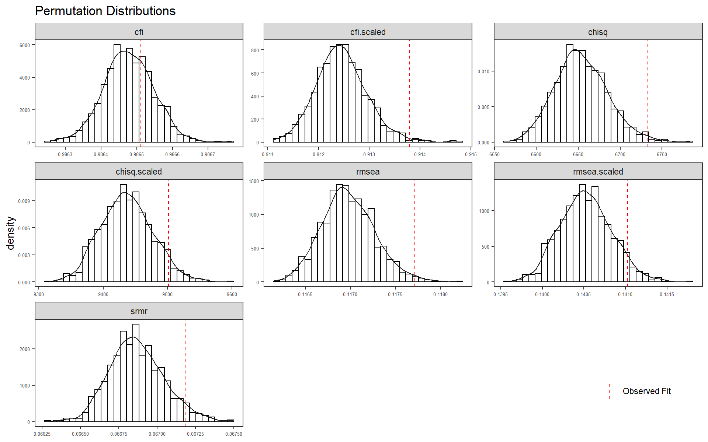

#|cache=T
#|autodept=T
#|cache.comments=T
knitr::opts_chunk$set(
autodep = TRUE, cache=TRUE,
out.width = "100%",
fig.width = 10, fig.asp = 0.625,
tidy = 'formatR'
)Longitudinal Invariance
On this page, longitudinal invariance is discussed in more detail.
# load packages
source("code/load_packages.R")
source("code/load_utility_functions.R")
set.seed(12345) # for replicabilityData
# |include=F
# Setup of Analysis
datw1 <- readr::read_csv("data/UBC_Data_Wave1_Clean.csv")Rows: 4058 Columns: 86
── Column specification ────────────────────────────────────────────────────────
Delimiter: ","
chr (17): HSP ID, help, Gender_Other, Culture, Culture_Other, First_Lanuage,...
dbl (69): Gender, Age, Year_School, CG1, CG2, CG3, CI1, CI2, CI3, SS1, SS2, ...
ℹ Use `spec()` to retrieve the full column specification for this data.
ℹ Specify the column types or set `show_col_types = FALSE` to quiet this message.datw1$wave = 1
datw2 <- readr::read_csv("data/UBC_Data_Wave2_Clean.csv")Rows: 4415 Columns: 117
── Column specification ────────────────────────────────────────────────────────
Delimiter: ","
chr (32): HSP ID, help, Gender_Other, Culture, Culture_Other, First_Lanuage,...
dbl (85): duration, Gender, Age, Year_School, CG1, CG2, CG3, CI1, CI2, CI3, ...
ℹ Use `spec()` to retrieve the full column specification for this data.
ℹ Specify the column types or set `show_col_types = FALSE` to quiet this message.datw2$wave = 2
mydata <- full_join(datw1, datw2)Joining, by = c("HSP ID", "help", "Gender", "Gender_Other", "Age", "Culture",
"Culture_Other", "First_Lanuage", "First_Lanuage_O", "First_Lanuage_2",
"English_Years", "English_Fluent", "Nationality", "Years_Canada",
"Old_Move_Canada", "Religion", "Religion_Other", "Handedness", "Political",
"Year_School", "CG1", "CG2", "CG3", "CI1", "CI2", "CI3", "SS1", "SS2", "SS3",
"SO1", "SO2", "SO3", "DM1", "DM2", "DM3", "DP1", "DP2", "DP3", "DG1", "DG2",
"DG3", "HSP ID_decline", "help_decline", "Gender_decline",
"Gender_Other_decline", "Age_decline", "Culture_decline",
"Culture_Other_decline", "First_Lanuage_decline", "First_Lanuage_O_decline",
"First_Lanuage_2_decline", "English_Years_decline", "English_Fluent_decline",
"Nationality_decline", "Years_Canada_decline", "Old_Move_Canada_decline",
"Religion_decline", "Religion_Other_decline", "Handedness_decline",
"Political_decline", "Year_School_decline", "CG1_decline", "CG2_decline",
"CG3_decline", "CI1_decline", "CI2_decline", "CI3_decline", "SS1_decline",
"SS2_decline", "SS3_decline", "SO1_decline", "SO2_decline", "SO3_decline",
"DM1_decline", "DM2_decline", "DM3_decline", "DP1_decline", "DP2_decline",
"DP3_decline", "DG1_decline", "DG2_decline", "DG3_decline",
"item_decline_total", "Age_Group", "keep_case", "wave")ITEMS <- c(paste0("CG", 1:3), paste0("CI", 1:3), paste0("SS", 1:3), paste0("SO",
1:3), paste0("DM", 1:3), paste0("DP", 1:3), paste0("DG", 1:3))
temp <- mydata %>%
dplyr::select(all_of(c("HSP ID", "wave", "Gender", "Age", "Year_School", ITEMS))) %>%
group_by(`HSP ID`) %>%
mutate(person_response_total = n()) %>%
arrange(desc(person_response_total), `HSP ID`)
# View(temp) for test-retest reliability analysis remove HSP ID# 10310726 - age
# 19 - error in entry of ID number 19860731 - age 22 - '' 32040619 - wave 1 &
# age 19- '' 38851108 - two wave one data only 39550606 - ''
n.prev = nrow(mydata)
temp.mydata <- mydata %>%
dplyr::select(all_of(c("HSP ID", "wave", "Gender", "Age", "Year_School", ITEMS))) %>%
# remove specific rows with known issues
filter(!(`HSP ID` == 10310726 & Age == 19), !(`HSP ID` == 19860731 & Age == 22),
!(`HSP ID` == 32040619 & Age == 19 & wave == 1), !(`HSP ID` == 38851108), !(`HSP ID` ==
39550606))
nrow(temp.mydata) - n.prev[1] -7# Lost 7 responses
# Next, check the counts for missing at each wave
temp.mydata$n_miss_items <- rowSums(is.na(temp.mydata[, ITEMS]))
# overall
table(temp.mydata$n_miss_items)
0 1 2 3 4 5 6 7 8 9 10 11 12 13 14 15
7943 177 57 21 21 13 12 4 6 12 3 7 4 8 7 8
16 17 18 19 20 21
6 5 5 2 14 131 # by wave with complete missing at top (n_miss_items = 21)
temp.mydata %>%
group_by(wave) %>%
count(n_miss_items) %>%
pivot_wider(id_cols = "n_miss_items", names_from = "wave", names_prefix = "Count Wave ",
values_from = "n", values_fill = 0) %>%
arrange(desc(n_miss_items)) %>%
kable(format = "html") %>%
kable_styling(full_width = T)| n_miss_items | Count Wave 1 | Count Wave 2 |
|---|---|---|
| 21 | 80 | 51 |
| 20 | 8 | 6 |
| 19 | 1 | 1 |
| 18 | 3 | 2 |
| 17 | 4 | 1 |
| 16 | 4 | 2 |
| 15 | 5 | 3 |
| 14 | 3 | 4 |
| 13 | 6 | 2 |
| 12 | 3 | 1 |
| 11 | 1 | 6 |
| 10 | 1 | 2 |
| 9 | 2 | 10 |
| 8 | 4 | 2 |
| 7 | 1 | 3 |
| 6 | 6 | 6 |
| 5 | 11 | 2 |
| 4 | 12 | 9 |
| 3 | 8 | 13 |
| 2 | 29 | 28 |
| 1 | 114 | 63 |
| 0 | 3745 | 4198 |
# Exclude individuals with missing at either wave
n.prev = nrow(temp.mydata)
temp.mydata <- temp.mydata %>%
filter(n_miss_items == 0)
nrow(temp.mydata) - n.prev[1] -523# lost 523 cases
# make sure to exclude each wave for those cases
n.prev = nrow(temp.mydata)
temp.mydata <- temp.mydata %>%
group_by(`HSP ID`) %>%
mutate(respond_both_waves = ifelse(n() == 2, 1, 0)) %>%
filter(respond_both_waves == 1)
nrow(temp.mydata) - n.prev[1] -5473# lost 5473
# Lastly, create two dataframe for use in the analyses (1) long format with
# 'Wave indicator variable' for multi-group
analysis.dat <- temp.mydata %>%
dplyr::select(all_of(c("HSP ID", "wave", "Gender", "Age", "Year_School", ITEMS)))
# (2) wide format for longitudinal IFA models
analysis.dat.wide <- analysis.dat %>%
pivot_wider(id_cols = "HSP ID", names_from = "wave", values_from = all_of(ITEMS))Data Summary
# data summary stats
ss <- psych::describeBy(analysis.dat[, ITEMS], group = analysis.dat$wave, mat = T)
ss %>%
mutate(item = substr(rownames(ss), 1, 3), Wave = group1) %>%
dplyr::select(all_of(c("Wave", "item", colnames(ss)[4:14]))) %>%
kable(format = "html", digits = 3, row.names = F) %>%
kable_styling(full_width = T) %>%
scroll_box(width = "100%", height = "500px")| Wave | item | n | mean | sd | median | trimmed | mad | min | max | range | skew | kurtosis |
|---|---|---|---|---|---|---|---|---|---|---|---|---|
| 1 | CG1 | 1235 | 3.781 | 1.626 | 4 | 3.790 | 1.483 | 1 | 7 | 6 | -0.037 | -0.869 |
| 2 | CG1 | 1235 | 3.668 | 1.641 | 4 | 3.665 | 1.483 | 1 | 7 | 6 | 0.045 | -1.025 |
| 1 | CG2 | 1235 | 3.815 | 1.580 | 4 | 3.813 | 1.483 | 1 | 7 | 6 | -0.037 | -0.844 |
| 2 | CG2 | 1235 | 3.657 | 1.602 | 4 | 3.651 | 1.483 | 1 | 7 | 6 | 0.037 | -0.919 |
| 1 | CG3 | 1235 | 4.466 | 1.451 | 5 | 4.548 | 1.483 | 1 | 7 | 6 | -0.458 | -0.387 |
| 2 | CG3 | 1235 | 4.334 | 1.530 | 5 | 4.405 | 1.483 | 1 | 7 | 6 | -0.423 | -0.568 |
| 1 | CI1 | 1235 | 4.075 | 1.610 | 4 | 4.119 | 1.483 | 1 | 7 | 6 | -0.210 | -0.833 |
| 2 | CI1 | 1235 | 3.974 | 1.621 | 4 | 4.005 | 1.483 | 1 | 7 | 6 | -0.136 | -0.905 |
| 1 | CI2 | 1235 | 4.850 | 1.289 | 5 | 4.960 | 1.483 | 1 | 7 | 6 | -0.740 | 0.279 |
| 2 | CI2 | 1235 | 4.816 | 1.296 | 5 | 4.950 | 1.483 | 1 | 7 | 6 | -0.863 | 0.531 |
| 1 | CI3 | 1235 | 4.609 | 1.476 | 5 | 4.678 | 1.483 | 1 | 7 | 6 | -0.409 | -0.432 |
| 2 | CI3 | 1235 | 4.522 | 1.499 | 5 | 4.610 | 1.483 | 1 | 7 | 6 | -0.480 | -0.396 |
| 1 | SS1 | 1235 | 4.321 | 1.499 | 4 | 4.383 | 1.483 | 1 | 7 | 6 | -0.315 | -0.577 |
| 2 | SS1 | 1235 | 4.118 | 1.538 | 4 | 4.150 | 1.483 | 1 | 7 | 6 | -0.168 | -0.785 |
| 1 | SS2 | 1235 | 4.852 | 1.524 | 5 | 4.964 | 1.483 | 1 | 7 | 6 | -0.616 | -0.218 |
| 2 | SS2 | 1235 | 4.709 | 1.478 | 5 | 4.786 | 1.483 | 1 | 7 | 6 | -0.496 | -0.287 |
| 1 | SS3 | 1235 | 4.114 | 1.561 | 4 | 4.128 | 1.483 | 1 | 7 | 6 | -0.104 | -0.794 |
| 2 | SS3 | 1235 | 3.947 | 1.551 | 4 | 3.939 | 1.483 | 1 | 7 | 6 | 0.004 | -0.772 |
| 1 | SO1 | 1235 | 4.649 | 1.358 | 5 | 4.756 | 1.483 | 1 | 7 | 6 | -0.564 | -0.085 |
| 2 | SO1 | 1235 | 4.604 | 1.386 | 5 | 4.703 | 1.483 | 1 | 7 | 6 | -0.480 | -0.288 |
| 1 | SO2 | 1235 | 3.973 | 1.497 | 4 | 3.999 | 1.483 | 1 | 7 | 6 | -0.147 | -0.736 |
| 2 | SO2 | 1235 | 3.908 | 1.552 | 4 | 3.932 | 1.483 | 1 | 7 | 6 | -0.112 | -0.860 |
| 1 | SO3 | 1235 | 3.830 | 1.454 | 4 | 3.844 | 1.483 | 1 | 7 | 6 | -0.136 | -0.709 |
| 2 | SO3 | 1235 | 3.747 | 1.507 | 4 | 3.750 | 1.483 | 1 | 7 | 6 | -0.049 | -0.827 |
| 1 | DM1 | 1235 | 3.803 | 1.476 | 4 | 3.806 | 1.483 | 1 | 7 | 6 | -0.100 | -0.570 |
| 2 | DM1 | 1235 | 3.639 | 1.539 | 4 | 3.635 | 1.483 | 1 | 7 | 6 | 0.011 | -0.697 |
| 1 | DM2 | 1235 | 4.069 | 1.687 | 4 | 4.098 | 1.483 | 1 | 7 | 6 | -0.163 | -0.951 |
| 2 | DM2 | 1235 | 3.873 | 1.669 | 4 | 3.890 | 1.483 | 1 | 7 | 6 | -0.047 | -0.967 |
| 1 | DM3 | 1235 | 4.297 | 1.633 | 5 | 4.347 | 1.483 | 1 | 7 | 6 | -0.307 | -0.836 |
| 2 | DM3 | 1235 | 4.106 | 1.673 | 4 | 4.158 | 1.483 | 1 | 7 | 6 | -0.257 | -0.953 |
| 1 | DP1 | 1235 | 4.659 | 1.500 | 5 | 4.767 | 1.483 | 1 | 7 | 6 | -0.637 | -0.213 |
| 2 | DP1 | 1235 | 4.486 | 1.559 | 5 | 4.595 | 1.483 | 1 | 7 | 6 | -0.577 | -0.452 |
| 1 | DP2 | 1235 | 4.237 | 1.586 | 4 | 4.290 | 1.483 | 1 | 7 | 6 | -0.292 | -0.796 |
| 2 | DP2 | 1235 | 4.067 | 1.622 | 4 | 4.115 | 1.483 | 1 | 7 | 6 | -0.205 | -0.883 |
| 1 | DP3 | 1235 | 5.001 | 1.310 | 5 | 5.098 | 1.483 | 1 | 7 | 6 | -0.750 | 0.397 |
| 2 | DP3 | 1235 | 4.884 | 1.360 | 5 | 4.996 | 1.483 | 1 | 7 | 6 | -0.773 | 0.410 |
| 1 | DG1 | 1235 | 4.581 | 1.497 | 5 | 4.650 | 1.483 | 1 | 7 | 6 | -0.410 | -0.558 |
| 2 | DG1 | 1235 | 4.527 | 1.562 | 5 | 4.609 | 1.483 | 1 | 7 | 6 | -0.476 | -0.572 |
| 1 | DG2 | 1235 | 5.394 | 1.284 | 6 | 5.541 | 1.483 | 1 | 7 | 6 | -0.965 | 0.854 |
| 2 | DG2 | 1235 | 5.258 | 1.386 | 6 | 5.422 | 1.483 | 1 | 7 | 6 | -1.052 | 0.909 |
| 1 | DG3 | 1235 | 5.066 | 1.435 | 5 | 5.188 | 1.483 | 1 | 7 | 6 | -0.726 | 0.059 |
| 2 | DG3 | 1235 | 5.025 | 1.464 | 5 | 5.158 | 1.483 | 1 | 7 | 6 | -0.834 | 0.207 |
counts <- t(sapply(analysis.dat.wide[, paste0(ITEMS, "_1")], table))
prop1 <- counts/nrow(analysis.dat.wide)
counts <- t(sapply(analysis.dat.wide[, paste0(ITEMS, "_2")], table))
prop2 <- counts/nrow(analysis.dat.wide)
prop <- rbind(prop1, prop2)
print(xtable(cbind(ss[, c("group1", "mean", "sd")], prop)))% latex table generated in R 4.2.0 by xtable 1.8-4 package
% Fri Oct 21 19:21:03 2022
\begin{table}[ht]
\centering
\begin{tabular}{rlrrrrrrrrr}
\hline
& group1 & mean & sd & 1 & 2 & 3 & 4 & 5 & 6 & 7 \\
\hline
CG11 & 1 & 3.78 & 1.63 & 0.09 & 0.19 & 0.10 & 0.27 & 0.19 & 0.11 & 0.04 \\
CG12 & 2 & 3.67 & 1.64 & 0.07 & 0.19 & 0.12 & 0.25 & 0.21 & 0.11 & 0.04 \\
CG21 & 1 & 3.81 & 1.58 & 0.03 & 0.10 & 0.10 & 0.22 & 0.31 & 0.19 & 0.06 \\
CG22 & 2 & 3.66 & 1.60 & 0.07 & 0.14 & 0.13 & 0.23 & 0.23 & 0.16 & 0.05 \\
CG31 & 1 & 4.47 & 1.45 & 0.01 & 0.05 & 0.09 & 0.16 & 0.36 & 0.28 & 0.06 \\
CG32 & 2 & 4.33 & 1.53 & 0.02 & 0.09 & 0.10 & 0.21 & 0.28 & 0.21 & 0.09 \\
CI11 & 1 & 4.08 & 1.61 & 0.04 & 0.10 & 0.14 & 0.22 & 0.26 & 0.18 & 0.05 \\
CI12 & 2 & 3.97 & 1.62 & 0.03 & 0.05 & 0.09 & 0.19 & 0.23 & 0.28 & 0.12 \\
CI21 & 1 & 4.85 & 1.29 & 0.04 & 0.14 & 0.16 & 0.23 & 0.22 & 0.15 & 0.06 \\
CI22 & 2 & 4.82 & 1.30 & 0.02 & 0.06 & 0.09 & 0.24 & 0.28 & 0.25 & 0.05 \\
CI31 & 1 & 4.61 & 1.48 & 0.06 & 0.13 & 0.19 & 0.21 & 0.25 & 0.13 & 0.03 \\
CI32 & 2 & 4.52 & 1.50 & 0.06 & 0.15 & 0.17 & 0.27 & 0.22 & 0.11 & 0.02 \\
SS11 & 1 & 4.32 & 1.50 & 0.07 & 0.16 & 0.13 & 0.33 & 0.20 & 0.09 & 0.03 \\
SS12 & 2 & 4.12 & 1.54 & 0.07 & 0.16 & 0.13 & 0.18 & 0.24 & 0.15 & 0.06 \\
SS21 & 1 & 4.85 & 1.52 & 0.05 & 0.13 & 0.13 & 0.16 & 0.27 & 0.18 & 0.07 \\
SS22 & 2 & 4.71 & 1.48 & 0.03 & 0.08 & 0.10 & 0.14 & 0.34 & 0.23 & 0.08 \\
SS31 & 1 & 4.11 & 1.56 & 0.05 & 0.13 & 0.13 & 0.19 & 0.26 & 0.18 & 0.05 \\
SS32 & 2 & 3.95 & 1.55 & 0.01 & 0.04 & 0.06 & 0.18 & 0.29 & 0.31 & 0.09 \\
SO11 & 1 & 4.65 & 1.36 & 0.02 & 0.09 & 0.14 & 0.15 & 0.31 & 0.20 & 0.08 \\
SO12 & 2 & 4.60 & 1.39 & 0.01 & 0.03 & 0.05 & 0.10 & 0.28 & 0.35 & 0.19 \\
SO21 & 1 & 3.97 & 1.50 & 0.02 & 0.05 & 0.09 & 0.11 & 0.31 & 0.27 & 0.15 \\
SO22 & 2 & 3.91 & 1.55 & 0.10 & 0.22 & 0.14 & 0.19 & 0.22 & 0.11 & 0.03 \\
SO31 & 1 & 3.83 & 1.45 & 0.09 & 0.20 & 0.14 & 0.22 & 0.21 & 0.10 & 0.03 \\
SO32 & 2 & 3.75 & 1.51 & 0.04 & 0.12 & 0.11 & 0.20 & 0.31 & 0.17 & 0.05 \\
DM11 & 1 & 3.80 & 1.48 & 0.07 & 0.15 & 0.16 & 0.19 & 0.23 & 0.15 & 0.04 \\
DM12 & 2 & 3.64 & 1.54 & 0.02 & 0.05 & 0.08 & 0.15 & 0.38 & 0.27 & 0.05 \\
DM21 & 1 & 4.07 & 1.69 & 0.03 & 0.09 & 0.11 & 0.20 & 0.29 & 0.21 & 0.07 \\
DM22 & 2 & 3.87 & 1.67 & 0.05 & 0.13 & 0.18 & 0.20 & 0.25 & 0.15 & 0.04 \\
DM31 & 1 & 4.30 & 1.63 & 0.03 & 0.06 & 0.12 & 0.21 & 0.25 & 0.24 & 0.09 \\
DM32 & 2 & 4.11 & 1.67 & 0.05 & 0.16 & 0.18 & 0.23 & 0.21 & 0.12 & 0.05 \\
DP11 & 1 & 4.66 & 1.50 & 0.02 & 0.08 & 0.10 & 0.23 & 0.28 & 0.24 & 0.05 \\
DP12 & 2 & 4.49 & 1.56 & 0.07 & 0.15 & 0.19 & 0.19 & 0.24 & 0.13 & 0.03 \\
DP21 & 1 & 4.24 & 1.59 & 0.07 & 0.17 & 0.18 & 0.24 & 0.21 & 0.11 & 0.02 \\
DP22 & 2 & 4.07 & 1.62 & 0.10 & 0.17 & 0.15 & 0.29 & 0.18 & 0.08 & 0.03 \\
DP31 & 1 & 5.00 & 1.31 & 0.09 & 0.17 & 0.16 & 0.18 & 0.22 & 0.13 & 0.05 \\
DP32 & 2 & 4.88 & 1.36 & 0.07 & 0.16 & 0.12 & 0.16 & 0.27 & 0.17 & 0.05 \\
DG11 & 1 & 4.58 & 1.50 & 0.05 & 0.10 & 0.10 & 0.16 & 0.31 & 0.22 & 0.06 \\
DG12 & 2 & 4.53 & 1.56 & 0.07 & 0.14 & 0.16 & 0.19 & 0.24 & 0.17 & 0.04 \\
DG21 & 1 & 5.39 & 1.28 & 0.02 & 0.05 & 0.07 & 0.18 & 0.33 & 0.27 & 0.08 \\
DG22 & 2 & 5.26 & 1.39 & 0.04 & 0.10 & 0.13 & 0.14 & 0.30 & 0.21 & 0.08 \\
DG31 & 1 & 5.07 & 1.44 & 0.02 & 0.04 & 0.06 & 0.10 & 0.27 & 0.35 & 0.16 \\
DG32 & 2 & 5.03 & 1.46 & 0.03 & 0.05 & 0.09 & 0.10 & 0.30 & 0.30 & 0.13 \\
\hline
\end{tabular}
\end{table}Measurement Model
The basic measurement model is shown below (in lavaan syntax) and in the path diagram.
base_model <- "
C =~ NA*CG1 + CG2 + CG3 + CI1 + CI2 + CI3
S =~ NA*SS1 + SS2 + SS3 + SO1 + SO2 + SO3
D =~ NA*DM1 + DM2 + DM3 + DP1 + DP2 + DP3 + DG1 + DG2 + DG3
C ~~ S + D
S ~~ D
C ~~ 1*C
S ~~ 1*S
D ~~ 1*D
"
# longitudinal equivalent
configural.model.wide <- "
C1 =~ NA*CG1_1 + CG2_1 + CG3_1 + CI1_1 + CI2_1 + CI3_1
S1 =~ NA*SS1_1 + SS2_1 + SS3_1 + SO1_1 + SO2_1 + SO3_1
D1 =~ NA*DM1_1 + DM2_1 + DM3_1 + DP1_1 + DP2_1 + DP3_1 + DG1_1 + DG2_1 + DG3_1
C1 ~~ S1 + D1
S1 ~~ D1
C1 ~~ 1*C1
S1 ~~ 1*S1
D1 ~~ 1*D1
C2 =~ NA*CG1_2 + CG2_2 + CG3_2 + CI1_2 + CI2_2 + CI3_2
S2 =~ NA*SS1_2 + SS2_2 + SS3_2 + SO1_2 + SO2_2 + SO3_2
D2 =~ NA*DM1_2 + DM2_2 + DM3_2 + DP1_2 + DP2_2 + DP3_2 + DG1_2 + DG2_2 + DG3_2
C2 ~~ S2 + D2
S2 ~~ D2
C2 ~~ 1*C2
S2 ~~ 1*S2
D2 ~~ 1*D2
# cross wave factor covariances
C1 ~~ C2 + S2 + D2
S1 ~~ C2 + S2 + D2
D1 ~~ C2 + S2 + D2
# cross wave item residual covariances
CG1_1 ~~ CG1_2
CG2_1 ~~ CG2_2
CG3_1 ~~ CG3_2
CI1_1 ~~ CI1_2
CI2_1 ~~ CI2_2
CI3_1 ~~ CI3_2
SS1_1 ~~ SS1_2
SS2_1 ~~ SS2_2
SS3_1 ~~ SS3_2
SO1_1 ~~ SO1_2
SO2_1 ~~ SO2_2
SO3_1 ~~ SO3_2
DM1_1 ~~ DM1_2
DM2_1 ~~ DM2_2
DM3_1 ~~ DM3_2
DP1_1 ~~ DP1_2
DP2_1 ~~ DP2_2
DP3_1 ~~ DP3_2
DG1_1 ~~ DG1_2
DG2_1 ~~ DG2_2
DG3_1 ~~ DG3_2
"Configural Invariance
nPerm <- 1000 # for testing - for full analysis use >=1000
# robust not available for categorical model
myAFIs <- c("chisq", "chisq.scaled", "cfi", "cfi.scaled", "rmsea", "rmsea.scaled",
"srmr")
# obtain multigroup syntax
syntax.config <- measEq.syntax(configural.model = base_model, data = analysis.dat,
ordered = T, parameterization = "delta", ID.cat = "Wu.Estabrook.2016", ID.fac = "std.lv",
group.equal = "configural", group = "wave")
mod.config <- as.character(syntax.config)
# cat(mod.config)
fit.config <- cfa(mod.config, data = analysis.dat, group = "wave")
summary(fit.config, standardized = T, fit.measures = T)lavaan 0.6-12 ended normally after 26 iterations
Estimator DWLS
Optimization method NLMINB
Number of model parameters 300
Number of observations per group:
1 1235
2 1235
Model Test User Model:
Standard Robust
Test Statistic 6733.085 9501.703
Degrees of freedom 372 372
P-value (Chi-square) 0.000 0.000
Scaling correction factor 0.720
Shift parameter for each group:
1 75.936
2 75.936
simple second-order correction
Test statistic for each group:
1 2996.646 4237.198
2 3736.440 5264.505
Model Test Baseline Model:
Test statistic 472029.527 106318.182
Degrees of freedom 420 420
P-value 0.000 0.000
Scaling correction factor 4.453
User Model versus Baseline Model:
Comparative Fit Index (CFI) 0.987 0.914
Tucker-Lewis Index (TLI) 0.985 0.903
Robust Comparative Fit Index (CFI) NA
Robust Tucker-Lewis Index (TLI) NA
Root Mean Square Error of Approximation:
RMSEA 0.118 0.141
90 Percent confidence interval - lower 0.115 0.139
90 Percent confidence interval - upper 0.120 0.143
P-value RMSEA <= 0.05 0.000 0.000
Robust RMSEA NA
90 Percent confidence interval - lower NA
90 Percent confidence interval - upper NA
Standardized Root Mean Square Residual:
SRMR 0.067 0.067
Parameter Estimates:
Standard errors Robust.sem
Information Expected
Information saturated (h1) model Unstructured
Group 1 [1]:
Latent Variables:
Estimate Std.Err z-value P(>|z|) Std.lv Std.all
C =~
CG1 (l.1_) 0.856 0.008 103.818 0.000 0.856 0.856
CG2 (l.2_) 0.849 0.008 103.060 0.000 0.849 0.849
CG3 (l.3_) 0.784 0.011 69.495 0.000 0.784 0.784
CI1 (l.4_) 0.894 0.009 101.709 0.000 0.894 0.894
CI2 (l.5_) 0.655 0.018 37.213 0.000 0.655 0.655
CI3 (l.6_) 0.756 0.014 53.866 0.000 0.756 0.756
S =~
SS1 (l.7_) 0.795 0.011 69.863 0.000 0.795 0.795
SS2 (l.8_) 0.696 0.015 45.112 0.000 0.696 0.696
SS3 (l.9_) 0.886 0.009 98.334 0.000 0.886 0.886
SO1 (l.10) 0.655 0.017 38.726 0.000 0.655 0.655
SO2 (l.11) 0.734 0.014 51.966 0.000 0.734 0.734
SO3 (l.12) 0.708 0.015 46.824 0.000 0.708 0.708
D =~
DM1 (l.13) 0.766 0.013 60.997 0.000 0.766 0.766
DM2 (l.14) 0.836 0.009 98.270 0.000 0.836 0.836
DM3 (l.15) 0.882 0.007 132.967 0.000 0.882 0.882
DP1 (l.16) 0.900 0.006 139.454 0.000 0.900 0.900
DP2 (l.17) 0.852 0.009 94.978 0.000 0.852 0.852
DP3 (l.18) 0.709 0.014 50.891 0.000 0.709 0.709
DG1 (l.19) 0.749 0.013 59.660 0.000 0.749 0.749
DG2 (l.20) 0.695 0.014 48.716 0.000 0.695 0.695
DG3 (l.21) 0.669 0.015 45.106 0.000 0.669 0.669
Covariances:
Estimate Std.Err z-value P(>|z|) Std.lv Std.all
C ~~
S (p.2_) 0.747 0.013 58.537 0.000 0.747 0.747
D (p.3_1) 0.705 0.013 53.075 0.000 0.705 0.705
S ~~
D (p.3_2) 0.785 0.012 65.147 0.000 0.785 0.785
Intercepts:
Estimate Std.Err z-value P(>|z|) Std.lv Std.all
.CG1 (n.1.) 0.000 0.000 0.000
.CG2 (n.2.) 0.000 0.000 0.000
.CG3 (n.3.) 0.000 0.000 0.000
.CI1 (n.4.) 0.000 0.000 0.000
.CI2 (n.5.) 0.000 0.000 0.000
.CI3 (n.6.) 0.000 0.000 0.000
.SS1 (n.7.) 0.000 0.000 0.000
.SS2 (n.8.) 0.000 0.000 0.000
.SS3 (n.9.) 0.000 0.000 0.000
.SO1 (n.10) 0.000 0.000 0.000
.SO2 (n.11) 0.000 0.000 0.000
.SO3 (n.12) 0.000 0.000 0.000
.DM1 (n.13) 0.000 0.000 0.000
.DM2 (n.14) 0.000 0.000 0.000
.DM3 (n.15) 0.000 0.000 0.000
.DP1 (n.16) 0.000 0.000 0.000
.DP2 (n.17) 0.000 0.000 0.000
.DP3 (n.18) 0.000 0.000 0.000
.DG1 (n.19) 0.000 0.000 0.000
.DG2 (n.20) 0.000 0.000 0.000
.DG3 (n.21) 0.000 0.000 0.000
C (a.1.) 0.000 0.000 0.000
S (a.2.) 0.000 0.000 0.000
D (a.3.) 0.000 0.000 0.000
Thresholds:
Estimate Std.Err z-value P(>|z|) Std.lv Std.all
CG1|t1 (CG1.1) -1.332 0.050 -26.671 0.000 -1.332 -1.332
CG1|t2 (CG1.2) -0.580 0.038 -15.283 0.000 -0.580 -0.580
CG1|t3 (CG1.3) -0.291 0.036 -8.038 0.000 -0.291 -0.291
CG1|t4 (CG1.4) 0.397 0.037 10.807 0.000 0.397 0.397
CG1|t5 (CG1.5) 1.027 0.043 23.644 0.000 1.027 1.027
CG1|t6 (CG1.6) 1.745 0.064 27.066 0.000 1.745 1.745
CG2|t1 (CG2.1) -1.455 0.053 -27.225 0.000 -1.455 -1.455
CG2|t2 (CG2.2) -0.629 0.038 -16.388 0.000 -0.629 -0.629
CG2|t3 (CG2.3) -0.283 0.036 -7.812 0.000 -0.283 -0.283
CG2|t4 (CG2.4) 0.364 0.037 9.961 0.000 0.364 0.364
CG2|t5 (CG2.5) 1.055 0.044 24.018 0.000 1.055 1.055
CG2|t6 (CG2.6) 1.784 0.066 26.902 0.000 1.784 1.784
CG3|t1 (CG3.1) -1.918 0.074 -26.092 0.000 -1.918 -1.918
CG3|t2 (CG3.2) -1.125 0.045 -24.870 0.000 -1.125 -1.125
CG3|t3 (CG3.3) -0.739 0.039 -18.730 0.000 -0.739 -0.739
CG3|t4 (CG3.4) -0.137 0.036 -3.839 0.000 -0.137 -0.137
CG3|t5 (CG3.5) 0.692 0.039 17.756 0.000 0.692 0.692
CG3|t6 (CG3.6) 1.598 0.058 27.394 0.000 1.598 1.598
CI1|t1 (CI1.1) -1.503 0.055 -27.338 0.000 -1.503 -1.503
CI1|t2 (CI1.2) -0.807 0.040 -20.063 0.000 -0.807 -0.807
CI1|t3 (CI1.3) -0.414 0.037 -11.258 0.000 -0.414 -0.414
CI1|t4 (CI1.4) 0.164 0.036 4.578 0.000 0.164 0.164
CI1|t5 (CI1.5) 0.807 0.040 20.063 0.000 0.807 0.807
CI1|t6 (CI1.6) 1.683 0.062 27.263 0.000 1.683 1.683
CI2|t1 (CI2.1) -2.204 0.094 -23.369 0.000 -2.204 -2.204
CI2|t2 (CI2.2) -1.542 0.056 -27.387 0.000 -1.542 -1.542
CI2|t3 (CI2.3) -1.017 0.043 -23.502 0.000 -1.017 -1.017
CI2|t4 (CI2.4) -0.496 0.037 -13.279 0.000 -0.496 -0.496
CI2|t5 (CI2.5) 0.432 0.037 11.708 0.000 0.432 0.432
CI2|t6 (CI2.6) 1.576 0.058 27.400 0.000 1.576 1.576
CI3|t1 (CI3.1) -2.017 0.080 -25.293 0.000 -2.017 -2.017
CI3|t2 (CI3.2) -1.222 0.047 -25.850 0.000 -1.222 -1.222
CI3|t3 (CI3.3) -0.796 0.040 -19.851 0.000 -0.796 -0.796
CI3|t4 (CI3.4) -0.185 0.036 -5.146 0.000 -0.185 -0.185
CI3|t5 (CI3.5) 0.542 0.038 14.395 0.000 0.542 0.542
CI3|t6 (CI3.6) 1.357 0.051 26.815 0.000 1.357 1.357
SS1|t1 (SS1.1) -1.774 0.066 -26.947 0.000 -1.774 -1.774
SS1|t2 (SS1.2) -1.080 0.044 -24.339 0.000 -1.080 -1.080
SS1|t3 (SS1.3) -0.580 0.038 -15.283 0.000 -0.580 -0.580
SS1|t4 (SS1.4) 0.011 0.036 0.313 0.754 0.011 0.011
SS1|t5 (SS1.5) 0.731 0.039 18.568 0.000 0.731 0.731
SS1|t6 (SS1.6) 1.620 0.059 27.377 0.000 1.620 1.620
SS2|t1 (SS2.1) -1.847 0.070 -26.566 0.000 -1.847 -1.847
SS2|t2 (SS2.2) -1.362 0.051 -26.842 0.000 -1.362 -1.362
SS2|t3 (SS2.3) -0.913 0.042 -21.927 0.000 -0.913 -0.913
SS2|t4 (SS2.4) -0.325 0.036 -8.944 0.000 -0.325 -0.325
SS2|t5 (SS2.5) 0.251 0.036 6.962 0.000 0.251 0.251
SS2|t6 (SS2.6) 1.160 0.046 25.252 0.000 1.160 1.160
SS3|t1 (SS3.1) -1.709 0.063 -27.191 0.000 -1.709 -1.709
SS3|t2 (SS3.2) -0.889 0.041 -21.519 0.000 -0.889 -0.889
SS3|t3 (SS3.3) -0.401 0.037 -10.920 0.000 -0.401 -0.401
SS3|t4 (SS3.4) 0.185 0.036 5.146 0.000 0.185 0.185
SS3|t5 (SS3.5) 0.816 0.040 20.221 0.000 0.816 0.816
SS3|t6 (SS3.6) 1.598 0.058 27.394 0.000 1.598 1.598
SO1|t1 (SO1.1) -2.032 0.081 -25.150 0.000 -2.032 -2.032
SO1|t2 (SO1.2) -1.377 0.051 -26.921 0.000 -1.377 -1.377
SO1|t3 (SO1.3) -0.922 0.042 -22.078 0.000 -0.922 -0.922
SO1|t4 (SO1.4) -0.212 0.036 -5.884 0.000 -0.212 -0.212
SO1|t5 (SO1.5) 0.526 0.038 14.005 0.000 0.526 0.526
SO1|t6 (SO1.6) 1.651 0.060 27.333 0.000 1.651 1.651
SO2|t1 (SO2.1) -1.598 0.058 -27.394 0.000 -1.598 -1.598
SO2|t2 (SO2.2) -0.889 0.041 -21.519 0.000 -0.889 -0.889
SO2|t3 (SO2.3) -0.310 0.036 -8.548 0.000 -0.310 -0.310
SO2|t4 (SO2.4) 0.235 0.036 6.508 0.000 0.235 0.235
SO2|t5 (SO2.5) 1.007 0.043 23.358 0.000 1.007 1.007
SO2|t6 (SO2.6) 1.893 0.072 26.268 0.000 1.893 1.893
SO3|t1 (SO3.1) -1.542 0.056 -27.387 0.000 -1.542 -1.542
SO3|t2 (SO3.2) -0.796 0.040 -19.851 0.000 -0.796 -0.796
SO3|t3 (SO3.3) -0.291 0.036 -8.038 0.000 -0.291 -0.291
SO3|t4 (SO3.4) 0.395 0.037 10.751 0.000 0.395 0.395
SO3|t5 (SO3.5) 1.140 0.046 25.042 0.000 1.140 1.140
SO3|t6 (SO3.6) 2.140 0.089 24.083 0.000 2.140 2.140
DM1|t1 (DM1.1) -1.479 0.054 -27.288 0.000 -1.479 -1.479
DM1|t2 (DM1.2) -0.734 0.039 -18.622 0.000 -0.734 -0.734
DM1|t3 (DM1.3) -0.362 0.037 -9.905 0.000 -0.362 -0.362
DM1|t4 (DM1.4) 0.480 0.037 12.887 0.000 0.480 0.480
DM1|t5 (DM1.5) 1.180 0.046 25.457 0.000 1.180 1.180
DM1|t6 (DM1.6) 1.906 0.073 26.182 0.000 1.906 1.906
DM2|t1 (DM2.1) -1.449 0.053 -27.207 0.000 -1.449 -1.449
DM2|t2 (DM2.2) -0.736 0.039 -18.676 0.000 -0.736 -0.736
DM2|t3 (DM2.3) -0.349 0.036 -9.566 0.000 -0.349 -0.349
DM2|t4 (DM2.4) 0.109 0.036 3.043 0.002 0.109 0.109
DM2|t5 (DM2.5) 0.785 0.040 19.639 0.000 0.785 0.785
DM2|t6 (DM2.6) 1.522 0.056 27.367 0.000 1.522 1.522
DM3|t1 (DM3.1) -1.643 0.060 -27.346 0.000 -1.643 -1.643
DM3|t2 (DM3.2) -0.898 0.041 -21.673 0.000 -0.898 -0.898
DM3|t3 (DM3.3) -0.484 0.037 -12.999 0.000 -0.484 -0.484
DM3|t4 (DM3.4) -0.056 0.036 -1.564 0.118 -0.056 -0.056
DM3|t5 (DM3.5) 0.661 0.039 17.101 0.000 0.661 0.661
DM3|t6 (DM3.6) 1.479 0.054 27.288 0.000 1.479 1.479
DP1|t1 (DP1.1) -1.825 0.068 -26.691 0.000 -1.825 -1.825
DP1|t2 (DP1.2) -1.188 0.047 -25.538 0.000 -1.188 -1.188
DP1|t3 (DP1.3) -0.793 0.040 -19.798 0.000 -0.793 -0.793
DP1|t4 (DP1.4) -0.362 0.037 -9.905 0.000 -0.362 -0.362
DP1|t5 (DP1.5) 0.512 0.037 13.670 0.000 0.512 0.512
DP1|t6 (DP1.6) 1.415 0.052 27.088 0.000 1.415 1.415
DP2|t1 (DP2.1) -1.659 0.061 -27.318 0.000 -1.659 -1.659
DP2|t2 (DP2.2) -0.904 0.042 -21.774 0.000 -0.904 -0.904
DP2|t3 (DP2.3) -0.486 0.037 -13.055 0.000 -0.486 -0.486
DP2|t4 (DP2.4) 0.015 0.036 0.427 0.670 0.015 0.015
DP2|t5 (DP2.5) 0.723 0.039 18.406 0.000 0.723 0.723
DP2|t6 (DP2.6) 1.612 0.059 27.384 0.000 1.612 1.612
DP3|t1 (DP3.1) -2.181 0.092 -23.624 0.000 -2.181 -2.181
DP3|t2 (DP3.2) -1.598 0.058 -27.394 0.000 -1.598 -1.598
DP3|t3 (DP3.3) -1.180 0.046 -25.457 0.000 -1.180 -1.180
DP3|t4 (DP3.4) -0.514 0.037 -13.726 0.000 -0.514 -0.514
DP3|t5 (DP3.5) 0.249 0.036 6.905 0.000 0.249 0.249
DP3|t6 (DP3.6) 1.332 0.050 26.671 0.000 1.332 1.332
DG1|t1 (DG1.1) -2.001 0.079 -25.427 0.000 -2.001 -2.001
DG1|t2 (DG1.2) -1.217 0.047 -25.811 0.000 -1.217 -1.217
DG1|t3 (DG1.3) -0.666 0.039 -17.211 0.000 -0.666 -0.666
DG1|t4 (DG1.4) -0.247 0.036 -6.848 0.000 -0.247 -0.247
DG1|t5 (DG1.5) 0.561 0.038 14.840 0.000 0.561 0.561
DG1|t6 (DG1.6) 1.383 0.051 26.947 0.000 1.383 1.383
DG2|t1 (DG2.1) -2.443 0.120 -20.371 0.000 -2.443 -2.443
DG2|t2 (DG2.2) -1.736 0.064 -27.101 0.000 -1.736 -1.736
DG2|t3 (DG2.3) -1.342 0.050 -26.730 0.000 -1.342 -1.342
DG2|t4 (DG2.4) -0.895 0.041 -21.622 0.000 -0.895 -0.895
DG2|t5 (DG2.5) -0.080 0.036 -2.247 0.025 -0.080 -0.080
DG2|t6 (DG2.6) 0.892 0.041 21.571 0.000 0.892 0.892
DG3|t1 (DG3.1) -2.160 0.091 -23.861 0.000 -2.160 -2.160
DG3|t2 (DG3.2) -1.485 0.054 -27.302 0.000 -1.485 -1.485
DG3|t3 (DG3.3) -1.017 0.043 -23.502 0.000 -1.017 -1.017
DG3|t4 (DG3.4) -0.619 0.038 -16.168 0.000 -0.619 -0.619
DG3|t5 (DG3.5) 0.201 0.036 5.600 0.000 0.201 0.201
DG3|t6 (DG3.6) 1.023 0.043 23.597 0.000 1.023 1.023
Variances:
Estimate Std.Err z-value P(>|z|) Std.lv Std.all
C (p.1_) 1.000 1.000 1.000
S (p.2_) 1.000 1.000 1.000
D (p.3_) 1.000 1.000 1.000
.CG1 0.267 0.267 0.267
.CG2 0.279 0.279 0.279
.CG3 0.385 0.385 0.385
.CI1 0.201 0.201 0.201
.CI2 0.571 0.571 0.571
.CI3 0.428 0.428 0.428
.SS1 0.367 0.367 0.367
.SS2 0.515 0.515 0.515
.SS3 0.215 0.215 0.215
.SO1 0.570 0.570 0.570
.SO2 0.461 0.461 0.461
.SO3 0.499 0.499 0.499
.DM1 0.413 0.413 0.413
.DM2 0.302 0.302 0.302
.DM3 0.222 0.222 0.222
.DP1 0.191 0.191 0.191
.DP2 0.275 0.275 0.275
.DP3 0.498 0.498 0.498
.DG1 0.439 0.439 0.439
.DG2 0.518 0.518 0.518
.DG3 0.553 0.553 0.553
Scales y*:
Estimate Std.Err z-value P(>|z|) Std.lv Std.all
CG1 1.000 1.000 1.000
CG2 1.000 1.000 1.000
CG3 1.000 1.000 1.000
CI1 1.000 1.000 1.000
CI2 1.000 1.000 1.000
CI3 1.000 1.000 1.000
SS1 1.000 1.000 1.000
SS2 1.000 1.000 1.000
SS3 1.000 1.000 1.000
SO1 1.000 1.000 1.000
SO2 1.000 1.000 1.000
SO3 1.000 1.000 1.000
DM1 1.000 1.000 1.000
DM2 1.000 1.000 1.000
DM3 1.000 1.000 1.000
DP1 1.000 1.000 1.000
DP2 1.000 1.000 1.000
DP3 1.000 1.000 1.000
DG1 1.000 1.000 1.000
DG2 1.000 1.000 1.000
DG3 1.000 1.000 1.000
Group 2 [2]:
Latent Variables:
Estimate Std.Err z-value P(>|z|) Std.lv Std.all
C =~
CG1 (l.1_) 0.894 0.007 130.251 0.000 0.894 0.894
CG2 (l.2_) 0.901 0.007 135.883 0.000 0.901 0.901
CG3 (l.3_) 0.793 0.011 72.698 0.000 0.793 0.793
CI1 (l.4_) 0.924 0.007 140.050 0.000 0.924 0.924
CI2 (l.5_) 0.708 0.016 44.650 0.000 0.708 0.708
CI3 (l.6_) 0.773 0.013 60.153 0.000 0.773 0.773
S =~
SS1 (l.7_) 0.804 0.011 71.699 0.000 0.804 0.804
SS2 (l.8_) 0.726 0.015 49.292 0.000 0.726 0.726
SS3 (l.9_) 0.904 0.008 109.078 0.000 0.904 0.904
SO1 (l.10) 0.658 0.017 39.559 0.000 0.658 0.658
SO2 (l.11) 0.753 0.013 59.638 0.000 0.753 0.753
SO3 (l.12) 0.754 0.013 59.107 0.000 0.754 0.754
D =~
DM1 (l.13) 0.811 0.010 80.387 0.000 0.811 0.811
DM2 (l.14) 0.871 0.007 120.183 0.000 0.871 0.871
DM3 (l.15) 0.909 0.005 165.982 0.000 0.909 0.909
DP1 (l.16) 0.905 0.006 161.781 0.000 0.905 0.905
DP2 (l.17) 0.870 0.007 117.519 0.000 0.870 0.870
DP3 (l.18) 0.758 0.012 65.065 0.000 0.758 0.758
DG1 (l.19) 0.794 0.011 74.352 0.000 0.794 0.794
DG2 (l.20) 0.727 0.014 52.916 0.000 0.727 0.727
DG3 (l.21) 0.722 0.014 52.988 0.000 0.722 0.722
Covariances:
Estimate Std.Err z-value P(>|z|) Std.lv Std.all
C ~~
S (p.2_) 0.759 0.013 59.966 0.000 0.759 0.759
D (p.3_1) 0.759 0.011 67.469 0.000 0.759 0.759
S ~~
D (p.3_2) 0.828 0.009 92.329 0.000 0.828 0.828
Intercepts:
Estimate Std.Err z-value P(>|z|) Std.lv Std.all
.CG1 (n.1.) 0.000 0.000 0.000
.CG2 (n.2.) 0.000 0.000 0.000
.CG3 (n.3.) 0.000 0.000 0.000
.CI1 (n.4.) 0.000 0.000 0.000
.CI2 (n.5.) 0.000 0.000 0.000
.CI3 (n.6.) 0.000 0.000 0.000
.SS1 (n.7.) 0.000 0.000 0.000
.SS2 (n.8.) 0.000 0.000 0.000
.SS3 (n.9.) 0.000 0.000 0.000
.SO1 (n.10) 0.000 0.000 0.000
.SO2 (n.11) 0.000 0.000 0.000
.SO3 (n.12) 0.000 0.000 0.000
.DM1 (n.13) 0.000 0.000 0.000
.DM2 (n.14) 0.000 0.000 0.000
.DM3 (n.15) 0.000 0.000 0.000
.DP1 (n.16) 0.000 0.000 0.000
.DP2 (n.17) 0.000 0.000 0.000
.DP3 (n.18) 0.000 0.000 0.000
.DG1 (n.19) 0.000 0.000 0.000
.DG2 (n.20) 0.000 0.000 0.000
.DG3 (n.21) 0.000 0.000 0.000
C (a.1.) 0.000 0.000 0.000
S (a.2.) 0.000 0.000 0.000
D (a.3.) 0.000 0.000 0.000
Thresholds:
Estimate Std.Err z-value P(>|z|) Std.lv Std.all
CG1|t1 (CG1.1) -1.307 0.049 -26.517 0.000 -1.307 -1.307
CG1|t2 (CG1.2) -0.489 0.037 -13.111 0.000 -0.489 -0.489
CG1|t3 (CG1.3) -0.121 0.036 -3.384 0.001 -0.121 -0.121
CG1|t4 (CG1.4) 0.368 0.037 10.074 0.000 0.368 0.368
CG1|t5 (CG1.5) 1.080 0.044 24.339 0.000 1.080 1.080
CG1|t6 (CG1.6) 1.858 0.070 26.498 0.000 1.858 1.858
CG2|t1 (CG2.1) -1.312 0.049 -26.548 0.000 -1.312 -1.312
CG2|t2 (CG2.2) -0.526 0.038 -14.005 0.000 -0.526 -0.526
CG2|t3 (CG2.3) -0.148 0.036 -4.123 0.000 -0.148 -0.148
CG2|t4 (CG2.4) 0.428 0.037 11.596 0.000 0.428 0.428
CG2|t5 (CG2.5) 1.140 0.046 25.042 0.000 1.140 1.140
CG2|t6 (CG2.6) 1.870 0.071 26.425 0.000 1.870 1.870
CG3|t1 (CG3.1) -1.709 0.063 -27.191 0.000 -1.709 -1.709
CG3|t2 (CG3.2) -0.980 0.043 -22.971 0.000 -0.980 -0.980
CG3|t3 (CG3.3) -0.611 0.038 -16.002 0.000 -0.611 -0.611
CG3|t4 (CG3.4) -0.084 0.036 -2.361 0.018 -0.084 -0.084
CG3|t5 (CG3.5) 0.755 0.040 19.052 0.000 0.755 0.755
CG3|t6 (CG3.6) 1.620 0.059 27.377 0.000 1.620 1.620
CI1|t1 (CI1.1) -1.455 0.053 -27.225 0.000 -1.455 -1.455
CI1|t2 (CI1.2) -0.755 0.040 -19.052 0.000 -0.755 -0.755
CI1|t3 (CI1.3) -0.298 0.036 -8.208 0.000 -0.298 -0.298
CI1|t4 (CI1.4) 0.193 0.036 5.373 0.000 0.193 0.193
CI1|t5 (CI1.5) 0.883 0.041 21.417 0.000 0.883 0.883
CI1|t6 (CI1.6) 1.718 0.063 27.164 0.000 1.718 1.718
CI2|t1 (CI2.1) -2.066 0.083 -24.837 0.000 -2.066 -2.066
CI2|t2 (CI2.2) -1.461 0.054 -27.242 0.000 -1.461 -1.461
CI2|t3 (CI2.3) -1.027 0.043 -23.644 0.000 -1.027 -1.027
CI2|t4 (CI2.4) -0.516 0.037 -13.781 0.000 -0.516 -0.516
CI2|t5 (CI2.5) 0.480 0.037 12.887 0.000 0.480 0.480
CI2|t6 (CI2.6) 1.675 0.061 27.283 0.000 1.675 1.675
CI3|t1 (CI3.1) -1.814 0.068 -26.749 0.000 -1.814 -1.814
CI3|t2 (CI3.2) -1.156 0.046 -25.210 0.000 -1.156 -1.156
CI3|t3 (CI3.3) -0.728 0.039 -18.514 0.000 -0.728 -0.728
CI3|t4 (CI3.4) -0.176 0.036 -4.918 0.000 -0.176 -0.176
CI3|t5 (CI3.5) 0.597 0.038 15.671 0.000 0.597 0.597
CI3|t6 (CI3.6) 1.485 0.054 27.302 0.000 1.485 1.485
SS1|t1 (SS1.1) -1.683 0.062 -27.263 0.000 -1.683 -1.683
SS1|t2 (SS1.2) -0.932 0.042 -22.229 0.000 -0.932 -0.932
SS1|t3 (SS1.3) -0.379 0.037 -10.356 0.000 -0.379 -0.379
SS1|t4 (SS1.4) 0.129 0.036 3.611 0.000 0.129 0.129
SS1|t5 (SS1.5) 0.845 0.041 20.745 0.000 0.845 0.845
SS1|t6 (SS1.6) 1.700 0.062 27.217 0.000 1.700 1.700
SS2|t1 (SS2.1) -1.881 0.071 -26.349 0.000 -1.881 -1.881
SS2|t2 (SS2.2) -1.372 0.051 -26.896 0.000 -1.372 -1.372
SS2|t3 (SS2.3) -0.839 0.041 -20.640 0.000 -0.839 -0.839
SS2|t4 (SS2.4) -0.230 0.036 -6.395 0.000 -0.230 -0.230
SS2|t5 (SS2.5) 0.417 0.037 11.314 0.000 0.417 0.417
SS2|t6 (SS2.6) 1.312 0.049 26.548 0.000 1.312 1.312
SS3|t1 (SS3.1) -1.627 0.059 -27.368 0.000 -1.627 -1.627
SS3|t2 (SS3.2) -0.810 0.040 -20.116 0.000 -0.810 -0.810
SS3|t3 (SS3.3) -0.276 0.036 -7.642 0.000 -0.276 -0.276
SS3|t4 (SS3.4) 0.300 0.036 8.265 0.000 0.300 0.300
SS3|t5 (SS3.5) 0.957 0.042 22.627 0.000 0.957 0.957
SS3|t6 (SS3.6) 1.667 0.061 27.302 0.000 1.667 1.667
SO1|t1 (SO1.1) -2.083 0.084 -24.666 0.000 -2.083 -2.083
SO1|t2 (SO1.2) -1.317 0.050 -26.580 0.000 -1.317 -1.317
SO1|t3 (SO1.3) -0.847 0.041 -20.797 0.000 -0.847 -0.847
SO1|t4 (SO1.4) -0.179 0.036 -4.975 0.000 -0.179 -0.179
SO1|t5 (SO1.5) 0.554 0.038 14.673 0.000 0.554 0.554
SO1|t6 (SO1.6) 1.605 0.059 27.390 0.000 1.605 1.605
SO2|t1 (SO2.1) -1.497 0.055 -27.327 0.000 -1.497 -1.497
SO2|t2 (SO2.2) -0.793 0.040 -19.798 0.000 -0.793 -0.793
SO2|t3 (SO2.3) -0.241 0.036 -6.678 0.000 -0.241 -0.241
SO2|t4 (SO2.4) 0.247 0.036 6.848 0.000 0.247 0.247
SO2|t5 (SO2.5) 0.987 0.043 23.069 0.000 0.987 0.987
SO2|t6 (SO2.6) 1.893 0.072 26.268 0.000 1.893 1.893
SO3|t1 (SO3.1) -1.461 0.054 -27.242 0.000 -1.461 -1.461
SO3|t2 (SO3.2) -0.692 0.039 -17.756 0.000 -0.692 -0.692
SO3|t3 (SO3.3) -0.197 0.036 -5.486 0.000 -0.197 -0.197
SO3|t4 (SO3.4) 0.419 0.037 11.370 0.000 0.419 0.419
SO3|t5 (SO3.5) 1.132 0.045 24.956 0.000 1.132 1.132
SO3|t6 (SO3.6) 2.083 0.084 24.666 0.000 2.083 2.083
DM1|t1 (DM1.1) -1.293 0.049 -26.419 0.000 -1.293 -1.293
DM1|t2 (DM1.2) -0.604 0.038 -15.837 0.000 -0.604 -0.604
DM1|t3 (DM1.3) -0.201 0.036 -5.600 0.000 -0.201 -0.201
DM1|t4 (DM1.4) 0.554 0.038 14.673 0.000 0.554 0.554
DM1|t5 (DM1.5) 1.222 0.047 25.850 0.000 1.222 1.222
DM1|t6 (DM1.6) 1.893 0.072 26.268 0.000 1.893 1.893
DM2|t1 (DM2.1) -1.357 0.051 -26.815 0.000 -1.357 -1.357
DM2|t2 (DM2.2) -0.659 0.039 -17.047 0.000 -0.659 -0.659
DM2|t3 (DM2.3) -0.214 0.036 -5.941 0.000 -0.214 -0.214
DM2|t4 (DM2.4) 0.245 0.036 6.792 0.000 0.245 0.245
DM2|t5 (DM2.5) 0.919 0.042 22.028 0.000 0.919 0.919
DM2|t6 (DM2.6) 1.659 0.061 27.318 0.000 1.659 1.659
DM3|t1 (DM3.1) -1.455 0.053 -27.225 0.000 -1.455 -1.455
DM3|t2 (DM3.2) -0.744 0.040 -18.837 0.000 -0.744 -0.744
DM3|t3 (DM3.3) -0.384 0.037 -10.469 0.000 -0.384 -0.384
DM3|t4 (DM3.4) 0.036 0.036 0.996 0.319 0.036 0.036
DM3|t5 (DM3.5) 0.774 0.040 19.426 0.000 0.774 0.774
DM3|t6 (DM3.6) 1.620 0.059 27.377 0.000 1.620 1.620
DP1|t1 (DP1.1) -1.651 0.060 -27.333 0.000 -1.651 -1.651
DP1|t2 (DP1.2) -1.051 0.044 -23.972 0.000 -1.051 -1.051
DP1|t3 (DP1.3) -0.676 0.039 -17.429 0.000 -0.676 -0.676
DP1|t4 (DP1.4) -0.230 0.036 -6.395 0.000 -0.230 -0.230
DP1|t5 (DP1.5) 0.580 0.038 15.283 0.000 0.580 0.580
DP1|t6 (DP1.6) 1.562 0.057 27.399 0.000 1.562 1.562
DP2|t1 (DP2.1) -1.479 0.054 -27.288 0.000 -1.479 -1.479
DP2|t2 (DP2.2) -0.822 0.040 -20.326 0.000 -0.822 -0.822
DP2|t3 (DP2.3) -0.353 0.036 -9.679 0.000 -0.353 -0.353
DP2|t4 (DP2.4) 0.131 0.036 3.668 0.000 0.131 0.131
DP2|t5 (DP2.5) 0.799 0.040 19.904 0.000 0.799 0.799
DP2|t6 (DP2.6) 1.700 0.062 27.217 0.000 1.700 1.700
DP3|t1 (DP3.1) -2.001 0.079 -25.427 0.000 -2.001 -2.001
DP3|t2 (DP3.2) -1.455 0.053 -27.225 0.000 -1.455 -1.455
DP3|t3 (DP3.3) -1.080 0.044 -24.339 0.000 -1.080 -1.080
DP3|t4 (DP3.4) -0.477 0.037 -12.831 0.000 -0.477 -0.477
DP3|t5 (DP3.5) 0.375 0.037 10.243 0.000 0.375 0.375
DP3|t6 (DP3.6) 1.388 0.051 26.972 0.000 1.388 1.388
DG1|t1 (DG1.1) -1.774 0.066 -26.947 0.000 -1.774 -1.774
DG1|t2 (DG1.2) -1.110 0.045 -24.696 0.000 -1.110 -1.110
DG1|t3 (DG1.3) -0.626 0.038 -16.333 0.000 -0.626 -0.626
DG1|t4 (DG1.4) -0.241 0.036 -6.678 0.000 -0.241 -0.241
DG1|t5 (DG1.5) 0.549 0.038 14.562 0.000 0.549 0.549
DG1|t6 (DG1.6) 1.420 0.052 27.109 0.000 1.420 1.420
DG2|t1 (DG2.1) -2.032 0.081 -25.150 0.000 -2.032 -2.032
DG2|t2 (DG2.2) -1.569 0.057 -27.400 0.000 -1.569 -1.569
DG2|t3 (DG2.3) -1.196 0.047 -25.617 0.000 -1.196 -1.196
DG2|t4 (DG2.4) -0.788 0.040 -19.692 0.000 -0.788 -0.788
DG2|t5 (DG2.5) -0.027 0.036 -0.768 0.442 -0.027 -0.027
DG2|t6 (DG2.6) 1.003 0.043 23.310 0.000 1.003 1.003
DG3|t1 (DG3.1) -1.958 0.076 -25.788 0.000 -1.958 -1.958
DG3|t2 (DG3.2) -1.432 0.053 -27.150 0.000 -1.432 -1.432
DG3|t3 (DG3.3) -0.970 0.043 -22.824 0.000 -0.970 -0.970
DG3|t4 (DG3.4) -0.621 0.038 -16.223 0.000 -0.621 -0.621
DG3|t5 (DG3.5) 0.181 0.036 5.032 0.000 0.181 0.181
DG3|t6 (DG3.6) 1.121 0.045 24.827 0.000 1.121 1.121
Variances:
Estimate Std.Err z-value P(>|z|) Std.lv Std.all
C (p.1_) 1.000 1.000 1.000
S (p.2_) 1.000 1.000 1.000
D (p.3_) 1.000 1.000 1.000
.CG1 0.201 0.201 0.201
.CG2 0.189 0.189 0.189
.CG3 0.371 0.371 0.371
.CI1 0.146 0.146 0.146
.CI2 0.499 0.499 0.499
.CI3 0.402 0.402 0.402
.SS1 0.354 0.354 0.354
.SS2 0.473 0.473 0.473
.SS3 0.182 0.182 0.182
.SO1 0.568 0.568 0.568
.SO2 0.434 0.434 0.434
.SO3 0.432 0.432 0.432
.DM1 0.342 0.342 0.342
.DM2 0.241 0.241 0.241
.DM3 0.173 0.173 0.173
.DP1 0.181 0.181 0.181
.DP2 0.244 0.244 0.244
.DP3 0.425 0.425 0.425
.DG1 0.369 0.369 0.369
.DG2 0.471 0.471 0.471
.DG3 0.479 0.479 0.479
Scales y*:
Estimate Std.Err z-value P(>|z|) Std.lv Std.all
CG1 1.000 1.000 1.000
CG2 1.000 1.000 1.000
CG3 1.000 1.000 1.000
CI1 1.000 1.000 1.000
CI2 1.000 1.000 1.000
CI3 1.000 1.000 1.000
SS1 1.000 1.000 1.000
SS2 1.000 1.000 1.000
SS3 1.000 1.000 1.000
SO1 1.000 1.000 1.000
SO2 1.000 1.000 1.000
SO3 1.000 1.000 1.000
DM1 1.000 1.000 1.000
DM2 1.000 1.000 1.000
DM3 1.000 1.000 1.000
DP1 1.000 1.000 1.000
DP2 1.000 1.000 1.000
DP3 1.000 1.000 1.000
DG1 1.000 1.000 1.000
DG2 1.000 1.000 1.000
DG3 1.000 1.000 1.000# note , the permuteMeasEq takes a LONG time to run, recommend to go get coffee
out.config <- permuteMeasEq(nPermute = nPerm, con = fit.config, AFIs = myAFIs, showProgress = F)
summary(out.config)Omnibus p value based on parametric chi-squared difference test:
Chisq diff Df diff Pr(>Chisq)
9501.703 372.000 0.000
Omnibus p values based on nonparametric permutation method:
AFI.Difference p.value
chisq 6733.085 0.011
chisq.scaled 9501.703 0.055
cfi 0.987 0.697
cfi.scaled 0.914 0.989
rmsea 0.118 0.011
rmsea.scaled 0.141 0.055
srmr 0.067 0.046# the code below takes the output from the permutation test and creates a
# concise plot from which to visualize the results.
perm.dat <- out.config@AFI.dist
obs.fit <- data.frame(fit.obs = out.config@AFI.obs, index = myAFIs)
perm.dat2 <- perm.dat %>%
pivot_longer(cols = everything(), names_to = "index", values_to = "fit") %>%
left_join(obs.fit)Joining, by = "index"ggplot(perm.dat2, aes(x = fit)) + geom_histogram(aes(y = ..density..), position = "identity",
fill = "white", color = "black") + geom_density(color = "grey10") + geom_vline(aes(xintercept = fit.obs,
linetype = "Observed Fit"), color = "red") + facet_wrap(. ~ index, scales = "free") +
scale_linetype_manual(values = c(`Observed Fit` = "dashed"), name = NULL) + labs(x = NULL,
title = "Permutation Distributions") + theme_bw() + theme(panel.grid = element_blank(),
legend.position = c(0.9, 0.1), axis.text = element_text(size = 5))`stat_bin()` using `bins = 30`. Pick better value with `binwidth`.
p <- perm.dat2 %>%
filter(index %in% c("chisq.scaled", "cfi.scaled", "rmsea.scaled", "srmr")) %>%
ggplot(aes(x = fit)) + geom_histogram(aes(y = ..density..), position = "identity",
fill = "white", color = "black") + geom_density(color = "grey10") + geom_vline(aes(xintercept = fit.obs,
linetype = "Observed Fit"), color = "red") + facet_wrap(. ~ index, scales = "free",
nrow = 1) + scale_linetype_manual(values = c(`Observed Fit` = "dashed"), name = NULL) +
labs(x = NULL, title = NULL) + theme_classic() + theme(panel.grid = element_blank(),
legend.position = "none", axis.text = element_text(size = 5))
p`stat_bin()` using `bins = 30`. Pick better value with `binwidth`.ggsave("permutations.pdf", p, width = 7.5, height = 2.5, units = "in")`stat_bin()` using `bins = 30`. Pick better value with `binwidth`.The results are promising, and give some evidence that the factor structure is likely invariant across waves. The distributions for the scaled-CFI and RMSEA are troublesome, pointing to potential variance in the structure due to the high value of the observed fit index relative to the permutation distribution. I would like the distributions too all similar to the CFI distribution where the observed fit value is nearly in the center of permutation distribution.
Next, the model above is re-estimated using the “wide” format approach that incorporate the lag covariance between same-item residuals.
fit.config.wide <- cfa(model = configural.model.wide, data = analysis.dat.wide, ordered = T)
summary(fit.config.wide, standardized = T, fit.measures = T)lavaan 0.6-12 ended normally after 83 iterations
Estimator DWLS
Optimization method NLMINB
Number of model parameters 330
Number of observations 1235
Model Test User Model:
Standard Robust
Test Statistic 8243.434 8515.927
Degrees of freedom 783 783
P-value (Chi-square) 0.000 0.000
Scaling correction factor 1.020
Shift parameter 436.287
simple second-order correction
Model Test Baseline Model:
Test statistic 611392.010 90588.712
Degrees of freedom 861 861
P-value 0.000 0.000
Scaling correction factor 6.804
User Model versus Baseline Model:
Comparative Fit Index (CFI) 0.988 0.914
Tucker-Lewis Index (TLI) 0.987 0.905
Robust Comparative Fit Index (CFI) NA
Robust Tucker-Lewis Index (TLI) NA
Root Mean Square Error of Approximation:
RMSEA 0.088 0.089
90 Percent confidence interval - lower 0.086 0.088
90 Percent confidence interval - upper 0.090 0.091
P-value RMSEA <= 0.05 0.000 0.000
Robust RMSEA NA
90 Percent confidence interval - lower NA
90 Percent confidence interval - upper NA
Standardized Root Mean Square Residual:
SRMR 0.056 0.056
Parameter Estimates:
Standard errors Robust.sem
Information Expected
Information saturated (h1) model Unstructured
Latent Variables:
Estimate Std.Err z-value P(>|z|) Std.lv Std.all
C1 =~
CG1_1 0.848 0.009 89.514 0.000 0.848 0.848
CG2_1 0.844 0.009 92.041 0.000 0.844 0.844
CG3_1 0.785 0.012 63.279 0.000 0.785 0.785
CI1_1 0.907 0.009 95.948 0.000 0.907 0.907
CI2_1 0.647 0.019 33.511 0.000 0.647 0.647
CI3_1 0.766 0.015 49.446 0.000 0.766 0.766
S1 =~
SS1_1 0.804 0.012 64.832 0.000 0.804 0.804
SS2_1 0.686 0.017 41.273 0.000 0.686 0.686
SS3_1 0.888 0.010 89.061 0.000 0.888 0.888
SO1_1 0.649 0.019 34.574 0.000 0.649 0.649
SO2_1 0.737 0.015 49.401 0.000 0.737 0.737
SO3_1 0.703 0.016 43.276 0.000 0.703 0.703
D1 =~
DM1_1 0.762 0.014 53.622 0.000 0.762 0.762
DM2_1 0.831 0.010 85.945 0.000 0.831 0.831
DM3_1 0.877 0.007 118.853 0.000 0.877 0.877
DP1_1 0.908 0.007 129.919 0.000 0.908 0.908
DP2_1 0.855 0.010 86.085 0.000 0.855 0.855
DP3_1 0.706 0.015 46.344 0.000 0.706 0.706
DG1_1 0.756 0.013 56.320 0.000 0.756 0.756
DG2_1 0.694 0.016 44.030 0.000 0.694 0.694
DG3_1 0.664 0.016 40.559 0.000 0.664 0.664
C2 =~
CG1_2 0.891 0.007 120.507 0.000 0.891 0.891
CG2_2 0.896 0.007 124.372 0.000 0.896 0.896
CG3_2 0.804 0.011 71.029 0.000 0.804 0.804
CI1_2 0.928 0.007 130.083 0.000 0.928 0.928
CI2_2 0.698 0.017 40.348 0.000 0.698 0.698
CI3_2 0.780 0.014 57.472 0.000 0.780 0.780
S2 =~
SS1_2 0.807 0.012 69.637 0.000 0.807 0.807
SS2_2 0.727 0.015 48.410 0.000 0.727 0.727
SS3_2 0.900 0.009 101.196 0.000 0.900 0.900
SO1_2 0.656 0.017 38.928 0.000 0.656 0.656
SO2_2 0.753 0.013 56.709 0.000 0.753 0.753
SO3_2 0.755 0.013 56.483 0.000 0.755 0.755
D2 =~
DM1_2 0.825 0.011 78.227 0.000 0.825 0.825
DM2_2 0.867 0.008 111.176 0.000 0.867 0.867
DM3_2 0.903 0.006 154.294 0.000 0.903 0.903
DP1_2 0.905 0.006 147.876 0.000 0.905 0.905
DP2_2 0.880 0.008 111.449 0.000 0.880 0.880
DP3_2 0.758 0.012 61.823 0.000 0.758 0.758
DG1_2 0.796 0.011 70.300 0.000 0.796 0.796
DG2_2 0.723 0.014 52.342 0.000 0.723 0.723
DG3_2 0.713 0.014 49.384 0.000 0.713 0.713
Covariances:
Estimate Std.Err z-value P(>|z|) Std.lv Std.all
C1 ~~
S1 0.746 0.013 58.340 0.000 0.746 0.746
D1 0.704 0.013 52.707 0.000 0.704 0.704
S1 ~~
D1 0.785 0.012 65.027 0.000 0.785 0.785
C2 ~~
S2 0.759 0.013 59.627 0.000 0.759 0.759
D2 0.757 0.011 67.074 0.000 0.757 0.757
S2 ~~
D2 0.827 0.009 92.144 0.000 0.827 0.827
C1 ~~
C2 0.665 0.017 39.981 0.000 0.665 0.665
S2 0.565 0.020 28.800 0.000 0.565 0.565
D2 0.551 0.019 29.157 0.000 0.551 0.551
S1 ~~
C2 0.547 0.020 26.682 0.000 0.547 0.547
S2 0.710 0.015 46.284 0.000 0.710 0.710
D2 0.587 0.019 30.990 0.000 0.587 0.587
D1 ~~
C2 0.543 0.019 28.109 0.000 0.543 0.543
S2 0.622 0.018 35.345 0.000 0.622 0.622
D2 0.667 0.015 43.188 0.000 0.667 0.667
.CG1_1 ~~
.CG1_2 0.087 0.010 8.738 0.000 0.087 0.364
.CG2_1 ~~
.CG2_2 0.054 0.011 5.046 0.000 0.054 0.225
.CG3_1 ~~
.CG3_2 0.107 0.012 9.322 0.000 0.107 0.292
.CI1_1 ~~
.CI1_2 0.045 0.010 4.653 0.000 0.045 0.287
.CI2_1 ~~
.CI2_2 0.172 0.016 10.602 0.000 0.172 0.315
.CI3_1 ~~
.CI3_2 0.150 0.014 10.384 0.000 0.150 0.374
.SS1_1 ~~
.SS1_2 0.137 0.013 10.564 0.000 0.137 0.391
.SS2_1 ~~
.SS2_2 0.220 0.016 13.922 0.000 0.220 0.440
.SS3_1 ~~
.SS3_2 0.016 0.011 1.488 0.137 0.016 0.080
.SO1_1 ~~
.SO1_2 0.190 0.018 10.731 0.000 0.190 0.330
.SO2_1 ~~
.SO2_2 0.199 0.014 14.101 0.000 0.199 0.448
.SO3_1 ~~
.SO3_2 0.209 0.016 12.747 0.000 0.209 0.448
.DM1_1 ~~
.DM1_2 0.145 0.014 10.421 0.000 0.145 0.395
.DM2_1 ~~
.DM2_2 0.082 0.013 6.310 0.000 0.082 0.297
.DM3_1 ~~
.DM3_2 0.030 0.012 2.595 0.009 0.030 0.147
.DP1_1 ~~
.DP1_2 0.015 0.010 1.526 0.127 0.015 0.085
.DP2_1 ~~
.DP2_2 0.079 0.011 7.252 0.000 0.079 0.321
.DP3_1 ~~
.DP3_2 0.156 0.016 9.533 0.000 0.156 0.338
.DG1_1 ~~
.DG1_2 0.171 0.015 11.392 0.000 0.171 0.431
.DG2_1 ~~
.DG2_2 0.192 0.017 11.346 0.000 0.192 0.386
.DG3_1 ~~
.DG3_2 0.197 0.019 10.449 0.000 0.197 0.376
Intercepts:
Estimate Std.Err z-value P(>|z|) Std.lv Std.all
.CG1_1 0.000 0.000 0.000
.CG2_1 0.000 0.000 0.000
.CG3_1 0.000 0.000 0.000
.CI1_1 0.000 0.000 0.000
.CI2_1 0.000 0.000 0.000
.CI3_1 0.000 0.000 0.000
.SS1_1 0.000 0.000 0.000
.SS2_1 0.000 0.000 0.000
.SS3_1 0.000 0.000 0.000
.SO1_1 0.000 0.000 0.000
.SO2_1 0.000 0.000 0.000
.SO3_1 0.000 0.000 0.000
.DM1_1 0.000 0.000 0.000
.DM2_1 0.000 0.000 0.000
.DM3_1 0.000 0.000 0.000
.DP1_1 0.000 0.000 0.000
.DP2_1 0.000 0.000 0.000
.DP3_1 0.000 0.000 0.000
.DG1_1 0.000 0.000 0.000
.DG2_1 0.000 0.000 0.000
.DG3_1 0.000 0.000 0.000
.CG1_2 0.000 0.000 0.000
.CG2_2 0.000 0.000 0.000
.CG3_2 0.000 0.000 0.000
.CI1_2 0.000 0.000 0.000
.CI2_2 0.000 0.000 0.000
.CI3_2 0.000 0.000 0.000
.SS1_2 0.000 0.000 0.000
.SS2_2 0.000 0.000 0.000
.SS3_2 0.000 0.000 0.000
.SO1_2 0.000 0.000 0.000
.SO2_2 0.000 0.000 0.000
.SO3_2 0.000 0.000 0.000
.DM1_2 0.000 0.000 0.000
.DM2_2 0.000 0.000 0.000
.DM3_2 0.000 0.000 0.000
.DP1_2 0.000 0.000 0.000
.DP2_2 0.000 0.000 0.000
.DP3_2 0.000 0.000 0.000
.DG1_2 0.000 0.000 0.000
.DG2_2 0.000 0.000 0.000
.DG3_2 0.000 0.000 0.000
C1 0.000 0.000 0.000
S1 0.000 0.000 0.000
D1 0.000 0.000 0.000
C2 0.000 0.000 0.000
S2 0.000 0.000 0.000
D2 0.000 0.000 0.000
Thresholds:
Estimate Std.Err z-value P(>|z|) Std.lv Std.all
CG1_1|t1 -1.332 0.050 -26.671 0.000 -1.332 -1.332
CG1_1|t2 -0.580 0.038 -15.283 0.000 -0.580 -0.580
CG1_1|t3 -0.291 0.036 -8.038 0.000 -0.291 -0.291
CG1_1|t4 0.397 0.037 10.807 0.000 0.397 0.397
CG1_1|t5 1.027 0.043 23.644 0.000 1.027 1.027
CG1_1|t6 1.745 0.064 27.066 0.000 1.745 1.745
CG2_1|t1 -1.455 0.053 -27.225 0.000 -1.455 -1.455
CG2_1|t2 -0.629 0.038 -16.388 0.000 -0.629 -0.629
CG2_1|t3 -0.283 0.036 -7.812 0.000 -0.283 -0.283
CG2_1|t4 0.364 0.037 9.961 0.000 0.364 0.364
CG2_1|t5 1.055 0.044 24.018 0.000 1.055 1.055
CG2_1|t6 1.784 0.066 26.902 0.000 1.784 1.784
CG3_1|t1 -1.918 0.074 -26.092 0.000 -1.918 -1.918
CG3_1|t2 -1.125 0.045 -24.870 0.000 -1.125 -1.125
CG3_1|t3 -0.739 0.039 -18.730 0.000 -0.739 -0.739
CG3_1|t4 -0.137 0.036 -3.839 0.000 -0.137 -0.137
CG3_1|t5 0.692 0.039 17.756 0.000 0.692 0.692
CG3_1|t6 1.598 0.058 27.394 0.000 1.598 1.598
CI1_1|t1 -1.503 0.055 -27.338 0.000 -1.503 -1.503
CI1_1|t2 -0.807 0.040 -20.063 0.000 -0.807 -0.807
CI1_1|t3 -0.414 0.037 -11.258 0.000 -0.414 -0.414
CI1_1|t4 0.164 0.036 4.578 0.000 0.164 0.164
CI1_1|t5 0.807 0.040 20.063 0.000 0.807 0.807
CI1_1|t6 1.683 0.062 27.263 0.000 1.683 1.683
CI2_1|t1 -2.204 0.094 -23.369 0.000 -2.204 -2.204
CI2_1|t2 -1.542 0.056 -27.387 0.000 -1.542 -1.542
CI2_1|t3 -1.017 0.043 -23.502 0.000 -1.017 -1.017
CI2_1|t4 -0.496 0.037 -13.279 0.000 -0.496 -0.496
CI2_1|t5 0.432 0.037 11.708 0.000 0.432 0.432
CI2_1|t6 1.576 0.058 27.400 0.000 1.576 1.576
CI3_1|t1 -2.017 0.080 -25.293 0.000 -2.017 -2.017
CI3_1|t2 -1.222 0.047 -25.850 0.000 -1.222 -1.222
CI3_1|t3 -0.796 0.040 -19.851 0.000 -0.796 -0.796
CI3_1|t4 -0.185 0.036 -5.146 0.000 -0.185 -0.185
CI3_1|t5 0.542 0.038 14.395 0.000 0.542 0.542
CI3_1|t6 1.357 0.051 26.815 0.000 1.357 1.357
SS1_1|t1 -1.774 0.066 -26.947 0.000 -1.774 -1.774
SS1_1|t2 -1.080 0.044 -24.339 0.000 -1.080 -1.080
SS1_1|t3 -0.580 0.038 -15.283 0.000 -0.580 -0.580
SS1_1|t4 0.011 0.036 0.313 0.754 0.011 0.011
SS1_1|t5 0.731 0.039 18.568 0.000 0.731 0.731
SS1_1|t6 1.620 0.059 27.377 0.000 1.620 1.620
SS2_1|t1 -1.847 0.070 -26.566 0.000 -1.847 -1.847
SS2_1|t2 -1.362 0.051 -26.842 0.000 -1.362 -1.362
SS2_1|t3 -0.913 0.042 -21.927 0.000 -0.913 -0.913
SS2_1|t4 -0.325 0.036 -8.944 0.000 -0.325 -0.325
SS2_1|t5 0.251 0.036 6.962 0.000 0.251 0.251
SS2_1|t6 1.160 0.046 25.252 0.000 1.160 1.160
SS3_1|t1 -1.709 0.063 -27.191 0.000 -1.709 -1.709
SS3_1|t2 -0.889 0.041 -21.519 0.000 -0.889 -0.889
SS3_1|t3 -0.401 0.037 -10.920 0.000 -0.401 -0.401
SS3_1|t4 0.185 0.036 5.146 0.000 0.185 0.185
SS3_1|t5 0.816 0.040 20.221 0.000 0.816 0.816
SS3_1|t6 1.598 0.058 27.394 0.000 1.598 1.598
SO1_1|t1 -2.032 0.081 -25.150 0.000 -2.032 -2.032
SO1_1|t2 -1.377 0.051 -26.921 0.000 -1.377 -1.377
SO1_1|t3 -0.922 0.042 -22.078 0.000 -0.922 -0.922
SO1_1|t4 -0.212 0.036 -5.884 0.000 -0.212 -0.212
SO1_1|t5 0.526 0.038 14.005 0.000 0.526 0.526
SO1_1|t6 1.651 0.060 27.333 0.000 1.651 1.651
SO2_1|t1 -1.598 0.058 -27.394 0.000 -1.598 -1.598
SO2_1|t2 -0.889 0.041 -21.519 0.000 -0.889 -0.889
SO2_1|t3 -0.310 0.036 -8.548 0.000 -0.310 -0.310
SO2_1|t4 0.235 0.036 6.508 0.000 0.235 0.235
SO2_1|t5 1.007 0.043 23.358 0.000 1.007 1.007
SO2_1|t6 1.893 0.072 26.268 0.000 1.893 1.893
SO3_1|t1 -1.542 0.056 -27.387 0.000 -1.542 -1.542
SO3_1|t2 -0.796 0.040 -19.851 0.000 -0.796 -0.796
SO3_1|t3 -0.291 0.036 -8.038 0.000 -0.291 -0.291
SO3_1|t4 0.395 0.037 10.751 0.000 0.395 0.395
SO3_1|t5 1.140 0.046 25.042 0.000 1.140 1.140
SO3_1|t6 2.140 0.089 24.083 0.000 2.140 2.140
DM1_1|t1 -1.479 0.054 -27.288 0.000 -1.479 -1.479
DM1_1|t2 -0.734 0.039 -18.622 0.000 -0.734 -0.734
DM1_1|t3 -0.362 0.037 -9.905 0.000 -0.362 -0.362
DM1_1|t4 0.480 0.037 12.887 0.000 0.480 0.480
DM1_1|t5 1.180 0.046 25.457 0.000 1.180 1.180
DM1_1|t6 1.906 0.073 26.182 0.000 1.906 1.906
DM2_1|t1 -1.449 0.053 -27.207 0.000 -1.449 -1.449
DM2_1|t2 -0.736 0.039 -18.676 0.000 -0.736 -0.736
DM2_1|t3 -0.349 0.036 -9.566 0.000 -0.349 -0.349
DM2_1|t4 0.109 0.036 3.043 0.002 0.109 0.109
DM2_1|t5 0.785 0.040 19.639 0.000 0.785 0.785
DM2_1|t6 1.522 0.056 27.367 0.000 1.522 1.522
DM3_1|t1 -1.643 0.060 -27.346 0.000 -1.643 -1.643
DM3_1|t2 -0.898 0.041 -21.673 0.000 -0.898 -0.898
DM3_1|t3 -0.484 0.037 -12.999 0.000 -0.484 -0.484
DM3_1|t4 -0.056 0.036 -1.564 0.118 -0.056 -0.056
DM3_1|t5 0.661 0.039 17.101 0.000 0.661 0.661
DM3_1|t6 1.479 0.054 27.288 0.000 1.479 1.479
DP1_1|t1 -1.825 0.068 -26.691 0.000 -1.825 -1.825
DP1_1|t2 -1.188 0.047 -25.538 0.000 -1.188 -1.188
DP1_1|t3 -0.793 0.040 -19.798 0.000 -0.793 -0.793
DP1_1|t4 -0.362 0.037 -9.905 0.000 -0.362 -0.362
DP1_1|t5 0.512 0.037 13.670 0.000 0.512 0.512
DP1_1|t6 1.415 0.052 27.088 0.000 1.415 1.415
DP2_1|t1 -1.659 0.061 -27.318 0.000 -1.659 -1.659
DP2_1|t2 -0.904 0.042 -21.774 0.000 -0.904 -0.904
DP2_1|t3 -0.486 0.037 -13.055 0.000 -0.486 -0.486
DP2_1|t4 0.015 0.036 0.427 0.670 0.015 0.015
DP2_1|t5 0.723 0.039 18.406 0.000 0.723 0.723
DP2_1|t6 1.612 0.059 27.384 0.000 1.612 1.612
DP3_1|t1 -2.181 0.092 -23.624 0.000 -2.181 -2.181
DP3_1|t2 -1.598 0.058 -27.394 0.000 -1.598 -1.598
DP3_1|t3 -1.180 0.046 -25.457 0.000 -1.180 -1.180
DP3_1|t4 -0.514 0.037 -13.726 0.000 -0.514 -0.514
DP3_1|t5 0.249 0.036 6.905 0.000 0.249 0.249
DP3_1|t6 1.332 0.050 26.671 0.000 1.332 1.332
DG1_1|t1 -2.001 0.079 -25.427 0.000 -2.001 -2.001
DG1_1|t2 -1.217 0.047 -25.811 0.000 -1.217 -1.217
DG1_1|t3 -0.666 0.039 -17.211 0.000 -0.666 -0.666
DG1_1|t4 -0.247 0.036 -6.848 0.000 -0.247 -0.247
DG1_1|t5 0.561 0.038 14.840 0.000 0.561 0.561
DG1_1|t6 1.383 0.051 26.947 0.000 1.383 1.383
DG2_1|t1 -2.443 0.120 -20.371 0.000 -2.443 -2.443
DG2_1|t2 -1.736 0.064 -27.101 0.000 -1.736 -1.736
DG2_1|t3 -1.342 0.050 -26.730 0.000 -1.342 -1.342
DG2_1|t4 -0.895 0.041 -21.622 0.000 -0.895 -0.895
DG2_1|t5 -0.080 0.036 -2.247 0.025 -0.080 -0.080
DG2_1|t6 0.892 0.041 21.571 0.000 0.892 0.892
DG3_1|t1 -2.160 0.091 -23.861 0.000 -2.160 -2.160
DG3_1|t2 -1.485 0.054 -27.302 0.000 -1.485 -1.485
DG3_1|t3 -1.017 0.043 -23.502 0.000 -1.017 -1.017
DG3_1|t4 -0.619 0.038 -16.168 0.000 -0.619 -0.619
DG3_1|t5 0.201 0.036 5.600 0.000 0.201 0.201
DG3_1|t6 1.023 0.043 23.597 0.000 1.023 1.023
CG1_2|t1 -1.307 0.049 -26.517 0.000 -1.307 -1.307
CG1_2|t2 -0.489 0.037 -13.111 0.000 -0.489 -0.489
CG1_2|t3 -0.121 0.036 -3.384 0.001 -0.121 -0.121
CG1_2|t4 0.368 0.037 10.074 0.000 0.368 0.368
CG1_2|t5 1.080 0.044 24.339 0.000 1.080 1.080
CG1_2|t6 1.858 0.070 26.498 0.000 1.858 1.858
CG2_2|t1 -1.312 0.049 -26.548 0.000 -1.312 -1.312
CG2_2|t2 -0.526 0.038 -14.005 0.000 -0.526 -0.526
CG2_2|t3 -0.148 0.036 -4.123 0.000 -0.148 -0.148
CG2_2|t4 0.428 0.037 11.596 0.000 0.428 0.428
CG2_2|t5 1.140 0.046 25.042 0.000 1.140 1.140
CG2_2|t6 1.870 0.071 26.425 0.000 1.870 1.870
CG3_2|t1 -1.709 0.063 -27.191 0.000 -1.709 -1.709
CG3_2|t2 -0.980 0.043 -22.971 0.000 -0.980 -0.980
CG3_2|t3 -0.611 0.038 -16.002 0.000 -0.611 -0.611
CG3_2|t4 -0.084 0.036 -2.361 0.018 -0.084 -0.084
CG3_2|t5 0.755 0.040 19.052 0.000 0.755 0.755
CG3_2|t6 1.620 0.059 27.377 0.000 1.620 1.620
CI1_2|t1 -1.455 0.053 -27.225 0.000 -1.455 -1.455
CI1_2|t2 -0.755 0.040 -19.052 0.000 -0.755 -0.755
CI1_2|t3 -0.298 0.036 -8.208 0.000 -0.298 -0.298
CI1_2|t4 0.193 0.036 5.373 0.000 0.193 0.193
CI1_2|t5 0.883 0.041 21.417 0.000 0.883 0.883
CI1_2|t6 1.718 0.063 27.164 0.000 1.718 1.718
CI2_2|t1 -2.066 0.083 -24.837 0.000 -2.066 -2.066
CI2_2|t2 -1.461 0.054 -27.242 0.000 -1.461 -1.461
CI2_2|t3 -1.027 0.043 -23.644 0.000 -1.027 -1.027
CI2_2|t4 -0.516 0.037 -13.781 0.000 -0.516 -0.516
CI2_2|t5 0.480 0.037 12.887 0.000 0.480 0.480
CI2_2|t6 1.675 0.061 27.283 0.000 1.675 1.675
CI3_2|t1 -1.814 0.068 -26.749 0.000 -1.814 -1.814
CI3_2|t2 -1.156 0.046 -25.210 0.000 -1.156 -1.156
CI3_2|t3 -0.728 0.039 -18.514 0.000 -0.728 -0.728
CI3_2|t4 -0.176 0.036 -4.918 0.000 -0.176 -0.176
CI3_2|t5 0.597 0.038 15.671 0.000 0.597 0.597
CI3_2|t6 1.485 0.054 27.302 0.000 1.485 1.485
SS1_2|t1 -1.683 0.062 -27.263 0.000 -1.683 -1.683
SS1_2|t2 -0.932 0.042 -22.229 0.000 -0.932 -0.932
SS1_2|t3 -0.379 0.037 -10.356 0.000 -0.379 -0.379
SS1_2|t4 0.129 0.036 3.611 0.000 0.129 0.129
SS1_2|t5 0.845 0.041 20.745 0.000 0.845 0.845
SS1_2|t6 1.700 0.062 27.217 0.000 1.700 1.700
SS2_2|t1 -1.881 0.071 -26.349 0.000 -1.881 -1.881
SS2_2|t2 -1.372 0.051 -26.896 0.000 -1.372 -1.372
SS2_2|t3 -0.839 0.041 -20.640 0.000 -0.839 -0.839
SS2_2|t4 -0.230 0.036 -6.395 0.000 -0.230 -0.230
SS2_2|t5 0.417 0.037 11.314 0.000 0.417 0.417
SS2_2|t6 1.312 0.049 26.548 0.000 1.312 1.312
SS3_2|t1 -1.627 0.059 -27.368 0.000 -1.627 -1.627
SS3_2|t2 -0.810 0.040 -20.116 0.000 -0.810 -0.810
SS3_2|t3 -0.276 0.036 -7.642 0.000 -0.276 -0.276
SS3_2|t4 0.300 0.036 8.265 0.000 0.300 0.300
SS3_2|t5 0.957 0.042 22.627 0.000 0.957 0.957
SS3_2|t6 1.667 0.061 27.302 0.000 1.667 1.667
SO1_2|t1 -2.083 0.084 -24.666 0.000 -2.083 -2.083
SO1_2|t2 -1.317 0.050 -26.580 0.000 -1.317 -1.317
SO1_2|t3 -0.847 0.041 -20.797 0.000 -0.847 -0.847
SO1_2|t4 -0.179 0.036 -4.975 0.000 -0.179 -0.179
SO1_2|t5 0.554 0.038 14.673 0.000 0.554 0.554
SO1_2|t6 1.605 0.059 27.390 0.000 1.605 1.605
SO2_2|t1 -1.497 0.055 -27.327 0.000 -1.497 -1.497
SO2_2|t2 -0.793 0.040 -19.798 0.000 -0.793 -0.793
SO2_2|t3 -0.241 0.036 -6.678 0.000 -0.241 -0.241
SO2_2|t4 0.247 0.036 6.848 0.000 0.247 0.247
SO2_2|t5 0.987 0.043 23.069 0.000 0.987 0.987
SO2_2|t6 1.893 0.072 26.268 0.000 1.893 1.893
SO3_2|t1 -1.461 0.054 -27.242 0.000 -1.461 -1.461
SO3_2|t2 -0.692 0.039 -17.756 0.000 -0.692 -0.692
SO3_2|t3 -0.197 0.036 -5.486 0.000 -0.197 -0.197
SO3_2|t4 0.419 0.037 11.370 0.000 0.419 0.419
SO3_2|t5 1.132 0.045 24.956 0.000 1.132 1.132
SO3_2|t6 2.083 0.084 24.666 0.000 2.083 2.083
DM1_2|t1 -1.293 0.049 -26.419 0.000 -1.293 -1.293
DM1_2|t2 -0.604 0.038 -15.837 0.000 -0.604 -0.604
DM1_2|t3 -0.201 0.036 -5.600 0.000 -0.201 -0.201
DM1_2|t4 0.554 0.038 14.673 0.000 0.554 0.554
DM1_2|t5 1.222 0.047 25.850 0.000 1.222 1.222
DM1_2|t6 1.893 0.072 26.268 0.000 1.893 1.893
DM2_2|t1 -1.357 0.051 -26.815 0.000 -1.357 -1.357
DM2_2|t2 -0.659 0.039 -17.047 0.000 -0.659 -0.659
DM2_2|t3 -0.214 0.036 -5.941 0.000 -0.214 -0.214
DM2_2|t4 0.245 0.036 6.792 0.000 0.245 0.245
DM2_2|t5 0.919 0.042 22.028 0.000 0.919 0.919
DM2_2|t6 1.659 0.061 27.318 0.000 1.659 1.659
DM3_2|t1 -1.455 0.053 -27.225 0.000 -1.455 -1.455
DM3_2|t2 -0.744 0.040 -18.837 0.000 -0.744 -0.744
DM3_2|t3 -0.384 0.037 -10.469 0.000 -0.384 -0.384
DM3_2|t4 0.036 0.036 0.996 0.319 0.036 0.036
DM3_2|t5 0.774 0.040 19.426 0.000 0.774 0.774
DM3_2|t6 1.620 0.059 27.377 0.000 1.620 1.620
DP1_2|t1 -1.651 0.060 -27.333 0.000 -1.651 -1.651
DP1_2|t2 -1.051 0.044 -23.972 0.000 -1.051 -1.051
DP1_2|t3 -0.676 0.039 -17.429 0.000 -0.676 -0.676
DP1_2|t4 -0.230 0.036 -6.395 0.000 -0.230 -0.230
DP1_2|t5 0.580 0.038 15.283 0.000 0.580 0.580
DP1_2|t6 1.562 0.057 27.399 0.000 1.562 1.562
DP2_2|t1 -1.479 0.054 -27.288 0.000 -1.479 -1.479
DP2_2|t2 -0.822 0.040 -20.326 0.000 -0.822 -0.822
DP2_2|t3 -0.353 0.036 -9.679 0.000 -0.353 -0.353
DP2_2|t4 0.131 0.036 3.668 0.000 0.131 0.131
DP2_2|t5 0.799 0.040 19.904 0.000 0.799 0.799
DP2_2|t6 1.700 0.062 27.217 0.000 1.700 1.700
DP3_2|t1 -2.001 0.079 -25.427 0.000 -2.001 -2.001
DP3_2|t2 -1.455 0.053 -27.225 0.000 -1.455 -1.455
DP3_2|t3 -1.080 0.044 -24.339 0.000 -1.080 -1.080
DP3_2|t4 -0.477 0.037 -12.831 0.000 -0.477 -0.477
DP3_2|t5 0.375 0.037 10.243 0.000 0.375 0.375
DP3_2|t6 1.388 0.051 26.972 0.000 1.388 1.388
DG1_2|t1 -1.774 0.066 -26.947 0.000 -1.774 -1.774
DG1_2|t2 -1.110 0.045 -24.696 0.000 -1.110 -1.110
DG1_2|t3 -0.626 0.038 -16.333 0.000 -0.626 -0.626
DG1_2|t4 -0.241 0.036 -6.678 0.000 -0.241 -0.241
DG1_2|t5 0.549 0.038 14.562 0.000 0.549 0.549
DG1_2|t6 1.420 0.052 27.109 0.000 1.420 1.420
DG2_2|t1 -2.032 0.081 -25.150 0.000 -2.032 -2.032
DG2_2|t2 -1.569 0.057 -27.400 0.000 -1.569 -1.569
DG2_2|t3 -1.196 0.047 -25.617 0.000 -1.196 -1.196
DG2_2|t4 -0.788 0.040 -19.692 0.000 -0.788 -0.788
DG2_2|t5 -0.027 0.036 -0.768 0.442 -0.027 -0.027
DG2_2|t6 1.003 0.043 23.310 0.000 1.003 1.003
DG3_2|t1 -1.958 0.076 -25.788 0.000 -1.958 -1.958
DG3_2|t2 -1.432 0.053 -27.150 0.000 -1.432 -1.432
DG3_2|t3 -0.970 0.043 -22.824 0.000 -0.970 -0.970
DG3_2|t4 -0.621 0.038 -16.223 0.000 -0.621 -0.621
DG3_2|t5 0.181 0.036 5.032 0.000 0.181 0.181
DG3_2|t6 1.121 0.045 24.827 0.000 1.121 1.121
Variances:
Estimate Std.Err z-value P(>|z|) Std.lv Std.all
C1 1.000 1.000 1.000
S1 1.000 1.000 1.000
D1 1.000 1.000 1.000
C2 1.000 1.000 1.000
S2 1.000 1.000 1.000
D2 1.000 1.000 1.000
.CG1_1 0.280 0.280 0.280
.CG2_1 0.288 0.288 0.288
.CG3_1 0.383 0.383 0.383
.CI1_1 0.178 0.178 0.178
.CI2_1 0.581 0.581 0.581
.CI3_1 0.413 0.413 0.413
.SS1_1 0.354 0.354 0.354
.SS2_1 0.529 0.529 0.529
.SS3_1 0.211 0.211 0.211
.SO1_1 0.579 0.579 0.579
.SO2_1 0.456 0.456 0.456
.SO3_1 0.505 0.505 0.505
.DM1_1 0.419 0.419 0.419
.DM2_1 0.310 0.310 0.310
.DM3_1 0.231 0.231 0.231
.DP1_1 0.176 0.176 0.176
.DP2_1 0.269 0.269 0.269
.DP3_1 0.502 0.502 0.502
.DG1_1 0.428 0.428 0.428
.DG2_1 0.518 0.518 0.518
.DG3_1 0.559 0.559 0.559
.CG1_2 0.206 0.206 0.206
.CG2_2 0.198 0.198 0.198
.CG3_2 0.353 0.353 0.353
.CI1_2 0.138 0.138 0.138
.CI2_2 0.512 0.512 0.512
.CI3_2 0.391 0.391 0.391
.SS1_2 0.349 0.349 0.349
.SS2_2 0.472 0.472 0.472
.SS3_2 0.189 0.189 0.189
.SO1_2 0.569 0.569 0.569
.SO2_2 0.432 0.432 0.432
.SO3_2 0.430 0.430 0.430
.DM1_2 0.319 0.319 0.319
.DM2_2 0.249 0.249 0.249
.DM3_2 0.184 0.184 0.184
.DP1_2 0.181 0.181 0.181
.DP2_2 0.226 0.226 0.226
.DP3_2 0.425 0.425 0.425
.DG1_2 0.366 0.366 0.366
.DG2_2 0.477 0.477 0.477
.DG3_2 0.492 0.492 0.492
Scales y*:
Estimate Std.Err z-value P(>|z|) Std.lv Std.all
CG1_1 1.000 1.000 1.000
CG2_1 1.000 1.000 1.000
CG3_1 1.000 1.000 1.000
CI1_1 1.000 1.000 1.000
CI2_1 1.000 1.000 1.000
CI3_1 1.000 1.000 1.000
SS1_1 1.000 1.000 1.000
SS2_1 1.000 1.000 1.000
SS3_1 1.000 1.000 1.000
SO1_1 1.000 1.000 1.000
SO2_1 1.000 1.000 1.000
SO3_1 1.000 1.000 1.000
DM1_1 1.000 1.000 1.000
DM2_1 1.000 1.000 1.000
DM3_1 1.000 1.000 1.000
DP1_1 1.000 1.000 1.000
DP2_1 1.000 1.000 1.000
DP3_1 1.000 1.000 1.000
DG1_1 1.000 1.000 1.000
DG2_1 1.000 1.000 1.000
DG3_1 1.000 1.000 1.000
CG1_2 1.000 1.000 1.000
CG2_2 1.000 1.000 1.000
CG3_2 1.000 1.000 1.000
CI1_2 1.000 1.000 1.000
CI2_2 1.000 1.000 1.000
CI3_2 1.000 1.000 1.000
SS1_2 1.000 1.000 1.000
SS2_2 1.000 1.000 1.000
SS3_2 1.000 1.000 1.000
SO1_2 1.000 1.000 1.000
SO2_2 1.000 1.000 1.000
SO3_2 1.000 1.000 1.000
DM1_2 1.000 1.000 1.000
DM2_2 1.000 1.000 1.000
DM3_2 1.000 1.000 1.000
DP1_2 1.000 1.000 1.000
DP2_2 1.000 1.000 1.000
DP3_2 1.000 1.000 1.000
DG1_2 1.000 1.000 1.000
DG2_2 1.000 1.000 1.000
DG3_2 1.000 1.000 1.000The estimated parameters are similar between the two specification. We will focus on this latter model specification, but estimate the former (because it is very easy to get) to see if any major differences appear in our conclusions about invariance.
Residuals \[Cor(Observed)-Cor(Model\ Implied)\]
resid.config.out <- lavaan::resid(fit.config.wide, type = "cor")
transform_resid_to_dataframe <- function(x) {
xcov <- x$cov
nc <- nr <- nrow(xcov)
out <- data.frame(matrix(0, nrow = nc * (nr - 1)/2, ncol = 9))
colnames(out) <- c("Covariance", "Same_Wave", "V1_Wave", "V2_Wave", "V1_Domain",
"V2_Domain", "V1_Item", "V2_Item", "resid")
i <- 1
for (c in 1:nc) {
for (r in 1:nr) {
if (c >= r) {
next
} else {
out[i, 1] <- paste0("Cov(", colnames(xcov)[c], ", ", rownames(xcov)[r],
")")
out[i, 2] <- ifelse(substr(colnames(xcov)[c], 5, 6) == substr(rownames(xcov)[r],
5, 6), "Within Wave", "Between Wave")
out[i, 3] <- as.numeric(substr(colnames(xcov)[c], 5, 6))
out[i, 4] <- as.numeric(substr(rownames(xcov)[r], 5, 6))
out[i, 5] <- substr(colnames(xcov)[c], 1, 1)
out[i, 6] <- substr(rownames(xcov)[r], 1, 1)
out[i, 7] <- substr(colnames(xcov)[c], 1, 3)
out[i, 8] <- substr(rownames(xcov)[r], 1, 3)
out[i, 9] <- xcov[r, c]
i <- i + 1
}
}
}
out
}
resid.config <- transform_resid_to_dataframe(resid.config.out) %>%
mutate(V1_Domain = recode(V1_Domain, C = "Coherence", S = "Significance", D = "Direction"),
V2_Domain = recode(V2_Domain, C = "Coherence", S = "Significance", D = "Direction"))
resid.config %>%
arrange(desc(abs(resid))) %>%
kable(format = "html", digits = 3) %>%
kable_styling(full_width = T) %>%
scroll_box(width = "100%", height = "400px")| Covariance | Same_Wave | V1_Wave | V2_Wave | V1_Domain | V2_Domain | V1_Item | V2_Item | resid |
|---|---|---|---|---|---|---|---|---|
| Cov(DM1_2, DG2_2) | Within Wave | 2 | 2 | Direction | Direction | DM1 | DG2 | -0.209 |
| Cov(DG2_2, DG3_2) | Within Wave | 2 | 2 | Direction | Direction | DG2 | DG3 | 0.207 |
| Cov(DG2_1, DG3_1) | Within Wave | 1 | 1 | Direction | Direction | DG2 | DG3 | 0.195 |
| Cov(DM1_2, DG3_2) | Within Wave | 2 | 2 | Direction | Direction | DM1 | DG3 | -0.189 |
| Cov(DM1_1, DG2_1) | Within Wave | 1 | 1 | Direction | Direction | DM1 | DG2 | -0.176 |
| Cov(SO2_2, SO3_2) | Within Wave | 2 | 2 | Significance | Significance | SO2 | SO3 | 0.175 |
| Cov(DM1_2, DP3_2) | Within Wave | 2 | 2 | Direction | Direction | DM1 | DP3 | -0.172 |
| Cov(DM1_1, DP3_1) | Within Wave | 1 | 1 | Direction | Direction | DM1 | DP3 | -0.166 |
| Cov(DM2_1, DG1_1) | Within Wave | 1 | 1 | Direction | Direction | DM2 | DG1 | -0.164 |
| Cov(DM2_2, DG3_2) | Within Wave | 2 | 2 | Direction | Direction | DM2 | DG3 | -0.163 |
| Cov(DM1_2, DG1_2) | Within Wave | 2 | 2 | Direction | Direction | DM1 | DG1 | -0.162 |
| Cov(DM1_1, DG3_1) | Within Wave | 1 | 1 | Direction | Direction | DM1 | DG3 | -0.160 |
| Cov(DG1_1, DG3_1) | Within Wave | 1 | 1 | Direction | Direction | DG1 | DG3 | 0.160 |
| Cov(DG1_2, DG3_2) | Within Wave | 2 | 2 | Direction | Direction | DG1 | DG3 | 0.159 |
| Cov(DG1_2, DG2_2) | Within Wave | 2 | 2 | Direction | Direction | DG1 | DG2 | 0.158 |
| Cov(CG2_2, DG2_2) | Within Wave | 2 | 2 | Coherence | Direction | CG2 | DG2 | -0.158 |
| Cov(CG2_1, DG2_1) | Within Wave | 1 | 1 | Coherence | Direction | CG2 | DG2 | -0.149 |
| Cov(DM2_1, DP3_1) | Within Wave | 1 | 1 | Direction | Direction | DM2 | DP3 | -0.149 |
| Cov(DG1_1, DG2_1) | Within Wave | 1 | 1 | Direction | Direction | DG1 | DG2 | 0.149 |
| Cov(DM1_1, DG3_2) | Between Wave | 1 | 2 | Direction | Direction | DM1 | DG3 | -0.145 |
| Cov(CG1_2, DG2_2) | Within Wave | 2 | 2 | Coherence | Direction | CG1 | DG2 | -0.144 |
| Cov(DP3_1, DG1_1) | Within Wave | 1 | 1 | Direction | Direction | DP3 | DG1 | 0.137 |
| Cov(CG1_2, CI2_2) | Within Wave | 2 | 2 | Coherence | Coherence | CG1 | CI2 | -0.136 |
| Cov(CG2_1, DG1_1) | Within Wave | 1 | 1 | Coherence | Direction | CG2 | DG1 | -0.135 |
| Cov(CG1_1, DG2_1) | Within Wave | 1 | 1 | Coherence | Direction | CG1 | DG2 | -0.135 |
| Cov(DM3_2, DG3_2) | Within Wave | 2 | 2 | Direction | Direction | DM3 | DG3 | -0.134 |
| Cov(DM1_1, DG1_1) | Within Wave | 1 | 1 | Direction | Direction | DM1 | DG1 | -0.134 |
| Cov(DM2_2, DG1_2) | Within Wave | 2 | 2 | Direction | Direction | DM2 | DG1 | -0.134 |
| Cov(DG3_1, DG1_2) | Between Wave | 1 | 2 | Direction | Direction | DG3 | DG1 | 0.134 |
| Cov(SO1_1, SO3_1) | Within Wave | 1 | 1 | Significance | Significance | SO1 | SO3 | 0.134 |
| Cov(DG3_1, DG2_2) | Between Wave | 1 | 2 | Direction | Direction | DG3 | DG2 | 0.133 |
| Cov(CG1_2, CI3_2) | Within Wave | 2 | 2 | Coherence | Coherence | CG1 | CI3 | -0.131 |
| Cov(CI1_1, DP2_1) | Within Wave | 1 | 1 | Coherence | Direction | CI1 | DP2 | 0.131 |
| Cov(DG2_1, DG3_2) | Between Wave | 1 | 2 | Direction | Direction | DG2 | DG3 | 0.131 |
| Cov(CG2_1, DP3_1) | Within Wave | 1 | 1 | Coherence | Direction | CG2 | DP3 | -0.130 |
| Cov(DM2_2, DG2_2) | Within Wave | 2 | 2 | Direction | Direction | DM2 | DG2 | -0.130 |
| Cov(DG1_1, DG3_2) | Between Wave | 1 | 2 | Direction | Direction | DG1 | DG3 | 0.129 |
| Cov(DP2_2, DG2_2) | Within Wave | 2 | 2 | Direction | Direction | DP2 | DG2 | -0.129 |
| Cov(SO2_1, SO3_1) | Within Wave | 1 | 1 | Significance | Significance | SO2 | SO3 | 0.127 |
| Cov(DP3_1, DG2_1) | Within Wave | 1 | 1 | Direction | Direction | DP3 | DG2 | 0.125 |
| Cov(CG1_2, SO1_2) | Within Wave | 2 | 2 | Coherence | Significance | CG1 | SO1 | -0.123 |
| Cov(CI2_2, SS2_2) | Within Wave | 2 | 2 | Coherence | Significance | CI2 | SS2 | 0.123 |
| Cov(DM2_1, DG3_1) | Within Wave | 1 | 1 | Direction | Direction | DM2 | DG3 | -0.123 |
| Cov(CG2_2, CI3_2) | Within Wave | 2 | 2 | Coherence | Coherence | CG2 | CI3 | -0.122 |
| Cov(CI2_1, SS2_1) | Within Wave | 1 | 1 | Coherence | Significance | CI2 | SS2 | 0.121 |
| Cov(DM2_2, DP3_2) | Within Wave | 2 | 2 | Direction | Direction | DM2 | DP3 | -0.119 |
| Cov(CG2_2, DG3_2) | Within Wave | 2 | 2 | Coherence | Direction | CG2 | DG3 | -0.119 |
| Cov(DP3_2, DG1_2) | Within Wave | 2 | 2 | Direction | Direction | DP3 | DG1 | 0.118 |
| Cov(CG2_1, CI3_1) | Within Wave | 1 | 1 | Coherence | Coherence | CG2 | CI3 | -0.118 |
| Cov(SO3_1, DM1_1) | Within Wave | 1 | 1 | Significance | Direction | SO3 | DM1 | 0.117 |
| Cov(CG2_1, DG3_1) | Within Wave | 1 | 1 | Coherence | Direction | CG2 | DG3 | -0.115 |
| Cov(CG1_2, SO2_2) | Within Wave | 2 | 2 | Coherence | Significance | CG1 | SO2 | -0.114 |
| Cov(DP3_1, DG3_1) | Within Wave | 1 | 1 | Direction | Direction | DP3 | DG3 | 0.114 |
| Cov(CG1_1, CG2_1) | Within Wave | 1 | 1 | Coherence | Coherence | CG1 | CG2 | 0.114 |
| Cov(CI1_1, CI3_1) | Within Wave | 1 | 1 | Coherence | Coherence | CI1 | CI3 | -0.113 |
| Cov(DM2_1, DG2_1) | Within Wave | 1 | 1 | Direction | Direction | DM2 | DG2 | -0.113 |
| Cov(DM2_1, DM3_1) | Within Wave | 1 | 1 | Direction | Direction | DM2 | DM3 | 0.112 |
| Cov(CG1_1, DP3_1) | Within Wave | 1 | 1 | Coherence | Direction | CG1 | DP3 | -0.112 |
| Cov(SS3_2, SO3_2) | Within Wave | 2 | 2 | Significance | Significance | SS3 | SO3 | -0.112 |
| Cov(CI1_2, DP2_2) | Within Wave | 2 | 2 | Coherence | Direction | CI1 | DP2 | 0.112 |
| Cov(CG2_2, CI2_2) | Within Wave | 2 | 2 | Coherence | Coherence | CG2 | CI2 | -0.111 |
| Cov(SO2_1, SO3_2) | Between Wave | 1 | 2 | Significance | Significance | SO2 | SO3 | 0.111 |
| Cov(CG2_2, DP3_2) | Within Wave | 2 | 2 | Coherence | Direction | CG2 | DP3 | -0.110 |
| Cov(CI1_2, SS3_2) | Within Wave | 2 | 2 | Coherence | Significance | CI1 | SS3 | 0.109 |
| Cov(CG2_1, DG2_2) | Between Wave | 1 | 2 | Coherence | Direction | CG2 | DG2 | -0.109 |
| Cov(CG2_2, SO1_2) | Within Wave | 2 | 2 | Coherence | Significance | CG2 | SO1 | -0.109 |
| Cov(CG1_1, DG3_2) | Between Wave | 1 | 2 | Coherence | Direction | CG1 | DG3 | -0.108 |
| Cov(CG1_2, DG3_2) | Within Wave | 2 | 2 | Coherence | Direction | CG1 | DG3 | -0.108 |
| Cov(CG2_2, DG1_2) | Within Wave | 2 | 2 | Coherence | Direction | CG2 | DG1 | -0.107 |
| Cov(CG1_1, DG1_1) | Within Wave | 1 | 1 | Coherence | Direction | CG1 | DG1 | -0.105 |
| Cov(DG2_1, CG2_2) | Between Wave | 1 | 2 | Direction | Coherence | DG2 | CG2 | -0.105 |
| Cov(DM3_1, DG3_1) | Within Wave | 1 | 1 | Direction | Direction | DM3 | DG3 | -0.105 |
| Cov(CG1_2, DP3_2) | Within Wave | 2 | 2 | Coherence | Direction | CG1 | DP3 | -0.104 |
| Cov(CI1_1, DM1_1) | Within Wave | 1 | 1 | Coherence | Direction | CI1 | DM1 | 0.103 |
| Cov(CI1_1, DM1_2) | Between Wave | 1 | 2 | Coherence | Direction | CI1 | DM1 | 0.103 |
| Cov(DG2_1, DG1_2) | Between Wave | 1 | 2 | Direction | Direction | DG2 | DG1 | 0.102 |
| Cov(DM3_2, DG1_2) | Within Wave | 2 | 2 | Direction | Direction | DM3 | DG1 | -0.102 |
| Cov(DM1_1, DP3_2) | Between Wave | 1 | 2 | Direction | Direction | DM1 | DP3 | -0.102 |
| Cov(DP2_1, DG2_1) | Within Wave | 1 | 1 | Direction | Direction | DP2 | DG2 | -0.102 |
| Cov(DG1_1, DP3_2) | Between Wave | 1 | 2 | Direction | Direction | DG1 | DP3 | 0.101 |
| Cov(DP2_2, DG3_2) | Within Wave | 2 | 2 | Direction | Direction | DP2 | DG3 | -0.101 |
| Cov(DM1_1, DG2_2) | Between Wave | 1 | 2 | Direction | Direction | DM1 | DG2 | -0.101 |
| Cov(CI2_1, SS1_1) | Within Wave | 1 | 1 | Coherence | Significance | CI2 | SS1 | 0.100 |
| Cov(SO1_2, SO3_2) | Within Wave | 2 | 2 | Significance | Significance | SO1 | SO3 | 0.100 |
| Cov(DP3_2, DG3_2) | Within Wave | 2 | 2 | Direction | Direction | DP3 | DG3 | 0.099 |
| Cov(CG1_1, DG2_2) | Between Wave | 1 | 2 | Coherence | Direction | CG1 | DG2 | -0.099 |
| Cov(DP3_1, DM1_2) | Between Wave | 1 | 2 | Direction | Direction | DP3 | DM1 | -0.099 |
| Cov(CG1_1, DG3_1) | Within Wave | 1 | 1 | Coherence | Direction | CG1 | DG3 | -0.097 |
| Cov(CG2_1, SO1_1) | Within Wave | 1 | 1 | Coherence | Significance | CG2 | SO1 | -0.097 |
| Cov(CG2_2, SO2_2) | Within Wave | 2 | 2 | Coherence | Significance | CG2 | SO2 | -0.097 |
| Cov(DM3_1, DG1_1) | Within Wave | 1 | 1 | Direction | Direction | DM3 | DG1 | -0.097 |
| Cov(CI1_1, DP2_2) | Between Wave | 1 | 2 | Coherence | Direction | CI1 | DP2 | 0.096 |
| Cov(CG1_2, SO3_2) | Within Wave | 2 | 2 | Coherence | Significance | CG1 | SO3 | -0.096 |
| Cov(DP3_1, DG3_2) | Between Wave | 1 | 2 | Direction | Direction | DP3 | DG3 | 0.096 |
| Cov(DM2_1, DG3_2) | Between Wave | 1 | 2 | Direction | Direction | DM2 | DG3 | -0.096 |
| Cov(DP3_2, DG2_2) | Within Wave | 2 | 2 | Direction | Direction | DP3 | DG2 | 0.096 |
| Cov(CG2_1, DM1_2) | Between Wave | 1 | 2 | Coherence | Direction | CG2 | DM1 | 0.095 |
| Cov(DM3_2, DG2_2) | Within Wave | 2 | 2 | Direction | Direction | DM3 | DG2 | -0.095 |
| Cov(DM3_2, DP3_2) | Within Wave | 2 | 2 | Direction | Direction | DM3 | DP3 | -0.094 |
| Cov(SS3_2, DG2_2) | Within Wave | 2 | 2 | Significance | Direction | SS3 | DG2 | -0.094 |
| Cov(DG1_1, DG2_2) | Between Wave | 1 | 2 | Direction | Direction | DG1 | DG2 | 0.094 |
| Cov(CG2_1, CI2_1) | Within Wave | 1 | 1 | Coherence | Coherence | CG2 | CI2 | -0.094 |
| Cov(CG1_1, SO1_1) | Within Wave | 1 | 1 | Coherence | Significance | CG1 | SO1 | -0.093 |
| Cov(CI2_2, SS1_2) | Within Wave | 2 | 2 | Coherence | Significance | CI2 | SS1 | 0.093 |
| Cov(CG1_1, CI3_1) | Within Wave | 1 | 1 | Coherence | Coherence | CG1 | CI3 | -0.093 |
| Cov(DG2_1, DP3_2) | Between Wave | 1 | 2 | Direction | Direction | DG2 | DP3 | 0.093 |
| Cov(CG2_1, DG3_2) | Between Wave | 1 | 2 | Coherence | Direction | CG2 | DG3 | -0.093 |
| Cov(DM2_2, DM3_2) | Within Wave | 2 | 2 | Direction | Direction | DM2 | DM3 | 0.092 |
| Cov(CG3_2, SO3_2) | Within Wave | 2 | 2 | Coherence | Significance | CG3 | SO3 | -0.092 |
| Cov(DP3_1, DG1_2) | Between Wave | 1 | 2 | Direction | Direction | DP3 | DG1 | 0.091 |
| Cov(DG2_1, CG1_2) | Between Wave | 1 | 2 | Direction | Coherence | DG2 | CG1 | -0.091 |
| Cov(SO3_1, SO2_2) | Between Wave | 1 | 2 | Significance | Significance | SO3 | SO2 | 0.091 |
| Cov(CG1_2, DG1_2) | Within Wave | 2 | 2 | Coherence | Direction | CG1 | DG1 | -0.090 |
| Cov(SS3_1, SO3_1) | Within Wave | 1 | 1 | Significance | Significance | SS3 | SO3 | -0.090 |
| Cov(CG1_1, CI2_1) | Within Wave | 1 | 1 | Coherence | Coherence | CG1 | CI2 | -0.090 |
| Cov(DG3_1, DM1_2) | Between Wave | 1 | 2 | Direction | Direction | DG3 | DM1 | -0.090 |
| Cov(CG2_1, DM1_1) | Within Wave | 1 | 1 | Coherence | Direction | CG2 | DM1 | 0.088 |
| Cov(CG2_2, SO3_2) | Within Wave | 2 | 2 | Coherence | Significance | CG2 | SO3 | -0.088 |
| Cov(SO3_1, SO1_2) | Between Wave | 1 | 2 | Significance | Significance | SO3 | SO1 | 0.088 |
| Cov(CI1_2, DG2_2) | Within Wave | 2 | 2 | Coherence | Direction | CI1 | DG2 | -0.088 |
| Cov(DM1_2, DP1_2) | Within Wave | 2 | 2 | Direction | Direction | DM1 | DP1 | -0.088 |
| Cov(CG1_1, SO3_1) | Within Wave | 1 | 1 | Coherence | Significance | CG1 | SO3 | -0.087 |
| Cov(DG3_1, CG2_2) | Between Wave | 1 | 2 | Direction | Coherence | DG3 | CG2 | -0.087 |
| Cov(CI1_2, DM1_2) | Within Wave | 2 | 2 | Coherence | Direction | CI1 | DM1 | 0.087 |
| Cov(CG1_1, SS2_1) | Within Wave | 1 | 1 | Coherence | Significance | CG1 | SS2 | -0.087 |
| Cov(DG2_1, DM1_2) | Between Wave | 1 | 2 | Direction | Direction | DG2 | DM1 | -0.086 |
| Cov(CG3_2, DG1_2) | Within Wave | 2 | 2 | Coherence | Direction | CG3 | DG1 | -0.086 |
| Cov(DM2_1, DP3_2) | Between Wave | 1 | 2 | Direction | Direction | DM2 | DP3 | -0.086 |
| Cov(DG3_1, CG1_2) | Between Wave | 1 | 2 | Direction | Coherence | DG3 | CG1 | -0.086 |
| Cov(CG3_2, SO2_2) | Within Wave | 2 | 2 | Coherence | Significance | CG3 | SO2 | -0.086 |
| Cov(CG1_1, DM3_1) | Within Wave | 1 | 1 | Coherence | Direction | CG1 | DM3 | -0.086 |
| Cov(SS3_2, SO2_2) | Within Wave | 2 | 2 | Significance | Significance | SS3 | SO2 | -0.085 |
| Cov(CI3_1, SS1_1) | Within Wave | 1 | 1 | Coherence | Significance | CI3 | SS1 | 0.084 |
| Cov(SO1_2, SO2_2) | Within Wave | 2 | 2 | Significance | Significance | SO1 | SO2 | 0.084 |
| Cov(DG3_1, DP3_2) | Between Wave | 1 | 2 | Direction | Direction | DG3 | DP3 | 0.084 |
| Cov(CI2_1, CG2_2) | Between Wave | 1 | 2 | Coherence | Coherence | CI2 | CG2 | -0.084 |
| Cov(DM1_1, DP1_1) | Within Wave | 1 | 1 | Direction | Direction | DM1 | DP1 | -0.084 |
| Cov(CI2_2, DP3_2) | Within Wave | 2 | 2 | Coherence | Direction | CI2 | DP3 | 0.083 |
| Cov(CG1_1, SO1_2) | Between Wave | 1 | 2 | Coherence | Significance | CG1 | SO1 | -0.083 |
| Cov(DP2_2, DG1_2) | Within Wave | 2 | 2 | Direction | Direction | DP2 | DG1 | -0.083 |
| Cov(SO1_1, CG1_2) | Between Wave | 1 | 2 | Significance | Coherence | SO1 | CG1 | -0.081 |
| Cov(DG2_1, SO1_2) | Between Wave | 1 | 2 | Direction | Significance | DG2 | SO1 | 0.081 |
| Cov(CG1_2, CG2_2) | Within Wave | 2 | 2 | Coherence | Coherence | CG1 | CG2 | 0.081 |
| Cov(DM3_1, DG2_1) | Within Wave | 1 | 1 | Direction | Direction | DM3 | DG2 | -0.081 |
| Cov(CG3_2, DG2_2) | Within Wave | 2 | 2 | Coherence | Direction | CG3 | DG2 | -0.080 |
| Cov(CG1_1, SO2_1) | Within Wave | 1 | 1 | Coherence | Significance | CG1 | SO2 | -0.080 |
| Cov(CG2_1, DP3_2) | Between Wave | 1 | 2 | Coherence | Direction | CG2 | DP3 | -0.079 |
| Cov(SS3_1, DG2_1) | Within Wave | 1 | 1 | Significance | Direction | SS3 | DG2 | -0.079 |
| Cov(SO1_1, CG2_2) | Between Wave | 1 | 2 | Significance | Coherence | SO1 | CG2 | -0.078 |
| Cov(CI2_2, DG3_2) | Within Wave | 2 | 2 | Coherence | Direction | CI2 | DG3 | 0.078 |
| Cov(DM1_1, DG1_2) | Between Wave | 1 | 2 | Direction | Direction | DM1 | DG1 | -0.078 |
| Cov(CI2_2, SO1_2) | Within Wave | 2 | 2 | Coherence | Significance | CI2 | SO1 | 0.077 |
| Cov(CG2_1, DM3_1) | Within Wave | 1 | 1 | Coherence | Direction | CG2 | DM3 | -0.077 |
| Cov(SO3_1, CG1_2) | Between Wave | 1 | 2 | Significance | Coherence | SO3 | CG1 | -0.077 |
| Cov(CG3_2, DG3_2) | Within Wave | 2 | 2 | Coherence | Direction | CG3 | DG3 | -0.076 |
| Cov(SS3_1, DM1_1) | Within Wave | 1 | 1 | Significance | Direction | SS3 | DM1 | 0.076 |
| Cov(CI2_1, CG1_2) | Between Wave | 1 | 2 | Coherence | Coherence | CI2 | CG1 | -0.075 |
| Cov(CG1_1, CI2_2) | Between Wave | 1 | 2 | Coherence | Coherence | CG1 | CI2 | -0.075 |
| Cov(SS3_1, DM1_2) | Between Wave | 1 | 2 | Significance | Direction | SS3 | DM1 | 0.074 |
| Cov(DM2_1, DM1_2) | Between Wave | 1 | 2 | Direction | Direction | DM2 | DM1 | 0.074 |
| Cov(SS3_2, SO1_2) | Within Wave | 2 | 2 | Significance | Significance | SS3 | SO1 | -0.073 |
| Cov(DP3_1, CG2_2) | Between Wave | 1 | 2 | Direction | Coherence | DP3 | CG2 | -0.073 |
| Cov(CG1_1, DM1_1) | Within Wave | 1 | 1 | Coherence | Direction | CG1 | DM1 | 0.072 |
| Cov(CI1_1, SS3_1) | Within Wave | 1 | 1 | Coherence | Significance | CI1 | SS3 | 0.072 |
| Cov(CG1_1, SO2_2) | Between Wave | 1 | 2 | Coherence | Significance | CG1 | SO2 | -0.072 |
| Cov(SS1_1, SO1_1) | Within Wave | 1 | 1 | Significance | Significance | SS1 | SO1 | -0.071 |
| Cov(CI2_1, SS1_2) | Between Wave | 1 | 2 | Coherence | Significance | CI2 | SS1 | 0.071 |
| Cov(CI3_2, SS1_2) | Within Wave | 2 | 2 | Coherence | Significance | CI3 | SS1 | 0.071 |
| Cov(CG1_1, DM1_2) | Between Wave | 1 | 2 | Coherence | Direction | CG1 | DM1 | 0.071 |
| Cov(CG2_1, DG1_2) | Between Wave | 1 | 2 | Coherence | Direction | CG2 | DG1 | -0.071 |
| Cov(CI1_2, CI3_2) | Within Wave | 2 | 2 | Coherence | Coherence | CI1 | CI3 | -0.071 |
| Cov(DP2_1, CI1_2) | Between Wave | 1 | 2 | Direction | Coherence | DP2 | CI1 | 0.071 |
| Cov(SO1_1, SO3_2) | Between Wave | 1 | 2 | Significance | Significance | SO1 | SO3 | 0.071 |
| Cov(DP2_1, DG3_1) | Within Wave | 1 | 1 | Direction | Direction | DP2 | DG3 | -0.070 |
| Cov(DP3_1, DG2_2) | Between Wave | 1 | 2 | Direction | Direction | DP3 | DG2 | 0.070 |
| Cov(SS3_1, SO1_1) | Within Wave | 1 | 1 | Significance | Significance | SS3 | SO1 | -0.070 |
| Cov(CG1_1, DP3_2) | Between Wave | 1 | 2 | Coherence | Direction | CG1 | DP3 | -0.068 |
| Cov(CG2_1, SO2_1) | Within Wave | 1 | 1 | Coherence | Significance | CG2 | SO2 | -0.068 |
| Cov(DM3_1, DP3_1) | Within Wave | 1 | 1 | Direction | Direction | DM3 | DP3 | -0.067 |
| Cov(CG2_2, DM1_2) | Within Wave | 2 | 2 | Coherence | Direction | CG2 | DM1 | 0.066 |
| Cov(DM1_1, DP1_2) | Between Wave | 1 | 2 | Direction | Direction | DM1 | DP1 | -0.066 |
| Cov(SS1_2, SO3_2) | Within Wave | 2 | 2 | Significance | Significance | SS1 | SO3 | -0.066 |
| Cov(SS2_1, DP1_1) | Within Wave | 1 | 1 | Significance | Direction | SS2 | DP1 | 0.066 |
| Cov(SO1_1, DM1_1) | Within Wave | 1 | 1 | Significance | Direction | SO1 | DM1 | 0.066 |
| Cov(CG1_1, DG1_2) | Between Wave | 1 | 2 | Coherence | Direction | CG1 | DG1 | -0.065 |
| Cov(CG2_1, SO1_2) | Between Wave | 1 | 2 | Coherence | Significance | CG2 | SO1 | -0.065 |
| Cov(DM2_1, DP1_1) | Within Wave | 1 | 1 | Direction | Direction | DM2 | DP1 | -0.065 |
| Cov(DM2_1, DP2_1) | Within Wave | 1 | 1 | Direction | Direction | DM2 | DP2 | -0.065 |
| Cov(SS3_1, SO2_1) | Within Wave | 1 | 1 | Significance | Significance | SS3 | SO2 | -0.064 |
| Cov(SO3_1, SS3_2) | Between Wave | 1 | 2 | Significance | Significance | SO3 | SS3 | -0.064 |
| Cov(SS3_2, DM1_2) | Within Wave | 2 | 2 | Significance | Direction | SS3 | DM1 | 0.064 |
| Cov(SS2_1, CI2_2) | Between Wave | 1 | 2 | Significance | Coherence | SS2 | CI2 | 0.064 |
| Cov(CG3_1, DM1_1) | Within Wave | 1 | 1 | Coherence | Direction | CG3 | DM1 | 0.064 |
| Cov(DM2_1, DG1_2) | Between Wave | 1 | 2 | Direction | Direction | DM2 | DG1 | -0.064 |
| Cov(SS1_1, DG2_1) | Within Wave | 1 | 1 | Significance | Direction | SS1 | DG2 | -0.064 |
| Cov(SO2_1, CG1_2) | Between Wave | 1 | 2 | Significance | Coherence | SO2 | CG1 | -0.064 |
| Cov(DM3_1, DG3_2) | Between Wave | 1 | 2 | Direction | Direction | DM3 | DG3 | -0.063 |
| Cov(DM2_2, DP2_2) | Within Wave | 2 | 2 | Direction | Direction | DM2 | DP2 | -0.062 |
| Cov(CI3_1, CG3_2) | Between Wave | 1 | 2 | Coherence | Coherence | CI3 | CG3 | 0.061 |
| Cov(CG2_2, CI1_2) | Within Wave | 2 | 2 | Coherence | Coherence | CG2 | CI1 | -0.061 |
| Cov(DG3_1, DM3_2) | Between Wave | 1 | 2 | Direction | Direction | DG3 | DM3 | -0.061 |
| Cov(SO1_1, SO2_1) | Within Wave | 1 | 1 | Significance | Significance | SO1 | SO2 | 0.061 |
| Cov(CG2_1, SO3_1) | Within Wave | 1 | 1 | Coherence | Significance | CG2 | SO3 | -0.061 |
| Cov(SO1_2, DG2_2) | Within Wave | 2 | 2 | Significance | Direction | SO1 | DG2 | 0.060 |
| Cov(CG3_1, SO1_1) | Within Wave | 1 | 1 | Coherence | Significance | CG3 | SO1 | -0.060 |
| Cov(CI2_2, DP1_2) | Within Wave | 2 | 2 | Coherence | Direction | CI2 | DP1 | 0.060 |
| Cov(SS3_2, DG1_2) | Within Wave | 2 | 2 | Significance | Direction | SS3 | DG1 | -0.060 |
| Cov(DP2_1, DG2_2) | Between Wave | 1 | 2 | Direction | Direction | DP2 | DG2 | -0.059 |
| Cov(CI1_1, SS3_2) | Between Wave | 1 | 2 | Coherence | Significance | CI1 | SS3 | 0.059 |
| Cov(SO1_1, SS1_2) | Between Wave | 1 | 2 | Significance | Significance | SO1 | SS1 | -0.059 |
| Cov(SS1_1, DM2_1) | Within Wave | 1 | 1 | Significance | Direction | SS1 | DM2 | -0.059 |
| Cov(SS3_1, SO1_2) | Between Wave | 1 | 2 | Significance | Significance | SS3 | SO1 | -0.059 |
| Cov(CG3_1, DP2_1) | Within Wave | 1 | 1 | Coherence | Direction | CG3 | DP2 | 0.059 |
| Cov(CG3_1, DG1_1) | Within Wave | 1 | 1 | Coherence | Direction | CG3 | DG1 | -0.059 |
| Cov(CI3_2, DP1_2) | Within Wave | 2 | 2 | Coherence | Direction | CI3 | DP1 | 0.058 |
| Cov(DP3_1, DM2_2) | Between Wave | 1 | 2 | Direction | Direction | DP3 | DM2 | -0.058 |
| Cov(DM1_1, CI2_2) | Between Wave | 1 | 2 | Direction | Coherence | DM1 | CI2 | -0.058 |
| Cov(SS1_2, SO1_2) | Within Wave | 2 | 2 | Significance | Significance | SS1 | SO1 | -0.058 |
| Cov(SO2_1, SO1_2) | Between Wave | 1 | 2 | Significance | Significance | SO2 | SO1 | 0.057 |
| Cov(DG1_1, SS2_2) | Between Wave | 1 | 2 | Direction | Significance | DG1 | SS2 | -0.057 |
| Cov(SS3_1, CI1_2) | Between Wave | 1 | 2 | Significance | Coherence | SS3 | CI1 | 0.057 |
| Cov(CG1_1, DP1_1) | Within Wave | 1 | 1 | Coherence | Direction | CG1 | DP1 | -0.057 |
| Cov(CI1_1, DG3_2) | Between Wave | 1 | 2 | Coherence | Direction | CI1 | DG3 | -0.057 |
| Cov(DM1_1, CG2_2) | Between Wave | 1 | 2 | Direction | Coherence | DM1 | CG2 | 0.057 |
| Cov(SS3_2, DG3_2) | Within Wave | 2 | 2 | Significance | Direction | SS3 | DG3 | -0.056 |
| Cov(CG2_1, CI1_1) | Within Wave | 1 | 1 | Coherence | Coherence | CG2 | CI1 | -0.056 |
| Cov(CI1_1, CI2_1) | Within Wave | 1 | 1 | Coherence | Coherence | CI1 | CI2 | -0.056 |
| Cov(DG3_1, SS3_2) | Between Wave | 1 | 2 | Direction | Significance | DG3 | SS3 | -0.056 |
| Cov(CG1_2, DM1_2) | Within Wave | 2 | 2 | Coherence | Direction | CG1 | DM1 | 0.056 |
| Cov(DM1_1, CG1_2) | Between Wave | 1 | 2 | Direction | Coherence | DM1 | CG1 | 0.056 |
| Cov(CI3_1, DP1_1) | Within Wave | 1 | 1 | Coherence | Direction | CI3 | DP1 | 0.056 |
| Cov(SO2_2, DM3_2) | Within Wave | 2 | 2 | Significance | Direction | SO2 | DM3 | -0.056 |
| Cov(SS3_2, DP2_2) | Within Wave | 2 | 2 | Significance | Direction | SS3 | DP2 | 0.056 |
| Cov(CI3_1, DP2_2) | Between Wave | 1 | 2 | Coherence | Direction | CI3 | DP2 | 0.056 |
| Cov(DP3_1, CG1_2) | Between Wave | 1 | 2 | Direction | Coherence | DP3 | CG1 | -0.056 |
| Cov(CI1_2, SS1_2) | Within Wave | 2 | 2 | Coherence | Significance | CI1 | SS1 | 0.055 |
| Cov(CI3_1, SS3_1) | Within Wave | 1 | 1 | Coherence | Significance | CI3 | SS3 | 0.055 |
| Cov(CI1_2, DP1_2) | Within Wave | 2 | 2 | Coherence | Direction | CI1 | DP1 | 0.055 |
| Cov(DM1_1, SO3_2) | Between Wave | 1 | 2 | Direction | Significance | DM1 | SO3 | 0.055 |
| Cov(SS3_1, DG2_2) | Between Wave | 1 | 2 | Significance | Direction | SS3 | DG2 | -0.055 |
| Cov(CI2_1, DM2_2) | Between Wave | 1 | 2 | Coherence | Direction | CI2 | DM2 | -0.054 |
| Cov(CI1_1, DG2_1) | Within Wave | 1 | 1 | Coherence | Direction | CI1 | DG2 | -0.054 |
| Cov(CG1_1, SS1_1) | Within Wave | 1 | 1 | Coherence | Significance | CG1 | SS1 | -0.054 |
| Cov(CG2_2, DM3_2) | Within Wave | 2 | 2 | Coherence | Direction | CG2 | DM3 | -0.054 |
| Cov(CI3_2, SO2_2) | Within Wave | 2 | 2 | Coherence | Significance | CI3 | SO2 | -0.054 |
| Cov(SS3_1, SO3_2) | Between Wave | 1 | 2 | Significance | Significance | SS3 | SO3 | -0.054 |
| Cov(DP3_1, DM3_2) | Between Wave | 1 | 2 | Direction | Direction | DP3 | DM3 | -0.054 |
| Cov(SS2_1, DM2_2) | Between Wave | 1 | 2 | Significance | Direction | SS2 | DM2 | -0.054 |
| Cov(CI3_1, DP2_1) | Within Wave | 1 | 1 | Coherence | Direction | CI3 | DP2 | 0.054 |
| Cov(SS3_1, DP2_2) | Between Wave | 1 | 2 | Significance | Direction | SS3 | DP2 | 0.053 |
| Cov(DM1_1, DM2_1) | Within Wave | 1 | 1 | Direction | Direction | DM1 | DM2 | 0.053 |
| Cov(CI2_1, SO2_1) | Within Wave | 1 | 1 | Coherence | Significance | CI2 | SO2 | 0.053 |
| Cov(SS1_1, DM3_1) | Within Wave | 1 | 1 | Significance | Direction | SS1 | DM3 | -0.053 |
| Cov(SO2_2, DM2_2) | Within Wave | 2 | 2 | Significance | Direction | SO2 | DM2 | -0.053 |
| Cov(SO3_2, DM1_2) | Within Wave | 2 | 2 | Significance | Direction | SO3 | DM1 | 0.053 |
| Cov(DM3_1, CI2_2) | Between Wave | 1 | 2 | Direction | Coherence | DM3 | CI2 | -0.052 |
| Cov(CG1_2, SS2_2) | Within Wave | 2 | 2 | Coherence | Significance | CG1 | SS2 | -0.052 |
| Cov(CI1_1, SO3_1) | Within Wave | 1 | 1 | Coherence | Significance | CI1 | SO3 | -0.052 |
| Cov(DM3_2, DP2_2) | Within Wave | 2 | 2 | Direction | Direction | DM3 | DP2 | -0.052 |
| Cov(SO3_1, CG2_2) | Between Wave | 1 | 2 | Significance | Coherence | SO3 | CG2 | -0.051 |
| Cov(DP2_2, DP3_2) | Within Wave | 2 | 2 | Direction | Direction | DP2 | DP3 | -0.051 |
| Cov(CG3_1, CI1_1) | Within Wave | 1 | 1 | Coherence | Coherence | CG3 | CI1 | -0.051 |
| Cov(SS3_1, DP3_1) | Within Wave | 1 | 1 | Significance | Direction | SS3 | DP3 | -0.051 |
| Cov(SO1_2, DP3_2) | Within Wave | 2 | 2 | Significance | Direction | SO1 | DP3 | 0.051 |
| Cov(CG1_2, DM3_2) | Within Wave | 2 | 2 | Coherence | Direction | CG1 | DM3 | -0.050 |
| Cov(CI2_1, SS2_2) | Between Wave | 1 | 2 | Coherence | Significance | CI2 | SS2 | 0.050 |
| Cov(DG3_1, DM2_2) | Between Wave | 1 | 2 | Direction | Direction | DG3 | DM2 | -0.050 |
| Cov(DP1_1, DG1_1) | Within Wave | 1 | 1 | Direction | Direction | DP1 | DG1 | -0.050 |
| Cov(CG1_2, DM2_2) | Within Wave | 2 | 2 | Coherence | Direction | CG1 | DM2 | -0.050 |
| Cov(CI1_2, DG3_2) | Within Wave | 2 | 2 | Coherence | Direction | CI1 | DG3 | -0.050 |
| Cov(DP1_1, CI3_2) | Between Wave | 1 | 2 | Direction | Coherence | DP1 | CI3 | 0.050 |
| Cov(CG2_1, CI3_2) | Between Wave | 1 | 2 | Coherence | Coherence | CG2 | CI3 | -0.050 |
| Cov(CI1_2, SO2_2) | Within Wave | 2 | 2 | Coherence | Significance | CI1 | SO2 | -0.050 |
| Cov(DM2_1, DG2_2) | Between Wave | 1 | 2 | Direction | Direction | DM2 | DG2 | -0.049 |
| Cov(DP1_2, DG3_2) | Within Wave | 2 | 2 | Direction | Direction | DP1 | DG3 | -0.049 |
| Cov(SS3_1, CG1_2) | Between Wave | 1 | 2 | Significance | Coherence | SS3 | CG1 | 0.049 |
| Cov(CI2_1, DP3_2) | Between Wave | 1 | 2 | Coherence | Direction | CI2 | DP3 | 0.049 |
| Cov(DG2_1, SS3_2) | Between Wave | 1 | 2 | Direction | Significance | DG2 | SS3 | -0.049 |
| Cov(SS1_1, SS2_1) | Within Wave | 1 | 1 | Significance | Significance | SS1 | SS2 | 0.049 |
| Cov(CI1_1, SS1_2) | Between Wave | 1 | 2 | Coherence | Significance | CI1 | SS1 | 0.049 |
| Cov(DP1_1, CI1_2) | Between Wave | 1 | 2 | Direction | Coherence | DP1 | CI1 | 0.049 |
| Cov(DG2_1, SS1_2) | Between Wave | 1 | 2 | Direction | Significance | DG2 | SS1 | -0.048 |
| Cov(SO1_1, SO2_2) | Between Wave | 1 | 2 | Significance | Significance | SO1 | SO2 | 0.048 |
| Cov(SS2_1, SO3_1) | Within Wave | 1 | 1 | Significance | Significance | SS2 | SO3 | -0.048 |
| Cov(CG1_1, CG3_2) | Between Wave | 1 | 2 | Coherence | Coherence | CG1 | CG3 | 0.048 |
| Cov(SS1_2, DP3_2) | Within Wave | 2 | 2 | Significance | Direction | SS1 | DP3 | 0.048 |
| Cov(CG3_2, SO1_2) | Within Wave | 2 | 2 | Coherence | Significance | CG3 | SO1 | -0.048 |
| Cov(CG2_1, SO3_2) | Between Wave | 1 | 2 | Coherence | Significance | CG2 | SO3 | -0.048 |
| Cov(DM1_1, CG3_2) | Between Wave | 1 | 2 | Direction | Coherence | DM1 | CG3 | 0.047 |
| Cov(DG1_1, CG2_2) | Between Wave | 1 | 2 | Direction | Coherence | DG1 | CG2 | -0.047 |
| Cov(CI2_1, DM3_1) | Within Wave | 1 | 1 | Coherence | Direction | CI2 | DM3 | -0.047 |
| Cov(CG3_2, DM3_2) | Within Wave | 2 | 2 | Coherence | Direction | CG3 | DM3 | -0.047 |
| Cov(CI2_1, CI3_1) | Within Wave | 1 | 1 | Coherence | Coherence | CI2 | CI3 | 0.047 |
| Cov(CI1_2, SO1_2) | Within Wave | 2 | 2 | Coherence | Significance | CI1 | SO1 | -0.047 |
| Cov(CG1_2, CI1_2) | Within Wave | 2 | 2 | Coherence | Coherence | CG1 | CI1 | -0.047 |
| Cov(DP1_1, DG2_1) | Within Wave | 1 | 1 | Direction | Direction | DP1 | DG2 | -0.047 |
| Cov(CI3_2, SO3_2) | Within Wave | 2 | 2 | Coherence | Significance | CI3 | SO3 | -0.046 |
| Cov(CG2_2, SS1_2) | Within Wave | 2 | 2 | Coherence | Significance | CG2 | SS1 | -0.046 |
| Cov(CG2_1, CG1_2) | Between Wave | 1 | 2 | Coherence | Coherence | CG2 | CG1 | 0.046 |
| Cov(CI2_1, DP3_1) | Within Wave | 1 | 1 | Coherence | Direction | CI2 | DP3 | 0.046 |
| Cov(CG2_1, DP1_1) | Within Wave | 1 | 1 | Coherence | Direction | CG2 | DP1 | -0.046 |
| Cov(SS1_1, SO3_1) | Within Wave | 1 | 1 | Significance | Significance | SS1 | SO3 | -0.046 |
| Cov(SS1_1, DG3_1) | Within Wave | 1 | 1 | Significance | Direction | SS1 | DG3 | -0.046 |
| Cov(SS3_1, DG3_1) | Within Wave | 1 | 1 | Significance | Direction | SS3 | DG3 | -0.046 |
| Cov(CI1_1, DG2_2) | Between Wave | 1 | 2 | Coherence | Direction | CI1 | DG2 | -0.046 |
| Cov(CG2_1, CG3_2) | Between Wave | 1 | 2 | Coherence | Coherence | CG2 | CG3 | 0.046 |
| Cov(CI2_1, DM2_1) | Within Wave | 1 | 1 | Coherence | Direction | CI2 | DM2 | -0.046 |
| Cov(CG2_2, DP1_2) | Within Wave | 2 | 2 | Coherence | Direction | CG2 | DP1 | -0.046 |
| Cov(DG3_1, CG3_2) | Between Wave | 1 | 2 | Direction | Coherence | DG3 | CG3 | -0.046 |
| Cov(DG2_1, DM2_2) | Between Wave | 1 | 2 | Direction | Direction | DG2 | DM2 | -0.046 |
| Cov(DP1_2, DG1_2) | Within Wave | 2 | 2 | Direction | Direction | DP1 | DG1 | -0.046 |
| Cov(CI3_2, DP2_2) | Within Wave | 2 | 2 | Coherence | Direction | CI3 | DP2 | 0.045 |
| Cov(CI3_1, DP3_1) | Within Wave | 1 | 1 | Coherence | Direction | CI3 | DP3 | 0.045 |
| Cov(CI3_1, SO3_2) | Between Wave | 1 | 2 | Coherence | Significance | CI3 | SO3 | -0.045 |
| Cov(SS1_2, DM2_2) | Within Wave | 2 | 2 | Significance | Direction | SS1 | DM2 | -0.045 |
| Cov(CI2_2, DP2_2) | Within Wave | 2 | 2 | Coherence | Direction | CI2 | DP2 | 0.045 |
| Cov(CG2_2, DM2_2) | Within Wave | 2 | 2 | Coherence | Direction | CG2 | DM2 | -0.045 |
| Cov(CG2_1, CI2_2) | Between Wave | 1 | 2 | Coherence | Coherence | CG2 | CI2 | -0.045 |
| Cov(CI2_2, SS3_2) | Within Wave | 2 | 2 | Coherence | Significance | CI2 | SS3 | 0.045 |
| Cov(CI2_1, SO1_1) | Within Wave | 1 | 1 | Coherence | Significance | CI2 | SO1 | 0.045 |
| Cov(CG1_1, DM3_2) | Between Wave | 1 | 2 | Coherence | Direction | CG1 | DM3 | -0.045 |
| Cov(CG1_1, DM2_1) | Within Wave | 1 | 1 | Coherence | Direction | CG1 | DM2 | -0.044 |
| Cov(SO3_2, DM3_2) | Within Wave | 2 | 2 | Significance | Direction | SO3 | DM3 | -0.044 |
| Cov(CI3_1, SS3_2) | Between Wave | 1 | 2 | Coherence | Significance | CI3 | SS3 | 0.044 |
| Cov(CI3_1, SS2_1) | Within Wave | 1 | 1 | Coherence | Significance | CI3 | SS2 | 0.044 |
| Cov(CG3_1, DM1_2) | Between Wave | 1 | 2 | Coherence | Direction | CG3 | DM1 | 0.044 |
| Cov(CG1_1, CG2_2) | Between Wave | 1 | 2 | Coherence | Coherence | CG1 | CG2 | 0.044 |
| Cov(SS2_1, DG1_1) | Within Wave | 1 | 1 | Significance | Direction | SS2 | DG1 | -0.044 |
| Cov(CG3_1, CI3_2) | Between Wave | 1 | 2 | Coherence | Coherence | CG3 | CI3 | 0.044 |
| Cov(DP3_1, SS3_2) | Between Wave | 1 | 2 | Direction | Significance | DP3 | SS3 | -0.044 |
| Cov(DG1_1, SO3_2) | Between Wave | 1 | 2 | Direction | Significance | DG1 | SO3 | 0.044 |
| Cov(SS1_2, DM3_2) | Within Wave | 2 | 2 | Significance | Direction | SS1 | DM3 | -0.044 |
| Cov(CG1_1, SO3_2) | Between Wave | 1 | 2 | Coherence | Significance | CG1 | SO3 | -0.043 |
| Cov(CG2_1, DM2_1) | Within Wave | 1 | 1 | Coherence | Direction | CG2 | DM2 | -0.043 |
| Cov(SS1_1, DP1_2) | Between Wave | 1 | 2 | Significance | Direction | SS1 | DP1 | 0.043 |
| Cov(CI3_1, SO3_1) | Within Wave | 1 | 1 | Coherence | Significance | CI3 | SO3 | -0.043 |
| Cov(SS3_1, CG3_2) | Between Wave | 1 | 2 | Significance | Coherence | SS3 | CG3 | 0.043 |
| Cov(CG1_1, DP2_2) | Between Wave | 1 | 2 | Coherence | Direction | CG1 | DP2 | 0.043 |
| Cov(DP2_1, DM1_2) | Between Wave | 1 | 2 | Direction | Direction | DP2 | DM1 | 0.043 |
| Cov(SO2_1, DM3_1) | Within Wave | 1 | 1 | Significance | Direction | SO2 | DM3 | -0.043 |
| Cov(SS1_1, DG1_1) | Within Wave | 1 | 1 | Significance | Direction | SS1 | DG1 | -0.042 |
| Cov(SS1_2, DG2_2) | Within Wave | 2 | 2 | Significance | Direction | SS1 | DG2 | -0.042 |
| Cov(DM3_1, DM2_2) | Between Wave | 1 | 2 | Direction | Direction | DM3 | DM2 | 0.042 |
| Cov(DP1_1, DG3_1) | Within Wave | 1 | 1 | Direction | Direction | DP1 | DG3 | -0.042 |
| Cov(CI1_1, SO1_1) | Within Wave | 1 | 1 | Coherence | Significance | CI1 | SO1 | -0.042 |
| Cov(SS2_2, SO3_2) | Within Wave | 2 | 2 | Significance | Significance | SS2 | SO3 | -0.042 |
| Cov(DM3_1, DP2_1) | Within Wave | 1 | 1 | Direction | Direction | DM3 | DP2 | -0.042 |
| Cov(DP2_1, CG3_2) | Between Wave | 1 | 2 | Direction | Coherence | DP2 | CG3 | 0.042 |
| Cov(CG2_1, SO2_2) | Between Wave | 1 | 2 | Coherence | Significance | CG2 | SO2 | -0.042 |
| Cov(SS1_1, DP2_2) | Between Wave | 1 | 2 | Significance | Direction | SS1 | DP2 | 0.042 |
| Cov(DG1_1, DM2_2) | Between Wave | 1 | 2 | Direction | Direction | DG1 | DM2 | -0.041 |
| Cov(SO1_1, DM3_2) | Between Wave | 1 | 2 | Significance | Direction | SO1 | DM3 | -0.041 |
| Cov(SO3_1, DG2_1) | Within Wave | 1 | 1 | Significance | Direction | SO3 | DG2 | -0.041 |
| Cov(CG1_2, DP1_2) | Within Wave | 2 | 2 | Coherence | Direction | CG1 | DP1 | -0.041 |
| Cov(CI1_1, CI2_2) | Between Wave | 1 | 2 | Coherence | Coherence | CI1 | CI2 | -0.041 |
| Cov(CI1_1, DP1_1) | Within Wave | 1 | 1 | Coherence | Direction | CI1 | DP1 | 0.041 |
| Cov(DM3_1, CG2_2) | Between Wave | 1 | 2 | Direction | Coherence | DM3 | CG2 | -0.041 |
| Cov(SS3_1, DG3_2) | Between Wave | 1 | 2 | Significance | Direction | SS3 | DG3 | -0.040 |
| Cov(SS1_1, DP1_1) | Within Wave | 1 | 1 | Significance | Direction | SS1 | DP1 | 0.040 |
| Cov(DP2_1, SO1_2) | Between Wave | 1 | 2 | Direction | Significance | DP2 | SO1 | -0.040 |
| Cov(SO2_1, CG2_2) | Between Wave | 1 | 2 | Significance | Coherence | SO2 | CG2 | -0.040 |
| Cov(SO3_1, DG3_1) | Within Wave | 1 | 1 | Significance | Direction | SO3 | DG3 | -0.040 |
| Cov(DM3_1, CG1_2) | Between Wave | 1 | 2 | Direction | Coherence | DM3 | CG1 | -0.040 |
| Cov(CG3_1, SO1_2) | Between Wave | 1 | 2 | Coherence | Significance | CG3 | SO1 | -0.040 |
| Cov(CI2_1, DP2_1) | Within Wave | 1 | 1 | Coherence | Direction | CI2 | DP2 | 0.040 |
| Cov(CG2_1, SS2_1) | Within Wave | 1 | 1 | Coherence | Significance | CG2 | SS2 | -0.040 |
| Cov(SO3_1, CG3_2) | Between Wave | 1 | 2 | Significance | Coherence | SO3 | CG3 | -0.040 |
| Cov(CI2_2, DM3_2) | Within Wave | 2 | 2 | Coherence | Direction | CI2 | DM3 | -0.040 |
| Cov(SO1_1, SS3_2) | Between Wave | 1 | 2 | Significance | Significance | SO1 | SS3 | -0.040 |
| Cov(DG2_1, DM3_2) | Between Wave | 1 | 2 | Direction | Direction | DG2 | DM3 | -0.040 |
| Cov(SS3_1, DP2_1) | Within Wave | 1 | 1 | Significance | Direction | SS3 | DP2 | 0.040 |
| Cov(CG1_2, SS1_2) | Within Wave | 2 | 2 | Coherence | Significance | CG1 | SS1 | -0.039 |
| Cov(SS3_1, SO2_2) | Between Wave | 1 | 2 | Significance | Significance | SS3 | SO2 | -0.039 |
| Cov(CI2_1, SO2_2) | Between Wave | 1 | 2 | Coherence | Significance | CI2 | SO2 | 0.039 |
| Cov(DP1_1, SS1_2) | Between Wave | 1 | 2 | Direction | Significance | DP1 | SS1 | 0.039 |
| Cov(CG3_1, DM3_1) | Within Wave | 1 | 1 | Coherence | Direction | CG3 | DM3 | -0.039 |
| Cov(DM3_1, DM1_2) | Between Wave | 1 | 2 | Direction | Direction | DM3 | DM1 | 0.039 |
| Cov(DM1_1, DP2_1) | Within Wave | 1 | 1 | Direction | Direction | DM1 | DP2 | -0.039 |
| Cov(DM1_1, CI1_2) | Between Wave | 1 | 2 | Direction | Coherence | DM1 | CI1 | 0.039 |
| Cov(CI1_1, SO2_1) | Within Wave | 1 | 1 | Coherence | Significance | CI1 | SO2 | -0.038 |
| Cov(CI1_2, CI2_2) | Within Wave | 2 | 2 | Coherence | Coherence | CI1 | CI2 | -0.038 |
| Cov(SO1_2, DP1_2) | Within Wave | 2 | 2 | Significance | Direction | SO1 | DP1 | 0.038 |
| Cov(CG3_1, DP2_2) | Between Wave | 1 | 2 | Coherence | Direction | CG3 | DP2 | 0.038 |
| Cov(SO2_1, SS3_2) | Between Wave | 1 | 2 | Significance | Significance | SO2 | SS3 | -0.038 |
| Cov(DP2_1, CI3_2) | Between Wave | 1 | 2 | Direction | Coherence | DP2 | CI3 | 0.038 |
| Cov(DM3_1, DG1_2) | Between Wave | 1 | 2 | Direction | Direction | DM3 | DG1 | -0.038 |
| Cov(SS3_1, DG1_1) | Within Wave | 1 | 1 | Significance | Direction | SS3 | DG1 | -0.038 |
| Cov(SS3_1, DG1_2) | Between Wave | 1 | 2 | Significance | Direction | SS3 | DG1 | -0.037 |
| Cov(CI1_2, DG1_2) | Within Wave | 2 | 2 | Coherence | Direction | CI1 | DG1 | -0.037 |
| Cov(CI3_1, DP1_2) | Between Wave | 1 | 2 | Coherence | Direction | CI3 | DP1 | 0.037 |
| Cov(SS1_1, SO1_2) | Between Wave | 1 | 2 | Significance | Significance | SS1 | SO1 | -0.037 |
| Cov(DP2_1, DG3_2) | Between Wave | 1 | 2 | Direction | Direction | DP2 | DG3 | -0.037 |
| Cov(CI3_2, SS3_2) | Within Wave | 2 | 2 | Coherence | Significance | CI3 | SS3 | 0.037 |
| Cov(DP2_1, DM3_2) | Between Wave | 1 | 2 | Direction | Direction | DP2 | DM3 | -0.037 |
| Cov(CG3_1, SO2_1) | Within Wave | 1 | 1 | Coherence | Significance | CG3 | SO2 | -0.037 |
| Cov(SS1_1, SS3_1) | Within Wave | 1 | 1 | Significance | Significance | SS1 | SS3 | -0.036 |
| Cov(CG3_2, DM1_2) | Within Wave | 2 | 2 | Coherence | Direction | CG3 | DM1 | 0.036 |
| Cov(DG1_1, DM3_2) | Between Wave | 1 | 2 | Direction | Direction | DG1 | DM3 | -0.036 |
| Cov(CG2_2, CG3_2) | Within Wave | 2 | 2 | Coherence | Coherence | CG2 | CG3 | 0.036 |
| Cov(DP1_1, SS2_2) | Between Wave | 1 | 2 | Direction | Significance | DP1 | SS2 | 0.036 |
| Cov(DG1_1, DM1_2) | Between Wave | 1 | 2 | Direction | Direction | DG1 | DM1 | -0.036 |
| Cov(SS2_1, DM3_2) | Between Wave | 1 | 2 | Significance | Direction | SS2 | DM3 | -0.036 |
| Cov(SS1_2, DP1_2) | Within Wave | 2 | 2 | Significance | Direction | SS1 | DP1 | 0.036 |
| Cov(SS1_1, CI1_2) | Between Wave | 1 | 2 | Significance | Coherence | SS1 | CI1 | 0.036 |
| Cov(CI2_1, DM3_2) | Between Wave | 1 | 2 | Coherence | Direction | CI2 | DM3 | -0.036 |
| Cov(DG3_1, CI1_2) | Between Wave | 1 | 2 | Direction | Coherence | DG3 | CI1 | -0.036 |
| Cov(CI1_2, SO3_2) | Within Wave | 2 | 2 | Coherence | Significance | CI1 | SO3 | -0.036 |
| Cov(SS2_2, DM3_2) | Within Wave | 2 | 2 | Significance | Direction | SS2 | DM3 | -0.036 |
| Cov(CG1_1, DP2_1) | Within Wave | 1 | 1 | Coherence | Direction | CG1 | DP2 | 0.035 |
| Cov(CI1_1, DG3_1) | Within Wave | 1 | 1 | Coherence | Direction | CI1 | DG3 | -0.035 |
| Cov(SO3_1, CI2_2) | Between Wave | 1 | 2 | Significance | Coherence | SO3 | CI2 | -0.035 |
| Cov(SO2_1, DG2_1) | Within Wave | 1 | 1 | Significance | Direction | SO2 | DG2 | -0.035 |
| Cov(CI2_2, SO3_2) | Within Wave | 2 | 2 | Coherence | Significance | CI2 | SO3 | -0.035 |
| Cov(DM3_1, DP3_2) | Between Wave | 1 | 2 | Direction | Direction | DM3 | DP3 | -0.035 |
| Cov(CG2_1, DP2_2) | Between Wave | 1 | 2 | Coherence | Direction | CG2 | DP2 | 0.035 |
| Cov(SO2_1, SS1_2) | Between Wave | 1 | 2 | Significance | Significance | SO2 | SS1 | 0.035 |
| Cov(CI3_2, SS2_2) | Within Wave | 2 | 2 | Coherence | Significance | CI3 | SS2 | 0.035 |
| Cov(CI2_2, DM2_2) | Within Wave | 2 | 2 | Coherence | Direction | CI2 | DM2 | -0.035 |
| Cov(CI2_2, CI3_2) | Within Wave | 2 | 2 | Coherence | Coherence | CI2 | CI3 | 0.035 |
| Cov(SS3_1, CG2_2) | Between Wave | 1 | 2 | Significance | Coherence | SS3 | CG2 | 0.034 |
| Cov(DP2_1, DM2_2) | Between Wave | 1 | 2 | Direction | Direction | DP2 | DM2 | -0.034 |
| Cov(SS1_1, DP3_2) | Between Wave | 1 | 2 | Significance | Direction | SS1 | DP3 | 0.034 |
| Cov(DM1_2, DM3_2) | Within Wave | 2 | 2 | Direction | Direction | DM1 | DM3 | -0.034 |
| Cov(SS2_1, CG2_2) | Between Wave | 1 | 2 | Significance | Coherence | SS2 | CG2 | -0.034 |
| Cov(DM2_2, DP1_2) | Within Wave | 2 | 2 | Direction | Direction | DM2 | DP1 | -0.034 |
| Cov(DG3_1, SS1_2) | Between Wave | 1 | 2 | Direction | Significance | DG3 | SS1 | -0.034 |
| Cov(CI2_1, DG2_1) | Within Wave | 1 | 1 | Coherence | Direction | CI2 | DG2 | 0.034 |
| Cov(CI3_1, SS1_2) | Between Wave | 1 | 2 | Coherence | Significance | CI3 | SS1 | 0.034 |
| Cov(SS2_1, CG1_2) | Between Wave | 1 | 2 | Significance | Coherence | SS2 | CG1 | -0.034 |
| Cov(CG3_2, DP3_2) | Within Wave | 2 | 2 | Coherence | Direction | CG3 | DP3 | -0.033 |
| Cov(CG3_1, DG3_2) | Between Wave | 1 | 2 | Coherence | Direction | CG3 | DG3 | -0.033 |
| Cov(CI2_1, DP1_1) | Within Wave | 1 | 1 | Coherence | Direction | CI2 | DP1 | 0.033 |
| Cov(SO2_1, DM2_2) | Between Wave | 1 | 2 | Significance | Direction | SO2 | DM2 | -0.033 |
| Cov(CG1_1, DM2_2) | Between Wave | 1 | 2 | Coherence | Direction | CG1 | DM2 | -0.033 |
| Cov(CI2_1, CI1_2) | Between Wave | 1 | 2 | Coherence | Coherence | CI2 | CI1 | -0.033 |
| Cov(CI3_1, DM1_2) | Between Wave | 1 | 2 | Coherence | Direction | CI3 | DM1 | 0.033 |
| Cov(CI1_1, DM3_1) | Within Wave | 1 | 1 | Coherence | Direction | CI1 | DM3 | -0.032 |
| Cov(DG1_1, CG1_2) | Between Wave | 1 | 2 | Direction | Coherence | DG1 | CG1 | -0.032 |
| Cov(SS3_2, DP1_2) | Within Wave | 2 | 2 | Significance | Direction | SS3 | DP1 | 0.032 |
| Cov(DP1_1, CG3_2) | Between Wave | 1 | 2 | Direction | Coherence | DP1 | CG3 | 0.032 |
| Cov(SS1_1, DM1_2) | Between Wave | 1 | 2 | Significance | Direction | SS1 | DM1 | 0.032 |
| Cov(DP1_1, DP2_2) | Between Wave | 1 | 2 | Direction | Direction | DP1 | DP2 | 0.032 |
| Cov(SS2_1, DG3_2) | Between Wave | 1 | 2 | Significance | Direction | SS2 | DG3 | -0.032 |
| Cov(CG3_2, CI3_2) | Within Wave | 2 | 2 | Coherence | Coherence | CG3 | CI3 | 0.031 |
| Cov(SS2_1, SO1_1) | Within Wave | 1 | 1 | Significance | Significance | SS2 | SO1 | 0.031 |
| Cov(CI3_1, DM1_1) | Within Wave | 1 | 1 | Coherence | Direction | CI3 | DM1 | 0.031 |
| Cov(DM1_1, DM3_1) | Within Wave | 1 | 1 | Direction | Direction | DM1 | DM3 | -0.031 |
| Cov(CI3_1, SO1_2) | Between Wave | 1 | 2 | Coherence | Significance | CI3 | SO1 | 0.031 |
| Cov(DG2_1, CI1_2) | Between Wave | 1 | 2 | Direction | Coherence | DG2 | CI1 | -0.031 |
| Cov(CI1_1, SO1_2) | Between Wave | 1 | 2 | Coherence | Significance | CI1 | SO1 | -0.031 |
| Cov(SO3_2, DM2_2) | Within Wave | 2 | 2 | Significance | Direction | SO3 | DM2 | -0.031 |
| Cov(CG3_1, DG2_1) | Within Wave | 1 | 1 | Coherence | Direction | CG3 | DG2 | -0.031 |
| Cov(SO1_1, DG2_1) | Within Wave | 1 | 1 | Significance | Direction | SO1 | DG2 | 0.031 |
| Cov(SO2_1, DM1_1) | Within Wave | 1 | 1 | Significance | Direction | SO2 | DM1 | 0.031 |
| Cov(DG1_1, SS3_2) | Between Wave | 1 | 2 | Direction | Significance | DG1 | SS3 | -0.031 |
| Cov(CI3_2, DG3_2) | Within Wave | 2 | 2 | Coherence | Direction | CI3 | DG3 | 0.030 |
| Cov(SS2_1, DP2_2) | Between Wave | 1 | 2 | Significance | Direction | SS2 | DP2 | -0.030 |
| Cov(SS3_2, DP3_2) | Within Wave | 2 | 2 | Significance | Direction | SS3 | DP3 | -0.030 |
| Cov(CI3_2, DM1_2) | Within Wave | 2 | 2 | Coherence | Direction | CI3 | DM1 | 0.030 |
| Cov(CI1_1, SS2_1) | Within Wave | 1 | 1 | Coherence | Significance | CI1 | SS2 | 0.030 |
| Cov(DG1_1, SO1_2) | Between Wave | 1 | 2 | Direction | Significance | DG1 | SO1 | 0.030 |
| Cov(SO1_1, DP1_1) | Within Wave | 1 | 1 | Significance | Direction | SO1 | DP1 | 0.030 |
| Cov(CI2_1, SO1_2) | Between Wave | 1 | 2 | Coherence | Significance | CI2 | SO1 | 0.030 |
| Cov(SO3_1, DG1_2) | Between Wave | 1 | 2 | Significance | Direction | SO3 | DG1 | 0.030 |
| Cov(SO3_1, DM1_2) | Between Wave | 1 | 2 | Significance | Direction | SO3 | DM1 | 0.030 |
| Cov(DM2_1, CI2_2) | Between Wave | 1 | 2 | Direction | Coherence | DM2 | CI2 | -0.029 |
| Cov(DP1_1, DM3_2) | Between Wave | 1 | 2 | Direction | Direction | DP1 | DM3 | -0.029 |
| Cov(DP2_1, CG1_2) | Between Wave | 1 | 2 | Direction | Coherence | DP2 | CG1 | 0.029 |
| Cov(SO2_1, DM2_1) | Within Wave | 1 | 1 | Significance | Direction | SO2 | DM2 | -0.029 |
| Cov(CI2_1, SO3_1) | Within Wave | 1 | 1 | Coherence | Significance | CI2 | SO3 | 0.029 |
| Cov(SS2_2, DP1_2) | Within Wave | 2 | 2 | Significance | Direction | SS2 | DP1 | 0.029 |
| Cov(CG2_1, DP2_1) | Within Wave | 1 | 1 | Coherence | Direction | CG2 | DP2 | 0.029 |
| Cov(DP1_1, DM2_2) | Between Wave | 1 | 2 | Direction | Direction | DP1 | DM2 | -0.029 |
| Cov(DP1_2, DG2_2) | Within Wave | 2 | 2 | Direction | Direction | DP1 | DG2 | -0.029 |
| Cov(DG3_1, CI3_2) | Between Wave | 1 | 2 | Direction | Coherence | DG3 | CI3 | 0.029 |
| Cov(CI3_2, DP3_2) | Within Wave | 2 | 2 | Coherence | Direction | CI3 | DP3 | 0.028 |
| Cov(DG2_1, CI3_2) | Between Wave | 1 | 2 | Direction | Coherence | DG2 | CI3 | 0.028 |
| Cov(DP2_1, SS1_2) | Between Wave | 1 | 2 | Direction | Significance | DP2 | SS1 | 0.028 |
| Cov(CG3_2, DM2_2) | Within Wave | 2 | 2 | Coherence | Direction | CG3 | DM2 | -0.028 |
| Cov(SO3_1, SS2_2) | Between Wave | 1 | 2 | Significance | Significance | SO3 | SS2 | -0.028 |
| Cov(CG2_2, SS2_2) | Within Wave | 2 | 2 | Coherence | Significance | CG2 | SS2 | -0.028 |
| Cov(CG3_2, CI1_2) | Within Wave | 2 | 2 | Coherence | Coherence | CG3 | CI1 | -0.028 |
| Cov(CI1_1, DP3_1) | Within Wave | 1 | 1 | Coherence | Direction | CI1 | DP3 | -0.028 |
| Cov(DM2_1, SO1_2) | Between Wave | 1 | 2 | Direction | Significance | DM2 | SO1 | -0.027 |
| Cov(CI2_1, CI3_2) | Between Wave | 1 | 2 | Coherence | Coherence | CI2 | CI3 | 0.027 |
| Cov(DP3_1, SO1_2) | Between Wave | 1 | 2 | Direction | Significance | DP3 | SO1 | 0.027 |
| Cov(SS1_1, CG3_2) | Between Wave | 1 | 2 | Significance | Coherence | SS1 | CG3 | 0.027 |
| Cov(SS2_1, SO2_1) | Within Wave | 1 | 1 | Significance | Significance | SS2 | SO2 | -0.027 |
| Cov(DP3_1, CI3_2) | Between Wave | 1 | 2 | Direction | Coherence | DP3 | CI3 | 0.027 |
| Cov(SO2_1, DP2_1) | Within Wave | 1 | 1 | Significance | Direction | SO2 | DP2 | -0.026 |
| Cov(DP2_1, SS3_2) | Between Wave | 1 | 2 | Direction | Significance | DP2 | SS3 | 0.026 |
| Cov(CI2_1, CG3_2) | Between Wave | 1 | 2 | Coherence | Coherence | CI2 | CG3 | 0.026 |
| Cov(SS2_1, CI3_2) | Between Wave | 1 | 2 | Significance | Coherence | SS2 | CI3 | 0.026 |
| Cov(SS2_1, SS3_2) | Between Wave | 1 | 2 | Significance | Significance | SS2 | SS3 | -0.026 |
| Cov(SS2_2, SO2_2) | Within Wave | 2 | 2 | Significance | Significance | SS2 | SO2 | -0.026 |
| Cov(DP2_1, CG2_2) | Between Wave | 1 | 2 | Direction | Coherence | DP2 | CG2 | 0.026 |
| Cov(SO2_1, CG3_2) | Between Wave | 1 | 2 | Significance | Coherence | SO2 | CG3 | -0.026 |
| Cov(SO2_1, DM3_2) | Between Wave | 1 | 2 | Significance | Direction | SO2 | DM3 | -0.026 |
| Cov(CG1_1, DP1_2) | Between Wave | 1 | 2 | Coherence | Direction | CG1 | DP1 | -0.026 |
| Cov(SS1_2, DG3_2) | Within Wave | 2 | 2 | Significance | Direction | SS1 | DG3 | -0.026 |
| Cov(DG2_1, CG3_2) | Between Wave | 1 | 2 | Direction | Coherence | DG2 | CG3 | -0.026 |
| Cov(CI2_1, SS3_2) | Between Wave | 1 | 2 | Coherence | Significance | CI2 | SS3 | -0.026 |
| Cov(DP1_1, SS3_2) | Between Wave | 1 | 2 | Direction | Significance | DP1 | SS3 | 0.026 |
| Cov(CG1_1, CI1_1) | Within Wave | 1 | 1 | Coherence | Coherence | CG1 | CI1 | -0.026 |
| Cov(CI2_1, DG3_2) | Between Wave | 1 | 2 | Coherence | Direction | CI2 | DG3 | -0.026 |
| Cov(CI1_1, DP1_2) | Between Wave | 1 | 2 | Coherence | Direction | CI1 | DP1 | 0.025 |
| Cov(SS2_1, DG3_1) | Within Wave | 1 | 1 | Significance | Direction | SS2 | DG3 | -0.025 |
| Cov(CI3_1, DG1_2) | Between Wave | 1 | 2 | Coherence | Direction | CI3 | DG1 | -0.025 |
| Cov(CI3_1, CG2_2) | Between Wave | 1 | 2 | Coherence | Coherence | CI3 | CG2 | -0.025 |
| Cov(DG3_1, SO3_2) | Between Wave | 1 | 2 | Direction | Significance | DG3 | SO3 | -0.025 |
| Cov(CI3_2, DM2_2) | Within Wave | 2 | 2 | Coherence | Direction | CI3 | DM2 | 0.025 |
| Cov(CI2_1, DM1_2) | Between Wave | 1 | 2 | Coherence | Direction | CI2 | DM1 | -0.025 |
| Cov(CG3_1, DP1_2) | Between Wave | 1 | 2 | Coherence | Direction | CG3 | DP1 | 0.025 |
| Cov(CI2_1, DM1_1) | Within Wave | 1 | 1 | Coherence | Direction | CI2 | DM1 | 0.025 |
| Cov(DM1_1, DM2_2) | Between Wave | 1 | 2 | Direction | Direction | DM1 | DM2 | 0.024 |
| Cov(SO1_1, DG1_1) | Within Wave | 1 | 1 | Significance | Direction | SO1 | DG1 | -0.024 |
| Cov(CG2_1, DP1_2) | Between Wave | 1 | 2 | Coherence | Direction | CG2 | DP1 | -0.024 |
| Cov(SS3_1, CI3_2) | Between Wave | 1 | 2 | Significance | Coherence | SS3 | CI3 | 0.024 |
| Cov(SO3_1, SS1_2) | Between Wave | 1 | 2 | Significance | Significance | SO3 | SS1 | -0.024 |
| Cov(SO1_1, DG3_1) | Within Wave | 1 | 1 | Significance | Direction | SO1 | DG3 | 0.024 |
| Cov(CI1_1, SS1_1) | Within Wave | 1 | 1 | Coherence | Significance | CI1 | SS1 | 0.024 |
| Cov(DG1_1, SO2_2) | Between Wave | 1 | 2 | Direction | Significance | DG1 | SO2 | 0.024 |
| Cov(SS1_2, DP2_2) | Within Wave | 2 | 2 | Significance | Direction | SS1 | DP2 | 0.024 |
| Cov(SS1_2, SS3_2) | Within Wave | 2 | 2 | Significance | Significance | SS1 | SS3 | -0.024 |
| Cov(CG2_1, CG3_1) | Within Wave | 1 | 1 | Coherence | Coherence | CG2 | CG3 | 0.024 |
| Cov(CG2_1, DM3_2) | Between Wave | 1 | 2 | Coherence | Direction | CG2 | DM3 | -0.024 |
| Cov(CG3_1, DP1_1) | Within Wave | 1 | 1 | Coherence | Direction | CG3 | DP1 | 0.024 |
| Cov(CI1_1, SO3_2) | Between Wave | 1 | 2 | Coherence | Significance | CI1 | SO3 | -0.024 |
| Cov(SS1_1, CG1_2) | Between Wave | 1 | 2 | Significance | Coherence | SS1 | CG1 | -0.024 |
| Cov(SS3_1, DP3_2) | Between Wave | 1 | 2 | Significance | Direction | SS3 | DP3 | -0.024 |
| Cov(SO1_2, DM2_2) | Within Wave | 2 | 2 | Significance | Direction | SO1 | DM2 | -0.024 |
| Cov(SS2_2, DP3_2) | Within Wave | 2 | 2 | Significance | Direction | SS2 | DP3 | 0.024 |
| Cov(SO1_1, CI2_2) | Between Wave | 1 | 2 | Significance | Coherence | SO1 | CI2 | 0.023 |
| Cov(SO1_2, DG3_2) | Within Wave | 2 | 2 | Significance | Direction | SO1 | DG3 | 0.023 |
| Cov(CG3_1, SO3_2) | Between Wave | 1 | 2 | Coherence | Significance | CG3 | SO3 | -0.023 |
| Cov(CI1_1, SS2_2) | Between Wave | 1 | 2 | Coherence | Significance | CI1 | SS2 | 0.023 |
| Cov(CI3_1, DG2_1) | Within Wave | 1 | 1 | Coherence | Direction | CI3 | DG2 | 0.023 |
| Cov(SO1_1, CI3_2) | Between Wave | 1 | 2 | Significance | Coherence | SO1 | CI3 | 0.023 |
| Cov(DP2_1, SO2_2) | Between Wave | 1 | 2 | Direction | Significance | DP2 | SO2 | -0.022 |
| Cov(CG1_1, CG3_1) | Within Wave | 1 | 1 | Coherence | Coherence | CG1 | CG3 | 0.022 |
| Cov(SO2_2, DG2_2) | Within Wave | 2 | 2 | Significance | Direction | SO2 | DG2 | -0.022 |
| Cov(SS1_1, CI3_2) | Between Wave | 1 | 2 | Significance | Coherence | SS1 | CI3 | 0.022 |
| Cov(DP1_1, SO3_2) | Between Wave | 1 | 2 | Direction | Significance | DP1 | SO3 | 0.022 |
| Cov(SS1_1, DG3_2) | Between Wave | 1 | 2 | Significance | Direction | SS1 | DG3 | -0.022 |
| Cov(CI3_1, DG1_1) | Within Wave | 1 | 1 | Coherence | Direction | CI3 | DG1 | -0.022 |
| Cov(DP1_1, DP3_2) | Between Wave | 1 | 2 | Direction | Direction | DP1 | DP3 | 0.022 |
| Cov(DM3_1, DG2_2) | Between Wave | 1 | 2 | Direction | Direction | DM3 | DG2 | -0.022 |
| Cov(SO3_1, CI3_2) | Between Wave | 1 | 2 | Significance | Coherence | SO3 | CI3 | -0.022 |
| Cov(DM3_2, DP1_2) | Within Wave | 2 | 2 | Direction | Direction | DM3 | DP1 | 0.022 |
| Cov(SO2_1, DG3_1) | Within Wave | 1 | 1 | Significance | Direction | SO2 | DG3 | -0.021 |
| Cov(SS1_1, DG1_2) | Between Wave | 1 | 2 | Significance | Direction | SS1 | DG1 | 0.021 |
| Cov(DM2_1, DP1_2) | Between Wave | 1 | 2 | Direction | Direction | DM2 | DP1 | -0.021 |
| Cov(CI2_2, DG1_2) | Within Wave | 2 | 2 | Coherence | Direction | CI2 | DG1 | 0.021 |
| Cov(CG2_1, CI1_2) | Between Wave | 1 | 2 | Coherence | Coherence | CG2 | CI1 | -0.021 |
| Cov(SS3_1, SS2_2) | Between Wave | 1 | 2 | Significance | Significance | SS3 | SS2 | -0.021 |
| Cov(CI2_2, SO2_2) | Within Wave | 2 | 2 | Coherence | Significance | CI2 | SO2 | 0.021 |
| Cov(DP2_1, DG1_1) | Within Wave | 1 | 1 | Direction | Direction | DP2 | DG1 | -0.021 |
| Cov(SS2_1, SO3_2) | Between Wave | 1 | 2 | Significance | Significance | SS2 | SO3 | -0.021 |
| Cov(DG1_1, CI2_2) | Between Wave | 1 | 2 | Direction | Coherence | DG1 | CI2 | -0.021 |
| Cov(CG3_1, DG2_2) | Between Wave | 1 | 2 | Coherence | Direction | CG3 | DG2 | -0.020 |
| Cov(SS2_1, SS1_2) | Between Wave | 1 | 2 | Significance | Significance | SS2 | SS1 | 0.020 |
| Cov(SO2_2, DG3_2) | Within Wave | 2 | 2 | Significance | Direction | SO2 | DG3 | -0.020 |
| Cov(DP1_1, CG1_2) | Between Wave | 1 | 2 | Direction | Coherence | DP1 | CG1 | -0.020 |
| Cov(DP1_1, DM1_2) | Between Wave | 1 | 2 | Direction | Direction | DP1 | DM1 | 0.020 |
| Cov(DM2_1, SO2_2) | Between Wave | 1 | 2 | Direction | Significance | DM2 | SO2 | -0.020 |
| Cov(DM3_1, SS1_2) | Between Wave | 1 | 2 | Direction | Significance | DM3 | SS1 | -0.020 |
| Cov(SO2_1, CI3_2) | Between Wave | 1 | 2 | Significance | Coherence | SO2 | CI3 | -0.020 |
| Cov(DG3_1, SS2_2) | Between Wave | 1 | 2 | Direction | Significance | DG3 | SS2 | -0.020 |
| Cov(SS2_1, DM3_1) | Within Wave | 1 | 1 | Significance | Direction | SS2 | DM3 | -0.020 |
| Cov(SO1_1, DG3_2) | Between Wave | 1 | 2 | Significance | Direction | SO1 | DG3 | -0.020 |
| Cov(CG1_2, SS3_2) | Within Wave | 2 | 2 | Coherence | Significance | CG1 | SS3 | 0.020 |
| Cov(SO3_2, DG3_2) | Within Wave | 2 | 2 | Significance | Direction | SO3 | DG3 | -0.020 |
| Cov(SS2_1, DP1_2) | Between Wave | 1 | 2 | Significance | Direction | SS2 | DP1 | -0.020 |
| Cov(DP1_1, CG2_2) | Between Wave | 1 | 2 | Direction | Coherence | DP1 | CG2 | -0.020 |
| Cov(SS3_1, SS1_2) | Between Wave | 1 | 2 | Significance | Significance | SS3 | SS1 | -0.019 |
| Cov(DM3_1, SO2_2) | Between Wave | 1 | 2 | Direction | Significance | DM3 | SO2 | -0.019 |
| Cov(SO2_2, DM1_2) | Within Wave | 2 | 2 | Significance | Direction | SO2 | DM1 | 0.019 |
| Cov(SO2_1, DP1_1) | Within Wave | 1 | 1 | Significance | Direction | SO2 | DP1 | -0.019 |
| Cov(DG1_1, DP2_2) | Between Wave | 1 | 2 | Direction | Direction | DG1 | DP2 | 0.019 |
| Cov(CI2_1, DP2_2) | Between Wave | 1 | 2 | Coherence | Direction | CI2 | DP2 | -0.019 |
| Cov(CI3_2, SO1_2) | Within Wave | 2 | 2 | Coherence | Significance | CI3 | SO1 | -0.019 |
| Cov(DP1_1, SO1_2) | Between Wave | 1 | 2 | Direction | Significance | DP1 | SO1 | 0.019 |
| Cov(SO2_1, DP3_1) | Within Wave | 1 | 1 | Significance | Direction | SO2 | DP3 | -0.019 |
| Cov(SS3_1, DP1_1) | Within Wave | 1 | 1 | Significance | Direction | SS3 | DP1 | 0.019 |
| Cov(SO2_1, DG3_2) | Between Wave | 1 | 2 | Significance | Direction | SO2 | DG3 | 0.019 |
| Cov(CG1_2, DP2_2) | Within Wave | 2 | 2 | Coherence | Direction | CG1 | DP2 | 0.019 |
| Cov(SS1_1, SO2_2) | Between Wave | 1 | 2 | Significance | Significance | SS1 | SO2 | 0.019 |
| Cov(SO3_2, DP3_2) | Within Wave | 2 | 2 | Significance | Direction | SO3 | DP3 | -0.019 |
| Cov(DG1_1, DP1_2) | Between Wave | 1 | 2 | Direction | Direction | DG1 | DP1 | 0.019 |
| Cov(DG2_1, DP1_2) | Between Wave | 1 | 2 | Direction | Direction | DG2 | DP1 | 0.018 |
| Cov(SS1_1, SO2_1) | Within Wave | 1 | 1 | Significance | Significance | SS1 | SO2 | 0.018 |
| Cov(SO1_1, CG3_2) | Between Wave | 1 | 2 | Significance | Coherence | SO1 | CG3 | -0.018 |
| Cov(CG3_2, DP2_2) | Within Wave | 2 | 2 | Coherence | Direction | CG3 | DP2 | 0.018 |
| Cov(SS2_2, DM2_2) | Within Wave | 2 | 2 | Significance | Direction | SS2 | DM2 | -0.018 |
| Cov(DG3_1, DP2_2) | Between Wave | 1 | 2 | Direction | Direction | DG3 | DP2 | -0.018 |
| Cov(SS1_1, CI2_2) | Between Wave | 1 | 2 | Significance | Coherence | SS1 | CI2 | 0.018 |
| Cov(SS1_1, DP3_1) | Within Wave | 1 | 1 | Significance | Direction | SS1 | DP3 | 0.018 |
| Cov(SO3_2, DG1_2) | Within Wave | 2 | 2 | Significance | Direction | SO3 | DG1 | 0.017 |
| Cov(SS2_1, DG1_2) | Between Wave | 1 | 2 | Significance | Direction | SS2 | DG1 | -0.017 |
| Cov(CG2_1, SS2_2) | Between Wave | 1 | 2 | Coherence | Significance | CG2 | SS2 | 0.017 |
| Cov(DG3_1, DP1_2) | Between Wave | 1 | 2 | Direction | Direction | DG3 | DP1 | -0.017 |
| Cov(DM2_1, CI3_2) | Between Wave | 1 | 2 | Direction | Coherence | DM2 | CI3 | 0.017 |
| Cov(SO3_1, DP3_2) | Between Wave | 1 | 2 | Significance | Direction | SO3 | DP3 | -0.017 |
| Cov(SS2_1, DP2_1) | Within Wave | 1 | 1 | Significance | Direction | SS2 | DP2 | -0.017 |
| Cov(SS2_2, DG2_2) | Within Wave | 2 | 2 | Significance | Direction | SS2 | DG2 | 0.017 |
| Cov(CG3_2, SS3_2) | Within Wave | 2 | 2 | Coherence | Significance | CG3 | SS3 | 0.017 |
| Cov(CG2_1, SS1_1) | Within Wave | 1 | 1 | Coherence | Significance | CG2 | SS1 | -0.017 |
| Cov(DP3_1, SS2_2) | Between Wave | 1 | 2 | Direction | Significance | DP3 | SS2 | -0.017 |
| Cov(CI3_1, CG1_2) | Between Wave | 1 | 2 | Coherence | Coherence | CI3 | CG1 | -0.017 |
| Cov(CI1_1, CG3_2) | Between Wave | 1 | 2 | Coherence | Coherence | CI1 | CG3 | 0.017 |
| Cov(SS3_1, CI2_2) | Between Wave | 1 | 2 | Significance | Coherence | SS3 | CI2 | -0.017 |
| Cov(CG3_1, SO3_1) | Within Wave | 1 | 1 | Coherence | Significance | CG3 | SO3 | -0.016 |
| Cov(DM3_1, CG3_2) | Between Wave | 1 | 2 | Direction | Coherence | DM3 | CG3 | -0.016 |
| Cov(SO2_2, DP2_2) | Within Wave | 2 | 2 | Significance | Direction | SO2 | DP2 | -0.016 |
| Cov(SO2_1, CI2_2) | Between Wave | 1 | 2 | Significance | Coherence | SO2 | CI2 | 0.016 |
| Cov(CI3_2, DG2_2) | Within Wave | 2 | 2 | Coherence | Direction | CI3 | DG2 | 0.016 |
| Cov(CG2_1, DM2_2) | Between Wave | 1 | 2 | Coherence | Direction | CG2 | DM2 | -0.016 |
| Cov(SS1_1, DG2_2) | Between Wave | 1 | 2 | Significance | Direction | SS1 | DG2 | -0.016 |
| Cov(SS2_1, DM2_1) | Within Wave | 1 | 1 | Significance | Direction | SS2 | DM2 | -0.016 |
| Cov(SO1_2, DG1_2) | Within Wave | 2 | 2 | Significance | Direction | SO1 | DG1 | 0.016 |
| Cov(DP3_1, SO3_2) | Between Wave | 1 | 2 | Direction | Significance | DP3 | SO3 | -0.016 |
| Cov(DP2_1, DP3_1) | Within Wave | 1 | 1 | Direction | Direction | DP2 | DP3 | -0.016 |
| Cov(SO1_2, DM1_2) | Within Wave | 2 | 2 | Significance | Direction | SO1 | DM1 | -0.016 |
| Cov(DM1_1, SO2_2) | Between Wave | 1 | 2 | Direction | Significance | DM1 | SO2 | 0.016 |
| Cov(DP3_1, CG3_2) | Between Wave | 1 | 2 | Direction | Coherence | DP3 | CG3 | 0.016 |
| Cov(DP1_1, DG1_2) | Between Wave | 1 | 2 | Direction | Direction | DP1 | DG1 | 0.015 |
| Cov(CG1_1, SS1_2) | Between Wave | 1 | 2 | Coherence | Significance | CG1 | SS1 | -0.015 |
| Cov(SO3_1, DP3_1) | Within Wave | 1 | 1 | Significance | Direction | SO3 | DP3 | -0.015 |
| Cov(SS1_2, SS2_2) | Within Wave | 2 | 2 | Significance | Significance | SS1 | SS2 | 0.015 |
| Cov(CI3_1, SS2_2) | Between Wave | 1 | 2 | Coherence | Significance | CI3 | SS2 | 0.015 |
| Cov(DG1_1, CI3_2) | Between Wave | 1 | 2 | Direction | Coherence | DG1 | CI3 | 0.015 |
| Cov(CI1_1, CI3_2) | Between Wave | 1 | 2 | Coherence | Coherence | CI1 | CI3 | -0.015 |
| Cov(SO3_2, DG2_2) | Within Wave | 2 | 2 | Significance | Direction | SO3 | DG2 | -0.015 |
| Cov(SO3_1, DP1_2) | Between Wave | 1 | 2 | Significance | Direction | SO3 | DP1 | -0.015 |
| Cov(CI1_1, DP3_2) | Between Wave | 1 | 2 | Coherence | Direction | CI1 | DP3 | -0.015 |
| Cov(CG3_1, SS1_2) | Between Wave | 1 | 2 | Coherence | Significance | CG3 | SS1 | 0.015 |
| Cov(DG2_1, CI2_2) | Between Wave | 1 | 2 | Direction | Coherence | DG2 | CI2 | 0.015 |
| Cov(DM3_1, DP1_1) | Within Wave | 1 | 1 | Direction | Direction | DM3 | DP1 | 0.015 |
| Cov(DM2_1, CI1_2) | Between Wave | 1 | 2 | Direction | Coherence | DM2 | CI1 | 0.015 |
| Cov(DM1_2, DP2_2) | Within Wave | 2 | 2 | Direction | Direction | DM1 | DP2 | -0.015 |
| Cov(SO1_1, CI1_2) | Between Wave | 1 | 2 | Significance | Coherence | SO1 | CI1 | -0.014 |
| Cov(DM1_1, DM3_2) | Between Wave | 1 | 2 | Direction | Direction | DM1 | DM3 | -0.014 |
| Cov(SS1_1, DM2_2) | Between Wave | 1 | 2 | Significance | Direction | SS1 | DM2 | -0.014 |
| Cov(DP1_1, DG2_2) | Between Wave | 1 | 2 | Direction | Direction | DP1 | DG2 | 0.014 |
| Cov(SS2_1, DG2_2) | Between Wave | 1 | 2 | Significance | Direction | SS2 | DG2 | 0.014 |
| Cov(SS2_1, DG2_1) | Within Wave | 1 | 1 | Significance | Direction | SS2 | DG2 | 0.014 |
| Cov(CG3_1, DP3_2) | Between Wave | 1 | 2 | Coherence | Direction | CG3 | DP3 | -0.014 |
| Cov(SO1_1, DP2_1) | Within Wave | 1 | 1 | Significance | Direction | SO1 | DP2 | -0.014 |
| Cov(SS2_2, SS3_2) | Within Wave | 2 | 2 | Significance | Significance | SS2 | SS3 | -0.014 |
| Cov(DG3_1, SO2_2) | Between Wave | 1 | 2 | Direction | Significance | DG3 | SO2 | 0.014 |
| Cov(DG1_1, CI1_2) | Between Wave | 1 | 2 | Direction | Coherence | DG1 | CI1 | 0.014 |
| Cov(CI3_1, DM2_2) | Between Wave | 1 | 2 | Coherence | Direction | CI3 | DM2 | -0.014 |
| Cov(CG3_1, CI1_2) | Between Wave | 1 | 2 | Coherence | Coherence | CG3 | CI1 | -0.014 |
| Cov(CI1_1, DM2_1) | Within Wave | 1 | 1 | Coherence | Direction | CI1 | DM2 | -0.013 |
| Cov(DM1_1, CI3_2) | Between Wave | 1 | 2 | Direction | Coherence | DM1 | CI3 | 0.013 |
| Cov(SO3_1, DP2_2) | Between Wave | 1 | 2 | Significance | Direction | SO3 | DP2 | -0.013 |
| Cov(SS2_1, SS3_1) | Within Wave | 1 | 1 | Significance | Significance | SS2 | SS3 | 0.013 |
| Cov(DM3_1, CI3_2) | Between Wave | 1 | 2 | Direction | Coherence | DM3 | CI3 | -0.013 |
| Cov(CI2_2, DG2_2) | Within Wave | 2 | 2 | Coherence | Direction | CI2 | DG2 | 0.013 |
| Cov(CG2_2, DP2_2) | Within Wave | 2 | 2 | Coherence | Direction | CG2 | DP2 | 0.013 |
| Cov(CG2_1, SS3_1) | Within Wave | 1 | 1 | Coherence | Significance | CG2 | SS3 | 0.013 |
| Cov(CG1_1, CI3_2) | Between Wave | 1 | 2 | Coherence | Coherence | CG1 | CI3 | -0.013 |
| Cov(DM2_1, SS1_2) | Between Wave | 1 | 2 | Direction | Significance | DM2 | SS1 | -0.013 |
| Cov(SS1_1, SS2_2) | Between Wave | 1 | 2 | Significance | Significance | SS1 | SS2 | 0.013 |
| Cov(SO2_1, DG1_1) | Within Wave | 1 | 1 | Significance | Direction | SO2 | DG1 | 0.013 |
| Cov(DG2_1, DP2_2) | Between Wave | 1 | 2 | Direction | Direction | DG2 | DP2 | -0.013 |
| Cov(DG2_1, SO2_2) | Between Wave | 1 | 2 | Direction | Significance | DG2 | SO2 | 0.013 |
| Cov(CI3_1, SO2_2) | Between Wave | 1 | 2 | Coherence | Significance | CI3 | SO2 | -0.013 |
| Cov(DP2_1, DP3_2) | Between Wave | 1 | 2 | Direction | Direction | DP2 | DP3 | 0.013 |
| Cov(DM3_1, SS3_2) | Between Wave | 1 | 2 | Direction | Significance | DM3 | SS3 | -0.013 |
| Cov(CG3_1, DG1_2) | Between Wave | 1 | 2 | Coherence | Direction | CG3 | DG1 | -0.013 |
| Cov(DP2_1, CI2_2) | Between Wave | 1 | 2 | Direction | Coherence | DP2 | CI2 | -0.013 |
| Cov(CG3_2, CI2_2) | Within Wave | 2 | 2 | Coherence | Coherence | CG3 | CI2 | -0.012 |
| Cov(CG3_1, DM3_2) | Between Wave | 1 | 2 | Coherence | Direction | CG3 | DM3 | -0.012 |
| Cov(CI3_1, DM3_1) | Within Wave | 1 | 1 | Coherence | Direction | CI3 | DM3 | -0.012 |
| Cov(SS1_1, DP2_1) | Within Wave | 1 | 1 | Significance | Direction | SS1 | DP2 | 0.012 |
| Cov(DP2_1, DG1_2) | Between Wave | 1 | 2 | Direction | Direction | DP2 | DG1 | 0.012 |
| Cov(DM2_1, CG2_2) | Between Wave | 1 | 2 | Direction | Coherence | DM2 | CG2 | -0.012 |
| Cov(SO2_2, DP1_2) | Within Wave | 2 | 2 | Significance | Direction | SO2 | DP1 | -0.012 |
| Cov(SO2_1, DG1_2) | Between Wave | 1 | 2 | Significance | Direction | SO2 | DG1 | 0.012 |
| Cov(SO2_1, DP2_2) | Between Wave | 1 | 2 | Significance | Direction | SO2 | DP2 | -0.012 |
| Cov(CI2_1, SS3_1) | Within Wave | 1 | 1 | Coherence | Significance | CI2 | SS3 | -0.012 |
| Cov(CI2_1, DG1_1) | Within Wave | 1 | 1 | Coherence | Direction | CI2 | DG1 | -0.012 |
| Cov(DM1_2, DM2_2) | Within Wave | 2 | 2 | Direction | Direction | DM1 | DM2 | 0.012 |
| Cov(CI3_1, CI2_2) | Between Wave | 1 | 2 | Coherence | Coherence | CI3 | CI2 | 0.012 |
| Cov(SO3_1, DG2_2) | Between Wave | 1 | 2 | Significance | Direction | SO3 | DG2 | -0.012 |
| Cov(DP3_1, CI1_2) | Between Wave | 1 | 2 | Direction | Coherence | DP3 | CI1 | -0.012 |
| Cov(DM2_1, DM3_2) | Between Wave | 1 | 2 | Direction | Direction | DM2 | DM3 | 0.012 |
| Cov(SO3_1, DM2_2) | Between Wave | 1 | 2 | Significance | Direction | SO3 | DM2 | 0.012 |
| Cov(SS3_2, DM3_2) | Within Wave | 2 | 2 | Significance | Direction | SS3 | DM3 | -0.012 |
| Cov(DG1_1, SS1_2) | Between Wave | 1 | 2 | Direction | Significance | DG1 | SS1 | -0.012 |
| Cov(CG1_1, SS2_2) | Between Wave | 1 | 2 | Coherence | Significance | CG1 | SS2 | -0.012 |
| Cov(CI2_1, DG1_2) | Between Wave | 1 | 2 | Coherence | Direction | CI2 | DG1 | -0.011 |
| Cov(SS1_1, CG2_2) | Between Wave | 1 | 2 | Significance | Coherence | SS1 | CG2 | -0.011 |
| Cov(CG1_1, CI1_2) | Between Wave | 1 | 2 | Coherence | Coherence | CG1 | CI1 | -0.011 |
| Cov(CG3_1, CI2_2) | Between Wave | 1 | 2 | Coherence | Coherence | CG3 | CI2 | -0.011 |
| Cov(SO1_2, DP2_2) | Within Wave | 2 | 2 | Significance | Direction | SO1 | DP2 | -0.011 |
| Cov(SO2_1, CI1_2) | Between Wave | 1 | 2 | Significance | Coherence | SO2 | CI1 | -0.011 |
| Cov(DP1_1, CI2_2) | Between Wave | 1 | 2 | Direction | Coherence | DP1 | CI2 | 0.011 |
| Cov(CI3_1, DG3_1) | Within Wave | 1 | 1 | Coherence | Direction | CI3 | DG3 | 0.011 |
| Cov(SO2_1, SS2_2) | Between Wave | 1 | 2 | Significance | Significance | SO2 | SS2 | 0.011 |
| Cov(SO3_1, DP2_1) | Within Wave | 1 | 1 | Significance | Direction | SO3 | DP2 | -0.011 |
| Cov(SS2_1, DM1_1) | Within Wave | 1 | 1 | Significance | Direction | SS2 | DM1 | 0.011 |
| Cov(SO1_1, DM2_2) | Between Wave | 1 | 2 | Significance | Direction | SO1 | DM2 | -0.011 |
| Cov(SS2_1, SO2_2) | Between Wave | 1 | 2 | Significance | Significance | SS2 | SO2 | -0.011 |
| Cov(DG2_1, SO3_2) | Between Wave | 1 | 2 | Direction | Significance | DG2 | SO3 | 0.011 |
| Cov(CG3_1, CG2_2) | Between Wave | 1 | 2 | Coherence | Coherence | CG3 | CG2 | -0.010 |
| Cov(CI1_1, SO2_2) | Between Wave | 1 | 2 | Coherence | Significance | CI1 | SO2 | -0.010 |
| Cov(SO2_2, DP3_2) | Within Wave | 2 | 2 | Significance | Direction | SO2 | DP3 | -0.010 |
| Cov(SS2_1, DP3_2) | Between Wave | 1 | 2 | Significance | Direction | SS2 | DP3 | -0.010 |
| Cov(SO3_2, DP1_2) | Within Wave | 2 | 2 | Significance | Direction | SO3 | DP1 | -0.010 |
| Cov(SS1_1, SO3_2) | Between Wave | 1 | 2 | Significance | Significance | SS1 | SO3 | -0.010 |
| Cov(CI3_1, SO1_1) | Within Wave | 1 | 1 | Coherence | Significance | CI3 | SO1 | 0.010 |
| Cov(DG1_1, CG3_2) | Between Wave | 1 | 2 | Direction | Coherence | DG1 | CG3 | -0.010 |
| Cov(DM3_1, DP2_2) | Between Wave | 1 | 2 | Direction | Direction | DM3 | DP2 | 0.010 |
| Cov(CG3_1, CI2_1) | Within Wave | 1 | 1 | Coherence | Coherence | CG3 | CI2 | 0.009 |
| Cov(SS1_2, DM1_2) | Within Wave | 2 | 2 | Significance | Direction | SS1 | DM1 | 0.009 |
| Cov(SS2_1, DP3_1) | Within Wave | 1 | 1 | Significance | Direction | SS2 | DP3 | -0.009 |
| Cov(SO1_2, DM3_2) | Within Wave | 2 | 2 | Significance | Direction | SO1 | DM3 | -0.009 |
| Cov(CI1_1, CG1_2) | Between Wave | 1 | 2 | Coherence | Coherence | CI1 | CG1 | 0.009 |
| Cov(SS1_2, DG1_2) | Within Wave | 2 | 2 | Significance | Direction | SS1 | DG1 | 0.009 |
| Cov(CI3_1, DG2_2) | Between Wave | 1 | 2 | Coherence | Direction | CI3 | DG2 | -0.009 |
| Cov(CG3_1, SS2_2) | Between Wave | 1 | 2 | Coherence | Significance | CG3 | SS2 | 0.009 |
| Cov(SS2_2, DM1_2) | Within Wave | 2 | 2 | Significance | Direction | SS2 | DM1 | 0.009 |
| Cov(CG2_2, SS3_2) | Within Wave | 2 | 2 | Coherence | Significance | CG2 | SS3 | 0.009 |
| Cov(DM2_1, SO3_2) | Between Wave | 1 | 2 | Direction | Significance | DM2 | SO3 | -0.008 |
| Cov(DP3_1, CI2_2) | Between Wave | 1 | 2 | Direction | Coherence | DP3 | CI2 | 0.008 |
| Cov(SO3_1, DM3_2) | Between Wave | 1 | 2 | Significance | Direction | SO3 | DM3 | -0.008 |
| Cov(SS2_1, CG3_2) | Between Wave | 1 | 2 | Significance | Coherence | SS2 | CG3 | 0.008 |
| Cov(CI3_1, DP3_2) | Between Wave | 1 | 2 | Coherence | Direction | CI3 | DP3 | 0.008 |
| Cov(SS1_2, SO2_2) | Within Wave | 2 | 2 | Significance | Significance | SS1 | SO2 | -0.008 |
| Cov(CG1_2, CG3_2) | Within Wave | 2 | 2 | Coherence | Coherence | CG1 | CG3 | 0.008 |
| Cov(SO2_1, DM1_2) | Between Wave | 1 | 2 | Significance | Direction | SO2 | DM1 | -0.008 |
| Cov(SS3_1, DM2_1) | Within Wave | 1 | 1 | Significance | Direction | SS3 | DM2 | 0.008 |
| Cov(DP3_1, SO2_2) | Between Wave | 1 | 2 | Direction | Significance | DP3 | SO2 | -0.008 |
| Cov(CI1_2, DM2_2) | Within Wave | 2 | 2 | Coherence | Direction | CI1 | DM2 | -0.007 |
| Cov(CG3_1, SS3_1) | Within Wave | 1 | 1 | Coherence | Significance | CG3 | SS3 | -0.007 |
| Cov(SO1_1, DP3_1) | Within Wave | 1 | 1 | Significance | Direction | SO1 | DP3 | 0.007 |
| Cov(SO3_2, DP2_2) | Within Wave | 2 | 2 | Significance | Direction | SO3 | DP2 | -0.007 |
| Cov(SO1_1, DP1_2) | Between Wave | 1 | 2 | Significance | Direction | SO1 | DP1 | -0.007 |
| Cov(DM2_1, DP2_2) | Between Wave | 1 | 2 | Direction | Direction | DM2 | DP2 | 0.007 |
| Cov(SS3_2, DM2_2) | Within Wave | 2 | 2 | Significance | Direction | SS3 | DM2 | -0.007 |
| Cov(DM3_1, SS2_2) | Between Wave | 1 | 2 | Direction | Significance | DM3 | SS2 | -0.007 |
| Cov(CG2_1, SS1_2) | Between Wave | 1 | 2 | Coherence | Significance | CG2 | SS1 | -0.007 |
| Cov(CG3_1, DP3_1) | Within Wave | 1 | 1 | Coherence | Direction | CG3 | DP3 | -0.007 |
| Cov(DP1_2, DP2_2) | Within Wave | 2 | 2 | Direction | Direction | DP1 | DP2 | 0.007 |
| Cov(CG3_1, DM2_2) | Between Wave | 1 | 2 | Coherence | Direction | CG3 | DM2 | -0.007 |
| Cov(SS1_1, DM3_2) | Between Wave | 1 | 2 | Significance | Direction | SS1 | DM3 | 0.007 |
| Cov(CI2_1, SO3_2) | Between Wave | 1 | 2 | Coherence | Significance | CI2 | SO3 | -0.006 |
| Cov(DM3_1, CI1_2) | Between Wave | 1 | 2 | Direction | Coherence | DM3 | CI1 | -0.006 |
| Cov(CI2_1, DP1_2) | Between Wave | 1 | 2 | Coherence | Direction | CI2 | DP1 | -0.006 |
| Cov(DG2_1, SS2_2) | Between Wave | 1 | 2 | Direction | Significance | DG2 | SS2 | -0.006 |
| Cov(SS3_1, DP1_2) | Between Wave | 1 | 2 | Significance | Direction | SS3 | DP1 | 0.006 |
| Cov(DP2_1, SO3_2) | Between Wave | 1 | 2 | Direction | Significance | DP2 | SO3 | -0.006 |
| Cov(SS2_1, DM1_2) | Between Wave | 1 | 2 | Significance | Direction | SS2 | DM1 | -0.006 |
| Cov(SO3_1, DG1_1) | Within Wave | 1 | 1 | Significance | Direction | SO3 | DG1 | 0.006 |
| Cov(SS2_2, DG3_2) | Within Wave | 2 | 2 | Significance | Direction | SS2 | DG3 | -0.006 |
| Cov(CI2_2, DM1_2) | Within Wave | 2 | 2 | Coherence | Direction | CI2 | DM1 | -0.006 |
| Cov(DP3_1, SS1_2) | Between Wave | 1 | 2 | Direction | Significance | DP3 | SS1 | 0.006 |
| Cov(CI1_1, DM3_2) | Between Wave | 1 | 2 | Coherence | Direction | CI1 | DM3 | 0.006 |
| Cov(CG3_2, SS2_2) | Within Wave | 2 | 2 | Coherence | Significance | CG3 | SS2 | 0.006 |
| Cov(DP2_1, SS2_2) | Between Wave | 1 | 2 | Direction | Significance | DP2 | SS2 | -0.006 |
| Cov(CI3_1, DM2_1) | Within Wave | 1 | 1 | Coherence | Direction | CI3 | DM2 | 0.006 |
| Cov(CI3_1, DM3_2) | Between Wave | 1 | 2 | Coherence | Direction | CI3 | DM3 | -0.006 |
| Cov(SO1_1, DP2_2) | Between Wave | 1 | 2 | Significance | Direction | SO1 | DP2 | 0.006 |
| Cov(DG3_1, SO1_2) | Between Wave | 1 | 2 | Direction | Significance | DG3 | SO1 | 0.006 |
| Cov(SS2_2, DG1_2) | Within Wave | 2 | 2 | Significance | Direction | SS2 | DG1 | -0.006 |
| Cov(SO3_1, CI1_2) | Between Wave | 1 | 2 | Significance | Coherence | SO3 | CI1 | -0.005 |
| Cov(DP1_1, DP3_1) | Within Wave | 1 | 1 | Direction | Direction | DP1 | DP3 | -0.005 |
| Cov(CI2_1, DG3_1) | Within Wave | 1 | 1 | Coherence | Direction | CI2 | DG3 | 0.005 |
| Cov(CG3_1, SS2_1) | Within Wave | 1 | 1 | Coherence | Significance | CG3 | SS2 | -0.005 |
| Cov(CI3_1, CI1_2) | Between Wave | 1 | 2 | Coherence | Coherence | CI3 | CI1 | 0.005 |
| Cov(CG3_2, DP1_2) | Within Wave | 2 | 2 | Coherence | Direction | CG3 | DP1 | 0.005 |
| Cov(SO2_1, DP3_2) | Between Wave | 1 | 2 | Significance | Direction | SO2 | DP3 | 0.005 |
| Cov(DP1_1, DG3_2) | Between Wave | 1 | 2 | Direction | Direction | DP1 | DG3 | -0.005 |
| Cov(DM3_1, SO1_2) | Between Wave | 1 | 2 | Direction | Significance | DM3 | SO1 | -0.005 |
| Cov(SS2_2, DP2_2) | Within Wave | 2 | 2 | Significance | Direction | SS2 | DP2 | -0.005 |
| Cov(CI2_1, DG2_2) | Between Wave | 1 | 2 | Coherence | Direction | CI2 | DG2 | -0.005 |
| Cov(SO1_1, SS2_2) | Between Wave | 1 | 2 | Significance | Significance | SO1 | SS2 | 0.005 |
| Cov(CG2_1, SS3_2) | Between Wave | 1 | 2 | Coherence | Significance | CG2 | SS3 | 0.005 |
| Cov(DP1_1, SO2_2) | Between Wave | 1 | 2 | Direction | Significance | DP1 | SO2 | 0.005 |
| Cov(SS3_1, DM3_2) | Between Wave | 1 | 2 | Significance | Direction | SS3 | DM3 | -0.004 |
| Cov(CI1_2, DP3_2) | Within Wave | 2 | 2 | Coherence | Direction | CI1 | DP3 | -0.004 |
| Cov(DM2_1, SS2_2) | Between Wave | 1 | 2 | Direction | Significance | DM2 | SS2 | 0.004 |
| Cov(SO1_1, DM1_2) | Between Wave | 1 | 2 | Significance | Direction | SO1 | DM1 | 0.004 |
| Cov(SO1_1, DG2_2) | Between Wave | 1 | 2 | Significance | Direction | SO1 | DG2 | 0.004 |
| Cov(CI1_1, DG1_2) | Between Wave | 1 | 2 | Coherence | Direction | CI1 | DG1 | 0.004 |
| Cov(CG3_1, DM2_1) | Within Wave | 1 | 1 | Coherence | Direction | CG3 | DM2 | -0.004 |
| Cov(DM1_1, DP2_2) | Between Wave | 1 | 2 | Direction | Direction | DM1 | DP2 | 0.004 |
| Cov(CI3_2, DM3_2) | Within Wave | 2 | 2 | Coherence | Direction | CI3 | DM3 | 0.004 |
| Cov(SO3_1, DM3_1) | Within Wave | 1 | 1 | Significance | Direction | SO3 | DM3 | 0.004 |
| Cov(CG1_1, SS3_1) | Within Wave | 1 | 1 | Coherence | Significance | CG1 | SS3 | 0.004 |
| Cov(SO1_1, DM2_1) | Within Wave | 1 | 1 | Significance | Direction | SO1 | DM2 | 0.004 |
| Cov(SS2_2, SO1_2) | Within Wave | 2 | 2 | Significance | Significance | SS2 | SO1 | -0.003 |
| Cov(CI1_2, DM3_2) | Within Wave | 2 | 2 | Coherence | Direction | CI1 | DM3 | -0.003 |
| Cov(CI1_2, SS2_2) | Within Wave | 2 | 2 | Coherence | Significance | CI1 | SS2 | 0.003 |
| Cov(SO2_1, DP1_2) | Between Wave | 1 | 2 | Significance | Direction | SO2 | DP1 | 0.003 |
| Cov(SO1_1, DM3_1) | Within Wave | 1 | 1 | Significance | Direction | SO1 | DM3 | 0.003 |
| Cov(DM1_1, SS1_2) | Between Wave | 1 | 2 | Direction | Significance | DM1 | SS1 | 0.003 |
| Cov(CI1_1, DM2_2) | Between Wave | 1 | 2 | Coherence | Direction | CI1 | DM2 | 0.003 |
| Cov(CG1_1, SS3_2) | Between Wave | 1 | 2 | Coherence | Significance | CG1 | SS3 | -0.003 |
| Cov(SO3_1, DM2_1) | Within Wave | 1 | 1 | Significance | Direction | SO3 | DM2 | -0.003 |
| Cov(CG3_2, SS1_2) | Within Wave | 2 | 2 | Coherence | Significance | CG3 | SS1 | -0.003 |
| Cov(CG3_1, SO2_2) | Between Wave | 1 | 2 | Coherence | Significance | CG3 | SO2 | 0.003 |
| Cov(CI1_1, CG2_2) | Between Wave | 1 | 2 | Coherence | Coherence | CI1 | CG2 | -0.003 |
| Cov(SO1_1, DG1_2) | Between Wave | 1 | 2 | Significance | Direction | SO1 | DG1 | 0.003 |
| Cov(DM3_1, SO3_2) | Between Wave | 1 | 2 | Direction | Significance | DM3 | SO3 | -0.002 |
| Cov(DP1_2, DP3_2) | Within Wave | 2 | 2 | Direction | Direction | DP1 | DP3 | -0.002 |
| Cov(CI3_2, DG1_2) | Within Wave | 2 | 2 | Coherence | Direction | CI3 | DG1 | -0.002 |
| Cov(CG3_1, CG1_2) | Between Wave | 1 | 2 | Coherence | Coherence | CG3 | CG1 | 0.002 |
| Cov(DP2_1, DP1_2) | Between Wave | 1 | 2 | Direction | Direction | DP2 | DP1 | -0.002 |
| Cov(DM2_1, CG3_2) | Between Wave | 1 | 2 | Direction | Coherence | DM2 | CG3 | -0.002 |
| Cov(CG3_1, SS1_1) | Within Wave | 1 | 1 | Coherence | Significance | CG3 | SS1 | 0.002 |
| Cov(CG3_1, DG3_1) | Within Wave | 1 | 1 | Coherence | Direction | CG3 | DG3 | -0.002 |
| Cov(DM3_1, DP1_2) | Between Wave | 1 | 2 | Direction | Direction | DM3 | DP1 | 0.002 |
| Cov(SO3_1, DP1_1) | Within Wave | 1 | 1 | Significance | Direction | SO3 | DP1 | -0.002 |
| Cov(DM2_1, CG1_2) | Between Wave | 1 | 2 | Direction | Coherence | DM2 | CG1 | -0.002 |
| Cov(CG3_1, SS3_2) | Between Wave | 1 | 2 | Coherence | Significance | CG3 | SS3 | 0.002 |
| Cov(SS2_1, SO1_2) | Between Wave | 1 | 2 | Significance | Significance | SS2 | SO1 | 0.002 |
| Cov(CI3_1, SO2_1) | Within Wave | 1 | 1 | Coherence | Significance | CI3 | SO2 | 0.002 |
| Cov(DP1_1, DP2_1) | Within Wave | 1 | 1 | Direction | Direction | DP1 | DP2 | 0.002 |
| Cov(CG3_1, CI3_1) | Within Wave | 1 | 1 | Coherence | Coherence | CG3 | CI3 | 0.001 |
| Cov(SS3_1, DM2_2) | Between Wave | 1 | 2 | Significance | Direction | SS3 | DM2 | 0.001 |
| Cov(SS1_1, DM1_1) | Within Wave | 1 | 1 | Significance | Direction | SS1 | DM1 | 0.001 |
| Cov(CI1_1, DG1_1) | Within Wave | 1 | 1 | Coherence | Direction | CI1 | DG1 | 0.001 |
| Cov(DM1_1, SS2_2) | Between Wave | 1 | 2 | Direction | Significance | DM1 | SS2 | 0.001 |
| Cov(DM1_1, SO1_2) | Between Wave | 1 | 2 | Direction | Significance | DM1 | SO1 | 0.001 |
| Cov(DG3_1, CI2_2) | Between Wave | 1 | 2 | Direction | Coherence | DG3 | CI2 | 0.001 |
| Cov(SS3_1, DM3_1) | Within Wave | 1 | 1 | Significance | Direction | SS3 | DM3 | 0.000 |
| Cov(SO3_1, DG3_2) | Between Wave | 1 | 2 | Significance | Direction | SO3 | DG3 | 0.000 |
| Cov(DM2_1, SS3_2) | Between Wave | 1 | 2 | Direction | Significance | DM2 | SS3 | 0.000 |
| Cov(DP3_1, DP2_2) | Between Wave | 1 | 2 | Direction | Direction | DP3 | DP2 | 0.000 |
| Cov(SS1_1, SS3_2) | Between Wave | 1 | 2 | Significance | Significance | SS1 | SS3 | 0.000 |
| Cov(DP3_1, DP1_2) | Between Wave | 1 | 2 | Direction | Direction | DP3 | DP1 | 0.000 |
| Cov(CI3_1, DG3_2) | Between Wave | 1 | 2 | Coherence | Direction | CI3 | DG3 | 0.000 |
| Cov(SO2_1, DG2_2) | Between Wave | 1 | 2 | Significance | Direction | SO2 | DG2 | 0.000 |
| Cov(SO1_1, DP3_2) | Between Wave | 1 | 2 | Significance | Direction | SO1 | DP3 | 0.000 |
| Cov(DM1_1, SS3_2) | Between Wave | 1 | 2 | Direction | Significance | DM1 | SS3 | 0.000 |
| Cov(SS2_1, CI1_2) | Between Wave | 1 | 2 | Significance | Coherence | SS2 | CI1 | 0.000 |
| Cov(SO2_2, DG1_2) | Within Wave | 2 | 2 | Significance | Direction | SO2 | DG1 | 0.000 |
| Cov(DG3_1, DG3_2) | Between Wave | 1 | 2 | Direction | Direction | DG3 | DG3 | 0.000 |
| Cov(DG2_1, DG2_2) | Between Wave | 1 | 2 | Direction | Direction | DG2 | DG2 | 0.000 |
| Cov(SO1_1, SO1_2) | Between Wave | 1 | 2 | Significance | Significance | SO1 | SO1 | 0.000 |
| Cov(DP3_1, DP3_2) | Between Wave | 1 | 2 | Direction | Direction | DP3 | DP3 | 0.000 |
| Cov(CI2_1, CI2_2) | Between Wave | 1 | 2 | Coherence | Coherence | CI2 | CI2 | 0.000 |
| Cov(DG1_1, DG1_2) | Between Wave | 1 | 2 | Direction | Direction | DG1 | DG1 | 0.000 |
| Cov(SO3_1, SO3_2) | Between Wave | 1 | 2 | Significance | Significance | SO3 | SO3 | 0.000 |
| Cov(DM1_1, DM1_2) | Between Wave | 1 | 2 | Direction | Direction | DM1 | DM1 | 0.000 |
| Cov(DM2_1, DM2_2) | Between Wave | 1 | 2 | Direction | Direction | DM2 | DM2 | 0.000 |
| Cov(SS2_1, SS2_2) | Between Wave | 1 | 2 | Significance | Significance | SS2 | SS2 | 0.000 |
| Cov(SO2_1, SO2_2) | Between Wave | 1 | 2 | Significance | Significance | SO2 | SO2 | 0.000 |
| Cov(CI3_1, CI3_2) | Between Wave | 1 | 2 | Coherence | Coherence | CI3 | CI3 | 0.000 |
| Cov(CG3_1, CG3_2) | Between Wave | 1 | 2 | Coherence | Coherence | CG3 | CG3 | 0.000 |
| Cov(SS1_1, SS1_2) | Between Wave | 1 | 2 | Significance | Significance | SS1 | SS1 | 0.000 |
| Cov(DM3_1, DM3_2) | Between Wave | 1 | 2 | Direction | Direction | DM3 | DM3 | 0.000 |
| Cov(DP2_1, DP2_2) | Between Wave | 1 | 2 | Direction | Direction | DP2 | DP2 | 0.000 |
| Cov(DP1_1, DP1_2) | Between Wave | 1 | 2 | Direction | Direction | DP1 | DP1 | 0.000 |
| Cov(CG2_1, CG2_2) | Between Wave | 1 | 2 | Coherence | Coherence | CG2 | CG2 | 0.000 |
| Cov(CG1_1, CG1_2) | Between Wave | 1 | 2 | Coherence | Coherence | CG1 | CG1 | 0.000 |
| Cov(SS3_1, SS3_2) | Between Wave | 1 | 2 | Significance | Significance | SS3 | SS3 | 0.000 |
| Cov(CI1_1, CI1_2) | Between Wave | 1 | 2 | Coherence | Coherence | CI1 | CI1 | 0.000 |
resid.config %>%
filter(V1_Domain == V2_Domain) %>%
ggplot(aes(x = resid, color = V1_Domain, fill = V1_Domain)) + geom_density(alpha = 0.5,
adjust = 2) + geom_vline(xintercept = 0, linetype = "dashed") + facet_wrap(. ~
Same_Wave) + labs(x = "Residual of correlations (Observed - Model Implied)") +
annotate("text", x = -0.15, y = 9, label = "Over estimate") + annotate("text",
x = 0.15, y = 9, label = "Under estimate") + theme_bw()
Mod indices
modindices(fit.config.wide, sort. = T, maximum.number = 20) lhs op rhs mi epc sepc.lv sepc.all sepc.nox
1491 DM2_2 ~~ DM3_2 489.786 0.190 0.190 0.888 0.888
1309 CG1_2 ~~ CG2_2 460.279 0.206 0.206 1.018 1.018
679 CG1_1 ~~ CG2_1 395.654 0.221 0.221 0.776 0.776
1121 DM2_1 ~~ DM3_1 394.215 0.201 0.201 0.750 0.750
1518 DG2_2 ~~ DG3_2 312.316 0.249 0.249 0.513 0.513
1464 SO2_2 ~~ SO3_2 290.071 0.234 0.234 0.543 0.543
601 C2 =~ DM1_2 230.486 0.345 0.345 0.345 0.345
634 S2 =~ CI1_2 226.576 0.365 0.365 0.365 0.365
475 C1 =~ DM1_1 219.991 0.326 0.326 0.326 0.326
670 D2 =~ CI1_2 215.949 0.320 0.320 0.320 0.320
511 S1 =~ DM1_1 209.663 0.446 0.446 0.446 0.446
605 C2 =~ DP2_2 199.928 0.307 0.307 0.307 0.307
505 S1 =~ CG1_1 198.448 -0.380 -0.380 -0.380 -0.380
1268 DG2_1 ~~ DG3_1 193.544 0.225 0.225 0.418 0.418
1516 DG1_2 ~~ DG2_2 193.191 0.193 0.193 0.462 0.462
597 C2 =~ SS3_2 187.191 0.383 0.383 0.383 0.383
1517 DG1_2 ~~ DG3_2 186.329 0.193 0.193 0.455 0.455
479 C1 =~ DP2_1 185.487 0.280 0.280 0.280 0.280
637 S2 =~ DM1_2 182.877 0.445 0.445 0.445 0.445
496 C1 =~ DM1_2 173.810 0.200 0.200 0.200 0.200Testing Equality of Thresholds
The test of structural/configural invariance resulted in evidence of the tenability of structural similarity across ways within the same people. Next, the thresholds are examined for potential variance across waves. This is done in two ways. First, using the longitudinal model with the correlated residuals. Second, treating the waves are independent (i.e., multigroup factor analysis).
When testing the equivalence of the threshold, the tricky part is then freeing the estimation of the latent response scales and intercepts in wave 2. In wave 1, the latent response scales and intercepts are fixed to 1 and 0, respectively, for identification. At wave 2, the same item latent response scales and intercepts are estimates relative to their wave 1 counterparts. There is no easy way (that I know of) to write this full model out for a longitudinal model in wide format as the items are entered in within each individual (i.e., no “group” syntax) that makes the syntax more streamlined. Therefore, the model must be written out completely. Well, you can shorten the code, but I have written the full model out so that I can make sure the model is specified correctly and is easy to share how intense this can be.
Longitudinal Model
threshold.model.wide <- "
## ================================================= ##
## Wave 1
# Factor Loadings
C1 =~ NA*CG1_1 + CG2_1 + CG3_1 + CI1_1 + CI2_1 + CI3_1
S1 =~ NA*SS1_1 + SS2_1 + SS3_1 + SO1_1 + SO2_1 + SO3_1
D1 =~ NA*DM1_1 + DM2_1 + DM3_1 + DP1_1 + DP2_1 + DP3_1 + DG1_1 + DG2_1 + DG3_1
# Factor covariances
C1 ~~ S1 + D1
S1 ~~ D1
# Factor variances
C1 ~~ 1*C1
S1 ~~ 1*S1
D1 ~~ 1*D1
# Factor means/intercepts
C1 ~ 0*1
S1 ~ 0*1
D1 ~ 0*1
# Thresholds
CG1_1 | CG1.thr1*t1 + CG1.thr2*t2 + CG1.thr3*t3 + CG1.thr4*t4 + CG1.thr5*t5 + CG1.thr6*t6
CG2_1 | CG2.thr1*t1 + CG2.thr2*t2 + CG2.thr3*t3 + CG2.thr4*t4 + CG2.thr5*t5 + CG2.thr6*t6
CG3_1 | CG3.thr1*t1 + CG3.thr2*t2 + CG3.thr3*t3 + CG3.thr4*t4 + CG3.thr5*t5 + CG3.thr6*t6
CI1_1 | CI1.thr1*t1 + CI1.thr2*t2 + CI1.thr3*t3 + CI1.thr4*t4 + CI1.thr5*t5 + CI1.thr6*t6
CI2_1 | CI2.thr1*t1 + CI2.thr2*t2 + CI2.thr3*t3 + CI2.thr4*t4 + CI2.thr5*t5 + CI2.thr6*t6
CI3_1 | CI3.thr1*t1 + CI3.thr2*t2 + CI3.thr3*t3 + CI3.thr4*t4 + CI3.thr5*t5 + CI3.thr6*t6
SS1_1 | SS1.thr1*t1 + SS1.thr2*t2 + SS1.thr3*t3 + SS1.thr4*t4 + SS1.thr5*t5 + SS1.thr6*t6
SS2_1 | SS2.thr1*t1 + SS2.thr2*t2 + SS2.thr3*t3 + SS2.thr4*t4 + SS2.thr5*t5 + SS2.thr6*t6
SS3_1 | SS3.thr1*t1 + SS3.thr2*t2 + SS3.thr3*t3 + SS3.thr4*t4 + SS3.thr5*t5 + SS3.thr6*t6
SO1_1 | SO1.thr1*t1 + SO1.thr2*t2 + SO1.thr3*t3 + SO1.thr4*t4 + SO1.thr5*t5 + SO1.thr6*t6
SO2_1 | SO2.thr1*t1 + SO2.thr2*t2 + SO2.thr3*t3 + SO2.thr4*t4 + SO2.thr5*t5 + SO2.thr6*t6
SO3_1 | SO3.thr1*t1 + SO3.thr2*t2 + SO3.thr3*t3 + SO3.thr4*t4 + SO3.thr5*t5 + SO3.thr6*t6
DM1_1 | DM1.thr1*t1 + DM1.thr2*t2 + DM1.thr3*t3 + DM1.thr4*t4 + DM1.thr5*t5 + DM1.thr6*t6
DM2_1 | DM2.thr1*t1 + DM2.thr2*t2 + DM2.thr3*t3 + DM2.thr4*t4 + DM2.thr5*t5 + DM2.thr6*t6
DM3_1 | DM3.thr1*t1 + DM3.thr2*t2 + DM3.thr3*t3 + DM3.thr4*t4 + DM3.thr5*t5 + DM3.thr6*t6
DP1_1 | DP1.thr1*t1 + DP1.thr2*t2 + DP1.thr3*t3 + DP1.thr4*t4 + DP1.thr5*t5 + DP1.thr6*t6
DP2_1 | DP2.thr1*t1 + DP2.thr2*t2 + DP2.thr3*t3 + DP2.thr4*t4 + DP2.thr5*t5 + DP2.thr6*t6
DP3_1 | DP3.thr1*t1 + DP3.thr2*t2 + DP3.thr3*t3 + DP3.thr4*t4 + DP3.thr5*t5 + DP3.thr6*t6
DG1_1 | DG1.thr1*t1 + DG1.thr2*t2 + DG1.thr3*t3 + DG1.thr4*t4 + DG1.thr5*t5 + DG1.thr6*t6
DG2_1 | DG2.thr1*t1 + DG2.thr2*t2 + DG2.thr3*t3 + DG2.thr4*t4 + DG2.thr5*t5 + DG2.thr6*t6
DG3_1 | DG3.thr1*t1 + DG3.thr2*t2 + DG3.thr3*t3 + DG3.thr4*t4 + DG3.thr5*t5 + DG3.thr6*t6
# latent response intercepts - fixed to 0
CG1_1 ~ 0*1
CG2_1 ~ 0*1
CG3_1 ~ 0*1
CI1_1 ~ 0*1
CI2_1 ~ 0*1
CI3_1 ~ 0*1
SS1_1 ~ 0*1
SS2_1 ~ 0*1
SS3_1 ~ 0*1
SO1_1 ~ 0*1
SO2_1 ~ 0*1
SO3_1 ~ 0*1
DM1_1 ~ 0*1
DM2_1 ~ 0*1
DM3_1 ~ 0*1
DP1_1 ~ 0*1
DP2_1 ~ 0*1
DP3_1 ~ 0*1
DG1_1 ~ 0*1
DG2_1 ~ 0*1
DG3_1 ~ 0*1
# latent response scales - fixed to 1
CG1_1 ~*~ 1*CG1_1
CG2_1 ~*~ 1*CG2_1
CG3_1 ~*~ 1*CG3_1
CI1_1 ~*~ 1*CI1_1
CI2_1 ~*~ 1*CI2_1
CI3_1 ~*~ 1*CI3_1
SS1_1 ~*~ 1*SS1_1
SS2_1 ~*~ 1*SS2_1
SS3_1 ~*~ 1*SS3_1
SO1_1 ~*~ 1*SO1_1
SO2_1 ~*~ 1*SO2_1
SO3_1 ~*~ 1*SO3_1
DM1_1 ~*~ 1*DM1_1
DM2_1 ~*~ 1*DM2_1
DM3_1 ~*~ 1*DM3_1
DP1_1 ~*~ 1*DP1_1
DP2_1 ~*~ 1*DP2_1
DP3_1 ~*~ 1*DP3_1
DG1_1 ~*~ 1*DG1_1
DG2_1 ~*~ 1*DG2_1
DG3_1 ~*~ 1*DG3_1
## ================================================= ##
## Wave 2
# Factor Loadings
C2 =~ NA*CG1_2 + CG2_2 + CG3_2 + CI1_2 + CI2_2 + CI3_2
S2 =~ NA*SS1_2 + SS2_2 + SS3_2 + SO1_2 + SO2_2 + SO3_2
D2 =~ NA*DM1_2 + DM2_2 + DM3_2 + DP1_2 + DP2_2 + DP3_2 + DG1_2 + DG2_2 + DG3_2
# Factor covariances
C2 ~~ S2 + D2
S2 ~~ D2
# Factor Variances
C2 ~~ 1*C2
S2 ~~ 1*S2
D2 ~~ 1*D2
# Factor means/intercepts
C2 ~ 0*1
S2 ~ 0*1
D2 ~ 0*1
# Thresholds
CG1_2 | CG1.thr1*t1 + CG1.thr2*t2 + CG1.thr3*t3 + CG1.thr4*t4 + CG1.thr5*t5 + CG1.thr6*t6
CG2_2 | CG2.thr1*t1 + CG2.thr2*t2 + CG2.thr3*t3 + CG2.thr4*t4 + CG2.thr5*t5 + CG2.thr6*t6
CG3_2 | CG3.thr1*t1 + CG3.thr2*t2 + CG3.thr3*t3 + CG3.thr4*t4 + CG3.thr5*t5 + CG3.thr6*t6
CI1_2 | CI1.thr1*t1 + CI1.thr2*t2 + CI1.thr3*t3 + CI1.thr4*t4 + CI1.thr5*t5 + CI1.thr6*t6
CI2_2 | CI2.thr1*t1 + CI2.thr2*t2 + CI2.thr3*t3 + CI2.thr4*t4 + CI2.thr5*t5 + CI2.thr6*t6
CI3_2 | CI3.thr1*t1 + CI3.thr2*t2 + CI3.thr3*t3 + CI3.thr4*t4 + CI3.thr5*t5 + CI3.thr6*t6
SS1_2 | SS1.thr1*t1 + SS1.thr2*t2 + SS1.thr3*t3 + SS1.thr4*t4 + SS1.thr5*t5 + SS1.thr6*t6
SS2_2 | SS2.thr1*t1 + SS2.thr2*t2 + SS2.thr3*t3 + SS2.thr4*t4 + SS2.thr5*t5 + SS2.thr6*t6
SS3_2 | SS3.thr1*t1 + SS3.thr2*t2 + SS3.thr3*t3 + SS3.thr4*t4 + SS3.thr5*t5 + SS3.thr6*t6
SO1_2 | SO1.thr1*t1 + SO1.thr2*t2 + SO1.thr3*t3 + SO1.thr4*t4 + SO1.thr5*t5 + SO1.thr6*t6
SO2_2 | SO2.thr1*t1 + SO2.thr2*t2 + SO2.thr3*t3 + SO2.thr4*t4 + SO2.thr5*t5 + SO2.thr6*t6
SO3_2 | SO3.thr1*t1 + SO3.thr2*t2 + SO3.thr3*t3 + SO3.thr4*t4 + SO3.thr5*t5 + SO3.thr6*t6
DM1_2 | DM1.thr1*t1 + DM1.thr2*t2 + DM1.thr3*t3 + DM1.thr4*t4 + DM1.thr5*t5 + DM1.thr6*t6
DM2_2 | DM2.thr1*t1 + DM2.thr2*t2 + DM2.thr3*t3 + DM2.thr4*t4 + DM2.thr5*t5 + DM2.thr6*t6
DM3_2 | DM3.thr1*t1 + DM3.thr2*t2 + DM3.thr3*t3 + DM3.thr4*t4 + DM3.thr5*t5 + DM3.thr6*t6
DP1_2 | DP1.thr1*t1 + DP1.thr2*t2 + DP1.thr3*t3 + DP1.thr4*t4 + DP1.thr5*t5 + DP1.thr6*t6
DP2_2 | DP2.thr1*t1 + DP2.thr2*t2 + DP2.thr3*t3 + DP2.thr4*t4 + DP2.thr5*t5 + DP2.thr6*t6
DP3_2 | DP3.thr1*t1 + DP3.thr2*t2 + DP3.thr3*t3 + DP3.thr4*t4 + DP3.thr5*t5 + DP3.thr6*t6
DG1_2 | DG1.thr1*t1 + DG1.thr2*t2 + DG1.thr3*t3 + DG1.thr4*t4 + DG1.thr5*t5 + DG1.thr6*t6
DG2_2 | DG2.thr1*t1 + DG2.thr2*t2 + DG2.thr3*t3 + DG2.thr4*t4 + DG2.thr5*t5 + DG2.thr6*t6
DG3_2 | DG3.thr1*t1 + DG3.thr2*t2 + DG3.thr3*t3 + DG3.thr4*t4 + DG3.thr5*t5 + DG3.thr6*t6
# latent response intercepts - free - relative to wave 1
CG1_2 ~ NA*1
CG2_2 ~ NA*1
CG3_2 ~ NA*1
CI1_2 ~ NA*1
CI2_2 ~ NA*1
CI3_2 ~ NA*1
SS1_2 ~ NA*1
SS2_2 ~ NA*1
SS3_2 ~ NA*1
SO1_2 ~ NA*1
SO2_2 ~ NA*1
SO3_2 ~ NA*1
DM1_2 ~ NA*1
DM2_2 ~ NA*1
DM3_2 ~ NA*1
DP1_2 ~ NA*1
DP2_2 ~ NA*1
DP3_2 ~ NA*1
DG1_2 ~ NA*1
DG2_2 ~ NA*1
DG3_2 ~ NA*1
# latent response scales - free - relative to wave 1
CG1_2 ~*~ NA*CG1_2
CG2_2 ~*~ NA*CG2_2
CG3_2 ~*~ NA*CG3_2
CI1_2 ~*~ NA*CI1_2
CI2_2 ~*~ NA*CI2_2
CI3_2 ~*~ NA*CI3_2
SS1_2 ~*~ NA*SS1_2
SS2_2 ~*~ NA*SS2_2
SS3_2 ~*~ NA*SS3_2
SO1_2 ~*~ NA*SO1_2
SO2_2 ~*~ NA*SO2_2
SO3_2 ~*~ NA*SO3_2
DM1_2 ~*~ NA*DM1_2
DM2_2 ~*~ NA*DM2_2
DM3_2 ~*~ NA*DM3_2
DP1_2 ~*~ NA*DP1_2
DP2_2 ~*~ NA*DP2_2
DP3_2 ~*~ NA*DP3_2
DG1_2 ~*~ NA*DG1_2
DG2_2 ~*~ NA*DG2_2
DG3_2 ~*~ NA*DG3_2
## ================================================= ##
# cross wave factor covariances
C1 ~~ C2 + S2 + D2
S1 ~~ C2 + S2 + D2
D1 ~~ C2 + S2 + D2
# cross wave item residual covariances
CG1_1 ~~ CG1_2
CG2_1 ~~ CG2_2
CG3_1 ~~ CG3_2
CI1_1 ~~ CI1_2
CI2_1 ~~ CI2_2
CI3_1 ~~ CI3_2
SS1_1 ~~ SS1_2
SS2_1 ~~ SS2_2
SS3_1 ~~ SS3_2
SO1_1 ~~ SO1_2
SO2_1 ~~ SO2_2
SO3_1 ~~ SO3_2
DM1_1 ~~ DM1_2
DM2_1 ~~ DM2_2
DM3_1 ~~ DM3_2
DP1_1 ~~ DP1_2
DP2_1 ~~ DP2_2
DP3_1 ~~ DP3_2
DG1_1 ~~ DG1_2
DG2_1 ~~ DG2_2
DG3_1 ~~ DG3_2
"
# fit model
fit.threshold.wide <- cfa(model = threshold.model.wide, data = analysis.dat.wide,
ordered = T)
summary(fit.threshold.wide, standardized = T, fit.measures = T)lavaan 0.6-12 ended normally after 169 iterations
Estimator DWLS
Optimization method NLMINB
Number of model parameters 372
Number of equality constraints 126
Number of observations 1235
Model Test User Model:
Standard Robust
Test Statistic 8287.845 8753.807
Degrees of freedom 867 867
P-value (Chi-square) 0.000 0.000
Scaling correction factor 1.001
Shift parameter 477.873
simple second-order correction
Model Test Baseline Model:
Test statistic 611392.010 90588.712
Degrees of freedom 861 861
P-value 0.000 0.000
Scaling correction factor 6.804
User Model versus Baseline Model:
Comparative Fit Index (CFI) 0.988 0.912
Tucker-Lewis Index (TLI) 0.988 0.913
Robust Comparative Fit Index (CFI) NA
Robust Tucker-Lewis Index (TLI) NA
Root Mean Square Error of Approximation:
RMSEA 0.083 0.086
90 Percent confidence interval - lower 0.082 0.084
90 Percent confidence interval - upper 0.085 0.087
P-value RMSEA <= 0.05 0.000 0.000
Robust RMSEA NA
90 Percent confidence interval - lower NA
90 Percent confidence interval - upper NA
Standardized Root Mean Square Residual:
SRMR 0.056 0.056
Parameter Estimates:
Standard errors Robust.sem
Information Expected
Information saturated (h1) model Unstructured
Latent Variables:
Estimate Std.Err z-value P(>|z|) Std.lv Std.all
C1 =~
CG1_1 0.848 0.009 89.514 0.000 0.848 0.848
CG2_1 0.844 0.009 92.041 0.000 0.844 0.844
CG3_1 0.785 0.012 63.279 0.000 0.785 0.785
CI1_1 0.907 0.009 95.948 0.000 0.907 0.907
CI2_1 0.647 0.019 33.511 0.000 0.647 0.647
CI3_1 0.766 0.015 49.446 0.000 0.766 0.766
S1 =~
SS1_1 0.804 0.012 64.832 0.000 0.804 0.804
SS2_1 0.686 0.017 41.273 0.000 0.686 0.686
SS3_1 0.888 0.010 89.061 0.000 0.888 0.888
SO1_1 0.649 0.019 34.574 0.000 0.649 0.649
SO2_1 0.737 0.015 49.401 0.000 0.737 0.737
SO3_1 0.703 0.016 43.276 0.000 0.703 0.703
D1 =~
DM1_1 0.762 0.014 53.622 0.000 0.762 0.762
DM2_1 0.831 0.010 85.945 0.000 0.831 0.831
DM3_1 0.877 0.007 118.853 0.000 0.877 0.877
DP1_1 0.908 0.007 129.919 0.000 0.908 0.908
DP2_1 0.855 0.010 86.085 0.000 0.855 0.855
DP3_1 0.706 0.015 46.344 0.000 0.706 0.706
DG1_1 0.756 0.013 56.320 0.000 0.756 0.756
DG2_1 0.694 0.016 44.030 0.000 0.694 0.694
DG3_1 0.664 0.016 40.559 0.000 0.664 0.664
C2 =~
CG1_2 0.899 0.026 34.804 0.000 0.899 0.891
CG2_2 0.916 0.027 33.947 0.000 0.916 0.896
CG3_2 0.846 0.027 31.554 0.000 0.846 0.804
CI1_2 0.933 0.027 34.768 0.000 0.933 0.928
CI2_2 0.692 0.028 24.622 0.000 0.692 0.698
CI3_2 0.785 0.027 28.903 0.000 0.785 0.780
S2 =~
SS1_2 0.822 0.027 30.383 0.000 0.822 0.807
SS2_2 0.680 0.026 26.608 0.000 0.680 0.727
SS3_2 0.892 0.027 33.281 0.000 0.892 0.900
SO1_2 0.669 0.028 23.757 0.000 0.669 0.656
SO2_2 0.789 0.028 28.591 0.000 0.789 0.753
SO3_2 0.792 0.028 28.199 0.000 0.792 0.755
D2 =~
DM1_2 0.875 0.028 30.928 0.000 0.875 0.825
DM2_2 0.849 0.026 32.311 0.000 0.849 0.867
DM3_2 0.917 0.028 33.283 0.000 0.917 0.903
DP1_2 0.919 0.027 33.634 0.000 0.919 0.905
DP2_2 0.899 0.027 32.724 0.000 0.899 0.880
DP3_2 0.771 0.029 26.995 0.000 0.771 0.758
DG1_2 0.835 0.029 28.871 0.000 0.835 0.796
DG2_2 0.755 0.030 25.206 0.000 0.755 0.723
DG3_2 0.720 0.029 25.128 0.000 0.720 0.713
Covariances:
Estimate Std.Err z-value P(>|z|) Std.lv Std.all
C1 ~~
S1 0.746 0.013 58.340 0.000 0.746 0.746
D1 0.704 0.013 52.707 0.000 0.704 0.704
S1 ~~
D1 0.785 0.012 65.027 0.000 0.785 0.785
C2 ~~
S2 0.759 0.013 59.627 0.000 0.759 0.759
D2 0.757 0.011 67.074 0.000 0.757 0.757
S2 ~~
D2 0.827 0.009 92.144 0.000 0.827 0.827
C1 ~~
C2 0.665 0.017 39.981 0.000 0.665 0.665
S2 0.565 0.020 28.800 0.000 0.565 0.565
D2 0.551 0.019 29.157 0.000 0.551 0.551
S1 ~~
C2 0.547 0.020 26.682 0.000 0.547 0.547
S2 0.710 0.015 46.284 0.000 0.710 0.710
D2 0.587 0.019 30.990 0.000 0.587 0.587
D1 ~~
C2 0.543 0.019 28.109 0.000 0.543 0.543
S2 0.622 0.018 35.345 0.000 0.622 0.622
D2 0.667 0.015 43.188 0.000 0.667 0.667
.CG1_1 ~~
.CG1_2 0.088 0.011 8.388 0.000 0.088 0.364
.CG2_1 ~~
.CG2_2 0.055 0.011 4.968 0.000 0.055 0.225
.CG3_1 ~~
.CG3_2 0.113 0.012 9.074 0.000 0.113 0.292
.CI1_1 ~~
.CI1_2 0.045 0.010 4.565 0.000 0.045 0.287
.CI2_1 ~~
.CI2_2 0.170 0.017 10.281 0.000 0.170 0.315
.CI3_1 ~~
.CI3_2 0.151 0.015 10.005 0.000 0.151 0.374
.SS1_1 ~~
.SS1_2 0.140 0.014 10.197 0.000 0.140 0.391
.SS2_1 ~~
.SS2_2 0.206 0.016 13.277 0.000 0.206 0.440
.SS3_1 ~~
.SS3_2 0.016 0.011 1.487 0.137 0.016 0.080
.SO1_1 ~~
.SO1_2 0.193 0.018 10.451 0.000 0.193 0.330
.SO2_1 ~~
.SO2_2 0.208 0.016 13.394 0.000 0.208 0.448
.SO3_1 ~~
.SO3_2 0.219 0.018 12.155 0.000 0.219 0.448
.DM1_1 ~~
.DM1_2 0.153 0.015 10.053 0.000 0.153 0.395
.DM2_1 ~~
.DM2_2 0.081 0.013 6.222 0.000 0.081 0.297
.DM3_1 ~~
.DM3_2 0.031 0.012 2.584 0.010 0.031 0.147
.DP1_1 ~~
.DP1_2 0.015 0.010 1.522 0.128 0.015 0.085
.DP2_1 ~~
.DP2_2 0.081 0.011 7.114 0.000 0.081 0.321
.DP3_1 ~~
.DP3_2 0.159 0.017 9.337 0.000 0.159 0.338
.DG1_1 ~~
.DG1_2 0.179 0.016 10.882 0.000 0.179 0.431
.DG2_1 ~~
.DG2_2 0.200 0.018 10.887 0.000 0.200 0.386
.DG3_1 ~~
.DG3_2 0.199 0.020 10.016 0.000 0.199 0.376
Intercepts:
Estimate Std.Err z-value P(>|z|) Std.lv Std.all
C1 0.000 0.000 0.000
S1 0.000 0.000 0.000
D1 0.000 0.000 0.000
.CG1_1 0.000 0.000 0.000
.CG2_1 0.000 0.000 0.000
.CG3_1 0.000 0.000 0.000
.CI1_1 0.000 0.000 0.000
.CI2_1 0.000 0.000 0.000
.CI3_1 0.000 0.000 0.000
.SS1_1 0.000 0.000 0.000
.SS2_1 0.000 0.000 0.000
.SS3_1 0.000 0.000 0.000
.SO1_1 0.000 0.000 0.000
.SO2_1 0.000 0.000 0.000
.SO3_1 0.000 0.000 0.000
.DM1_1 0.000 0.000 0.000
.DM2_1 0.000 0.000 0.000
.DM3_1 0.000 0.000 0.000
.DP1_1 0.000 0.000 0.000
.DP2_1 0.000 0.000 0.000
.DP3_1 0.000 0.000 0.000
.DG1_1 0.000 0.000 0.000
.DG2_1 0.000 0.000 0.000
.DG3_1 0.000 0.000 0.000
C2 0.000 0.000 0.000
S2 0.000 0.000 0.000
D2 0.000 0.000 0.000
.CG1_2 -0.071 0.028 -2.562 0.010 -0.071 -0.070
.CG2_2 -0.105 0.029 -3.625 0.000 -0.105 -0.102
.CG3_2 -0.088 0.030 -2.913 0.004 -0.088 -0.083
.CI1_2 -0.064 0.027 -2.360 0.018 -0.064 -0.063
.CI2_2 -0.035 0.031 -1.106 0.269 -0.035 -0.035
.CI3_2 -0.064 0.029 -2.212 0.027 -0.064 -0.063
.SS1_2 -0.135 0.027 -4.922 0.000 -0.135 -0.133
.SS2_2 -0.109 0.027 -3.979 0.000 -0.109 -0.116
.SS3_2 -0.108 0.028 -3.927 0.000 -0.108 -0.109
.SO1_2 -0.028 0.031 -0.914 0.360 -0.028 -0.028
.SO2_2 -0.044 0.028 -1.569 0.117 -0.044 -0.042
.SO3_2 -0.057 0.028 -2.016 0.044 -0.057 -0.054
.DM1_2 -0.115 0.029 -3.970 0.000 -0.115 -0.109
.DM2_2 -0.119 0.028 -4.216 0.000 -0.119 -0.122
.DM3_2 -0.121 0.029 -4.210 0.000 -0.121 -0.119
.DP1_2 -0.117 0.029 -4.051 0.000 -0.117 -0.116
.DP2_2 -0.109 0.028 -3.889 0.000 -0.109 -0.107
.DP3_2 -0.089 0.030 -2.920 0.003 -0.089 -0.087
.DG1_2 -0.033 0.029 -1.142 0.253 -0.033 -0.031
.DG2_2 -0.098 0.031 -3.142 0.002 -0.098 -0.094
.DG3_2 -0.032 0.031 -1.034 0.301 -0.032 -0.031
Thresholds:
Estimate Std.Err z-value P(>|z|) Std.lv Std.all
CG1_1| (CG1.1) -1.361 0.047 -28.774 0.000 -1.361 -1.361
CG1_1| (CG1.2) -0.572 0.036 -15.980 0.000 -0.572 -0.572
CG1_1| (CG1.3) -0.242 0.034 -7.131 0.000 -0.242 -0.242
CG1_1| (CG1.4) 0.349 0.034 10.214 0.000 0.349 0.349
CG1_1| (CG1.5) 1.023 0.041 24.748 0.000 1.023 1.023
CG1_1| (CG1.6) 1.771 0.060 29.453 0.000 1.771 1.771
CG2_1| (CG2.1) -1.450 0.050 -29.192 0.000 -1.450 -1.450
CG2_1| (CG2.2) -0.635 0.036 -17.513 0.000 -0.635 -0.635
CG2_1| (CG2.3) -0.269 0.034 -7.919 0.000 -0.269 -0.269
CG2_1| (CG2.4) 0.349 0.034 10.333 0.000 0.349 0.349
CG2_1| (CG2.5) 1.058 0.041 25.759 0.000 1.058 1.058
CG2_1| (CG2.6) 1.794 0.061 29.449 0.000 1.794 1.794
CG3_1| (CG3.1) -1.901 0.062 -30.567 0.000 -1.901 -1.901
CG3_1| (CG3.2) -1.122 0.042 -26.852 0.000 -1.122 -1.122
CG3_1| (CG3.3) -0.735 0.037 -19.894 0.000 -0.735 -0.735
CG3_1| (CG3.4) -0.156 0.033 -4.730 0.000 -0.156 -0.156
CG3_1| (CG3.5) 0.699 0.037 18.908 0.000 0.699 0.699
CG3_1| (CG3.6) 1.607 0.055 29.445 0.000 1.607 1.607
CI1_1| (CI1.1) -1.515 0.051 -29.686 0.000 -1.515 -1.515
CI1_1| (CI1.2) -0.815 0.038 -21.499 0.000 -0.815 -0.815
CI1_1| (CI1.3) -0.388 0.034 -11.331 0.000 -0.388 -0.388
CI1_1| (CI1.4) 0.147 0.034 4.368 0.000 0.147 0.147
CI1_1| (CI1.5) 0.815 0.038 21.636 0.000 0.815 0.815
CI1_1| (CI1.6) 1.674 0.057 29.451 0.000 1.674 1.674
CI2_1| (CI2.1) -2.134 0.077 -27.779 0.000 -2.134 -2.134
CI2_1| (CI2.2) -1.510 0.050 -30.303 0.000 -1.510 -1.510
CI2_1| (CI2.3) -1.035 0.040 -25.675 0.000 -1.035 -1.035
CI2_1| (CI2.4) -0.521 0.034 -15.116 0.000 -0.521 -0.521
CI2_1| (CI2.5) 0.436 0.035 12.517 0.000 0.436 0.436
CI2_1| (CI2.6) 1.599 0.053 29.997 0.000 1.599 1.599
CI3_1| (CI3.1) -1.942 0.067 -29.060 0.000 -1.942 -1.942
CI3_1| (CI3.2) -1.224 0.044 -27.585 0.000 -1.224 -1.224
CI3_1| (CI3.3) -0.796 0.037 -21.518 0.000 -0.796 -0.796
CI3_1| (CI3.4) -0.213 0.033 -6.406 0.000 -0.213 -0.213
CI3_1| (CI3.5) 0.539 0.035 15.255 0.000 0.539 0.539
CI3_1| (CI3.6) 1.390 0.049 28.626 0.000 1.390 1.390
SS1_1| (SS1.1) -1.813 0.058 -31.035 0.000 -1.813 -1.813
SS1_1| (SS1.2) -1.082 0.042 -25.896 0.000 -1.082 -1.082
SS1_1| (SS1.3) -0.550 0.035 -15.621 0.000 -0.550 -0.550
SS1_1| (SS1.4) 0.004 0.033 0.121 0.904 0.004 0.004
SS1_1| (SS1.5) 0.728 0.037 19.647 0.000 0.728 0.728
SS1_1| (SS1.6) 1.609 0.055 29.509 0.000 1.609 1.609
SS2_1| (SS2.1) -1.859 0.063 -29.528 0.000 -1.859 -1.859
SS2_1| (SS2.2) -1.378 0.047 -29.246 0.000 -1.378 -1.378
SS2_1| (SS2.3) -0.903 0.039 -23.319 0.000 -0.903 -0.903
SS2_1| (SS2.4) -0.325 0.034 -9.569 0.000 -0.325 -0.325
SS2_1| (SS2.5) 0.267 0.034 7.891 0.000 0.267 0.267
SS2_1| (SS2.6) 1.140 0.044 26.026 0.000 1.140 1.140
SS3_1| (SS3.1) -1.715 0.056 -30.747 0.000 -1.715 -1.715
SS3_1| (SS3.2) -0.900 0.039 -23.030 0.000 -0.900 -0.900
SS3_1| (SS3.3) -0.391 0.034 -11.505 0.000 -0.391 -0.391
SS3_1| (SS3.4) 0.187 0.034 5.565 0.000 0.187 0.187
SS3_1| (SS3.5) 0.828 0.038 21.943 0.000 0.828 0.828
SS3_1| (SS3.6) 1.571 0.054 29.244 0.000 1.571 1.571
SO1_1| (SO1.1) -2.088 0.071 -29.495 0.000 -2.088 -2.088
SO1_1| (SO1.2) -1.374 0.047 -29.073 0.000 -1.374 -1.374
SO1_1| (SO1.3) -0.907 0.039 -23.103 0.000 -0.907 -0.907
SO1_1| (SO1.4) -0.211 0.033 -6.391 0.000 -0.211 -0.211
SO1_1| (SO1.5) 0.531 0.035 15.027 0.000 0.531 0.531
SO1_1| (SO1.6) 1.629 0.055 29.599 0.000 1.629 1.629
SO2_1| (SO2.1) -1.605 0.053 -30.476 0.000 -1.605 -1.605
SO2_1| (SO2.2) -0.882 0.039 -22.541 0.000 -0.882 -0.882
SO2_1| (SO2.3) -0.303 0.034 -9.019 0.000 -0.303 -0.303
SO2_1| (SO2.4) 0.225 0.034 6.703 0.000 0.225 0.225
SO2_1| (SO2.5) 0.998 0.040 24.690 0.000 0.998 0.998
SO2_1| (SO2.6) 1.915 0.065 29.353 0.000 1.915 1.915
SO3_1| (SO3.1) -1.565 0.052 -30.043 0.000 -1.565 -1.565
SO3_1| (SO3.2) -0.789 0.038 -20.723 0.000 -0.789 -0.789
SO3_1| (SO3.3) -0.278 0.033 -8.307 0.000 -0.278 -0.278
SO3_1| (SO3.4) 0.389 0.034 11.380 0.000 0.389 0.389
SO3_1| (SO3.5) 1.136 0.042 26.732 0.000 1.136 1.136
SO3_1| (SO3.6) 2.134 0.077 27.854 0.000 2.134 2.134
DM1_1| (DM1.1) -1.483 0.049 -30.137 0.000 -1.483 -1.483
DM1_1| (DM1.2) -0.744 0.038 -19.630 0.000 -0.744 -0.744
DM1_1| (DM1.3) -0.346 0.034 -10.137 0.000 -0.346 -0.346
DM1_1| (DM1.4) 0.476 0.035 13.730 0.000 0.476 0.476
DM1_1| (DM1.5) 1.180 0.043 27.162 0.000 1.180 1.180
DM1_1| (DM1.6) 1.900 0.065 29.107 0.000 1.900 1.900
DM2_1| (DM2.1) -1.448 0.050 -29.207 0.000 -1.448 -1.448
DM2_1| (DM2.2) -0.751 0.037 -20.091 0.000 -0.751 -0.751
DM2_1| (DM2.3) -0.338 0.034 -9.972 0.000 -0.338 -0.338
DM2_1| (DM2.4) 0.115 0.032 3.547 0.000 0.115 0.115
DM2_1| (DM2.5) 0.783 0.038 20.423 0.000 0.783 0.783
DM2_1| (DM2.6) 1.515 0.051 29.891 0.000 1.515 1.515
DM3_1| (DM3.1) -1.618 0.054 -29.893 0.000 -1.618 -1.618
DM3_1| (DM3.2) -0.887 0.039 -22.682 0.000 -0.887 -0.887
DM3_1| (DM3.3) -0.497 0.035 -14.381 0.000 -0.497 -0.497
DM3_1| (DM3.4) -0.070 0.033 -2.123 0.034 -0.070 -0.070
DM3_1| (DM3.5) 0.663 0.036 18.198 0.000 0.663 0.663
DM3_1| (DM3.6) 1.499 0.051 29.568 0.000 1.499 1.499
DP1_1| (DP1.1) -1.808 0.061 -29.608 0.000 -1.808 -1.808
DP1_1| (DP1.2) -1.187 0.043 -27.441 0.000 -1.187 -1.187
DP1_1| (DP1.3) -0.799 0.037 -21.544 0.000 -0.799 -0.799
DP1_1| (DP1.4) -0.357 0.033 -10.675 0.000 -0.357 -0.357
DP1_1| (DP1.5) 0.492 0.035 13.875 0.000 0.492 0.492
DP1_1| (DP1.6) 1.439 0.050 28.905 0.000 1.439 1.439
DP2_1| (DP2.1) -1.638 0.054 -30.089 0.000 -1.638 -1.638
DP2_1| (DP2.2) -0.926 0.039 -23.904 0.000 -0.926 -0.926
DP2_1| (DP2.3) -0.478 0.035 -13.675 0.000 -0.478 -0.478
DP2_1| (DP2.4) 0.020 0.034 0.600 0.548 0.020 0.020
DP2_1| (DP2.5) 0.716 0.037 19.294 0.000 0.716 0.716
DP2_1| (DP2.6) 1.620 0.055 29.650 0.000 1.620 1.620
DP3_1| (DP3.1) -2.149 0.074 -28.929 0.000 -2.149 -2.149
DP3_1| (DP3.2) -1.582 0.053 -30.108 0.000 -1.582 -1.582
DP3_1| (DP3.3) -1.184 0.043 -27.708 0.000 -1.184 -1.184
DP3_1| (DP3.4) -0.544 0.035 -15.594 0.000 -0.544 -0.544
DP3_1| (DP3.5) 0.270 0.034 7.970 0.000 0.270 0.270
DP3_1| (DP3.6) 1.327 0.048 27.926 0.000 1.327 1.327
DG1_1| (DG1.1) -1.941 0.064 -30.206 0.000 -1.941 -1.941
DG1_1| (DG1.2) -1.207 0.043 -27.854 0.000 -1.207 -1.207
DG1_1| (DG1.3) -0.678 0.036 -18.841 0.000 -0.678 -0.678
DG1_1| (DG1.4) -0.265 0.034 -7.814 0.000 -0.265 -0.265
DG1_1| (DG1.5) 0.552 0.036 15.463 0.000 0.552 0.552
DG1_1| (DG1.6) 1.418 0.048 29.694 0.000 1.418 1.418
DG2_1| (DG2.1) -2.293 0.088 -25.940 0.000 -2.293 -2.293
DG2_1| (DG2.2) -1.736 0.058 -29.718 0.000 -1.736 -1.736
DG2_1| (DG2.3) -1.344 0.046 -29.105 0.000 -1.344 -1.344
DG2_1| (DG2.4) -0.907 0.038 -24.085 0.000 -0.907 -0.907
DG2_1| (DG2.5) -0.102 0.034 -3.035 0.002 -0.102 -0.102
DG2_1| (DG2.6) 0.918 0.040 22.855 0.000 0.918 0.918
DG3_1| (DG3.1) -2.072 0.071 -29.164 0.000 -2.072 -2.072
DG3_1| (DG3.2) -1.481 0.050 -29.514 0.000 -1.481 -1.481
DG3_1| (DG3.3) -1.014 0.040 -25.372 0.000 -1.014 -1.014
DG3_1| (DG3.4) -0.639 0.035 -18.009 0.000 -0.639 -0.639
DG3_1| (DG3.5) 0.176 0.034 5.207 0.000 0.176 0.176
DG3_1| (DG3.6) 1.060 0.042 25.039 0.000 1.060 1.060
CG1_2| (CG1.1) -1.361 0.047 -28.774 0.000 -1.361 -1.349
CG1_2| (CG1.2) -0.572 0.036 -15.980 0.000 -0.572 -0.567
CG1_2| (CG1.3) -0.242 0.034 -7.131 0.000 -0.242 -0.240
CG1_2| (CG1.4) 0.349 0.034 10.214 0.000 0.349 0.346
CG1_2| (CG1.5) 1.023 0.041 24.748 0.000 1.023 1.014
CG1_2| (CG1.6) 1.771 0.060 29.453 0.000 1.771 1.756
CG2_2| (CG2.1) -1.450 0.050 -29.192 0.000 -1.450 -1.418
CG2_2| (CG2.2) -0.635 0.036 -17.513 0.000 -0.635 -0.621
CG2_2| (CG2.3) -0.269 0.034 -7.919 0.000 -0.269 -0.263
CG2_2| (CG2.4) 0.349 0.034 10.333 0.000 0.349 0.341
CG2_2| (CG2.5) 1.058 0.041 25.759 0.000 1.058 1.034
CG2_2| (CG2.6) 1.794 0.061 29.449 0.000 1.794 1.755
CG3_2| (CG3.1) -1.901 0.062 -30.567 0.000 -1.901 -1.806
CG3_2| (CG3.2) -1.122 0.042 -26.852 0.000 -1.122 -1.066
CG3_2| (CG3.3) -0.735 0.037 -19.894 0.000 -0.735 -0.699
CG3_2| (CG3.4) -0.156 0.033 -4.730 0.000 -0.156 -0.148
CG3_2| (CG3.5) 0.699 0.037 18.908 0.000 0.699 0.664
CG3_2| (CG3.6) 1.607 0.055 29.445 0.000 1.607 1.527
CI1_2| (CI1.1) -1.515 0.051 -29.686 0.000 -1.515 -1.507
CI1_2| (CI1.2) -0.815 0.038 -21.499 0.000 -0.815 -0.811
CI1_2| (CI1.3) -0.388 0.034 -11.331 0.000 -0.388 -0.386
CI1_2| (CI1.4) 0.147 0.034 4.368 0.000 0.147 0.147
CI1_2| (CI1.5) 0.815 0.038 21.636 0.000 0.815 0.811
CI1_2| (CI1.6) 1.674 0.057 29.451 0.000 1.674 1.665
CI2_2| (CI2.1) -2.134 0.077 -27.779 0.000 -2.134 -2.154
CI2_2| (CI2.2) -1.510 0.050 -30.303 0.000 -1.510 -1.524
CI2_2| (CI2.3) -1.035 0.040 -25.675 0.000 -1.035 -1.044
CI2_2| (CI2.4) -0.521 0.034 -15.116 0.000 -0.521 -0.526
CI2_2| (CI2.5) 0.436 0.035 12.517 0.000 0.436 0.440
CI2_2| (CI2.6) 1.599 0.053 29.997 0.000 1.599 1.614
CI3_2| (CI3.1) -1.942 0.067 -29.060 0.000 -1.942 -1.932
CI3_2| (CI3.2) -1.224 0.044 -27.585 0.000 -1.224 -1.217
CI3_2| (CI3.3) -0.796 0.037 -21.518 0.000 -0.796 -0.792
CI3_2| (CI3.4) -0.213 0.033 -6.406 0.000 -0.213 -0.212
CI3_2| (CI3.5) 0.539 0.035 15.255 0.000 0.539 0.536
CI3_2| (CI3.6) 1.390 0.049 28.626 0.000 1.390 1.383
SS1_2| (SS1.1) -1.813 0.058 -31.035 0.000 -1.813 -1.780
SS1_2| (SS1.2) -1.082 0.042 -25.896 0.000 -1.082 -1.063
SS1_2| (SS1.3) -0.550 0.035 -15.621 0.000 -0.550 -0.540
SS1_2| (SS1.4) 0.004 0.033 0.121 0.904 0.004 0.004
SS1_2| (SS1.5) 0.728 0.037 19.647 0.000 0.728 0.715
SS1_2| (SS1.6) 1.609 0.055 29.509 0.000 1.609 1.580
SS2_2| (SS2.1) -1.859 0.063 -29.528 0.000 -1.859 -1.986
SS2_2| (SS2.2) -1.378 0.047 -29.246 0.000 -1.378 -1.473
SS2_2| (SS2.3) -0.903 0.039 -23.319 0.000 -0.903 -0.965
SS2_2| (SS2.4) -0.325 0.034 -9.569 0.000 -0.325 -0.347
SS2_2| (SS2.5) 0.267 0.034 7.891 0.000 0.267 0.285
SS2_2| (SS2.6) 1.140 0.044 26.026 0.000 1.140 1.218
SS3_2| (SS3.1) -1.715 0.056 -30.747 0.000 -1.715 -1.731
SS3_2| (SS3.2) -0.900 0.039 -23.030 0.000 -0.900 -0.909
SS3_2| (SS3.3) -0.391 0.034 -11.505 0.000 -0.391 -0.395
SS3_2| (SS3.4) 0.187 0.034 5.565 0.000 0.187 0.188
SS3_2| (SS3.5) 0.828 0.038 21.943 0.000 0.828 0.835
SS3_2| (SS3.6) 1.571 0.054 29.244 0.000 1.571 1.586
SO1_2| (SO1.1) -2.088 0.071 -29.495 0.000 -2.088 -2.049
SO1_2| (SO1.2) -1.374 0.047 -29.073 0.000 -1.374 -1.348
SO1_2| (SO1.3) -0.907 0.039 -23.103 0.000 -0.907 -0.890
SO1_2| (SO1.4) -0.211 0.033 -6.391 0.000 -0.211 -0.207
SO1_2| (SO1.5) 0.531 0.035 15.027 0.000 0.531 0.521
SO1_2| (SO1.6) 1.629 0.055 29.599 0.000 1.629 1.598
SO2_2| (SO2.1) -1.605 0.053 -30.476 0.000 -1.605 -1.532
SO2_2| (SO2.2) -0.882 0.039 -22.541 0.000 -0.882 -0.842
SO2_2| (SO2.3) -0.303 0.034 -9.019 0.000 -0.303 -0.290
SO2_2| (SO2.4) 0.225 0.034 6.703 0.000 0.225 0.215
SO2_2| (SO2.5) 0.998 0.040 24.690 0.000 0.998 0.953
SO2_2| (SO2.6) 1.915 0.065 29.353 0.000 1.915 1.829
SO3_2| (SO3.1) -1.565 0.052 -30.043 0.000 -1.565 -1.492
SO3_2| (SO3.2) -0.789 0.038 -20.723 0.000 -0.789 -0.753
SO3_2| (SO3.3) -0.278 0.033 -8.307 0.000 -0.278 -0.265
SO3_2| (SO3.4) 0.389 0.034 11.380 0.000 0.389 0.371
SO3_2| (SO3.5) 1.136 0.042 26.732 0.000 1.136 1.083
SO3_2| (SO3.6) 2.134 0.077 27.854 0.000 2.134 2.034
DM1_2| (DM1.1) -1.483 0.049 -30.137 0.000 -1.483 -1.398
DM1_2| (DM1.2) -0.744 0.038 -19.630 0.000 -0.744 -0.702
DM1_2| (DM1.3) -0.346 0.034 -10.137 0.000 -0.346 -0.326
DM1_2| (DM1.4) 0.476 0.035 13.730 0.000 0.476 0.449
DM1_2| (DM1.5) 1.180 0.043 27.162 0.000 1.180 1.113
DM1_2| (DM1.6) 1.900 0.065 29.107 0.000 1.900 1.791
DM2_2| (DM2.1) -1.448 0.050 -29.207 0.000 -1.448 -1.479
DM2_2| (DM2.2) -0.751 0.037 -20.091 0.000 -0.751 -0.767
DM2_2| (DM2.3) -0.338 0.034 -9.972 0.000 -0.338 -0.345
DM2_2| (DM2.4) 0.115 0.032 3.547 0.000 0.115 0.117
DM2_2| (DM2.5) 0.783 0.038 20.423 0.000 0.783 0.800
DM2_2| (DM2.6) 1.515 0.051 29.891 0.000 1.515 1.546
DM3_2| (DM3.1) -1.618 0.054 -29.893 0.000 -1.618 -1.594
DM3_2| (DM3.2) -0.887 0.039 -22.682 0.000 -0.887 -0.874
DM3_2| (DM3.3) -0.497 0.035 -14.381 0.000 -0.497 -0.490
DM3_2| (DM3.4) -0.070 0.033 -2.123 0.034 -0.070 -0.069
DM3_2| (DM3.5) 0.663 0.036 18.198 0.000 0.663 0.653
DM3_2| (DM3.6) 1.499 0.051 29.568 0.000 1.499 1.476
DP1_2| (DP1.1) -1.808 0.061 -29.608 0.000 -1.808 -1.780
DP1_2| (DP1.2) -1.187 0.043 -27.441 0.000 -1.187 -1.168
DP1_2| (DP1.3) -0.799 0.037 -21.544 0.000 -0.799 -0.787
DP1_2| (DP1.4) -0.357 0.033 -10.675 0.000 -0.357 -0.351
DP1_2| (DP1.5) 0.492 0.035 13.875 0.000 0.492 0.485
DP1_2| (DP1.6) 1.439 0.050 28.905 0.000 1.439 1.417
DP2_2| (DP2.1) -1.638 0.054 -30.089 0.000 -1.638 -1.602
DP2_2| (DP2.2) -0.926 0.039 -23.904 0.000 -0.926 -0.906
DP2_2| (DP2.3) -0.478 0.035 -13.675 0.000 -0.478 -0.468
DP2_2| (DP2.4) 0.020 0.034 0.600 0.548 0.020 0.020
DP2_2| (DP2.5) 0.716 0.037 19.294 0.000 0.716 0.700
DP2_2| (DP2.6) 1.620 0.055 29.650 0.000 1.620 1.585
DP3_2| (DP3.1) -2.149 0.074 -28.929 0.000 -2.149 -2.113
DP3_2| (DP3.2) -1.582 0.053 -30.108 0.000 -1.582 -1.556
DP3_2| (DP3.3) -1.184 0.043 -27.708 0.000 -1.184 -1.164
DP3_2| (DP3.4) -0.544 0.035 -15.594 0.000 -0.544 -0.535
DP3_2| (DP3.5) 0.270 0.034 7.970 0.000 0.270 0.266
DP3_2| (DP3.6) 1.327 0.048 27.926 0.000 1.327 1.305
DG1_2| (DG1.1) -1.941 0.064 -30.206 0.000 -1.941 -1.850
DG1_2| (DG1.2) -1.207 0.043 -27.854 0.000 -1.207 -1.150
DG1_2| (DG1.3) -0.678 0.036 -18.841 0.000 -0.678 -0.646
DG1_2| (DG1.4) -0.265 0.034 -7.814 0.000 -0.265 -0.253
DG1_2| (DG1.5) 0.552 0.036 15.463 0.000 0.552 0.526
DG1_2| (DG1.6) 1.418 0.048 29.694 0.000 1.418 1.351
DG2_2| (DG2.1) -2.293 0.088 -25.940 0.000 -2.293 -2.197
DG2_2| (DG2.2) -1.736 0.058 -29.718 0.000 -1.736 -1.663
DG2_2| (DG2.3) -1.344 0.046 -29.105 0.000 -1.344 -1.288
DG2_2| (DG2.4) -0.907 0.038 -24.085 0.000 -0.907 -0.869
DG2_2| (DG2.5) -0.102 0.034 -3.035 0.002 -0.102 -0.098
DG2_2| (DG2.6) 0.918 0.040 22.855 0.000 0.918 0.880
DG3_2| (DG3.1) -2.072 0.071 -29.164 0.000 -2.072 -2.052
DG3_2| (DG3.2) -1.481 0.050 -29.514 0.000 -1.481 -1.467
DG3_2| (DG3.3) -1.014 0.040 -25.372 0.000 -1.014 -1.004
DG3_2| (DG3.4) -0.639 0.035 -18.009 0.000 -0.639 -0.633
DG3_2| (DG3.5) 0.176 0.034 5.207 0.000 0.176 0.175
DG3_2| (DG3.6) 1.060 0.042 25.039 0.000 1.060 1.050
Variances:
Estimate Std.Err z-value P(>|z|) Std.lv Std.all
C1 1.000 1.000 1.000
S1 1.000 1.000 1.000
D1 1.000 1.000 1.000
C2 1.000 1.000 1.000
S2 1.000 1.000 1.000
D2 1.000 1.000 1.000
.CG1_1 0.280 0.280 0.280
.CG2_1 0.288 0.288 0.288
.CG3_1 0.383 0.383 0.383
.CI1_1 0.178 0.178 0.178
.CI2_1 0.581 0.581 0.581
.CI3_1 0.413 0.413 0.413
.SS1_1 0.354 0.354 0.354
.SS2_1 0.529 0.529 0.529
.SS3_1 0.211 0.211 0.211
.SO1_1 0.579 0.579 0.579
.SO2_1 0.456 0.456 0.456
.SO3_1 0.505 0.505 0.505
.DM1_1 0.419 0.419 0.419
.DM2_1 0.310 0.310 0.310
.DM3_1 0.231 0.231 0.231
.DP1_1 0.176 0.176 0.176
.DP2_1 0.269 0.269 0.269
.DP3_1 0.502 0.502 0.502
.DG1_1 0.428 0.428 0.428
.DG2_1 0.518 0.518 0.518
.DG3_1 0.559 0.559 0.559
.CG1_2 0.210 0.210 0.206
.CG2_2 0.207 0.207 0.198
.CG3_2 0.391 0.391 0.353
.CI1_2 0.140 0.140 0.138
.CI2_2 0.503 0.503 0.512
.CI3_2 0.395 0.395 0.391
.SS1_2 0.362 0.362 0.349
.SS2_2 0.413 0.413 0.472
.SS3_2 0.186 0.186 0.189
.SO1_2 0.591 0.591 0.569
.SO2_2 0.474 0.474 0.432
.SO3_2 0.473 0.473 0.430
.DM1_2 0.359 0.359 0.319
.DM2_2 0.239 0.239 0.249
.DM3_2 0.190 0.190 0.184
.DP1_2 0.187 0.187 0.181
.DP2_2 0.236 0.236 0.226
.DP3_2 0.440 0.440 0.425
.DG1_2 0.403 0.403 0.366
.DG2_2 0.520 0.520 0.477
.DG3_2 0.501 0.501 0.492
Scales y*:
Estimate Std.Err z-value P(>|z|) Std.lv Std.all
CG1_1 1.000 1.000 1.000
CG2_1 1.000 1.000 1.000
CG3_1 1.000 1.000 1.000
CI1_1 1.000 1.000 1.000
CI2_1 1.000 1.000 1.000
CI3_1 1.000 1.000 1.000
SS1_1 1.000 1.000 1.000
SS2_1 1.000 1.000 1.000
SS3_1 1.000 1.000 1.000
SO1_1 1.000 1.000 1.000
SO2_1 1.000 1.000 1.000
SO3_1 1.000 1.000 1.000
DM1_1 1.000 1.000 1.000
DM2_1 1.000 1.000 1.000
DM3_1 1.000 1.000 1.000
DP1_1 1.000 1.000 1.000
DP2_1 1.000 1.000 1.000
DP3_1 1.000 1.000 1.000
DG1_1 1.000 1.000 1.000
DG2_1 1.000 1.000 1.000
DG3_1 1.000 1.000 1.000
CG1_2 0.992 0.025 39.194 0.000 0.992 1.000
CG2_2 0.978 0.026 38.319 0.000 0.978 1.000
CG3_2 0.950 0.024 39.475 0.000 0.950 1.000
CI1_2 0.995 0.026 38.867 0.000 0.995 1.000
CI2_2 1.009 0.028 36.678 0.000 1.009 1.000
CI3_2 0.995 0.026 38.633 0.000 0.995 1.000
SS1_2 0.982 0.025 38.941 0.000 0.982 1.000
SS2_2 1.069 0.028 38.219 0.000 1.069 1.000
SS3_2 1.009 0.026 39.273 0.000 1.009 1.000
SO1_2 0.981 0.027 36.889 0.000 0.981 1.000
SO2_2 0.955 0.025 38.470 0.000 0.955 1.000
SO3_2 0.953 0.025 37.887 0.000 0.953 1.000
DM1_2 0.943 0.024 38.574 0.000 0.943 1.000
DM2_2 1.021 0.027 37.161 0.000 1.021 1.000
DM3_2 0.985 0.027 37.106 0.000 0.985 1.000
DP1_2 0.985 0.026 37.798 0.000 0.985 1.000
DP2_2 0.978 0.026 37.964 0.000 0.978 1.000
DP3_2 0.983 0.028 34.863 0.000 0.983 1.000
DG1_2 0.953 0.026 36.019 0.000 0.953 1.000
DG2_2 0.958 0.029 33.133 0.000 0.958 1.000
DG3_2 0.990 0.029 34.141 0.000 0.990 1.000## test equivalence of thresholds, given equivalence of configural model
lavTestLRT(fit.config.wide, fit.threshold.wide, method = "satorra.bentler.2010")Scaled Chi-Squared Difference Test (method = "satorra.bentler.2010")
lavaan NOTE:
The "Chisq" column contains standard test statistics, not the
robust test that should be reported per model. A robust difference
test is a function of two standard (not robust) statistics.
Df AIC BIC Chisq Chisq diff Df diff Pr(>Chisq)
fit.config.wide 783 8243.4
fit.threshold.wide 867 8287.8 53.76 84 0.9958When specifying the longitudinal covariances among items, the chi-square difference test gives evidence that the thresholds can be held invariant with approximately equal thresholds between waves. A way to roughly verify if is setting the thresholds equal is substantively reasonably is to look at the difference in thresholds between waves. The following plot visualizes the difference in thresholds across waves from the configural model. In this figure, I plotted each threshold highlighted by the domain that each threshold corresponds to. If all the differences (wave 2 - wave 1) are centered around zero, then we would have a rough approximation of the average equality. However, another use of the figure is to extract the most extreme difference. The most extreme difference can then be investigated further for potential substantive differences in the interpretation of the response probabilities of the difference categories.
config.model.threshold.est <- lavaan::parTable(fit.config.wide) %>%
filter(op == "|") %>%
mutate(group = substr(lhs, nchar(lhs), 1000), lhs = substr(lhs, 1, nchar(lhs) -
2)) %>%
dplyr::select(lhs, rhs, group, est) %>%
pivot_wider(id_cols = c("lhs", "rhs"), names_from = "group", values_from = "est") %>%
mutate(threshold_diff = `2` - `1`, Domain = recode(lhs, CG1 = "Coherence", CG2 = "Coherence",
CG3 = "Coherence", CI1 = "Coherence", CI2 = "Coherence", CI3 = "Coherence",
SO1 = "Significance", SO2 = "Significance", SO3 = "Significance", SS1 = "Significance",
SS2 = "Significance", SS3 = "Significance", DM1 = "Direction", DM2 = "Direction",
DM3 = "Direction", DG1 = "Direction", DG2 = "Direction", DG3 = "Direction",
DP1 = "Direction", DP2 = "Direction", DP3 = "Direction"))
cols = c(Coherence = "grey25", Direction = "grey50", Significance = "grey75")
shp = c(Coherence = 18, Direction = 16, Significance = 15)
ggplot(config.model.threshold.est, aes(x = rhs, y = threshold_diff, color = Domain,
shape = Domain)) + geom_point() + geom_hline(yintercept = 0, linetype = "dashed") +
scale_color_manual(values = cols) + scale_shape_manual(values = shp) + annotate("text",
x = 1.5, y = 0.372, label = "DG2") + labs(x = "Threshold", y = "Difference in Thresholds (Wave 2 - Wave 1)") +
theme_classic() + theme(legend.position = c(0.8, 0.8))
# compute response probabilities for category one of item DG2
tau1_1 <- -2.4
tau1_2 <- -2.03
# probability of 'Strongly disagree' at wave 1
exp(tau1_1)/(1 + exp(tau1_1))[1] 0.0831727# probability of 'Strongly disagree' at wave 2
exp(tau1_2)/(1 + exp(tau1_2))[1] 0.1160889Item DG2 appears to be the most significance variance between waves. When the differences (Wave 2 - Wave 1) is positive, this indicates that the probability of endorsing a lower category increases. For instance, threshold one (\(\tau_1\)) of item DG2 increased by 0.37 from wave 1 (\(\tau_1=-2.40\)) to wave 2 (\(\tau_1=-2.03\)). Moving up on the logit scale implies that the probability of endorsing “Strongly disagree” for an individual of average “Direction” increased from 0.083 to 0.116 between wave 1 and wave 2. Said another way, a higher threshold results in a lower expected response or item mean. In this case, the change is pretty negligible increase in absolute terms. I think a less than 4% increase in relative probability for the average person is an acceptable level of difference to allows in the thresholds across waves, and we can safely say that invariance of thresholds reasonable from a substantive perspective of the average response probability.
Investigate residuals
resid.thresh.out <- lavaan::resid(fit.threshold.wide, type = "cor")
resid.thresh <- transform_resid_to_dataframe(resid.thresh.out) %>%
mutate(V1_Domain = recode(V1_Domain, C = "Coherence", S = "Significance", D = "Direction"),
V2_Domain = recode(V2_Domain, C = "Coherence", S = "Significance", D = "Direction"))
resid.thresh %>%
arrange(desc(abs(resid))) %>%
kable(format = "html", digits = 3) %>%
kable_styling(full_width = T) %>%
scroll_box(width = "100%", height = "400px")| Covariance | Same_Wave | V1_Wave | V2_Wave | V1_Domain | V2_Domain | V1_Item | V2_Item | resid |
|---|---|---|---|---|---|---|---|---|
| Cov(DM1_2, DG2_2) | Within Wave | 2 | 2 | Direction | Direction | DM1 | DG2 | -0.209 |
| Cov(DG2_2, DG3_2) | Within Wave | 2 | 2 | Direction | Direction | DG2 | DG3 | 0.207 |
| Cov(DG2_1, DG3_1) | Within Wave | 1 | 1 | Direction | Direction | DG2 | DG3 | 0.195 |
| Cov(DM1_2, DG3_2) | Within Wave | 2 | 2 | Direction | Direction | DM1 | DG3 | -0.189 |
| Cov(DM1_1, DG2_1) | Within Wave | 1 | 1 | Direction | Direction | DM1 | DG2 | -0.176 |
| Cov(SO2_2, SO3_2) | Within Wave | 2 | 2 | Significance | Significance | SO2 | SO3 | 0.175 |
| Cov(DM1_2, DP3_2) | Within Wave | 2 | 2 | Direction | Direction | DM1 | DP3 | -0.172 |
| Cov(DM1_1, DP3_1) | Within Wave | 1 | 1 | Direction | Direction | DM1 | DP3 | -0.166 |
| Cov(DM2_1, DG1_1) | Within Wave | 1 | 1 | Direction | Direction | DM2 | DG1 | -0.164 |
| Cov(DM2_2, DG3_2) | Within Wave | 2 | 2 | Direction | Direction | DM2 | DG3 | -0.163 |
| Cov(DM1_2, DG1_2) | Within Wave | 2 | 2 | Direction | Direction | DM1 | DG1 | -0.162 |
| Cov(DM1_1, DG3_1) | Within Wave | 1 | 1 | Direction | Direction | DM1 | DG3 | -0.160 |
| Cov(DG1_1, DG3_1) | Within Wave | 1 | 1 | Direction | Direction | DG1 | DG3 | 0.160 |
| Cov(DG1_2, DG3_2) | Within Wave | 2 | 2 | Direction | Direction | DG1 | DG3 | 0.159 |
| Cov(DG1_2, DG2_2) | Within Wave | 2 | 2 | Direction | Direction | DG1 | DG2 | 0.158 |
| Cov(CG2_2, DG2_2) | Within Wave | 2 | 2 | Coherence | Direction | CG2 | DG2 | -0.158 |
| Cov(CG2_1, DG2_1) | Within Wave | 1 | 1 | Coherence | Direction | CG2 | DG2 | -0.149 |
| Cov(DM2_1, DP3_1) | Within Wave | 1 | 1 | Direction | Direction | DM2 | DP3 | -0.149 |
| Cov(DG1_1, DG2_1) | Within Wave | 1 | 1 | Direction | Direction | DG1 | DG2 | 0.149 |
| Cov(DM1_1, DG3_2) | Between Wave | 1 | 2 | Direction | Direction | DM1 | DG3 | -0.145 |
| Cov(CG1_2, DG2_2) | Within Wave | 2 | 2 | Coherence | Direction | CG1 | DG2 | -0.144 |
| Cov(DP3_1, DG1_1) | Within Wave | 1 | 1 | Direction | Direction | DP3 | DG1 | 0.137 |
| Cov(CG1_2, CI2_2) | Within Wave | 2 | 2 | Coherence | Coherence | CG1 | CI2 | -0.136 |
| Cov(CG2_1, DG1_1) | Within Wave | 1 | 1 | Coherence | Direction | CG2 | DG1 | -0.135 |
| Cov(CG1_1, DG2_1) | Within Wave | 1 | 1 | Coherence | Direction | CG1 | DG2 | -0.135 |
| Cov(DM3_2, DG3_2) | Within Wave | 2 | 2 | Direction | Direction | DM3 | DG3 | -0.134 |
| Cov(DM1_1, DG1_1) | Within Wave | 1 | 1 | Direction | Direction | DM1 | DG1 | -0.134 |
| Cov(DM2_2, DG1_2) | Within Wave | 2 | 2 | Direction | Direction | DM2 | DG1 | -0.134 |
| Cov(DG3_1, DG1_2) | Between Wave | 1 | 2 | Direction | Direction | DG3 | DG1 | 0.134 |
| Cov(SO1_1, SO3_1) | Within Wave | 1 | 1 | Significance | Significance | SO1 | SO3 | 0.134 |
| Cov(DG3_1, DG2_2) | Between Wave | 1 | 2 | Direction | Direction | DG3 | DG2 | 0.133 |
| Cov(CG1_2, CI3_2) | Within Wave | 2 | 2 | Coherence | Coherence | CG1 | CI3 | -0.131 |
| Cov(CI1_1, DP2_1) | Within Wave | 1 | 1 | Coherence | Direction | CI1 | DP2 | 0.131 |
| Cov(DG2_1, DG3_2) | Between Wave | 1 | 2 | Direction | Direction | DG2 | DG3 | 0.131 |
| Cov(CG2_1, DP3_1) | Within Wave | 1 | 1 | Coherence | Direction | CG2 | DP3 | -0.130 |
| Cov(DM2_2, DG2_2) | Within Wave | 2 | 2 | Direction | Direction | DM2 | DG2 | -0.130 |
| Cov(DG1_1, DG3_2) | Between Wave | 1 | 2 | Direction | Direction | DG1 | DG3 | 0.129 |
| Cov(DP2_2, DG2_2) | Within Wave | 2 | 2 | Direction | Direction | DP2 | DG2 | -0.129 |
| Cov(SO2_1, SO3_1) | Within Wave | 1 | 1 | Significance | Significance | SO2 | SO3 | 0.127 |
| Cov(DP3_1, DG2_1) | Within Wave | 1 | 1 | Direction | Direction | DP3 | DG2 | 0.125 |
| Cov(CG1_2, SO1_2) | Within Wave | 2 | 2 | Coherence | Significance | CG1 | SO1 | -0.123 |
| Cov(CI2_2, SS2_2) | Within Wave | 2 | 2 | Coherence | Significance | CI2 | SS2 | 0.123 |
| Cov(DM2_1, DG3_1) | Within Wave | 1 | 1 | Direction | Direction | DM2 | DG3 | -0.123 |
| Cov(CG2_2, CI3_2) | Within Wave | 2 | 2 | Coherence | Coherence | CG2 | CI3 | -0.122 |
| Cov(CI2_1, SS2_1) | Within Wave | 1 | 1 | Coherence | Significance | CI2 | SS2 | 0.121 |
| Cov(DM2_2, DP3_2) | Within Wave | 2 | 2 | Direction | Direction | DM2 | DP3 | -0.119 |
| Cov(CG2_2, DG3_2) | Within Wave | 2 | 2 | Coherence | Direction | CG2 | DG3 | -0.119 |
| Cov(DP3_2, DG1_2) | Within Wave | 2 | 2 | Direction | Direction | DP3 | DG1 | 0.118 |
| Cov(CG2_1, CI3_1) | Within Wave | 1 | 1 | Coherence | Coherence | CG2 | CI3 | -0.118 |
| Cov(SO3_1, DM1_1) | Within Wave | 1 | 1 | Significance | Direction | SO3 | DM1 | 0.117 |
| Cov(CG2_1, DG3_1) | Within Wave | 1 | 1 | Coherence | Direction | CG2 | DG3 | -0.115 |
| Cov(CG1_2, SO2_2) | Within Wave | 2 | 2 | Coherence | Significance | CG1 | SO2 | -0.114 |
| Cov(DP3_1, DG3_1) | Within Wave | 1 | 1 | Direction | Direction | DP3 | DG3 | 0.114 |
| Cov(CG1_1, CG2_1) | Within Wave | 1 | 1 | Coherence | Coherence | CG1 | CG2 | 0.114 |
| Cov(CI1_1, CI3_1) | Within Wave | 1 | 1 | Coherence | Coherence | CI1 | CI3 | -0.113 |
| Cov(DM2_1, DG2_1) | Within Wave | 1 | 1 | Direction | Direction | DM2 | DG2 | -0.113 |
| Cov(DM2_1, DM3_1) | Within Wave | 1 | 1 | Direction | Direction | DM2 | DM3 | 0.112 |
| Cov(CG1_1, DP3_1) | Within Wave | 1 | 1 | Coherence | Direction | CG1 | DP3 | -0.112 |
| Cov(SS3_2, SO3_2) | Within Wave | 2 | 2 | Significance | Significance | SS3 | SO3 | -0.112 |
| Cov(CI1_2, DP2_2) | Within Wave | 2 | 2 | Coherence | Direction | CI1 | DP2 | 0.112 |
| Cov(CG2_2, CI2_2) | Within Wave | 2 | 2 | Coherence | Coherence | CG2 | CI2 | -0.111 |
| Cov(SO2_1, SO3_2) | Between Wave | 1 | 2 | Significance | Significance | SO2 | SO3 | 0.111 |
| Cov(CG2_2, DP3_2) | Within Wave | 2 | 2 | Coherence | Direction | CG2 | DP3 | -0.110 |
| Cov(CI1_2, SS3_2) | Within Wave | 2 | 2 | Coherence | Significance | CI1 | SS3 | 0.109 |
| Cov(CG2_1, DG2_2) | Between Wave | 1 | 2 | Coherence | Direction | CG2 | DG2 | -0.109 |
| Cov(CG2_2, SO1_2) | Within Wave | 2 | 2 | Coherence | Significance | CG2 | SO1 | -0.109 |
| Cov(CG1_1, DG3_2) | Between Wave | 1 | 2 | Coherence | Direction | CG1 | DG3 | -0.108 |
| Cov(CG1_2, DG3_2) | Within Wave | 2 | 2 | Coherence | Direction | CG1 | DG3 | -0.108 |
| Cov(CG2_2, DG1_2) | Within Wave | 2 | 2 | Coherence | Direction | CG2 | DG1 | -0.107 |
| Cov(CG1_1, DG1_1) | Within Wave | 1 | 1 | Coherence | Direction | CG1 | DG1 | -0.105 |
| Cov(DG2_1, CG2_2) | Between Wave | 1 | 2 | Direction | Coherence | DG2 | CG2 | -0.105 |
| Cov(DM3_1, DG3_1) | Within Wave | 1 | 1 | Direction | Direction | DM3 | DG3 | -0.105 |
| Cov(CG1_2, DP3_2) | Within Wave | 2 | 2 | Coherence | Direction | CG1 | DP3 | -0.104 |
| Cov(CI1_1, DM1_1) | Within Wave | 1 | 1 | Coherence | Direction | CI1 | DM1 | 0.103 |
| Cov(CI1_1, DM1_2) | Between Wave | 1 | 2 | Coherence | Direction | CI1 | DM1 | 0.103 |
| Cov(DG2_1, DG1_2) | Between Wave | 1 | 2 | Direction | Direction | DG2 | DG1 | 0.102 |
| Cov(DM3_2, DG1_2) | Within Wave | 2 | 2 | Direction | Direction | DM3 | DG1 | -0.102 |
| Cov(DM1_1, DP3_2) | Between Wave | 1 | 2 | Direction | Direction | DM1 | DP3 | -0.102 |
| Cov(DP2_1, DG2_1) | Within Wave | 1 | 1 | Direction | Direction | DP2 | DG2 | -0.102 |
| Cov(DG1_1, DP3_2) | Between Wave | 1 | 2 | Direction | Direction | DG1 | DP3 | 0.101 |
| Cov(DP2_2, DG3_2) | Within Wave | 2 | 2 | Direction | Direction | DP2 | DG3 | -0.101 |
| Cov(DM1_1, DG2_2) | Between Wave | 1 | 2 | Direction | Direction | DM1 | DG2 | -0.101 |
| Cov(CI2_1, SS1_1) | Within Wave | 1 | 1 | Coherence | Significance | CI2 | SS1 | 0.100 |
| Cov(SO1_2, SO3_2) | Within Wave | 2 | 2 | Significance | Significance | SO1 | SO3 | 0.100 |
| Cov(DP3_2, DG3_2) | Within Wave | 2 | 2 | Direction | Direction | DP3 | DG3 | 0.099 |
| Cov(CG1_1, DG2_2) | Between Wave | 1 | 2 | Coherence | Direction | CG1 | DG2 | -0.099 |
| Cov(DP3_1, DM1_2) | Between Wave | 1 | 2 | Direction | Direction | DP3 | DM1 | -0.099 |
| Cov(CG1_1, DG3_1) | Within Wave | 1 | 1 | Coherence | Direction | CG1 | DG3 | -0.097 |
| Cov(CG2_1, SO1_1) | Within Wave | 1 | 1 | Coherence | Significance | CG2 | SO1 | -0.097 |
| Cov(CG2_2, SO2_2) | Within Wave | 2 | 2 | Coherence | Significance | CG2 | SO2 | -0.097 |
| Cov(DM3_1, DG1_1) | Within Wave | 1 | 1 | Direction | Direction | DM3 | DG1 | -0.097 |
| Cov(CI1_1, DP2_2) | Between Wave | 1 | 2 | Coherence | Direction | CI1 | DP2 | 0.096 |
| Cov(CG1_2, SO3_2) | Within Wave | 2 | 2 | Coherence | Significance | CG1 | SO3 | -0.096 |
| Cov(DP3_1, DG3_2) | Between Wave | 1 | 2 | Direction | Direction | DP3 | DG3 | 0.096 |
| Cov(DM2_1, DG3_2) | Between Wave | 1 | 2 | Direction | Direction | DM2 | DG3 | -0.096 |
| Cov(DP3_2, DG2_2) | Within Wave | 2 | 2 | Direction | Direction | DP3 | DG2 | 0.096 |
| Cov(CG2_1, DM1_2) | Between Wave | 1 | 2 | Coherence | Direction | CG2 | DM1 | 0.095 |
| Cov(DM3_2, DG2_2) | Within Wave | 2 | 2 | Direction | Direction | DM3 | DG2 | -0.095 |
| Cov(DM3_2, DP3_2) | Within Wave | 2 | 2 | Direction | Direction | DM3 | DP3 | -0.094 |
| Cov(SS3_2, DG2_2) | Within Wave | 2 | 2 | Significance | Direction | SS3 | DG2 | -0.094 |
| Cov(DG1_1, DG2_2) | Between Wave | 1 | 2 | Direction | Direction | DG1 | DG2 | 0.094 |
| Cov(CG2_1, CI2_1) | Within Wave | 1 | 1 | Coherence | Coherence | CG2 | CI2 | -0.094 |
| Cov(CG1_1, SO1_1) | Within Wave | 1 | 1 | Coherence | Significance | CG1 | SO1 | -0.093 |
| Cov(CI2_2, SS1_2) | Within Wave | 2 | 2 | Coherence | Significance | CI2 | SS1 | 0.093 |
| Cov(CG1_1, CI3_1) | Within Wave | 1 | 1 | Coherence | Coherence | CG1 | CI3 | -0.093 |
| Cov(DG2_1, DP3_2) | Between Wave | 1 | 2 | Direction | Direction | DG2 | DP3 | 0.093 |
| Cov(CG2_1, DG3_2) | Between Wave | 1 | 2 | Coherence | Direction | CG2 | DG3 | -0.093 |
| Cov(DM2_2, DM3_2) | Within Wave | 2 | 2 | Direction | Direction | DM2 | DM3 | 0.092 |
| Cov(CG3_2, SO3_2) | Within Wave | 2 | 2 | Coherence | Significance | CG3 | SO3 | -0.092 |
| Cov(DP3_1, DG1_2) | Between Wave | 1 | 2 | Direction | Direction | DP3 | DG1 | 0.091 |
| Cov(DG2_1, CG1_2) | Between Wave | 1 | 2 | Direction | Coherence | DG2 | CG1 | -0.091 |
| Cov(SO3_1, SO2_2) | Between Wave | 1 | 2 | Significance | Significance | SO3 | SO2 | 0.091 |
| Cov(CG1_2, DG1_2) | Within Wave | 2 | 2 | Coherence | Direction | CG1 | DG1 | -0.090 |
| Cov(SS3_1, SO3_1) | Within Wave | 1 | 1 | Significance | Significance | SS3 | SO3 | -0.090 |
| Cov(CG1_1, CI2_1) | Within Wave | 1 | 1 | Coherence | Coherence | CG1 | CI2 | -0.090 |
| Cov(DG3_1, DM1_2) | Between Wave | 1 | 2 | Direction | Direction | DG3 | DM1 | -0.090 |
| Cov(CG2_1, DM1_1) | Within Wave | 1 | 1 | Coherence | Direction | CG2 | DM1 | 0.088 |
| Cov(CG2_2, SO3_2) | Within Wave | 2 | 2 | Coherence | Significance | CG2 | SO3 | -0.088 |
| Cov(SO3_1, SO1_2) | Between Wave | 1 | 2 | Significance | Significance | SO3 | SO1 | 0.088 |
| Cov(CI1_2, DG2_2) | Within Wave | 2 | 2 | Coherence | Direction | CI1 | DG2 | -0.088 |
| Cov(DM1_2, DP1_2) | Within Wave | 2 | 2 | Direction | Direction | DM1 | DP1 | -0.088 |
| Cov(CG1_1, SO3_1) | Within Wave | 1 | 1 | Coherence | Significance | CG1 | SO3 | -0.087 |
| Cov(DG3_1, CG2_2) | Between Wave | 1 | 2 | Direction | Coherence | DG3 | CG2 | -0.087 |
| Cov(CI1_2, DM1_2) | Within Wave | 2 | 2 | Coherence | Direction | CI1 | DM1 | 0.087 |
| Cov(CG1_1, SS2_1) | Within Wave | 1 | 1 | Coherence | Significance | CG1 | SS2 | -0.087 |
| Cov(DG2_1, DM1_2) | Between Wave | 1 | 2 | Direction | Direction | DG2 | DM1 | -0.086 |
| Cov(CG3_2, DG1_2) | Within Wave | 2 | 2 | Coherence | Direction | CG3 | DG1 | -0.086 |
| Cov(DM2_1, DP3_2) | Between Wave | 1 | 2 | Direction | Direction | DM2 | DP3 | -0.086 |
| Cov(DG3_1, CG1_2) | Between Wave | 1 | 2 | Direction | Coherence | DG3 | CG1 | -0.086 |
| Cov(CG3_2, SO2_2) | Within Wave | 2 | 2 | Coherence | Significance | CG3 | SO2 | -0.086 |
| Cov(CG1_1, DM3_1) | Within Wave | 1 | 1 | Coherence | Direction | CG1 | DM3 | -0.086 |
| Cov(SS3_2, SO2_2) | Within Wave | 2 | 2 | Significance | Significance | SS3 | SO2 | -0.085 |
| Cov(CI3_1, SS1_1) | Within Wave | 1 | 1 | Coherence | Significance | CI3 | SS1 | 0.084 |
| Cov(SO1_2, SO2_2) | Within Wave | 2 | 2 | Significance | Significance | SO1 | SO2 | 0.084 |
| Cov(DG3_1, DP3_2) | Between Wave | 1 | 2 | Direction | Direction | DG3 | DP3 | 0.084 |
| Cov(CI2_1, CG2_2) | Between Wave | 1 | 2 | Coherence | Coherence | CI2 | CG2 | -0.084 |
| Cov(DM1_1, DP1_1) | Within Wave | 1 | 1 | Direction | Direction | DM1 | DP1 | -0.084 |
| Cov(CI2_2, DP3_2) | Within Wave | 2 | 2 | Coherence | Direction | CI2 | DP3 | 0.083 |
| Cov(CG1_1, SO1_2) | Between Wave | 1 | 2 | Coherence | Significance | CG1 | SO1 | -0.083 |
| Cov(DP2_2, DG1_2) | Within Wave | 2 | 2 | Direction | Direction | DP2 | DG1 | -0.083 |
| Cov(SO1_1, CG1_2) | Between Wave | 1 | 2 | Significance | Coherence | SO1 | CG1 | -0.081 |
| Cov(DG2_1, SO1_2) | Between Wave | 1 | 2 | Direction | Significance | DG2 | SO1 | 0.081 |
| Cov(CG1_2, CG2_2) | Within Wave | 2 | 2 | Coherence | Coherence | CG1 | CG2 | 0.081 |
| Cov(DM3_1, DG2_1) | Within Wave | 1 | 1 | Direction | Direction | DM3 | DG2 | -0.081 |
| Cov(CG3_2, DG2_2) | Within Wave | 2 | 2 | Coherence | Direction | CG3 | DG2 | -0.080 |
| Cov(CG1_1, SO2_1) | Within Wave | 1 | 1 | Coherence | Significance | CG1 | SO2 | -0.080 |
| Cov(CG2_1, DP3_2) | Between Wave | 1 | 2 | Coherence | Direction | CG2 | DP3 | -0.079 |
| Cov(SS3_1, DG2_1) | Within Wave | 1 | 1 | Significance | Direction | SS3 | DG2 | -0.079 |
| Cov(SO1_1, CG2_2) | Between Wave | 1 | 2 | Significance | Coherence | SO1 | CG2 | -0.078 |
| Cov(CI2_2, DG3_2) | Within Wave | 2 | 2 | Coherence | Direction | CI2 | DG3 | 0.078 |
| Cov(DM1_1, DG1_2) | Between Wave | 1 | 2 | Direction | Direction | DM1 | DG1 | -0.078 |
| Cov(CI2_2, SO1_2) | Within Wave | 2 | 2 | Coherence | Significance | CI2 | SO1 | 0.077 |
| Cov(CG2_1, DM3_1) | Within Wave | 1 | 1 | Coherence | Direction | CG2 | DM3 | -0.077 |
| Cov(SO3_1, CG1_2) | Between Wave | 1 | 2 | Significance | Coherence | SO3 | CG1 | -0.077 |
| Cov(CG3_2, DG3_2) | Within Wave | 2 | 2 | Coherence | Direction | CG3 | DG3 | -0.076 |
| Cov(SS3_1, DM1_1) | Within Wave | 1 | 1 | Significance | Direction | SS3 | DM1 | 0.076 |
| Cov(CI2_1, CG1_2) | Between Wave | 1 | 2 | Coherence | Coherence | CI2 | CG1 | -0.075 |
| Cov(CG1_1, CI2_2) | Between Wave | 1 | 2 | Coherence | Coherence | CG1 | CI2 | -0.075 |
| Cov(SS3_1, DM1_2) | Between Wave | 1 | 2 | Significance | Direction | SS3 | DM1 | 0.074 |
| Cov(DM2_1, DM1_2) | Between Wave | 1 | 2 | Direction | Direction | DM2 | DM1 | 0.074 |
| Cov(SS3_2, SO1_2) | Within Wave | 2 | 2 | Significance | Significance | SS3 | SO1 | -0.073 |
| Cov(DP3_1, CG2_2) | Between Wave | 1 | 2 | Direction | Coherence | DP3 | CG2 | -0.073 |
| Cov(CG1_1, DM1_1) | Within Wave | 1 | 1 | Coherence | Direction | CG1 | DM1 | 0.072 |
| Cov(CI1_1, SS3_1) | Within Wave | 1 | 1 | Coherence | Significance | CI1 | SS3 | 0.072 |
| Cov(CG1_1, SO2_2) | Between Wave | 1 | 2 | Coherence | Significance | CG1 | SO2 | -0.072 |
| Cov(SS1_1, SO1_1) | Within Wave | 1 | 1 | Significance | Significance | SS1 | SO1 | -0.071 |
| Cov(CI2_1, SS1_2) | Between Wave | 1 | 2 | Coherence | Significance | CI2 | SS1 | 0.071 |
| Cov(CI3_2, SS1_2) | Within Wave | 2 | 2 | Coherence | Significance | CI3 | SS1 | 0.071 |
| Cov(CG1_1, DM1_2) | Between Wave | 1 | 2 | Coherence | Direction | CG1 | DM1 | 0.071 |
| Cov(CG2_1, DG1_2) | Between Wave | 1 | 2 | Coherence | Direction | CG2 | DG1 | -0.071 |
| Cov(CI1_2, CI3_2) | Within Wave | 2 | 2 | Coherence | Coherence | CI1 | CI3 | -0.071 |
| Cov(DP2_1, CI1_2) | Between Wave | 1 | 2 | Direction | Coherence | DP2 | CI1 | 0.071 |
| Cov(SO1_1, SO3_2) | Between Wave | 1 | 2 | Significance | Significance | SO1 | SO3 | 0.071 |
| Cov(DP2_1, DG3_1) | Within Wave | 1 | 1 | Direction | Direction | DP2 | DG3 | -0.070 |
| Cov(DP3_1, DG2_2) | Between Wave | 1 | 2 | Direction | Direction | DP3 | DG2 | 0.070 |
| Cov(SS3_1, SO1_1) | Within Wave | 1 | 1 | Significance | Significance | SS3 | SO1 | -0.070 |
| Cov(CG1_1, DP3_2) | Between Wave | 1 | 2 | Coherence | Direction | CG1 | DP3 | -0.068 |
| Cov(CG2_1, SO2_1) | Within Wave | 1 | 1 | Coherence | Significance | CG2 | SO2 | -0.068 |
| Cov(DM3_1, DP3_1) | Within Wave | 1 | 1 | Direction | Direction | DM3 | DP3 | -0.067 |
| Cov(CG2_2, DM1_2) | Within Wave | 2 | 2 | Coherence | Direction | CG2 | DM1 | 0.066 |
| Cov(DM1_1, DP1_2) | Between Wave | 1 | 2 | Direction | Direction | DM1 | DP1 | -0.066 |
| Cov(SS1_2, SO3_2) | Within Wave | 2 | 2 | Significance | Significance | SS1 | SO3 | -0.066 |
| Cov(SS2_1, DP1_1) | Within Wave | 1 | 1 | Significance | Direction | SS2 | DP1 | 0.066 |
| Cov(SO1_1, DM1_1) | Within Wave | 1 | 1 | Significance | Direction | SO1 | DM1 | 0.066 |
| Cov(CG1_1, DG1_2) | Between Wave | 1 | 2 | Coherence | Direction | CG1 | DG1 | -0.065 |
| Cov(CG2_1, SO1_2) | Between Wave | 1 | 2 | Coherence | Significance | CG2 | SO1 | -0.065 |
| Cov(DM2_1, DP1_1) | Within Wave | 1 | 1 | Direction | Direction | DM2 | DP1 | -0.065 |
| Cov(DM2_1, DP2_1) | Within Wave | 1 | 1 | Direction | Direction | DM2 | DP2 | -0.065 |
| Cov(SS3_1, SO2_1) | Within Wave | 1 | 1 | Significance | Significance | SS3 | SO2 | -0.064 |
| Cov(SO3_1, SS3_2) | Between Wave | 1 | 2 | Significance | Significance | SO3 | SS3 | -0.064 |
| Cov(SS3_2, DM1_2) | Within Wave | 2 | 2 | Significance | Direction | SS3 | DM1 | 0.064 |
| Cov(SS2_1, CI2_2) | Between Wave | 1 | 2 | Significance | Coherence | SS2 | CI2 | 0.064 |
| Cov(CG3_1, DM1_1) | Within Wave | 1 | 1 | Coherence | Direction | CG3 | DM1 | 0.064 |
| Cov(DM2_1, DG1_2) | Between Wave | 1 | 2 | Direction | Direction | DM2 | DG1 | -0.064 |
| Cov(SS1_1, DG2_1) | Within Wave | 1 | 1 | Significance | Direction | SS1 | DG2 | -0.064 |
| Cov(SO2_1, CG1_2) | Between Wave | 1 | 2 | Significance | Coherence | SO2 | CG1 | -0.064 |
| Cov(DM3_1, DG3_2) | Between Wave | 1 | 2 | Direction | Direction | DM3 | DG3 | -0.063 |
| Cov(DM2_2, DP2_2) | Within Wave | 2 | 2 | Direction | Direction | DM2 | DP2 | -0.062 |
| Cov(CI3_1, CG3_2) | Between Wave | 1 | 2 | Coherence | Coherence | CI3 | CG3 | 0.061 |
| Cov(CG2_2, CI1_2) | Within Wave | 2 | 2 | Coherence | Coherence | CG2 | CI1 | -0.061 |
| Cov(DG3_1, DM3_2) | Between Wave | 1 | 2 | Direction | Direction | DG3 | DM3 | -0.061 |
| Cov(SO1_1, SO2_1) | Within Wave | 1 | 1 | Significance | Significance | SO1 | SO2 | 0.061 |
| Cov(CG2_1, SO3_1) | Within Wave | 1 | 1 | Coherence | Significance | CG2 | SO3 | -0.061 |
| Cov(SO1_2, DG2_2) | Within Wave | 2 | 2 | Significance | Direction | SO1 | DG2 | 0.060 |
| Cov(CG3_1, SO1_1) | Within Wave | 1 | 1 | Coherence | Significance | CG3 | SO1 | -0.060 |
| Cov(CI2_2, DP1_2) | Within Wave | 2 | 2 | Coherence | Direction | CI2 | DP1 | 0.060 |
| Cov(SS3_2, DG1_2) | Within Wave | 2 | 2 | Significance | Direction | SS3 | DG1 | -0.060 |
| Cov(DP2_1, DG2_2) | Between Wave | 1 | 2 | Direction | Direction | DP2 | DG2 | -0.059 |
| Cov(CI1_1, SS3_2) | Between Wave | 1 | 2 | Coherence | Significance | CI1 | SS3 | 0.059 |
| Cov(SO1_1, SS1_2) | Between Wave | 1 | 2 | Significance | Significance | SO1 | SS1 | -0.059 |
| Cov(SS1_1, DM2_1) | Within Wave | 1 | 1 | Significance | Direction | SS1 | DM2 | -0.059 |
| Cov(SS3_1, SO1_2) | Between Wave | 1 | 2 | Significance | Significance | SS3 | SO1 | -0.059 |
| Cov(CG3_1, DP2_1) | Within Wave | 1 | 1 | Coherence | Direction | CG3 | DP2 | 0.059 |
| Cov(CG3_1, DG1_1) | Within Wave | 1 | 1 | Coherence | Direction | CG3 | DG1 | -0.059 |
| Cov(CI3_2, DP1_2) | Within Wave | 2 | 2 | Coherence | Direction | CI3 | DP1 | 0.058 |
| Cov(DP3_1, DM2_2) | Between Wave | 1 | 2 | Direction | Direction | DP3 | DM2 | -0.058 |
| Cov(DM1_1, CI2_2) | Between Wave | 1 | 2 | Direction | Coherence | DM1 | CI2 | -0.058 |
| Cov(SS1_2, SO1_2) | Within Wave | 2 | 2 | Significance | Significance | SS1 | SO1 | -0.058 |
| Cov(SO2_1, SO1_2) | Between Wave | 1 | 2 | Significance | Significance | SO2 | SO1 | 0.057 |
| Cov(DG1_1, SS2_2) | Between Wave | 1 | 2 | Direction | Significance | DG1 | SS2 | -0.057 |
| Cov(SS3_1, CI1_2) | Between Wave | 1 | 2 | Significance | Coherence | SS3 | CI1 | 0.057 |
| Cov(CG1_1, DP1_1) | Within Wave | 1 | 1 | Coherence | Direction | CG1 | DP1 | -0.057 |
| Cov(CI1_1, DG3_2) | Between Wave | 1 | 2 | Coherence | Direction | CI1 | DG3 | -0.057 |
| Cov(DM1_1, CG2_2) | Between Wave | 1 | 2 | Direction | Coherence | DM1 | CG2 | 0.057 |
| Cov(SS3_2, DG3_2) | Within Wave | 2 | 2 | Significance | Direction | SS3 | DG3 | -0.056 |
| Cov(CG2_1, CI1_1) | Within Wave | 1 | 1 | Coherence | Coherence | CG2 | CI1 | -0.056 |
| Cov(CI1_1, CI2_1) | Within Wave | 1 | 1 | Coherence | Coherence | CI1 | CI2 | -0.056 |
| Cov(DG3_1, SS3_2) | Between Wave | 1 | 2 | Direction | Significance | DG3 | SS3 | -0.056 |
| Cov(CG1_2, DM1_2) | Within Wave | 2 | 2 | Coherence | Direction | CG1 | DM1 | 0.056 |
| Cov(DM1_1, CG1_2) | Between Wave | 1 | 2 | Direction | Coherence | DM1 | CG1 | 0.056 |
| Cov(CI3_1, DP1_1) | Within Wave | 1 | 1 | Coherence | Direction | CI3 | DP1 | 0.056 |
| Cov(SO2_2, DM3_2) | Within Wave | 2 | 2 | Significance | Direction | SO2 | DM3 | -0.056 |
| Cov(SS3_2, DP2_2) | Within Wave | 2 | 2 | Significance | Direction | SS3 | DP2 | 0.056 |
| Cov(CI3_1, DP2_2) | Between Wave | 1 | 2 | Coherence | Direction | CI3 | DP2 | 0.056 |
| Cov(DP3_1, CG1_2) | Between Wave | 1 | 2 | Direction | Coherence | DP3 | CG1 | -0.056 |
| Cov(CI1_2, SS1_2) | Within Wave | 2 | 2 | Coherence | Significance | CI1 | SS1 | 0.055 |
| Cov(CI3_1, SS3_1) | Within Wave | 1 | 1 | Coherence | Significance | CI3 | SS3 | 0.055 |
| Cov(CI1_2, DP1_2) | Within Wave | 2 | 2 | Coherence | Direction | CI1 | DP1 | 0.055 |
| Cov(DM1_1, SO3_2) | Between Wave | 1 | 2 | Direction | Significance | DM1 | SO3 | 0.055 |
| Cov(SS3_1, DG2_2) | Between Wave | 1 | 2 | Significance | Direction | SS3 | DG2 | -0.055 |
| Cov(CI2_1, DM2_2) | Between Wave | 1 | 2 | Coherence | Direction | CI2 | DM2 | -0.054 |
| Cov(CI1_1, DG2_1) | Within Wave | 1 | 1 | Coherence | Direction | CI1 | DG2 | -0.054 |
| Cov(CG1_1, SS1_1) | Within Wave | 1 | 1 | Coherence | Significance | CG1 | SS1 | -0.054 |
| Cov(CG2_2, DM3_2) | Within Wave | 2 | 2 | Coherence | Direction | CG2 | DM3 | -0.054 |
| Cov(CI3_2, SO2_2) | Within Wave | 2 | 2 | Coherence | Significance | CI3 | SO2 | -0.054 |
| Cov(SS3_1, SO3_2) | Between Wave | 1 | 2 | Significance | Significance | SS3 | SO3 | -0.054 |
| Cov(DP3_1, DM3_2) | Between Wave | 1 | 2 | Direction | Direction | DP3 | DM3 | -0.054 |
| Cov(SS2_1, DM2_2) | Between Wave | 1 | 2 | Significance | Direction | SS2 | DM2 | -0.054 |
| Cov(CI3_1, DP2_1) | Within Wave | 1 | 1 | Coherence | Direction | CI3 | DP2 | 0.054 |
| Cov(SS3_1, DP2_2) | Between Wave | 1 | 2 | Significance | Direction | SS3 | DP2 | 0.053 |
| Cov(DM1_1, DM2_1) | Within Wave | 1 | 1 | Direction | Direction | DM1 | DM2 | 0.053 |
| Cov(CI2_1, SO2_1) | Within Wave | 1 | 1 | Coherence | Significance | CI2 | SO2 | 0.053 |
| Cov(SS1_1, DM3_1) | Within Wave | 1 | 1 | Significance | Direction | SS1 | DM3 | -0.053 |
| Cov(SO2_2, DM2_2) | Within Wave | 2 | 2 | Significance | Direction | SO2 | DM2 | -0.053 |
| Cov(SO3_2, DM1_2) | Within Wave | 2 | 2 | Significance | Direction | SO3 | DM1 | 0.053 |
| Cov(DM3_1, CI2_2) | Between Wave | 1 | 2 | Direction | Coherence | DM3 | CI2 | -0.052 |
| Cov(CG1_2, SS2_2) | Within Wave | 2 | 2 | Coherence | Significance | CG1 | SS2 | -0.052 |
| Cov(CI1_1, SO3_1) | Within Wave | 1 | 1 | Coherence | Significance | CI1 | SO3 | -0.052 |
| Cov(DM3_2, DP2_2) | Within Wave | 2 | 2 | Direction | Direction | DM3 | DP2 | -0.052 |
| Cov(SO3_1, CG2_2) | Between Wave | 1 | 2 | Significance | Coherence | SO3 | CG2 | -0.051 |
| Cov(DP2_2, DP3_2) | Within Wave | 2 | 2 | Direction | Direction | DP2 | DP3 | -0.051 |
| Cov(CG3_1, CI1_1) | Within Wave | 1 | 1 | Coherence | Coherence | CG3 | CI1 | -0.051 |
| Cov(SS3_1, DP3_1) | Within Wave | 1 | 1 | Significance | Direction | SS3 | DP3 | -0.051 |
| Cov(SO1_2, DP3_2) | Within Wave | 2 | 2 | Significance | Direction | SO1 | DP3 | 0.051 |
| Cov(CG1_2, DM3_2) | Within Wave | 2 | 2 | Coherence | Direction | CG1 | DM3 | -0.051 |
| Cov(CI2_1, SS2_2) | Between Wave | 1 | 2 | Coherence | Significance | CI2 | SS2 | 0.050 |
| Cov(DG3_1, DM2_2) | Between Wave | 1 | 2 | Direction | Direction | DG3 | DM2 | -0.050 |
| Cov(DP1_1, DG1_1) | Within Wave | 1 | 1 | Direction | Direction | DP1 | DG1 | -0.050 |
| Cov(CG1_2, DM2_2) | Within Wave | 2 | 2 | Coherence | Direction | CG1 | DM2 | -0.050 |
| Cov(CI1_2, DG3_2) | Within Wave | 2 | 2 | Coherence | Direction | CI1 | DG3 | -0.050 |
| Cov(DP1_1, CI3_2) | Between Wave | 1 | 2 | Direction | Coherence | DP1 | CI3 | 0.050 |
| Cov(CG2_1, CI3_2) | Between Wave | 1 | 2 | Coherence | Coherence | CG2 | CI3 | -0.050 |
| Cov(CI1_2, SO2_2) | Within Wave | 2 | 2 | Coherence | Significance | CI1 | SO2 | -0.050 |
| Cov(DM2_1, DG2_2) | Between Wave | 1 | 2 | Direction | Direction | DM2 | DG2 | -0.049 |
| Cov(DP1_2, DG3_2) | Within Wave | 2 | 2 | Direction | Direction | DP1 | DG3 | -0.049 |
| Cov(SS3_1, CG1_2) | Between Wave | 1 | 2 | Significance | Coherence | SS3 | CG1 | 0.049 |
| Cov(CI2_1, DP3_2) | Between Wave | 1 | 2 | Coherence | Direction | CI2 | DP3 | 0.049 |
| Cov(DG2_1, SS3_2) | Between Wave | 1 | 2 | Direction | Significance | DG2 | SS3 | -0.049 |
| Cov(SS1_1, SS2_1) | Within Wave | 1 | 1 | Significance | Significance | SS1 | SS2 | 0.049 |
| Cov(CI1_1, SS1_2) | Between Wave | 1 | 2 | Coherence | Significance | CI1 | SS1 | 0.049 |
| Cov(DP1_1, CI1_2) | Between Wave | 1 | 2 | Direction | Coherence | DP1 | CI1 | 0.049 |
| Cov(DG2_1, SS1_2) | Between Wave | 1 | 2 | Direction | Significance | DG2 | SS1 | -0.048 |
| Cov(SO1_1, SO2_2) | Between Wave | 1 | 2 | Significance | Significance | SO1 | SO2 | 0.048 |
| Cov(SS2_1, SO3_1) | Within Wave | 1 | 1 | Significance | Significance | SS2 | SO3 | -0.048 |
| Cov(CG1_1, CG3_2) | Between Wave | 1 | 2 | Coherence | Coherence | CG1 | CG3 | 0.048 |
| Cov(SS1_2, DP3_2) | Within Wave | 2 | 2 | Significance | Direction | SS1 | DP3 | 0.048 |
| Cov(CG3_2, SO1_2) | Within Wave | 2 | 2 | Coherence | Significance | CG3 | SO1 | -0.048 |
| Cov(CG2_1, SO3_2) | Between Wave | 1 | 2 | Coherence | Significance | CG2 | SO3 | -0.048 |
| Cov(DM1_1, CG3_2) | Between Wave | 1 | 2 | Direction | Coherence | DM1 | CG3 | 0.047 |
| Cov(DG1_1, CG2_2) | Between Wave | 1 | 2 | Direction | Coherence | DG1 | CG2 | -0.047 |
| Cov(CI2_1, DM3_1) | Within Wave | 1 | 1 | Coherence | Direction | CI2 | DM3 | -0.047 |
| Cov(CG3_2, DM3_2) | Within Wave | 2 | 2 | Coherence | Direction | CG3 | DM3 | -0.047 |
| Cov(CI2_1, CI3_1) | Within Wave | 1 | 1 | Coherence | Coherence | CI2 | CI3 | 0.047 |
| Cov(CI1_2, SO1_2) | Within Wave | 2 | 2 | Coherence | Significance | CI1 | SO1 | -0.047 |
| Cov(CG1_2, CI1_2) | Within Wave | 2 | 2 | Coherence | Coherence | CG1 | CI1 | -0.047 |
| Cov(DP1_1, DG2_1) | Within Wave | 1 | 1 | Direction | Direction | DP1 | DG2 | -0.047 |
| Cov(CI3_2, SO3_2) | Within Wave | 2 | 2 | Coherence | Significance | CI3 | SO3 | -0.046 |
| Cov(CG2_2, SS1_2) | Within Wave | 2 | 2 | Coherence | Significance | CG2 | SS1 | -0.046 |
| Cov(CG2_1, CG1_2) | Between Wave | 1 | 2 | Coherence | Coherence | CG2 | CG1 | 0.046 |
| Cov(CI2_1, DP3_1) | Within Wave | 1 | 1 | Coherence | Direction | CI2 | DP3 | 0.046 |
| Cov(CG2_1, DP1_1) | Within Wave | 1 | 1 | Coherence | Direction | CG2 | DP1 | -0.046 |
| Cov(SS1_1, SO3_1) | Within Wave | 1 | 1 | Significance | Significance | SS1 | SO3 | -0.046 |
| Cov(SS1_1, DG3_1) | Within Wave | 1 | 1 | Significance | Direction | SS1 | DG3 | -0.046 |
| Cov(SS3_1, DG3_1) | Within Wave | 1 | 1 | Significance | Direction | SS3 | DG3 | -0.046 |
| Cov(CI1_1, DG2_2) | Between Wave | 1 | 2 | Coherence | Direction | CI1 | DG2 | -0.046 |
| Cov(CG2_1, CG3_2) | Between Wave | 1 | 2 | Coherence | Coherence | CG2 | CG3 | 0.046 |
| Cov(CI2_1, DM2_1) | Within Wave | 1 | 1 | Coherence | Direction | CI2 | DM2 | -0.046 |
| Cov(CG2_2, DP1_2) | Within Wave | 2 | 2 | Coherence | Direction | CG2 | DP1 | -0.046 |
| Cov(DG3_1, CG3_2) | Between Wave | 1 | 2 | Direction | Coherence | DG3 | CG3 | -0.046 |
| Cov(DG2_1, DM2_2) | Between Wave | 1 | 2 | Direction | Direction | DG2 | DM2 | -0.046 |
| Cov(DP1_2, DG1_2) | Within Wave | 2 | 2 | Direction | Direction | DP1 | DG1 | -0.046 |
| Cov(CI3_2, DP2_2) | Within Wave | 2 | 2 | Coherence | Direction | CI3 | DP2 | 0.045 |
| Cov(CI3_1, DP3_1) | Within Wave | 1 | 1 | Coherence | Direction | CI3 | DP3 | 0.045 |
| Cov(CI3_1, SO3_2) | Between Wave | 1 | 2 | Coherence | Significance | CI3 | SO3 | -0.045 |
| Cov(SS1_2, DM2_2) | Within Wave | 2 | 2 | Significance | Direction | SS1 | DM2 | -0.045 |
| Cov(CI2_2, DP2_2) | Within Wave | 2 | 2 | Coherence | Direction | CI2 | DP2 | 0.045 |
| Cov(CG2_2, DM2_2) | Within Wave | 2 | 2 | Coherence | Direction | CG2 | DM2 | -0.045 |
| Cov(CG2_1, CI2_2) | Between Wave | 1 | 2 | Coherence | Coherence | CG2 | CI2 | -0.045 |
| Cov(CI2_2, SS3_2) | Within Wave | 2 | 2 | Coherence | Significance | CI2 | SS3 | 0.045 |
| Cov(CI2_1, SO1_1) | Within Wave | 1 | 1 | Coherence | Significance | CI2 | SO1 | 0.045 |
| Cov(CG1_1, DM3_2) | Between Wave | 1 | 2 | Coherence | Direction | CG1 | DM3 | -0.045 |
| Cov(CG1_1, DM2_1) | Within Wave | 1 | 1 | Coherence | Direction | CG1 | DM2 | -0.044 |
| Cov(SO3_2, DM3_2) | Within Wave | 2 | 2 | Significance | Direction | SO3 | DM3 | -0.044 |
| Cov(CI3_1, SS3_2) | Between Wave | 1 | 2 | Coherence | Significance | CI3 | SS3 | 0.044 |
| Cov(CI3_1, SS2_1) | Within Wave | 1 | 1 | Coherence | Significance | CI3 | SS2 | 0.044 |
| Cov(CG3_1, DM1_2) | Between Wave | 1 | 2 | Coherence | Direction | CG3 | DM1 | 0.044 |
| Cov(CG1_1, CG2_2) | Between Wave | 1 | 2 | Coherence | Coherence | CG1 | CG2 | 0.044 |
| Cov(SS2_1, DG1_1) | Within Wave | 1 | 1 | Significance | Direction | SS2 | DG1 | -0.044 |
| Cov(CG3_1, CI3_2) | Between Wave | 1 | 2 | Coherence | Coherence | CG3 | CI3 | 0.044 |
| Cov(DP3_1, SS3_2) | Between Wave | 1 | 2 | Direction | Significance | DP3 | SS3 | -0.044 |
| Cov(DG1_1, SO3_2) | Between Wave | 1 | 2 | Direction | Significance | DG1 | SO3 | 0.044 |
| Cov(SS1_2, DM3_2) | Within Wave | 2 | 2 | Significance | Direction | SS1 | DM3 | -0.044 |
| Cov(CG1_1, SO3_2) | Between Wave | 1 | 2 | Coherence | Significance | CG1 | SO3 | -0.043 |
| Cov(CG2_1, DM2_1) | Within Wave | 1 | 1 | Coherence | Direction | CG2 | DM2 | -0.043 |
| Cov(SS1_1, DP1_2) | Between Wave | 1 | 2 | Significance | Direction | SS1 | DP1 | 0.043 |
| Cov(CI3_1, SO3_1) | Within Wave | 1 | 1 | Coherence | Significance | CI3 | SO3 | -0.043 |
| Cov(SS3_1, CG3_2) | Between Wave | 1 | 2 | Significance | Coherence | SS3 | CG3 | 0.043 |
| Cov(CG1_1, DP2_2) | Between Wave | 1 | 2 | Coherence | Direction | CG1 | DP2 | 0.043 |
| Cov(DP2_1, DM1_2) | Between Wave | 1 | 2 | Direction | Direction | DP2 | DM1 | 0.043 |
| Cov(SO2_1, DM3_1) | Within Wave | 1 | 1 | Significance | Direction | SO2 | DM3 | -0.043 |
| Cov(SS1_1, DG1_1) | Within Wave | 1 | 1 | Significance | Direction | SS1 | DG1 | -0.042 |
| Cov(DM3_1, DM2_2) | Between Wave | 1 | 2 | Direction | Direction | DM3 | DM2 | 0.042 |
| Cov(SS1_2, DG2_2) | Within Wave | 2 | 2 | Significance | Direction | SS1 | DG2 | -0.042 |
| Cov(DP1_1, DG3_1) | Within Wave | 1 | 1 | Direction | Direction | DP1 | DG3 | -0.042 |
| Cov(CI1_1, SO1_1) | Within Wave | 1 | 1 | Coherence | Significance | CI1 | SO1 | -0.042 |
| Cov(SS2_2, SO3_2) | Within Wave | 2 | 2 | Significance | Significance | SS2 | SO3 | -0.042 |
| Cov(DM3_1, DP2_1) | Within Wave | 1 | 1 | Direction | Direction | DM3 | DP2 | -0.042 |
| Cov(DP2_1, CG3_2) | Between Wave | 1 | 2 | Direction | Coherence | DP2 | CG3 | 0.042 |
| Cov(CG2_1, SO2_2) | Between Wave | 1 | 2 | Coherence | Significance | CG2 | SO2 | -0.042 |
| Cov(SS1_1, DP2_2) | Between Wave | 1 | 2 | Significance | Direction | SS1 | DP2 | 0.042 |
| Cov(DG1_1, DM2_2) | Between Wave | 1 | 2 | Direction | Direction | DG1 | DM2 | -0.041 |
| Cov(SO1_1, DM3_2) | Between Wave | 1 | 2 | Significance | Direction | SO1 | DM3 | -0.041 |
| Cov(SO3_1, DG2_1) | Within Wave | 1 | 1 | Significance | Direction | SO3 | DG2 | -0.041 |
| Cov(CG1_2, DP1_2) | Within Wave | 2 | 2 | Coherence | Direction | CG1 | DP1 | -0.041 |
| Cov(CI1_1, CI2_2) | Between Wave | 1 | 2 | Coherence | Coherence | CI1 | CI2 | -0.041 |
| Cov(CI1_1, DP1_1) | Within Wave | 1 | 1 | Coherence | Direction | CI1 | DP1 | 0.041 |
| Cov(DM3_1, CG2_2) | Between Wave | 1 | 2 | Direction | Coherence | DM3 | CG2 | -0.041 |
| Cov(SS3_1, DG3_2) | Between Wave | 1 | 2 | Significance | Direction | SS3 | DG3 | -0.040 |
| Cov(SS1_1, DP1_1) | Within Wave | 1 | 1 | Significance | Direction | SS1 | DP1 | 0.040 |
| Cov(DP2_1, SO1_2) | Between Wave | 1 | 2 | Direction | Significance | DP2 | SO1 | -0.040 |
| Cov(SO2_1, CG2_2) | Between Wave | 1 | 2 | Significance | Coherence | SO2 | CG2 | -0.040 |
| Cov(SO3_1, DG3_1) | Within Wave | 1 | 1 | Significance | Direction | SO3 | DG3 | -0.040 |
| Cov(DM3_1, CG1_2) | Between Wave | 1 | 2 | Direction | Coherence | DM3 | CG1 | -0.040 |
| Cov(CG3_1, SO1_2) | Between Wave | 1 | 2 | Coherence | Significance | CG3 | SO1 | -0.040 |
| Cov(CI2_1, DP2_1) | Within Wave | 1 | 1 | Coherence | Direction | CI2 | DP2 | 0.040 |
| Cov(CG2_1, SS2_1) | Within Wave | 1 | 1 | Coherence | Significance | CG2 | SS2 | -0.040 |
| Cov(SO3_1, CG3_2) | Between Wave | 1 | 2 | Significance | Coherence | SO3 | CG3 | -0.040 |
| Cov(CI2_2, DM3_2) | Within Wave | 2 | 2 | Coherence | Direction | CI2 | DM3 | -0.040 |
| Cov(SO1_1, SS3_2) | Between Wave | 1 | 2 | Significance | Significance | SO1 | SS3 | -0.040 |
| Cov(DG2_1, DM3_2) | Between Wave | 1 | 2 | Direction | Direction | DG2 | DM3 | -0.040 |
| Cov(SS3_1, DP2_1) | Within Wave | 1 | 1 | Significance | Direction | SS3 | DP2 | 0.040 |
| Cov(CG1_2, SS1_2) | Within Wave | 2 | 2 | Coherence | Significance | CG1 | SS1 | -0.039 |
| Cov(SS3_1, SO2_2) | Between Wave | 1 | 2 | Significance | Significance | SS3 | SO2 | -0.039 |
| Cov(CI2_1, SO2_2) | Between Wave | 1 | 2 | Coherence | Significance | CI2 | SO2 | 0.039 |
| Cov(DP1_1, SS1_2) | Between Wave | 1 | 2 | Direction | Significance | DP1 | SS1 | 0.039 |
| Cov(CG3_1, DM3_1) | Within Wave | 1 | 1 | Coherence | Direction | CG3 | DM3 | -0.039 |
| Cov(DM3_1, DM1_2) | Between Wave | 1 | 2 | Direction | Direction | DM3 | DM1 | 0.039 |
| Cov(DM1_1, DP2_1) | Within Wave | 1 | 1 | Direction | Direction | DM1 | DP2 | -0.039 |
| Cov(DM1_1, CI1_2) | Between Wave | 1 | 2 | Direction | Coherence | DM1 | CI1 | 0.039 |
| Cov(CI1_1, SO2_1) | Within Wave | 1 | 1 | Coherence | Significance | CI1 | SO2 | -0.038 |
| Cov(CI1_2, CI2_2) | Within Wave | 2 | 2 | Coherence | Coherence | CI1 | CI2 | -0.038 |
| Cov(SO1_2, DP1_2) | Within Wave | 2 | 2 | Significance | Direction | SO1 | DP1 | 0.038 |
| Cov(CG3_1, DP2_2) | Between Wave | 1 | 2 | Coherence | Direction | CG3 | DP2 | 0.038 |
| Cov(SO2_1, SS3_2) | Between Wave | 1 | 2 | Significance | Significance | SO2 | SS3 | -0.038 |
| Cov(DP2_1, CI3_2) | Between Wave | 1 | 2 | Direction | Coherence | DP2 | CI3 | 0.038 |
| Cov(DM3_1, DG1_2) | Between Wave | 1 | 2 | Direction | Direction | DM3 | DG1 | -0.038 |
| Cov(SS3_1, DG1_1) | Within Wave | 1 | 1 | Significance | Direction | SS3 | DG1 | -0.038 |
| Cov(SS3_1, DG1_2) | Between Wave | 1 | 2 | Significance | Direction | SS3 | DG1 | -0.037 |
| Cov(CI1_2, DG1_2) | Within Wave | 2 | 2 | Coherence | Direction | CI1 | DG1 | -0.037 |
| Cov(CI3_1, DP1_2) | Between Wave | 1 | 2 | Coherence | Direction | CI3 | DP1 | 0.037 |
| Cov(SS1_1, SO1_2) | Between Wave | 1 | 2 | Significance | Significance | SS1 | SO1 | -0.037 |
| Cov(DP2_1, DG3_2) | Between Wave | 1 | 2 | Direction | Direction | DP2 | DG3 | -0.037 |
| Cov(CI3_2, SS3_2) | Within Wave | 2 | 2 | Coherence | Significance | CI3 | SS3 | 0.037 |
| Cov(DP2_1, DM3_2) | Between Wave | 1 | 2 | Direction | Direction | DP2 | DM3 | -0.037 |
| Cov(CG3_1, SO2_1) | Within Wave | 1 | 1 | Coherence | Significance | CG3 | SO2 | -0.037 |
| Cov(SS1_1, SS3_1) | Within Wave | 1 | 1 | Significance | Significance | SS1 | SS3 | -0.036 |
| Cov(CG3_2, DM1_2) | Within Wave | 2 | 2 | Coherence | Direction | CG3 | DM1 | 0.036 |
| Cov(DG1_1, DM3_2) | Between Wave | 1 | 2 | Direction | Direction | DG1 | DM3 | -0.036 |
| Cov(CG2_2, CG3_2) | Within Wave | 2 | 2 | Coherence | Coherence | CG2 | CG3 | 0.036 |
| Cov(DP1_1, SS2_2) | Between Wave | 1 | 2 | Direction | Significance | DP1 | SS2 | 0.036 |
| Cov(DG1_1, DM1_2) | Between Wave | 1 | 2 | Direction | Direction | DG1 | DM1 | -0.036 |
| Cov(SS2_1, DM3_2) | Between Wave | 1 | 2 | Significance | Direction | SS2 | DM3 | -0.036 |
| Cov(SS1_2, DP1_2) | Within Wave | 2 | 2 | Significance | Direction | SS1 | DP1 | 0.036 |
| Cov(SS1_1, CI1_2) | Between Wave | 1 | 2 | Significance | Coherence | SS1 | CI1 | 0.036 |
| Cov(CI2_1, DM3_2) | Between Wave | 1 | 2 | Coherence | Direction | CI2 | DM3 | -0.036 |
| Cov(DG3_1, CI1_2) | Between Wave | 1 | 2 | Direction | Coherence | DG3 | CI1 | -0.036 |
| Cov(CI1_2, SO3_2) | Within Wave | 2 | 2 | Coherence | Significance | CI1 | SO3 | -0.036 |
| Cov(SS2_2, DM3_2) | Within Wave | 2 | 2 | Significance | Direction | SS2 | DM3 | -0.036 |
| Cov(CG1_1, DP2_1) | Within Wave | 1 | 1 | Coherence | Direction | CG1 | DP2 | 0.035 |
| Cov(CI1_1, DG3_1) | Within Wave | 1 | 1 | Coherence | Direction | CI1 | DG3 | -0.035 |
| Cov(SO3_1, CI2_2) | Between Wave | 1 | 2 | Significance | Coherence | SO3 | CI2 | -0.035 |
| Cov(SO2_1, DG2_1) | Within Wave | 1 | 1 | Significance | Direction | SO2 | DG2 | -0.035 |
| Cov(CI2_2, SO3_2) | Within Wave | 2 | 2 | Coherence | Significance | CI2 | SO3 | -0.035 |
| Cov(DM3_1, DP3_2) | Between Wave | 1 | 2 | Direction | Direction | DM3 | DP3 | -0.035 |
| Cov(CG2_1, DP2_2) | Between Wave | 1 | 2 | Coherence | Direction | CG2 | DP2 | 0.035 |
| Cov(SO2_1, SS1_2) | Between Wave | 1 | 2 | Significance | Significance | SO2 | SS1 | 0.035 |
| Cov(CI3_2, SS2_2) | Within Wave | 2 | 2 | Coherence | Significance | CI3 | SS2 | 0.035 |
| Cov(CI2_2, DM2_2) | Within Wave | 2 | 2 | Coherence | Direction | CI2 | DM2 | -0.035 |
| Cov(CI2_2, CI3_2) | Within Wave | 2 | 2 | Coherence | Coherence | CI2 | CI3 | 0.035 |
| Cov(SS3_1, CG2_2) | Between Wave | 1 | 2 | Significance | Coherence | SS3 | CG2 | 0.034 |
| Cov(DP2_1, DM2_2) | Between Wave | 1 | 2 | Direction | Direction | DP2 | DM2 | -0.034 |
| Cov(SS1_1, DP3_2) | Between Wave | 1 | 2 | Significance | Direction | SS1 | DP3 | 0.034 |
| Cov(DM1_2, DM3_2) | Within Wave | 2 | 2 | Direction | Direction | DM1 | DM3 | -0.034 |
| Cov(SS2_1, CG2_2) | Between Wave | 1 | 2 | Significance | Coherence | SS2 | CG2 | -0.034 |
| Cov(DM2_2, DP1_2) | Within Wave | 2 | 2 | Direction | Direction | DM2 | DP1 | -0.034 |
| Cov(DG3_1, SS1_2) | Between Wave | 1 | 2 | Direction | Significance | DG3 | SS1 | -0.034 |
| Cov(CI2_1, DG2_1) | Within Wave | 1 | 1 | Coherence | Direction | CI2 | DG2 | 0.034 |
| Cov(CI3_1, SS1_2) | Between Wave | 1 | 2 | Coherence | Significance | CI3 | SS1 | 0.034 |
| Cov(SS2_1, CG1_2) | Between Wave | 1 | 2 | Significance | Coherence | SS2 | CG1 | -0.034 |
| Cov(CG3_2, DP3_2) | Within Wave | 2 | 2 | Coherence | Direction | CG3 | DP3 | -0.033 |
| Cov(CG3_1, DG3_2) | Between Wave | 1 | 2 | Coherence | Direction | CG3 | DG3 | -0.033 |
| Cov(CI2_1, DP1_1) | Within Wave | 1 | 1 | Coherence | Direction | CI2 | DP1 | 0.033 |
| Cov(SO2_1, DM2_2) | Between Wave | 1 | 2 | Significance | Direction | SO2 | DM2 | -0.033 |
| Cov(CG1_1, DM2_2) | Between Wave | 1 | 2 | Coherence | Direction | CG1 | DM2 | -0.033 |
| Cov(CI2_1, CI1_2) | Between Wave | 1 | 2 | Coherence | Coherence | CI2 | CI1 | -0.033 |
| Cov(CI3_1, DM1_2) | Between Wave | 1 | 2 | Coherence | Direction | CI3 | DM1 | 0.033 |
| Cov(CI1_1, DM3_1) | Within Wave | 1 | 1 | Coherence | Direction | CI1 | DM3 | -0.032 |
| Cov(DG1_1, CG1_2) | Between Wave | 1 | 2 | Direction | Coherence | DG1 | CG1 | -0.032 |
| Cov(SS3_2, DP1_2) | Within Wave | 2 | 2 | Significance | Direction | SS3 | DP1 | 0.032 |
| Cov(DP1_1, CG3_2) | Between Wave | 1 | 2 | Direction | Coherence | DP1 | CG3 | 0.032 |
| Cov(SS1_1, DM1_2) | Between Wave | 1 | 2 | Significance | Direction | SS1 | DM1 | 0.032 |
| Cov(DP1_1, DP2_2) | Between Wave | 1 | 2 | Direction | Direction | DP1 | DP2 | 0.032 |
| Cov(SS2_1, DG3_2) | Between Wave | 1 | 2 | Significance | Direction | SS2 | DG3 | -0.032 |
| Cov(CG3_2, CI3_2) | Within Wave | 2 | 2 | Coherence | Coherence | CG3 | CI3 | 0.031 |
| Cov(SS2_1, SO1_1) | Within Wave | 1 | 1 | Significance | Significance | SS2 | SO1 | 0.031 |
| Cov(CI3_1, DM1_1) | Within Wave | 1 | 1 | Coherence | Direction | CI3 | DM1 | 0.031 |
| Cov(DM1_1, DM3_1) | Within Wave | 1 | 1 | Direction | Direction | DM1 | DM3 | -0.031 |
| Cov(CI3_1, SO1_2) | Between Wave | 1 | 2 | Coherence | Significance | CI3 | SO1 | 0.031 |
| Cov(DG2_1, CI1_2) | Between Wave | 1 | 2 | Direction | Coherence | DG2 | CI1 | -0.031 |
| Cov(CI1_1, SO1_2) | Between Wave | 1 | 2 | Coherence | Significance | CI1 | SO1 | -0.031 |
| Cov(SO3_2, DM2_2) | Within Wave | 2 | 2 | Significance | Direction | SO3 | DM2 | -0.031 |
| Cov(CG3_1, DG2_1) | Within Wave | 1 | 1 | Coherence | Direction | CG3 | DG2 | -0.031 |
| Cov(SO1_1, DG2_1) | Within Wave | 1 | 1 | Significance | Direction | SO1 | DG2 | 0.031 |
| Cov(SO2_1, DM1_1) | Within Wave | 1 | 1 | Significance | Direction | SO2 | DM1 | 0.031 |
| Cov(DG1_1, SS3_2) | Between Wave | 1 | 2 | Direction | Significance | DG1 | SS3 | -0.031 |
| Cov(CI3_2, DG3_2) | Within Wave | 2 | 2 | Coherence | Direction | CI3 | DG3 | 0.030 |
| Cov(SS2_1, DP2_2) | Between Wave | 1 | 2 | Significance | Direction | SS2 | DP2 | -0.030 |
| Cov(SS3_2, DP3_2) | Within Wave | 2 | 2 | Significance | Direction | SS3 | DP3 | -0.030 |
| Cov(CI3_2, DM1_2) | Within Wave | 2 | 2 | Coherence | Direction | CI3 | DM1 | 0.030 |
| Cov(CI1_1, SS2_1) | Within Wave | 1 | 1 | Coherence | Significance | CI1 | SS2 | 0.030 |
| Cov(DG1_1, SO1_2) | Between Wave | 1 | 2 | Direction | Significance | DG1 | SO1 | 0.030 |
| Cov(SO1_1, DP1_1) | Within Wave | 1 | 1 | Significance | Direction | SO1 | DP1 | 0.030 |
| Cov(CI2_1, SO1_2) | Between Wave | 1 | 2 | Coherence | Significance | CI2 | SO1 | 0.030 |
| Cov(SO3_1, DG1_2) | Between Wave | 1 | 2 | Significance | Direction | SO3 | DG1 | 0.030 |
| Cov(SO3_1, DM1_2) | Between Wave | 1 | 2 | Significance | Direction | SO3 | DM1 | 0.030 |
| Cov(DM2_1, CI2_2) | Between Wave | 1 | 2 | Direction | Coherence | DM2 | CI2 | -0.029 |
| Cov(DP1_1, DM3_2) | Between Wave | 1 | 2 | Direction | Direction | DP1 | DM3 | -0.029 |
| Cov(DP2_1, CG1_2) | Between Wave | 1 | 2 | Direction | Coherence | DP2 | CG1 | 0.029 |
| Cov(SO2_1, DM2_1) | Within Wave | 1 | 1 | Significance | Direction | SO2 | DM2 | -0.029 |
| Cov(CI2_1, SO3_1) | Within Wave | 1 | 1 | Coherence | Significance | CI2 | SO3 | 0.029 |
| Cov(SS2_2, DP1_2) | Within Wave | 2 | 2 | Significance | Direction | SS2 | DP1 | 0.029 |
| Cov(CG2_1, DP2_1) | Within Wave | 1 | 1 | Coherence | Direction | CG2 | DP2 | 0.029 |
| Cov(DP1_1, DM2_2) | Between Wave | 1 | 2 | Direction | Direction | DP1 | DM2 | -0.029 |
| Cov(DP1_2, DG2_2) | Within Wave | 2 | 2 | Direction | Direction | DP1 | DG2 | -0.029 |
| Cov(DG3_1, CI3_2) | Between Wave | 1 | 2 | Direction | Coherence | DG3 | CI3 | 0.029 |
| Cov(CI3_2, DP3_2) | Within Wave | 2 | 2 | Coherence | Direction | CI3 | DP3 | 0.028 |
| Cov(DG2_1, CI3_2) | Between Wave | 1 | 2 | Direction | Coherence | DG2 | CI3 | 0.028 |
| Cov(DP2_1, SS1_2) | Between Wave | 1 | 2 | Direction | Significance | DP2 | SS1 | 0.028 |
| Cov(CG3_2, DM2_2) | Within Wave | 2 | 2 | Coherence | Direction | CG3 | DM2 | -0.028 |
| Cov(SO3_1, SS2_2) | Between Wave | 1 | 2 | Significance | Significance | SO3 | SS2 | -0.028 |
| Cov(CG2_2, SS2_2) | Within Wave | 2 | 2 | Coherence | Significance | CG2 | SS2 | -0.028 |
| Cov(CG3_2, CI1_2) | Within Wave | 2 | 2 | Coherence | Coherence | CG3 | CI1 | -0.028 |
| Cov(CI1_1, DP3_1) | Within Wave | 1 | 1 | Coherence | Direction | CI1 | DP3 | -0.028 |
| Cov(DM2_1, SO1_2) | Between Wave | 1 | 2 | Direction | Significance | DM2 | SO1 | -0.027 |
| Cov(CI2_1, CI3_2) | Between Wave | 1 | 2 | Coherence | Coherence | CI2 | CI3 | 0.027 |
| Cov(DP3_1, SO1_2) | Between Wave | 1 | 2 | Direction | Significance | DP3 | SO1 | 0.027 |
| Cov(SS1_1, CG3_2) | Between Wave | 1 | 2 | Significance | Coherence | SS1 | CG3 | 0.027 |
| Cov(SS2_1, SO2_1) | Within Wave | 1 | 1 | Significance | Significance | SS2 | SO2 | -0.027 |
| Cov(DP3_1, CI3_2) | Between Wave | 1 | 2 | Direction | Coherence | DP3 | CI3 | 0.027 |
| Cov(SO2_1, DP2_1) | Within Wave | 1 | 1 | Significance | Direction | SO2 | DP2 | -0.026 |
| Cov(DP2_1, SS3_2) | Between Wave | 1 | 2 | Direction | Significance | DP2 | SS3 | 0.026 |
| Cov(CI2_1, CG3_2) | Between Wave | 1 | 2 | Coherence | Coherence | CI2 | CG3 | 0.026 |
| Cov(SS2_1, CI3_2) | Between Wave | 1 | 2 | Significance | Coherence | SS2 | CI3 | 0.026 |
| Cov(SS2_1, SS3_2) | Between Wave | 1 | 2 | Significance | Significance | SS2 | SS3 | -0.026 |
| Cov(SS2_2, SO2_2) | Within Wave | 2 | 2 | Significance | Significance | SS2 | SO2 | -0.026 |
| Cov(DP2_1, CG2_2) | Between Wave | 1 | 2 | Direction | Coherence | DP2 | CG2 | 0.026 |
| Cov(SO2_1, CG3_2) | Between Wave | 1 | 2 | Significance | Coherence | SO2 | CG3 | -0.026 |
| Cov(SO2_1, DM3_2) | Between Wave | 1 | 2 | Significance | Direction | SO2 | DM3 | -0.026 |
| Cov(CG1_1, DP1_2) | Between Wave | 1 | 2 | Coherence | Direction | CG1 | DP1 | -0.026 |
| Cov(SS1_2, DG3_2) | Within Wave | 2 | 2 | Significance | Direction | SS1 | DG3 | -0.026 |
| Cov(DG2_1, CG3_2) | Between Wave | 1 | 2 | Direction | Coherence | DG2 | CG3 | -0.026 |
| Cov(CI2_1, SS3_2) | Between Wave | 1 | 2 | Coherence | Significance | CI2 | SS3 | -0.026 |
| Cov(DP1_1, SS3_2) | Between Wave | 1 | 2 | Direction | Significance | DP1 | SS3 | 0.026 |
| Cov(CG1_1, CI1_1) | Within Wave | 1 | 1 | Coherence | Coherence | CG1 | CI1 | -0.026 |
| Cov(CI2_1, DG3_2) | Between Wave | 1 | 2 | Coherence | Direction | CI2 | DG3 | -0.026 |
| Cov(CI1_1, DP1_2) | Between Wave | 1 | 2 | Coherence | Direction | CI1 | DP1 | 0.025 |
| Cov(SS2_1, DG3_1) | Within Wave | 1 | 1 | Significance | Direction | SS2 | DG3 | -0.025 |
| Cov(CI3_1, DG1_2) | Between Wave | 1 | 2 | Coherence | Direction | CI3 | DG1 | -0.025 |
| Cov(CI3_1, CG2_2) | Between Wave | 1 | 2 | Coherence | Coherence | CI3 | CG2 | -0.025 |
| Cov(DG3_1, SO3_2) | Between Wave | 1 | 2 | Direction | Significance | DG3 | SO3 | -0.025 |
| Cov(CI3_2, DM2_2) | Within Wave | 2 | 2 | Coherence | Direction | CI3 | DM2 | 0.025 |
| Cov(CI2_1, DM1_2) | Between Wave | 1 | 2 | Coherence | Direction | CI2 | DM1 | -0.025 |
| Cov(CG3_1, DP1_2) | Between Wave | 1 | 2 | Coherence | Direction | CG3 | DP1 | 0.025 |
| Cov(CI2_1, DM1_1) | Within Wave | 1 | 1 | Coherence | Direction | CI2 | DM1 | 0.025 |
| Cov(DM1_1, DM2_2) | Between Wave | 1 | 2 | Direction | Direction | DM1 | DM2 | 0.024 |
| Cov(SO1_1, DG1_1) | Within Wave | 1 | 1 | Significance | Direction | SO1 | DG1 | -0.024 |
| Cov(CG2_1, DP1_2) | Between Wave | 1 | 2 | Coherence | Direction | CG2 | DP1 | -0.024 |
| Cov(SS3_1, CI3_2) | Between Wave | 1 | 2 | Significance | Coherence | SS3 | CI3 | 0.024 |
| Cov(SO3_1, SS1_2) | Between Wave | 1 | 2 | Significance | Significance | SO3 | SS1 | -0.024 |
| Cov(SO1_1, DG3_1) | Within Wave | 1 | 1 | Significance | Direction | SO1 | DG3 | 0.024 |
| Cov(CI1_1, SS1_1) | Within Wave | 1 | 1 | Coherence | Significance | CI1 | SS1 | 0.024 |
| Cov(DG1_1, SO2_2) | Between Wave | 1 | 2 | Direction | Significance | DG1 | SO2 | 0.024 |
| Cov(SS1_2, DP2_2) | Within Wave | 2 | 2 | Significance | Direction | SS1 | DP2 | 0.024 |
| Cov(SS1_2, SS3_2) | Within Wave | 2 | 2 | Significance | Significance | SS1 | SS3 | -0.024 |
| Cov(CG2_1, CG3_1) | Within Wave | 1 | 1 | Coherence | Coherence | CG2 | CG3 | 0.024 |
| Cov(CG2_1, DM3_2) | Between Wave | 1 | 2 | Coherence | Direction | CG2 | DM3 | -0.024 |
| Cov(CG3_1, DP1_1) | Within Wave | 1 | 1 | Coherence | Direction | CG3 | DP1 | 0.024 |
| Cov(CI1_1, SO3_2) | Between Wave | 1 | 2 | Coherence | Significance | CI1 | SO3 | -0.024 |
| Cov(SS1_1, CG1_2) | Between Wave | 1 | 2 | Significance | Coherence | SS1 | CG1 | -0.024 |
| Cov(SS3_1, DP3_2) | Between Wave | 1 | 2 | Significance | Direction | SS3 | DP3 | -0.024 |
| Cov(SO1_2, DM2_2) | Within Wave | 2 | 2 | Significance | Direction | SO1 | DM2 | -0.024 |
| Cov(SS2_2, DP3_2) | Within Wave | 2 | 2 | Significance | Direction | SS2 | DP3 | 0.024 |
| Cov(SO1_1, CI2_2) | Between Wave | 1 | 2 | Significance | Coherence | SO1 | CI2 | 0.023 |
| Cov(SO1_2, DG3_2) | Within Wave | 2 | 2 | Significance | Direction | SO1 | DG3 | 0.023 |
| Cov(CG3_1, SO3_2) | Between Wave | 1 | 2 | Coherence | Significance | CG3 | SO3 | -0.023 |
| Cov(CI1_1, SS2_2) | Between Wave | 1 | 2 | Coherence | Significance | CI1 | SS2 | 0.023 |
| Cov(CI3_1, DG2_1) | Within Wave | 1 | 1 | Coherence | Direction | CI3 | DG2 | 0.023 |
| Cov(SO1_1, CI3_2) | Between Wave | 1 | 2 | Significance | Coherence | SO1 | CI3 | 0.023 |
| Cov(DP2_1, SO2_2) | Between Wave | 1 | 2 | Direction | Significance | DP2 | SO2 | -0.022 |
| Cov(CG1_1, CG3_1) | Within Wave | 1 | 1 | Coherence | Coherence | CG1 | CG3 | 0.022 |
| Cov(SO2_2, DG2_2) | Within Wave | 2 | 2 | Significance | Direction | SO2 | DG2 | -0.022 |
| Cov(SS1_1, CI3_2) | Between Wave | 1 | 2 | Significance | Coherence | SS1 | CI3 | 0.022 |
| Cov(DP1_1, SO3_2) | Between Wave | 1 | 2 | Direction | Significance | DP1 | SO3 | 0.022 |
| Cov(SS1_1, DG3_2) | Between Wave | 1 | 2 | Significance | Direction | SS1 | DG3 | -0.022 |
| Cov(CI3_1, DG1_1) | Within Wave | 1 | 1 | Coherence | Direction | CI3 | DG1 | -0.022 |
| Cov(DP1_1, DP3_2) | Between Wave | 1 | 2 | Direction | Direction | DP1 | DP3 | 0.022 |
| Cov(DM3_1, DG2_2) | Between Wave | 1 | 2 | Direction | Direction | DM3 | DG2 | -0.022 |
| Cov(SO3_1, CI3_2) | Between Wave | 1 | 2 | Significance | Coherence | SO3 | CI3 | -0.022 |
| Cov(DM3_2, DP1_2) | Within Wave | 2 | 2 | Direction | Direction | DM3 | DP1 | 0.022 |
| Cov(SO2_1, DG3_1) | Within Wave | 1 | 1 | Significance | Direction | SO2 | DG3 | -0.021 |
| Cov(SS1_1, DG1_2) | Between Wave | 1 | 2 | Significance | Direction | SS1 | DG1 | 0.021 |
| Cov(DM2_1, DP1_2) | Between Wave | 1 | 2 | Direction | Direction | DM2 | DP1 | -0.021 |
| Cov(CI2_2, DG1_2) | Within Wave | 2 | 2 | Coherence | Direction | CI2 | DG1 | 0.021 |
| Cov(CG2_1, CI1_2) | Between Wave | 1 | 2 | Coherence | Coherence | CG2 | CI1 | -0.021 |
| Cov(SS3_1, SS2_2) | Between Wave | 1 | 2 | Significance | Significance | SS3 | SS2 | -0.021 |
| Cov(CI2_2, SO2_2) | Within Wave | 2 | 2 | Coherence | Significance | CI2 | SO2 | 0.021 |
| Cov(DP2_1, DG1_1) | Within Wave | 1 | 1 | Direction | Direction | DP2 | DG1 | -0.021 |
| Cov(SS2_1, SO3_2) | Between Wave | 1 | 2 | Significance | Significance | SS2 | SO3 | -0.021 |
| Cov(DG1_1, CI2_2) | Between Wave | 1 | 2 | Direction | Coherence | DG1 | CI2 | -0.021 |
| Cov(CG3_1, DG2_2) | Between Wave | 1 | 2 | Coherence | Direction | CG3 | DG2 | -0.020 |
| Cov(SS2_1, SS1_2) | Between Wave | 1 | 2 | Significance | Significance | SS2 | SS1 | 0.020 |
| Cov(SO2_2, DG3_2) | Within Wave | 2 | 2 | Significance | Direction | SO2 | DG3 | -0.020 |
| Cov(DP1_1, CG1_2) | Between Wave | 1 | 2 | Direction | Coherence | DP1 | CG1 | -0.020 |
| Cov(DP1_1, DM1_2) | Between Wave | 1 | 2 | Direction | Direction | DP1 | DM1 | 0.020 |
| Cov(DM2_1, SO2_2) | Between Wave | 1 | 2 | Direction | Significance | DM2 | SO2 | -0.020 |
| Cov(DM3_1, SS1_2) | Between Wave | 1 | 2 | Direction | Significance | DM3 | SS1 | -0.020 |
| Cov(SO2_1, CI3_2) | Between Wave | 1 | 2 | Significance | Coherence | SO2 | CI3 | -0.020 |
| Cov(DG3_1, SS2_2) | Between Wave | 1 | 2 | Direction | Significance | DG3 | SS2 | -0.020 |
| Cov(SS2_1, DM3_1) | Within Wave | 1 | 1 | Significance | Direction | SS2 | DM3 | -0.020 |
| Cov(SO1_1, DG3_2) | Between Wave | 1 | 2 | Significance | Direction | SO1 | DG3 | -0.020 |
| Cov(CG1_2, SS3_2) | Within Wave | 2 | 2 | Coherence | Significance | CG1 | SS3 | 0.020 |
| Cov(SO3_2, DG3_2) | Within Wave | 2 | 2 | Significance | Direction | SO3 | DG3 | -0.020 |
| Cov(SS2_1, DP1_2) | Between Wave | 1 | 2 | Significance | Direction | SS2 | DP1 | -0.020 |
| Cov(DP1_1, CG2_2) | Between Wave | 1 | 2 | Direction | Coherence | DP1 | CG2 | -0.020 |
| Cov(SS3_1, SS1_2) | Between Wave | 1 | 2 | Significance | Significance | SS3 | SS1 | -0.019 |
| Cov(DM3_1, SO2_2) | Between Wave | 1 | 2 | Direction | Significance | DM3 | SO2 | -0.019 |
| Cov(SO2_2, DM1_2) | Within Wave | 2 | 2 | Significance | Direction | SO2 | DM1 | 0.019 |
| Cov(SO2_1, DP1_1) | Within Wave | 1 | 1 | Significance | Direction | SO2 | DP1 | -0.019 |
| Cov(DG1_1, DP2_2) | Between Wave | 1 | 2 | Direction | Direction | DG1 | DP2 | 0.019 |
| Cov(CI2_1, DP2_2) | Between Wave | 1 | 2 | Coherence | Direction | CI2 | DP2 | -0.019 |
| Cov(CI3_2, SO1_2) | Within Wave | 2 | 2 | Coherence | Significance | CI3 | SO1 | -0.019 |
| Cov(DP1_1, SO1_2) | Between Wave | 1 | 2 | Direction | Significance | DP1 | SO1 | 0.019 |
| Cov(SO2_1, DP3_1) | Within Wave | 1 | 1 | Significance | Direction | SO2 | DP3 | -0.019 |
| Cov(SS3_1, DP1_1) | Within Wave | 1 | 1 | Significance | Direction | SS3 | DP1 | 0.019 |
| Cov(SO2_1, DG3_2) | Between Wave | 1 | 2 | Significance | Direction | SO2 | DG3 | 0.019 |
| Cov(CG1_2, DP2_2) | Within Wave | 2 | 2 | Coherence | Direction | CG1 | DP2 | 0.019 |
| Cov(SS1_1, SO2_2) | Between Wave | 1 | 2 | Significance | Significance | SS1 | SO2 | 0.019 |
| Cov(SO3_2, DP3_2) | Within Wave | 2 | 2 | Significance | Direction | SO3 | DP3 | -0.019 |
| Cov(DG1_1, DP1_2) | Between Wave | 1 | 2 | Direction | Direction | DG1 | DP1 | 0.019 |
| Cov(DG2_1, DP1_2) | Between Wave | 1 | 2 | Direction | Direction | DG2 | DP1 | 0.018 |
| Cov(SS1_1, SO2_1) | Within Wave | 1 | 1 | Significance | Significance | SS1 | SO2 | 0.018 |
| Cov(SO1_1, CG3_2) | Between Wave | 1 | 2 | Significance | Coherence | SO1 | CG3 | -0.018 |
| Cov(CG3_2, DP2_2) | Within Wave | 2 | 2 | Coherence | Direction | CG3 | DP2 | 0.018 |
| Cov(SS2_2, DM2_2) | Within Wave | 2 | 2 | Significance | Direction | SS2 | DM2 | -0.018 |
| Cov(DG3_1, DP2_2) | Between Wave | 1 | 2 | Direction | Direction | DG3 | DP2 | -0.018 |
| Cov(SS1_1, CI2_2) | Between Wave | 1 | 2 | Significance | Coherence | SS1 | CI2 | 0.018 |
| Cov(SS1_1, DP3_1) | Within Wave | 1 | 1 | Significance | Direction | SS1 | DP3 | 0.018 |
| Cov(SO3_2, DG1_2) | Within Wave | 2 | 2 | Significance | Direction | SO3 | DG1 | 0.017 |
| Cov(SS2_1, DG1_2) | Between Wave | 1 | 2 | Significance | Direction | SS2 | DG1 | -0.017 |
| Cov(CG2_1, SS2_2) | Between Wave | 1 | 2 | Coherence | Significance | CG2 | SS2 | 0.017 |
| Cov(DG3_1, DP1_2) | Between Wave | 1 | 2 | Direction | Direction | DG3 | DP1 | -0.017 |
| Cov(DM2_1, CI3_2) | Between Wave | 1 | 2 | Direction | Coherence | DM2 | CI3 | 0.017 |
| Cov(SO3_1, DP3_2) | Between Wave | 1 | 2 | Significance | Direction | SO3 | DP3 | -0.017 |
| Cov(SS2_1, DP2_1) | Within Wave | 1 | 1 | Significance | Direction | SS2 | DP2 | -0.017 |
| Cov(SS2_2, DG2_2) | Within Wave | 2 | 2 | Significance | Direction | SS2 | DG2 | 0.017 |
| Cov(CG3_2, SS3_2) | Within Wave | 2 | 2 | Coherence | Significance | CG3 | SS3 | 0.017 |
| Cov(CG2_1, SS1_1) | Within Wave | 1 | 1 | Coherence | Significance | CG2 | SS1 | -0.017 |
| Cov(DP3_1, SS2_2) | Between Wave | 1 | 2 | Direction | Significance | DP3 | SS2 | -0.017 |
| Cov(CI3_1, CG1_2) | Between Wave | 1 | 2 | Coherence | Coherence | CI3 | CG1 | -0.017 |
| Cov(CI1_1, CG3_2) | Between Wave | 1 | 2 | Coherence | Coherence | CI1 | CG3 | 0.017 |
| Cov(SS3_1, CI2_2) | Between Wave | 1 | 2 | Significance | Coherence | SS3 | CI2 | -0.017 |
| Cov(CG3_1, SO3_1) | Within Wave | 1 | 1 | Coherence | Significance | CG3 | SO3 | -0.016 |
| Cov(DM3_1, CG3_2) | Between Wave | 1 | 2 | Direction | Coherence | DM3 | CG3 | -0.016 |
| Cov(SO2_2, DP2_2) | Within Wave | 2 | 2 | Significance | Direction | SO2 | DP2 | -0.016 |
| Cov(SO2_1, CI2_2) | Between Wave | 1 | 2 | Significance | Coherence | SO2 | CI2 | 0.016 |
| Cov(CI3_2, DG2_2) | Within Wave | 2 | 2 | Coherence | Direction | CI3 | DG2 | 0.016 |
| Cov(CG2_1, DM2_2) | Between Wave | 1 | 2 | Coherence | Direction | CG2 | DM2 | -0.016 |
| Cov(SS1_1, DG2_2) | Between Wave | 1 | 2 | Significance | Direction | SS1 | DG2 | -0.016 |
| Cov(SS2_1, DM2_1) | Within Wave | 1 | 1 | Significance | Direction | SS2 | DM2 | -0.016 |
| Cov(SO1_2, DG1_2) | Within Wave | 2 | 2 | Significance | Direction | SO1 | DG1 | 0.016 |
| Cov(DP3_1, SO3_2) | Between Wave | 1 | 2 | Direction | Significance | DP3 | SO3 | -0.016 |
| Cov(DP2_1, DP3_1) | Within Wave | 1 | 1 | Direction | Direction | DP2 | DP3 | -0.016 |
| Cov(SO1_2, DM1_2) | Within Wave | 2 | 2 | Significance | Direction | SO1 | DM1 | -0.016 |
| Cov(DM1_1, SO2_2) | Between Wave | 1 | 2 | Direction | Significance | DM1 | SO2 | 0.016 |
| Cov(DP3_1, CG3_2) | Between Wave | 1 | 2 | Direction | Coherence | DP3 | CG3 | 0.016 |
| Cov(DP1_1, DG1_2) | Between Wave | 1 | 2 | Direction | Direction | DP1 | DG1 | 0.015 |
| Cov(CG1_1, SS1_2) | Between Wave | 1 | 2 | Coherence | Significance | CG1 | SS1 | -0.015 |
| Cov(SO3_1, DP3_1) | Within Wave | 1 | 1 | Significance | Direction | SO3 | DP3 | -0.015 |
| Cov(SS1_2, SS2_2) | Within Wave | 2 | 2 | Significance | Significance | SS1 | SS2 | 0.015 |
| Cov(CI3_1, SS2_2) | Between Wave | 1 | 2 | Coherence | Significance | CI3 | SS2 | 0.015 |
| Cov(DG1_1, CI3_2) | Between Wave | 1 | 2 | Direction | Coherence | DG1 | CI3 | 0.015 |
| Cov(CI1_1, CI3_2) | Between Wave | 1 | 2 | Coherence | Coherence | CI1 | CI3 | -0.015 |
| Cov(SO3_2, DG2_2) | Within Wave | 2 | 2 | Significance | Direction | SO3 | DG2 | -0.015 |
| Cov(SO3_1, DP1_2) | Between Wave | 1 | 2 | Significance | Direction | SO3 | DP1 | -0.015 |
| Cov(CI1_1, DP3_2) | Between Wave | 1 | 2 | Coherence | Direction | CI1 | DP3 | -0.015 |
| Cov(CG3_1, SS1_2) | Between Wave | 1 | 2 | Coherence | Significance | CG3 | SS1 | 0.015 |
| Cov(DG2_1, CI2_2) | Between Wave | 1 | 2 | Direction | Coherence | DG2 | CI2 | 0.015 |
| Cov(DM3_1, DP1_1) | Within Wave | 1 | 1 | Direction | Direction | DM3 | DP1 | 0.015 |
| Cov(DM2_1, CI1_2) | Between Wave | 1 | 2 | Direction | Coherence | DM2 | CI1 | 0.015 |
| Cov(DM1_2, DP2_2) | Within Wave | 2 | 2 | Direction | Direction | DM1 | DP2 | -0.015 |
| Cov(SO1_1, CI1_2) | Between Wave | 1 | 2 | Significance | Coherence | SO1 | CI1 | -0.014 |
| Cov(DM1_1, DM3_2) | Between Wave | 1 | 2 | Direction | Direction | DM1 | DM3 | -0.014 |
| Cov(SS1_1, DM2_2) | Between Wave | 1 | 2 | Significance | Direction | SS1 | DM2 | -0.014 |
| Cov(DP1_1, DG2_2) | Between Wave | 1 | 2 | Direction | Direction | DP1 | DG2 | 0.014 |
| Cov(SS2_1, DG2_2) | Between Wave | 1 | 2 | Significance | Direction | SS2 | DG2 | 0.014 |
| Cov(SS2_1, DG2_1) | Within Wave | 1 | 1 | Significance | Direction | SS2 | DG2 | 0.014 |
| Cov(CG3_1, DP3_2) | Between Wave | 1 | 2 | Coherence | Direction | CG3 | DP3 | -0.014 |
| Cov(SO1_1, DP2_1) | Within Wave | 1 | 1 | Significance | Direction | SO1 | DP2 | -0.014 |
| Cov(SS2_2, SS3_2) | Within Wave | 2 | 2 | Significance | Significance | SS2 | SS3 | -0.014 |
| Cov(DG3_1, SO2_2) | Between Wave | 1 | 2 | Direction | Significance | DG3 | SO2 | 0.014 |
| Cov(DG1_1, CI1_2) | Between Wave | 1 | 2 | Direction | Coherence | DG1 | CI1 | 0.014 |
| Cov(CI3_1, DM2_2) | Between Wave | 1 | 2 | Coherence | Direction | CI3 | DM2 | -0.014 |
| Cov(CG3_1, CI1_2) | Between Wave | 1 | 2 | Coherence | Coherence | CG3 | CI1 | -0.014 |
| Cov(CI1_1, DM2_1) | Within Wave | 1 | 1 | Coherence | Direction | CI1 | DM2 | -0.013 |
| Cov(DM1_1, CI3_2) | Between Wave | 1 | 2 | Direction | Coherence | DM1 | CI3 | 0.013 |
| Cov(SO3_1, DP2_2) | Between Wave | 1 | 2 | Significance | Direction | SO3 | DP2 | -0.013 |
| Cov(SS2_1, SS3_1) | Within Wave | 1 | 1 | Significance | Significance | SS2 | SS3 | 0.013 |
| Cov(DM3_1, CI3_2) | Between Wave | 1 | 2 | Direction | Coherence | DM3 | CI3 | -0.013 |
| Cov(CI2_2, DG2_2) | Within Wave | 2 | 2 | Coherence | Direction | CI2 | DG2 | 0.013 |
| Cov(CG2_2, DP2_2) | Within Wave | 2 | 2 | Coherence | Direction | CG2 | DP2 | 0.013 |
| Cov(CG2_1, SS3_1) | Within Wave | 1 | 1 | Coherence | Significance | CG2 | SS3 | 0.013 |
| Cov(CG1_1, CI3_2) | Between Wave | 1 | 2 | Coherence | Coherence | CG1 | CI3 | -0.013 |
| Cov(DM2_1, SS1_2) | Between Wave | 1 | 2 | Direction | Significance | DM2 | SS1 | -0.013 |
| Cov(SS1_1, SS2_2) | Between Wave | 1 | 2 | Significance | Significance | SS1 | SS2 | 0.013 |
| Cov(SO2_1, DG1_1) | Within Wave | 1 | 1 | Significance | Direction | SO2 | DG1 | 0.013 |
| Cov(DG2_1, DP2_2) | Between Wave | 1 | 2 | Direction | Direction | DG2 | DP2 | -0.013 |
| Cov(DG2_1, SO2_2) | Between Wave | 1 | 2 | Direction | Significance | DG2 | SO2 | 0.013 |
| Cov(CI3_1, SO2_2) | Between Wave | 1 | 2 | Coherence | Significance | CI3 | SO2 | -0.013 |
| Cov(DP2_1, DP3_2) | Between Wave | 1 | 2 | Direction | Direction | DP2 | DP3 | 0.013 |
| Cov(DM3_1, SS3_2) | Between Wave | 1 | 2 | Direction | Significance | DM3 | SS3 | -0.013 |
| Cov(CG3_1, DG1_2) | Between Wave | 1 | 2 | Coherence | Direction | CG3 | DG1 | -0.013 |
| Cov(DP2_1, CI2_2) | Between Wave | 1 | 2 | Direction | Coherence | DP2 | CI2 | -0.013 |
| Cov(CG3_2, CI2_2) | Within Wave | 2 | 2 | Coherence | Coherence | CG3 | CI2 | -0.012 |
| Cov(CG3_1, DM3_2) | Between Wave | 1 | 2 | Coherence | Direction | CG3 | DM3 | -0.012 |
| Cov(CI3_1, DM3_1) | Within Wave | 1 | 1 | Coherence | Direction | CI3 | DM3 | -0.012 |
| Cov(SS1_1, DP2_1) | Within Wave | 1 | 1 | Significance | Direction | SS1 | DP2 | 0.012 |
| Cov(DP2_1, DG1_2) | Between Wave | 1 | 2 | Direction | Direction | DP2 | DG1 | 0.012 |
| Cov(DM2_1, CG2_2) | Between Wave | 1 | 2 | Direction | Coherence | DM2 | CG2 | -0.012 |
| Cov(SO2_2, DP1_2) | Within Wave | 2 | 2 | Significance | Direction | SO2 | DP1 | -0.012 |
| Cov(SO2_1, DG1_2) | Between Wave | 1 | 2 | Significance | Direction | SO2 | DG1 | 0.012 |
| Cov(SO2_1, DP2_2) | Between Wave | 1 | 2 | Significance | Direction | SO2 | DP2 | -0.012 |
| Cov(CI2_1, SS3_1) | Within Wave | 1 | 1 | Coherence | Significance | CI2 | SS3 | -0.012 |
| Cov(CI2_1, DG1_1) | Within Wave | 1 | 1 | Coherence | Direction | CI2 | DG1 | -0.012 |
| Cov(DM1_2, DM2_2) | Within Wave | 2 | 2 | Direction | Direction | DM1 | DM2 | 0.012 |
| Cov(CI3_1, CI2_2) | Between Wave | 1 | 2 | Coherence | Coherence | CI3 | CI2 | 0.012 |
| Cov(SO3_1, DG2_2) | Between Wave | 1 | 2 | Significance | Direction | SO3 | DG2 | -0.012 |
| Cov(DP3_1, CI1_2) | Between Wave | 1 | 2 | Direction | Coherence | DP3 | CI1 | -0.012 |
| Cov(DM2_1, DM3_2) | Between Wave | 1 | 2 | Direction | Direction | DM2 | DM3 | 0.012 |
| Cov(SO3_1, DM2_2) | Between Wave | 1 | 2 | Significance | Direction | SO3 | DM2 | 0.012 |
| Cov(SS3_2, DM3_2) | Within Wave | 2 | 2 | Significance | Direction | SS3 | DM3 | -0.012 |
| Cov(DG1_1, SS1_2) | Between Wave | 1 | 2 | Direction | Significance | DG1 | SS1 | -0.012 |
| Cov(CG1_1, SS2_2) | Between Wave | 1 | 2 | Coherence | Significance | CG1 | SS2 | -0.012 |
| Cov(CI2_1, DG1_2) | Between Wave | 1 | 2 | Coherence | Direction | CI2 | DG1 | -0.011 |
| Cov(SS1_1, CG2_2) | Between Wave | 1 | 2 | Significance | Coherence | SS1 | CG2 | -0.011 |
| Cov(CG1_1, CI1_2) | Between Wave | 1 | 2 | Coherence | Coherence | CG1 | CI1 | -0.011 |
| Cov(CG3_1, CI2_2) | Between Wave | 1 | 2 | Coherence | Coherence | CG3 | CI2 | -0.011 |
| Cov(SO1_2, DP2_2) | Within Wave | 2 | 2 | Significance | Direction | SO1 | DP2 | -0.011 |
| Cov(SO2_1, CI1_2) | Between Wave | 1 | 2 | Significance | Coherence | SO2 | CI1 | -0.011 |
| Cov(DP1_1, CI2_2) | Between Wave | 1 | 2 | Direction | Coherence | DP1 | CI2 | 0.011 |
| Cov(CI3_1, DG3_1) | Within Wave | 1 | 1 | Coherence | Direction | CI3 | DG3 | 0.011 |
| Cov(SO2_1, SS2_2) | Between Wave | 1 | 2 | Significance | Significance | SO2 | SS2 | 0.011 |
| Cov(SO3_1, DP2_1) | Within Wave | 1 | 1 | Significance | Direction | SO3 | DP2 | -0.011 |
| Cov(SS2_1, DM1_1) | Within Wave | 1 | 1 | Significance | Direction | SS2 | DM1 | 0.011 |
| Cov(SO1_1, DM2_2) | Between Wave | 1 | 2 | Significance | Direction | SO1 | DM2 | -0.011 |
| Cov(SS2_1, SO2_2) | Between Wave | 1 | 2 | Significance | Significance | SS2 | SO2 | -0.011 |
| Cov(DG2_1, SO3_2) | Between Wave | 1 | 2 | Direction | Significance | DG2 | SO3 | 0.011 |
| Cov(CG3_1, CG2_2) | Between Wave | 1 | 2 | Coherence | Coherence | CG3 | CG2 | -0.010 |
| Cov(CI1_1, SO2_2) | Between Wave | 1 | 2 | Coherence | Significance | CI1 | SO2 | -0.010 |
| Cov(SO2_2, DP3_2) | Within Wave | 2 | 2 | Significance | Direction | SO2 | DP3 | -0.010 |
| Cov(SS2_1, DP3_2) | Between Wave | 1 | 2 | Significance | Direction | SS2 | DP3 | -0.010 |
| Cov(SO3_2, DP1_2) | Within Wave | 2 | 2 | Significance | Direction | SO3 | DP1 | -0.010 |
| Cov(SS1_1, SO3_2) | Between Wave | 1 | 2 | Significance | Significance | SS1 | SO3 | -0.010 |
| Cov(CI3_1, SO1_1) | Within Wave | 1 | 1 | Coherence | Significance | CI3 | SO1 | 0.010 |
| Cov(DG1_1, CG3_2) | Between Wave | 1 | 2 | Direction | Coherence | DG1 | CG3 | -0.010 |
| Cov(DM3_1, DP2_2) | Between Wave | 1 | 2 | Direction | Direction | DM3 | DP2 | 0.010 |
| Cov(CG3_1, CI2_1) | Within Wave | 1 | 1 | Coherence | Coherence | CG3 | CI2 | 0.009 |
| Cov(SS1_2, DM1_2) | Within Wave | 2 | 2 | Significance | Direction | SS1 | DM1 | 0.009 |
| Cov(SS2_1, DP3_1) | Within Wave | 1 | 1 | Significance | Direction | SS2 | DP3 | -0.009 |
| Cov(SO1_2, DM3_2) | Within Wave | 2 | 2 | Significance | Direction | SO1 | DM3 | -0.009 |
| Cov(CI1_1, CG1_2) | Between Wave | 1 | 2 | Coherence | Coherence | CI1 | CG1 | 0.009 |
| Cov(SS1_2, DG1_2) | Within Wave | 2 | 2 | Significance | Direction | SS1 | DG1 | 0.009 |
| Cov(CI3_1, DG2_2) | Between Wave | 1 | 2 | Coherence | Direction | CI3 | DG2 | -0.009 |
| Cov(CG3_1, SS2_2) | Between Wave | 1 | 2 | Coherence | Significance | CG3 | SS2 | 0.009 |
| Cov(SS2_2, DM1_2) | Within Wave | 2 | 2 | Significance | Direction | SS2 | DM1 | 0.009 |
| Cov(CG2_2, SS3_2) | Within Wave | 2 | 2 | Coherence | Significance | CG2 | SS3 | 0.009 |
| Cov(DM2_1, SO3_2) | Between Wave | 1 | 2 | Direction | Significance | DM2 | SO3 | -0.008 |
| Cov(DP3_1, CI2_2) | Between Wave | 1 | 2 | Direction | Coherence | DP3 | CI2 | 0.008 |
| Cov(SO3_1, DM3_2) | Between Wave | 1 | 2 | Significance | Direction | SO3 | DM3 | -0.008 |
| Cov(SS2_1, CG3_2) | Between Wave | 1 | 2 | Significance | Coherence | SS2 | CG3 | 0.008 |
| Cov(CI3_1, DP3_2) | Between Wave | 1 | 2 | Coherence | Direction | CI3 | DP3 | 0.008 |
| Cov(SS1_2, SO2_2) | Within Wave | 2 | 2 | Significance | Significance | SS1 | SO2 | -0.008 |
| Cov(CG1_2, CG3_2) | Within Wave | 2 | 2 | Coherence | Coherence | CG1 | CG3 | 0.008 |
| Cov(SO2_1, DM1_2) | Between Wave | 1 | 2 | Significance | Direction | SO2 | DM1 | -0.008 |
| Cov(SS3_1, DM2_1) | Within Wave | 1 | 1 | Significance | Direction | SS3 | DM2 | 0.008 |
| Cov(DP3_1, SO2_2) | Between Wave | 1 | 2 | Direction | Significance | DP3 | SO2 | -0.008 |
| Cov(CI1_2, DM2_2) | Within Wave | 2 | 2 | Coherence | Direction | CI1 | DM2 | -0.007 |
| Cov(CG3_1, SS3_1) | Within Wave | 1 | 1 | Coherence | Significance | CG3 | SS3 | -0.007 |
| Cov(SO1_1, DP3_1) | Within Wave | 1 | 1 | Significance | Direction | SO1 | DP3 | 0.007 |
| Cov(SO3_2, DP2_2) | Within Wave | 2 | 2 | Significance | Direction | SO3 | DP2 | -0.007 |
| Cov(SO1_1, DP1_2) | Between Wave | 1 | 2 | Significance | Direction | SO1 | DP1 | -0.007 |
| Cov(DM2_1, DP2_2) | Between Wave | 1 | 2 | Direction | Direction | DM2 | DP2 | 0.007 |
| Cov(SS3_2, DM2_2) | Within Wave | 2 | 2 | Significance | Direction | SS3 | DM2 | -0.007 |
| Cov(DM3_1, SS2_2) | Between Wave | 1 | 2 | Direction | Significance | DM3 | SS2 | -0.007 |
| Cov(CG2_1, SS1_2) | Between Wave | 1 | 2 | Coherence | Significance | CG2 | SS1 | -0.007 |
| Cov(CG3_1, DP3_1) | Within Wave | 1 | 1 | Coherence | Direction | CG3 | DP3 | -0.007 |
| Cov(DP1_2, DP2_2) | Within Wave | 2 | 2 | Direction | Direction | DP1 | DP2 | 0.007 |
| Cov(CG3_1, DM2_2) | Between Wave | 1 | 2 | Coherence | Direction | CG3 | DM2 | -0.007 |
| Cov(SS1_1, DM3_2) | Between Wave | 1 | 2 | Significance | Direction | SS1 | DM3 | 0.007 |
| Cov(CI2_1, SO3_2) | Between Wave | 1 | 2 | Coherence | Significance | CI2 | SO3 | -0.006 |
| Cov(DM3_1, CI1_2) | Between Wave | 1 | 2 | Direction | Coherence | DM3 | CI1 | -0.006 |
| Cov(CI2_1, DP1_2) | Between Wave | 1 | 2 | Coherence | Direction | CI2 | DP1 | -0.006 |
| Cov(DG2_1, SS2_2) | Between Wave | 1 | 2 | Direction | Significance | DG2 | SS2 | -0.006 |
| Cov(SS3_1, DP1_2) | Between Wave | 1 | 2 | Significance | Direction | SS3 | DP1 | 0.006 |
| Cov(DP2_1, SO3_2) | Between Wave | 1 | 2 | Direction | Significance | DP2 | SO3 | -0.006 |
| Cov(SS2_1, DM1_2) | Between Wave | 1 | 2 | Significance | Direction | SS2 | DM1 | -0.006 |
| Cov(SO3_1, DG1_1) | Within Wave | 1 | 1 | Significance | Direction | SO3 | DG1 | 0.006 |
| Cov(SS2_2, DG3_2) | Within Wave | 2 | 2 | Significance | Direction | SS2 | DG3 | -0.006 |
| Cov(CI2_2, DM1_2) | Within Wave | 2 | 2 | Coherence | Direction | CI2 | DM1 | -0.006 |
| Cov(DP3_1, SS1_2) | Between Wave | 1 | 2 | Direction | Significance | DP3 | SS1 | 0.006 |
| Cov(CI1_1, DM3_2) | Between Wave | 1 | 2 | Coherence | Direction | CI1 | DM3 | 0.006 |
| Cov(CG3_2, SS2_2) | Within Wave | 2 | 2 | Coherence | Significance | CG3 | SS2 | 0.006 |
| Cov(DP2_1, SS2_2) | Between Wave | 1 | 2 | Direction | Significance | DP2 | SS2 | -0.006 |
| Cov(CI3_1, DM2_1) | Within Wave | 1 | 1 | Coherence | Direction | CI3 | DM2 | 0.006 |
| Cov(CI3_1, DM3_2) | Between Wave | 1 | 2 | Coherence | Direction | CI3 | DM3 | -0.006 |
| Cov(SO1_1, DP2_2) | Between Wave | 1 | 2 | Significance | Direction | SO1 | DP2 | 0.006 |
| Cov(DG3_1, SO1_2) | Between Wave | 1 | 2 | Direction | Significance | DG3 | SO1 | 0.006 |
| Cov(SS2_2, DG1_2) | Within Wave | 2 | 2 | Significance | Direction | SS2 | DG1 | -0.006 |
| Cov(SO3_1, CI1_2) | Between Wave | 1 | 2 | Significance | Coherence | SO3 | CI1 | -0.005 |
| Cov(DP1_1, DP3_1) | Within Wave | 1 | 1 | Direction | Direction | DP1 | DP3 | -0.005 |
| Cov(CI2_1, DG3_1) | Within Wave | 1 | 1 | Coherence | Direction | CI2 | DG3 | 0.005 |
| Cov(CG3_1, SS2_1) | Within Wave | 1 | 1 | Coherence | Significance | CG3 | SS2 | -0.005 |
| Cov(CI3_1, CI1_2) | Between Wave | 1 | 2 | Coherence | Coherence | CI3 | CI1 | 0.005 |
| Cov(CG3_2, DP1_2) | Within Wave | 2 | 2 | Coherence | Direction | CG3 | DP1 | 0.005 |
| Cov(SO2_1, DP3_2) | Between Wave | 1 | 2 | Significance | Direction | SO2 | DP3 | 0.005 |
| Cov(DP1_1, DG3_2) | Between Wave | 1 | 2 | Direction | Direction | DP1 | DG3 | -0.005 |
| Cov(DM3_1, SO1_2) | Between Wave | 1 | 2 | Direction | Significance | DM3 | SO1 | -0.005 |
| Cov(SS2_2, DP2_2) | Within Wave | 2 | 2 | Significance | Direction | SS2 | DP2 | -0.005 |
| Cov(CI2_1, DG2_2) | Between Wave | 1 | 2 | Coherence | Direction | CI2 | DG2 | -0.005 |
| Cov(SO1_1, SS2_2) | Between Wave | 1 | 2 | Significance | Significance | SO1 | SS2 | 0.005 |
| Cov(CG2_1, SS3_2) | Between Wave | 1 | 2 | Coherence | Significance | CG2 | SS3 | 0.005 |
| Cov(DP1_1, SO2_2) | Between Wave | 1 | 2 | Direction | Significance | DP1 | SO2 | 0.005 |
| Cov(SS3_1, DM3_2) | Between Wave | 1 | 2 | Significance | Direction | SS3 | DM3 | -0.004 |
| Cov(CI1_2, DP3_2) | Within Wave | 2 | 2 | Coherence | Direction | CI1 | DP3 | -0.004 |
| Cov(DM2_1, SS2_2) | Between Wave | 1 | 2 | Direction | Significance | DM2 | SS2 | 0.004 |
| Cov(SO1_1, DM1_2) | Between Wave | 1 | 2 | Significance | Direction | SO1 | DM1 | 0.004 |
| Cov(SO1_1, DG2_2) | Between Wave | 1 | 2 | Significance | Direction | SO1 | DG2 | 0.004 |
| Cov(CI1_1, DG1_2) | Between Wave | 1 | 2 | Coherence | Direction | CI1 | DG1 | 0.004 |
| Cov(CG3_1, DM2_1) | Within Wave | 1 | 1 | Coherence | Direction | CG3 | DM2 | -0.004 |
| Cov(DM1_1, DP2_2) | Between Wave | 1 | 2 | Direction | Direction | DM1 | DP2 | 0.004 |
| Cov(CI3_2, DM3_2) | Within Wave | 2 | 2 | Coherence | Direction | CI3 | DM3 | 0.004 |
| Cov(SO3_1, DM3_1) | Within Wave | 1 | 1 | Significance | Direction | SO3 | DM3 | 0.004 |
| Cov(CG1_1, SS3_1) | Within Wave | 1 | 1 | Coherence | Significance | CG1 | SS3 | 0.004 |
| Cov(SO1_1, DM2_1) | Within Wave | 1 | 1 | Significance | Direction | SO1 | DM2 | 0.004 |
| Cov(SS2_2, SO1_2) | Within Wave | 2 | 2 | Significance | Significance | SS2 | SO1 | -0.003 |
| Cov(CI1_2, DM3_2) | Within Wave | 2 | 2 | Coherence | Direction | CI1 | DM3 | -0.003 |
| Cov(CI1_2, SS2_2) | Within Wave | 2 | 2 | Coherence | Significance | CI1 | SS2 | 0.003 |
| Cov(SO2_1, DP1_2) | Between Wave | 1 | 2 | Significance | Direction | SO2 | DP1 | 0.003 |
| Cov(SO1_1, DM3_1) | Within Wave | 1 | 1 | Significance | Direction | SO1 | DM3 | 0.003 |
| Cov(DM1_1, SS1_2) | Between Wave | 1 | 2 | Direction | Significance | DM1 | SS1 | 0.003 |
| Cov(CI1_1, DM2_2) | Between Wave | 1 | 2 | Coherence | Direction | CI1 | DM2 | 0.003 |
| Cov(CG1_1, SS3_2) | Between Wave | 1 | 2 | Coherence | Significance | CG1 | SS3 | -0.003 |
| Cov(SO3_1, DM2_1) | Within Wave | 1 | 1 | Significance | Direction | SO3 | DM2 | -0.003 |
| Cov(CG3_2, SS1_2) | Within Wave | 2 | 2 | Coherence | Significance | CG3 | SS1 | -0.003 |
| Cov(CG3_1, SO2_2) | Between Wave | 1 | 2 | Coherence | Significance | CG3 | SO2 | 0.003 |
| Cov(CI1_1, CG2_2) | Between Wave | 1 | 2 | Coherence | Coherence | CI1 | CG2 | -0.003 |
| Cov(SO1_1, DG1_2) | Between Wave | 1 | 2 | Significance | Direction | SO1 | DG1 | 0.003 |
| Cov(DM3_1, SO3_2) | Between Wave | 1 | 2 | Direction | Significance | DM3 | SO3 | -0.002 |
| Cov(DP1_2, DP3_2) | Within Wave | 2 | 2 | Direction | Direction | DP1 | DP3 | -0.002 |
| Cov(CI3_2, DG1_2) | Within Wave | 2 | 2 | Coherence | Direction | CI3 | DG1 | -0.002 |
| Cov(CG3_1, CG1_2) | Between Wave | 1 | 2 | Coherence | Coherence | CG3 | CG1 | 0.002 |
| Cov(DP2_1, DP1_2) | Between Wave | 1 | 2 | Direction | Direction | DP2 | DP1 | -0.002 |
| Cov(DM2_1, CG3_2) | Between Wave | 1 | 2 | Direction | Coherence | DM2 | CG3 | -0.002 |
| Cov(CG3_1, SS1_1) | Within Wave | 1 | 1 | Coherence | Significance | CG3 | SS1 | 0.002 |
| Cov(CG3_1, DG3_1) | Within Wave | 1 | 1 | Coherence | Direction | CG3 | DG3 | -0.002 |
| Cov(DM3_1, DP1_2) | Between Wave | 1 | 2 | Direction | Direction | DM3 | DP1 | 0.002 |
| Cov(SO3_1, DP1_1) | Within Wave | 1 | 1 | Significance | Direction | SO3 | DP1 | -0.002 |
| Cov(DM2_1, CG1_2) | Between Wave | 1 | 2 | Direction | Coherence | DM2 | CG1 | -0.002 |
| Cov(CG3_1, SS3_2) | Between Wave | 1 | 2 | Coherence | Significance | CG3 | SS3 | 0.002 |
| Cov(SS2_1, SO1_2) | Between Wave | 1 | 2 | Significance | Significance | SS2 | SO1 | 0.002 |
| Cov(CI3_1, SO2_1) | Within Wave | 1 | 1 | Coherence | Significance | CI3 | SO2 | 0.002 |
| Cov(DP1_1, DP2_1) | Within Wave | 1 | 1 | Direction | Direction | DP1 | DP2 | 0.002 |
| Cov(CG3_1, CI3_1) | Within Wave | 1 | 1 | Coherence | Coherence | CG3 | CI3 | 0.001 |
| Cov(SS3_1, DM2_2) | Between Wave | 1 | 2 | Significance | Direction | SS3 | DM2 | 0.001 |
| Cov(SS1_1, DM1_1) | Within Wave | 1 | 1 | Significance | Direction | SS1 | DM1 | 0.001 |
| Cov(CI1_1, DG1_1) | Within Wave | 1 | 1 | Coherence | Direction | CI1 | DG1 | 0.001 |
| Cov(DM1_1, SS2_2) | Between Wave | 1 | 2 | Direction | Significance | DM1 | SS2 | 0.001 |
| Cov(DM1_1, SO1_2) | Between Wave | 1 | 2 | Direction | Significance | DM1 | SO1 | 0.001 |
| Cov(DG3_1, CI2_2) | Between Wave | 1 | 2 | Direction | Coherence | DG3 | CI2 | 0.001 |
| Cov(SS3_1, DM3_1) | Within Wave | 1 | 1 | Significance | Direction | SS3 | DM3 | 0.000 |
| Cov(SO3_1, DG3_2) | Between Wave | 1 | 2 | Significance | Direction | SO3 | DG3 | 0.000 |
| Cov(DM2_1, SS3_2) | Between Wave | 1 | 2 | Direction | Significance | DM2 | SS3 | 0.000 |
| Cov(DP3_1, DP2_2) | Between Wave | 1 | 2 | Direction | Direction | DP3 | DP2 | 0.000 |
| Cov(SS1_1, SS3_2) | Between Wave | 1 | 2 | Significance | Significance | SS1 | SS3 | 0.000 |
| Cov(DP3_1, DP1_2) | Between Wave | 1 | 2 | Direction | Direction | DP3 | DP1 | 0.000 |
| Cov(CI3_1, DG3_2) | Between Wave | 1 | 2 | Coherence | Direction | CI3 | DG3 | 0.000 |
| Cov(SO2_1, DG2_2) | Between Wave | 1 | 2 | Significance | Direction | SO2 | DG2 | 0.000 |
| Cov(SO1_1, DP3_2) | Between Wave | 1 | 2 | Significance | Direction | SO1 | DP3 | 0.000 |
| Cov(DM1_1, SS3_2) | Between Wave | 1 | 2 | Direction | Significance | DM1 | SS3 | 0.000 |
| Cov(SS2_1, CI1_2) | Between Wave | 1 | 2 | Significance | Coherence | SS2 | CI1 | 0.000 |
| Cov(SO2_2, DG1_2) | Within Wave | 2 | 2 | Significance | Direction | SO2 | DG1 | 0.000 |
| Cov(CG1_1, CG1_2) | Between Wave | 1 | 2 | Coherence | Coherence | CG1 | CG1 | 0.000 |
| Cov(DP3_1, DP3_2) | Between Wave | 1 | 2 | Direction | Direction | DP3 | DP3 | 0.000 |
| Cov(SO3_1, SO3_2) | Between Wave | 1 | 2 | Significance | Significance | SO3 | SO3 | 0.000 |
| Cov(SS1_1, SS1_2) | Between Wave | 1 | 2 | Significance | Significance | SS1 | SS1 | 0.000 |
| Cov(SS3_1, SS3_2) | Between Wave | 1 | 2 | Significance | Significance | SS3 | SS3 | 0.000 |
| Cov(CI1_1, CI1_2) | Between Wave | 1 | 2 | Coherence | Coherence | CI1 | CI1 | 0.000 |
| Cov(DM2_1, DM2_2) | Between Wave | 1 | 2 | Direction | Direction | DM2 | DM2 | 0.000 |
| Cov(CI3_1, CI3_2) | Between Wave | 1 | 2 | Coherence | Coherence | CI3 | CI3 | 0.000 |
| Cov(DM3_1, DM3_2) | Between Wave | 1 | 2 | Direction | Direction | DM3 | DM3 | 0.000 |
| Cov(CI2_1, CI2_2) | Between Wave | 1 | 2 | Coherence | Coherence | CI2 | CI2 | 0.000 |
| Cov(DP1_1, DP1_2) | Between Wave | 1 | 2 | Direction | Direction | DP1 | DP1 | 0.000 |
| Cov(DP2_1, DP2_2) | Between Wave | 1 | 2 | Direction | Direction | DP2 | DP2 | 0.000 |
| Cov(CG3_1, CG3_2) | Between Wave | 1 | 2 | Coherence | Coherence | CG3 | CG3 | 0.000 |
| Cov(CG2_1, CG2_2) | Between Wave | 1 | 2 | Coherence | Coherence | CG2 | CG2 | 0.000 |
| Cov(DG2_1, DG2_2) | Between Wave | 1 | 2 | Direction | Direction | DG2 | DG2 | 0.000 |
| Cov(SO1_1, SO1_2) | Between Wave | 1 | 2 | Significance | Significance | SO1 | SO1 | 0.000 |
| Cov(SS2_1, SS2_2) | Between Wave | 1 | 2 | Significance | Significance | SS2 | SS2 | 0.000 |
| Cov(SO2_1, SO2_2) | Between Wave | 1 | 2 | Significance | Significance | SO2 | SO2 | 0.000 |
| Cov(DG1_1, DG1_2) | Between Wave | 1 | 2 | Direction | Direction | DG1 | DG1 | 0.000 |
| Cov(DG3_1, DG3_2) | Between Wave | 1 | 2 | Direction | Direction | DG3 | DG3 | 0.000 |
| Cov(DM1_1, DM1_2) | Between Wave | 1 | 2 | Direction | Direction | DM1 | DM1 | 0.000 |
resid.thresh %>%
filter(V1_Domain == V2_Domain) %>%
ggplot(aes(x = resid, color = V1_Domain, fill = V1_Domain)) + geom_density(alpha = 0.5,
adjust = 2) + geom_vline(xintercept = 0, linetype = "dashed") + facet_wrap(. ~
Same_Wave) + labs(x = "Residual of correlations (Observed - Model Implied)") +
annotate("text", x = -0.15, y = 9, label = "Over estimate") + annotate("text",
x = 0.15, y = 9, label = "Under estimate") + theme_bw()
Mod indices
modindices(fit.threshold.wide, sort. = T, maximum.number = 20) lhs op rhs mi epc sepc.lv sepc.all sepc.nox
1617 DM2_2 ~~ DM3_2 489.787 0.189 0.189 0.888 0.888
1435 CG1_2 ~~ CG2_2 460.278 0.212 0.212 1.018 1.018
805 CG1_1 ~~ CG2_1 395.654 0.221 0.221 0.776 0.776
1247 DM2_1 ~~ DM3_1 394.213 0.201 0.201 0.750 0.750
1644 DG2_2 ~~ DG3_2 312.317 0.262 0.262 0.513 0.513
1590 SO2_2 ~~ SO3_2 290.070 0.257 0.257 0.543 0.543
727 C2 =~ DM1_2 230.490 0.365 0.365 0.345 0.345
760 S2 =~ CI1_2 226.572 0.367 0.367 0.365 0.365
601 C1 =~ DM1_1 219.992 0.326 0.326 0.326 0.326
796 D2 =~ CI1_2 215.946 0.321 0.321 0.320 0.320
637 S1 =~ DM1_1 209.665 0.446 0.446 0.446 0.446
731 C2 =~ DP2_2 199.943 0.314 0.314 0.307 0.307
631 S1 =~ CG1_1 198.451 -0.380 -0.380 -0.380 -0.380
1394 DG2_1 ~~ DG3_1 193.544 0.225 0.225 0.418 0.418
1642 DG1_2 ~~ DG2_2 193.191 0.212 0.212 0.462 0.462
723 C2 =~ SS3_2 187.192 0.379 0.379 0.383 0.383
1643 DG1_2 ~~ DG3_2 186.329 0.205 0.205 0.455 0.455
605 C1 =~ DP2_1 185.489 0.280 0.280 0.280 0.280
763 S2 =~ DM1_2 182.883 0.472 0.472 0.445 0.445
622 C1 =~ DM1_2 173.811 0.212 0.212 0.200 0.200Multigroup model
Let’s check how the model looks without assuming the longitudinal error covariances. I believe this model will fit worse is more likely to indicate variance in the thresholds, but we have sufficient evidence from the above analysis to conclude the tenability of invariance.
## threshol invariance
syntax.thresh <- measEq.syntax(configural.model = mod.config, data = analysis.dat,
ordered = T, parameterization = "delta", ID.cat = "Wu.Estabrook.2016", ID.fac = "std.lv",
group = "wave", group.equal = c("thresholds")) # end creating syntax
summary(syntax.thresh) # summarize model featuresThis lavaan model syntax specifies a CFA with 21 manifest indicators (21 of which are ordinal) of 3 common factor(s).
To identify the location and scale of each common factor, the factor means and variances were fixed to 0 and 1, respectively, unless equality constraints on measurement parameters allow them to be freed.
The location and scale of each latent item-response underlying 21 ordinal indicators were identified using the "delta" parameterization, and the identification constraints recommended by Wu & Estabrook (2016). For details, read:
https://doi.org/10.1007/s11336-016-9506-0
Pattern matrix indicating num(eric), ord(ered), and lat(ent) indicators per factor:
C S D
CG1 ord
CG2 ord
CG3 ord
CI1 ord
CI2 ord
CI3 ord
SS1 ord
SS2 ord
SS3 ord
SO1 ord
SO2 ord
SO3 ord
DM1 ord
DM2 ord
DM3 ord
DP1 ord
DP2 ord
DP3 ord
DG1 ord
DG2 ord
DG3 ord
The following types of parameter were constrained to equality across groups:
thresholdsmod.thresh <- as.character(syntax.thresh) # save as text
## fit model to data
fit.threshold <- cfa(mod.thresh, data = analysis.dat, group = "wave")
summary(fit.threshold, standardized = T, fit.measures = T)lavaan 0.6-12 ended normally after 122 iterations
Estimator DWLS
Optimization method NLMINB
Number of model parameters 342
Number of equality constraints 126
Number of observations per group:
1 1235
2 1235
Model Test User Model:
Standard Robust
Test Statistic 6777.496 9830.667
Degrees of freedom 456 456
P-value (Chi-square) 0.000 0.000
Scaling correction factor 0.702
Shift parameter for each group:
1 85.710
2 85.710
simple second-order correction
Test statistic for each group:
1 3019.383 4388.916
2 3758.114 5441.751
Model Test Baseline Model:
Test statistic 472029.527 106318.182
Degrees of freedom 420 420
P-value 0.000 0.000
Scaling correction factor 4.453
User Model versus Baseline Model:
Comparative Fit Index (CFI) 0.987 0.911
Tucker-Lewis Index (TLI) 0.988 0.918
Robust Comparative Fit Index (CFI) NA
Robust Tucker-Lewis Index (TLI) NA
Root Mean Square Error of Approximation:
RMSEA 0.106 0.129
90 Percent confidence interval - lower 0.104 0.127
90 Percent confidence interval - upper 0.108 0.131
P-value RMSEA <= 0.05 0.000 0.000
Robust RMSEA NA
90 Percent confidence interval - lower NA
90 Percent confidence interval - upper NA
Standardized Root Mean Square Residual:
SRMR 0.067 0.067
Parameter Estimates:
Standard errors Robust.sem
Information Expected
Information saturated (h1) model Unstructured
Group 1 [1]:
Latent Variables:
Estimate Std.Err z-value P(>|z|) Std.lv Std.all
C =~
CG1 (l.1_) 0.856 0.008 103.818 0.000 0.856 0.856
CG2 (l.2_) 0.849 0.008 103.060 0.000 0.849 0.849
CG3 (l.3_) 0.784 0.011 69.495 0.000 0.784 0.784
CI1 (l.4_) 0.894 0.009 101.709 0.000 0.894 0.894
CI2 (l.5_) 0.655 0.018 37.213 0.000 0.655 0.655
CI3 (l.6_) 0.756 0.014 53.866 0.000 0.756 0.756
S =~
SS1 (l.7_) 0.795 0.011 69.863 0.000 0.795 0.795
SS2 (l.8_) 0.696 0.015 45.112 0.000 0.696 0.696
SS3 (l.9_) 0.886 0.009 98.334 0.000 0.886 0.886
SO1 (l.10) 0.655 0.017 38.726 0.000 0.655 0.655
SO2 (l.11) 0.734 0.014 51.966 0.000 0.734 0.734
SO3 (l.12) 0.708 0.015 46.824 0.000 0.708 0.708
D =~
DM1 (l.13) 0.766 0.013 60.997 0.000 0.766 0.766
DM2 (l.14) 0.836 0.009 98.270 0.000 0.836 0.836
DM3 (l.15) 0.882 0.007 132.967 0.000 0.882 0.882
DP1 (l.16) 0.900 0.006 139.454 0.000 0.900 0.900
DP2 (l.17) 0.852 0.009 94.978 0.000 0.852 0.852
DP3 (l.18) 0.709 0.014 50.891 0.000 0.709 0.709
DG1 (l.19) 0.749 0.013 59.660 0.000 0.749 0.749
DG2 (l.20) 0.695 0.014 48.716 0.000 0.695 0.695
DG3 (l.21) 0.669 0.015 45.106 0.000 0.669 0.669
Covariances:
Estimate Std.Err z-value P(>|z|) Std.lv Std.all
C ~~
S (p.2_) 0.747 0.013 58.537 0.000 0.747 0.747
D (p.3_1) 0.705 0.013 53.075 0.000 0.705 0.705
S ~~
D (p.3_2) 0.785 0.012 65.147 0.000 0.785 0.785
Intercepts:
Estimate Std.Err z-value P(>|z|) Std.lv Std.all
.CG1 (n.1.) 0.000 0.000 0.000
.CG2 (n.2.) 0.000 0.000 0.000
.CG3 (n.3.) 0.000 0.000 0.000
.CI1 (n.4.) 0.000 0.000 0.000
.CI2 (n.5.) 0.000 0.000 0.000
.CI3 (n.6.) 0.000 0.000 0.000
.SS1 (n.7.) 0.000 0.000 0.000
.SS2 (n.8.) 0.000 0.000 0.000
.SS3 (n.9.) 0.000 0.000 0.000
.SO1 (n.10) 0.000 0.000 0.000
.SO2 (n.11) 0.000 0.000 0.000
.SO3 (n.12) 0.000 0.000 0.000
.DM1 (n.13) 0.000 0.000 0.000
.DM2 (n.14) 0.000 0.000 0.000
.DM3 (n.15) 0.000 0.000 0.000
.DP1 (n.16) 0.000 0.000 0.000
.DP2 (n.17) 0.000 0.000 0.000
.DP3 (n.18) 0.000 0.000 0.000
.DG1 (n.19) 0.000 0.000 0.000
.DG2 (n.20) 0.000 0.000 0.000
.DG3 (n.21) 0.000 0.000 0.000
C (a.1.) 0.000 0.000 0.000
S (a.2.) 0.000 0.000 0.000
D (a.3.) 0.000 0.000 0.000
Thresholds:
Estimate Std.Err z-value P(>|z|) Std.lv Std.all
CG1|t1 (CG1.1) -1.361 0.047 -28.924 0.000 -1.361 -1.361
CG1|t2 (CG1.2) -0.572 0.035 -16.139 0.000 -0.572 -0.572
CG1|t3 (CG1.3) -0.242 0.033 -7.276 0.000 -0.242 -0.242
CG1|t4 (CG1.4) 0.349 0.034 10.393 0.000 0.349 0.349
CG1|t5 (CG1.5) 1.023 0.041 25.163 0.000 1.023 1.023
CG1|t6 (CG1.6) 1.771 0.058 30.445 0.000 1.771 1.771
CG2|t1 (CG2.1) -1.450 0.049 -29.538 0.000 -1.450 -1.450
CG2|t2 (CG2.2) -0.635 0.036 -17.795 0.000 -0.635 -0.635
CG2|t3 (CG2.3) -0.269 0.033 -8.100 0.000 -0.269 -0.269
CG2|t4 (CG2.4) 0.349 0.034 10.387 0.000 0.349 0.349
CG2|t5 (CG2.5) 1.058 0.041 25.778 0.000 1.058 1.058
CG2|t6 (CG2.6) 1.794 0.059 30.327 0.000 1.794 1.794
CG3|t1 (CG3.1) -1.901 0.062 -30.533 0.000 -1.901 -1.901
CG3|t2 (CG3.2) -1.122 0.042 -26.927 0.000 -1.122 -1.122
CG3|t3 (CG3.3) -0.735 0.036 -20.204 0.000 -0.735 -0.735
CG3|t4 (CG3.4) -0.156 0.033 -4.755 0.000 -0.156 -0.156
CG3|t5 (CG3.5) 0.699 0.037 19.144 0.000 0.699 0.699
CG3|t6 (CG3.6) 1.607 0.053 30.262 0.000 1.607 1.607
CI1|t1 (CI1.1) -1.515 0.050 -30.103 0.000 -1.515 -1.515
CI1|t2 (CI1.2) -0.815 0.038 -21.688 0.000 -0.815 -0.815
CI1|t3 (CI1.3) -0.388 0.034 -11.488 0.000 -0.388 -0.388
CI1|t4 (CI1.4) 0.147 0.033 4.496 0.000 0.147 0.147
CI1|t5 (CI1.5) 0.815 0.038 21.680 0.000 0.815 0.815
CI1|t6 (CI1.6) 1.674 0.055 30.220 0.000 1.674 1.674
CI2|t1 (CI2.1) -2.134 0.075 -28.590 0.000 -2.134 -2.134
CI2|t2 (CI2.2) -1.510 0.050 -30.245 0.000 -1.510 -1.510
CI2|t3 (CI2.3) -1.035 0.040 -25.925 0.000 -1.035 -1.035
CI2|t4 (CI2.4) -0.521 0.034 -15.157 0.000 -0.521 -0.521
CI2|t5 (CI2.5) 0.436 0.035 12.646 0.000 0.436 0.436
CI2|t6 (CI2.6) 1.599 0.053 30.236 0.000 1.599 1.599
CI3|t1 (CI3.1) -1.942 0.065 -29.791 0.000 -1.942 -1.942
CI3|t2 (CI3.2) -1.224 0.043 -28.204 0.000 -1.224 -1.224
CI3|t3 (CI3.3) -0.796 0.037 -21.556 0.000 -0.796 -0.796
CI3|t4 (CI3.4) -0.213 0.033 -6.485 0.000 -0.213 -0.213
CI3|t5 (CI3.5) 0.539 0.035 15.312 0.000 0.539 0.539
CI3|t6 (CI3.6) 1.390 0.048 29.245 0.000 1.390 1.390
SS1|t1 (SS1.1) -1.813 0.058 -31.174 0.000 -1.813 -1.813
SS1|t2 (SS1.2) -1.082 0.041 -26.330 0.000 -1.082 -1.082
SS1|t3 (SS1.3) -0.550 0.035 -15.818 0.000 -0.550 -0.550
SS1|t4 (SS1.4) 0.004 0.033 0.124 0.901 0.004 0.004
SS1|t5 (SS1.5) 0.728 0.037 19.788 0.000 0.728 0.728
SS1|t6 (SS1.6) 1.609 0.054 30.006 0.000 1.609 1.609
SS2|t1 (SS2.1) -1.859 0.061 -30.531 0.000 -1.859 -1.859
SS2|t2 (SS2.2) -1.378 0.047 -29.513 0.000 -1.378 -1.378
SS2|t3 (SS2.3) -0.903 0.038 -23.482 0.000 -0.903 -0.903
SS2|t4 (SS2.4) -0.325 0.033 -9.793 0.000 -0.325 -0.325
SS2|t5 (SS2.5) 0.267 0.033 7.989 0.000 0.267 0.267
SS2|t6 (SS2.6) 1.140 0.044 26.116 0.000 1.140 1.140
SS3|t1 (SS3.1) -1.715 0.056 -30.787 0.000 -1.715 -1.715
SS3|t2 (SS3.2) -0.900 0.038 -23.449 0.000 -0.900 -0.900
SS3|t3 (SS3.3) -0.391 0.034 -11.625 0.000 -0.391 -0.391
SS3|t4 (SS3.4) 0.187 0.033 5.677 0.000 0.187 0.187
SS3|t5 (SS3.5) 0.828 0.038 21.946 0.000 0.828 0.828
SS3|t6 (SS3.6) 1.571 0.053 29.900 0.000 1.571 1.571
SO1|t1 (SO1.1) -2.088 0.070 -29.859 0.000 -2.088 -2.088
SO1|t2 (SO1.2) -1.374 0.047 -29.363 0.000 -1.374 -1.374
SO1|t3 (SO1.3) -0.907 0.039 -23.492 0.000 -0.907 -0.907
SO1|t4 (SO1.4) -0.211 0.033 -6.404 0.000 -0.211 -0.211
SO1|t5 (SO1.5) 0.531 0.035 15.198 0.000 0.531 0.531
SO1|t6 (SO1.6) 1.629 0.054 29.955 0.000 1.629 1.629
SO2|t1 (SO2.1) -1.605 0.053 -30.504 0.000 -1.605 -1.605
SO2|t2 (SO2.2) -0.882 0.038 -22.980 0.000 -0.882 -0.882
SO2|t3 (SO2.3) -0.303 0.033 -9.112 0.000 -0.303 -0.303
SO2|t4 (SO2.4) 0.225 0.033 6.820 0.000 0.225 0.225
SO2|t5 (SO2.5) 0.998 0.040 24.873 0.000 0.998 0.998
SO2|t6 (SO2.6) 1.915 0.063 30.320 0.000 1.915 1.915
SO3|t1 (SO3.1) -1.565 0.051 -30.471 0.000 -1.565 -1.565
SO3|t2 (SO3.2) -0.789 0.037 -21.148 0.000 -0.789 -0.789
SO3|t3 (SO3.3) -0.278 0.033 -8.355 0.000 -0.278 -0.278
SO3|t4 (SO3.4) 0.389 0.034 11.523 0.000 0.389 0.389
SO3|t5 (SO3.5) 1.136 0.042 26.881 0.000 1.136 1.136
SO3|t6 (SO3.6) 2.134 0.074 28.799 0.000 2.134 2.134
DM1|t1 (DM1.1) -1.483 0.050 -29.939 0.000 -1.483 -1.483
DM1|t2 (DM1.2) -0.744 0.037 -20.233 0.000 -0.744 -0.744
DM1|t3 (DM1.3) -0.346 0.034 -10.264 0.000 -0.346 -0.346
DM1|t4 (DM1.4) 0.476 0.034 13.845 0.000 0.476 0.476
DM1|t5 (DM1.5) 1.180 0.043 27.385 0.000 1.180 1.180
DM1|t6 (DM1.6) 1.900 0.063 29.994 0.000 1.900 1.900
DM2|t1 (DM2.1) -1.448 0.049 -29.613 0.000 -1.448 -1.448
DM2|t2 (DM2.2) -0.751 0.037 -20.419 0.000 -0.751 -0.751
DM2|t3 (DM2.3) -0.338 0.033 -10.105 0.000 -0.338 -0.338
DM2|t4 (DM2.4) 0.115 0.033 3.512 0.000 0.115 0.115
DM2|t5 (DM2.5) 0.783 0.037 20.955 0.000 0.783 0.783
DM2|t6 (DM2.6) 1.515 0.051 29.652 0.000 1.515 1.515
DM3|t1 (DM3.1) -1.618 0.053 -30.298 0.000 -1.618 -1.618
DM3|t2 (DM3.2) -0.887 0.038 -23.186 0.000 -0.887 -0.887
DM3|t3 (DM3.3) -0.497 0.034 -14.537 0.000 -0.497 -0.497
DM3|t4 (DM3.4) -0.070 0.033 -2.152 0.031 -0.070 -0.070
DM3|t5 (DM3.5) 0.663 0.036 18.286 0.000 0.663 0.663
DM3|t6 (DM3.6) 1.499 0.050 29.802 0.000 1.499 1.499
DP1|t1 (DP1.1) -1.808 0.059 -30.708 0.000 -1.808 -1.808
DP1|t2 (DP1.2) -1.187 0.043 -27.735 0.000 -1.187 -1.187
DP1|t3 (DP1.3) -0.799 0.037 -21.579 0.000 -0.799 -0.799
DP1|t4 (DP1.4) -0.357 0.033 -10.649 0.000 -0.357 -0.357
DP1|t5 (DP1.5) 0.492 0.035 14.085 0.000 0.492 0.492
DP1|t6 (DP1.6) 1.439 0.049 29.418 0.000 1.439 1.439
DP2|t1 (DP2.1) -1.638 0.054 -30.524 0.000 -1.638 -1.638
DP2|t2 (DP2.2) -0.926 0.039 -23.958 0.000 -0.926 -0.926
DP2|t3 (DP2.3) -0.478 0.034 -13.951 0.000 -0.478 -0.478
DP2|t4 (DP2.4) 0.020 0.033 0.617 0.537 0.020 0.020
DP2|t5 (DP2.5) 0.716 0.037 19.508 0.000 0.716 0.716
DP2|t6 (DP2.6) 1.620 0.054 30.174 0.000 1.620 1.620
DP3|t1 (DP3.1) -2.149 0.074 -29.035 0.000 -2.149 -2.149
DP3|t2 (DP3.2) -1.582 0.052 -30.516 0.000 -1.582 -1.582
DP3|t3 (DP3.3) -1.184 0.043 -27.784 0.000 -1.184 -1.184
DP3|t4 (DP3.4) -0.544 0.034 -15.764 0.000 -0.544 -0.544
DP3|t5 (DP3.5) 0.270 0.034 8.055 0.000 0.270 0.270
DP3|t6 (DP3.6) 1.327 0.047 28.312 0.000 1.327 1.327
DG1|t1 (DG1.1) -1.941 0.065 -29.868 0.000 -1.941 -1.941
DG1|t2 (DG1.2) -1.207 0.043 -27.958 0.000 -1.207 -1.207
DG1|t3 (DG1.3) -0.678 0.036 -18.997 0.000 -0.678 -0.678
DG1|t4 (DG1.4) -0.265 0.033 -8.026 0.000 -0.265 -0.265
DG1|t5 (DG1.5) 0.552 0.035 15.636 0.000 0.552 0.552
DG1|t6 (DG1.6) 1.418 0.048 29.483 0.000 1.418 1.418
DG2|t1 (DG2.1) -2.293 0.084 -27.241 0.000 -2.293 -2.293
DG2|t2 (DG2.2) -1.736 0.057 -30.703 0.000 -1.736 -1.736
DG2|t3 (DG2.3) -1.344 0.046 -29.210 0.000 -1.344 -1.344
DG2|t4 (DG2.4) -0.907 0.038 -23.712 0.000 -0.907 -0.907
DG2|t5 (DG2.5) -0.102 0.033 -3.102 0.002 -0.102 -0.102
DG2|t6 (DG2.6) 0.918 0.040 22.722 0.000 0.918 0.918
DG3|t1 (DG3.1) -2.072 0.072 -28.833 0.000 -2.072 -2.072
DG3|t2 (DG3.2) -1.481 0.049 -30.059 0.000 -1.481 -1.481
DG3|t3 (DG3.3) -1.014 0.040 -25.413 0.000 -1.014 -1.014
DG3|t4 (DG3.4) -0.639 0.035 -18.133 0.000 -0.639 -0.639
DG3|t5 (DG3.5) 0.176 0.033 5.281 0.000 0.176 0.176
DG3|t6 (DG3.6) 1.060 0.042 25.233 0.000 1.060 1.060
Variances:
Estimate Std.Err z-value P(>|z|) Std.lv Std.all
C (p.1_) 1.000 1.000 1.000
S (p.2_) 1.000 1.000 1.000
D (p.3_) 1.000 1.000 1.000
.CG1 0.267 0.267 0.267
.CG2 0.279 0.279 0.279
.CG3 0.385 0.385 0.385
.CI1 0.201 0.201 0.201
.CI2 0.571 0.571 0.571
.CI3 0.428 0.428 0.428
.SS1 0.367 0.367 0.367
.SS2 0.515 0.515 0.515
.SS3 0.215 0.215 0.215
.SO1 0.570 0.570 0.570
.SO2 0.461 0.461 0.461
.SO3 0.499 0.499 0.499
.DM1 0.413 0.413 0.413
.DM2 0.302 0.302 0.302
.DM3 0.222 0.222 0.222
.DP1 0.191 0.191 0.191
.DP2 0.275 0.275 0.275
.DP3 0.498 0.498 0.498
.DG1 0.439 0.439 0.439
.DG2 0.518 0.518 0.518
.DG3 0.553 0.553 0.553
Scales y*:
Estimate Std.Err z-value P(>|z|) Std.lv Std.all
CG1 1.000 1.000 1.000
CG2 1.000 1.000 1.000
CG3 1.000 1.000 1.000
CI1 1.000 1.000 1.000
CI2 1.000 1.000 1.000
CI3 1.000 1.000 1.000
SS1 1.000 1.000 1.000
SS2 1.000 1.000 1.000
SS3 1.000 1.000 1.000
SO1 1.000 1.000 1.000
SO2 1.000 1.000 1.000
SO3 1.000 1.000 1.000
DM1 1.000 1.000 1.000
DM2 1.000 1.000 1.000
DM3 1.000 1.000 1.000
DP1 1.000 1.000 1.000
DP2 1.000 1.000 1.000
DP3 1.000 1.000 1.000
DG1 1.000 1.000 1.000
DG2 1.000 1.000 1.000
DG3 1.000 1.000 1.000
Group 2 [2]:
Latent Variables:
Estimate Std.Err z-value P(>|z|) Std.lv Std.all
C =~
CG1 (l.1_) 0.902 0.033 27.470 0.000 0.902 0.894
CG2 (l.2_) 0.921 0.033 27.798 0.000 0.921 0.901
CG3 (l.3_) 0.835 0.033 25.449 0.000 0.835 0.793
CI1 (l.4_) 0.929 0.033 27.789 0.000 0.929 0.924
CI2 (l.5_) 0.701 0.031 22.512 0.000 0.701 0.708
CI3 (l.6_) 0.777 0.032 24.189 0.000 0.777 0.773
S =~
SS1 (l.7_) 0.819 0.032 25.273 0.000 0.819 0.804
SS2 (l.8_) 0.679 0.030 22.400 0.000 0.679 0.726
SS3 (l.9_) 0.896 0.033 27.370 0.000 0.896 0.904
SO1 (l.10) 0.670 0.031 21.398 0.000 0.670 0.658
SO2 (l.11) 0.788 0.032 24.300 0.000 0.788 0.753
SO3 (l.12) 0.791 0.033 24.213 0.000 0.791 0.754
D =~
DM1 (l.13) 0.860 0.034 25.466 0.000 0.860 0.811
DM2 (l.14) 0.853 0.032 26.964 0.000 0.853 0.871
DM3 (l.15) 0.923 0.033 27.982 0.000 0.923 0.909
DP1 (l.16) 0.919 0.033 27.925 0.000 0.919 0.905
DP2 (l.17) 0.889 0.033 26.951 0.000 0.889 0.870
DP3 (l.18) 0.771 0.032 24.326 0.000 0.771 0.758
DG1 (l.19) 0.833 0.033 25.100 0.000 0.833 0.794
DG2 (l.20) 0.759 0.034 22.245 0.000 0.759 0.727
DG3 (l.21) 0.729 0.032 22.744 0.000 0.729 0.722
Covariances:
Estimate Std.Err z-value P(>|z|) Std.lv Std.all
C ~~
S (p.2_) 0.759 0.013 59.966 0.000 0.759 0.759
D (p.3_1) 0.759 0.011 67.469 0.000 0.759 0.759
S ~~
D (p.3_2) 0.828 0.009 92.329 0.000 0.828 0.828
Intercepts:
Estimate Std.Err z-value P(>|z|) Std.lv Std.all
.CG1 (n.1.) -0.071 0.042 -1.703 0.088 -0.071 -0.070
.CG2 (n.2.) -0.105 0.042 -2.491 0.013 -0.105 -0.102
.CG3 (n.3.) -0.088 0.043 -2.061 0.039 -0.088 -0.083
.CI1 (n.4.) -0.064 0.041 -1.535 0.125 -0.064 -0.063
.CI2 (n.5.) -0.035 0.042 -0.830 0.406 -0.035 -0.035
.CI3 (n.6.) -0.064 0.042 -1.537 0.124 -0.064 -0.063
.SS1 (n.7.) -0.135 0.042 -3.237 0.001 -0.135 -0.133
.SS2 (n.8.) -0.109 0.040 -2.709 0.007 -0.109 -0.116
.SS3 (n.9.) -0.108 0.041 -2.634 0.008 -0.108 -0.109
.SO1 (n.10) -0.028 0.042 -0.671 0.502 -0.028 -0.028
.SO2 (n.11) -0.044 0.042 -1.033 0.301 -0.044 -0.042
.SO3 (n.12) -0.057 0.042 -1.339 0.181 -0.057 -0.054
.DM1 (n.13) -0.115 0.043 -2.690 0.007 -0.115 -0.109
.DM2 (n.14) -0.119 0.041 -2.902 0.004 -0.119 -0.122
.DM3 (n.15) -0.121 0.042 -2.903 0.004 -0.121 -0.119
.DP1 (n.16) -0.117 0.042 -2.800 0.005 -0.117 -0.116
.DP2 (n.17) -0.109 0.042 -2.603 0.009 -0.109 -0.107
.DP3 (n.18) -0.089 0.042 -2.108 0.035 -0.089 -0.087
.DG1 (n.19) -0.033 0.042 -0.774 0.439 -0.033 -0.031
.DG2 (n.20) -0.098 0.043 -2.272 0.023 -0.098 -0.094
.DG3 (n.21) -0.032 0.042 -0.751 0.453 -0.032 -0.031
C (a.1.) 0.000 0.000 0.000
S (a.2.) 0.000 0.000 0.000
D (a.3.) 0.000 0.000 0.000
Thresholds:
Estimate Std.Err z-value P(>|z|) Std.lv Std.all
CG1|t1 (CG1.1) -1.361 0.047 -28.924 0.000 -1.361 -1.349
CG1|t2 (CG1.2) -0.572 0.035 -16.139 0.000 -0.572 -0.567
CG1|t3 (CG1.3) -0.242 0.033 -7.276 0.000 -0.242 -0.240
CG1|t4 (CG1.4) 0.349 0.034 10.393 0.000 0.349 0.346
CG1|t5 (CG1.5) 1.023 0.041 25.163 0.000 1.023 1.014
CG1|t6 (CG1.6) 1.771 0.058 30.445 0.000 1.771 1.756
CG2|t1 (CG2.1) -1.450 0.049 -29.538 0.000 -1.450 -1.418
CG2|t2 (CG2.2) -0.635 0.036 -17.795 0.000 -0.635 -0.621
CG2|t3 (CG2.3) -0.269 0.033 -8.100 0.000 -0.269 -0.263
CG2|t4 (CG2.4) 0.349 0.034 10.387 0.000 0.349 0.341
CG2|t5 (CG2.5) 1.058 0.041 25.778 0.000 1.058 1.034
CG2|t6 (CG2.6) 1.794 0.059 30.327 0.000 1.794 1.755
CG3|t1 (CG3.1) -1.901 0.062 -30.533 0.000 -1.901 -1.806
CG3|t2 (CG3.2) -1.122 0.042 -26.927 0.000 -1.122 -1.066
CG3|t3 (CG3.3) -0.735 0.036 -20.204 0.000 -0.735 -0.699
CG3|t4 (CG3.4) -0.156 0.033 -4.755 0.000 -0.156 -0.148
CG3|t5 (CG3.5) 0.699 0.037 19.144 0.000 0.699 0.664
CG3|t6 (CG3.6) 1.607 0.053 30.262 0.000 1.607 1.527
CI1|t1 (CI1.1) -1.515 0.050 -30.103 0.000 -1.515 -1.507
CI1|t2 (CI1.2) -0.815 0.038 -21.688 0.000 -0.815 -0.811
CI1|t3 (CI1.3) -0.388 0.034 -11.488 0.000 -0.388 -0.386
CI1|t4 (CI1.4) 0.147 0.033 4.496 0.000 0.147 0.147
CI1|t5 (CI1.5) 0.815 0.038 21.680 0.000 0.815 0.811
CI1|t6 (CI1.6) 1.674 0.055 30.220 0.000 1.674 1.665
CI2|t1 (CI2.1) -2.134 0.075 -28.590 0.000 -2.134 -2.154
CI2|t2 (CI2.2) -1.510 0.050 -30.245 0.000 -1.510 -1.524
CI2|t3 (CI2.3) -1.035 0.040 -25.925 0.000 -1.035 -1.044
CI2|t4 (CI2.4) -0.521 0.034 -15.157 0.000 -0.521 -0.526
CI2|t5 (CI2.5) 0.436 0.035 12.646 0.000 0.436 0.440
CI2|t6 (CI2.6) 1.599 0.053 30.236 0.000 1.599 1.614
CI3|t1 (CI3.1) -1.942 0.065 -29.791 0.000 -1.942 -1.932
CI3|t2 (CI3.2) -1.224 0.043 -28.204 0.000 -1.224 -1.217
CI3|t3 (CI3.3) -0.796 0.037 -21.556 0.000 -0.796 -0.792
CI3|t4 (CI3.4) -0.213 0.033 -6.485 0.000 -0.213 -0.212
CI3|t5 (CI3.5) 0.539 0.035 15.312 0.000 0.539 0.536
CI3|t6 (CI3.6) 1.390 0.048 29.245 0.000 1.390 1.383
SS1|t1 (SS1.1) -1.813 0.058 -31.174 0.000 -1.813 -1.780
SS1|t2 (SS1.2) -1.082 0.041 -26.330 0.000 -1.082 -1.063
SS1|t3 (SS1.3) -0.550 0.035 -15.818 0.000 -0.550 -0.540
SS1|t4 (SS1.4) 0.004 0.033 0.124 0.901 0.004 0.004
SS1|t5 (SS1.5) 0.728 0.037 19.788 0.000 0.728 0.715
SS1|t6 (SS1.6) 1.609 0.054 30.006 0.000 1.609 1.580
SS2|t1 (SS2.1) -1.859 0.061 -30.531 0.000 -1.859 -1.986
SS2|t2 (SS2.2) -1.378 0.047 -29.513 0.000 -1.378 -1.473
SS2|t3 (SS2.3) -0.903 0.038 -23.482 0.000 -0.903 -0.965
SS2|t4 (SS2.4) -0.325 0.033 -9.793 0.000 -0.325 -0.347
SS2|t5 (SS2.5) 0.267 0.033 7.989 0.000 0.267 0.285
SS2|t6 (SS2.6) 1.140 0.044 26.116 0.000 1.140 1.218
SS3|t1 (SS3.1) -1.715 0.056 -30.787 0.000 -1.715 -1.731
SS3|t2 (SS3.2) -0.900 0.038 -23.449 0.000 -0.900 -0.909
SS3|t3 (SS3.3) -0.391 0.034 -11.625 0.000 -0.391 -0.395
SS3|t4 (SS3.4) 0.187 0.033 5.677 0.000 0.187 0.188
SS3|t5 (SS3.5) 0.828 0.038 21.946 0.000 0.828 0.835
SS3|t6 (SS3.6) 1.571 0.053 29.900 0.000 1.571 1.586
SO1|t1 (SO1.1) -2.088 0.070 -29.859 0.000 -2.088 -2.049
SO1|t2 (SO1.2) -1.374 0.047 -29.363 0.000 -1.374 -1.348
SO1|t3 (SO1.3) -0.907 0.039 -23.492 0.000 -0.907 -0.890
SO1|t4 (SO1.4) -0.211 0.033 -6.404 0.000 -0.211 -0.207
SO1|t5 (SO1.5) 0.531 0.035 15.198 0.000 0.531 0.521
SO1|t6 (SO1.6) 1.629 0.054 29.955 0.000 1.629 1.598
SO2|t1 (SO2.1) -1.605 0.053 -30.504 0.000 -1.605 -1.532
SO2|t2 (SO2.2) -0.882 0.038 -22.980 0.000 -0.882 -0.842
SO2|t3 (SO2.3) -0.303 0.033 -9.112 0.000 -0.303 -0.290
SO2|t4 (SO2.4) 0.225 0.033 6.820 0.000 0.225 0.215
SO2|t5 (SO2.5) 0.998 0.040 24.873 0.000 0.998 0.953
SO2|t6 (SO2.6) 1.915 0.063 30.320 0.000 1.915 1.829
SO3|t1 (SO3.1) -1.565 0.051 -30.471 0.000 -1.565 -1.492
SO3|t2 (SO3.2) -0.789 0.037 -21.148 0.000 -0.789 -0.753
SO3|t3 (SO3.3) -0.278 0.033 -8.355 0.000 -0.278 -0.265
SO3|t4 (SO3.4) 0.389 0.034 11.523 0.000 0.389 0.371
SO3|t5 (SO3.5) 1.136 0.042 26.881 0.000 1.136 1.083
SO3|t6 (SO3.6) 2.134 0.074 28.799 0.000 2.134 2.034
DM1|t1 (DM1.1) -1.483 0.050 -29.939 0.000 -1.483 -1.398
DM1|t2 (DM1.2) -0.744 0.037 -20.233 0.000 -0.744 -0.702
DM1|t3 (DM1.3) -0.346 0.034 -10.264 0.000 -0.346 -0.326
DM1|t4 (DM1.4) 0.476 0.034 13.845 0.000 0.476 0.449
DM1|t5 (DM1.5) 1.180 0.043 27.385 0.000 1.180 1.113
DM1|t6 (DM1.6) 1.900 0.063 29.994 0.000 1.900 1.791
DM2|t1 (DM2.1) -1.448 0.049 -29.613 0.000 -1.448 -1.479
DM2|t2 (DM2.2) -0.751 0.037 -20.419 0.000 -0.751 -0.767
DM2|t3 (DM2.3) -0.338 0.033 -10.105 0.000 -0.338 -0.345
DM2|t4 (DM2.4) 0.115 0.033 3.512 0.000 0.115 0.117
DM2|t5 (DM2.5) 0.783 0.037 20.955 0.000 0.783 0.800
DM2|t6 (DM2.6) 1.515 0.051 29.652 0.000 1.515 1.546
DM3|t1 (DM3.1) -1.618 0.053 -30.298 0.000 -1.618 -1.594
DM3|t2 (DM3.2) -0.887 0.038 -23.186 0.000 -0.887 -0.874
DM3|t3 (DM3.3) -0.497 0.034 -14.537 0.000 -0.497 -0.490
DM3|t4 (DM3.4) -0.070 0.033 -2.152 0.031 -0.070 -0.069
DM3|t5 (DM3.5) 0.663 0.036 18.286 0.000 0.663 0.653
DM3|t6 (DM3.6) 1.499 0.050 29.802 0.000 1.499 1.476
DP1|t1 (DP1.1) -1.808 0.059 -30.708 0.000 -1.808 -1.780
DP1|t2 (DP1.2) -1.187 0.043 -27.735 0.000 -1.187 -1.168
DP1|t3 (DP1.3) -0.799 0.037 -21.579 0.000 -0.799 -0.787
DP1|t4 (DP1.4) -0.357 0.033 -10.649 0.000 -0.357 -0.351
DP1|t5 (DP1.5) 0.492 0.035 14.085 0.000 0.492 0.485
DP1|t6 (DP1.6) 1.439 0.049 29.418 0.000 1.439 1.417
DP2|t1 (DP2.1) -1.638 0.054 -30.524 0.000 -1.638 -1.602
DP2|t2 (DP2.2) -0.926 0.039 -23.958 0.000 -0.926 -0.906
DP2|t3 (DP2.3) -0.478 0.034 -13.951 0.000 -0.478 -0.468
DP2|t4 (DP2.4) 0.020 0.033 0.617 0.537 0.020 0.020
DP2|t5 (DP2.5) 0.716 0.037 19.508 0.000 0.716 0.700
DP2|t6 (DP2.6) 1.620 0.054 30.174 0.000 1.620 1.585
DP3|t1 (DP3.1) -2.149 0.074 -29.035 0.000 -2.149 -2.113
DP3|t2 (DP3.2) -1.582 0.052 -30.516 0.000 -1.582 -1.556
DP3|t3 (DP3.3) -1.184 0.043 -27.784 0.000 -1.184 -1.164
DP3|t4 (DP3.4) -0.544 0.034 -15.764 0.000 -0.544 -0.535
DP3|t5 (DP3.5) 0.270 0.034 8.055 0.000 0.270 0.266
DP3|t6 (DP3.6) 1.327 0.047 28.312 0.000 1.327 1.305
DG1|t1 (DG1.1) -1.941 0.065 -29.868 0.000 -1.941 -1.850
DG1|t2 (DG1.2) -1.207 0.043 -27.958 0.000 -1.207 -1.150
DG1|t3 (DG1.3) -0.678 0.036 -18.997 0.000 -0.678 -0.646
DG1|t4 (DG1.4) -0.265 0.033 -8.026 0.000 -0.265 -0.253
DG1|t5 (DG1.5) 0.552 0.035 15.636 0.000 0.552 0.526
DG1|t6 (DG1.6) 1.418 0.048 29.483 0.000 1.418 1.351
DG2|t1 (DG2.1) -2.293 0.084 -27.241 0.000 -2.293 -2.197
DG2|t2 (DG2.2) -1.736 0.057 -30.703 0.000 -1.736 -1.663
DG2|t3 (DG2.3) -1.344 0.046 -29.210 0.000 -1.344 -1.288
DG2|t4 (DG2.4) -0.907 0.038 -23.712 0.000 -0.907 -0.869
DG2|t5 (DG2.5) -0.102 0.033 -3.102 0.002 -0.102 -0.098
DG2|t6 (DG2.6) 0.918 0.040 22.722 0.000 0.918 0.880
DG3|t1 (DG3.1) -2.072 0.072 -28.833 0.000 -2.072 -2.052
DG3|t2 (DG3.2) -1.481 0.049 -30.059 0.000 -1.481 -1.467
DG3|t3 (DG3.3) -1.014 0.040 -25.413 0.000 -1.014 -1.004
DG3|t4 (DG3.4) -0.639 0.035 -18.133 0.000 -0.639 -0.633
DG3|t5 (DG3.5) 0.176 0.033 5.281 0.000 0.176 0.175
DG3|t6 (DG3.6) 1.060 0.042 25.233 0.000 1.060 1.050
Variances:
Estimate Std.Err z-value P(>|z|) Std.lv Std.all
C (p.1_) 1.000 1.000 1.000
S (p.2_) 1.000 1.000 1.000
D (p.3_) 1.000 1.000 1.000
.CG1 0.204 0.204 0.201
.CG2 0.197 0.197 0.189
.CG3 0.410 0.410 0.371
.CI1 0.147 0.147 0.146
.CI2 0.490 0.490 0.499
.CI3 0.406 0.406 0.402
.SS1 0.367 0.367 0.354
.SS2 0.414 0.414 0.473
.SS3 0.179 0.179 0.182
.SO1 0.590 0.590 0.568
.SO2 0.476 0.476 0.434
.SO3 0.475 0.475 0.432
.DM1 0.385 0.385 0.342
.DM2 0.232 0.232 0.241
.DM3 0.179 0.179 0.173
.DP1 0.187 0.187 0.181
.DP2 0.255 0.255 0.244
.DP3 0.440 0.440 0.425
.DG1 0.406 0.406 0.369
.DG2 0.513 0.513 0.471
.DG3 0.489 0.489 0.479
Scales y*:
Estimate Std.Err z-value P(>|z|) Std.lv Std.all
CG1 0.992 0.033 30.483 0.000 0.992 1.000
CG2 0.978 0.032 30.755 0.000 0.978 1.000
CG3 0.950 0.030 31.454 0.000 0.950 1.000
CI1 0.995 0.032 30.966 0.000 0.995 1.000
CI2 1.009 0.032 31.506 0.000 1.009 1.000
CI3 0.995 0.032 31.083 0.000 0.995 1.000
SS1 0.982 0.031 31.502 0.000 0.982 1.000
SS2 1.069 0.035 30.233 0.000 1.069 1.000
SS3 1.009 0.032 31.344 0.000 1.009 1.000
SO1 0.981 0.031 31.530 0.000 0.981 1.000
SO2 0.955 0.030 31.454 0.000 0.955 1.000
SO3 0.953 0.030 31.418 0.000 0.953 1.000
DM1 0.943 0.030 30.997 0.000 0.943 1.000
DM2 1.021 0.033 30.490 0.000 1.021 1.000
DM3 0.985 0.032 30.694 0.000 0.985 1.000
DP1 0.985 0.032 31.001 0.000 0.985 1.000
DP2 0.978 0.032 31.036 0.000 0.978 1.000
DP3 0.983 0.032 30.754 0.000 0.983 1.000
DG1 0.953 0.031 31.034 0.000 0.953 1.000
DG2 0.958 0.033 28.791 0.000 0.958 1.000
DG3 0.990 0.033 29.758 0.000 0.990 1.000## test equivalence of thresholds, given equivalence of configural model
lavTestLRT(fit.config, fit.threshold, method = "satorra.bentler.2010")Scaled Chi-Squared Difference Test (method = "satorra.bentler.2010")
lavaan NOTE:
The "Chisq" column contains standard test statistics, not the
robust test that should be reported per model. A robust difference
test is a function of two standard (not robust) statistics.
Df AIC BIC Chisq Chisq diff Df diff Pr(>Chisq)
fit.config 372 6733.1
fit.threshold 456 6777.5 72.075 84 0.82Test Loading (Metric) Invariance
Next, the loadings are tested for equality across waves. This is accomplished by first constraining the loadings to be equal across waves then freeing the factor variances at wave 2.
loading.model.wide <- "
## ================================================= ##
## Wave 1
# Factor Loadings
# NOTE: you need to enter the first item of each factor twice in order to set the label (X.lambda.1) so that lavaan estimates the loading instead of fixing it to 1
C1 =~ NA*CG1_1 + C.lambda.1*CG1_1 + C.lambda.2*CG2_1 + C.lambda.3*CG3_1 + C.lambda.4*CI1_1 + C.lambda.5*CI2_1 + C.lambda.6*CI3_1
S1 =~ NA*SS1_1 + S.lambda.1*SS1_1 + S.lambda.2*SS2_1 + S.lambda.3*SS3_1 + S.lambda.4*SO1_1 + S.lambda.5*SO2_1 + S.lambda.6*SO3_1
D1 =~ NA*DM1_1 + D.lambda.1*DM1_1 + D.lambda.2*DM2_1 + D.lambda.3*DM3_1 + D.lambda.4*DP1_1 + D.lambda.5*DP2_1 + D.lambda.6*DP3_1 + D.lambda.7*DG1_1 + D.lambda.8*DG2_1 + D.lambda.9*DG3_1
# Factor covariances
C1 ~~ S1 + D1
S1 ~~ D1
# Factor variances
C1 ~~ 1*C1
S1 ~~ 1*S1
D1 ~~ 1*D1
# Factor means/intercepts
C1 ~ 0*1
S1 ~ 0*1
D1 ~ 0*1
# Thresholds
CG1_1 | CG1.thr1*t1 + CG1.thr2*t2 + CG1.thr3*t3 + CG1.thr4*t4 + CG1.thr5*t5 + CG1.thr6*t6
CG2_1 | CG2.thr1*t1 + CG2.thr2*t2 + CG2.thr3*t3 + CG2.thr4*t4 + CG2.thr5*t5 + CG2.thr6*t6
CG3_1 | CG3.thr1*t1 + CG3.thr2*t2 + CG3.thr3*t3 + CG3.thr4*t4 + CG3.thr5*t5 + CG3.thr6*t6
CI1_1 | CI1.thr1*t1 + CI1.thr2*t2 + CI1.thr3*t3 + CI1.thr4*t4 + CI1.thr5*t5 + CI1.thr6*t6
CI2_1 | CI2.thr1*t1 + CI2.thr2*t2 + CI2.thr3*t3 + CI2.thr4*t4 + CI2.thr5*t5 + CI2.thr6*t6
CI3_1 | CI3.thr1*t1 + CI3.thr2*t2 + CI3.thr3*t3 + CI3.thr4*t4 + CI3.thr5*t5 + CI3.thr6*t6
SS1_1 | SS1.thr1*t1 + SS1.thr2*t2 + SS1.thr3*t3 + SS1.thr4*t4 + SS1.thr5*t5 + SS1.thr6*t6
SS2_1 | SS2.thr1*t1 + SS2.thr2*t2 + SS2.thr3*t3 + SS2.thr4*t4 + SS2.thr5*t5 + SS2.thr6*t6
SS3_1 | SS3.thr1*t1 + SS3.thr2*t2 + SS3.thr3*t3 + SS3.thr4*t4 + SS3.thr5*t5 + SS3.thr6*t6
SO1_1 | SO1.thr1*t1 + SO1.thr2*t2 + SO1.thr3*t3 + SO1.thr4*t4 + SO1.thr5*t5 + SO1.thr6*t6
SO2_1 | SO2.thr1*t1 + SO2.thr2*t2 + SO2.thr3*t3 + SO2.thr4*t4 + SO2.thr5*t5 + SO2.thr6*t6
SO3_1 | SO3.thr1*t1 + SO3.thr2*t2 + SO3.thr3*t3 + SO3.thr4*t4 + SO3.thr5*t5 + SO3.thr6*t6
DM1_1 | DM1.thr1*t1 + DM1.thr2*t2 + DM1.thr3*t3 + DM1.thr4*t4 + DM1.thr5*t5 + DM1.thr6*t6
DM2_1 | DM2.thr1*t1 + DM2.thr2*t2 + DM2.thr3*t3 + DM2.thr4*t4 + DM2.thr5*t5 + DM2.thr6*t6
DM3_1 | DM3.thr1*t1 + DM3.thr2*t2 + DM3.thr3*t3 + DM3.thr4*t4 + DM3.thr5*t5 + DM3.thr6*t6
DP1_1 | DP1.thr1*t1 + DP1.thr2*t2 + DP1.thr3*t3 + DP1.thr4*t4 + DP1.thr5*t5 + DP1.thr6*t6
DP2_1 | DP2.thr1*t1 + DP2.thr2*t2 + DP2.thr3*t3 + DP2.thr4*t4 + DP2.thr5*t5 + DP2.thr6*t6
DP3_1 | DP3.thr1*t1 + DP3.thr2*t2 + DP3.thr3*t3 + DP3.thr4*t4 + DP3.thr5*t5 + DP3.thr6*t6
DG1_1 | DG1.thr1*t1 + DG1.thr2*t2 + DG1.thr3*t3 + DG1.thr4*t4 + DG1.thr5*t5 + DG1.thr6*t6
DG2_1 | DG2.thr1*t1 + DG2.thr2*t2 + DG2.thr3*t3 + DG2.thr4*t4 + DG2.thr5*t5 + DG2.thr6*t6
DG3_1 | DG3.thr1*t1 + DG3.thr2*t2 + DG3.thr3*t3 + DG3.thr4*t4 + DG3.thr5*t5 + DG3.thr6*t6
# latent response intercepts - fixed to 0
CG1_1 ~ 0*1
CG2_1 ~ 0*1
CG3_1 ~ 0*1
CI1_1 ~ 0*1
CI2_1 ~ 0*1
CI3_1 ~ 0*1
SS1_1 ~ 0*1
SS2_1 ~ 0*1
SS3_1 ~ 0*1
SO1_1 ~ 0*1
SO2_1 ~ 0*1
SO3_1 ~ 0*1
DM1_1 ~ 0*1
DM2_1 ~ 0*1
DM3_1 ~ 0*1
DP1_1 ~ 0*1
DP2_1 ~ 0*1
DP3_1 ~ 0*1
DG1_1 ~ 0*1
DG2_1 ~ 0*1
DG3_1 ~ 0*1
# latent response scales - fixed to 1
CG1_1 ~*~ 1*CG1_1
CG2_1 ~*~ 1*CG2_1
CG3_1 ~*~ 1*CG3_1
CI1_1 ~*~ 1*CI1_1
CI2_1 ~*~ 1*CI2_1
CI3_1 ~*~ 1*CI3_1
SS1_1 ~*~ 1*SS1_1
SS2_1 ~*~ 1*SS2_1
SS3_1 ~*~ 1*SS3_1
SO1_1 ~*~ 1*SO1_1
SO2_1 ~*~ 1*SO2_1
SO3_1 ~*~ 1*SO3_1
DM1_1 ~*~ 1*DM1_1
DM2_1 ~*~ 1*DM2_1
DM3_1 ~*~ 1*DM3_1
DP1_1 ~*~ 1*DP1_1
DP2_1 ~*~ 1*DP2_1
DP3_1 ~*~ 1*DP3_1
DG1_1 ~*~ 1*DG1_1
DG2_1 ~*~ 1*DG2_1
DG3_1 ~*~ 1*DG3_1
## ================================================= ##
## Wave 2
# Factor Loadings
# NOTE: you need to enter the first item of each factor twice in order to set the label (X.lambda.1) so that lavaan estimates the loading instead of fixing it to 1
C2 =~ NA*CG1_2 + C.lambda.1*CG1_2 + C.lambda.2*CG2_2 + C.lambda.3*CG3_2 + C.lambda.4*CI1_2 + C.lambda.5*CI2_2 + C.lambda.6*CI3_2
S2 =~ NA*SS1_2 + S.lambda.1*SS1_2 + S.lambda.2*SS2_2 + S.lambda.3*SS3_2 + S.lambda.4*SO1_2 + S.lambda.5*SO2_2 + S.lambda.6*SO3_2
D2 =~ NA*DM1_2 + D.lambda.1*DM1_2 + D.lambda.2*DM2_2 + D.lambda.3*DM3_2 + D.lambda.4*DP1_2 + D.lambda.5*DP2_2 + D.lambda.6*DP3_2 + D.lambda.7*DG1_2 + D.lambda.8*DG2_2 + D.lambda.9*DG3_2
# Factor covariances
C2 ~~ S2 + D2
S2 ~~ D2
# Factor Variances - freely estimate
C2 ~~ NA*C2
S2 ~~ NA*S2
D2 ~~ NA*D2
# Factor means/intercepts
C2 ~ 0*1
S2 ~ 0*1
D2 ~ 0*1
# Thresholds
CG1_2 | CG1.thr1*t1 + CG1.thr2*t2 + CG1.thr3*t3 + CG1.thr4*t4 + CG1.thr5*t5 + CG1.thr6*t6
CG2_2 | CG2.thr1*t1 + CG2.thr2*t2 + CG2.thr3*t3 + CG2.thr4*t4 + CG2.thr5*t5 + CG2.thr6*t6
CG3_2 | CG3.thr1*t1 + CG3.thr2*t2 + CG3.thr3*t3 + CG3.thr4*t4 + CG3.thr5*t5 + CG3.thr6*t6
CI1_2 | CI1.thr1*t1 + CI1.thr2*t2 + CI1.thr3*t3 + CI1.thr4*t4 + CI1.thr5*t5 + CI1.thr6*t6
CI2_2 | CI2.thr1*t1 + CI2.thr2*t2 + CI2.thr3*t3 + CI2.thr4*t4 + CI2.thr5*t5 + CI2.thr6*t6
CI3_2 | CI3.thr1*t1 + CI3.thr2*t2 + CI3.thr3*t3 + CI3.thr4*t4 + CI3.thr5*t5 + CI3.thr6*t6
SS1_2 | SS1.thr1*t1 + SS1.thr2*t2 + SS1.thr3*t3 + SS1.thr4*t4 + SS1.thr5*t5 + SS1.thr6*t6
SS2_2 | SS2.thr1*t1 + SS2.thr2*t2 + SS2.thr3*t3 + SS2.thr4*t4 + SS2.thr5*t5 + SS2.thr6*t6
SS3_2 | SS3.thr1*t1 + SS3.thr2*t2 + SS3.thr3*t3 + SS3.thr4*t4 + SS3.thr5*t5 + SS3.thr6*t6
SO1_2 | SO1.thr1*t1 + SO1.thr2*t2 + SO1.thr3*t3 + SO1.thr4*t4 + SO1.thr5*t5 + SO1.thr6*t6
SO2_2 | SO2.thr1*t1 + SO2.thr2*t2 + SO2.thr3*t3 + SO2.thr4*t4 + SO2.thr5*t5 + SO2.thr6*t6
SO3_2 | SO3.thr1*t1 + SO3.thr2*t2 + SO3.thr3*t3 + SO3.thr4*t4 + SO3.thr5*t5 + SO3.thr6*t6
DM1_2 | DM1.thr1*t1 + DM1.thr2*t2 + DM1.thr3*t3 + DM1.thr4*t4 + DM1.thr5*t5 + DM1.thr6*t6
DM2_2 | DM2.thr1*t1 + DM2.thr2*t2 + DM2.thr3*t3 + DM2.thr4*t4 + DM2.thr5*t5 + DM2.thr6*t6
DM3_2 | DM3.thr1*t1 + DM3.thr2*t2 + DM3.thr3*t3 + DM3.thr4*t4 + DM3.thr5*t5 + DM3.thr6*t6
DP1_2 | DP1.thr1*t1 + DP1.thr2*t2 + DP1.thr3*t3 + DP1.thr4*t4 + DP1.thr5*t5 + DP1.thr6*t6
DP2_2 | DP2.thr1*t1 + DP2.thr2*t2 + DP2.thr3*t3 + DP2.thr4*t4 + DP2.thr5*t5 + DP2.thr6*t6
DP3_2 | DP3.thr1*t1 + DP3.thr2*t2 + DP3.thr3*t3 + DP3.thr4*t4 + DP3.thr5*t5 + DP3.thr6*t6
DG1_2 | DG1.thr1*t1 + DG1.thr2*t2 + DG1.thr3*t3 + DG1.thr4*t4 + DG1.thr5*t5 + DG1.thr6*t6
DG2_2 | DG2.thr1*t1 + DG2.thr2*t2 + DG2.thr3*t3 + DG2.thr4*t4 + DG2.thr5*t5 + DG2.thr6*t6
DG3_2 | DG3.thr1*t1 + DG3.thr2*t2 + DG3.thr3*t3 + DG3.thr4*t4 + DG3.thr5*t5 + DG3.thr6*t6
# latent response intercepts - free - relative to wave 1
CG1_2 ~ NA*1
CG2_2 ~ NA*1
CG3_2 ~ NA*1
CI1_2 ~ NA*1
CI2_2 ~ NA*1
CI3_2 ~ NA*1
SS1_2 ~ NA*1
SS2_2 ~ NA*1
SS3_2 ~ NA*1
SO1_2 ~ NA*1
SO2_2 ~ NA*1
SO3_2 ~ NA*1
DM1_2 ~ NA*1
DM2_2 ~ NA*1
DM3_2 ~ NA*1
DP1_2 ~ NA*1
DP2_2 ~ NA*1
DP3_2 ~ NA*1
DG1_2 ~ NA*1
DG2_2 ~ NA*1
DG3_2 ~ NA*1
# latent response scales - free - relative to wave 1
CG1_2 ~*~ NA*CG1_2
CG2_2 ~*~ NA*CG2_2
CG3_2 ~*~ NA*CG3_2
CI1_2 ~*~ NA*CI1_2
CI2_2 ~*~ NA*CI2_2
CI3_2 ~*~ NA*CI3_2
SS1_2 ~*~ NA*SS1_2
SS2_2 ~*~ NA*SS2_2
SS3_2 ~*~ NA*SS3_2
SO1_2 ~*~ NA*SO1_2
SO2_2 ~*~ NA*SO2_2
SO3_2 ~*~ NA*SO3_2
DM1_2 ~*~ NA*DM1_2
DM2_2 ~*~ NA*DM2_2
DM3_2 ~*~ NA*DM3_2
DP1_2 ~*~ NA*DP1_2
DP2_2 ~*~ NA*DP2_2
DP3_2 ~*~ NA*DP3_2
DG1_2 ~*~ NA*DG1_2
DG2_2 ~*~ NA*DG2_2
DG3_2 ~*~ NA*DG3_2
## ================================================= ##
# cross wave factor covariances
C1 ~~ C2 + S2 + D2
S1 ~~ C2 + S2 + D2
D1 ~~ C2 + S2 + D2
# cross wave item residual covariances
CG1_1 ~~ CG1_2
CG2_1 ~~ CG2_2
CG3_1 ~~ CG3_2
CI1_1 ~~ CI1_2
CI2_1 ~~ CI2_2
CI3_1 ~~ CI3_2
SS1_1 ~~ SS1_2
SS2_1 ~~ SS2_2
SS3_1 ~~ SS3_2
SO1_1 ~~ SO1_2
SO2_1 ~~ SO2_2
SO3_1 ~~ SO3_2
DM1_1 ~~ DM1_2
DM2_1 ~~ DM2_2
DM3_1 ~~ DM3_2
DP1_1 ~~ DP1_2
DP2_1 ~~ DP2_2
DP3_1 ~~ DP3_2
DG1_1 ~~ DG1_2
DG2_1 ~~ DG2_2
DG3_1 ~~ DG3_2
"
# fit model
fit.loading.wide <- cfa(model = loading.model.wide, data = analysis.dat.wide, ordered = T)
summary(fit.loading.wide, standardized = T, fit.measures = T)lavaan 0.6-12 ended normally after 133 iterations
Estimator DWLS
Optimization method NLMINB
Number of model parameters 375
Number of equality constraints 147
Number of observations 1235
Model Test User Model:
Standard Robust
Test Statistic 8318.057 8590.830
Degrees of freedom 885 885
P-value (Chi-square) 0.000 0.000
Scaling correction factor 1.026
Shift parameter 483.730
simple second-order correction
Model Test Baseline Model:
Test statistic 611392.010 90588.712
Degrees of freedom 861 861
P-value 0.000 0.000
Scaling correction factor 6.804
User Model versus Baseline Model:
Comparative Fit Index (CFI) 0.988 0.914
Tucker-Lewis Index (TLI) 0.988 0.916
Robust Comparative Fit Index (CFI) NA
Robust Tucker-Lewis Index (TLI) NA
Root Mean Square Error of Approximation:
RMSEA 0.083 0.084
90 Percent confidence interval - lower 0.081 0.082
90 Percent confidence interval - upper 0.084 0.086
P-value RMSEA <= 0.05 0.000 0.000
Robust RMSEA NA
90 Percent confidence interval - lower NA
90 Percent confidence interval - upper NA
Standardized Root Mean Square Residual:
SRMR 0.056 0.056
Parameter Estimates:
Standard errors Robust.sem
Information Expected
Information saturated (h1) model Unstructured
Latent Variables:
Estimate Std.Err z-value P(>|z|) Std.lv Std.all
C1 =~
CG1_1 (C..1) 0.848 0.009 92.375 0.000 0.848 0.848
CG2_1 (C..2) 0.845 0.009 95.566 0.000 0.845 0.845
CG3_1 (C..3) 0.786 0.012 65.926 0.000 0.786 0.786
CI1_1 (C..4) 0.906 0.009 99.491 0.000 0.906 0.906
CI2_1 (C..5) 0.648 0.018 35.727 0.000 0.648 0.648
CI3_1 (C..6) 0.765 0.015 51.351 0.000 0.765 0.765
S1 =~
SS1_1 (S..1) 0.803 0.012 66.874 0.000 0.803 0.803
SS2_1 (S..2) 0.684 0.016 42.906 0.000 0.684 0.684
SS3_1 (S..3) 0.887 0.010 92.204 0.000 0.887 0.887
SO1_1 (S..4) 0.648 0.018 36.670 0.000 0.648 0.648
SO2_1 (S..5) 0.739 0.014 51.948 0.000 0.739 0.739
SO3_1 (S..6) 0.707 0.015 45.818 0.000 0.707 0.707
D1 =~
DM1_1 (D..1) 0.765 0.014 56.560 0.000 0.765 0.765
DM2_1 (D..2) 0.830 0.009 87.772 0.000 0.830 0.830
DM3_1 (D..3) 0.876 0.007 122.396 0.000 0.876 0.876
DP1_1 (D..4) 0.906 0.007 133.966 0.000 0.906 0.906
DP2_1 (D..5) 0.855 0.010 88.930 0.000 0.855 0.855
DP3_1 (D..6) 0.707 0.014 48.882 0.000 0.707 0.707
DG1_1 (D..7) 0.757 0.013 58.788 0.000 0.757 0.757
DG2_1 (D..8) 0.695 0.015 46.084 0.000 0.695 0.695
DG3_1 (D..9) 0.665 0.016 42.786 0.000 0.665 0.665
C2 =~
CG1_2 (C..1) 0.848 0.009 92.375 0.000 0.897 0.891
CG2_2 (C..2) 0.845 0.009 95.566 0.000 0.893 0.895
CG3_2 (C..3) 0.786 0.012 65.926 0.000 0.831 0.804
CI1_2 (C..4) 0.906 0.009 99.491 0.000 0.958 0.929
CI2_2 (C..5) 0.648 0.018 35.727 0.000 0.685 0.698
CI3_2 (C..6) 0.765 0.015 51.351 0.000 0.809 0.782
S2 =~
SS1_2 (S..1) 0.803 0.012 66.874 0.000 0.835 0.807
SS2_2 (S..2) 0.684 0.016 42.906 0.000 0.711 0.729
SS3_2 (S..3) 0.887 0.010 92.204 0.000 0.922 0.901
SO1_2 (S..4) 0.648 0.018 36.670 0.000 0.674 0.657
SO2_2 (S..5) 0.739 0.014 51.948 0.000 0.768 0.752
SO3_2 (S..6) 0.707 0.015 45.818 0.000 0.735 0.752
D2 =~
DM1_2 (D..1) 0.765 0.014 56.560 0.000 0.819 0.823
DM2_2 (D..2) 0.830 0.009 87.772 0.000 0.888 0.867
DM3_2 (D..3) 0.876 0.007 122.396 0.000 0.939 0.903
DP1_2 (D..4) 0.906 0.007 133.966 0.000 0.971 0.906
DP2_2 (D..5) 0.855 0.010 88.930 0.000 0.915 0.880
DP3_2 (D..6) 0.707 0.014 48.882 0.000 0.757 0.757
DG1_2 (D..7) 0.757 0.013 58.788 0.000 0.811 0.795
DG2_2 (D..8) 0.695 0.015 46.084 0.000 0.744 0.722
DG3_2 (D..9) 0.665 0.016 42.786 0.000 0.712 0.712
Covariances:
Estimate Std.Err z-value P(>|z|) Std.lv Std.all
C1 ~~
S1 0.746 0.013 58.310 0.000 0.746 0.746
D1 0.704 0.013 52.735 0.000 0.704 0.704
S1 ~~
D1 0.785 0.012 65.032 0.000 0.785 0.785
C2 ~~
S2 0.833 0.040 21.000 0.000 0.758 0.758
D2 0.857 0.040 21.593 0.000 0.757 0.757
S2 ~~
D2 0.921 0.043 21.542 0.000 0.827 0.827
C1 ~~
C2 0.703 0.023 30.028 0.000 0.665 0.665
S2 0.588 0.025 23.340 0.000 0.565 0.565
D2 0.590 0.025 23.817 0.000 0.551 0.551
S1 ~~
C2 0.578 0.025 23.120 0.000 0.547 0.547
S2 0.738 0.025 29.255 0.000 0.711 0.711
D2 0.629 0.025 24.835 0.000 0.587 0.587
D1 ~~
C2 0.574 0.025 23.429 0.000 0.543 0.543
S2 0.646 0.025 26.283 0.000 0.622 0.622
D2 0.714 0.024 30.233 0.000 0.667 0.667
.CG1_1 ~~
.CG1_2 0.088 0.010 8.484 0.000 0.088 0.364
.CG2_1 ~~
.CG2_2 0.053 0.011 4.987 0.000 0.053 0.224
.CG3_1 ~~
.CG3_2 0.111 0.012 9.161 0.000 0.111 0.292
.CI1_1 ~~
.CI1_2 0.047 0.010 4.598 0.000 0.047 0.288
.CI2_1 ~~
.CI2_2 0.169 0.016 10.264 0.000 0.169 0.315
.CI3_1 ~~
.CI3_2 0.155 0.015 10.172 0.000 0.155 0.374
.SS1_1 ~~
.SS1_2 0.142 0.014 10.273 0.000 0.142 0.391
.SS2_1 ~~
.SS2_2 0.215 0.016 13.195 0.000 0.215 0.441
.SS3_1 ~~
.SS3_2 0.016 0.011 1.497 0.134 0.016 0.080
.SO1_1 ~~
.SO1_2 0.195 0.018 10.537 0.000 0.195 0.330
.SO2_1 ~~
.SO2_2 0.203 0.015 13.526 0.000 0.203 0.448
.SO3_1 ~~
.SO3_2 0.204 0.017 12.180 0.000 0.204 0.447
.DM1_1 ~~
.DM1_2 0.143 0.014 10.038 0.000 0.143 0.394
.DM2_1 ~~
.DM2_2 0.085 0.013 6.308 0.000 0.085 0.298
.DM3_1 ~~
.DM3_2 0.032 0.012 2.594 0.009 0.032 0.147
.DP1_1 ~~
.DP1_2 0.016 0.011 1.543 0.123 0.016 0.086
.DP2_1 ~~
.DP2_2 0.082 0.011 7.173 0.000 0.082 0.322
.DP3_1 ~~
.DP3_2 0.156 0.017 9.295 0.000 0.156 0.338
.DG1_1 ~~
.DG1_2 0.174 0.016 11.028 0.000 0.174 0.431
.DG2_1 ~~
.DG2_2 0.198 0.018 10.995 0.000 0.198 0.386
.DG3_1 ~~
.DG3_2 0.197 0.020 9.987 0.000 0.197 0.375
Intercepts:
Estimate Std.Err z-value P(>|z|) Std.lv Std.all
C1 0.000 0.000 0.000
S1 0.000 0.000 0.000
D1 0.000 0.000 0.000
.CG1_1 0.000 0.000 0.000
.CG2_1 0.000 0.000 0.000
.CG3_1 0.000 0.000 0.000
.CI1_1 0.000 0.000 0.000
.CI2_1 0.000 0.000 0.000
.CI3_1 0.000 0.000 0.000
.SS1_1 0.000 0.000 0.000
.SS2_1 0.000 0.000 0.000
.SS3_1 0.000 0.000 0.000
.SO1_1 0.000 0.000 0.000
.SO2_1 0.000 0.000 0.000
.SO3_1 0.000 0.000 0.000
.DM1_1 0.000 0.000 0.000
.DM2_1 0.000 0.000 0.000
.DM3_1 0.000 0.000 0.000
.DP1_1 0.000 0.000 0.000
.DP2_1 0.000 0.000 0.000
.DP3_1 0.000 0.000 0.000
.DG1_1 0.000 0.000 0.000
.DG2_1 0.000 0.000 0.000
.DG3_1 0.000 0.000 0.000
C2 0.000 0.000 0.000
S2 0.000 0.000 0.000
D2 0.000 0.000 0.000
.CG1_2 -0.071 0.028 -2.571 0.010 -0.071 -0.070
.CG2_2 -0.102 0.028 -3.611 0.000 -0.102 -0.102
.CG3_2 -0.090 0.030 -2.966 0.003 -0.090 -0.087
.CI1_2 -0.063 0.027 -2.310 0.021 -0.063 -0.061
.CI2_2 -0.037 0.033 -1.131 0.258 -0.037 -0.038
.CI3_2 -0.059 0.030 -1.981 0.048 -0.059 -0.057
.SS1_2 -0.135 0.028 -4.860 0.000 -0.135 -0.130
.SS2_2 -0.100 0.028 -3.519 0.000 -0.100 -0.103
.SS3_2 -0.109 0.028 -3.921 0.000 -0.109 -0.107
.SO1_2 -0.027 0.031 -0.847 0.397 -0.027 -0.026
.SO2_2 -0.044 0.027 -1.604 0.109 -0.044 -0.043
.SO3_2 -0.055 0.027 -2.042 0.041 -0.055 -0.057
.DM1_2 -0.110 0.028 -3.920 0.000 -0.110 -0.110
.DM2_2 -0.121 0.029 -4.193 0.000 -0.121 -0.118
.DM3_2 -0.120 0.029 -4.103 0.000 -0.120 -0.116
.DP1_2 -0.107 0.030 -3.532 0.000 -0.107 -0.100
.DP2_2 -0.108 0.028 -3.827 0.000 -0.108 -0.104
.DP3_2 -0.094 0.032 -2.915 0.004 -0.094 -0.094
.DG1_2 -0.038 0.029 -1.318 0.187 -0.038 -0.037
.DG2_2 -0.103 0.033 -3.143 0.002 -0.103 -0.100
.DG3_2 -0.035 0.031 -1.117 0.264 -0.035 -0.035
Thresholds:
Estimate Std.Err z-value P(>|z|) Std.lv Std.all
CG1_1| (CG1.1) -1.359 0.046 -29.815 0.000 -1.359 -1.359
CG1_1| (CG1.2) -0.571 0.035 -16.187 0.000 -0.571 -0.571
CG1_1| (CG1.3) -0.242 0.034 -7.165 0.000 -0.242 -0.242
CG1_1| (CG1.4) 0.348 0.034 10.210 0.000 0.348 0.348
CG1_1| (CG1.5) 1.022 0.041 24.999 0.000 1.022 1.022
CG1_1| (CG1.6) 1.770 0.060 29.255 0.000 1.770 1.770
CG2_1| (CG2.1) -1.431 0.047 -30.771 0.000 -1.431 -1.431
CG2_1| (CG2.2) -0.628 0.036 -17.663 0.000 -0.628 -0.628
CG2_1| (CG2.3) -0.266 0.034 -7.880 0.000 -0.266 -0.266
CG2_1| (CG2.4) 0.344 0.034 10.249 0.000 0.344 0.344
CG2_1| (CG2.5) 1.045 0.040 26.046 0.000 1.045 1.045
CG2_1| (CG2.6) 1.774 0.060 29.481 0.000 1.774 1.774
CG3_1| (CG3.1) -1.884 0.060 -31.451 0.000 -1.884 -1.884
CG3_1| (CG3.2) -1.114 0.040 -27.748 0.000 -1.114 -1.114
CG3_1| (CG3.3) -0.731 0.036 -20.231 0.000 -0.731 -0.731
CG3_1| (CG3.4) -0.157 0.033 -4.749 0.000 -0.157 -0.157
CG3_1| (CG3.5) 0.691 0.037 18.591 0.000 0.691 0.691
CG3_1| (CG3.6) 1.592 0.055 28.996 0.000 1.592 1.592
CI1_1| (CI1.1) -1.533 0.050 -30.831 0.000 -1.533 -1.533
CI1_1| (CI1.2) -0.824 0.037 -22.077 0.000 -0.824 -0.824
CI1_1| (CI1.3) -0.392 0.034 -11.474 0.000 -0.392 -0.392
CI1_1| (CI1.4) 0.150 0.034 4.451 0.000 0.150 0.150
CI1_1| (CI1.5) 0.826 0.037 22.289 0.000 0.826 0.826
CI1_1| (CI1.6) 1.695 0.056 30.504 0.000 1.695 1.695
CI2_1| (CI2.1) -2.125 0.072 -29.323 0.000 -2.125 -2.125
CI2_1| (CI2.2) -1.505 0.047 -31.702 0.000 -1.505 -1.505
CI2_1| (CI2.3) -1.032 0.039 -26.370 0.000 -1.032 -1.032
CI2_1| (CI2.4) -0.520 0.034 -15.208 0.000 -0.520 -0.520
CI2_1| (CI2.5) 0.433 0.036 12.185 0.000 0.433 0.433
CI2_1| (CI2.6) 1.591 0.052 30.495 0.000 1.591 1.591
CI3_1| (CI3.1) -1.971 0.065 -30.423 0.000 -1.971 -1.971
CI3_1| (CI3.2) -1.238 0.043 -28.571 0.000 -1.238 -1.238
CI3_1| (CI3.3) -0.804 0.037 -21.982 0.000 -0.804 -0.804
CI3_1| (CI3.4) -0.212 0.033 -6.365 0.000 -0.212 -0.212
CI3_1| (CI3.5) 0.550 0.035 15.534 0.000 0.550 0.550
CI3_1| (CI3.6) 1.410 0.048 29.276 0.000 1.410 1.410
SS1_1| (SS1.1) -1.826 0.057 -32.200 0.000 -1.826 -1.826
SS1_1| (SS1.2) -1.089 0.041 -26.745 0.000 -1.089 -1.089
SS1_1| (SS1.3) -0.553 0.035 -15.795 0.000 -0.553 -0.553
SS1_1| (SS1.4) 0.005 0.033 0.161 0.872 0.005 0.005
SS1_1| (SS1.5) 0.735 0.037 19.932 0.000 0.735 0.735
SS1_1| (SS1.6) 1.622 0.054 30.082 0.000 1.622 1.622
SS2_1| (SS2.1) -1.891 0.060 -31.568 0.000 -1.891 -1.891
SS2_1| (SS2.2) -1.401 0.046 -30.602 0.000 -1.401 -1.401
SS2_1| (SS2.3) -0.916 0.038 -24.103 0.000 -0.916 -0.916
SS2_1| (SS2.4) -0.325 0.034 -9.532 0.000 -0.325 -0.325
SS2_1| (SS2.5) 0.279 0.034 8.124 0.000 0.279 0.279
SS2_1| (SS2.6) 1.169 0.043 26.876 0.000 1.169 1.169
SS3_1| (SS3.1) -1.742 0.054 -32.258 0.000 -1.742 -1.742
SS3_1| (SS3.2) -0.913 0.038 -23.869 0.000 -0.913 -0.913
SS3_1| (SS3.3) -0.397 0.034 -11.711 0.000 -0.397 -0.397
SS3_1| (SS3.4) 0.191 0.034 5.663 0.000 0.191 0.191
SS3_1| (SS3.5) 0.841 0.038 22.172 0.000 0.841 0.841
SS3_1| (SS3.6) 1.596 0.053 30.085 0.000 1.596 1.596
SO1_1| (SO1.1) -2.094 0.070 -29.995 0.000 -2.094 -2.094
SO1_1| (SO1.2) -1.378 0.047 -29.604 0.000 -1.378 -1.378
SO1_1| (SO1.3) -0.909 0.039 -23.555 0.000 -0.909 -0.909
SO1_1| (SO1.4) -0.211 0.033 -6.379 0.000 -0.211 -0.211
SO1_1| (SO1.5) 0.533 0.036 14.937 0.000 0.533 0.533
SO1_1| (SO1.6) 1.635 0.054 30.420 0.000 1.635 1.635
SO2_1| (SO2.1) -1.584 0.050 -31.573 0.000 -1.584 -1.584
SO2_1| (SO2.2) -0.871 0.038 -22.728 0.000 -0.871 -0.871
SO2_1| (SO2.3) -0.300 0.033 -8.965 0.000 -0.300 -0.300
SO2_1| (SO2.4) 0.222 0.033 6.622 0.000 0.222 0.222
SO2_1| (SO2.5) 0.985 0.040 24.799 0.000 0.985 0.985
SO2_1| (SO2.6) 1.891 0.064 29.400 0.000 1.891 1.891
SO3_1| (SO3.1) -1.511 0.050 -30.420 0.000 -1.511 -1.511
SO3_1| (SO3.2) -0.762 0.037 -20.511 0.000 -0.762 -0.762
SO3_1| (SO3.3) -0.269 0.033 -8.127 0.000 -0.269 -0.269
SO3_1| (SO3.4) 0.374 0.034 11.065 0.000 0.374 0.374
SO3_1| (SO3.5) 1.095 0.041 26.682 0.000 1.095 1.095
SO3_1| (SO3.6) 2.055 0.074 27.889 0.000 2.055 2.055
DM1_1| (DM1.1) -1.434 0.047 -30.560 0.000 -1.434 -1.434
DM1_1| (DM1.2) -0.722 0.037 -19.417 0.000 -0.722 -0.722
DM1_1| (DM1.3) -0.335 0.034 -9.934 0.000 -0.335 -0.335
DM1_1| (DM1.4) 0.461 0.034 13.374 0.000 0.461 0.461
DM1_1| (DM1.5) 1.144 0.042 27.424 0.000 1.144 1.144
DM1_1| (DM1.6) 1.840 0.062 29.460 0.000 1.840 1.840
DM2_1| (DM2.1) -1.480 0.047 -31.374 0.000 -1.480 -1.480
DM2_1| (DM2.2) -0.766 0.037 -20.918 0.000 -0.766 -0.766
DM2_1| (DM2.3) -0.344 0.034 -10.164 0.000 -0.344 -0.344
DM2_1| (DM2.4) 0.119 0.033 3.659 0.000 0.119 0.119
DM2_1| (DM2.5) 0.802 0.038 21.194 0.000 0.802 0.802
DM2_1| (DM2.6) 1.547 0.050 31.084 0.000 1.547 1.547
DM3_1| (DM3.1) -1.637 0.052 -31.638 0.000 -1.637 -1.637
DM3_1| (DM3.2) -0.896 0.038 -23.487 0.000 -0.896 -0.896
DM3_1| (DM3.3) -0.501 0.034 -14.565 0.000 -0.501 -0.501
DM3_1| (DM3.4) -0.069 0.033 -2.077 0.038 -0.069 -0.069
DM3_1| (DM3.5) 0.672 0.036 18.702 0.000 0.672 0.672
DM3_1| (DM3.6) 1.516 0.050 30.386 0.000 1.516 1.516
DP1_1| (DP1.1) -1.852 0.059 -31.400 0.000 -1.852 -1.852
DP1_1| (DP1.2) -1.210 0.042 -28.604 0.000 -1.210 -1.210
DP1_1| (DP1.3) -0.812 0.037 -22.065 0.000 -0.812 -0.812
DP1_1| (DP1.4) -0.358 0.034 -10.660 0.000 -0.358 -0.358
DP1_1| (DP1.5) 0.513 0.035 14.468 0.000 0.513 0.513
DP1_1| (DP1.6) 1.479 0.050 29.857 0.000 1.479 1.479
DP2_1| (DP2.1) -1.652 0.053 -31.458 0.000 -1.652 -1.652
DP2_1| (DP2.2) -0.933 0.039 -24.176 0.000 -0.933 -0.933
DP2_1| (DP2.3) -0.481 0.035 -13.763 0.000 -0.481 -0.481
DP2_1| (DP2.4) 0.022 0.034 0.640 0.522 0.022 0.022
DP2_1| (DP2.5) 0.723 0.037 19.728 0.000 0.723 0.723
DP2_1| (DP2.6) 1.634 0.054 30.397 0.000 1.634 1.634
DP3_1| (DP3.1) -2.131 0.066 -32.142 0.000 -2.131 -2.131
DP3_1| (DP3.2) -1.570 0.048 -32.973 0.000 -1.570 -1.570
DP3_1| (DP3.3) -1.176 0.040 -29.385 0.000 -1.176 -1.176
DP3_1| (DP3.4) -0.542 0.034 -15.756 0.000 -0.542 -0.542
DP3_1| (DP3.5) 0.265 0.034 7.687 0.000 0.265 0.265
DP3_1| (DP3.6) 1.313 0.047 27.897 0.000 1.313 1.313
DG1_1| (DG1.1) -1.913 0.061 -31.360 0.000 -1.913 -1.913
DG1_1| (DG1.2) -1.193 0.042 -28.729 0.000 -1.193 -1.193
DG1_1| (DG1.3) -0.672 0.035 -19.057 0.000 -0.672 -0.672
DG1_1| (DG1.4) -0.265 0.034 -7.832 0.000 -0.265 -0.265
DG1_1| (DG1.5) 0.542 0.035 15.330 0.000 0.542 0.542
DG1_1| (DG1.6) 1.396 0.046 30.516 0.000 1.396 1.396
DG2_1| (DG2.1) -2.277 0.081 -28.213 0.000 -2.277 -2.277
DG2_1| (DG2.2) -1.727 0.054 -31.873 0.000 -1.727 -1.727
DG2_1| (DG2.3) -1.338 0.044 -30.462 0.000 -1.338 -1.338
DG2_1| (DG2.4) -0.905 0.037 -24.568 0.000 -0.905 -0.905
DG2_1| (DG2.5) -0.105 0.034 -3.087 0.002 -0.105 -0.105
DG2_1| (DG2.6) 0.910 0.040 22.796 0.000 0.910 0.910
DG3_1| (DG3.1) -2.061 0.066 -31.152 0.000 -2.061 -2.061
DG3_1| (DG3.2) -1.475 0.048 -30.784 0.000 -1.475 -1.475
DG3_1| (DG3.3) -1.010 0.039 -26.032 0.000 -1.010 -1.010
DG3_1| (DG3.4) -0.637 0.035 -18.200 0.000 -0.637 -0.637
DG3_1| (DG3.5) 0.173 0.034 5.086 0.000 0.173 0.173
DG3_1| (DG3.6) 1.053 0.041 25.483 0.000 1.053 1.053
CG1_2| (CG1.1) -1.359 0.046 -29.815 0.000 -1.359 -1.351
CG1_2| (CG1.2) -0.571 0.035 -16.187 0.000 -0.571 -0.568
CG1_2| (CG1.3) -0.242 0.034 -7.165 0.000 -0.242 -0.240
CG1_2| (CG1.4) 0.348 0.034 10.210 0.000 0.348 0.346
CG1_2| (CG1.5) 1.022 0.041 24.999 0.000 1.022 1.015
CG1_2| (CG1.6) 1.770 0.060 29.255 0.000 1.770 1.758
CG2_2| (CG2.1) -1.431 0.047 -30.771 0.000 -1.431 -1.435
CG2_2| (CG2.2) -0.628 0.036 -17.663 0.000 -0.628 -0.629
CG2_2| (CG2.3) -0.266 0.034 -7.880 0.000 -0.266 -0.267
CG2_2| (CG2.4) 0.344 0.034 10.249 0.000 0.344 0.345
CG2_2| (CG2.5) 1.045 0.040 26.046 0.000 1.045 1.048
CG2_2| (CG2.6) 1.774 0.060 29.481 0.000 1.774 1.778
CG3_2| (CG3.1) -1.884 0.060 -31.451 0.000 -1.884 -1.822
CG3_2| (CG3.2) -1.114 0.040 -27.748 0.000 -1.114 -1.077
CG3_2| (CG3.3) -0.731 0.036 -20.231 0.000 -0.731 -0.707
CG3_2| (CG3.4) -0.157 0.033 -4.749 0.000 -0.157 -0.152
CG3_2| (CG3.5) 0.691 0.037 18.591 0.000 0.691 0.669
CG3_2| (CG3.6) 1.592 0.055 28.996 0.000 1.592 1.539
CI1_2| (CI1.1) -1.533 0.050 -30.831 0.000 -1.533 -1.487
CI1_2| (CI1.2) -0.824 0.037 -22.077 0.000 -0.824 -0.800
CI1_2| (CI1.3) -0.392 0.034 -11.474 0.000 -0.392 -0.381
CI1_2| (CI1.4) 0.150 0.034 4.451 0.000 0.150 0.146
CI1_2| (CI1.5) 0.826 0.037 22.289 0.000 0.826 0.801
CI1_2| (CI1.6) 1.695 0.056 30.504 0.000 1.695 1.644
CI2_2| (CI2.1) -2.125 0.072 -29.323 0.000 -2.125 -2.164
CI2_2| (CI2.2) -1.505 0.047 -31.702 0.000 -1.505 -1.532
CI2_2| (CI2.3) -1.032 0.039 -26.370 0.000 -1.032 -1.050
CI2_2| (CI2.4) -0.520 0.034 -15.208 0.000 -0.520 -0.530
CI2_2| (CI2.5) 0.433 0.036 12.185 0.000 0.433 0.441
CI2_2| (CI2.6) 1.591 0.052 30.495 0.000 1.591 1.620
CI3_2| (CI3.1) -1.971 0.065 -30.423 0.000 -1.971 -1.906
CI3_2| (CI3.2) -1.238 0.043 -28.571 0.000 -1.238 -1.197
CI3_2| (CI3.3) -0.804 0.037 -21.982 0.000 -0.804 -0.778
CI3_2| (CI3.4) -0.212 0.033 -6.365 0.000 -0.212 -0.205
CI3_2| (CI3.5) 0.550 0.035 15.534 0.000 0.550 0.532
CI3_2| (CI3.6) 1.410 0.048 29.276 0.000 1.410 1.364
SS1_2| (SS1.1) -1.826 0.057 -32.200 0.000 -1.826 -1.766
SS1_2| (SS1.2) -1.089 0.041 -26.745 0.000 -1.089 -1.053
SS1_2| (SS1.3) -0.553 0.035 -15.795 0.000 -0.553 -0.535
SS1_2| (SS1.4) 0.005 0.033 0.161 0.872 0.005 0.005
SS1_2| (SS1.5) 0.735 0.037 19.932 0.000 0.735 0.710
SS1_2| (SS1.6) 1.622 0.054 30.082 0.000 1.622 1.568
SS2_2| (SS2.1) -1.891 0.060 -31.568 0.000 -1.891 -1.939
SS2_2| (SS2.2) -1.401 0.046 -30.602 0.000 -1.401 -1.436
SS2_2| (SS2.3) -0.916 0.038 -24.103 0.000 -0.916 -0.939
SS2_2| (SS2.4) -0.325 0.034 -9.532 0.000 -0.325 -0.333
SS2_2| (SS2.5) 0.279 0.034 8.124 0.000 0.279 0.286
SS2_2| (SS2.6) 1.169 0.043 26.876 0.000 1.169 1.199
SS3_2| (SS3.1) -1.742 0.054 -32.258 0.000 -1.742 -1.704
SS3_2| (SS3.2) -0.913 0.038 -23.869 0.000 -0.913 -0.893
SS3_2| (SS3.3) -0.397 0.034 -11.711 0.000 -0.397 -0.388
SS3_2| (SS3.4) 0.191 0.034 5.663 0.000 0.191 0.186
SS3_2| (SS3.5) 0.841 0.038 22.172 0.000 0.841 0.822
SS3_2| (SS3.6) 1.596 0.053 30.085 0.000 1.596 1.561
SO1_2| (SO1.1) -2.094 0.070 -29.995 0.000 -2.094 -2.040
SO1_2| (SO1.2) -1.378 0.047 -29.604 0.000 -1.378 -1.343
SO1_2| (SO1.3) -0.909 0.039 -23.555 0.000 -0.909 -0.886
SO1_2| (SO1.4) -0.211 0.033 -6.379 0.000 -0.211 -0.205
SO1_2| (SO1.5) 0.533 0.036 14.937 0.000 0.533 0.520
SO1_2| (SO1.6) 1.635 0.054 30.420 0.000 1.635 1.594
SO2_2| (SO2.1) -1.584 0.050 -31.573 0.000 -1.584 -1.552
SO2_2| (SO2.2) -0.871 0.038 -22.728 0.000 -0.871 -0.853
SO2_2| (SO2.3) -0.300 0.033 -8.965 0.000 -0.300 -0.294
SO2_2| (SO2.4) 0.222 0.033 6.622 0.000 0.222 0.217
SO2_2| (SO2.5) 0.985 0.040 24.799 0.000 0.985 0.965
SO2_2| (SO2.6) 1.891 0.064 29.400 0.000 1.891 1.853
SO3_2| (SO3.1) -1.511 0.050 -30.420 0.000 -1.511 -1.545
SO3_2| (SO3.2) -0.762 0.037 -20.511 0.000 -0.762 -0.780
SO3_2| (SO3.3) -0.269 0.033 -8.127 0.000 -0.269 -0.275
SO3_2| (SO3.4) 0.374 0.034 11.065 0.000 0.374 0.383
SO3_2| (SO3.5) 1.095 0.041 26.682 0.000 1.095 1.120
SO3_2| (SO3.6) 2.055 0.074 27.889 0.000 2.055 2.101
DM1_2| (DM1.1) -1.434 0.047 -30.560 0.000 -1.434 -1.440
DM1_2| (DM1.2) -0.722 0.037 -19.417 0.000 -0.722 -0.725
DM1_2| (DM1.3) -0.335 0.034 -9.934 0.000 -0.335 -0.337
DM1_2| (DM1.4) 0.461 0.034 13.374 0.000 0.461 0.463
DM1_2| (DM1.5) 1.144 0.042 27.424 0.000 1.144 1.149
DM1_2| (DM1.6) 1.840 0.062 29.460 0.000 1.840 1.848
DM2_2| (DM2.1) -1.480 0.047 -31.374 0.000 -1.480 -1.445
DM2_2| (DM2.2) -0.766 0.037 -20.918 0.000 -0.766 -0.748
DM2_2| (DM2.3) -0.344 0.034 -10.164 0.000 -0.344 -0.336
DM2_2| (DM2.4) 0.119 0.033 3.659 0.000 0.119 0.116
DM2_2| (DM2.5) 0.802 0.038 21.194 0.000 0.802 0.783
DM2_2| (DM2.6) 1.547 0.050 31.084 0.000 1.547 1.511
DM3_2| (DM3.1) -1.637 0.052 -31.638 0.000 -1.637 -1.575
DM3_2| (DM3.2) -0.896 0.038 -23.487 0.000 -0.896 -0.862
DM3_2| (DM3.3) -0.501 0.034 -14.565 0.000 -0.501 -0.482
DM3_2| (DM3.4) -0.069 0.033 -2.077 0.038 -0.069 -0.066
DM3_2| (DM3.5) 0.672 0.036 18.702 0.000 0.672 0.647
DM3_2| (DM3.6) 1.516 0.050 30.386 0.000 1.516 1.458
DP1_2| (DP1.1) -1.852 0.059 -31.400 0.000 -1.852 -1.728
DP1_2| (DP1.2) -1.210 0.042 -28.604 0.000 -1.210 -1.130
DP1_2| (DP1.3) -0.812 0.037 -22.065 0.000 -0.812 -0.758
DP1_2| (DP1.4) -0.358 0.034 -10.660 0.000 -0.358 -0.334
DP1_2| (DP1.5) 0.513 0.035 14.468 0.000 0.513 0.479
DP1_2| (DP1.6) 1.479 0.050 29.857 0.000 1.479 1.381
DP2_2| (DP2.1) -1.652 0.053 -31.458 0.000 -1.652 -1.588
DP2_2| (DP2.2) -0.933 0.039 -24.176 0.000 -0.933 -0.897
DP2_2| (DP2.3) -0.481 0.035 -13.763 0.000 -0.481 -0.463
DP2_2| (DP2.4) 0.022 0.034 0.640 0.522 0.022 0.021
DP2_2| (DP2.5) 0.723 0.037 19.728 0.000 0.723 0.695
DP2_2| (DP2.6) 1.634 0.054 30.397 0.000 1.634 1.571
DP3_2| (DP3.1) -2.131 0.066 -32.142 0.000 -2.131 -2.132
DP3_2| (DP3.2) -1.570 0.048 -32.973 0.000 -1.570 -1.571
DP3_2| (DP3.3) -1.176 0.040 -29.385 0.000 -1.176 -1.177
DP3_2| (DP3.4) -0.542 0.034 -15.756 0.000 -0.542 -0.543
DP3_2| (DP3.5) 0.265 0.034 7.687 0.000 0.265 0.265
DP3_2| (DP3.6) 1.313 0.047 27.897 0.000 1.313 1.314
DG1_2| (DG1.1) -1.913 0.061 -31.360 0.000 -1.913 -1.874
DG1_2| (DG1.2) -1.193 0.042 -28.729 0.000 -1.193 -1.169
DG1_2| (DG1.3) -0.672 0.035 -19.057 0.000 -0.672 -0.658
DG1_2| (DG1.4) -0.265 0.034 -7.832 0.000 -0.265 -0.260
DG1_2| (DG1.5) 0.542 0.035 15.330 0.000 0.542 0.531
DG1_2| (DG1.6) 1.396 0.046 30.516 0.000 1.396 1.369
DG2_2| (DG2.1) -2.277 0.081 -28.213 0.000 -2.277 -2.210
DG2_2| (DG2.2) -1.727 0.054 -31.873 0.000 -1.727 -1.676
DG2_2| (DG2.3) -1.338 0.044 -30.462 0.000 -1.338 -1.299
DG2_2| (DG2.4) -0.905 0.037 -24.568 0.000 -0.905 -0.878
DG2_2| (DG2.5) -0.105 0.034 -3.087 0.002 -0.105 -0.102
DG2_2| (DG2.6) 0.910 0.040 22.796 0.000 0.910 0.883
DG3_2| (DG3.1) -2.061 0.066 -31.152 0.000 -2.061 -2.063
DG3_2| (DG3.2) -1.475 0.048 -30.784 0.000 -1.475 -1.476
DG3_2| (DG3.3) -1.010 0.039 -26.032 0.000 -1.010 -1.011
DG3_2| (DG3.4) -0.637 0.035 -18.200 0.000 -0.637 -0.638
DG3_2| (DG3.5) 0.173 0.034 5.086 0.000 0.173 0.173
DG3_2| (DG3.6) 1.053 0.041 25.483 0.000 1.053 1.054
Variances:
Estimate Std.Err z-value P(>|z|) Std.lv Std.all
C1 1.000 1.000 1.000
S1 1.000 1.000 1.000
D1 1.000 1.000 1.000
C2 1.118 0.053 20.929 0.000 1.000 1.000
S2 1.080 0.055 19.712 0.000 1.000 1.000
D2 1.147 0.055 20.979 0.000 1.000 1.000
.CG1_1 0.280 0.280 0.280
.CG2_1 0.287 0.287 0.287
.CG3_1 0.382 0.382 0.382
.CI1_1 0.180 0.180 0.180
.CI2_1 0.580 0.580 0.580
.CI3_1 0.415 0.415 0.415
.SS1_1 0.355 0.355 0.355
.SS2_1 0.532 0.532 0.532
.SS3_1 0.214 0.214 0.214
.SO1_1 0.579 0.579 0.579
.SO2_1 0.454 0.454 0.454
.SO3_1 0.499 0.499 0.499
.DM1_1 0.414 0.414 0.414
.DM2_1 0.312 0.312 0.312
.DM3_1 0.232 0.232 0.232
.DP1_1 0.178 0.178 0.178
.DP2_1 0.270 0.270 0.270
.DP3_1 0.500 0.500 0.500
.DG1_1 0.426 0.426 0.426
.DG2_1 0.517 0.517 0.517
.DG3_1 0.558 0.558 0.558
.CG1_2 0.209 0.209 0.206
.CG2_2 0.198 0.198 0.199
.CG3_2 0.379 0.379 0.354
.CI1_2 0.145 0.145 0.137
.CI2_2 0.495 0.495 0.513
.CI3_2 0.416 0.416 0.389
.SS1_2 0.373 0.373 0.348
.SS2_2 0.446 0.446 0.469
.SS3_2 0.196 0.196 0.188
.SO1_2 0.599 0.599 0.569
.SO2_2 0.452 0.452 0.434
.SO3_2 0.416 0.416 0.435
.DM1_2 0.320 0.320 0.323
.DM2_2 0.260 0.260 0.247
.DM3_2 0.199 0.199 0.184
.DP1_2 0.206 0.206 0.179
.DP2_2 0.244 0.244 0.225
.DP3_2 0.426 0.426 0.426
.DG1_2 0.383 0.383 0.368
.DG2_2 0.508 0.508 0.478
.DG3_2 0.492 0.492 0.492
Scales y*:
Estimate Std.Err z-value P(>|z|) Std.lv Std.all
CG1_1 1.000 1.000 1.000
CG2_1 1.000 1.000 1.000
CG3_1 1.000 1.000 1.000
CI1_1 1.000 1.000 1.000
CI2_1 1.000 1.000 1.000
CI3_1 1.000 1.000 1.000
SS1_1 1.000 1.000 1.000
SS2_1 1.000 1.000 1.000
SS3_1 1.000 1.000 1.000
SO1_1 1.000 1.000 1.000
SO2_1 1.000 1.000 1.000
SO3_1 1.000 1.000 1.000
DM1_1 1.000 1.000 1.000
DM2_1 1.000 1.000 1.000
DM3_1 1.000 1.000 1.000
DP1_1 1.000 1.000 1.000
DP2_1 1.000 1.000 1.000
DP3_1 1.000 1.000 1.000
DG1_1 1.000 1.000 1.000
DG2_1 1.000 1.000 1.000
DG3_1 1.000 1.000 1.000
CG1_2 0.994 0.022 45.182 0.000 0.994 1.000
CG2_2 1.002 0.022 45.173 0.000 1.002 1.000
CG3_2 0.967 0.021 46.794 0.000 0.967 1.000
CI1_2 0.970 0.021 45.714 0.000 0.970 1.000
CI2_2 1.018 0.026 39.681 0.000 1.018 1.000
CI3_2 0.967 0.022 43.988 0.000 0.967 1.000
SS1_2 0.967 0.021 45.878 0.000 0.967 1.000
SS2_2 1.025 0.024 42.582 0.000 1.025 1.000
SS3_2 0.978 0.022 44.392 0.000 0.978 1.000
SO1_2 0.975 0.025 39.157 0.000 0.975 1.000
SO2_2 0.980 0.023 41.949 0.000 0.980 1.000
SO3_2 1.023 0.023 44.715 0.000 1.023 1.000
DM1_2 1.004 0.023 44.270 0.000 1.004 1.000
DM2_2 0.976 0.021 46.141 0.000 0.976 1.000
DM3_2 0.962 0.021 46.553 0.000 0.962 1.000
DP1_2 0.933 0.020 46.748 0.000 0.933 1.000
DP2_2 0.962 0.021 46.381 0.000 0.962 1.000
DP3_2 1.000 0.022 44.632 0.000 1.000 1.000
DG1_2 0.980 0.022 45.349 0.000 0.980 1.000
DG2_2 0.971 0.023 41.777 0.000 0.971 1.000
DG3_2 1.001 0.024 41.029 0.000 1.001 1.000## test equivalence of thresholds, given equivalence of configural model
lavTestLRT(fit.threshold.wide, fit.loading.wide, method = "satorra.bentler.2010")Scaled Chi-Squared Difference Test (method = "satorra.bentler.2010")
lavaan NOTE:
The "Chisq" column contains standard test statistics, not the
robust test that should be reported per model. A robust difference
test is a function of two standard (not robust) statistics.
Df AIC BIC Chisq Chisq diff Df diff Pr(>Chisq)
fit.threshold.wide 867 8287.8
fit.loading.wide 885 8318.1 11.374 18 0.8778The chi-square difference test gives evidence for the tenability of equality of factor loadings across waves. However, we can dive deeper to further probe this inference. Similar to the threshold, we can investigate the degree the variance will substantive change if will allow variance in the loadings. The following plot visualizes the difference in loadings across waves from the threshold model, where the loadings were different across waves.
thresh.model.loading.est <- lavaan::parTable(fit.threshold.wide) %>%
filter(op == "=~") %>%
mutate(group = substr(lhs, nchar(lhs), 1000), lhs = substr(lhs, 1, nchar(lhs) -
1), rhs = substr(rhs, 1, nchar(rhs) - 2)) %>%
dplyr::select(lhs, rhs, group, est) %>%
pivot_wider(id_cols = c("lhs", "rhs"), names_from = "group", values_from = "est") %>%
mutate(loading_diff = `2` - `1`, Domain = recode(lhs, C = "Coherence", S = "Significance",
D = "Direction"))
cols = c(Coherence = "grey25", Direction = "grey50", Significance = "grey75")
shp = c(Coherence = 18, Direction = 16, Significance = 15)
ggplot(thresh.model.loading.est, aes(x = lhs, y = loading_diff)) + geom_point() +
geom_hline(yintercept = 0, linetype = "dashed") + labs(x = "Domain", y = "Difference in Loadings (Wave 2 - Wave 1)",
title = "Difference in standardized loadings") + theme_classic()thresh.model.loading.est %>%
mutate(item = rhs, `Wave 1` = `1`, `Wave 2` = `2`) %>%
dplyr::select(Domain, item, `Wave 1`, `Wave 2`, loading_diff) %>%
arrange(desc(loading_diff)) %>%
kable(format = "html", digits = 3) %>%
kable_styling(full_width = T) %>%
scroll_box(width = "100%", height = "400px")| Domain | item | Wave 1 | Wave 2 | loading_diff |
|---|---|---|---|---|
| Direction | DM1 | 0.762 | 0.875 | 0.113 |
| Significance | SO3 | 0.703 | 0.792 | 0.089 |
| Direction | DG1 | 0.756 | 0.835 | 0.079 |
| Coherence | CG2 | 0.844 | 0.916 | 0.072 |
| Direction | DP3 | 0.706 | 0.771 | 0.065 |
| Coherence | CG3 | 0.785 | 0.846 | 0.061 |
| Direction | DG2 | 0.694 | 0.755 | 0.060 |
| Direction | DG3 | 0.664 | 0.720 | 0.056 |
| Significance | SO2 | 0.737 | 0.789 | 0.051 |
| Coherence | CG1 | 0.848 | 0.899 | 0.050 |
| Coherence | CI2 | 0.647 | 0.692 | 0.044 |
| Direction | DP2 | 0.855 | 0.899 | 0.044 |
| Direction | DM3 | 0.877 | 0.917 | 0.040 |
| Coherence | CI1 | 0.907 | 0.933 | 0.027 |
| Significance | SO1 | 0.649 | 0.669 | 0.020 |
| Coherence | CI3 | 0.766 | 0.785 | 0.018 |
| Direction | DM2 | 0.831 | 0.849 | 0.018 |
| Significance | SS1 | 0.804 | 0.822 | 0.017 |
| Direction | DP1 | 0.908 | 0.919 | 0.011 |
| Significance | SS3 | 0.888 | 0.892 | 0.004 |
| Significance | SS2 | 0.686 | 0.680 | -0.006 |
Similar to the thresholds, the difference between wave 1 and wave 2 estimates of the factor loadings is a small postive difference that may be negligible. However, it is interesting that the wave two loadings are nearly all larger, indicating that the strength of the relationship between items and factors may have increased to some degree at wave 2. The max standardized difference is 0.11 (DM1), which could be substantively meaningful depending on where this difference occurs (i.e., what is the starting magnitude). At wave 1, the loading was .76, and, at wave 2, the loading was .87. Both values are quite reasonably high for a standardized loading. This along with the finding that all loadings across both waves were at .65, I don’t think we lose any significance amount of measurement precision by assuming equality of loadings. The lack of potential change in substantive interpretation along with the chi-square difference test gives reasonable evidene to proceed with investigating invariance.
More generally, items showing the largest difference across waves should be investigated for the content of the items to investigate if the content may point to a reason for potential differences over time.
Investigate residuals
resid.loading.out <- lavaan::resid(fit.loading.wide, type = "cor")
resid.loading <- transform_resid_to_dataframe(resid.loading.out) %>%
mutate(V1_Domain = recode(V1_Domain, C = "Coherence", S = "Significance", D = "Direction"),
V2_Domain = recode(V2_Domain, C = "Coherence", S = "Significance", D = "Direction"))
resid.loading %>%
arrange(desc(abs(resid))) %>%
kable(format = "html", digits = 3) %>%
kable_styling(full_width = T) %>%
scroll_box(width = "100%", height = "400px")| Covariance | Same_Wave | V1_Wave | V2_Wave | V1_Domain | V2_Domain | V1_Item | V2_Item | resid |
|---|---|---|---|---|---|---|---|---|
| Cov(DG2_2, DG3_2) | Within Wave | 2 | 2 | Direction | Direction | DG2 | DG3 | 0.207 |
| Cov(DM1_2, DG2_2) | Within Wave | 2 | 2 | Direction | Direction | DM1 | DG2 | -0.207 |
| Cov(DG2_1, DG3_1) | Within Wave | 1 | 1 | Direction | Direction | DG2 | DG3 | 0.194 |
| Cov(DM1_2, DG3_2) | Within Wave | 2 | 2 | Direction | Direction | DM1 | DG3 | -0.187 |
| Cov(DM1_1, DG2_1) | Within Wave | 1 | 1 | Direction | Direction | DM1 | DG2 | -0.178 |
| Cov(SO2_2, SO3_2) | Within Wave | 2 | 2 | Significance | Significance | SO2 | SO3 | 0.178 |
| Cov(DM1_2, DP3_2) | Within Wave | 2 | 2 | Direction | Direction | DM1 | DP3 | -0.170 |
| Cov(DM1_1, DP3_1) | Within Wave | 1 | 1 | Direction | Direction | DM1 | DP3 | -0.169 |
| Cov(DM2_1, DG1_1) | Within Wave | 1 | 1 | Direction | Direction | DM2 | DG1 | -0.164 |
| Cov(DM2_2, DG3_2) | Within Wave | 2 | 2 | Direction | Direction | DM2 | DG3 | -0.163 |
| Cov(DM1_1, DG3_1) | Within Wave | 1 | 1 | Direction | Direction | DM1 | DG3 | -0.163 |
| Cov(DG1_2, DG3_2) | Within Wave | 2 | 2 | Direction | Direction | DG1 | DG3 | 0.160 |
| Cov(DM1_2, DG1_2) | Within Wave | 2 | 2 | Direction | Direction | DM1 | DG1 | -0.159 |
| Cov(DG1_2, DG2_2) | Within Wave | 2 | 2 | Direction | Direction | DG1 | DG2 | 0.159 |
| Cov(DG1_1, DG3_1) | Within Wave | 1 | 1 | Direction | Direction | DG1 | DG3 | 0.158 |
| Cov(CG2_2, DG2_2) | Within Wave | 2 | 2 | Coherence | Direction | CG2 | DG2 | -0.157 |
| Cov(CG2_1, DG2_1) | Within Wave | 1 | 1 | Coherence | Direction | CG2 | DG2 | -0.150 |
| Cov(DM2_1, DP3_1) | Within Wave | 1 | 1 | Direction | Direction | DM2 | DP3 | -0.149 |
| Cov(DG1_1, DG2_1) | Within Wave | 1 | 1 | Direction | Direction | DG1 | DG2 | 0.147 |
| Cov(DM1_1, DG3_2) | Between Wave | 1 | 2 | Direction | Direction | DM1 | DG3 | -0.146 |
| Cov(CG1_2, DG2_2) | Within Wave | 2 | 2 | Coherence | Direction | CG1 | DG2 | -0.144 |
| Cov(DM1_1, DG1_1) | Within Wave | 1 | 1 | Direction | Direction | DM1 | DG1 | -0.138 |
| Cov(CG2_1, DG1_1) | Within Wave | 1 | 1 | Coherence | Direction | CG2 | DG1 | -0.137 |
| Cov(CG1_2, CI2_2) | Within Wave | 2 | 2 | Coherence | Coherence | CG1 | CI2 | -0.136 |
| Cov(CG1_1, DG2_1) | Within Wave | 1 | 1 | Coherence | Direction | CG1 | DG2 | -0.135 |
| Cov(DP3_1, DG1_1) | Within Wave | 1 | 1 | Direction | Direction | DP3 | DG1 | 0.135 |
| Cov(DG3_1, DG1_2) | Between Wave | 1 | 2 | Direction | Direction | DG3 | DG1 | 0.134 |
| Cov(DM3_2, DG3_2) | Within Wave | 2 | 2 | Direction | Direction | DM3 | DG3 | -0.134 |
| Cov(DM2_2, DG1_2) | Within Wave | 2 | 2 | Direction | Direction | DM2 | DG1 | -0.134 |
| Cov(DG3_1, DG2_2) | Between Wave | 1 | 2 | Direction | Direction | DG3 | DG2 | 0.133 |
| Cov(CG1_2, CI3_2) | Within Wave | 2 | 2 | Coherence | Coherence | CG1 | CI3 | -0.133 |
| Cov(CI1_1, DP2_1) | Within Wave | 1 | 1 | Coherence | Direction | CI1 | DP2 | 0.132 |
| Cov(SO1_1, SO3_1) | Within Wave | 1 | 1 | Significance | Significance | SO1 | SO3 | 0.131 |
| Cov(CG2_1, DP3_1) | Within Wave | 1 | 1 | Coherence | Direction | CG2 | DP3 | -0.131 |
| Cov(DG2_1, DG3_2) | Between Wave | 1 | 2 | Direction | Direction | DG2 | DG3 | 0.131 |
| Cov(DM2_2, DG2_2) | Within Wave | 2 | 2 | Direction | Direction | DM2 | DG2 | -0.130 |
| Cov(DG1_1, DG3_2) | Between Wave | 1 | 2 | Direction | Direction | DG1 | DG3 | 0.129 |
| Cov(DP2_2, DG2_2) | Within Wave | 2 | 2 | Direction | Direction | DP2 | DG2 | -0.128 |
| Cov(DP3_1, DG2_1) | Within Wave | 1 | 1 | Direction | Direction | DP3 | DG2 | 0.124 |
| Cov(CG1_2, SO1_2) | Within Wave | 2 | 2 | Coherence | Significance | CG1 | SO1 | -0.124 |
| Cov(SO2_1, SO3_1) | Within Wave | 1 | 1 | Significance | Significance | SO2 | SO3 | 0.123 |
| Cov(CG2_2, CI3_2) | Within Wave | 2 | 2 | Coherence | Coherence | CG2 | CI3 | -0.123 |
| Cov(CI2_1, SS2_1) | Within Wave | 1 | 1 | Coherence | Significance | CI2 | SS2 | 0.122 |
| Cov(DM2_1, DG3_1) | Within Wave | 1 | 1 | Direction | Direction | DM2 | DG3 | -0.122 |
| Cov(CI2_2, SS2_2) | Within Wave | 2 | 2 | Coherence | Significance | CI2 | SS2 | 0.122 |
| Cov(DP3_2, DG1_2) | Within Wave | 2 | 2 | Direction | Direction | DP3 | DG1 | 0.120 |
| Cov(DM2_2, DP3_2) | Within Wave | 2 | 2 | Direction | Direction | DM2 | DP3 | -0.119 |
| Cov(CG2_2, DG3_2) | Within Wave | 2 | 2 | Coherence | Direction | CG2 | DG3 | -0.118 |
| Cov(CG2_1, CI3_1) | Within Wave | 1 | 1 | Coherence | Coherence | CG2 | CI3 | -0.117 |
| Cov(CG2_1, DG3_1) | Within Wave | 1 | 1 | Coherence | Direction | CG2 | DG3 | -0.116 |
| Cov(DM2_1, DM3_1) | Within Wave | 1 | 1 | Direction | Direction | DM2 | DM3 | 0.114 |
| Cov(CG1_2, SO2_2) | Within Wave | 2 | 2 | Coherence | Significance | CG1 | SO2 | -0.113 |
| Cov(CG1_1, CG2_1) | Within Wave | 1 | 1 | Coherence | Coherence | CG1 | CG2 | 0.113 |
| Cov(CG1_1, DP3_1) | Within Wave | 1 | 1 | Coherence | Direction | CG1 | DP3 | -0.113 |
| Cov(DP3_1, DG3_1) | Within Wave | 1 | 1 | Direction | Direction | DP3 | DG3 | 0.113 |
| Cov(SO3_1, DM1_1) | Within Wave | 1 | 1 | Significance | Direction | SO3 | DM1 | 0.113 |
| Cov(DM2_1, DG2_1) | Within Wave | 1 | 1 | Direction | Direction | DM2 | DG2 | -0.112 |
| Cov(SO2_1, SO3_2) | Between Wave | 1 | 2 | Significance | Significance | SO2 | SO3 | 0.111 |
| Cov(CI1_1, CI3_1) | Within Wave | 1 | 1 | Coherence | Coherence | CI1 | CI3 | -0.111 |
| Cov(CI1_2, DP2_2) | Within Wave | 2 | 2 | Coherence | Direction | CI1 | DP2 | 0.111 |
| Cov(SS3_2, SO3_2) | Within Wave | 2 | 2 | Significance | Significance | SS3 | SO3 | -0.110 |
| Cov(CG2_2, CI2_2) | Within Wave | 2 | 2 | Coherence | Coherence | CG2 | CI2 | -0.110 |
| Cov(CG2_2, DP3_2) | Within Wave | 2 | 2 | Coherence | Direction | CG2 | DP3 | -0.110 |
| Cov(CG2_1, DG2_2) | Between Wave | 1 | 2 | Coherence | Direction | CG2 | DG2 | -0.109 |
| Cov(CG2_2, SO1_2) | Within Wave | 2 | 2 | Coherence | Significance | CG2 | SO1 | -0.109 |
| Cov(CI1_2, SS3_2) | Within Wave | 2 | 2 | Coherence | Significance | CI1 | SS3 | 0.108 |
| Cov(CG1_1, DG3_2) | Between Wave | 1 | 2 | Coherence | Direction | CG1 | DG3 | -0.108 |
| Cov(CG1_2, DG3_2) | Within Wave | 2 | 2 | Coherence | Direction | CG1 | DG3 | -0.108 |
| Cov(CG1_1, DG1_1) | Within Wave | 1 | 1 | Coherence | Direction | CG1 | DG1 | -0.106 |
| Cov(CG2_2, DG1_2) | Within Wave | 2 | 2 | Coherence | Direction | CG2 | DG1 | -0.106 |
| Cov(DG2_1, CG2_2) | Between Wave | 1 | 2 | Direction | Coherence | DG2 | CG2 | -0.105 |
| Cov(DM3_1, DG3_1) | Within Wave | 1 | 1 | Direction | Direction | DM3 | DG3 | -0.105 |
| Cov(CI1_1, DM1_2) | Between Wave | 1 | 2 | Coherence | Direction | CI1 | DM1 | 0.104 |
| Cov(CG1_2, DP3_2) | Within Wave | 2 | 2 | Coherence | Direction | CG1 | DP3 | -0.103 |
| Cov(DM1_1, DP3_2) | Between Wave | 1 | 2 | Direction | Direction | DM1 | DP3 | -0.103 |
| Cov(DG2_1, DG1_2) | Between Wave | 1 | 2 | Direction | Direction | DG2 | DG1 | 0.102 |
| Cov(DP2_1, DG2_1) | Within Wave | 1 | 1 | Direction | Direction | DP2 | DG2 | -0.102 |
| Cov(DM1_1, DG2_2) | Between Wave | 1 | 2 | Direction | Direction | DM1 | DG2 | -0.102 |
| Cov(CI1_1, DM1_1) | Within Wave | 1 | 1 | Coherence | Direction | CI1 | DM1 | 0.102 |
| Cov(SO1_2, SO3_2) | Within Wave | 2 | 2 | Significance | Significance | SO1 | SO3 | 0.102 |
| Cov(DM3_2, DG1_2) | Within Wave | 2 | 2 | Direction | Direction | DM3 | DG1 | -0.101 |
| Cov(DG1_1, DP3_2) | Between Wave | 1 | 2 | Direction | Direction | DG1 | DP3 | 0.101 |
| Cov(DP2_2, DG3_2) | Within Wave | 2 | 2 | Direction | Direction | DP2 | DG3 | -0.101 |
| Cov(CI2_1, SS1_1) | Within Wave | 1 | 1 | Coherence | Significance | CI2 | SS1 | 0.100 |
| Cov(DP3_2, DG3_2) | Within Wave | 2 | 2 | Direction | Direction | DP3 | DG3 | 0.100 |
| Cov(CG1_1, DG2_2) | Between Wave | 1 | 2 | Coherence | Direction | CG1 | DG2 | -0.098 |
| Cov(DP3_1, DM1_2) | Between Wave | 1 | 2 | Direction | Direction | DP3 | DM1 | -0.098 |
| Cov(DM3_1, DG1_1) | Within Wave | 1 | 1 | Direction | Direction | DM3 | DG1 | -0.098 |
| Cov(CG1_1, DG3_1) | Within Wave | 1 | 1 | Coherence | Direction | CG1 | DG3 | -0.098 |
| Cov(CG2_1, SO1_1) | Within Wave | 1 | 1 | Coherence | Significance | CG2 | SO1 | -0.097 |
| Cov(DP3_2, DG2_2) | Within Wave | 2 | 2 | Direction | Direction | DP3 | DG2 | 0.097 |
| Cov(CI1_1, DP2_2) | Between Wave | 1 | 2 | Coherence | Direction | CI1 | DP2 | 0.097 |
| Cov(DP3_1, DG3_2) | Between Wave | 1 | 2 | Direction | Direction | DP3 | DG3 | 0.096 |
| Cov(CG2_2, SO2_2) | Within Wave | 2 | 2 | Coherence | Significance | CG2 | SO2 | -0.096 |
| Cov(CG2_1, DM1_2) | Between Wave | 1 | 2 | Coherence | Direction | CG2 | DM1 | 0.095 |
| Cov(DM2_1, DG3_2) | Between Wave | 1 | 2 | Direction | Direction | DM2 | DG3 | -0.095 |
| Cov(CG2_1, CI2_1) | Within Wave | 1 | 1 | Coherence | Coherence | CG2 | CI2 | -0.095 |
| Cov(CG1_2, SO3_2) | Within Wave | 2 | 2 | Coherence | Significance | CG1 | SO3 | -0.094 |
| Cov(DM3_2, DG2_2) | Within Wave | 2 | 2 | Direction | Direction | DM3 | DG2 | -0.094 |
| Cov(SS3_2, DG2_2) | Within Wave | 2 | 2 | Significance | Direction | SS3 | DG2 | -0.094 |
| Cov(DG1_1, DG2_2) | Between Wave | 1 | 2 | Direction | Direction | DG1 | DG2 | 0.094 |
| Cov(DM3_2, DP3_2) | Within Wave | 2 | 2 | Direction | Direction | DM3 | DP3 | -0.093 |
| Cov(SS3_1, SO3_1) | Within Wave | 1 | 1 | Significance | Significance | SS3 | SO3 | -0.093 |
| Cov(CI2_2, SS1_2) | Within Wave | 2 | 2 | Coherence | Significance | CI2 | SS1 | 0.093 |
| Cov(CG2_1, DG3_2) | Between Wave | 1 | 2 | Coherence | Direction | CG2 | DG3 | -0.093 |
| Cov(DG2_1, DP3_2) | Between Wave | 1 | 2 | Direction | Direction | DG2 | DP3 | 0.093 |
| Cov(CG1_1, SO1_1) | Within Wave | 1 | 1 | Coherence | Significance | CG1 | SO1 | -0.093 |
| Cov(CG1_1, CI3_1) | Within Wave | 1 | 1 | Coherence | Coherence | CG1 | CI3 | -0.092 |
| Cov(DG2_1, CG1_2) | Between Wave | 1 | 2 | Direction | Coherence | DG2 | CG1 | -0.091 |
| Cov(DP3_1, DG1_2) | Between Wave | 1 | 2 | Direction | Direction | DP3 | DG1 | 0.091 |
| Cov(DM2_2, DM3_2) | Within Wave | 2 | 2 | Direction | Direction | DM2 | DM3 | 0.091 |
| Cov(CG1_1, CI2_1) | Within Wave | 1 | 1 | Coherence | Coherence | CG1 | CI2 | -0.090 |
| Cov(CG1_1, SO3_1) | Within Wave | 1 | 1 | Coherence | Significance | CG1 | SO3 | -0.090 |
| Cov(CG1_2, DG1_2) | Within Wave | 2 | 2 | Coherence | Direction | CG1 | DG1 | -0.090 |
| Cov(CG3_2, SO3_2) | Within Wave | 2 | 2 | Coherence | Significance | CG3 | SO3 | -0.089 |
| Cov(DG3_1, DM1_2) | Between Wave | 1 | 2 | Direction | Direction | DG3 | DM1 | -0.089 |
| Cov(SO3_1, SO2_2) | Between Wave | 1 | 2 | Significance | Significance | SO3 | SO2 | 0.089 |
| Cov(CI1_2, DM1_2) | Within Wave | 2 | 2 | Coherence | Direction | CI1 | DM1 | 0.088 |
| Cov(CI1_2, DG2_2) | Within Wave | 2 | 2 | Coherence | Direction | CI1 | DG2 | -0.088 |
| Cov(DG3_1, CG2_2) | Between Wave | 1 | 2 | Direction | Coherence | DG3 | CG2 | -0.087 |
| Cov(DM1_2, DP1_2) | Within Wave | 2 | 2 | Direction | Direction | DM1 | DP1 | -0.087 |
| Cov(DG3_1, CG1_2) | Between Wave | 1 | 2 | Direction | Coherence | DG3 | CG1 | -0.086 |
| Cov(CG2_1, DM1_1) | Within Wave | 1 | 1 | Coherence | Direction | CG2 | DM1 | 0.086 |
| Cov(DG2_1, DM1_2) | Between Wave | 1 | 2 | Direction | Direction | DG2 | DM1 | -0.086 |
| Cov(CG2_2, SO3_2) | Within Wave | 2 | 2 | Coherence | Significance | CG2 | SO3 | -0.086 |
| Cov(SO3_1, SO1_2) | Between Wave | 1 | 2 | Significance | Significance | SO3 | SO1 | 0.086 |
| Cov(CI3_1, SS1_1) | Within Wave | 1 | 1 | Coherence | Significance | CI3 | SS1 | 0.085 |
| Cov(DM1_1, DP1_1) | Within Wave | 1 | 1 | Direction | Direction | DM1 | DP1 | -0.085 |
| Cov(CG1_1, DM3_1) | Within Wave | 1 | 1 | Coherence | Direction | CG1 | DM3 | -0.085 |
| Cov(CG3_2, DG1_2) | Within Wave | 2 | 2 | Coherence | Direction | CG3 | DG1 | -0.085 |
| Cov(CG1_1, SS2_1) | Within Wave | 1 | 1 | Coherence | Significance | CG1 | SS2 | -0.085 |
| Cov(DM2_1, DP3_2) | Between Wave | 1 | 2 | Direction | Direction | DM2 | DP3 | -0.085 |
| Cov(CG3_2, SO2_2) | Within Wave | 2 | 2 | Coherence | Significance | CG3 | SO2 | -0.085 |
| Cov(SO1_2, SO2_2) | Within Wave | 2 | 2 | Significance | Significance | SO1 | SO2 | 0.085 |
| Cov(SS3_2, SO2_2) | Within Wave | 2 | 2 | Significance | Significance | SS3 | SO2 | -0.084 |
| Cov(DG3_1, DP3_2) | Between Wave | 1 | 2 | Direction | Direction | DG3 | DP3 | 0.084 |
| Cov(CI2_2, DP3_2) | Within Wave | 2 | 2 | Coherence | Direction | CI2 | DP3 | 0.084 |
| Cov(CI2_1, CG2_2) | Between Wave | 1 | 2 | Coherence | Coherence | CI2 | CG2 | -0.084 |
| Cov(CG1_1, SO1_2) | Between Wave | 1 | 2 | Coherence | Significance | CG1 | SO1 | -0.083 |
| Cov(DP2_2, DG1_2) | Within Wave | 2 | 2 | Direction | Direction | DP2 | DG1 | -0.082 |
| Cov(CG1_2, CG2_2) | Within Wave | 2 | 2 | Coherence | Coherence | CG1 | CG2 | 0.081 |
| Cov(SO1_1, CG1_2) | Between Wave | 1 | 2 | Significance | Coherence | SO1 | CG1 | -0.081 |
| Cov(DM3_1, DG2_1) | Within Wave | 1 | 1 | Direction | Direction | DM3 | DG2 | -0.081 |
| Cov(CG1_1, SO2_1) | Within Wave | 1 | 1 | Coherence | Significance | CG1 | SO2 | -0.081 |
| Cov(DG2_1, SO1_2) | Between Wave | 1 | 2 | Direction | Significance | DG2 | SO1 | 0.081 |
| Cov(CG3_2, DG2_2) | Within Wave | 2 | 2 | Coherence | Direction | CG3 | DG2 | -0.079 |
| Cov(CG2_1, DP3_2) | Between Wave | 1 | 2 | Coherence | Direction | CG2 | DP3 | -0.079 |
| Cov(DM1_1, DG1_2) | Between Wave | 1 | 2 | Direction | Direction | DM1 | DG1 | -0.079 |
| Cov(SO3_1, CG1_2) | Between Wave | 1 | 2 | Significance | Coherence | SO3 | CG1 | -0.079 |
| Cov(SS3_1, DG2_1) | Within Wave | 1 | 1 | Significance | Direction | SS3 | DG2 | -0.078 |
| Cov(CI2_2, DG3_2) | Within Wave | 2 | 2 | Coherence | Direction | CI2 | DG3 | 0.078 |
| Cov(CG2_1, DM3_1) | Within Wave | 1 | 1 | Coherence | Direction | CG2 | DM3 | -0.078 |
| Cov(CI2_2, SO1_2) | Within Wave | 2 | 2 | Coherence | Significance | CI2 | SO1 | 0.077 |
| Cov(SO1_1, CG2_2) | Between Wave | 1 | 2 | Significance | Coherence | SO1 | CG2 | -0.077 |
| Cov(DM2_1, DM1_2) | Between Wave | 1 | 2 | Direction | Direction | DM2 | DM1 | 0.076 |
| Cov(SS3_1, DM1_2) | Between Wave | 1 | 2 | Significance | Direction | SS3 | DM1 | 0.076 |
| Cov(CG3_2, DG3_2) | Within Wave | 2 | 2 | Coherence | Direction | CG3 | DG3 | -0.075 |
| Cov(CI2_1, CG1_2) | Between Wave | 1 | 2 | Coherence | Coherence | CI2 | CG1 | -0.075 |
| Cov(SS3_1, DM1_1) | Within Wave | 1 | 1 | Significance | Direction | SS3 | DM1 | 0.074 |
| Cov(SS3_2, SO1_2) | Within Wave | 2 | 2 | Significance | Significance | SS3 | SO1 | -0.074 |
| Cov(CG1_1, CI2_2) | Between Wave | 1 | 2 | Coherence | Coherence | CG1 | CI2 | -0.074 |
| Cov(CI1_1, SS3_1) | Within Wave | 1 | 1 | Coherence | Significance | CI1 | SS3 | 0.073 |
| Cov(DP3_1, CG2_2) | Between Wave | 1 | 2 | Direction | Coherence | DP3 | CG2 | -0.073 |
| Cov(CI1_2, CI3_2) | Within Wave | 2 | 2 | Coherence | Coherence | CI1 | CI3 | -0.073 |
| Cov(SO1_1, SO3_2) | Between Wave | 1 | 2 | Significance | Significance | SO1 | SO3 | 0.072 |
| Cov(CG1_1, DM1_2) | Between Wave | 1 | 2 | Coherence | Direction | CG1 | DM1 | 0.072 |
| Cov(CG1_1, SO2_2) | Between Wave | 1 | 2 | Coherence | Significance | CG1 | SO2 | -0.071 |
| Cov(CG2_1, DG1_2) | Between Wave | 1 | 2 | Coherence | Direction | CG2 | DG1 | -0.071 |
| Cov(DP2_1, CI1_2) | Between Wave | 1 | 2 | Direction | Coherence | DP2 | CI1 | 0.071 |
| Cov(DP2_1, DG3_1) | Within Wave | 1 | 1 | Direction | Direction | DP2 | DG3 | -0.071 |
| Cov(CI2_1, SS1_2) | Between Wave | 1 | 2 | Coherence | Significance | CI2 | SS1 | 0.071 |
| Cov(SS1_1, SO1_1) | Within Wave | 1 | 1 | Significance | Significance | SS1 | SO1 | -0.070 |
| Cov(CG1_1, DM1_1) | Within Wave | 1 | 1 | Coherence | Direction | CG1 | DM1 | 0.070 |
| Cov(CI3_2, SS1_2) | Within Wave | 2 | 2 | Coherence | Significance | CI3 | SS1 | 0.070 |
| Cov(DP3_1, DG2_2) | Between Wave | 1 | 2 | Direction | Direction | DP3 | DG2 | 0.070 |
| Cov(CG2_1, SO2_1) | Within Wave | 1 | 1 | Coherence | Significance | CG2 | SO2 | -0.069 |
| Cov(SS2_1, DP1_1) | Within Wave | 1 | 1 | Significance | Direction | SS2 | DP1 | 0.069 |
| Cov(DM1_1, DP1_2) | Between Wave | 1 | 2 | Direction | Direction | DM1 | DP1 | -0.069 |
| Cov(SS3_1, SO1_1) | Within Wave | 1 | 1 | Significance | Significance | SS3 | SO1 | -0.069 |
| Cov(CG2_2, DM1_2) | Within Wave | 2 | 2 | Coherence | Direction | CG2 | DM1 | 0.068 |
| Cov(CG1_1, DP3_2) | Between Wave | 1 | 2 | Coherence | Direction | CG1 | DP3 | -0.068 |
| Cov(DM3_1, DP3_1) | Within Wave | 1 | 1 | Direction | Direction | DM3 | DP3 | -0.068 |
| Cov(SO3_1, SS3_2) | Between Wave | 1 | 2 | Significance | Significance | SO3 | SS3 | -0.068 |
| Cov(CG2_1, SO1_2) | Between Wave | 1 | 2 | Coherence | Significance | CG2 | SO1 | -0.066 |
| Cov(SS2_1, CI2_2) | Between Wave | 1 | 2 | Significance | Coherence | SS2 | CI2 | 0.066 |
| Cov(SS3_2, DM1_2) | Within Wave | 2 | 2 | Significance | Direction | SS3 | DM1 | 0.065 |
| Cov(CG1_1, DG1_2) | Between Wave | 1 | 2 | Coherence | Direction | CG1 | DG1 | -0.065 |
| Cov(SS3_1, SO2_1) | Within Wave | 1 | 1 | Significance | Significance | SS3 | SO2 | -0.065 |
| Cov(SO1_1, DM1_1) | Within Wave | 1 | 1 | Significance | Direction | SO1 | DM1 | 0.064 |
| Cov(SO2_1, CG1_2) | Between Wave | 1 | 2 | Significance | Coherence | SO2 | CG1 | -0.064 |
| Cov(SS1_2, SO3_2) | Within Wave | 2 | 2 | Significance | Significance | SS1 | SO3 | -0.064 |
| Cov(CG2_1, SO3_1) | Within Wave | 1 | 1 | Coherence | Significance | CG2 | SO3 | -0.064 |
| Cov(SS1_1, DG2_1) | Within Wave | 1 | 1 | Significance | Direction | SS1 | DG2 | -0.064 |
| Cov(DM2_1, DP2_1) | Within Wave | 1 | 1 | Direction | Direction | DM2 | DP2 | -0.063 |
| Cov(DM2_2, DP2_2) | Within Wave | 2 | 2 | Direction | Direction | DM2 | DP2 | -0.063 |
| Cov(DM3_1, DG3_2) | Between Wave | 1 | 2 | Direction | Direction | DM3 | DG3 | -0.063 |
| Cov(CI3_1, CG3_2) | Between Wave | 1 | 2 | Coherence | Coherence | CI3 | CG3 | 0.063 |
| Cov(DM2_1, DG1_2) | Between Wave | 1 | 2 | Direction | Direction | DM2 | DG1 | -0.063 |
| Cov(DM2_1, DP1_1) | Within Wave | 1 | 1 | Direction | Direction | DM2 | DP1 | -0.063 |
| Cov(CG3_1, DM1_1) | Within Wave | 1 | 1 | Coherence | Direction | CG3 | DM1 | 0.062 |
| Cov(CG2_2, CI1_2) | Within Wave | 2 | 2 | Coherence | Coherence | CG2 | CI1 | -0.061 |
| Cov(DG3_1, DM3_2) | Between Wave | 1 | 2 | Direction | Direction | DG3 | DM3 | -0.061 |
| Cov(CG3_1, SO1_1) | Within Wave | 1 | 1 | Coherence | Significance | CG3 | SO1 | -0.060 |
| Cov(SO1_2, DG2_2) | Within Wave | 2 | 2 | Significance | Direction | SO1 | DG2 | 0.060 |
| Cov(SO1_1, SO2_1) | Within Wave | 1 | 1 | Significance | Significance | SO1 | SO2 | 0.060 |
| Cov(CG3_1, DG1_1) | Within Wave | 1 | 1 | Coherence | Direction | CG3 | DG1 | -0.060 |
| Cov(CI2_2, DP1_2) | Within Wave | 2 | 2 | Coherence | Direction | CI2 | DP1 | 0.060 |
| Cov(SS3_2, DG1_2) | Within Wave | 2 | 2 | Significance | Direction | SS3 | DG1 | -0.060 |
| Cov(DP3_1, DM2_2) | Between Wave | 1 | 2 | Direction | Direction | DP3 | DM2 | -0.059 |
| Cov(CI1_1, SS3_2) | Between Wave | 1 | 2 | Coherence | Significance | CI1 | SS3 | 0.059 |
| Cov(SO1_1, SS1_2) | Between Wave | 1 | 2 | Significance | Significance | SO1 | SS1 | -0.059 |
| Cov(DP2_1, DG2_2) | Between Wave | 1 | 2 | Direction | Direction | DP2 | DG2 | -0.059 |
| Cov(DG1_1, SS2_2) | Between Wave | 1 | 2 | Direction | Significance | DG1 | SS2 | -0.059 |
| Cov(SS3_1, SO1_2) | Between Wave | 1 | 2 | Significance | Significance | SS3 | SO1 | -0.059 |
| Cov(DM1_1, CI2_2) | Between Wave | 1 | 2 | Direction | Coherence | DM1 | CI2 | -0.059 |
| Cov(CG3_1, DP2_1) | Within Wave | 1 | 1 | Coherence | Direction | CG3 | DP2 | 0.059 |
| Cov(SS1_2, SO1_2) | Within Wave | 2 | 2 | Significance | Significance | SS1 | SO1 | -0.058 |
| Cov(CI3_1, DP1_1) | Within Wave | 1 | 1 | Coherence | Direction | CI3 | DP1 | 0.058 |
| Cov(SS1_1, DM2_1) | Within Wave | 1 | 1 | Significance | Direction | SS1 | DM2 | -0.058 |
| Cov(SS3_1, CI1_2) | Between Wave | 1 | 2 | Significance | Coherence | SS3 | CI1 | 0.057 |
| Cov(CG1_2, DM1_2) | Within Wave | 2 | 2 | Coherence | Direction | CG1 | DM1 | 0.057 |
| Cov(CI3_1, SS3_1) | Within Wave | 1 | 1 | Coherence | Significance | CI3 | SS3 | 0.057 |
| Cov(CI3_2, DP1_2) | Within Wave | 2 | 2 | Coherence | Direction | CI3 | DP1 | 0.057 |
| Cov(SS3_2, DG3_2) | Within Wave | 2 | 2 | Significance | Direction | SS3 | DG3 | -0.057 |
| Cov(DG3_1, SS3_2) | Between Wave | 1 | 2 | Direction | Significance | DG3 | SS3 | -0.057 |
| Cov(SO2_1, SO1_2) | Between Wave | 1 | 2 | Significance | Significance | SO2 | SO1 | 0.056 |
| Cov(CI1_1, DG3_2) | Between Wave | 1 | 2 | Coherence | Direction | CI1 | DG3 | -0.056 |
| Cov(CG2_1, CI1_1) | Within Wave | 1 | 1 | Coherence | Coherence | CG2 | CI1 | -0.056 |
| Cov(CG1_1, DP1_1) | Within Wave | 1 | 1 | Coherence | Direction | CG1 | DP1 | -0.056 |
| Cov(CI3_1, DP2_2) | Between Wave | 1 | 2 | Coherence | Direction | CI3 | DP2 | 0.056 |
| Cov(CI1_1, CI2_1) | Within Wave | 1 | 1 | Coherence | Coherence | CI1 | CI2 | -0.056 |
| Cov(SO3_2, DM1_2) | Within Wave | 2 | 2 | Significance | Direction | SO3 | DM1 | 0.056 |
| Cov(DP3_1, CG1_2) | Between Wave | 1 | 2 | Direction | Coherence | DP3 | CG1 | -0.056 |
| Cov(DM1_1, CG2_2) | Between Wave | 1 | 2 | Direction | Coherence | DM1 | CG2 | 0.055 |
| Cov(DM1_1, SO3_2) | Between Wave | 1 | 2 | Direction | Significance | DM1 | SO3 | 0.055 |
| Cov(CI3_1, DP2_1) | Within Wave | 1 | 1 | Coherence | Direction | CI3 | DP2 | 0.055 |
| Cov(CI2_1, DM2_2) | Between Wave | 1 | 2 | Coherence | Direction | CI2 | DM2 | -0.055 |
| Cov(SO2_2, DM3_2) | Within Wave | 2 | 2 | Significance | Direction | SO2 | DM3 | -0.055 |
| Cov(DP3_1, DM3_2) | Between Wave | 1 | 2 | Direction | Direction | DP3 | DM3 | -0.055 |
| Cov(SS3_2, DP2_2) | Within Wave | 2 | 2 | Significance | Direction | SS3 | DP2 | 0.055 |
| Cov(CI1_2, SS1_2) | Within Wave | 2 | 2 | Coherence | Significance | CI1 | SS1 | 0.055 |
| Cov(CI1_1, SO3_1) | Within Wave | 1 | 1 | Coherence | Significance | CI1 | SO3 | -0.055 |
| Cov(DM1_1, CG1_2) | Between Wave | 1 | 2 | Direction | Coherence | DM1 | CG1 | 0.054 |
| Cov(CI1_1, DG2_1) | Within Wave | 1 | 1 | Coherence | Direction | CI1 | DG2 | -0.054 |
| Cov(CI3_2, SO2_2) | Within Wave | 2 | 2 | Coherence | Significance | CI3 | SO2 | -0.054 |
| Cov(CG1_1, SS1_1) | Within Wave | 1 | 1 | Coherence | Significance | CG1 | SS1 | -0.054 |
| Cov(CG2_2, DM3_2) | Within Wave | 2 | 2 | Coherence | Direction | CG2 | DM3 | -0.054 |
| Cov(SS3_1, DG2_2) | Between Wave | 1 | 2 | Significance | Direction | SS3 | DG2 | -0.054 |
| Cov(CI1_2, DP1_2) | Within Wave | 2 | 2 | Coherence | Direction | CI1 | DP1 | 0.054 |
| Cov(CG1_2, SS2_2) | Within Wave | 2 | 2 | Coherence | Significance | CG1 | SS2 | -0.054 |
| Cov(SS3_1, DP2_2) | Between Wave | 1 | 2 | Significance | Direction | SS3 | DP2 | 0.053 |
| Cov(SS2_1, DM2_2) | Between Wave | 1 | 2 | Significance | Direction | SS2 | DM2 | -0.053 |
| Cov(SO3_1, CG2_2) | Between Wave | 1 | 2 | Significance | Coherence | SO3 | CG2 | -0.053 |
| Cov(SO2_2, DM2_2) | Within Wave | 2 | 2 | Significance | Direction | SO2 | DM2 | -0.053 |
| Cov(SS1_1, DM3_1) | Within Wave | 1 | 1 | Significance | Direction | SS1 | DM3 | -0.052 |
| Cov(DM3_2, DP2_2) | Within Wave | 2 | 2 | Direction | Direction | DM3 | DP2 | -0.052 |
| Cov(DM3_1, CI2_2) | Between Wave | 1 | 2 | Direction | Coherence | DM3 | CI2 | -0.052 |
| Cov(CI2_1, SO2_1) | Within Wave | 1 | 1 | Coherence | Significance | CI2 | SO2 | 0.052 |
| Cov(SS3_1, SO3_2) | Between Wave | 1 | 2 | Significance | Significance | SS3 | SO3 | -0.052 |
| Cov(DM1_1, DM2_1) | Within Wave | 1 | 1 | Direction | Direction | DM1 | DM2 | 0.051 |
| Cov(SS1_1, SS2_1) | Within Wave | 1 | 1 | Significance | Significance | SS1 | SS2 | 0.051 |
| Cov(DG3_1, DM2_2) | Between Wave | 1 | 2 | Direction | Direction | DG3 | DM2 | -0.051 |
| Cov(CG2_1, CI3_2) | Between Wave | 1 | 2 | Coherence | Coherence | CG2 | CI3 | -0.051 |
| Cov(CG3_1, CI1_1) | Within Wave | 1 | 1 | Coherence | Coherence | CG3 | CI1 | -0.051 |
| Cov(CG1_2, DM2_2) | Within Wave | 2 | 2 | Coherence | Direction | CG1 | DM2 | -0.051 |
| Cov(CG1_2, DM3_2) | Within Wave | 2 | 2 | Coherence | Direction | CG1 | DM3 | -0.051 |
| Cov(SO1_2, DP3_2) | Within Wave | 2 | 2 | Significance | Direction | SO1 | DP3 | 0.051 |
| Cov(SS3_1, DP3_1) | Within Wave | 1 | 1 | Significance | Direction | SS3 | DP3 | -0.050 |
| Cov(DP2_2, DP3_2) | Within Wave | 2 | 2 | Direction | Direction | DP2 | DP3 | -0.050 |
| Cov(DP1_1, DG1_1) | Within Wave | 1 | 1 | Direction | Direction | DP1 | DG1 | -0.050 |
| Cov(CI1_2, DG3_2) | Within Wave | 2 | 2 | Coherence | Direction | CI1 | DG3 | -0.050 |
| Cov(DP1_1, CI3_2) | Between Wave | 1 | 2 | Direction | Coherence | DP1 | CI3 | 0.050 |
| Cov(DP1_2, DG3_2) | Within Wave | 2 | 2 | Direction | Direction | DP1 | DG3 | -0.050 |
| Cov(SS3_1, CG1_2) | Between Wave | 1 | 2 | Significance | Coherence | SS3 | CG1 | 0.049 |
| Cov(DG2_1, SS3_2) | Between Wave | 1 | 2 | Direction | Significance | DG2 | SS3 | -0.049 |
| Cov(CI2_1, SS2_2) | Between Wave | 1 | 2 | Coherence | Significance | CI2 | SS2 | 0.049 |
| Cov(SS2_1, SO3_1) | Within Wave | 1 | 1 | Significance | Significance | SS2 | SO3 | -0.049 |
| Cov(DP1_1, CI1_2) | Between Wave | 1 | 2 | Direction | Coherence | DP1 | CI1 | 0.049 |
| Cov(CI1_2, SO2_2) | Within Wave | 2 | 2 | Coherence | Significance | CI1 | SO2 | -0.049 |
| Cov(SO1_1, SO2_2) | Between Wave | 1 | 2 | Significance | Significance | SO1 | SO2 | 0.049 |
| Cov(SS1_1, SO3_1) | Within Wave | 1 | 1 | Significance | Significance | SS1 | SO3 | -0.049 |
| Cov(DG2_1, SS1_2) | Between Wave | 1 | 2 | Direction | Significance | DG2 | SS1 | -0.049 |
| Cov(CI2_1, DP3_2) | Between Wave | 1 | 2 | Coherence | Direction | CI2 | DP3 | 0.049 |
| Cov(CI1_1, SS1_2) | Between Wave | 1 | 2 | Coherence | Significance | CI1 | SS1 | 0.049 |
| Cov(CG1_1, CG3_2) | Between Wave | 1 | 2 | Coherence | Coherence | CG1 | CG3 | 0.048 |
| Cov(DM2_1, DG2_2) | Between Wave | 1 | 2 | Direction | Direction | DM2 | DG2 | -0.048 |
| Cov(SS1_2, DP3_2) | Within Wave | 2 | 2 | Significance | Direction | SS1 | DP3 | 0.048 |
| Cov(CG3_2, SO1_2) | Within Wave | 2 | 2 | Coherence | Significance | CG3 | SO1 | -0.048 |
| Cov(DG1_1, CG2_2) | Between Wave | 1 | 2 | Direction | Coherence | DG1 | CG2 | -0.048 |
| Cov(CI2_1, DM3_1) | Within Wave | 1 | 1 | Coherence | Direction | CI2 | DM3 | -0.047 |
| Cov(CG1_2, CI1_2) | Within Wave | 2 | 2 | Coherence | Coherence | CG1 | CI1 | -0.047 |
| Cov(CI1_2, SO1_2) | Within Wave | 2 | 2 | Coherence | Significance | CI1 | SO1 | -0.047 |
| Cov(CI2_1, CI3_1) | Within Wave | 1 | 1 | Coherence | Coherence | CI2 | CI3 | 0.047 |
| Cov(CG3_2, DM3_2) | Within Wave | 2 | 2 | Coherence | Direction | CG3 | DM3 | -0.047 |
| Cov(CG2_1, SO3_2) | Between Wave | 1 | 2 | Coherence | Significance | CG2 | SO3 | -0.047 |
| Cov(DM1_1, CG3_2) | Between Wave | 1 | 2 | Direction | Coherence | DM1 | CG3 | 0.047 |
| Cov(DG2_1, DM2_2) | Between Wave | 1 | 2 | Direction | Direction | DG2 | DM2 | -0.046 |
| Cov(SS1_2, DM2_2) | Within Wave | 2 | 2 | Significance | Direction | SS1 | DM2 | -0.046 |
| Cov(CI3_1, SS2_1) | Within Wave | 1 | 1 | Coherence | Significance | CI3 | SS2 | 0.046 |
| Cov(DP1_1, DG2_1) | Within Wave | 1 | 1 | Direction | Direction | DP1 | DG2 | -0.046 |
| Cov(CG2_2, SS1_2) | Within Wave | 2 | 2 | Coherence | Significance | CG2 | SS1 | -0.046 |
| Cov(CG2_2, DP1_2) | Within Wave | 2 | 2 | Coherence | Direction | CG2 | DP1 | -0.046 |
| Cov(SS1_1, DG3_1) | Within Wave | 1 | 1 | Significance | Direction | SS1 | DG3 | -0.046 |
| Cov(CG2_1, DP1_1) | Within Wave | 1 | 1 | Coherence | Direction | CG2 | DP1 | -0.046 |
| Cov(SS3_1, DG3_1) | Within Wave | 1 | 1 | Significance | Direction | SS3 | DG3 | -0.046 |
| Cov(CG2_1, CG3_2) | Between Wave | 1 | 2 | Coherence | Coherence | CG2 | CG3 | 0.046 |
| Cov(CG2_1, CG1_2) | Between Wave | 1 | 2 | Coherence | Coherence | CG2 | CG1 | 0.046 |
| Cov(CI3_1, DP3_1) | Within Wave | 1 | 1 | Coherence | Direction | CI3 | DP3 | 0.046 |
| Cov(DG3_1, CG3_2) | Between Wave | 1 | 2 | Direction | Coherence | DG3 | CG3 | -0.046 |
| Cov(CI1_1, DG2_2) | Between Wave | 1 | 2 | Coherence | Direction | CI1 | DG2 | -0.046 |
| Cov(CI2_1, DP3_1) | Within Wave | 1 | 1 | Coherence | Direction | CI2 | DP3 | 0.046 |
| Cov(DP1_2, DG1_2) | Within Wave | 2 | 2 | Direction | Direction | DP1 | DG1 | -0.046 |
| Cov(CI2_1, DM2_1) | Within Wave | 1 | 1 | Coherence | Direction | CI2 | DM2 | -0.046 |
| Cov(CG2_2, DM2_2) | Within Wave | 2 | 2 | Coherence | Direction | CG2 | DM2 | -0.045 |
| Cov(CI2_2, DP2_2) | Within Wave | 2 | 2 | Coherence | Direction | CI2 | DP2 | 0.045 |
| Cov(CG2_1, CI2_2) | Between Wave | 1 | 2 | Coherence | Coherence | CG2 | CI2 | -0.045 |
| Cov(CI3_2, SO3_2) | Within Wave | 2 | 2 | Coherence | Significance | CI3 | SO3 | -0.045 |
| Cov(DG1_1, SO3_2) | Between Wave | 1 | 2 | Direction | Significance | DG1 | SO3 | 0.045 |
| Cov(CI3_1, SO3_1) | Within Wave | 1 | 1 | Coherence | Significance | CI3 | SO3 | -0.045 |
| Cov(DP3_1, SS3_2) | Between Wave | 1 | 2 | Direction | Significance | DP3 | SS3 | -0.045 |
| Cov(CI2_2, SS3_2) | Within Wave | 2 | 2 | Coherence | Significance | CI2 | SS3 | 0.045 |
| Cov(CG1_1, DM3_2) | Between Wave | 1 | 2 | Coherence | Direction | CG1 | DM3 | -0.045 |
| Cov(CI2_1, SO1_1) | Within Wave | 1 | 1 | Coherence | Significance | CI2 | SO1 | 0.044 |
| Cov(CG3_1, DM1_2) | Between Wave | 1 | 2 | Coherence | Direction | CG3 | DM1 | 0.044 |
| Cov(CI3_1, SS3_2) | Between Wave | 1 | 2 | Coherence | Significance | CI3 | SS3 | 0.044 |
| Cov(CG1_1, CG2_2) | Between Wave | 1 | 2 | Coherence | Coherence | CG1 | CG2 | 0.044 |
| Cov(SS1_2, DM3_2) | Within Wave | 2 | 2 | Significance | Direction | SS1 | DM3 | -0.044 |
| Cov(CI3_2, DP2_2) | Within Wave | 2 | 2 | Coherence | Direction | CI3 | DP2 | 0.044 |
| Cov(DP2_1, DM1_2) | Between Wave | 1 | 2 | Direction | Direction | DP2 | DM1 | 0.044 |
| Cov(SS3_1, CG3_2) | Between Wave | 1 | 2 | Significance | Coherence | SS3 | CG3 | 0.044 |
| Cov(SO3_1, DG2_1) | Within Wave | 1 | 1 | Significance | Direction | SO3 | DG2 | -0.044 |
| Cov(CG1_1, DM2_1) | Within Wave | 1 | 1 | Coherence | Direction | CG1 | DM2 | -0.043 |
| Cov(SO2_1, DM3_1) | Within Wave | 1 | 1 | Significance | Direction | SO2 | DM3 | -0.043 |
| Cov(CI3_1, SO3_2) | Between Wave | 1 | 2 | Coherence | Significance | CI3 | SO3 | -0.043 |
| Cov(SS2_1, DG1_1) | Within Wave | 1 | 1 | Significance | Direction | SS2 | DG1 | -0.043 |
| Cov(CG2_1, DM2_1) | Within Wave | 1 | 1 | Coherence | Direction | CG2 | DM2 | -0.043 |
| Cov(SS1_1, DP1_2) | Between Wave | 1 | 2 | Significance | Direction | SS1 | DP1 | 0.043 |
| Cov(SS1_1, DG1_1) | Within Wave | 1 | 1 | Significance | Direction | SS1 | DG1 | -0.043 |
| Cov(CG3_1, CI3_2) | Between Wave | 1 | 2 | Coherence | Coherence | CG3 | CI3 | 0.043 |
| Cov(SO3_1, DG3_1) | Within Wave | 1 | 1 | Significance | Direction | SO3 | DG3 | -0.043 |
| Cov(CG1_1, DP2_2) | Between Wave | 1 | 2 | Coherence | Direction | CG1 | DP2 | 0.043 |
| Cov(DG1_1, DM2_2) | Between Wave | 1 | 2 | Direction | Direction | DG1 | DM2 | -0.043 |
| Cov(DP2_1, CG3_2) | Between Wave | 1 | 2 | Direction | Coherence | DP2 | CG3 | 0.042 |
| Cov(SS1_2, DG2_2) | Within Wave | 2 | 2 | Significance | Direction | SS1 | DG2 | -0.042 |
| Cov(CI1_1, DP1_1) | Within Wave | 1 | 1 | Coherence | Direction | CI1 | DP1 | 0.042 |
| Cov(SO3_2, DM3_2) | Within Wave | 2 | 2 | Significance | Direction | SO3 | DM3 | -0.042 |
| Cov(CG1_2, DP1_2) | Within Wave | 2 | 2 | Coherence | Direction | CG1 | DP1 | -0.042 |
| Cov(DM3_1, DM2_2) | Between Wave | 1 | 2 | Direction | Direction | DM3 | DM2 | 0.042 |
| Cov(SS1_1, DP1_1) | Within Wave | 1 | 1 | Significance | Direction | SS1 | DP1 | 0.042 |
| Cov(DP1_1, DG3_1) | Within Wave | 1 | 1 | Direction | Direction | DP1 | DG3 | -0.042 |
| Cov(CG1_1, SO3_2) | Between Wave | 1 | 2 | Coherence | Significance | CG1 | SO3 | -0.042 |
| Cov(CG2_1, SO2_2) | Between Wave | 1 | 2 | Coherence | Significance | CG2 | SO2 | -0.042 |
| Cov(SS1_1, DP2_2) | Between Wave | 1 | 2 | Significance | Direction | SS1 | DP2 | 0.042 |
| Cov(CI1_1, SO1_1) | Within Wave | 1 | 1 | Coherence | Significance | CI1 | SO1 | -0.042 |
| Cov(SO3_1, CG3_2) | Between Wave | 1 | 2 | Significance | Coherence | SO3 | CG3 | -0.041 |
| Cov(SS2_2, SO3_2) | Within Wave | 2 | 2 | Significance | Significance | SS2 | SO3 | -0.041 |
| Cov(DM3_1, DP2_1) | Within Wave | 1 | 1 | Direction | Direction | DM3 | DP2 | -0.041 |
| Cov(SO1_1, DM3_2) | Between Wave | 1 | 2 | Significance | Direction | SO1 | DM3 | -0.041 |
| Cov(DM1_1, DP2_1) | Within Wave | 1 | 1 | Direction | Direction | DM1 | DP2 | -0.041 |
| Cov(SO2_1, CG2_2) | Between Wave | 1 | 2 | Significance | Coherence | SO2 | CG2 | -0.041 |
| Cov(SS3_1, DP2_1) | Within Wave | 1 | 1 | Significance | Direction | SS3 | DP2 | 0.041 |
| Cov(CG3_1, SO1_2) | Between Wave | 1 | 2 | Coherence | Significance | CG3 | SO1 | -0.041 |
| Cov(DP2_1, SO1_2) | Between Wave | 1 | 2 | Direction | Significance | DP2 | SO1 | -0.040 |
| Cov(CI1_1, CI2_2) | Between Wave | 1 | 2 | Coherence | Coherence | CI1 | CI2 | -0.040 |
| Cov(DM3_1, DM1_2) | Between Wave | 1 | 2 | Direction | Direction | DM3 | DM1 | 0.040 |
| Cov(DM3_1, CG2_2) | Between Wave | 1 | 2 | Direction | Coherence | DM3 | CG2 | -0.040 |
| Cov(DG2_1, DM3_2) | Between Wave | 1 | 2 | Direction | Direction | DG2 | DM3 | -0.040 |
| Cov(DM3_1, CG1_2) | Between Wave | 1 | 2 | Direction | Coherence | DM3 | CG1 | -0.040 |
| Cov(SS3_1, DG3_2) | Between Wave | 1 | 2 | Significance | Direction | SS3 | DG3 | -0.040 |
| Cov(CG1_2, SS1_2) | Within Wave | 2 | 2 | Coherence | Significance | CG1 | SS1 | -0.040 |
| Cov(CI2_1, DP2_1) | Within Wave | 1 | 1 | Coherence | Direction | CI2 | DP2 | 0.040 |
| Cov(SO1_1, SS3_2) | Between Wave | 1 | 2 | Significance | Significance | SO1 | SS3 | -0.040 |
| Cov(CI2_2, DM3_2) | Within Wave | 2 | 2 | Coherence | Direction | CI2 | DM3 | -0.040 |
| Cov(DP1_1, SS1_2) | Between Wave | 1 | 2 | Direction | Significance | DP1 | SS1 | 0.039 |
| Cov(SO2_1, SS3_2) | Between Wave | 1 | 2 | Significance | Significance | SO2 | SS3 | -0.039 |
| Cov(CG3_1, DM3_1) | Within Wave | 1 | 1 | Coherence | Direction | CG3 | DM3 | -0.039 |
| Cov(CI2_1, SO2_2) | Between Wave | 1 | 2 | Coherence | Significance | CI2 | SO2 | 0.039 |
| Cov(CI1_1, SO2_1) | Within Wave | 1 | 1 | Coherence | Significance | CI1 | SO2 | -0.039 |
| Cov(CG2_1, SS2_1) | Within Wave | 1 | 1 | Coherence | Significance | CG2 | SS2 | -0.039 |
| Cov(CI1_2, CI2_2) | Within Wave | 2 | 2 | Coherence | Coherence | CI1 | CI2 | -0.038 |
| Cov(CG3_1, SO2_1) | Within Wave | 1 | 1 | Coherence | Significance | CG3 | SO2 | -0.038 |
| Cov(SS3_1, SO2_2) | Between Wave | 1 | 2 | Significance | Significance | SS3 | SO2 | -0.038 |
| Cov(CG3_2, DM1_2) | Within Wave | 2 | 2 | Coherence | Direction | CG3 | DM1 | 0.038 |
| Cov(SS3_1, DG1_1) | Within Wave | 1 | 1 | Significance | Direction | SS3 | DG1 | -0.038 |
| Cov(CI3_1, DP1_2) | Between Wave | 1 | 2 | Coherence | Direction | CI3 | DP1 | 0.037 |
| Cov(SS2_2, DM3_2) | Within Wave | 2 | 2 | Significance | Direction | SS2 | DM3 | -0.037 |
| Cov(DP2_1, CI3_2) | Between Wave | 1 | 2 | Direction | Coherence | DP2 | CI3 | 0.037 |
| Cov(SS1_1, SO1_2) | Between Wave | 1 | 2 | Significance | Significance | SS1 | SO1 | -0.037 |
| Cov(CG2_2, CG3_2) | Within Wave | 2 | 2 | Coherence | Coherence | CG2 | CG3 | 0.037 |
| Cov(CI1_2, DG1_2) | Within Wave | 2 | 2 | Coherence | Direction | CI1 | DG1 | -0.037 |
| Cov(CG3_1, DP2_2) | Between Wave | 1 | 2 | Coherence | Direction | CG3 | DP2 | 0.037 |
| Cov(SO1_2, DP1_2) | Within Wave | 2 | 2 | Significance | Direction | SO1 | DP1 | 0.037 |
| Cov(DM3_1, DG1_2) | Between Wave | 1 | 2 | Direction | Direction | DM3 | DG1 | -0.037 |
| Cov(DG1_1, DM3_2) | Between Wave | 1 | 2 | Direction | Direction | DG1 | DM3 | -0.037 |
| Cov(DM1_1, CI1_2) | Between Wave | 1 | 2 | Direction | Coherence | DM1 | CI1 | 0.037 |
| Cov(DP2_1, DM3_2) | Between Wave | 1 | 2 | Direction | Direction | DP2 | DM3 | -0.037 |
| Cov(DP2_1, DG3_2) | Between Wave | 1 | 2 | Direction | Direction | DP2 | DG3 | -0.037 |
| Cov(SO3_1, CI2_2) | Between Wave | 1 | 2 | Significance | Coherence | SO3 | CI2 | -0.037 |
| Cov(SS3_1, DG1_2) | Between Wave | 1 | 2 | Significance | Direction | SS3 | DG1 | -0.036 |
| Cov(CI2_1, DM3_2) | Between Wave | 1 | 2 | Coherence | Direction | CI2 | DM3 | -0.036 |
| Cov(SO2_1, DG2_1) | Within Wave | 1 | 1 | Significance | Direction | SO2 | DG2 | -0.036 |
| Cov(DG3_1, CI1_2) | Between Wave | 1 | 2 | Direction | Coherence | DG3 | CI1 | -0.036 |
| Cov(SS1_1, CI1_2) | Between Wave | 1 | 2 | Significance | Coherence | SS1 | CI1 | 0.036 |
| Cov(DM2_2, DP1_2) | Within Wave | 2 | 2 | Direction | Direction | DM2 | DP1 | -0.036 |
| Cov(CI3_2, SS3_2) | Within Wave | 2 | 2 | Coherence | Significance | CI3 | SS3 | 0.036 |
| Cov(DG1_1, DM1_2) | Between Wave | 1 | 2 | Direction | Direction | DG1 | DM1 | -0.036 |
| Cov(DP1_1, SS2_2) | Between Wave | 1 | 2 | Direction | Significance | DP1 | SS2 | 0.035 |
| Cov(CG1_1, DP2_1) | Within Wave | 1 | 1 | Coherence | Direction | CG1 | DP2 | 0.035 |
| Cov(SS3_1, CG2_2) | Between Wave | 1 | 2 | Significance | Coherence | SS3 | CG2 | 0.035 |
| Cov(CI1_1, DG3_1) | Within Wave | 1 | 1 | Coherence | Direction | CI1 | DG3 | -0.035 |
| Cov(SS1_1, DP3_2) | Between Wave | 1 | 2 | Significance | Direction | SS1 | DP3 | 0.035 |
| Cov(SS1_1, SS3_1) | Within Wave | 1 | 1 | Significance | Significance | SS1 | SS3 | -0.035 |
| Cov(CI2_2, DM2_2) | Within Wave | 2 | 2 | Coherence | Direction | CI2 | DM2 | -0.035 |
| Cov(SS2_1, DM3_2) | Between Wave | 1 | 2 | Significance | Direction | SS2 | DM3 | -0.035 |
| Cov(SS1_2, DP1_2) | Within Wave | 2 | 2 | Significance | Direction | SS1 | DP1 | 0.035 |
| Cov(DP2_1, DM2_2) | Between Wave | 1 | 2 | Direction | Direction | DP2 | DM2 | -0.035 |
| Cov(DM3_1, DP3_2) | Between Wave | 1 | 2 | Direction | Direction | DM3 | DP3 | -0.034 |
| Cov(CI3_1, DM1_2) | Between Wave | 1 | 2 | Coherence | Direction | CI3 | DM1 | 0.034 |
| Cov(DG3_1, SS1_2) | Between Wave | 1 | 2 | Direction | Significance | DG3 | SS1 | -0.034 |
| Cov(SO2_1, DM2_2) | Between Wave | 1 | 2 | Significance | Direction | SO2 | DM2 | -0.034 |
| Cov(CI3_1, SS1_2) | Between Wave | 1 | 2 | Coherence | Significance | CI3 | SS1 | 0.034 |
| Cov(CG2_1, DP2_2) | Between Wave | 1 | 2 | Coherence | Direction | CG2 | DP2 | 0.034 |
| Cov(CI2_2, CI3_2) | Within Wave | 2 | 2 | Coherence | Coherence | CI2 | CI3 | 0.034 |
| Cov(DM1_1, DM3_1) | Within Wave | 1 | 1 | Direction | Direction | DM1 | DM3 | -0.034 |
| Cov(CI2_1, CI1_2) | Between Wave | 1 | 2 | Coherence | Coherence | CI2 | CI1 | -0.034 |
| Cov(CI1_2, SO3_2) | Within Wave | 2 | 2 | Coherence | Significance | CI1 | SO3 | -0.034 |
| Cov(SO2_1, SS1_2) | Between Wave | 1 | 2 | Significance | Significance | SO2 | SS1 | 0.034 |
| Cov(CG1_1, DM2_2) | Between Wave | 1 | 2 | Coherence | Direction | CG1 | DM2 | -0.034 |
| Cov(SS2_1, SO1_1) | Within Wave | 1 | 1 | Significance | Significance | SS2 | SO1 | 0.034 |
| Cov(CG3_1, DG3_2) | Between Wave | 1 | 2 | Coherence | Direction | CG3 | DG3 | -0.033 |
| Cov(CI2_1, DP1_1) | Within Wave | 1 | 1 | Coherence | Direction | CI2 | DP1 | 0.033 |
| Cov(CI2_1, DG2_1) | Within Wave | 1 | 1 | Coherence | Direction | CI2 | DG2 | 0.033 |
| Cov(SS1_1, DM1_2) | Between Wave | 1 | 2 | Significance | Direction | SS1 | DM1 | 0.033 |
| Cov(DP1_1, CG3_2) | Between Wave | 1 | 2 | Direction | Coherence | DP1 | CG3 | 0.033 |
| Cov(CI2_2, SO3_2) | Within Wave | 2 | 2 | Coherence | Significance | CI2 | SO3 | -0.033 |
| Cov(CI3_2, SS2_2) | Within Wave | 2 | 2 | Coherence | Significance | CI3 | SS2 | 0.033 |
| Cov(DG1_1, CG1_2) | Between Wave | 1 | 2 | Direction | Coherence | DG1 | CG1 | -0.033 |
| Cov(SS2_1, CG2_2) | Between Wave | 1 | 2 | Significance | Coherence | SS2 | CG2 | -0.033 |
| Cov(DP1_1, DP2_2) | Between Wave | 1 | 2 | Direction | Direction | DP1 | DP2 | 0.033 |
| Cov(SS2_1, CG1_2) | Between Wave | 1 | 2 | Significance | Coherence | SS2 | CG1 | -0.033 |
| Cov(CG3_2, DP3_2) | Within Wave | 2 | 2 | Coherence | Direction | CG3 | DP3 | -0.032 |
| Cov(DM1_2, DM3_2) | Within Wave | 2 | 2 | Direction | Direction | DM1 | DM3 | -0.032 |
| Cov(CI1_1, SS2_1) | Within Wave | 1 | 1 | Coherence | Significance | CI1 | SS2 | 0.032 |
| Cov(CI1_1, DM3_1) | Within Wave | 1 | 1 | Coherence | Direction | CI1 | DM3 | -0.032 |
| Cov(CG3_1, DG2_1) | Within Wave | 1 | 1 | Coherence | Direction | CG3 | DG2 | -0.032 |
| Cov(DG1_1, SS3_2) | Between Wave | 1 | 2 | Direction | Significance | DG1 | SS3 | -0.032 |
| Cov(DG2_1, CI1_2) | Between Wave | 1 | 2 | Direction | Coherence | DG2 | CI1 | -0.032 |
| Cov(CI3_1, SO1_2) | Between Wave | 1 | 2 | Coherence | Significance | CI3 | SO1 | 0.032 |
| Cov(SO3_1, SS2_2) | Between Wave | 1 | 2 | Significance | Significance | SO3 | SS2 | -0.031 |
| Cov(SO1_1, DP1_1) | Within Wave | 1 | 1 | Significance | Direction | SO1 | DP1 | 0.031 |
| Cov(CI1_1, SO1_2) | Between Wave | 1 | 2 | Coherence | Significance | CI1 | SO1 | -0.031 |
| Cov(SO1_1, DG2_1) | Within Wave | 1 | 1 | Significance | Direction | SO1 | DG2 | 0.031 |
| Cov(CG3_2, CI3_2) | Within Wave | 2 | 2 | Coherence | Coherence | CG3 | CI3 | 0.031 |
| Cov(SS2_1, DG3_2) | Between Wave | 1 | 2 | Significance | Direction | SS2 | DG3 | -0.031 |
| Cov(SS3_2, DP1_2) | Within Wave | 2 | 2 | Significance | Direction | SS3 | DP1 | 0.031 |
| Cov(CI3_1, DM1_1) | Within Wave | 1 | 1 | Coherence | Direction | CI3 | DM1 | 0.031 |
| Cov(CI3_2, DM1_2) | Within Wave | 2 | 2 | Coherence | Direction | CI3 | DM1 | 0.031 |
| Cov(SS3_2, DP3_2) | Within Wave | 2 | 2 | Significance | Direction | SS3 | DP3 | -0.030 |
| Cov(CI3_2, DG3_2) | Within Wave | 2 | 2 | Coherence | Direction | CI3 | DG3 | 0.030 |
| Cov(DP2_1, CG1_2) | Between Wave | 1 | 2 | Direction | Coherence | DP2 | CG1 | 0.029 |
| Cov(SO3_2, DM2_2) | Within Wave | 2 | 2 | Significance | Direction | SO3 | DM2 | -0.029 |
| Cov(CI2_1, SO1_2) | Between Wave | 1 | 2 | Coherence | Significance | CI2 | SO1 | 0.029 |
| Cov(SO2_1, DM2_1) | Within Wave | 1 | 1 | Significance | Direction | SO2 | DM2 | -0.029 |
| Cov(DG1_1, SO1_2) | Between Wave | 1 | 2 | Direction | Significance | DG1 | SO1 | 0.029 |
| Cov(SS2_1, DP2_2) | Between Wave | 1 | 2 | Significance | Direction | SS2 | DP2 | -0.029 |
| Cov(DP1_2, DG2_2) | Within Wave | 2 | 2 | Direction | Direction | DP1 | DG2 | -0.029 |
| Cov(CG2_2, SS2_2) | Within Wave | 2 | 2 | Coherence | Significance | CG2 | SS2 | -0.029 |
| Cov(CG2_1, DP2_1) | Within Wave | 1 | 1 | Coherence | Direction | CG2 | DP2 | 0.029 |
| Cov(DM2_1, CI2_2) | Between Wave | 1 | 2 | Direction | Coherence | DM2 | CI2 | -0.029 |
| Cov(DP1_1, DM3_2) | Between Wave | 1 | 2 | Direction | Direction | DP1 | DM3 | -0.029 |
| Cov(DP1_1, DM2_2) | Between Wave | 1 | 2 | Direction | Direction | DP1 | DM2 | -0.029 |
| Cov(CG3_2, DM2_2) | Within Wave | 2 | 2 | Coherence | Direction | CG3 | DM2 | -0.028 |
| Cov(SO3_1, DM1_2) | Between Wave | 1 | 2 | Significance | Direction | SO3 | DM1 | 0.028 |
| Cov(DP2_1, SS1_2) | Between Wave | 1 | 2 | Direction | Significance | DP2 | SS1 | 0.028 |
| Cov(CI3_2, DP3_2) | Within Wave | 2 | 2 | Coherence | Direction | CI3 | DP3 | 0.028 |
| Cov(SO2_1, DM1_1) | Within Wave | 1 | 1 | Significance | Direction | SO2 | DM1 | 0.028 |
| Cov(CI1_1, DP3_1) | Within Wave | 1 | 1 | Coherence | Direction | CI1 | DP3 | -0.028 |
| Cov(DG3_1, CI3_2) | Between Wave | 1 | 2 | Direction | Coherence | DG3 | CI3 | 0.028 |
| Cov(SO3_1, DG1_2) | Between Wave | 1 | 2 | Significance | Direction | SO3 | DG1 | 0.028 |
| Cov(CG3_2, CI1_2) | Within Wave | 2 | 2 | Coherence | Coherence | CG3 | CI1 | -0.028 |
| Cov(SS1_1, CG3_2) | Between Wave | 1 | 2 | Significance | Coherence | SS1 | CG3 | 0.028 |
| Cov(DG2_1, CI3_2) | Between Wave | 1 | 2 | Direction | Coherence | DG2 | CI3 | 0.028 |
| Cov(SO3_1, SS1_2) | Between Wave | 1 | 2 | Significance | Significance | SO3 | SS1 | -0.027 |
| Cov(SO2_1, DP2_1) | Within Wave | 1 | 1 | Significance | Direction | SO2 | DP2 | -0.027 |
| Cov(DM2_1, SO1_2) | Between Wave | 1 | 2 | Direction | Significance | DM2 | SO1 | -0.027 |
| Cov(SS2_2, SO2_2) | Within Wave | 2 | 2 | Significance | Significance | SS2 | SO2 | -0.027 |
| Cov(SO2_1, DM3_2) | Between Wave | 1 | 2 | Significance | Direction | SO2 | DM3 | -0.027 |
| Cov(SS2_1, CI3_2) | Between Wave | 1 | 2 | Significance | Coherence | SS2 | CI3 | 0.027 |
| Cov(DP3_1, SO1_2) | Between Wave | 1 | 2 | Direction | Significance | DP3 | SO1 | 0.027 |
| Cov(DP2_1, CG2_2) | Between Wave | 1 | 2 | Direction | Coherence | DP2 | CG2 | 0.027 |
| Cov(CI2_1, SO3_1) | Within Wave | 1 | 1 | Coherence | Significance | CI2 | SO3 | 0.027 |
| Cov(SS2_2, DP1_2) | Within Wave | 2 | 2 | Significance | Direction | SS2 | DP1 | 0.027 |
| Cov(CG1_1, DP1_2) | Between Wave | 1 | 2 | Coherence | Direction | CG1 | DP1 | -0.027 |
| Cov(CI2_1, SS3_2) | Between Wave | 1 | 2 | Coherence | Significance | CI2 | SS3 | -0.026 |
| Cov(CI2_1, CI3_2) | Between Wave | 1 | 2 | Coherence | Coherence | CI2 | CI3 | 0.026 |
| Cov(SO2_1, CG3_2) | Between Wave | 1 | 2 | Significance | Coherence | SO2 | CG3 | -0.026 |
| Cov(CI2_1, CG3_2) | Between Wave | 1 | 2 | Coherence | Coherence | CI2 | CG3 | 0.026 |
| Cov(DP2_1, SS3_2) | Between Wave | 1 | 2 | Direction | Significance | DP2 | SS3 | 0.026 |
| Cov(DP1_1, SS3_2) | Between Wave | 1 | 2 | Direction | Significance | DP1 | SS3 | 0.026 |
| Cov(SS1_2, DG3_2) | Within Wave | 2 | 2 | Significance | Direction | SS1 | DG3 | -0.026 |
| Cov(SS2_1, SO2_1) | Within Wave | 1 | 1 | Significance | Significance | SS2 | SO2 | -0.026 |
| Cov(DP3_1, CI3_2) | Between Wave | 1 | 2 | Direction | Coherence | DP3 | CI3 | 0.026 |
| Cov(DG2_1, CG3_2) | Between Wave | 1 | 2 | Direction | Coherence | DG2 | CG3 | -0.026 |
| Cov(CI2_1, DG3_2) | Between Wave | 1 | 2 | Coherence | Direction | CI2 | DG3 | -0.026 |
| Cov(CG2_1, DP1_2) | Between Wave | 1 | 2 | Coherence | Direction | CG2 | DP1 | -0.026 |
| Cov(SS1_2, SS3_2) | Within Wave | 2 | 2 | Significance | Significance | SS1 | SS3 | -0.025 |
| Cov(CI1_1, SS1_1) | Within Wave | 1 | 1 | Coherence | Significance | CI1 | SS1 | 0.025 |
| Cov(CI1_1, DP1_2) | Between Wave | 1 | 2 | Coherence | Direction | CI1 | DP1 | 0.025 |
| Cov(SS2_1, SS3_2) | Between Wave | 1 | 2 | Significance | Significance | SS2 | SS3 | -0.025 |
| Cov(CG1_1, CI1_1) | Within Wave | 1 | 1 | Coherence | Coherence | CG1 | CI1 | -0.025 |
| Cov(CG2_1, DM3_2) | Between Wave | 1 | 2 | Coherence | Direction | CG2 | DM3 | -0.025 |
| Cov(SO1_1, DG1_1) | Within Wave | 1 | 1 | Significance | Direction | SO1 | DG1 | -0.025 |
| Cov(DP1_1, SO3_2) | Between Wave | 1 | 2 | Direction | Significance | DP1 | SO3 | 0.025 |
| Cov(SO1_2, DM2_2) | Within Wave | 2 | 2 | Significance | Direction | SO1 | DM2 | -0.025 |
| Cov(CI2_1, DM1_2) | Between Wave | 1 | 2 | Coherence | Direction | CI2 | DM1 | -0.025 |
| Cov(SO1_1, DG3_1) | Within Wave | 1 | 1 | Significance | Direction | SO1 | DG3 | 0.024 |
| Cov(DG1_1, SO2_2) | Between Wave | 1 | 2 | Direction | Significance | DG1 | SO2 | 0.024 |
| Cov(CI3_1, DG1_2) | Between Wave | 1 | 2 | Coherence | Direction | CI3 | DG1 | -0.024 |
| Cov(SS2_1, DG3_1) | Within Wave | 1 | 1 | Significance | Direction | SS2 | DG3 | -0.024 |
| Cov(SS3_1, CI3_2) | Between Wave | 1 | 2 | Significance | Coherence | SS3 | CI3 | 0.024 |
| Cov(CG3_1, DP1_1) | Within Wave | 1 | 1 | Coherence | Direction | CG3 | DP1 | 0.024 |
| Cov(SO3_1, CI3_2) | Between Wave | 1 | 2 | Significance | Coherence | SO3 | CI3 | -0.024 |
| Cov(DG3_1, SO3_2) | Between Wave | 1 | 2 | Direction | Significance | DG3 | SO3 | -0.024 |
| Cov(CG3_1, DP1_2) | Between Wave | 1 | 2 | Coherence | Direction | CG3 | DP1 | 0.024 |
| Cov(SO1_1, CI2_2) | Between Wave | 1 | 2 | Significance | Coherence | SO1 | CI2 | 0.024 |
| Cov(CI3_1, CG2_2) | Between Wave | 1 | 2 | Coherence | Coherence | CI3 | CG2 | -0.024 |
| Cov(CI3_1, DG2_1) | Within Wave | 1 | 1 | Coherence | Direction | CI3 | DG2 | 0.023 |
| Cov(CI3_2, DM2_2) | Within Wave | 2 | 2 | Coherence | Direction | CI3 | DM2 | 0.023 |
| Cov(SS1_2, DP2_2) | Within Wave | 2 | 2 | Significance | Direction | SS1 | DP2 | 0.023 |
| Cov(SS1_1, CG1_2) | Between Wave | 1 | 2 | Significance | Coherence | SS1 | CG1 | -0.023 |
| Cov(SO1_2, DG3_2) | Within Wave | 2 | 2 | Significance | Direction | SO1 | DG3 | 0.023 |
| Cov(CI2_1, DM1_1) | Within Wave | 1 | 1 | Coherence | Direction | CI2 | DM1 | 0.023 |
| Cov(DP1_1, DP3_2) | Between Wave | 1 | 2 | Direction | Direction | DP1 | DP3 | 0.023 |
| Cov(SS3_1, DP3_2) | Between Wave | 1 | 2 | Significance | Direction | SS3 | DP3 | -0.023 |
| Cov(SS2_2, DP3_2) | Within Wave | 2 | 2 | Significance | Direction | SS2 | DP3 | 0.023 |
| Cov(CG2_1, CG3_1) | Within Wave | 1 | 1 | Coherence | Coherence | CG2 | CG3 | 0.023 |
| Cov(SO2_1, DG3_1) | Within Wave | 1 | 1 | Significance | Direction | SO2 | DG3 | -0.022 |
| Cov(SO1_1, CI3_2) | Between Wave | 1 | 2 | Significance | Coherence | SO1 | CI3 | 0.022 |
| Cov(CI1_1, SS2_2) | Between Wave | 1 | 2 | Coherence | Significance | CI1 | SS2 | 0.022 |
| Cov(DP1_1, DM1_2) | Between Wave | 1 | 2 | Direction | Direction | DP1 | DM1 | 0.022 |
| Cov(DM1_1, DM2_2) | Between Wave | 1 | 2 | Direction | Direction | DM1 | DM2 | 0.022 |
| Cov(CG3_1, SO3_2) | Between Wave | 1 | 2 | Coherence | Significance | CG3 | SO3 | -0.022 |
| Cov(CI2_2, DG1_2) | Within Wave | 2 | 2 | Coherence | Direction | CI2 | DG1 | 0.022 |
| Cov(SS1_1, DG1_2) | Between Wave | 1 | 2 | Significance | Direction | SS1 | DG1 | 0.022 |
| Cov(CG2_1, CI1_2) | Between Wave | 1 | 2 | Coherence | Coherence | CG2 | CI1 | -0.022 |
| Cov(CG1_1, CG3_1) | Within Wave | 1 | 1 | Coherence | Coherence | CG1 | CG3 | 0.022 |
| Cov(CI1_1, SO3_2) | Between Wave | 1 | 2 | Coherence | Significance | CI1 | SO3 | -0.022 |
| Cov(SS1_1, CI3_2) | Between Wave | 1 | 2 | Significance | Coherence | SS1 | CI3 | 0.022 |
| Cov(CI3_1, DG1_1) | Within Wave | 1 | 1 | Coherence | Direction | CI3 | DG1 | -0.022 |
| Cov(CI2_2, SO2_2) | Within Wave | 2 | 2 | Coherence | Significance | CI2 | SO2 | 0.022 |
| Cov(SS1_1, DG3_2) | Between Wave | 1 | 2 | Significance | Direction | SS1 | DG3 | -0.022 |
| Cov(SS3_1, SS2_2) | Between Wave | 1 | 2 | Significance | Significance | SS3 | SS2 | -0.022 |
| Cov(DP2_1, SO2_2) | Between Wave | 1 | 2 | Direction | Significance | DP2 | SO2 | -0.022 |
| Cov(SS2_1, SS1_2) | Between Wave | 1 | 2 | Significance | Significance | SS2 | SS1 | 0.022 |
| Cov(SO2_2, DM1_2) | Within Wave | 2 | 2 | Significance | Direction | SO2 | DM1 | 0.021 |
| Cov(DP2_1, DG1_1) | Within Wave | 1 | 1 | Direction | Direction | DP2 | DG1 | -0.021 |
| Cov(SO2_2, DG2_2) | Within Wave | 2 | 2 | Significance | Direction | SO2 | DG2 | -0.021 |
| Cov(DM3_1, DG2_2) | Between Wave | 1 | 2 | Direction | Direction | DM3 | DG2 | -0.021 |
| Cov(SO2_1, CI3_2) | Between Wave | 1 | 2 | Significance | Coherence | SO2 | CI3 | -0.021 |
| Cov(DM2_1, DP1_2) | Between Wave | 1 | 2 | Direction | Direction | DM2 | DP1 | -0.021 |
| Cov(DG3_1, SS2_2) | Between Wave | 1 | 2 | Direction | Significance | DG3 | SS2 | -0.021 |
| Cov(SS3_1, DP1_1) | Within Wave | 1 | 1 | Significance | Direction | SS3 | DP1 | 0.021 |
| Cov(DG1_1, CI2_2) | Between Wave | 1 | 2 | Direction | Coherence | DG1 | CI2 | -0.021 |
| Cov(CG3_1, DG2_2) | Between Wave | 1 | 2 | Coherence | Direction | CG3 | DG2 | -0.021 |
| Cov(DM3_2, DP1_2) | Within Wave | 2 | 2 | Direction | Direction | DM3 | DP1 | 0.021 |
| Cov(SS2_2, DM2_2) | Within Wave | 2 | 2 | Significance | Direction | SS2 | DM2 | -0.020 |
| Cov(SO2_1, DP3_1) | Within Wave | 1 | 1 | Significance | Direction | SO2 | DP3 | -0.020 |
| Cov(SO3_2, DG1_2) | Within Wave | 2 | 2 | Significance | Direction | SO3 | DG1 | 0.020 |
| Cov(DM3_1, SS1_2) | Between Wave | 1 | 2 | Direction | Significance | DM3 | SS1 | -0.020 |
| Cov(CI3_2, SO1_2) | Within Wave | 2 | 2 | Coherence | Significance | CI3 | SO1 | -0.020 |
| Cov(CI2_1, DP2_2) | Between Wave | 1 | 2 | Coherence | Direction | CI2 | DP2 | -0.020 |
| Cov(SS1_1, SO2_2) | Between Wave | 1 | 2 | Significance | Significance | SS1 | SO2 | 0.020 |
| Cov(DP1_1, CG1_2) | Between Wave | 1 | 2 | Direction | Coherence | DP1 | CG1 | -0.019 |
| Cov(SO2_1, DP1_1) | Within Wave | 1 | 1 | Significance | Direction | SO2 | DP1 | -0.019 |
| Cov(SO2_2, DG3_2) | Within Wave | 2 | 2 | Significance | Direction | SO2 | DG3 | -0.019 |
| Cov(CG3_1, SO3_1) | Within Wave | 1 | 1 | Coherence | Significance | CG3 | SO3 | -0.019 |
| Cov(DP1_1, SO1_2) | Between Wave | 1 | 2 | Direction | Significance | DP1 | SO1 | 0.019 |
| Cov(SO1_1, DG3_2) | Between Wave | 1 | 2 | Significance | Direction | SO1 | DG3 | -0.019 |
| Cov(SS3_1, SS1_2) | Between Wave | 1 | 2 | Significance | Significance | SS3 | SS1 | -0.019 |
| Cov(CG1_2, SS3_2) | Within Wave | 2 | 2 | Coherence | Significance | CG1 | SS3 | 0.019 |
| Cov(DM2_1, SO2_2) | Between Wave | 1 | 2 | Direction | Significance | DM2 | SO2 | -0.019 |
| Cov(SS2_1, DP1_2) | Between Wave | 1 | 2 | Significance | Direction | SS2 | DP1 | -0.019 |
| Cov(SO3_1, DP3_2) | Between Wave | 1 | 2 | Significance | Direction | SO3 | DP3 | -0.019 |
| Cov(DM3_1, SO2_2) | Between Wave | 1 | 2 | Direction | Significance | DM3 | SO2 | -0.019 |
| Cov(DG3_1, DP2_2) | Between Wave | 1 | 2 | Direction | Direction | DG3 | DP2 | -0.018 |
| Cov(SS1_1, CI2_2) | Between Wave | 1 | 2 | Significance | Coherence | SS1 | CI2 | 0.018 |
| Cov(DP1_1, CG2_2) | Between Wave | 1 | 2 | Direction | Coherence | DP1 | CG2 | -0.018 |
| Cov(CG1_2, DP2_2) | Within Wave | 2 | 2 | Coherence | Direction | CG1 | DP2 | 0.018 |
| Cov(CG3_2, DP2_2) | Within Wave | 2 | 2 | Coherence | Direction | CG3 | DP2 | 0.018 |
| Cov(DG1_1, DP2_2) | Between Wave | 1 | 2 | Direction | Direction | DG1 | DP2 | 0.018 |
| Cov(SO2_1, DG3_2) | Between Wave | 1 | 2 | Significance | Direction | SO2 | DG3 | 0.018 |
| Cov(DG3_1, DP1_2) | Between Wave | 1 | 2 | Direction | Direction | DG3 | DP1 | -0.018 |
| Cov(SO3_1, DP3_1) | Within Wave | 1 | 1 | Significance | Direction | SO3 | DP3 | -0.018 |
| Cov(DP3_1, SS2_2) | Between Wave | 1 | 2 | Direction | Significance | DP3 | SS2 | -0.018 |
| Cov(SS1_1, SO2_1) | Within Wave | 1 | 1 | Significance | Significance | SS1 | SO2 | 0.018 |
| Cov(SS2_1, DM3_1) | Within Wave | 1 | 1 | Significance | Direction | SS2 | DM3 | -0.018 |
| Cov(SO1_1, CG3_2) | Between Wave | 1 | 2 | Significance | Coherence | SO1 | CG3 | -0.018 |
| Cov(SS1_1, DP3_1) | Within Wave | 1 | 1 | Significance | Direction | SS1 | DP3 | 0.018 |
| Cov(SS2_1, SO3_2) | Between Wave | 1 | 2 | Significance | Significance | SS2 | SO3 | -0.018 |
| Cov(DG2_1, DP1_2) | Between Wave | 1 | 2 | Direction | Direction | DG2 | DP1 | 0.018 |
| Cov(SO3_2, DG3_2) | Within Wave | 2 | 2 | Significance | Direction | SO3 | DG3 | -0.018 |
| Cov(SO3_1, DP1_2) | Between Wave | 1 | 2 | Significance | Direction | SO3 | DP1 | -0.018 |
| Cov(CI1_1, CG3_2) | Between Wave | 1 | 2 | Coherence | Coherence | CI1 | CG3 | 0.018 |
| Cov(DM2_1, CI3_2) | Between Wave | 1 | 2 | Direction | Coherence | DM2 | CI3 | 0.017 |
| Cov(DG1_1, DP1_2) | Between Wave | 1 | 2 | Direction | Direction | DG1 | DP1 | 0.017 |
| Cov(CG2_1, DM2_2) | Between Wave | 1 | 2 | Coherence | Direction | CG2 | DM2 | -0.017 |
| Cov(CG2_1, SS1_1) | Within Wave | 1 | 1 | Coherence | Significance | CG2 | SS1 | -0.017 |
| Cov(DP1_1, DG1_2) | Between Wave | 1 | 2 | Direction | Direction | DP1 | DG1 | 0.017 |
| Cov(CG3_2, SS3_2) | Within Wave | 2 | 2 | Coherence | Significance | CG3 | SS3 | 0.017 |
| Cov(SS2_1, SS3_1) | Within Wave | 1 | 1 | Significance | Significance | SS2 | SS3 | 0.017 |
| Cov(SS2_2, SS3_2) | Within Wave | 2 | 2 | Significance | Significance | SS2 | SS3 | -0.016 |
| Cov(DP2_1, DP3_1) | Within Wave | 1 | 1 | Direction | Direction | DP2 | DP3 | -0.016 |
| Cov(DM1_1, DM3_2) | Between Wave | 1 | 2 | Direction | Direction | DM1 | DM3 | -0.016 |
| Cov(SO3_2, DP3_2) | Within Wave | 2 | 2 | Significance | Direction | SO3 | DP3 | -0.016 |
| Cov(DM3_1, DP1_1) | Within Wave | 1 | 1 | Direction | Direction | DM3 | DP1 | 0.016 |
| Cov(SO1_2, DG1_2) | Within Wave | 2 | 2 | Significance | Direction | SO1 | DG1 | 0.016 |
| Cov(CG2_1, SS2_2) | Between Wave | 1 | 2 | Coherence | Significance | CG2 | SS2 | 0.016 |
| Cov(SO2_1, CI2_2) | Between Wave | 1 | 2 | Significance | Coherence | SO2 | CI2 | 0.016 |
| Cov(SS2_1, DG1_2) | Between Wave | 1 | 2 | Significance | Direction | SS2 | DG1 | -0.016 |
| Cov(SS3_1, CI2_2) | Between Wave | 1 | 2 | Significance | Coherence | SS3 | CI2 | -0.016 |
| Cov(SO3_1, DP2_2) | Between Wave | 1 | 2 | Significance | Direction | SO3 | DP2 | -0.016 |
| Cov(CI3_1, CG1_2) | Between Wave | 1 | 2 | Coherence | Coherence | CI3 | CG1 | -0.016 |
| Cov(CI3_2, DG2_2) | Within Wave | 2 | 2 | Coherence | Direction | CI3 | DG2 | 0.016 |
| Cov(DM3_1, CG3_2) | Between Wave | 1 | 2 | Direction | Coherence | DM3 | CG3 | -0.016 |
| Cov(SO2_2, DP2_2) | Within Wave | 2 | 2 | Significance | Direction | SO2 | DP2 | -0.016 |
| Cov(SS2_2, DG2_2) | Within Wave | 2 | 2 | Significance | Direction | SS2 | DG2 | 0.016 |
| Cov(CG1_1, SS1_2) | Between Wave | 1 | 2 | Coherence | Significance | CG1 | SS1 | -0.016 |
| Cov(SS1_1, DG2_2) | Between Wave | 1 | 2 | Significance | Direction | SS1 | DG2 | -0.016 |
| Cov(DP3_1, CG3_2) | Between Wave | 1 | 2 | Direction | Coherence | DP3 | CG3 | 0.016 |
| Cov(SS2_1, DG2_2) | Between Wave | 1 | 2 | Significance | Direction | SS2 | DG2 | 0.015 |
| Cov(CI1_1, CI3_2) | Between Wave | 1 | 2 | Coherence | Coherence | CI1 | CI3 | -0.015 |
| Cov(DP1_1, DG2_2) | Between Wave | 1 | 2 | Direction | Direction | DP1 | DG2 | 0.015 |
| Cov(SS2_1, DG2_1) | Within Wave | 1 | 1 | Significance | Direction | SS2 | DG2 | 0.015 |
| Cov(DM2_1, CI1_2) | Between Wave | 1 | 2 | Direction | Coherence | DM2 | CI1 | 0.015 |
| Cov(SO1_2, DM1_2) | Within Wave | 2 | 2 | Significance | Direction | SO1 | DM1 | -0.015 |
| Cov(DM1_1, SO2_2) | Between Wave | 1 | 2 | Direction | Significance | DM1 | SO2 | 0.015 |
| Cov(DP3_1, SO3_2) | Between Wave | 1 | 2 | Direction | Significance | DP3 | SO3 | -0.015 |
| Cov(CI3_1, SS2_2) | Between Wave | 1 | 2 | Coherence | Significance | CI3 | SS2 | 0.015 |
| Cov(SS2_1, DP2_1) | Within Wave | 1 | 1 | Significance | Direction | SS2 | DP2 | -0.015 |
| Cov(DG2_1, CI2_2) | Between Wave | 1 | 2 | Direction | Coherence | DG2 | CI2 | 0.015 |
| Cov(SS1_1, DM2_2) | Between Wave | 1 | 2 | Significance | Direction | SS1 | DM2 | -0.015 |
| Cov(CG3_1, CI1_2) | Between Wave | 1 | 2 | Coherence | Coherence | CG3 | CI1 | -0.014 |
| Cov(SO1_1, CI1_2) | Between Wave | 1 | 2 | Significance | Coherence | SO1 | CI1 | -0.014 |
| Cov(CG3_1, DP3_2) | Between Wave | 1 | 2 | Coherence | Direction | CG3 | DP3 | -0.014 |
| Cov(CI1_1, DP3_2) | Between Wave | 1 | 2 | Coherence | Direction | CI1 | DP3 | -0.014 |
| Cov(DG3_1, SO2_2) | Between Wave | 1 | 2 | Direction | Significance | DG3 | SO2 | 0.014 |
| Cov(DG1_1, CI3_2) | Between Wave | 1 | 2 | Direction | Coherence | DG1 | CI3 | 0.014 |
| Cov(CG3_1, SS1_2) | Between Wave | 1 | 2 | Coherence | Significance | CG3 | SS1 | 0.014 |
| Cov(CI2_2, DG2_2) | Within Wave | 2 | 2 | Coherence | Direction | CI2 | DG2 | 0.014 |
| Cov(CG1_1, CI3_2) | Between Wave | 1 | 2 | Coherence | Coherence | CG1 | CI3 | -0.014 |
| Cov(DM3_1, CI3_2) | Between Wave | 1 | 2 | Direction | Coherence | DM3 | CI3 | -0.014 |
| Cov(DP2_1, DP3_2) | Between Wave | 1 | 2 | Direction | Direction | DP2 | DP3 | 0.014 |
| Cov(DG2_1, DP2_2) | Between Wave | 1 | 2 | Direction | Direction | DG2 | DP2 | -0.013 |
| Cov(SO3_1, DP2_1) | Within Wave | 1 | 1 | Significance | Direction | SO3 | DP2 | -0.013 |
| Cov(CG2_2, DP2_2) | Within Wave | 2 | 2 | Coherence | Direction | CG2 | DP2 | 0.013 |
| Cov(SO3_1, DG2_2) | Between Wave | 1 | 2 | Significance | Direction | SO3 | DG2 | -0.013 |
| Cov(CI3_1, DM2_2) | Between Wave | 1 | 2 | Coherence | Direction | CI3 | DM2 | -0.013 |
| Cov(SO1_1, DP2_1) | Within Wave | 1 | 1 | Significance | Direction | SO1 | DP2 | -0.013 |
| Cov(SS2_1, DM2_1) | Within Wave | 1 | 1 | Significance | Direction | SS2 | DM2 | -0.013 |
| Cov(CG2_1, SS3_1) | Within Wave | 1 | 1 | Coherence | Significance | CG2 | SS3 | 0.013 |
| Cov(DG2_1, SO2_2) | Between Wave | 1 | 2 | Direction | Significance | DG2 | SO2 | 0.013 |
| Cov(SS1_1, DP2_1) | Within Wave | 1 | 1 | Significance | Direction | SS1 | DP2 | 0.013 |
| Cov(DM3_1, SS3_2) | Between Wave | 1 | 2 | Direction | Significance | DM3 | SS3 | -0.013 |
| Cov(SO2_1, DP2_2) | Between Wave | 1 | 2 | Significance | Direction | SO2 | DP2 | -0.013 |
| Cov(DM1_2, DM2_2) | Within Wave | 2 | 2 | Direction | Direction | DM1 | DM2 | 0.013 |
| Cov(DP2_1, DG1_2) | Between Wave | 1 | 2 | Direction | Direction | DP2 | DG1 | 0.013 |
| Cov(SS1_2, SS2_2) | Within Wave | 2 | 2 | Significance | Significance | SS1 | SS2 | 0.013 |
| Cov(CG3_1, DM3_2) | Between Wave | 1 | 2 | Coherence | Direction | CG3 | DM3 | -0.013 |
| Cov(DM1_2, DP2_2) | Within Wave | 2 | 2 | Direction | Direction | DM1 | DP2 | -0.013 |
| Cov(DG1_1, CI1_2) | Between Wave | 1 | 2 | Direction | Coherence | DG1 | CI1 | 0.013 |
| Cov(CG3_1, DG1_2) | Between Wave | 1 | 2 | Coherence | Direction | CG3 | DG1 | -0.013 |
| Cov(CI3_1, CI2_2) | Between Wave | 1 | 2 | Coherence | Coherence | CI3 | CI2 | 0.013 |
| Cov(CI2_1, DG1_1) | Within Wave | 1 | 1 | Coherence | Direction | CI2 | DG1 | -0.013 |
| Cov(SO3_2, DG2_2) | Within Wave | 2 | 2 | Significance | Direction | SO3 | DG2 | -0.013 |
| Cov(CG1_1, SS2_2) | Between Wave | 1 | 2 | Coherence | Significance | CG1 | SS2 | -0.013 |
| Cov(DM2_1, SS1_2) | Between Wave | 1 | 2 | Direction | Significance | DM2 | SS1 | -0.013 |
| Cov(SS3_2, DM3_2) | Within Wave | 2 | 2 | Significance | Direction | SS3 | DM3 | -0.012 |
| Cov(DM2_1, DM3_2) | Between Wave | 1 | 2 | Direction | Direction | DM2 | DM3 | 0.012 |
| Cov(DG1_1, SS1_2) | Between Wave | 1 | 2 | Direction | Significance | DG1 | SS1 | -0.012 |
| Cov(DP3_1, CI1_2) | Between Wave | 1 | 2 | Direction | Coherence | DP3 | CI1 | -0.012 |
| Cov(SS1_1, SS2_2) | Between Wave | 1 | 2 | Significance | Significance | SS1 | SS2 | 0.012 |
| Cov(DP2_1, CI2_2) | Between Wave | 1 | 2 | Direction | Coherence | DP2 | CI2 | -0.012 |
| Cov(CI1_1, DM2_1) | Within Wave | 1 | 1 | Coherence | Direction | CI1 | DM2 | -0.012 |
| Cov(SO2_1, CI1_2) | Between Wave | 1 | 2 | Significance | Coherence | SO2 | CI1 | -0.012 |
| Cov(SO2_2, DP1_2) | Within Wave | 2 | 2 | Significance | Direction | SO2 | DP1 | -0.012 |
| Cov(DP1_1, CI2_2) | Between Wave | 1 | 2 | Direction | Coherence | DP1 | CI2 | 0.012 |
| Cov(CI2_1, SS3_1) | Within Wave | 1 | 1 | Coherence | Significance | CI2 | SS3 | -0.012 |
| Cov(CI3_1, SO2_2) | Between Wave | 1 | 2 | Coherence | Significance | CI3 | SO2 | -0.012 |
| Cov(DG2_1, SO3_2) | Between Wave | 1 | 2 | Direction | Significance | DG2 | SO3 | 0.012 |
| Cov(SO1_2, DP2_2) | Within Wave | 2 | 2 | Significance | Direction | SO1 | DP2 | -0.012 |
| Cov(DM1_1, CI3_2) | Between Wave | 1 | 2 | Direction | Coherence | DM1 | CI3 | 0.012 |
| Cov(SO2_1, DG1_2) | Between Wave | 1 | 2 | Significance | Direction | SO2 | DG1 | 0.012 |
| Cov(CG1_1, CI1_2) | Between Wave | 1 | 2 | Coherence | Coherence | CG1 | CI1 | -0.012 |
| Cov(CG3_2, CI2_2) | Within Wave | 2 | 2 | Coherence | Coherence | CG3 | CI2 | -0.012 |
| Cov(CI2_1, DG1_2) | Between Wave | 1 | 2 | Coherence | Direction | CI2 | DG1 | -0.011 |
| Cov(CI3_1, DG3_1) | Within Wave | 1 | 1 | Coherence | Direction | CI3 | DG3 | 0.011 |
| Cov(SO2_1, DG1_1) | Within Wave | 1 | 1 | Significance | Direction | SO2 | DG1 | 0.011 |
| Cov(CG3_1, CI2_2) | Between Wave | 1 | 2 | Coherence | Coherence | CG3 | CI2 | -0.011 |
| Cov(CI3_1, DM3_1) | Within Wave | 1 | 1 | Coherence | Direction | CI3 | DM3 | -0.011 |
| Cov(DM2_1, CG2_2) | Between Wave | 1 | 2 | Direction | Coherence | DM2 | CG2 | -0.011 |
| Cov(SO1_1, DM2_2) | Between Wave | 1 | 2 | Significance | Direction | SO1 | DM2 | -0.011 |
| Cov(CI3_1, SO1_1) | Within Wave | 1 | 1 | Coherence | Significance | CI3 | SO1 | 0.011 |
| Cov(SS2_1, DM1_1) | Within Wave | 1 | 1 | Significance | Direction | SS2 | DM1 | 0.011 |
| Cov(SS1_1, CG2_2) | Between Wave | 1 | 2 | Significance | Coherence | SS1 | CG2 | -0.011 |
| Cov(CG3_1, CG2_2) | Between Wave | 1 | 2 | Coherence | Coherence | CG3 | CG2 | -0.011 |
| Cov(SS1_2, DM1_2) | Within Wave | 2 | 2 | Significance | Direction | SS1 | DM1 | 0.010 |
| Cov(SO3_1, DM3_2) | Between Wave | 1 | 2 | Significance | Direction | SO3 | DM3 | -0.010 |
| Cov(SO1_2, DM3_2) | Within Wave | 2 | 2 | Significance | Direction | SO1 | DM3 | -0.010 |
| Cov(DG1_1, CG3_2) | Between Wave | 1 | 2 | Direction | Coherence | DG1 | CG3 | -0.010 |
| Cov(CI1_1, CG1_2) | Between Wave | 1 | 2 | Coherence | Coherence | CI1 | CG1 | 0.010 |
| Cov(DM3_1, DP2_2) | Between Wave | 1 | 2 | Direction | Direction | DM3 | DP2 | 0.009 |
| Cov(SS3_1, DM2_1) | Within Wave | 1 | 1 | Significance | Direction | SS3 | DM2 | 0.009 |
| Cov(CI1_1, SO2_2) | Between Wave | 1 | 2 | Coherence | Significance | CI1 | SO2 | -0.009 |
| Cov(SS1_2, DG1_2) | Within Wave | 2 | 2 | Significance | Direction | SS1 | DG1 | 0.009 |
| Cov(SS2_1, CG3_2) | Between Wave | 1 | 2 | Significance | Coherence | SS2 | CG3 | 0.009 |
| Cov(SO2_2, DP3_2) | Within Wave | 2 | 2 | Significance | Direction | SO2 | DP3 | -0.009 |
| Cov(SO3_1, DM2_2) | Between Wave | 1 | 2 | Significance | Direction | SO3 | DM2 | 0.009 |
| Cov(SO2_1, SS2_2) | Between Wave | 1 | 2 | Significance | Significance | SO2 | SS2 | 0.009 |
| Cov(SS2_1, DP3_2) | Between Wave | 1 | 2 | Significance | Direction | SS2 | DP3 | -0.009 |
| Cov(CI3_1, DP3_2) | Between Wave | 1 | 2 | Coherence | Direction | CI3 | DP3 | 0.009 |
| Cov(SS2_1, SO2_2) | Between Wave | 1 | 2 | Significance | Significance | SS2 | SO2 | -0.009 |
| Cov(SS2_2, DM1_2) | Within Wave | 2 | 2 | Significance | Direction | SS2 | DM1 | 0.009 |
| Cov(CI1_2, DM2_2) | Within Wave | 2 | 2 | Coherence | Direction | CI1 | DM2 | -0.009 |
| Cov(SO3_2, DP1_2) | Within Wave | 2 | 2 | Significance | Direction | SO3 | DP1 | -0.009 |
| Cov(CG2_2, SS3_2) | Within Wave | 2 | 2 | Coherence | Significance | CG2 | SS3 | 0.008 |
| Cov(SS3_2, DM2_2) | Within Wave | 2 | 2 | Significance | Direction | SS3 | DM2 | -0.008 |
| Cov(CI3_1, DG2_2) | Between Wave | 1 | 2 | Coherence | Direction | CI3 | DG2 | -0.008 |
| Cov(CG3_1, CI2_1) | Within Wave | 1 | 1 | Coherence | Coherence | CG3 | CI2 | 0.008 |
| Cov(SS2_1, DP3_1) | Within Wave | 1 | 1 | Significance | Direction | SS2 | DP3 | -0.008 |
| Cov(DP3_1, CI2_2) | Between Wave | 1 | 2 | Direction | Coherence | DP3 | CI2 | 0.008 |
| Cov(CG1_2, CG3_2) | Within Wave | 2 | 2 | Coherence | Coherence | CG1 | CG3 | 0.008 |
| Cov(SO3_1, CI1_2) | Between Wave | 1 | 2 | Significance | Coherence | SO3 | CI1 | -0.008 |
| Cov(DM3_1, SS2_2) | Between Wave | 1 | 2 | Direction | Significance | DM3 | SS2 | -0.008 |
| Cov(CG3_1, DP3_1) | Within Wave | 1 | 1 | Coherence | Direction | CG3 | DP3 | -0.008 |
| Cov(CG3_1, SS2_2) | Between Wave | 1 | 2 | Coherence | Significance | CG3 | SS2 | 0.008 |
| Cov(SS1_1, SO3_2) | Between Wave | 1 | 2 | Significance | Significance | SS1 | SO3 | -0.008 |
| Cov(CG3_1, DM2_2) | Between Wave | 1 | 2 | Coherence | Direction | CG3 | DM2 | -0.008 |
| Cov(DM2_1, DP2_2) | Between Wave | 1 | 2 | Direction | Direction | DM2 | DP2 | 0.008 |
| Cov(CG2_1, SS1_2) | Between Wave | 1 | 2 | Coherence | Significance | CG2 | SS1 | -0.008 |
| Cov(SO2_1, DM1_2) | Between Wave | 1 | 2 | Significance | Direction | SO2 | DM1 | -0.008 |
| Cov(CI3_1, DM2_1) | Within Wave | 1 | 1 | Coherence | Direction | CI3 | DM2 | 0.007 |
| Cov(DP3_1, SO2_2) | Between Wave | 1 | 2 | Direction | Significance | DP3 | SO2 | -0.007 |
| Cov(DG2_1, SS2_2) | Between Wave | 1 | 2 | Direction | Significance | DG2 | SS2 | -0.007 |
| Cov(SS1_2, SO2_2) | Within Wave | 2 | 2 | Significance | Significance | SS1 | SO2 | -0.007 |
| Cov(SO1_1, DP1_2) | Between Wave | 1 | 2 | Significance | Direction | SO1 | DP1 | -0.007 |
| Cov(CG3_1, SS3_1) | Within Wave | 1 | 1 | Coherence | Significance | CG3 | SS3 | -0.007 |
| Cov(CI2_1, DP1_2) | Between Wave | 1 | 2 | Coherence | Direction | CI2 | DP1 | -0.007 |
| Cov(SS2_2, DG3_2) | Within Wave | 2 | 2 | Significance | Direction | SS2 | DG3 | -0.007 |
| Cov(SO1_1, DP3_1) | Within Wave | 1 | 1 | Significance | Direction | SO1 | DP3 | 0.007 |
| Cov(SS1_1, DM3_2) | Between Wave | 1 | 2 | Significance | Direction | SS1 | DM3 | 0.007 |
| Cov(SS2_2, DP2_2) | Within Wave | 2 | 2 | Significance | Direction | SS2 | DP2 | -0.007 |
| Cov(DP2_1, SS2_2) | Between Wave | 1 | 2 | Direction | Significance | DP2 | SS2 | -0.007 |
| Cov(SS2_2, DG1_2) | Within Wave | 2 | 2 | Significance | Direction | SS2 | DG1 | -0.006 |
| Cov(DM3_1, CI1_2) | Between Wave | 1 | 2 | Direction | Coherence | DM3 | CI1 | -0.006 |
| Cov(CI1_1, DM3_2) | Between Wave | 1 | 2 | Coherence | Direction | CI1 | DM3 | 0.006 |
| Cov(SS3_1, DP1_2) | Between Wave | 1 | 2 | Significance | Direction | SS3 | DP1 | 0.006 |
| Cov(DM2_1, SO3_2) | Between Wave | 1 | 2 | Direction | Significance | DM2 | SO3 | -0.006 |
| Cov(DP1_1, SO2_2) | Between Wave | 1 | 2 | Direction | Significance | DP1 | SO2 | 0.006 |
| Cov(CI3_1, CI1_2) | Between Wave | 1 | 2 | Coherence | Coherence | CI3 | CI1 | 0.006 |
| Cov(SO1_1, DP2_2) | Between Wave | 1 | 2 | Significance | Direction | SO1 | DP2 | 0.006 |
| Cov(CI2_1, SO3_2) | Between Wave | 1 | 2 | Coherence | Significance | CI2 | SO3 | -0.006 |
| Cov(DP1_2, DP2_2) | Within Wave | 2 | 2 | Direction | Direction | DP1 | DP2 | 0.006 |
| Cov(DP1_1, DP3_1) | Within Wave | 1 | 1 | Direction | Direction | DP1 | DP3 | -0.005 |
| Cov(DP3_1, SS1_2) | Between Wave | 1 | 2 | Direction | Significance | DP3 | SS1 | 0.005 |
| Cov(SO1_1, DM1_2) | Between Wave | 1 | 2 | Significance | Direction | SO1 | DM1 | 0.005 |
| Cov(DM3_1, SO1_2) | Between Wave | 1 | 2 | Direction | Significance | DM3 | SO1 | -0.005 |
| Cov(DG3_1, SO1_2) | Between Wave | 1 | 2 | Direction | Significance | DG3 | SO1 | 0.005 |
| Cov(CG3_2, DP1_2) | Within Wave | 2 | 2 | Coherence | Direction | CG3 | DP1 | 0.005 |
| Cov(SS2_2, SO1_2) | Within Wave | 2 | 2 | Significance | Significance | SS2 | SO1 | -0.005 |
| Cov(CI3_1, DM3_2) | Between Wave | 1 | 2 | Coherence | Direction | CI3 | DM3 | -0.005 |
| Cov(SO3_2, DP2_2) | Within Wave | 2 | 2 | Significance | Direction | SO3 | DP2 | -0.005 |
| Cov(CG3_2, SS2_2) | Within Wave | 2 | 2 | Coherence | Significance | CG3 | SS2 | 0.005 |
| Cov(CI2_1, DG2_2) | Between Wave | 1 | 2 | Coherence | Direction | CI2 | DG2 | -0.005 |
| Cov(SO2_1, DP3_2) | Between Wave | 1 | 2 | Significance | Direction | SO2 | DP3 | 0.005 |
| Cov(CI2_1, DG3_1) | Within Wave | 1 | 1 | Coherence | Direction | CI2 | DG3 | 0.005 |
| Cov(CI1_1, DG1_2) | Between Wave | 1 | 2 | Coherence | Direction | CI1 | DG1 | 0.005 |
| Cov(SO1_1, DM2_1) | Within Wave | 1 | 1 | Significance | Direction | SO1 | DM2 | 0.005 |
| Cov(SO3_1, DM2_1) | Within Wave | 1 | 1 | Significance | Direction | SO3 | DM2 | -0.005 |
| Cov(CG1_1, SS3_1) | Within Wave | 1 | 1 | Coherence | Significance | CG1 | SS3 | 0.004 |
| Cov(CI2_2, DM1_2) | Within Wave | 2 | 2 | Coherence | Direction | CI2 | DM1 | -0.004 |
| Cov(SO1_1, DG2_2) | Between Wave | 1 | 2 | Significance | Direction | SO1 | DG2 | 0.004 |
| Cov(DP1_1, DG3_2) | Between Wave | 1 | 2 | Direction | Direction | DP1 | DG3 | -0.004 |
| Cov(CG3_1, SS2_1) | Within Wave | 1 | 1 | Coherence | Significance | CG3 | SS2 | -0.004 |
| Cov(CI1_2, DP3_2) | Within Wave | 2 | 2 | Coherence | Direction | CI1 | DP3 | -0.004 |
| Cov(SO1_1, SS2_2) | Between Wave | 1 | 2 | Significance | Significance | SO1 | SS2 | 0.004 |
| Cov(DP2_1, SO3_2) | Between Wave | 1 | 2 | Direction | Significance | DP2 | SO3 | -0.004 |
| Cov(SO3_1, DP1_1) | Within Wave | 1 | 1 | Significance | Direction | SO3 | DP1 | -0.004 |
| Cov(SS2_1, DM1_2) | Between Wave | 1 | 2 | Significance | Direction | SS2 | DM1 | -0.004 |
| Cov(DM2_1, SS2_2) | Between Wave | 1 | 2 | Direction | Significance | DM2 | SS2 | 0.004 |
| Cov(SS3_1, DM3_2) | Between Wave | 1 | 2 | Significance | Direction | SS3 | DM3 | -0.004 |
| Cov(CI1_2, DM3_2) | Within Wave | 2 | 2 | Coherence | Direction | CI1 | DM3 | -0.004 |
| Cov(CG2_1, SS3_2) | Between Wave | 1 | 2 | Coherence | Significance | CG2 | SS3 | 0.004 |
| Cov(CG3_1, DM2_1) | Within Wave | 1 | 1 | Coherence | Direction | CG3 | DM2 | -0.004 |
| Cov(SO1_1, DM3_1) | Within Wave | 1 | 1 | Significance | Direction | SO1 | DM3 | 0.004 |
| Cov(CG1_1, SS3_2) | Between Wave | 1 | 2 | Coherence | Significance | CG1 | SS3 | -0.003 |
| Cov(SO1_1, DG1_2) | Between Wave | 1 | 2 | Significance | Direction | SO1 | DG1 | 0.003 |
| Cov(DP1_1, DP2_1) | Within Wave | 1 | 1 | Direction | Direction | DP1 | DP2 | 0.003 |
| Cov(SO3_1, DG1_1) | Within Wave | 1 | 1 | Significance | Direction | SO3 | DG1 | 0.003 |
| Cov(CI3_2, DM3_2) | Within Wave | 2 | 2 | Coherence | Direction | CI3 | DM3 | 0.003 |
| Cov(CG3_1, DG3_1) | Within Wave | 1 | 1 | Coherence | Direction | CG3 | DG3 | -0.003 |
| Cov(CG3_1, SO2_2) | Between Wave | 1 | 2 | Coherence | Significance | CG3 | SO2 | 0.003 |
| Cov(CI1_1, DM2_2) | Between Wave | 1 | 2 | Coherence | Direction | CI1 | DM2 | 0.003 |
| Cov(SS2_1, SO1_2) | Between Wave | 1 | 2 | Significance | Significance | SS2 | SO1 | 0.003 |
| Cov(CI3_2, DG1_2) | Within Wave | 2 | 2 | Coherence | Direction | CI3 | DG1 | -0.003 |
| Cov(DP2_1, DP1_2) | Between Wave | 1 | 2 | Direction | Direction | DP2 | DP1 | -0.003 |
| Cov(DP1_2, DP3_2) | Within Wave | 2 | 2 | Direction | Direction | DP1 | DP3 | -0.003 |
| Cov(CG3_2, SS1_2) | Within Wave | 2 | 2 | Coherence | Significance | CG3 | SS1 | -0.003 |
| Cov(DM1_1, SS3_2) | Between Wave | 1 | 2 | Direction | Significance | DM1 | SS3 | -0.002 |
| Cov(CG3_1, CI3_1) | Within Wave | 1 | 1 | Coherence | Coherence | CG3 | CI3 | 0.002 |
| Cov(CG3_1, SS1_1) | Within Wave | 1 | 1 | Coherence | Significance | CG3 | SS1 | 0.002 |
| Cov(DM1_1, DP2_2) | Between Wave | 1 | 2 | Direction | Direction | DM1 | DP2 | 0.002 |
| Cov(CG3_1, CG1_2) | Between Wave | 1 | 2 | Coherence | Coherence | CG3 | CG1 | 0.002 |
| Cov(SO2_1, DP1_2) | Between Wave | 1 | 2 | Significance | Direction | SO2 | DP1 | 0.002 |
| Cov(CI1_1, CG2_2) | Between Wave | 1 | 2 | Coherence | Coherence | CI1 | CG2 | -0.002 |
| Cov(CI3_1, SO2_1) | Within Wave | 1 | 1 | Coherence | Significance | CI3 | SO2 | 0.002 |
| Cov(DM1_1, SS2_2) | Between Wave | 1 | 2 | Direction | Significance | DM1 | SS2 | -0.002 |
| Cov(DM3_1, DP1_2) | Between Wave | 1 | 2 | Direction | Direction | DM3 | DP1 | 0.002 |
| Cov(CI1_2, SS2_2) | Within Wave | 2 | 2 | Coherence | Significance | CI1 | SS2 | 0.001 |
| Cov(SO2_2, DG1_2) | Within Wave | 2 | 2 | Significance | Direction | SO2 | DG1 | 0.001 |
| Cov(SS3_1, DM2_2) | Between Wave | 1 | 2 | Significance | Direction | SS3 | DM2 | 0.001 |
| Cov(SO3_1, DG3_2) | Between Wave | 1 | 2 | Significance | Direction | SO3 | DG3 | -0.001 |
| Cov(DM1_1, SS1_2) | Between Wave | 1 | 2 | Direction | Significance | DM1 | SS1 | 0.001 |
| Cov(DM2_1, CG3_2) | Between Wave | 1 | 2 | Direction | Coherence | DM2 | CG3 | -0.001 |
| Cov(SO3_1, DM3_1) | Within Wave | 1 | 1 | Significance | Direction | SO3 | DM3 | 0.001 |
| Cov(SS2_1, CI1_2) | Between Wave | 1 | 2 | Significance | Coherence | SS2 | CI1 | 0.001 |
| Cov(DM2_1, CG1_2) | Between Wave | 1 | 2 | Direction | Coherence | DM2 | CG1 | -0.001 |
| Cov(CI3_1, DG3_2) | Between Wave | 1 | 2 | Coherence | Direction | CI3 | DG3 | 0.001 |
| Cov(CG3_1, SS3_2) | Between Wave | 1 | 2 | Coherence | Significance | CG3 | SS3 | 0.001 |
| Cov(DP3_1, DP1_2) | Between Wave | 1 | 2 | Direction | Direction | DP3 | DP1 | -0.001 |
| Cov(DM2_1, SS3_2) | Between Wave | 1 | 2 | Direction | Significance | DM2 | SS3 | 0.001 |
| Cov(DM1_1, SO1_2) | Between Wave | 1 | 2 | Direction | Significance | DM1 | SO1 | -0.001 |
| Cov(DG3_1, CI2_2) | Between Wave | 1 | 2 | Direction | Coherence | DG3 | CI2 | 0.001 |
| Cov(SS3_1, DM3_1) | Within Wave | 1 | 1 | Significance | Direction | SS3 | DM3 | 0.001 |
| Cov(SS1_1, DM1_1) | Within Wave | 1 | 1 | Significance | Direction | SS1 | DM1 | -0.001 |
| Cov(CI1_1, DG1_1) | Within Wave | 1 | 1 | Coherence | Direction | CI1 | DG1 | 0.001 |
| Cov(DM3_1, SO3_2) | Between Wave | 1 | 2 | Direction | Significance | DM3 | SO3 | -0.001 |
| Cov(SS1_1, SS3_2) | Between Wave | 1 | 2 | Significance | Significance | SS1 | SS3 | 0.000 |
| Cov(DP3_1, DP2_2) | Between Wave | 1 | 2 | Direction | Direction | DP3 | DP2 | 0.000 |
| Cov(SO1_1, DP3_2) | Between Wave | 1 | 2 | Significance | Direction | SO1 | DP3 | 0.000 |
| Cov(SO2_1, DG2_2) | Between Wave | 1 | 2 | Significance | Direction | SO2 | DG2 | 0.000 |
| Cov(SS2_1, SS2_2) | Between Wave | 1 | 2 | Significance | Significance | SS2 | SS2 | 0.000 |
| Cov(CG1_1, CG1_2) | Between Wave | 1 | 2 | Coherence | Coherence | CG1 | CG1 | 0.000 |
| Cov(CI3_1, CI3_2) | Between Wave | 1 | 2 | Coherence | Coherence | CI3 | CI3 | 0.000 |
| Cov(CG3_1, CG3_2) | Between Wave | 1 | 2 | Coherence | Coherence | CG3 | CG3 | 0.000 |
| Cov(DG1_1, DG1_2) | Between Wave | 1 | 2 | Direction | Direction | DG1 | DG1 | 0.000 |
| Cov(SS1_1, SS1_2) | Between Wave | 1 | 2 | Significance | Significance | SS1 | SS1 | 0.000 |
| Cov(DP3_1, DP3_2) | Between Wave | 1 | 2 | Direction | Direction | DP3 | DP3 | 0.000 |
| Cov(DG3_1, DG3_2) | Between Wave | 1 | 2 | Direction | Direction | DG3 | DG3 | 0.000 |
| Cov(DP1_1, DP1_2) | Between Wave | 1 | 2 | Direction | Direction | DP1 | DP1 | 0.000 |
| Cov(CG2_1, CG2_2) | Between Wave | 1 | 2 | Coherence | Coherence | CG2 | CG2 | 0.000 |
| Cov(SO1_1, SO1_2) | Between Wave | 1 | 2 | Significance | Significance | SO1 | SO1 | 0.000 |
| Cov(CI1_1, CI1_2) | Between Wave | 1 | 2 | Coherence | Coherence | CI1 | CI1 | 0.000 |
| Cov(DM1_1, DM1_2) | Between Wave | 1 | 2 | Direction | Direction | DM1 | DM1 | 0.000 |
| Cov(SO3_1, SO3_2) | Between Wave | 1 | 2 | Significance | Significance | SO3 | SO3 | 0.000 |
| Cov(CI2_1, CI2_2) | Between Wave | 1 | 2 | Coherence | Coherence | CI2 | CI2 | 0.000 |
| Cov(SO2_1, SO2_2) | Between Wave | 1 | 2 | Significance | Significance | SO2 | SO2 | 0.000 |
| Cov(DM3_1, DM3_2) | Between Wave | 1 | 2 | Direction | Direction | DM3 | DM3 | 0.000 |
| Cov(DM2_1, DM2_2) | Between Wave | 1 | 2 | Direction | Direction | DM2 | DM2 | 0.000 |
| Cov(DG2_1, DG2_2) | Between Wave | 1 | 2 | Direction | Direction | DG2 | DG2 | 0.000 |
| Cov(SS3_1, SS3_2) | Between Wave | 1 | 2 | Significance | Significance | SS3 | SS3 | 0.000 |
| Cov(DP2_1, DP2_2) | Between Wave | 1 | 2 | Direction | Direction | DP2 | DP2 | 0.000 |
resid.loading %>%
filter(V1_Domain == V2_Domain) %>%
ggplot(aes(x = resid, color = V1_Domain, fill = V1_Domain)) + geom_density(alpha = 0.5,
adjust = 2) + geom_vline(xintercept = 0, linetype = "dashed") + facet_wrap(. ~
Same_Wave) + labs(x = "Residual of correlations (Observed - Model Implied)") +
annotate("text", x = -0.15, y = 9, label = "Over estimate") + annotate("text",
x = 0.15, y = 9, label = "Under estimate") + theme_bw()Mod indices
modindices(fit.loading.wide, sort. = T, maximum.number = 20) lhs op rhs mi epc sepc.lv sepc.all sepc.nox
1638 DM2_2 ~~ DM3_2 473.312 0.198 0.198 0.870 0.870
1456 CG1_2 ~~ CG2_2 456.487 0.204 0.204 1.002 1.002
1268 DM2_1 ~~ DM3_1 396.472 0.199 0.199 0.742 0.742
826 CG1_1 ~~ CG2_1 383.773 0.215 0.215 0.759 0.759
1665 DG2_2 ~~ DG3_2 311.651 0.255 0.255 0.510 0.510
1611 SO2_2 ~~ SO3_2 297.355 0.235 0.235 0.542 0.542
1663 DG1_2 ~~ DG2_2 194.282 0.203 0.203 0.460 0.460
1415 DG2_1 ~~ DG3_1 190.119 0.222 0.222 0.413 0.413
1664 DG1_2 ~~ DG3_2 187.192 0.197 0.197 0.453 0.453
748 C2 =~ DM1_2 178.282 0.221 0.233 0.234 0.234
643 C1 =~ DM1_2 169.299 0.178 0.178 0.179 0.179
1394 DG1_1 ~~ DG3_1 135.958 0.184 0.184 0.377 0.377
626 C1 =~ DP2_1 135.204 0.197 0.197 0.197 0.197
817 D2 =~ CI1_2 128.045 0.192 0.205 0.199 0.199
781 S2 =~ CI1_2 125.248 0.211 0.219 0.213 0.213
752 C2 =~ DP2_2 123.627 0.194 0.205 0.197 0.197
691 D1 =~ CI1_1 119.244 0.187 0.187 0.187 0.187
1393 DG1_1 ~~ DG2_1 115.468 0.172 0.172 0.365 0.365
679 S1 =~ DM1_2 113.369 0.153 0.153 0.153 0.153
688 D1 =~ CG1_1 109.664 -0.183 -0.183 -0.183 -0.183Multigroup model
## metric invariance
syntax.metric <- measEq.syntax(configural.model = mod.config, data = analysis.dat,
ordered = T, parameterization = "delta", ID.cat = "Wu.Estabrook.2016", ID.fac = "std.lv",
group = "wave", group.equal = c("thresholds", "loadings")) # end creating syntax
summary(syntax.metric) # summarize model featuresThis lavaan model syntax specifies a CFA with 21 manifest indicators (21 of which are ordinal) of 3 common factor(s).
To identify the location and scale of each common factor, the factor means and variances were fixed to 0 and 1, respectively, unless equality constraints on measurement parameters allow them to be freed.
The location and scale of each latent item-response underlying 21 ordinal indicators were identified using the "delta" parameterization, and the identification constraints recommended by Wu & Estabrook (2016). For details, read:
https://doi.org/10.1007/s11336-016-9506-0
Pattern matrix indicating num(eric), ord(ered), and lat(ent) indicators per factor:
C S D
CG1 ord
CG2 ord
CG3 ord
CI1 ord
CI2 ord
CI3 ord
SS1 ord
SS2 ord
SS3 ord
SO1 ord
SO2 ord
SO3 ord
DM1 ord
DM2 ord
DM3 ord
DP1 ord
DP2 ord
DP3 ord
DG1 ord
DG2 ord
DG3 ord
The following types of parameter were constrained to equality across groups:
thresholds
loadingsmod.metric <- as.character(syntax.metric) # save as text
## fit model to data
fit.loading <- cfa(mod.metric, data = analysis.dat, group = "wave")
summary(fit.loading)lavaan 0.6-12 ended normally after 84 iterations
Estimator DWLS
Optimization method NLMINB
Number of model parameters 345
Number of equality constraints 147
Number of observations per group:
1 1235
2 1235
Model Test User Model:
Standard Robust
Test Statistic 6802.828 9271.871
Degrees of freedom 474 474
P-value (Chi-square) 0.000 0.000
Scaling correction factor 0.748
Shift parameter for each group:
1 86.120
2 86.120
simple second-order correction
Test statistic for each group:
1 3032.550 4142.534
2 3770.277 5129.336
Parameter Estimates:
Standard errors Robust.sem
Information Expected
Information saturated (h1) model Unstructured
Group 1 [1]:
Latent Variables:
Estimate Std.Err z-value P(>|z|)
C =~
CG1 (l.1_) 0.856 0.008 108.894 0.000
CG2 (l.2_) 0.850 0.008 108.622 0.000
CG3 (l.3_) 0.784 0.011 74.154 0.000
CI1 (l.4_) 0.893 0.008 108.254 0.000
CI2 (l.5_) 0.656 0.016 41.819 0.000
CI3 (l.6_) 0.754 0.013 58.292 0.000
S =~
SS1 (l.7_) 0.795 0.011 74.697 0.000
SS2 (l.8_) 0.691 0.014 49.068 0.000
SS3 (l.9_) 0.885 0.008 104.858 0.000
SO1 (l.10) 0.654 0.015 42.894 0.000
SO2 (l.11) 0.736 0.013 56.762 0.000
SO3 (l.12) 0.713 0.014 51.346 0.000
D =~
DM1 (l.13) 0.769 0.012 66.426 0.000
DM2 (l.14) 0.834 0.008 102.375 0.000
DM3 (l.15) 0.882 0.006 138.331 0.000
DP1 (l.16) 0.898 0.006 145.735 0.000
DP2 (l.17) 0.851 0.009 100.022 0.000
DP3 (l.18) 0.710 0.013 55.498 0.000
DG1 (l.19) 0.751 0.012 64.026 0.000
DG2 (l.20) 0.696 0.013 53.157 0.000
DG3 (l.21) 0.670 0.014 49.328 0.000
Covariances:
Estimate Std.Err z-value P(>|z|)
C ~~
S (p.2_) 0.747 0.013 58.518 0.000
D (p.3_1) 0.705 0.013 53.047 0.000
S ~~
D (p.3_2) 0.785 0.012 65.185 0.000
Intercepts:
Estimate Std.Err z-value P(>|z|)
.CG1 (n.1.) 0.000
.CG2 (n.2.) 0.000
.CG3 (n.3.) 0.000
.CI1 (n.4.) 0.000
.CI2 (n.5.) 0.000
.CI3 (n.6.) 0.000
.SS1 (n.7.) 0.000
.SS2 (n.8.) 0.000
.SS3 (n.9.) 0.000
.SO1 (n.10) 0.000
.SO2 (n.11) 0.000
.SO3 (n.12) 0.000
.DM1 (n.13) 0.000
.DM2 (n.14) 0.000
.DM3 (n.15) 0.000
.DP1 (n.16) 0.000
.DP2 (n.17) 0.000
.DP3 (n.18) 0.000
.DG1 (n.19) 0.000
.DG2 (n.20) 0.000
.DG3 (n.21) 0.000
C (a.1.) 0.000
S (a.2.) 0.000
D (a.3.) 0.000
Thresholds:
Estimate Std.Err z-value P(>|z|)
CG1|t1 (CG1.1) -1.362 0.045 -30.123 0.000
CG1|t2 (CG1.2) -0.573 0.035 -16.414 0.000
CG1|t3 (CG1.3) -0.242 0.033 -7.335 0.000
CG1|t4 (CG1.4) 0.349 0.034 10.418 0.000
CG1|t5 (CG1.5) 1.024 0.040 25.553 0.000
CG1|t6 (CG1.6) 1.773 0.057 30.860 0.000
CG2|t1 (CG2.1) -1.432 0.046 -30.809 0.000
CG2|t2 (CG2.2) -0.628 0.035 -17.960 0.000
CG2|t3 (CG2.3) -0.266 0.033 -8.061 0.000
CG2|t4 (CG2.4) 0.345 0.033 10.306 0.000
CG2|t5 (CG2.5) 1.046 0.040 26.023 0.000
CG2|t6 (CG2.6) 1.774 0.058 30.629 0.000
CG3|t1 (CG3.1) -1.894 0.059 -32.036 0.000
CG3|t2 (CG3.2) -1.119 0.040 -28.173 0.000
CG3|t3 (CG3.3) -0.733 0.036 -20.656 0.000
CG3|t4 (CG3.4) -0.156 0.033 -4.758 0.000
CG3|t5 (CG3.5) 0.696 0.036 19.181 0.000
CG3|t6 (CG3.6) 1.601 0.051 31.160 0.000
CI1|t1 (CI1.1) -1.526 0.048 -31.783 0.000
CI1|t2 (CI1.2) -0.821 0.037 -22.360 0.000
CI1|t3 (CI1.3) -0.391 0.034 -11.638 0.000
CI1|t4 (CI1.4) 0.149 0.033 4.541 0.000
CI1|t5 (CI1.5) 0.822 0.037 22.061 0.000
CI1|t6 (CI1.6) 1.687 0.054 31.437 0.000
CI2|t1 (CI2.1) -2.124 0.071 -29.811 0.000
CI2|t2 (CI2.2) -1.504 0.048 -31.597 0.000
CI2|t3 (CI2.3) -1.031 0.039 -26.670 0.000
CI2|t4 (CI2.4) -0.520 0.034 -15.271 0.000
CI2|t5 (CI2.5) 0.433 0.035 12.292 0.000
CI2|t6 (CI2.6) 1.591 0.052 30.672 0.000
CI3|t1 (CI3.1) -1.965 0.062 -31.885 0.000
CI3|t2 (CI3.2) -1.235 0.042 -29.635 0.000
CI3|t3 (CI3.3) -0.803 0.036 -22.171 0.000
CI3|t4 (CI3.4) -0.212 0.033 -6.452 0.000
CI3|t5 (CI3.5) 0.548 0.035 15.488 0.000
CI3|t6 (CI3.6) 1.406 0.047 30.189 0.000
SS1|t1 (SS1.1) -1.819 0.056 -32.431 0.000
SS1|t2 (SS1.2) -1.085 0.040 -27.216 0.000
SS1|t3 (SS1.3) -0.552 0.034 -16.042 0.000
SS1|t4 (SS1.4) 0.005 0.033 0.142 0.887
SS1|t5 (SS1.5) 0.731 0.037 19.997 0.000
SS1|t6 (SS1.6) 1.615 0.052 30.894 0.000
SS2|t1 (SS2.1) -1.897 0.058 -32.862 0.000
SS2|t2 (SS2.2) -1.405 0.045 -31.468 0.000
SS2|t3 (SS2.3) -0.918 0.037 -24.629 0.000
SS2|t4 (SS2.4) -0.325 0.033 -9.759 0.000
SS2|t5 (SS2.5) 0.281 0.034 8.284 0.000
SS2|t6 (SS2.6) 1.175 0.043 27.266 0.000
SS3|t1 (SS3.1) -1.735 0.054 -31.843 0.000
SS3|t2 (SS3.2) -0.910 0.038 -23.948 0.000
SS3|t3 (SS3.3) -0.395 0.034 -11.786 0.000
SS3|t4 (SS3.4) 0.190 0.033 5.749 0.000
SS3|t5 (SS3.5) 0.837 0.038 22.170 0.000
SS3|t6 (SS3.6) 1.590 0.051 30.885 0.000
SO1|t1 (SO1.1) -2.097 0.069 -30.602 0.000
SO1|t2 (SO1.2) -1.380 0.045 -30.336 0.000
SO1|t3 (SO1.3) -0.911 0.038 -24.109 0.000
SO1|t4 (SO1.4) -0.211 0.033 -6.386 0.000
SO1|t5 (SO1.5) 0.535 0.035 15.266 0.000
SO1|t6 (SO1.6) 1.639 0.053 30.887 0.000
SO2|t1 (SO2.1) -1.582 0.049 -32.181 0.000
SO2|t2 (SO2.2) -0.870 0.037 -23.354 0.000
SO2|t3 (SO2.3) -0.300 0.033 -9.068 0.000
SO2|t4 (SO2.4) 0.221 0.033 6.729 0.000
SO2|t5 (SO2.5) 0.983 0.039 25.116 0.000
SO2|t6 (SO2.6) 1.888 0.061 30.849 0.000
SO3|t1 (SO3.1) -1.517 0.048 -31.437 0.000
SO3|t2 (SO3.2) -0.766 0.036 -21.100 0.000
SO3|t3 (SO3.3) -0.270 0.033 -8.212 0.000
SO3|t4 (SO3.4) 0.376 0.033 11.235 0.000
SO3|t5 (SO3.5) 1.100 0.041 27.047 0.000
SO3|t6 (SO3.6) 2.064 0.070 29.364 0.000
DM1|t1 (DM1.1) -1.450 0.047 -30.845 0.000
DM1|t2 (DM1.2) -0.730 0.036 -20.379 0.000
DM1|t3 (DM1.3) -0.339 0.033 -10.167 0.000
DM1|t4 (DM1.4) 0.466 0.034 13.721 0.000
DM1|t5 (DM1.5) 1.156 0.041 27.957 0.000
DM1|t6 (DM1.6) 1.860 0.059 31.276 0.000
DM2|t1 (DM2.1) -1.479 0.046 -31.858 0.000
DM2|t2 (DM2.2) -0.765 0.036 -21.210 0.000
DM2|t3 (DM2.3) -0.344 0.033 -10.299 0.000
DM2|t4 (DM2.4) 0.119 0.033 3.620 0.000
DM2|t5 (DM2.5) 0.801 0.037 21.810 0.000
DM2|t6 (DM2.6) 1.546 0.050 31.151 0.000
DM3|t1 (DM3.1) -1.636 0.051 -31.954 0.000
DM3|t2 (DM3.2) -0.895 0.037 -23.996 0.000
DM3|t3 (DM3.3) -0.501 0.034 -14.731 0.000
DM3|t4 (DM3.4) -0.069 0.033 -2.109 0.035
DM3|t5 (DM3.5) 0.671 0.036 18.691 0.000
DM3|t6 (DM3.6) 1.514 0.049 30.698 0.000
DP1|t1 (DP1.1) -1.843 0.056 -33.067 0.000
DP1|t2 (DP1.2) -1.206 0.042 -29.017 0.000
DP1|t3 (DP1.3) -0.809 0.037 -22.147 0.000
DP1|t4 (DP1.4) -0.358 0.034 -10.651 0.000
DP1|t5 (DP1.5) 0.509 0.035 14.570 0.000
DP1|t6 (DP1.6) 1.472 0.048 30.427 0.000
DP2|t1 (DP2.1) -1.656 0.051 -32.546 0.000
DP2|t2 (DP2.2) -0.935 0.038 -24.587 0.000
DP2|t3 (DP2.3) -0.482 0.034 -14.130 0.000
DP2|t4 (DP2.4) 0.022 0.033 0.670 0.503
DP2|t5 (DP2.5) 0.725 0.036 19.980 0.000
DP2|t6 (DP2.6) 1.638 0.052 31.559 0.000
DP3|t1 (DP3.1) -2.134 0.066 -32.284 0.000
DP3|t2 (DP3.2) -1.572 0.047 -33.269 0.000
DP3|t3 (DP3.3) -1.178 0.040 -29.504 0.000
DP3|t4 (DP3.4) -0.543 0.034 -15.940 0.000
DP3|t5 (DP3.5) 0.266 0.034 7.774 0.000
DP3|t6 (DP3.6) 1.316 0.046 28.706 0.000
DG1|t1 (DG1.1) -1.905 0.060 -31.638 0.000
DG1|t2 (DG1.2) -1.189 0.041 -29.265 0.000
DG1|t3 (DG1.3) -0.670 0.035 -19.247 0.000
DG1|t4 (DG1.4) -0.265 0.033 -8.051 0.000
DG1|t5 (DG1.5) 0.539 0.035 15.400 0.000
DG1|t6 (DG1.6) 1.391 0.046 30.214 0.000
DG2|t1 (DG2.1) -2.270 0.078 -29.282 0.000
DG2|t2 (DG2.2) -1.724 0.052 -33.145 0.000
DG2|t3 (DG2.3) -1.336 0.043 -30.999 0.000
DG2|t4 (DG2.4) -0.904 0.037 -24.459 0.000
DG2|t5 (DG2.5) -0.106 0.034 -3.159 0.002
DG2|t6 (DG2.6) 0.906 0.040 22.523 0.000
DG3|t1 (DG3.1) -2.056 0.066 -31.072 0.000
DG3|t2 (DG3.2) -1.472 0.046 -32.003 0.000
DG3|t3 (DG3.3) -1.009 0.038 -26.414 0.000
DG3|t4 (DG3.4) -0.637 0.035 -18.394 0.000
DG3|t5 (DG3.5) 0.172 0.034 5.081 0.000
DG3|t6 (DG3.6) 1.049 0.041 25.467 0.000
Variances:
Estimate Std.Err z-value P(>|z|)
C (p.1_) 1.000
S (p.2_) 1.000
D (p.3_) 1.000
.CG1 0.267
.CG2 0.277
.CG3 0.385
.CI1 0.202
.CI2 0.569
.CI3 0.431
.SS1 0.368
.SS2 0.522
.SS3 0.217
.SO1 0.572
.SO2 0.458
.SO3 0.492
.DM1 0.409
.DM2 0.305
.DM3 0.222
.DP1 0.193
.DP2 0.276
.DP3 0.496
.DG1 0.436
.DG2 0.516
.DG3 0.551
Scales y*:
Estimate Std.Err z-value P(>|z|)
CG1 1.000
CG2 1.000
CG3 1.000
CI1 1.000
CI2 1.000
CI3 1.000
SS1 1.000
SS2 1.000
SS3 1.000
SO1 1.000
SO2 1.000
SO3 1.000
DM1 1.000
DM2 1.000
DM3 1.000
DP1 1.000
DP2 1.000
DP3 1.000
DG1 1.000
DG2 1.000
DG3 1.000
Group 2 [2]:
Latent Variables:
Estimate Std.Err z-value P(>|z|)
C =~
CG1 (l.1_) 0.856 0.008 108.894 0.000
CG2 (l.2_) 0.850 0.008 108.622 0.000
CG3 (l.3_) 0.784 0.011 74.154 0.000
CI1 (l.4_) 0.893 0.008 108.254 0.000
CI2 (l.5_) 0.656 0.016 41.819 0.000
CI3 (l.6_) 0.754 0.013 58.292 0.000
S =~
SS1 (l.7_) 0.795 0.011 74.697 0.000
SS2 (l.8_) 0.691 0.014 49.068 0.000
SS3 (l.9_) 0.885 0.008 104.858 0.000
SO1 (l.10) 0.654 0.015 42.894 0.000
SO2 (l.11) 0.736 0.013 56.762 0.000
SO3 (l.12) 0.713 0.014 51.346 0.000
D =~
DM1 (l.13) 0.769 0.012 66.426 0.000
DM2 (l.14) 0.834 0.008 102.375 0.000
DM3 (l.15) 0.882 0.006 138.331 0.000
DP1 (l.16) 0.898 0.006 145.735 0.000
DP2 (l.17) 0.851 0.009 100.022 0.000
DP3 (l.18) 0.710 0.013 55.498 0.000
DG1 (l.19) 0.751 0.012 64.026 0.000
DG2 (l.20) 0.696 0.013 53.157 0.000
DG3 (l.21) 0.670 0.014 49.328 0.000
Covariances:
Estimate Std.Err z-value P(>|z|)
C ~~
S (p.2_) 0.832 0.055 15.178 0.000
D (p.3_1) 0.857 0.056 15.365 0.000
S ~~
D (p.3_2) 0.919 0.059 15.457 0.000
Intercepts:
Estimate Std.Err z-value P(>|z|)
.CG1 (n.1.) -0.071 0.042 -1.712 0.087
.CG2 (n.2.) -0.102 0.041 -2.474 0.013
.CG3 (n.3.) -0.089 0.043 -2.073 0.038
.CI1 (n.4.) -0.063 0.042 -1.514 0.130
.CI2 (n.5.) -0.038 0.043 -0.876 0.381
.CI3 (n.6.) -0.060 0.042 -1.414 0.157
.SS1 (n.7.) -0.135 0.042 -3.217 0.001
.SS2 (n.8.) -0.098 0.042 -2.357 0.018
.SS3 (n.9.) -0.109 0.042 -2.626 0.009
.SO1 (n.10) -0.026 0.043 -0.605 0.545
.SO2 (n.11) -0.044 0.042 -1.058 0.290
.SO3 (n.12) -0.056 0.041 -1.353 0.176
.DM1 (n.13) -0.111 0.042 -2.662 0.008
.DM2 (n.14) -0.121 0.042 -2.881 0.004
.DM3 (n.15) -0.120 0.042 -2.843 0.004
.DP1 (n.16) -0.109 0.043 -2.523 0.012
.DP2 (n.17) -0.108 0.042 -2.548 0.011
.DP3 (n.18) -0.093 0.043 -2.145 0.032
.DG1 (n.19) -0.039 0.042 -0.929 0.353
.DG2 (n.20) -0.105 0.045 -2.354 0.019
.DG3 (n.21) -0.037 0.043 -0.856 0.392
C (a.1.) 0.000
S (a.2.) 0.000
D (a.3.) 0.000
Thresholds:
Estimate Std.Err z-value P(>|z|)
CG1|t1 (CG1.1) -1.362 0.045 -30.123 0.000
CG1|t2 (CG1.2) -0.573 0.035 -16.414 0.000
CG1|t3 (CG1.3) -0.242 0.033 -7.335 0.000
CG1|t4 (CG1.4) 0.349 0.034 10.418 0.000
CG1|t5 (CG1.5) 1.024 0.040 25.553 0.000
CG1|t6 (CG1.6) 1.773 0.057 30.860 0.000
CG2|t1 (CG2.1) -1.432 0.046 -30.809 0.000
CG2|t2 (CG2.2) -0.628 0.035 -17.960 0.000
CG2|t3 (CG2.3) -0.266 0.033 -8.061 0.000
CG2|t4 (CG2.4) 0.345 0.033 10.306 0.000
CG2|t5 (CG2.5) 1.046 0.040 26.023 0.000
CG2|t6 (CG2.6) 1.774 0.058 30.629 0.000
CG3|t1 (CG3.1) -1.894 0.059 -32.036 0.000
CG3|t2 (CG3.2) -1.119 0.040 -28.173 0.000
CG3|t3 (CG3.3) -0.733 0.036 -20.656 0.000
CG3|t4 (CG3.4) -0.156 0.033 -4.758 0.000
CG3|t5 (CG3.5) 0.696 0.036 19.181 0.000
CG3|t6 (CG3.6) 1.601 0.051 31.160 0.000
CI1|t1 (CI1.1) -1.526 0.048 -31.783 0.000
CI1|t2 (CI1.2) -0.821 0.037 -22.360 0.000
CI1|t3 (CI1.3) -0.391 0.034 -11.638 0.000
CI1|t4 (CI1.4) 0.149 0.033 4.541 0.000
CI1|t5 (CI1.5) 0.822 0.037 22.061 0.000
CI1|t6 (CI1.6) 1.687 0.054 31.437 0.000
CI2|t1 (CI2.1) -2.124 0.071 -29.811 0.000
CI2|t2 (CI2.2) -1.504 0.048 -31.597 0.000
CI2|t3 (CI2.3) -1.031 0.039 -26.670 0.000
CI2|t4 (CI2.4) -0.520 0.034 -15.271 0.000
CI2|t5 (CI2.5) 0.433 0.035 12.292 0.000
CI2|t6 (CI2.6) 1.591 0.052 30.672 0.000
CI3|t1 (CI3.1) -1.965 0.062 -31.885 0.000
CI3|t2 (CI3.2) -1.235 0.042 -29.635 0.000
CI3|t3 (CI3.3) -0.803 0.036 -22.171 0.000
CI3|t4 (CI3.4) -0.212 0.033 -6.452 0.000
CI3|t5 (CI3.5) 0.548 0.035 15.488 0.000
CI3|t6 (CI3.6) 1.406 0.047 30.189 0.000
SS1|t1 (SS1.1) -1.819 0.056 -32.431 0.000
SS1|t2 (SS1.2) -1.085 0.040 -27.216 0.000
SS1|t3 (SS1.3) -0.552 0.034 -16.042 0.000
SS1|t4 (SS1.4) 0.005 0.033 0.142 0.887
SS1|t5 (SS1.5) 0.731 0.037 19.997 0.000
SS1|t6 (SS1.6) 1.615 0.052 30.894 0.000
SS2|t1 (SS2.1) -1.897 0.058 -32.862 0.000
SS2|t2 (SS2.2) -1.405 0.045 -31.468 0.000
SS2|t3 (SS2.3) -0.918 0.037 -24.629 0.000
SS2|t4 (SS2.4) -0.325 0.033 -9.759 0.000
SS2|t5 (SS2.5) 0.281 0.034 8.284 0.000
SS2|t6 (SS2.6) 1.175 0.043 27.266 0.000
SS3|t1 (SS3.1) -1.735 0.054 -31.843 0.000
SS3|t2 (SS3.2) -0.910 0.038 -23.948 0.000
SS3|t3 (SS3.3) -0.395 0.034 -11.786 0.000
SS3|t4 (SS3.4) 0.190 0.033 5.749 0.000
SS3|t5 (SS3.5) 0.837 0.038 22.170 0.000
SS3|t6 (SS3.6) 1.590 0.051 30.885 0.000
SO1|t1 (SO1.1) -2.097 0.069 -30.602 0.000
SO1|t2 (SO1.2) -1.380 0.045 -30.336 0.000
SO1|t3 (SO1.3) -0.911 0.038 -24.109 0.000
SO1|t4 (SO1.4) -0.211 0.033 -6.386 0.000
SO1|t5 (SO1.5) 0.535 0.035 15.266 0.000
SO1|t6 (SO1.6) 1.639 0.053 30.887 0.000
SO2|t1 (SO2.1) -1.582 0.049 -32.181 0.000
SO2|t2 (SO2.2) -0.870 0.037 -23.354 0.000
SO2|t3 (SO2.3) -0.300 0.033 -9.068 0.000
SO2|t4 (SO2.4) 0.221 0.033 6.729 0.000
SO2|t5 (SO2.5) 0.983 0.039 25.116 0.000
SO2|t6 (SO2.6) 1.888 0.061 30.849 0.000
SO3|t1 (SO3.1) -1.517 0.048 -31.437 0.000
SO3|t2 (SO3.2) -0.766 0.036 -21.100 0.000
SO3|t3 (SO3.3) -0.270 0.033 -8.212 0.000
SO3|t4 (SO3.4) 0.376 0.033 11.235 0.000
SO3|t5 (SO3.5) 1.100 0.041 27.047 0.000
SO3|t6 (SO3.6) 2.064 0.070 29.364 0.000
DM1|t1 (DM1.1) -1.450 0.047 -30.845 0.000
DM1|t2 (DM1.2) -0.730 0.036 -20.379 0.000
DM1|t3 (DM1.3) -0.339 0.033 -10.167 0.000
DM1|t4 (DM1.4) 0.466 0.034 13.721 0.000
DM1|t5 (DM1.5) 1.156 0.041 27.957 0.000
DM1|t6 (DM1.6) 1.860 0.059 31.276 0.000
DM2|t1 (DM2.1) -1.479 0.046 -31.858 0.000
DM2|t2 (DM2.2) -0.765 0.036 -21.210 0.000
DM2|t3 (DM2.3) -0.344 0.033 -10.299 0.000
DM2|t4 (DM2.4) 0.119 0.033 3.620 0.000
DM2|t5 (DM2.5) 0.801 0.037 21.810 0.000
DM2|t6 (DM2.6) 1.546 0.050 31.151 0.000
DM3|t1 (DM3.1) -1.636 0.051 -31.954 0.000
DM3|t2 (DM3.2) -0.895 0.037 -23.996 0.000
DM3|t3 (DM3.3) -0.501 0.034 -14.731 0.000
DM3|t4 (DM3.4) -0.069 0.033 -2.109 0.035
DM3|t5 (DM3.5) 0.671 0.036 18.691 0.000
DM3|t6 (DM3.6) 1.514 0.049 30.698 0.000
DP1|t1 (DP1.1) -1.843 0.056 -33.067 0.000
DP1|t2 (DP1.2) -1.206 0.042 -29.017 0.000
DP1|t3 (DP1.3) -0.809 0.037 -22.147 0.000
DP1|t4 (DP1.4) -0.358 0.034 -10.651 0.000
DP1|t5 (DP1.5) 0.509 0.035 14.570 0.000
DP1|t6 (DP1.6) 1.472 0.048 30.427 0.000
DP2|t1 (DP2.1) -1.656 0.051 -32.546 0.000
DP2|t2 (DP2.2) -0.935 0.038 -24.587 0.000
DP2|t3 (DP2.3) -0.482 0.034 -14.130 0.000
DP2|t4 (DP2.4) 0.022 0.033 0.670 0.503
DP2|t5 (DP2.5) 0.725 0.036 19.980 0.000
DP2|t6 (DP2.6) 1.638 0.052 31.559 0.000
DP3|t1 (DP3.1) -2.134 0.066 -32.284 0.000
DP3|t2 (DP3.2) -1.572 0.047 -33.269 0.000
DP3|t3 (DP3.3) -1.178 0.040 -29.504 0.000
DP3|t4 (DP3.4) -0.543 0.034 -15.940 0.000
DP3|t5 (DP3.5) 0.266 0.034 7.774 0.000
DP3|t6 (DP3.6) 1.316 0.046 28.706 0.000
DG1|t1 (DG1.1) -1.905 0.060 -31.638 0.000
DG1|t2 (DG1.2) -1.189 0.041 -29.265 0.000
DG1|t3 (DG1.3) -0.670 0.035 -19.247 0.000
DG1|t4 (DG1.4) -0.265 0.033 -8.051 0.000
DG1|t5 (DG1.5) 0.539 0.035 15.400 0.000
DG1|t6 (DG1.6) 1.391 0.046 30.214 0.000
DG2|t1 (DG2.1) -2.270 0.078 -29.282 0.000
DG2|t2 (DG2.2) -1.724 0.052 -33.145 0.000
DG2|t3 (DG2.3) -1.336 0.043 -30.999 0.000
DG2|t4 (DG2.4) -0.904 0.037 -24.459 0.000
DG2|t5 (DG2.5) -0.106 0.034 -3.159 0.002
DG2|t6 (DG2.6) 0.906 0.040 22.523 0.000
DG3|t1 (DG3.1) -2.056 0.066 -31.072 0.000
DG3|t2 (DG3.2) -1.472 0.046 -32.003 0.000
DG3|t3 (DG3.3) -1.009 0.038 -26.414 0.000
DG3|t4 (DG3.4) -0.637 0.035 -18.394 0.000
DG3|t5 (DG3.5) 0.172 0.034 5.081 0.000
DG3|t6 (DG3.6) 1.049 0.041 25.467 0.000
Variances:
Estimate Std.Err z-value P(>|z|)
C (p.1_) 1.116 0.075 14.841 0.000
S (p.2_) 1.076 0.073 14.652 0.000
D (p.3_) 1.144 0.074 15.384 0.000
.CG1 0.204
.CG2 0.189
.CG3 0.406
.CI1 0.151
.CI2 0.482
.CI3 0.423
.SS1 0.371
.SS2 0.453
.SS3 0.186
.SO1 0.601
.SO2 0.451
.SO3 0.425
.DM1 0.357
.DM2 0.251
.DM3 0.186
.DP1 0.202
.DP2 0.265
.DP3 0.429
.DG1 0.382
.DG2 0.496
.DG3 0.475
Scales y*:
Estimate Std.Err z-value P(>|z|)
CG1 0.989 0.029 34.017 0.000
CG2 1.002 0.029 34.507 0.000
CG3 0.957 0.025 38.708 0.000
CI1 0.980 0.029 34.286 0.000
CI2 1.019 0.029 34.751 0.000
CI3 0.972 0.026 36.887 0.000
SS1 0.975 0.027 36.215 0.000
SS2 1.017 0.028 35.947 0.000
SS3 0.986 0.029 33.473 0.000
SO1 0.971 0.027 35.721 0.000
SO2 0.983 0.026 37.203 0.000
SO3 1.014 0.027 37.044 0.000
DM1 0.984 0.027 36.860 0.000
DM2 0.978 0.027 36.367 0.000
DM3 0.964 0.027 35.480 0.000
DP1 0.943 0.026 36.257 0.000
DP2 0.956 0.026 36.609 0.000
DP3 0.997 0.026 38.834 0.000
DG1 0.987 0.025 39.343 0.000
DG2 0.976 0.027 36.781 0.000
DG3 1.006 0.027 37.208 0.000## test equivalence of loadings, given equivalence of thresholds
lavTestLRT(fit.threshold, fit.loading, method = "satorra.bentler.2010")Scaled Chi-Squared Difference Test (method = "satorra.bentler.2010")
lavaan NOTE:
The "Chisq" column contains standard test statistics, not the
robust test that should be reported per model. A robust difference
test is a function of two standard (not robust) statistics.
Df AIC BIC Chisq Chisq diff Df diff Pr(>Chisq)
fit.threshold 456 6777.5
fit.loading 474 6802.8 12.151 18 0.8394Test Latent Response Intercept (scalar) Invariance
Testing equality of the latent response intercepts given that the thresholds and loadings are held constant. testing the latent response variables have equal intercepts across waves, the latent factor intercepts can now be freely estimated in wave 2. This is again part of the complexity of this approach is that by restricting part of the model results in another part of the model being identifiable and comparable across waves.
lrintercept.model.wide <- "
## ================================================= ##
## Wave 1
# Factor Loadings
# NOTE: you need to enter the first item of each factor twice in order to set the label (X.lambda.1) so that lavaan estimates the loading instead of fixing it to 1
C1 =~ NA*CG1_1 + C.lambda.1*CG1_1 + C.lambda.2*CG2_1 + C.lambda.3*CG3_1 + C.lambda.4*CI1_1 + C.lambda.5*CI2_1 + C.lambda.6*CI3_1
S1 =~ NA*SS1_1 + S.lambda.1*SS1_1 + S.lambda.2*SS2_1 + S.lambda.3*SS3_1 + S.lambda.4*SO1_1 + S.lambda.5*SO2_1 + S.lambda.6*SO3_1
D1 =~ NA*DM1_1 + D.lambda.1*DM1_1 + D.lambda.2*DM2_1 + D.lambda.3*DM3_1 + D.lambda.4*DP1_1 + D.lambda.5*DP2_1 + D.lambda.6*DP3_1 + D.lambda.7*DG1_1 + D.lambda.8*DG2_1 + D.lambda.9*DG3_1
# Factor covariances
C1 ~~ S1 + D1
S1 ~~ D1
# Factor variances
C1 ~~ 1*C1
S1 ~~ 1*S1
D1 ~~ 1*D1
# Factor means/intercepts
C1 ~ 0*1
S1 ~ 0*1
D1 ~ 0*1
# Thresholds
CG1_1 | CG1.thr1*t1 + CG1.thr2*t2 + CG1.thr3*t3 + CG1.thr4*t4 + CG1.thr5*t5 + CG1.thr6*t6
CG2_1 | CG2.thr1*t1 + CG2.thr2*t2 + CG2.thr3*t3 + CG2.thr4*t4 + CG2.thr5*t5 + CG2.thr6*t6
CG3_1 | CG3.thr1*t1 + CG3.thr2*t2 + CG3.thr3*t3 + CG3.thr4*t4 + CG3.thr5*t5 + CG3.thr6*t6
CI1_1 | CI1.thr1*t1 + CI1.thr2*t2 + CI1.thr3*t3 + CI1.thr4*t4 + CI1.thr5*t5 + CI1.thr6*t6
CI2_1 | CI2.thr1*t1 + CI2.thr2*t2 + CI2.thr3*t3 + CI2.thr4*t4 + CI2.thr5*t5 + CI2.thr6*t6
CI3_1 | CI3.thr1*t1 + CI3.thr2*t2 + CI3.thr3*t3 + CI3.thr4*t4 + CI3.thr5*t5 + CI3.thr6*t6
SS1_1 | SS1.thr1*t1 + SS1.thr2*t2 + SS1.thr3*t3 + SS1.thr4*t4 + SS1.thr5*t5 + SS1.thr6*t6
SS2_1 | SS2.thr1*t1 + SS2.thr2*t2 + SS2.thr3*t3 + SS2.thr4*t4 + SS2.thr5*t5 + SS2.thr6*t6
SS3_1 | SS3.thr1*t1 + SS3.thr2*t2 + SS3.thr3*t3 + SS3.thr4*t4 + SS3.thr5*t5 + SS3.thr6*t6
SO1_1 | SO1.thr1*t1 + SO1.thr2*t2 + SO1.thr3*t3 + SO1.thr4*t4 + SO1.thr5*t5 + SO1.thr6*t6
SO2_1 | SO2.thr1*t1 + SO2.thr2*t2 + SO2.thr3*t3 + SO2.thr4*t4 + SO2.thr5*t5 + SO2.thr6*t6
SO3_1 | SO3.thr1*t1 + SO3.thr2*t2 + SO3.thr3*t3 + SO3.thr4*t4 + SO3.thr5*t5 + SO3.thr6*t6
DM1_1 | DM1.thr1*t1 + DM1.thr2*t2 + DM1.thr3*t3 + DM1.thr4*t4 + DM1.thr5*t5 + DM1.thr6*t6
DM2_1 | DM2.thr1*t1 + DM2.thr2*t2 + DM2.thr3*t3 + DM2.thr4*t4 + DM2.thr5*t5 + DM2.thr6*t6
DM3_1 | DM3.thr1*t1 + DM3.thr2*t2 + DM3.thr3*t3 + DM3.thr4*t4 + DM3.thr5*t5 + DM3.thr6*t6
DP1_1 | DP1.thr1*t1 + DP1.thr2*t2 + DP1.thr3*t3 + DP1.thr4*t4 + DP1.thr5*t5 + DP1.thr6*t6
DP2_1 | DP2.thr1*t1 + DP2.thr2*t2 + DP2.thr3*t3 + DP2.thr4*t4 + DP2.thr5*t5 + DP2.thr6*t6
DP3_1 | DP3.thr1*t1 + DP3.thr2*t2 + DP3.thr3*t3 + DP3.thr4*t4 + DP3.thr5*t5 + DP3.thr6*t6
DG1_1 | DG1.thr1*t1 + DG1.thr2*t2 + DG1.thr3*t3 + DG1.thr4*t4 + DG1.thr5*t5 + DG1.thr6*t6
DG2_1 | DG2.thr1*t1 + DG2.thr2*t2 + DG2.thr3*t3 + DG2.thr4*t4 + DG2.thr5*t5 + DG2.thr6*t6
DG3_1 | DG3.thr1*t1 + DG3.thr2*t2 + DG3.thr3*t3 + DG3.thr4*t4 + DG3.thr5*t5 + DG3.thr6*t6
# latent response intercepts - fixed to 0
CG1_1 ~ 0*1
CG2_1 ~ 0*1
CG3_1 ~ 0*1
CI1_1 ~ 0*1
CI2_1 ~ 0*1
CI3_1 ~ 0*1
SS1_1 ~ 0*1
SS2_1 ~ 0*1
SS3_1 ~ 0*1
SO1_1 ~ 0*1
SO2_1 ~ 0*1
SO3_1 ~ 0*1
DM1_1 ~ 0*1
DM2_1 ~ 0*1
DM3_1 ~ 0*1
DP1_1 ~ 0*1
DP2_1 ~ 0*1
DP3_1 ~ 0*1
DG1_1 ~ 0*1
DG2_1 ~ 0*1
DG3_1 ~ 0*1
# latent response scales - fixed to 1
CG1_1 ~*~ 1*CG1_1
CG2_1 ~*~ 1*CG2_1
CG3_1 ~*~ 1*CG3_1
CI1_1 ~*~ 1*CI1_1
CI2_1 ~*~ 1*CI2_1
CI3_1 ~*~ 1*CI3_1
SS1_1 ~*~ 1*SS1_1
SS2_1 ~*~ 1*SS2_1
SS3_1 ~*~ 1*SS3_1
SO1_1 ~*~ 1*SO1_1
SO2_1 ~*~ 1*SO2_1
SO3_1 ~*~ 1*SO3_1
DM1_1 ~*~ 1*DM1_1
DM2_1 ~*~ 1*DM2_1
DM3_1 ~*~ 1*DM3_1
DP1_1 ~*~ 1*DP1_1
DP2_1 ~*~ 1*DP2_1
DP3_1 ~*~ 1*DP3_1
DG1_1 ~*~ 1*DG1_1
DG2_1 ~*~ 1*DG2_1
DG3_1 ~*~ 1*DG3_1
## ================================================= ##
## Wave 2
# Factor Loadings
# NOTE: you need to enter the first item of each factor twice in order to set the label (X.lambda.1) so that lavaan estimates the loading instead of fixing it to 1
C2 =~ NA*CG1_2 + C.lambda.1*CG1_2 + C.lambda.2*CG2_2 + C.lambda.3*CG3_2 + C.lambda.4*CI1_2 + C.lambda.5*CI2_2 + C.lambda.6*CI3_2
S2 =~ NA*SS1_2 + S.lambda.1*SS1_2 + S.lambda.2*SS2_2 + S.lambda.3*SS3_2 + S.lambda.4*SO1_2 + S.lambda.5*SO2_2 + S.lambda.6*SO3_2
D2 =~ NA*DM1_2 + D.lambda.1*DM1_2 + D.lambda.2*DM2_2 + D.lambda.3*DM3_2 + D.lambda.4*DP1_2 + D.lambda.5*DP2_2 + D.lambda.6*DP3_2 + D.lambda.7*DG1_2 + D.lambda.8*DG2_2 + D.lambda.9*DG3_2
# Factor covariances
C2 ~~ S2 + D2
S2 ~~ D2
# Factor Variances - freely estimate
C2 ~~ NA*C2
S2 ~~ NA*S2
D2 ~~ NA*D2
# Factor means/intercepts - freely estimate
C2 ~ NA*1
S2 ~ NA*1
D2 ~ NA*1
# Thresholds
CG1_2 | CG1.thr1*t1 + CG1.thr2*t2 + CG1.thr3*t3 + CG1.thr4*t4 + CG1.thr5*t5 + CG1.thr6*t6
CG2_2 | CG2.thr1*t1 + CG2.thr2*t2 + CG2.thr3*t3 + CG2.thr4*t4 + CG2.thr5*t5 + CG2.thr6*t6
CG3_2 | CG3.thr1*t1 + CG3.thr2*t2 + CG3.thr3*t3 + CG3.thr4*t4 + CG3.thr5*t5 + CG3.thr6*t6
CI1_2 | CI1.thr1*t1 + CI1.thr2*t2 + CI1.thr3*t3 + CI1.thr4*t4 + CI1.thr5*t5 + CI1.thr6*t6
CI2_2 | CI2.thr1*t1 + CI2.thr2*t2 + CI2.thr3*t3 + CI2.thr4*t4 + CI2.thr5*t5 + CI2.thr6*t6
CI3_2 | CI3.thr1*t1 + CI3.thr2*t2 + CI3.thr3*t3 + CI3.thr4*t4 + CI3.thr5*t5 + CI3.thr6*t6
SS1_2 | SS1.thr1*t1 + SS1.thr2*t2 + SS1.thr3*t3 + SS1.thr4*t4 + SS1.thr5*t5 + SS1.thr6*t6
SS2_2 | SS2.thr1*t1 + SS2.thr2*t2 + SS2.thr3*t3 + SS2.thr4*t4 + SS2.thr5*t5 + SS2.thr6*t6
SS3_2 | SS3.thr1*t1 + SS3.thr2*t2 + SS3.thr3*t3 + SS3.thr4*t4 + SS3.thr5*t5 + SS3.thr6*t6
SO1_2 | SO1.thr1*t1 + SO1.thr2*t2 + SO1.thr3*t3 + SO1.thr4*t4 + SO1.thr5*t5 + SO1.thr6*t6
SO2_2 | SO2.thr1*t1 + SO2.thr2*t2 + SO2.thr3*t3 + SO2.thr4*t4 + SO2.thr5*t5 + SO2.thr6*t6
SO3_2 | SO3.thr1*t1 + SO3.thr2*t2 + SO3.thr3*t3 + SO3.thr4*t4 + SO3.thr5*t5 + SO3.thr6*t6
DM1_2 | DM1.thr1*t1 + DM1.thr2*t2 + DM1.thr3*t3 + DM1.thr4*t4 + DM1.thr5*t5 + DM1.thr6*t6
DM2_2 | DM2.thr1*t1 + DM2.thr2*t2 + DM2.thr3*t3 + DM2.thr4*t4 + DM2.thr5*t5 + DM2.thr6*t6
DM3_2 | DM3.thr1*t1 + DM3.thr2*t2 + DM3.thr3*t3 + DM3.thr4*t4 + DM3.thr5*t5 + DM3.thr6*t6
DP1_2 | DP1.thr1*t1 + DP1.thr2*t2 + DP1.thr3*t3 + DP1.thr4*t4 + DP1.thr5*t5 + DP1.thr6*t6
DP2_2 | DP2.thr1*t1 + DP2.thr2*t2 + DP2.thr3*t3 + DP2.thr4*t4 + DP2.thr5*t5 + DP2.thr6*t6
DP3_2 | DP3.thr1*t1 + DP3.thr2*t2 + DP3.thr3*t3 + DP3.thr4*t4 + DP3.thr5*t5 + DP3.thr6*t6
DG1_2 | DG1.thr1*t1 + DG1.thr2*t2 + DG1.thr3*t3 + DG1.thr4*t4 + DG1.thr5*t5 + DG1.thr6*t6
DG2_2 | DG2.thr1*t1 + DG2.thr2*t2 + DG2.thr3*t3 + DG2.thr4*t4 + DG2.thr5*t5 + DG2.thr6*t6
DG3_2 | DG3.thr1*t1 + DG3.thr2*t2 + DG3.thr3*t3 + DG3.thr4*t4 + DG3.thr5*t5 + DG3.thr6*t6
# latent response intercepts
CG1_2 ~ 0*1
CG2_2 ~ 0*1
CG3_2 ~ 0*1
CI1_2 ~ 0*1
CI2_2 ~ 0*1
CI3_2 ~ 0*1
SS1_2 ~ 0*1
SS2_2 ~ 0*1
SS3_2 ~ 0*1
SO1_2 ~ 0*1
SO2_2 ~ 0*1
SO3_2 ~ 0*1
DM1_2 ~ 0*1
DM2_2 ~ 0*1
DM3_2 ~ 0*1
DP1_2 ~ 0*1
DP2_2 ~ 0*1
DP3_2 ~ 0*1
DG1_2 ~ 0*1
DG2_2 ~ 0*1
DG3_2 ~ 0*1
# latent response scales - free - relative to wave 1
CG1_2 ~*~ NA*CG1_2
CG2_2 ~*~ NA*CG2_2
CG3_2 ~*~ NA*CG3_2
CI1_2 ~*~ NA*CI1_2
CI2_2 ~*~ NA*CI2_2
CI3_2 ~*~ NA*CI3_2
SS1_2 ~*~ NA*SS1_2
SS2_2 ~*~ NA*SS2_2
SS3_2 ~*~ NA*SS3_2
SO1_2 ~*~ NA*SO1_2
SO2_2 ~*~ NA*SO2_2
SO3_2 ~*~ NA*SO3_2
DM1_2 ~*~ NA*DM1_2
DM2_2 ~*~ NA*DM2_2
DM3_2 ~*~ NA*DM3_2
DP1_2 ~*~ NA*DP1_2
DP2_2 ~*~ NA*DP2_2
DP3_2 ~*~ NA*DP3_2
DG1_2 ~*~ NA*DG1_2
DG2_2 ~*~ NA*DG2_2
DG3_2 ~*~ NA*DG3_2
## ================================================= ##
# cross wave factor covariances
C1 ~~ C2 + S2 + D2
S1 ~~ C2 + S2 + D2
D1 ~~ C2 + S2 + D2
# cross wave item residual covariances
CG1_1 ~~ CG1_2
CG2_1 ~~ CG2_2
CG3_1 ~~ CG3_2
CI1_1 ~~ CI1_2
CI2_1 ~~ CI2_2
CI3_1 ~~ CI3_2
SS1_1 ~~ SS1_2
SS2_1 ~~ SS2_2
SS3_1 ~~ SS3_2
SO1_1 ~~ SO1_2
SO2_1 ~~ SO2_2
SO3_1 ~~ SO3_2
DM1_1 ~~ DM1_2
DM2_1 ~~ DM2_2
DM3_1 ~~ DM3_2
DP1_1 ~~ DP1_2
DP2_1 ~~ DP2_2
DP3_1 ~~ DP3_2
DG1_1 ~~ DG1_2
DG2_1 ~~ DG2_2
DG3_1 ~~ DG3_2
"
# fit model
fit.lrintercept.wide <- cfa(model = lrintercept.model.wide, data = analysis.dat.wide,
ordered = T)
summary(fit.lrintercept.wide, standardized = T, fit.measures = T)lavaan 0.6-12 ended normally after 134 iterations
Estimator DWLS
Optimization method NLMINB
Number of model parameters 357
Number of equality constraints 147
Number of observations 1235
Model Test User Model:
Standard Robust
Test Statistic 8340.828 8546.147
Degrees of freedom 903 903
P-value (Chi-square) 0.000 0.000
Scaling correction factor 1.035
Shift parameter 490.270
simple second-order correction
Model Test Baseline Model:
Test statistic 611392.010 90588.712
Degrees of freedom 861 861
P-value 0.000 0.000
Scaling correction factor 6.804
User Model versus Baseline Model:
Comparative Fit Index (CFI) 0.988 0.915
Tucker-Lewis Index (TLI) 0.988 0.919
Robust Comparative Fit Index (CFI) NA
Robust Tucker-Lewis Index (TLI) NA
Root Mean Square Error of Approximation:
RMSEA 0.082 0.083
90 Percent confidence interval - lower 0.080 0.081
90 Percent confidence interval - upper 0.083 0.084
P-value RMSEA <= 0.05 0.000 0.000
Robust RMSEA NA
90 Percent confidence interval - lower NA
90 Percent confidence interval - upper NA
Standardized Root Mean Square Residual:
SRMR 0.056 0.056
Parameter Estimates:
Standard errors Robust.sem
Information Expected
Information saturated (h1) model Unstructured
Latent Variables:
Estimate Std.Err z-value P(>|z|) Std.lv Std.all
C1 =~
CG1_1 (C..1) 0.848 0.009 92.399 0.000 0.848 0.848
CG2_1 (C..2) 0.845 0.009 95.604 0.000 0.845 0.845
CG3_1 (C..3) 0.786 0.012 66.089 0.000 0.786 0.786
CI1_1 (C..4) 0.906 0.009 99.576 0.000 0.906 0.906
CI2_1 (C..5) 0.648 0.018 35.891 0.000 0.648 0.648
CI3_1 (C..6) 0.765 0.015 51.403 0.000 0.765 0.765
S1 =~
SS1_1 (S..1) 0.804 0.012 67.018 0.000 0.804 0.804
SS2_1 (S..2) 0.684 0.016 43.133 0.000 0.684 0.684
SS3_1 (S..3) 0.887 0.010 92.366 0.000 0.887 0.887
SO1_1 (S..4) 0.648 0.018 36.735 0.000 0.648 0.648
SO2_1 (S..5) 0.739 0.014 51.968 0.000 0.739 0.739
SO3_1 (S..6) 0.707 0.015 45.840 0.000 0.707 0.707
D1 =~
DM1_1 (D..1) 0.765 0.014 56.610 0.000 0.765 0.765
DM2_1 (D..2) 0.830 0.009 87.852 0.000 0.830 0.830
DM3_1 (D..3) 0.877 0.007 122.617 0.000 0.877 0.877
DP1_1 (D..4) 0.906 0.007 134.305 0.000 0.906 0.906
DP2_1 (D..5) 0.855 0.010 89.021 0.000 0.855 0.855
DP3_1 (D..6) 0.707 0.014 49.153 0.000 0.707 0.707
DG1_1 (D..7) 0.757 0.013 58.820 0.000 0.757 0.757
DG2_1 (D..8) 0.696 0.015 46.488 0.000 0.696 0.696
DG3_1 (D..9) 0.664 0.015 42.992 0.000 0.664 0.664
C2 =~
CG1_2 (C..1) 0.848 0.009 92.399 0.000 0.896 0.891
CG2_2 (C..2) 0.845 0.009 95.604 0.000 0.892 0.895
CG3_2 (C..3) 0.786 0.012 66.089 0.000 0.831 0.804
CI1_2 (C..4) 0.906 0.009 99.576 0.000 0.956 0.929
CI2_2 (C..5) 0.648 0.018 35.891 0.000 0.684 0.698
CI3_2 (C..6) 0.765 0.015 51.403 0.000 0.807 0.782
S2 =~
SS1_2 (S..1) 0.804 0.012 67.018 0.000 0.836 0.807
SS2_2 (S..2) 0.684 0.016 43.133 0.000 0.712 0.728
SS3_2 (S..3) 0.887 0.010 92.366 0.000 0.922 0.901
SO1_2 (S..4) 0.648 0.018 36.735 0.000 0.673 0.657
SO2_2 (S..5) 0.739 0.014 51.968 0.000 0.768 0.752
SO3_2 (S..6) 0.707 0.015 45.840 0.000 0.735 0.752
D2 =~
DM1_2 (D..1) 0.765 0.014 56.610 0.000 0.818 0.823
DM2_2 (D..2) 0.830 0.009 87.852 0.000 0.887 0.867
DM3_2 (D..3) 0.877 0.007 122.617 0.000 0.937 0.903
DP1_2 (D..4) 0.906 0.007 134.305 0.000 0.969 0.906
DP2_2 (D..5) 0.855 0.010 89.021 0.000 0.914 0.880
DP3_2 (D..6) 0.707 0.014 49.153 0.000 0.756 0.757
DG1_2 (D..7) 0.757 0.013 58.820 0.000 0.809 0.795
DG2_2 (D..8) 0.696 0.015 46.488 0.000 0.744 0.722
DG3_2 (D..9) 0.664 0.015 42.992 0.000 0.709 0.713
Covariances:
Estimate Std.Err z-value P(>|z|) Std.lv Std.all
C1 ~~
S1 0.746 0.013 58.317 0.000 0.746 0.746
D1 0.704 0.013 52.740 0.000 0.704 0.704
S1 ~~
D1 0.785 0.012 65.035 0.000 0.785 0.785
C2 ~~
S2 0.833 0.040 21.007 0.000 0.758 0.758
D2 0.854 0.039 21.646 0.000 0.757 0.757
S2 ~~
D2 0.919 0.043 21.607 0.000 0.827 0.827
C1 ~~
C2 0.702 0.023 29.985 0.000 0.665 0.665
S2 0.588 0.025 23.358 0.000 0.565 0.565
D2 0.589 0.025 23.891 0.000 0.551 0.551
S1 ~~
C2 0.577 0.025 23.092 0.000 0.547 0.547
S2 0.739 0.025 29.281 0.000 0.711 0.711
D2 0.627 0.025 24.903 0.000 0.587 0.587
D1 ~~
C2 0.573 0.024 23.423 0.000 0.543 0.543
S2 0.647 0.025 26.287 0.000 0.622 0.622
D2 0.713 0.023 30.340 0.000 0.667 0.667
.CG1_1 ~~
.CG1_2 0.088 0.010 8.483 0.000 0.088 0.364
.CG2_1 ~~
.CG2_2 0.053 0.011 4.981 0.000 0.053 0.224
.CG3_1 ~~
.CG3_2 0.111 0.012 9.148 0.000 0.111 0.292
.CI1_1 ~~
.CI1_2 0.047 0.010 4.604 0.000 0.047 0.288
.CI2_1 ~~
.CI2_2 0.168 0.016 10.289 0.000 0.168 0.315
.CI3_1 ~~
.CI3_2 0.155 0.015 10.177 0.000 0.155 0.374
.SS1_1 ~~
.SS1_2 0.142 0.014 10.263 0.000 0.142 0.391
.SS2_1 ~~
.SS2_2 0.215 0.016 13.209 0.000 0.215 0.441
.SS3_1 ~~
.SS3_2 0.016 0.011 1.495 0.135 0.016 0.080
.SO1_1 ~~
.SO1_2 0.194 0.018 10.554 0.000 0.194 0.331
.SO2_1 ~~
.SO2_2 0.203 0.015 13.530 0.000 0.203 0.448
.SO3_1 ~~
.SO3_2 0.204 0.017 12.179 0.000 0.204 0.447
.DM1_1 ~~
.DM1_2 0.143 0.014 10.034 0.000 0.143 0.394
.DM2_1 ~~
.DM2_2 0.085 0.013 6.302 0.000 0.085 0.298
.DM3_1 ~~
.DM3_2 0.031 0.012 2.590 0.010 0.031 0.147
.DP1_1 ~~
.DP1_2 0.016 0.011 1.543 0.123 0.016 0.086
.DP2_1 ~~
.DP2_2 0.082 0.011 7.169 0.000 0.082 0.322
.DP3_1 ~~
.DP3_2 0.156 0.017 9.293 0.000 0.156 0.338
.DG1_1 ~~
.DG1_2 0.174 0.016 11.042 0.000 0.174 0.431
.DG2_1 ~~
.DG2_2 0.198 0.018 11.015 0.000 0.198 0.386
.DG3_1 ~~
.DG3_2 0.196 0.020 10.013 0.000 0.196 0.376
Intercepts:
Estimate Std.Err z-value P(>|z|) Std.lv Std.all
C1 0.000 0.000 0.000
S1 0.000 0.000 0.000
D1 0.000 0.000 0.000
.CG1_1 0.000 0.000 0.000
.CG2_1 0.000 0.000 0.000
.CG3_1 0.000 0.000 0.000
.CI1_1 0.000 0.000 0.000
.CI2_1 0.000 0.000 0.000
.CI3_1 0.000 0.000 0.000
.SS1_1 0.000 0.000 0.000
.SS2_1 0.000 0.000 0.000
.SS3_1 0.000 0.000 0.000
.SO1_1 0.000 0.000 0.000
.SO2_1 0.000 0.000 0.000
.SO3_1 0.000 0.000 0.000
.DM1_1 0.000 0.000 0.000
.DM2_1 0.000 0.000 0.000
.DM3_1 0.000 0.000 0.000
.DP1_1 0.000 0.000 0.000
.DP2_1 0.000 0.000 0.000
.DP3_1 0.000 0.000 0.000
.DG1_1 0.000 0.000 0.000
.DG2_1 0.000 0.000 0.000
.DG3_1 0.000 0.000 0.000
C2 -0.089 0.025 -3.547 0.000 -0.084 -0.084
S2 -0.109 0.025 -4.353 0.000 -0.104 -0.104
D2 -0.120 0.024 -4.947 0.000 -0.112 -0.112
.CG1_2 0.000 0.000 0.000
.CG2_2 0.000 0.000 0.000
.CG3_2 0.000 0.000 0.000
.CI1_2 0.000 0.000 0.000
.CI2_2 0.000 0.000 0.000
.CI3_2 0.000 0.000 0.000
.SS1_2 0.000 0.000 0.000
.SS2_2 0.000 0.000 0.000
.SS3_2 0.000 0.000 0.000
.SO1_2 0.000 0.000 0.000
.SO2_2 0.000 0.000 0.000
.SO3_2 0.000 0.000 0.000
.DM1_2 0.000 0.000 0.000
.DM2_2 0.000 0.000 0.000
.DM3_2 0.000 0.000 0.000
.DP1_2 0.000 0.000 0.000
.DP2_2 0.000 0.000 0.000
.DP3_2 0.000 0.000 0.000
.DG1_2 0.000 0.000 0.000
.DG2_2 0.000 0.000 0.000
.DG3_2 0.000 0.000 0.000
Thresholds:
Estimate Std.Err z-value P(>|z|) Std.lv Std.all
CG1_1| (CG1.1) -1.361 0.044 -30.780 0.000 -1.361 -1.361
CG1_1| (CG1.2) -0.573 0.034 -16.840 0.000 -0.573 -0.573
CG1_1| (CG1.3) -0.244 0.032 -7.532 0.000 -0.244 -0.244
CG1_1| (CG1.4) 0.346 0.033 10.498 0.000 0.346 0.346
CG1_1| (CG1.5) 1.019 0.040 25.704 0.000 1.019 1.019
CG1_1| (CG1.6) 1.767 0.060 29.416 0.000 1.767 1.767
CG2_1| (CG2.1) -1.416 0.045 -31.333 0.000 -1.416 -1.416
CG2_1| (CG2.2) -0.614 0.034 -18.073 0.000 -0.614 -0.614
CG2_1| (CG2.3) -0.252 0.032 -7.835 0.000 -0.252 -0.252
CG2_1| (CG2.4) 0.358 0.032 11.213 0.000 0.358 0.358
CG2_1| (CG2.5) 1.058 0.038 27.538 0.000 1.058 1.058
CG2_1| (CG2.6) 1.786 0.059 30.146 0.000 1.786 1.786
CG3_1| (CG3.1) -1.872 0.059 -31.648 0.000 -1.872 -1.872
CG3_1| (CG3.2) -1.103 0.039 -28.567 0.000 -1.103 -1.103
CG3_1| (CG3.3) -0.721 0.034 -20.911 0.000 -0.721 -0.721
CG3_1| (CG3.4) -0.147 0.031 -4.716 0.000 -0.147 -0.147
CG3_1| (CG3.5) 0.701 0.035 19.957 0.000 0.701 0.701
CG3_1| (CG3.6) 1.601 0.054 29.799 0.000 1.601 1.601
CI1_1| (CI1.1) -1.541 0.049 -31.449 0.000 -1.541 -1.541
CI1_1| (CI1.2) -0.832 0.036 -22.998 0.000 -0.832 -0.832
CI1_1| (CI1.3) -0.401 0.033 -12.032 0.000 -0.401 -0.401
CI1_1| (CI1.4) 0.142 0.033 4.331 0.000 0.142 0.142
CI1_1| (CI1.5) 0.817 0.036 22.784 0.000 0.817 0.817
CI1_1| (CI1.6) 1.685 0.055 30.797 0.000 1.685 1.685
CI2_1| (CI2.1) -2.134 0.071 -29.969 0.000 -2.134 -2.134
CI2_1| (CI2.2) -1.514 0.046 -33.085 0.000 -1.514 -1.514
CI2_1| (CI2.3) -1.041 0.037 -28.254 0.000 -1.041 -1.041
CI2_1| (CI2.4) -0.530 0.032 -16.819 0.000 -0.530 -0.530
CI2_1| (CI2.5) 0.422 0.032 13.396 0.000 0.422 0.422
CI2_1| (CI2.6) 1.580 0.049 32.220 0.000 1.580 1.580
CI3_1| (CI3.1) -1.975 0.064 -31.036 0.000 -1.975 -1.975
CI3_1| (CI3.2) -1.242 0.042 -29.632 0.000 -1.242 -1.242
CI3_1| (CI3.3) -0.808 0.035 -23.084 0.000 -0.808 -0.808
CI3_1| (CI3.4) -0.217 0.032 -6.845 0.000 -0.217 -0.217
CI3_1| (CI3.5) 0.545 0.033 16.338 0.000 0.545 0.545
CI3_1| (CI3.6) 1.405 0.046 30.279 0.000 1.405 1.405
SS1_1| (SS1.1) -1.803 0.056 -32.221 0.000 -1.803 -1.803
SS1_1| (SS1.2) -1.066 0.039 -27.106 0.000 -1.066 -1.066
SS1_1| (SS1.3) -0.530 0.034 -15.629 0.000 -0.530 -0.530
SS1_1| (SS1.4) 0.028 0.032 0.875 0.381 0.028 0.028
SS1_1| (SS1.5) 0.757 0.036 21.237 0.000 0.757 0.757
SS1_1| (SS1.6) 1.644 0.053 30.903 0.000 1.644 1.644
SS2_1| (SS2.1) -1.879 0.059 -31.906 0.000 -1.879 -1.879
SS2_1| (SS2.2) -1.389 0.045 -31.142 0.000 -1.389 -1.389
SS2_1| (SS2.3) -0.903 0.036 -25.012 0.000 -0.903 -0.903
SS2_1| (SS2.4) -0.312 0.032 -9.893 0.000 -0.312 -0.312
SS2_1| (SS2.5) 0.292 0.032 9.187 0.000 0.292 0.292
SS2_1| (SS2.6) 1.182 0.041 28.564 0.000 1.182 1.182
SS3_1| (SS3.1) -1.736 0.053 -32.548 0.000 -1.736 -1.736
SS3_1| (SS3.2) -0.907 0.037 -24.450 0.000 -0.907 -0.907
SS3_1| (SS3.3) -0.390 0.033 -11.948 0.000 -0.390 -0.390
SS3_1| (SS3.4) 0.197 0.033 6.062 0.000 0.197 0.197
SS3_1| (SS3.5) 0.847 0.037 22.719 0.000 0.847 0.847
SS3_1| (SS3.6) 1.603 0.053 30.529 0.000 1.603 1.603
SO1_1| (SO1.1) -2.112 0.069 -30.495 0.000 -2.112 -2.112
SO1_1| (SO1.2) -1.398 0.045 -30.836 0.000 -1.398 -1.398
SO1_1| (SO1.3) -0.930 0.037 -25.208 0.000 -0.930 -0.930
SO1_1| (SO1.4) -0.232 0.031 -7.582 0.000 -0.232 -0.232
SO1_1| (SO1.5) 0.512 0.033 15.570 0.000 0.512 0.512
SO1_1| (SO1.6) 1.612 0.051 31.707 0.000 1.612 1.612
SO2_1| (SO2.1) -1.603 0.049 -32.965 0.000 -1.603 -1.603
SO2_1| (SO2.2) -0.890 0.037 -24.136 0.000 -0.890 -0.890
SO2_1| (SO2.3) -0.318 0.032 -9.938 0.000 -0.318 -0.318
SO2_1| (SO2.4) 0.204 0.032 6.344 0.000 0.204 0.204
SO2_1| (SO2.5) 0.967 0.038 25.342 0.000 0.967 0.967
SO2_1| (SO2.6) 1.874 0.063 29.662 0.000 1.874 1.874
SO3_1| (SO3.1) -1.523 0.048 -31.456 0.000 -1.523 -1.523
SO3_1| (SO3.2) -0.774 0.036 -21.759 0.000 -0.774 -0.774
SO3_1| (SO3.3) -0.280 0.031 -9.000 0.000 -0.280 -0.280
SO3_1| (SO3.4) 0.363 0.032 11.499 0.000 0.363 0.363
SO3_1| (SO3.5) 1.084 0.039 27.615 0.000 1.084 1.084
SO3_1| (SO3.6) 2.044 0.073 28.078 0.000 2.044 2.044
DM1_1| (DM1.1) -1.423 0.045 -31.467 0.000 -1.423 -1.423
DM1_1| (DM1.2) -0.712 0.035 -20.107 0.000 -0.712 -0.712
DM1_1| (DM1.3) -0.326 0.032 -10.193 0.000 -0.326 -0.326
DM1_1| (DM1.4) 0.469 0.033 14.304 0.000 0.469 0.469
DM1_1| (DM1.5) 1.152 0.040 28.586 0.000 1.152 1.152
DM1_1| (DM1.6) 1.847 0.061 30.096 0.000 1.847 1.847
DM2_1| (DM2.1) -1.468 0.045 -32.460 0.000 -1.468 -1.468
DM2_1| (DM2.2) -0.755 0.035 -21.705 0.000 -0.755 -0.755
DM2_1| (DM2.3) -0.334 0.032 -10.456 0.000 -0.334 -0.334
DM2_1| (DM2.4) 0.129 0.031 4.193 0.000 0.129 0.129
DM2_1| (DM2.5) 0.811 0.036 22.292 0.000 0.811 0.811
DM2_1| (DM2.6) 1.555 0.049 31.811 0.000 1.555 1.555
DM3_1| (DM3.1) -1.628 0.050 -32.364 0.000 -1.628 -1.628
DM3_1| (DM3.2) -0.888 0.037 -24.288 0.000 -0.888 -0.888
DM3_1| (DM3.3) -0.493 0.033 -15.044 0.000 -0.493 -0.493
DM3_1| (DM3.4) -0.062 0.031 -1.966 0.049 -0.062 -0.062
DM3_1| (DM3.5) 0.678 0.034 19.759 0.000 0.678 0.678
DM3_1| (DM3.6) 1.521 0.049 31.188 0.000 1.521 1.521
DP1_1| (DP1.1) -1.851 0.058 -32.072 0.000 -1.851 -1.851
DP1_1| (DP1.2) -1.210 0.041 -29.565 0.000 -1.210 -1.210
DP1_1| (DP1.3) -0.812 0.035 -23.009 0.000 -0.812 -0.812
DP1_1| (DP1.4) -0.359 0.032 -11.120 0.000 -0.359 -0.359
DP1_1| (DP1.5) 0.512 0.034 15.039 0.000 0.512 0.512
DP1_1| (DP1.6) 1.477 0.048 30.522 0.000 1.477 1.477
DP2_1| (DP2.1) -1.647 0.051 -32.390 0.000 -1.647 -1.647
DP2_1| (DP2.2) -0.929 0.037 -24.840 0.000 -0.929 -0.929
DP2_1| (DP2.3) -0.478 0.033 -14.275 0.000 -0.478 -0.478
DP2_1| (DP2.4) 0.024 0.032 0.747 0.455 0.024 0.024
DP2_1| (DP2.5) 0.725 0.036 20.327 0.000 0.725 0.725
DP2_1| (DP2.6) 1.635 0.053 30.622 0.000 1.635 1.635
DP3_1| (DP3.1) -2.124 0.065 -32.780 0.000 -2.124 -2.124
DP3_1| (DP3.2) -1.565 0.045 -34.628 0.000 -1.565 -1.565
DP3_1| (DP3.3) -1.171 0.038 -30.870 0.000 -1.171 -1.171
DP3_1| (DP3.4) -0.538 0.032 -17.026 0.000 -0.538 -0.538
DP3_1| (DP3.5) 0.269 0.031 8.603 0.000 0.269 0.269
DP3_1| (DP3.6) 1.317 0.044 29.832 0.000 1.317 1.317
DG1_1| (DG1.1) -1.940 0.060 -32.346 0.000 -1.940 -1.940
DG1_1| (DG1.2) -1.219 0.040 -30.611 0.000 -1.219 -1.219
DG1_1| (DG1.3) -0.697 0.033 -20.902 0.000 -0.697 -0.697
DG1_1| (DG1.4) -0.291 0.032 -9.145 0.000 -0.291 -0.291
DG1_1| (DG1.5) 0.515 0.033 15.475 0.000 0.515 0.515
DG1_1| (DG1.6) 1.369 0.044 31.035 0.000 1.369 1.369
DG2_1| (DG2.1) -2.263 0.080 -28.439 0.000 -2.263 -2.263
DG2_1| (DG2.2) -1.716 0.052 -32.760 0.000 -1.716 -1.716
DG2_1| (DG2.3) -1.328 0.042 -31.645 0.000 -1.328 -1.328
DG2_1| (DG2.4) -0.895 0.034 -25.975 0.000 -0.895 -0.895
DG2_1| (DG2.5) -0.096 0.031 -3.067 0.002 -0.096 -0.096
DG2_1| (DG2.6) 0.919 0.037 24.859 0.000 0.919 0.919
DG3_1| (DG3.1) -2.082 0.065 -31.907 0.000 -2.082 -2.082
DG3_1| (DG3.2) -1.495 0.047 -31.961 0.000 -1.495 -1.495
DG3_1| (DG3.3) -1.031 0.037 -27.839 0.000 -1.031 -1.031
DG3_1| (DG3.4) -0.659 0.033 -20.155 0.000 -0.659 -0.659
DG3_1| (DG3.5) 0.150 0.030 4.941 0.000 0.150 0.150
DG3_1| (DG3.6) 1.029 0.038 27.246 0.000 1.029 1.029
CG1_2| (CG1.1) -1.361 0.044 -30.780 0.000 -1.361 -1.354
CG1_2| (CG1.2) -0.573 0.034 -16.840 0.000 -0.573 -0.570
CG1_2| (CG1.3) -0.244 0.032 -7.532 0.000 -0.244 -0.243
CG1_2| (CG1.4) 0.346 0.033 10.498 0.000 0.346 0.344
CG1_2| (CG1.5) 1.019 0.040 25.704 0.000 1.019 1.013
CG1_2| (CG1.6) 1.767 0.060 29.416 0.000 1.767 1.757
CG2_2| (CG2.1) -1.416 0.045 -31.333 0.000 -1.416 -1.421
CG2_2| (CG2.2) -0.614 0.034 -18.073 0.000 -0.614 -0.616
CG2_2| (CG2.3) -0.252 0.032 -7.835 0.000 -0.252 -0.253
CG2_2| (CG2.4) 0.358 0.032 11.213 0.000 0.358 0.359
CG2_2| (CG2.5) 1.058 0.038 27.538 0.000 1.058 1.061
CG2_2| (CG2.6) 1.786 0.059 30.146 0.000 1.786 1.792
CG3_2| (CG3.1) -1.872 0.059 -31.648 0.000 -1.872 -1.812
CG3_2| (CG3.2) -1.103 0.039 -28.567 0.000 -1.103 -1.067
CG3_2| (CG3.3) -0.721 0.034 -20.911 0.000 -0.721 -0.697
CG3_2| (CG3.4) -0.147 0.031 -4.716 0.000 -0.147 -0.142
CG3_2| (CG3.5) 0.701 0.035 19.957 0.000 0.701 0.678
CG3_2| (CG3.6) 1.601 0.054 29.799 0.000 1.601 1.549
CI1_2| (CI1.1) -1.541 0.049 -31.449 0.000 -1.541 -1.497
CI1_2| (CI1.2) -0.832 0.036 -22.998 0.000 -0.832 -0.809
CI1_2| (CI1.3) -0.401 0.033 -12.032 0.000 -0.401 -0.390
CI1_2| (CI1.4) 0.142 0.033 4.331 0.000 0.142 0.138
CI1_2| (CI1.5) 0.817 0.036 22.784 0.000 0.817 0.794
CI1_2| (CI1.6) 1.685 0.055 30.797 0.000 1.685 1.637
CI2_2| (CI2.1) -2.134 0.071 -29.969 0.000 -2.134 -2.178
CI2_2| (CI2.2) -1.514 0.046 -33.085 0.000 -1.514 -1.545
CI2_2| (CI2.3) -1.041 0.037 -28.254 0.000 -1.041 -1.062
CI2_2| (CI2.4) -0.530 0.032 -16.819 0.000 -0.530 -0.541
CI2_2| (CI2.5) 0.422 0.032 13.396 0.000 0.422 0.431
CI2_2| (CI2.6) 1.580 0.049 32.220 0.000 1.580 1.612
CI3_2| (CI3.1) -1.975 0.064 -31.036 0.000 -1.975 -1.912
CI3_2| (CI3.2) -1.242 0.042 -29.632 0.000 -1.242 -1.202
CI3_2| (CI3.3) -0.808 0.035 -23.084 0.000 -0.808 -0.782
CI3_2| (CI3.4) -0.217 0.032 -6.845 0.000 -0.217 -0.210
CI3_2| (CI3.5) 0.545 0.033 16.338 0.000 0.545 0.528
CI3_2| (CI3.6) 1.405 0.046 30.279 0.000 1.405 1.361
SS1_2| (SS1.1) -1.803 0.056 -32.221 0.000 -1.803 -1.741
SS1_2| (SS1.2) -1.066 0.039 -27.106 0.000 -1.066 -1.029
SS1_2| (SS1.3) -0.530 0.034 -15.629 0.000 -0.530 -0.512
SS1_2| (SS1.4) 0.028 0.032 0.875 0.381 0.028 0.027
SS1_2| (SS1.5) 0.757 0.036 21.237 0.000 0.757 0.731
SS1_2| (SS1.6) 1.644 0.053 30.903 0.000 1.644 1.588
SS2_2| (SS2.1) -1.879 0.059 -31.906 0.000 -1.879 -1.924
SS2_2| (SS2.2) -1.389 0.045 -31.142 0.000 -1.389 -1.422
SS2_2| (SS2.3) -0.903 0.036 -25.012 0.000 -0.903 -0.924
SS2_2| (SS2.4) -0.312 0.032 -9.893 0.000 -0.312 -0.319
SS2_2| (SS2.5) 0.292 0.032 9.187 0.000 0.292 0.299
SS2_2| (SS2.6) 1.182 0.041 28.564 0.000 1.182 1.211
SS3_2| (SS3.1) -1.736 0.053 -32.548 0.000 -1.736 -1.697
SS3_2| (SS3.2) -0.907 0.037 -24.450 0.000 -0.907 -0.887
SS3_2| (SS3.3) -0.390 0.033 -11.948 0.000 -0.390 -0.381
SS3_2| (SS3.4) 0.197 0.033 6.062 0.000 0.197 0.193
SS3_2| (SS3.5) 0.847 0.037 22.719 0.000 0.847 0.828
SS3_2| (SS3.6) 1.603 0.053 30.529 0.000 1.603 1.567
SO1_2| (SO1.1) -2.112 0.069 -30.495 0.000 -2.112 -2.062
SO1_2| (SO1.2) -1.398 0.045 -30.836 0.000 -1.398 -1.365
SO1_2| (SO1.3) -0.930 0.037 -25.208 0.000 -0.930 -0.908
SO1_2| (SO1.4) -0.232 0.031 -7.582 0.000 -0.232 -0.226
SO1_2| (SO1.5) 0.512 0.033 15.570 0.000 0.512 0.500
SO1_2| (SO1.6) 1.612 0.051 31.707 0.000 1.612 1.574
SO2_2| (SO2.1) -1.603 0.049 -32.965 0.000 -1.603 -1.570
SO2_2| (SO2.2) -0.890 0.037 -24.136 0.000 -0.890 -0.871
SO2_2| (SO2.3) -0.318 0.032 -9.938 0.000 -0.318 -0.312
SO2_2| (SO2.4) 0.204 0.032 6.344 0.000 0.204 0.200
SO2_2| (SO2.5) 0.967 0.038 25.342 0.000 0.967 0.947
SO2_2| (SO2.6) 1.874 0.063 29.662 0.000 1.874 1.835
SO3_2| (SO3.1) -1.523 0.048 -31.456 0.000 -1.523 -1.556
SO3_2| (SO3.2) -0.774 0.036 -21.759 0.000 -0.774 -0.791
SO3_2| (SO3.3) -0.280 0.031 -9.000 0.000 -0.280 -0.286
SO3_2| (SO3.4) 0.363 0.032 11.499 0.000 0.363 0.371
SO3_2| (SO3.5) 1.084 0.039 27.615 0.000 1.084 1.108
SO3_2| (SO3.6) 2.044 0.073 28.078 0.000 2.044 2.089
DM1_2| (DM1.1) -1.423 0.045 -31.467 0.000 -1.423 -1.431
DM1_2| (DM1.2) -0.712 0.035 -20.107 0.000 -0.712 -0.716
DM1_2| (DM1.3) -0.326 0.032 -10.193 0.000 -0.326 -0.328
DM1_2| (DM1.4) 0.469 0.033 14.304 0.000 0.469 0.472
DM1_2| (DM1.5) 1.152 0.040 28.586 0.000 1.152 1.158
DM1_2| (DM1.6) 1.847 0.061 30.096 0.000 1.847 1.858
DM2_2| (DM2.1) -1.468 0.045 -32.460 0.000 -1.468 -1.436
DM2_2| (DM2.2) -0.755 0.035 -21.705 0.000 -0.755 -0.738
DM2_2| (DM2.3) -0.334 0.032 -10.456 0.000 -0.334 -0.326
DM2_2| (DM2.4) 0.129 0.031 4.193 0.000 0.129 0.126
DM2_2| (DM2.5) 0.811 0.036 22.292 0.000 0.811 0.793
DM2_2| (DM2.6) 1.555 0.049 31.811 0.000 1.555 1.521
DM3_2| (DM3.1) -1.628 0.050 -32.364 0.000 -1.628 -1.569
DM3_2| (DM3.2) -0.888 0.037 -24.288 0.000 -0.888 -0.855
DM3_2| (DM3.3) -0.493 0.033 -15.044 0.000 -0.493 -0.476
DM3_2| (DM3.4) -0.062 0.031 -1.966 0.049 -0.062 -0.060
DM3_2| (DM3.5) 0.678 0.034 19.759 0.000 0.678 0.654
DM3_2| (DM3.6) 1.521 0.049 31.188 0.000 1.521 1.466
DP1_2| (DP1.1) -1.851 0.058 -32.072 0.000 -1.851 -1.731
DP1_2| (DP1.2) -1.210 0.041 -29.565 0.000 -1.210 -1.132
DP1_2| (DP1.3) -0.812 0.035 -23.009 0.000 -0.812 -0.759
DP1_2| (DP1.4) -0.359 0.032 -11.120 0.000 -0.359 -0.335
DP1_2| (DP1.5) 0.512 0.034 15.039 0.000 0.512 0.478
DP1_2| (DP1.6) 1.477 0.048 30.522 0.000 1.477 1.381
DP2_2| (DP2.1) -1.647 0.051 -32.390 0.000 -1.647 -1.587
DP2_2| (DP2.2) -0.929 0.037 -24.840 0.000 -0.929 -0.895
DP2_2| (DP2.3) -0.478 0.033 -14.275 0.000 -0.478 -0.460
DP2_2| (DP2.4) 0.024 0.032 0.747 0.455 0.024 0.023
DP2_2| (DP2.5) 0.725 0.036 20.327 0.000 0.725 0.698
DP2_2| (DP2.6) 1.635 0.053 30.622 0.000 1.635 1.575
DP3_2| (DP3.1) -2.124 0.065 -32.780 0.000 -2.124 -2.128
DP3_2| (DP3.2) -1.565 0.045 -34.628 0.000 -1.565 -1.567
DP3_2| (DP3.3) -1.171 0.038 -30.870 0.000 -1.171 -1.173
DP3_2| (DP3.4) -0.538 0.032 -17.026 0.000 -0.538 -0.539
DP3_2| (DP3.5) 0.269 0.031 8.603 0.000 0.269 0.269
DP3_2| (DP3.6) 1.317 0.044 29.832 0.000 1.317 1.319
DG1_2| (DG1.1) -1.940 0.060 -32.346 0.000 -1.940 -1.907
DG1_2| (DG1.2) -1.219 0.040 -30.611 0.000 -1.219 -1.198
DG1_2| (DG1.3) -0.697 0.033 -20.902 0.000 -0.697 -0.685
DG1_2| (DG1.4) -0.291 0.032 -9.145 0.000 -0.291 -0.286
DG1_2| (DG1.5) 0.515 0.033 15.475 0.000 0.515 0.506
DG1_2| (DG1.6) 1.369 0.044 31.035 0.000 1.369 1.346
DG2_2| (DG2.1) -2.263 0.080 -28.439 0.000 -2.263 -2.197
DG2_2| (DG2.2) -1.716 0.052 -32.760 0.000 -1.716 -1.666
DG2_2| (DG2.3) -1.328 0.042 -31.645 0.000 -1.328 -1.289
DG2_2| (DG2.4) -0.895 0.034 -25.975 0.000 -0.895 -0.869
DG2_2| (DG2.5) -0.096 0.031 -3.067 0.002 -0.096 -0.093
DG2_2| (DG2.6) 0.919 0.037 24.859 0.000 0.919 0.892
DG3_2| (DG3.1) -2.082 0.065 -31.907 0.000 -2.082 -2.093
DG3_2| (DG3.2) -1.495 0.047 -31.961 0.000 -1.495 -1.502
DG3_2| (DG3.3) -1.031 0.037 -27.839 0.000 -1.031 -1.036
DG3_2| (DG3.4) -0.659 0.033 -20.155 0.000 -0.659 -0.662
DG3_2| (DG3.5) 0.150 0.030 4.941 0.000 0.150 0.151
DG3_2| (DG3.6) 1.029 0.038 27.246 0.000 1.029 1.034
Variances:
Estimate Std.Err z-value P(>|z|) Std.lv Std.all
C1 1.000 1.000 1.000
S1 1.000 1.000 1.000
D1 1.000 1.000 1.000
C2 1.115 0.053 20.912 0.000 1.000 1.000
S2 1.081 0.055 19.752 0.000 1.000 1.000
D2 1.143 0.054 21.073 0.000 1.000 1.000
.CG1_1 0.280 0.280 0.280
.CG2_1 0.287 0.287 0.287
.CG3_1 0.382 0.382 0.382
.CI1_1 0.180 0.180 0.180
.CI2_1 0.580 0.580 0.580
.CI3_1 0.415 0.415 0.415
.SS1_1 0.354 0.354 0.354
.SS2_1 0.532 0.532 0.532
.SS3_1 0.214 0.214 0.214
.SO1_1 0.581 0.581 0.581
.SO2_1 0.454 0.454 0.454
.SO3_1 0.500 0.500 0.500
.DM1_1 0.414 0.414 0.414
.DM2_1 0.312 0.312 0.312
.DM3_1 0.232 0.232 0.232
.DP1_1 0.178 0.178 0.178
.DP2_1 0.270 0.270 0.270
.DP3_1 0.500 0.500 0.500
.DG1_1 0.427 0.427 0.427
.DG2_1 0.516 0.516 0.516
.DG3_1 0.560 0.560 0.560
.CG1_2 0.208 0.208 0.206
.CG2_2 0.198 0.198 0.199
.CG3_2 0.378 0.378 0.354
.CI1_2 0.145 0.145 0.137
.CI2_2 0.493 0.493 0.513
.CI3_2 0.415 0.415 0.389
.SS1_2 0.373 0.373 0.348
.SS2_2 0.448 0.448 0.469
.SS3_2 0.196 0.196 0.187
.SO1_2 0.596 0.596 0.568
.SO2_2 0.453 0.453 0.434
.SO3_2 0.416 0.416 0.435
.DM1_2 0.319 0.319 0.323
.DM2_2 0.259 0.259 0.247
.DM3_2 0.198 0.198 0.184
.DP1_2 0.205 0.205 0.179
.DP2_2 0.243 0.243 0.225
.DP3_2 0.425 0.425 0.427
.DG1_2 0.380 0.380 0.368
.DG2_2 0.508 0.508 0.479
.DG3_2 0.487 0.487 0.492
Scales y*:
Estimate Std.Err z-value P(>|z|) Std.lv Std.all
CG1_1 1.000 1.000 1.000
CG2_1 1.000 1.000 1.000
CG3_1 1.000 1.000 1.000
CI1_1 1.000 1.000 1.000
CI2_1 1.000 1.000 1.000
CI3_1 1.000 1.000 1.000
SS1_1 1.000 1.000 1.000
SS2_1 1.000 1.000 1.000
SS3_1 1.000 1.000 1.000
SO1_1 1.000 1.000 1.000
SO2_1 1.000 1.000 1.000
SO3_1 1.000 1.000 1.000
DM1_1 1.000 1.000 1.000
DM2_1 1.000 1.000 1.000
DM3_1 1.000 1.000 1.000
DP1_1 1.000 1.000 1.000
DP2_1 1.000 1.000 1.000
DP3_1 1.000 1.000 1.000
DG1_1 1.000 1.000 1.000
DG2_1 1.000 1.000 1.000
DG3_1 1.000 1.000 1.000
CG1_2 0.995 0.022 45.029 0.000 0.995 1.000
CG2_2 1.003 0.022 44.922 0.000 1.003 1.000
CG3_2 0.968 0.021 46.877 0.000 0.968 1.000
CI1_2 0.971 0.021 45.661 0.000 0.971 1.000
CI2_2 1.020 0.025 40.473 0.000 1.020 1.000
CI3_2 0.968 0.022 44.192 0.000 0.968 1.000
SS1_2 0.966 0.021 46.027 0.000 0.966 1.000
SS2_2 1.024 0.024 43.343 0.000 1.024 1.000
SS3_2 0.978 0.022 44.379 0.000 0.978 1.000
SO1_2 0.976 0.025 39.597 0.000 0.976 1.000
SO2_2 0.979 0.023 41.988 0.000 0.979 1.000
SO3_2 1.022 0.023 44.609 0.000 1.022 1.000
DM1_2 1.006 0.023 44.149 0.000 1.006 1.000
DM2_2 0.978 0.021 46.258 0.000 0.978 1.000
DM3_2 0.964 0.021 46.638 0.000 0.964 1.000
DP1_2 0.935 0.020 46.966 0.000 0.935 1.000
DP2_2 0.963 0.021 46.366 0.000 0.963 1.000
DP3_2 1.002 0.022 45.398 0.000 1.002 1.000
DG1_2 0.983 0.021 45.765 0.000 0.983 1.000
DG2_2 0.971 0.023 42.770 0.000 0.971 1.000
DG3_2 1.005 0.024 41.965 0.000 1.005 1.000## test equivalence of thresholds, given equivalence of configural model
lavTestLRT(fit.loading.wide, fit.lrintercept.wide, method = "satorra.bentler.2010")Scaled Chi-Squared Difference Test (method = "satorra.bentler.2010")
lavaan NOTE:
The "Chisq" column contains standard test statistics, not the
robust test that should be reported per model. A robust difference
test is a function of two standard (not robust) statistics.
Df AIC BIC Chisq Chisq diff Df diff Pr(>Chisq)
fit.loading.wide 885 8318.1
fit.lrintercept.wide 903 8340.8 15.233 18 0.6459The chi-square difference test gives evidence of invariance in latent response intercepts across waves. Differences in the latent response intercept would represent a shift in the probability of endorsing all categories between the waves across all levels of the latent variable, not just the average. Meaning, that a negative shift in the latent response intercept between waves would indicate a tendency to endorse lower response categories.
An example of this is shown next after extracting and finding the item with the last latent response mean difference.
loading.model.lrintercept.est <- lavaan::parTable(fit.loading.wide) %>%
filter(op == "~1", est != 0) %>%
mutate(group = substr(lhs, nchar(lhs), 1000), item = substr(lhs, 1, nchar(lhs) -
2), Domain = recode(substr(lhs, 1, 1), C = "Coherence", S = "Significance",
D = "Direction")) %>%
dplyr::select(Domain, item, est)
cols = c(Coherence = "grey25", Direction = "grey50", Significance = "grey75")
shp = c(Coherence = 18, Direction = 16, Significance = 15)
ggplot(loading.model.lrintercept.est, aes(x = Domain, y = est)) + geom_point() +
geom_hline(yintercept = 0, linetype = "dashed") + labs(x = "Domain", y = "Difference in intercepts (Wave 2 - Wave 1)",
title = "Difference in latent response intercepts") + theme_classic()
loading.model.lrintercept.est %>%
arrange(-desc(est)) %>%
kable(format = "html", digits = 3) %>%
kable_styling(full_width = T) %>%
scroll_box(width = "100%", height = "400px")| Domain | item | est |
|---|---|---|
| Significance | SS1 | -0.135 |
| Direction | DM2 | -0.121 |
| Direction | DM3 | -0.120 |
| Direction | DM1 | -0.110 |
| Significance | SS3 | -0.109 |
| Direction | DP2 | -0.108 |
| Direction | DP1 | -0.107 |
| Direction | DG2 | -0.103 |
| Coherence | CG2 | -0.102 |
| Significance | SS2 | -0.100 |
| Direction | DP3 | -0.094 |
| Coherence | CG3 | -0.090 |
| Coherence | CG1 | -0.071 |
| Coherence | CI1 | -0.063 |
| Coherence | CI3 | -0.059 |
| Significance | SO3 | -0.055 |
| Significance | SO2 | -0.044 |
| Direction | DG1 | -0.038 |
| Coherence | CI2 | -0.037 |
| Direction | DG3 | -0.035 |
| Significance | SO1 | -0.027 |
# grab thresholds for item SS1
tau_vec <- lavaan::parTable(fit.loading.wide) %>%
filter(op == "|", lhs == "SS1_1") %>%
dplyr::select(est)
tau_vec <- tau_vec$est
# response probabilities for LV Intercept = 0
prob_vec1 <- numeric(7)
# Pr(y=1)
prob_vec1[1] <- exp(tau_vec[1])/(1 + exp(tau_vec[1]))
# Pr(y=2)
prob_vec1[2] <- exp(tau_vec[2])/(1 + exp(tau_vec[2])) - exp(tau_vec[1])/(1 + exp(tau_vec[1]))
# Pr(y=3)
prob_vec1[3] <- exp(tau_vec[3])/(1 + exp(tau_vec[3])) - exp(tau_vec[2])/(1 + exp(tau_vec[2]))
# Pr(y=4)
prob_vec1[4] <- exp(tau_vec[4])/(1 + exp(tau_vec[4])) - exp(tau_vec[3])/(1 + exp(tau_vec[3]))
# Pr(y=5)
prob_vec1[5] <- exp(tau_vec[5])/(1 + exp(tau_vec[5])) - exp(tau_vec[4])/(1 + exp(tau_vec[4]))
# Pr(y=6)
prob_vec1[6] <- exp(tau_vec[6])/(1 + exp(tau_vec[6])) - exp(tau_vec[5])/(1 + exp(tau_vec[5]))
# Pr(y=7)
prob_vec1[7] <- 1 - exp(tau_vec[6])/(1 + exp(tau_vec[6]))
# adds to 1
sum(prob_vec1)[1] 1prob_vec1[1] 0.1387009 0.1130462 0.1133427 0.1362537 0.1744893 0.1592027 0.1649645# response probabilities for LV Intercept = -0.13
prob_vec2 <- numeric(7)
nu = -0.13
# Pr(y=1)
prob_vec2[1] <- exp(tau_vec[1] + nu)/(1 + exp(tau_vec[1] + nu))
# Pr(y=2)
prob_vec2[2] <- exp(tau_vec[2] + nu)/(1 + exp(tau_vec[2] + nu)) - exp(tau_vec[1] +
nu)/(1 + exp(tau_vec[1] + nu))
# Pr(y=3)
prob_vec2[3] <- exp(tau_vec[3] + nu)/(1 + exp(tau_vec[3] + nu)) - exp(tau_vec[2] +
nu)/(1 + exp(tau_vec[2] + nu))
# Pr(y=4)
prob_vec2[4] <- exp(tau_vec[4] + nu)/(1 + exp(tau_vec[4] + nu)) - exp(tau_vec[3] +
nu)/(1 + exp(tau_vec[3] + nu))
# Pr(y=5)
prob_vec2[5] <- exp(tau_vec[5] + nu)/(1 + exp(tau_vec[5] + nu)) - exp(tau_vec[4] +
nu)/(1 + exp(tau_vec[4] + nu))
# Pr(y=6)
prob_vec2[6] <- exp(tau_vec[6] + nu)/(1 + exp(tau_vec[6] + nu)) - exp(tau_vec[5] +
nu)/(1 + exp(tau_vec[5] + nu))
# Pr(y=7)
prob_vec2[7] <- 1 - exp(tau_vec[6] + nu)/(1 + exp(tau_vec[6] + nu))
# adds to 1
sum(prob_vec2)[1] 1prob_vec2[1] 0.1238873 0.1041695 0.1074594 0.1333675 0.1778440 0.1696122 0.1836601# difference between waves
prob_vec2 - prob_vec1[1] -0.014813548 -0.008876704 -0.005883337 -0.002886144 0.003354650
[6] 0.010409468 0.018695615# wave item mean (sum (P*X))
sum(prob_vec1 * 1:7)[1] 4.232251sum(prob_vec2 * 1:7) # wave 2 with a lower item intercept has a lower item mean[1] 4.380589Backwards compared to thresholds, a lower mean on the latent response would indicate a lower response on average to the item. Meaning, items with a lower latent response variable average will have a lower average on the observed items, on average. The major gain we get from moving from the observed categorical indicators to the latent response variables is a easier comparison on a continuous scale as opposed to the observed categorical scale.
Investigate residuals
resid.lrintercept.out <- lavaan::resid(fit.lrintercept.wide, type = "cor")
resid.lrintercept <- transform_resid_to_dataframe(resid.lrintercept.out) %>%
mutate(V1_Domain = recode(V1_Domain, C = "Coherence", S = "Significance", D = "Direction"),
V2_Domain = recode(V2_Domain, C = "Coherence", S = "Significance", D = "Direction"))
resid.lrintercept %>%
arrange(desc(abs(resid))) %>%
kable(format = "html", digits = 3) %>%
kable_styling(full_width = T) %>%
scroll_box(width = "100%", height = "400px")| Covariance | Same_Wave | V1_Wave | V2_Wave | V1_Domain | V2_Domain | V1_Item | V2_Item | resid |
|---|---|---|---|---|---|---|---|---|
| Cov(DG2_2, DG3_2) | Within Wave | 2 | 2 | Direction | Direction | DG2 | DG3 | 0.207 |
| Cov(DM1_2, DG2_2) | Within Wave | 2 | 2 | Direction | Direction | DM1 | DG2 | -0.206 |
| Cov(DG2_1, DG3_1) | Within Wave | 1 | 1 | Direction | Direction | DG2 | DG3 | 0.194 |
| Cov(DM1_2, DG3_2) | Within Wave | 2 | 2 | Direction | Direction | DM1 | DG3 | -0.188 |
| Cov(DM1_1, DG2_1) | Within Wave | 1 | 1 | Direction | Direction | DM1 | DG2 | -0.179 |
| Cov(SO2_2, SO3_2) | Within Wave | 2 | 2 | Significance | Significance | SO2 | SO3 | 0.178 |
| Cov(DM1_2, DP3_2) | Within Wave | 2 | 2 | Direction | Direction | DM1 | DP3 | -0.169 |
| Cov(DM1_1, DP3_1) | Within Wave | 1 | 1 | Direction | Direction | DM1 | DP3 | -0.169 |
| Cov(DM2_1, DG1_1) | Within Wave | 1 | 1 | Direction | Direction | DM2 | DG1 | -0.164 |
| Cov(DM2_2, DG3_2) | Within Wave | 2 | 2 | Direction | Direction | DM2 | DG3 | -0.164 |
| Cov(DM1_1, DG3_1) | Within Wave | 1 | 1 | Direction | Direction | DM1 | DG3 | -0.162 |
| Cov(DG1_2, DG3_2) | Within Wave | 2 | 2 | Direction | Direction | DG1 | DG3 | 0.160 |
| Cov(DM1_2, DG1_2) | Within Wave | 2 | 2 | Direction | Direction | DM1 | DG1 | -0.160 |
| Cov(DG1_1, DG3_1) | Within Wave | 1 | 1 | Direction | Direction | DG1 | DG3 | 0.160 |
| Cov(DG1_2, DG2_2) | Within Wave | 2 | 2 | Direction | Direction | DG1 | DG2 | 0.159 |
| Cov(CG2_2, DG2_2) | Within Wave | 2 | 2 | Coherence | Direction | CG2 | DG2 | -0.157 |
| Cov(CG2_1, DG2_1) | Within Wave | 1 | 1 | Coherence | Direction | CG2 | DG2 | -0.150 |
| Cov(DM2_1, DP3_1) | Within Wave | 1 | 1 | Direction | Direction | DM2 | DP3 | -0.149 |
| Cov(DG1_1, DG2_1) | Within Wave | 1 | 1 | Direction | Direction | DG1 | DG2 | 0.147 |
| Cov(DM1_1, DG3_2) | Between Wave | 1 | 2 | Direction | Direction | DM1 | DG3 | -0.147 |
| Cov(CG1_2, DG2_2) | Within Wave | 2 | 2 | Coherence | Direction | CG1 | DG2 | -0.144 |
| Cov(DM1_1, DG1_1) | Within Wave | 1 | 1 | Direction | Direction | DM1 | DG1 | -0.137 |
| Cov(CG2_1, DG1_1) | Within Wave | 1 | 1 | Coherence | Direction | CG2 | DG1 | -0.136 |
| Cov(CG1_2, CI2_2) | Within Wave | 2 | 2 | Coherence | Coherence | CG1 | CI2 | -0.136 |
| Cov(CG1_1, DG2_1) | Within Wave | 1 | 1 | Coherence | Direction | CG1 | DG2 | -0.136 |
| Cov(DP3_1, DG1_1) | Within Wave | 1 | 1 | Direction | Direction | DP3 | DG1 | 0.135 |
| Cov(DM3_2, DG3_2) | Within Wave | 2 | 2 | Direction | Direction | DM3 | DG3 | -0.135 |
| Cov(DG3_1, DG1_2) | Between Wave | 1 | 2 | Direction | Direction | DG3 | DG1 | 0.135 |
| Cov(DM2_2, DG1_2) | Within Wave | 2 | 2 | Direction | Direction | DM2 | DG1 | -0.134 |
| Cov(DG3_1, DG2_2) | Between Wave | 1 | 2 | Direction | Direction | DG3 | DG2 | 0.134 |
| Cov(CG1_2, CI3_2) | Within Wave | 2 | 2 | Coherence | Coherence | CG1 | CI3 | -0.133 |
| Cov(SO1_1, SO3_1) | Within Wave | 1 | 1 | Significance | Significance | SO1 | SO3 | 0.132 |
| Cov(CI1_1, DP2_1) | Within Wave | 1 | 1 | Coherence | Direction | CI1 | DP2 | 0.132 |
| Cov(CG2_1, DP3_1) | Within Wave | 1 | 1 | Coherence | Direction | CG2 | DP3 | -0.131 |
| Cov(DG2_1, DG3_2) | Between Wave | 1 | 2 | Direction | Direction | DG2 | DG3 | 0.130 |
| Cov(DM2_2, DG2_2) | Within Wave | 2 | 2 | Direction | Direction | DM2 | DG2 | -0.129 |
| Cov(DG1_1, DG3_2) | Between Wave | 1 | 2 | Direction | Direction | DG1 | DG3 | 0.129 |
| Cov(DP2_2, DG2_2) | Within Wave | 2 | 2 | Direction | Direction | DP2 | DG2 | -0.128 |
| Cov(CG1_2, SO1_2) | Within Wave | 2 | 2 | Coherence | Significance | CG1 | SO1 | -0.124 |
| Cov(SO2_1, SO3_1) | Within Wave | 1 | 1 | Significance | Significance | SO2 | SO3 | 0.123 |
| Cov(DP3_1, DG2_1) | Within Wave | 1 | 1 | Direction | Direction | DP3 | DG2 | 0.123 |
| Cov(CG2_2, CI3_2) | Within Wave | 2 | 2 | Coherence | Coherence | CG2 | CI3 | -0.123 |
| Cov(CI2_1, SS2_1) | Within Wave | 1 | 1 | Coherence | Significance | CI2 | SS2 | 0.122 |
| Cov(CI2_2, SS2_2) | Within Wave | 2 | 2 | Coherence | Significance | CI2 | SS2 | 0.122 |
| Cov(DM2_1, DG3_1) | Within Wave | 1 | 1 | Direction | Direction | DM2 | DG3 | -0.121 |
| Cov(DP3_2, DG1_2) | Within Wave | 2 | 2 | Direction | Direction | DP3 | DG1 | 0.120 |
| Cov(DM2_2, DP3_2) | Within Wave | 2 | 2 | Direction | Direction | DM2 | DP3 | -0.119 |
| Cov(CG2_2, DG3_2) | Within Wave | 2 | 2 | Coherence | Direction | CG2 | DG3 | -0.119 |
| Cov(CG2_1, CI3_1) | Within Wave | 1 | 1 | Coherence | Coherence | CG2 | CI3 | -0.117 |
| Cov(CG2_1, DG3_1) | Within Wave | 1 | 1 | Coherence | Direction | CG2 | DG3 | -0.115 |
| Cov(DM2_1, DM3_1) | Within Wave | 1 | 1 | Direction | Direction | DM2 | DM3 | 0.114 |
| Cov(DP3_1, DG3_1) | Within Wave | 1 | 1 | Direction | Direction | DP3 | DG3 | 0.113 |
| Cov(CG1_2, SO2_2) | Within Wave | 2 | 2 | Coherence | Significance | CG1 | SO2 | -0.113 |
| Cov(CG1_1, DP3_1) | Within Wave | 1 | 1 | Coherence | Direction | CG1 | DP3 | -0.113 |
| Cov(CG1_1, CG2_1) | Within Wave | 1 | 1 | Coherence | Coherence | CG1 | CG2 | 0.113 |
| Cov(DM2_1, DG2_1) | Within Wave | 1 | 1 | Direction | Direction | DM2 | DG2 | -0.113 |
| Cov(SO3_1, DM1_1) | Within Wave | 1 | 1 | Significance | Direction | SO3 | DM1 | 0.113 |
| Cov(SO2_1, SO3_2) | Between Wave | 1 | 2 | Significance | Significance | SO2 | SO3 | 0.111 |
| Cov(CI1_2, DP2_2) | Within Wave | 2 | 2 | Coherence | Direction | CI1 | DP2 | 0.111 |
| Cov(CI1_1, CI3_1) | Within Wave | 1 | 1 | Coherence | Coherence | CI1 | CI3 | -0.111 |
| Cov(CG2_2, CI2_2) | Within Wave | 2 | 2 | Coherence | Coherence | CG2 | CI2 | -0.110 |
| Cov(SS3_2, SO3_2) | Within Wave | 2 | 2 | Significance | Significance | SS3 | SO3 | -0.110 |
| Cov(CG2_2, DP3_2) | Within Wave | 2 | 2 | Coherence | Direction | CG2 | DP3 | -0.109 |
| Cov(CG2_1, DG2_2) | Between Wave | 1 | 2 | Coherence | Direction | CG2 | DG2 | -0.109 |
| Cov(CG2_2, SO1_2) | Within Wave | 2 | 2 | Coherence | Significance | CG2 | SO1 | -0.109 |
| Cov(CG1_1, DG3_2) | Between Wave | 1 | 2 | Coherence | Direction | CG1 | DG3 | -0.108 |
| Cov(CG1_2, DG3_2) | Within Wave | 2 | 2 | Coherence | Direction | CG1 | DG3 | -0.108 |
| Cov(CI1_2, SS3_2) | Within Wave | 2 | 2 | Coherence | Significance | CI1 | SS3 | 0.108 |
| Cov(CG2_2, DG1_2) | Within Wave | 2 | 2 | Coherence | Direction | CG2 | DG1 | -0.106 |
| Cov(CG1_1, DG1_1) | Within Wave | 1 | 1 | Coherence | Direction | CG1 | DG1 | -0.106 |
| Cov(DG2_1, CG2_2) | Between Wave | 1 | 2 | Direction | Coherence | DG2 | CG2 | -0.105 |
| Cov(CI1_1, DM1_2) | Between Wave | 1 | 2 | Coherence | Direction | CI1 | DM1 | 0.104 |
| Cov(DM3_1, DG3_1) | Within Wave | 1 | 1 | Direction | Direction | DM3 | DG3 | -0.104 |
| Cov(CG1_2, DP3_2) | Within Wave | 2 | 2 | Coherence | Direction | CG1 | DP3 | -0.103 |
| Cov(DM1_1, DP3_2) | Between Wave | 1 | 2 | Direction | Direction | DM1 | DP3 | -0.103 |
| Cov(DP2_1, DG2_1) | Within Wave | 1 | 1 | Direction | Direction | DP2 | DG2 | -0.103 |
| Cov(DG2_1, DG1_2) | Between Wave | 1 | 2 | Direction | Direction | DG2 | DG1 | 0.102 |
| Cov(DM3_2, DG1_2) | Within Wave | 2 | 2 | Direction | Direction | DM3 | DG1 | -0.102 |
| Cov(DM1_1, DG2_2) | Between Wave | 1 | 2 | Direction | Direction | DM1 | DG2 | -0.102 |
| Cov(DG1_1, DP3_2) | Between Wave | 1 | 2 | Direction | Direction | DG1 | DP3 | 0.102 |
| Cov(CI1_1, DM1_1) | Within Wave | 1 | 1 | Coherence | Direction | CI1 | DM1 | 0.102 |
| Cov(SO1_2, SO3_2) | Within Wave | 2 | 2 | Significance | Significance | SO1 | SO3 | 0.101 |
| Cov(DP2_2, DG3_2) | Within Wave | 2 | 2 | Direction | Direction | DP2 | DG3 | -0.101 |
| Cov(CI2_1, SS1_1) | Within Wave | 1 | 1 | Coherence | Significance | CI2 | SS1 | 0.100 |
| Cov(DP3_2, DG3_2) | Within Wave | 2 | 2 | Direction | Direction | DP3 | DG3 | 0.100 |
| Cov(DP3_1, DM1_2) | Between Wave | 1 | 2 | Direction | Direction | DP3 | DM1 | -0.098 |
| Cov(CG1_1, DG2_2) | Between Wave | 1 | 2 | Coherence | Direction | CG1 | DG2 | -0.098 |
| Cov(DM3_1, DG1_1) | Within Wave | 1 | 1 | Direction | Direction | DM3 | DG1 | -0.097 |
| Cov(CG1_1, DG3_1) | Within Wave | 1 | 1 | Coherence | Direction | CG1 | DG3 | -0.097 |
| Cov(DP3_2, DG2_2) | Within Wave | 2 | 2 | Direction | Direction | DP3 | DG2 | 0.097 |
| Cov(CG2_1, SO1_1) | Within Wave | 1 | 1 | Coherence | Significance | CG2 | SO1 | -0.097 |
| Cov(CI1_1, DP2_2) | Between Wave | 1 | 2 | Coherence | Direction | CI1 | DP2 | 0.097 |
| Cov(CG2_2, SO2_2) | Within Wave | 2 | 2 | Coherence | Significance | CG2 | SO2 | -0.096 |
| Cov(DP3_1, DG3_2) | Between Wave | 1 | 2 | Direction | Direction | DP3 | DG3 | 0.096 |
| Cov(DM2_1, DG3_2) | Between Wave | 1 | 2 | Direction | Direction | DM2 | DG3 | -0.095 |
| Cov(CG2_1, DM1_2) | Between Wave | 1 | 2 | Coherence | Direction | CG2 | DM1 | 0.095 |
| Cov(CG2_1, CI2_1) | Within Wave | 1 | 1 | Coherence | Coherence | CG2 | CI2 | -0.094 |
| Cov(CG1_2, SO3_2) | Within Wave | 2 | 2 | Coherence | Significance | CG1 | SO3 | -0.094 |
| Cov(DG1_1, DG2_2) | Between Wave | 1 | 2 | Direction | Direction | DG1 | DG2 | 0.094 |
| Cov(SS3_2, DG2_2) | Within Wave | 2 | 2 | Significance | Direction | SS3 | DG2 | -0.094 |
| Cov(DM3_2, DG2_2) | Within Wave | 2 | 2 | Direction | Direction | DM3 | DG2 | -0.094 |
| Cov(DM3_2, DP3_2) | Within Wave | 2 | 2 | Direction | Direction | DM3 | DP3 | -0.093 |
| Cov(SS3_1, SO3_1) | Within Wave | 1 | 1 | Significance | Significance | SS3 | SO3 | -0.093 |
| Cov(CG2_1, DG3_2) | Between Wave | 1 | 2 | Coherence | Direction | CG2 | DG3 | -0.093 |
| Cov(CI2_2, SS1_2) | Within Wave | 2 | 2 | Coherence | Significance | CI2 | SS1 | 0.093 |
| Cov(DG2_1, DP3_2) | Between Wave | 1 | 2 | Direction | Direction | DG2 | DP3 | 0.093 |
| Cov(CG1_1, SO1_1) | Within Wave | 1 | 1 | Coherence | Significance | CG1 | SO1 | -0.092 |
| Cov(DG2_1, CG1_2) | Between Wave | 1 | 2 | Direction | Coherence | DG2 | CG1 | -0.092 |
| Cov(CG1_1, CI3_1) | Within Wave | 1 | 1 | Coherence | Coherence | CG1 | CI3 | -0.092 |
| Cov(DP3_1, DG1_2) | Between Wave | 1 | 2 | Direction | Direction | DP3 | DG1 | 0.091 |
| Cov(DM2_2, DM3_2) | Within Wave | 2 | 2 | Direction | Direction | DM2 | DM3 | 0.091 |
| Cov(CG1_2, DG1_2) | Within Wave | 2 | 2 | Coherence | Direction | CG1 | DG1 | -0.090 |
| Cov(CG1_1, CI2_1) | Within Wave | 1 | 1 | Coherence | Coherence | CG1 | CI2 | -0.090 |
| Cov(CG1_1, SO3_1) | Within Wave | 1 | 1 | Coherence | Significance | CG1 | SO3 | -0.090 |
| Cov(CG3_2, SO3_2) | Within Wave | 2 | 2 | Coherence | Significance | CG3 | SO3 | -0.089 |
| Cov(SO3_1, SO2_2) | Between Wave | 1 | 2 | Significance | Significance | SO3 | SO2 | 0.089 |
| Cov(DG3_1, DM1_2) | Between Wave | 1 | 2 | Direction | Direction | DG3 | DM1 | -0.089 |
| Cov(CI1_2, DM1_2) | Within Wave | 2 | 2 | Coherence | Direction | CI1 | DM1 | 0.088 |
| Cov(CI1_2, DG2_2) | Within Wave | 2 | 2 | Coherence | Direction | CI1 | DG2 | -0.087 |
| Cov(DG3_1, CG2_2) | Between Wave | 1 | 2 | Direction | Coherence | DG3 | CG2 | -0.087 |
| Cov(DM1_2, DP1_2) | Within Wave | 2 | 2 | Direction | Direction | DM1 | DP1 | -0.087 |
| Cov(DG2_1, DM1_2) | Between Wave | 1 | 2 | Direction | Direction | DG2 | DM1 | -0.086 |
| Cov(CG2_1, DM1_1) | Within Wave | 1 | 1 | Coherence | Direction | CG2 | DM1 | 0.086 |
| Cov(DG3_1, CG1_2) | Between Wave | 1 | 2 | Direction | Coherence | DG3 | CG1 | -0.086 |
| Cov(CG2_2, SO3_2) | Within Wave | 2 | 2 | Coherence | Significance | CG2 | SO3 | -0.086 |
| Cov(CG1_1, SS2_1) | Within Wave | 1 | 1 | Coherence | Significance | CG1 | SS2 | -0.086 |
| Cov(SO3_1, SO1_2) | Between Wave | 1 | 2 | Significance | Significance | SO3 | SO1 | 0.085 |
| Cov(DM1_1, DP1_1) | Within Wave | 1 | 1 | Direction | Direction | DM1 | DP1 | -0.085 |
| Cov(CG1_1, DM3_1) | Within Wave | 1 | 1 | Coherence | Direction | CG1 | DM3 | -0.085 |
| Cov(CI3_1, SS1_1) | Within Wave | 1 | 1 | Coherence | Significance | CI3 | SS1 | 0.085 |
| Cov(CG3_2, DG1_2) | Within Wave | 2 | 2 | Coherence | Direction | CG3 | DG1 | -0.085 |
| Cov(DM2_1, DP3_2) | Between Wave | 1 | 2 | Direction | Direction | DM2 | DP3 | -0.085 |
| Cov(DG3_1, DP3_2) | Between Wave | 1 | 2 | Direction | Direction | DG3 | DP3 | 0.085 |
| Cov(CG3_2, SO2_2) | Within Wave | 2 | 2 | Coherence | Significance | CG3 | SO2 | -0.085 |
| Cov(SS3_2, SO2_2) | Within Wave | 2 | 2 | Significance | Significance | SS3 | SO2 | -0.085 |
| Cov(SO1_2, SO2_2) | Within Wave | 2 | 2 | Significance | Significance | SO1 | SO2 | 0.084 |
| Cov(CI2_2, DP3_2) | Within Wave | 2 | 2 | Coherence | Direction | CI2 | DP3 | 0.084 |
| Cov(CG1_1, SO1_2) | Between Wave | 1 | 2 | Coherence | Significance | CG1 | SO1 | -0.084 |
| Cov(CI2_1, CG2_2) | Between Wave | 1 | 2 | Coherence | Coherence | CI2 | CG2 | -0.084 |
| Cov(DP2_2, DG1_2) | Within Wave | 2 | 2 | Direction | Direction | DP2 | DG1 | -0.083 |
| Cov(DM3_1, DG2_1) | Within Wave | 1 | 1 | Direction | Direction | DM3 | DG2 | -0.082 |
| Cov(CG1_2, CG2_2) | Within Wave | 2 | 2 | Coherence | Coherence | CG1 | CG2 | 0.081 |
| Cov(CG1_1, SO2_1) | Within Wave | 1 | 1 | Coherence | Significance | CG1 | SO2 | -0.081 |
| Cov(SO1_1, CG1_2) | Between Wave | 1 | 2 | Significance | Coherence | SO1 | CG1 | -0.081 |
| Cov(DG2_1, SO1_2) | Between Wave | 1 | 2 | Direction | Significance | DG2 | SO1 | 0.080 |
| Cov(DM1_1, DG1_2) | Between Wave | 1 | 2 | Direction | Direction | DM1 | DG1 | -0.079 |
| Cov(CG2_1, DP3_2) | Between Wave | 1 | 2 | Coherence | Direction | CG2 | DP3 | -0.079 |
| Cov(CG3_2, DG2_2) | Within Wave | 2 | 2 | Coherence | Direction | CG3 | DG2 | -0.079 |
| Cov(SS3_1, DG2_1) | Within Wave | 1 | 1 | Significance | Direction | SS3 | DG2 | -0.079 |
| Cov(SO3_1, CG1_2) | Between Wave | 1 | 2 | Significance | Coherence | SO3 | CG1 | -0.079 |
| Cov(CI2_2, DG3_2) | Within Wave | 2 | 2 | Coherence | Direction | CI2 | DG3 | 0.078 |
| Cov(CG2_1, DM3_1) | Within Wave | 1 | 1 | Coherence | Direction | CG2 | DM3 | -0.078 |
| Cov(CI2_2, SO1_2) | Within Wave | 2 | 2 | Coherence | Significance | CI2 | SO1 | 0.077 |
| Cov(SO1_1, CG2_2) | Between Wave | 1 | 2 | Significance | Coherence | SO1 | CG2 | -0.077 |
| Cov(CG3_2, DG3_2) | Within Wave | 2 | 2 | Coherence | Direction | CG3 | DG3 | -0.076 |
| Cov(DM2_1, DM1_2) | Between Wave | 1 | 2 | Direction | Direction | DM2 | DM1 | 0.076 |
| Cov(SS3_1, DM1_2) | Between Wave | 1 | 2 | Significance | Direction | SS3 | DM1 | 0.076 |
| Cov(CI2_1, CG1_2) | Between Wave | 1 | 2 | Coherence | Coherence | CI2 | CG1 | -0.075 |
| Cov(SS3_2, SO1_2) | Within Wave | 2 | 2 | Significance | Significance | SS3 | SO1 | -0.075 |
| Cov(CG1_1, CI2_2) | Between Wave | 1 | 2 | Coherence | Coherence | CG1 | CI2 | -0.074 |
| Cov(SS3_1, DM1_1) | Within Wave | 1 | 1 | Significance | Direction | SS3 | DM1 | 0.074 |
| Cov(DP3_1, CG2_2) | Between Wave | 1 | 2 | Direction | Coherence | DP3 | CG2 | -0.073 |
| Cov(CI1_1, SS3_1) | Within Wave | 1 | 1 | Coherence | Significance | CI1 | SS3 | 0.073 |
| Cov(CI1_2, CI3_2) | Within Wave | 2 | 2 | Coherence | Coherence | CI1 | CI3 | -0.073 |
| Cov(SO1_1, SO3_2) | Between Wave | 1 | 2 | Significance | Significance | SO1 | SO3 | 0.073 |
| Cov(CG1_1, DM1_2) | Between Wave | 1 | 2 | Coherence | Direction | CG1 | DM1 | 0.072 |
| Cov(CG1_1, SO2_2) | Between Wave | 1 | 2 | Coherence | Significance | CG1 | SO2 | -0.071 |
| Cov(CG2_1, DG1_2) | Between Wave | 1 | 2 | Coherence | Direction | CG2 | DG1 | -0.071 |
| Cov(CI2_1, SS1_2) | Between Wave | 1 | 2 | Coherence | Significance | CI2 | SS1 | 0.071 |
| Cov(DP2_1, CI1_2) | Between Wave | 1 | 2 | Direction | Coherence | DP2 | CI1 | 0.071 |
| Cov(CI3_2, SS1_2) | Within Wave | 2 | 2 | Coherence | Significance | CI3 | SS1 | 0.070 |
| Cov(CG1_1, DM1_1) | Within Wave | 1 | 1 | Coherence | Direction | CG1 | DM1 | 0.070 |
| Cov(DP3_1, DG2_2) | Between Wave | 1 | 2 | Direction | Direction | DP3 | DG2 | 0.070 |
| Cov(SS1_1, SO1_1) | Within Wave | 1 | 1 | Significance | Significance | SS1 | SO1 | -0.070 |
| Cov(DP2_1, DG3_1) | Within Wave | 1 | 1 | Direction | Direction | DP2 | DG3 | -0.070 |
| Cov(CG2_1, SO2_1) | Within Wave | 1 | 1 | Coherence | Significance | CG2 | SO2 | -0.069 |
| Cov(DM1_1, DP1_2) | Between Wave | 1 | 2 | Direction | Direction | DM1 | DP1 | -0.069 |
| Cov(SS2_1, DP1_1) | Within Wave | 1 | 1 | Significance | Direction | SS2 | DP1 | 0.068 |
| Cov(CG2_2, DM1_2) | Within Wave | 2 | 2 | Coherence | Direction | CG2 | DM1 | 0.068 |
| Cov(DM3_1, DP3_1) | Within Wave | 1 | 1 | Direction | Direction | DM3 | DP3 | -0.068 |
| Cov(SS3_1, SO1_1) | Within Wave | 1 | 1 | Significance | Significance | SS3 | SO1 | -0.068 |
| Cov(CG1_1, DP3_2) | Between Wave | 1 | 2 | Coherence | Direction | CG1 | DP3 | -0.068 |
| Cov(SO3_1, SS3_2) | Between Wave | 1 | 2 | Significance | Significance | SO3 | SS3 | -0.068 |
| Cov(CG2_1, SO1_2) | Between Wave | 1 | 2 | Coherence | Significance | CG2 | SO1 | -0.066 |
| Cov(SS3_2, DM1_2) | Within Wave | 2 | 2 | Significance | Direction | SS3 | DM1 | 0.065 |
| Cov(SS2_1, CI2_2) | Between Wave | 1 | 2 | Significance | Coherence | SS2 | CI2 | 0.065 |
| Cov(CG1_1, DG1_2) | Between Wave | 1 | 2 | Coherence | Direction | CG1 | DG1 | -0.065 |
| Cov(SO1_1, DM1_1) | Within Wave | 1 | 1 | Significance | Direction | SO1 | DM1 | 0.065 |
| Cov(SS3_1, SO2_1) | Within Wave | 1 | 1 | Significance | Significance | SS3 | SO2 | -0.065 |
| Cov(SS1_1, DG2_1) | Within Wave | 1 | 1 | Significance | Direction | SS1 | DG2 | -0.064 |
| Cov(SO2_1, CG1_2) | Between Wave | 1 | 2 | Significance | Coherence | SO2 | CG1 | -0.064 |
| Cov(SS1_2, SO3_2) | Within Wave | 2 | 2 | Significance | Significance | SS1 | SO3 | -0.064 |
| Cov(CG2_1, SO3_1) | Within Wave | 1 | 1 | Coherence | Significance | CG2 | SO3 | -0.064 |
| Cov(DM2_1, DP2_1) | Within Wave | 1 | 1 | Direction | Direction | DM2 | DP2 | -0.064 |
| Cov(DM3_1, DG3_2) | Between Wave | 1 | 2 | Direction | Direction | DM3 | DG3 | -0.063 |
| Cov(DM2_2, DP2_2) | Within Wave | 2 | 2 | Direction | Direction | DM2 | DP2 | -0.063 |
| Cov(DM2_1, DG1_2) | Between Wave | 1 | 2 | Direction | Direction | DM2 | DG1 | -0.063 |
| Cov(CI3_1, CG3_2) | Between Wave | 1 | 2 | Coherence | Coherence | CI3 | CG3 | 0.063 |
| Cov(DM2_1, DP1_1) | Within Wave | 1 | 1 | Direction | Direction | DM2 | DP1 | -0.063 |
| Cov(CG3_1, DM1_1) | Within Wave | 1 | 1 | Coherence | Direction | CG3 | DM1 | 0.062 |
| Cov(CG2_2, CI1_2) | Within Wave | 2 | 2 | Coherence | Coherence | CG2 | CI1 | -0.061 |
| Cov(SO1_1, SO2_1) | Within Wave | 1 | 1 | Significance | Significance | SO1 | SO2 | 0.061 |
| Cov(DG3_1, DM3_2) | Between Wave | 1 | 2 | Direction | Direction | DG3 | DM3 | -0.060 |
| Cov(SO1_2, DG2_2) | Within Wave | 2 | 2 | Significance | Direction | SO1 | DG2 | 0.060 |
| Cov(CG3_1, SO1_1) | Within Wave | 1 | 1 | Coherence | Significance | CG3 | SO1 | -0.060 |
| Cov(SS3_2, DG1_2) | Within Wave | 2 | 2 | Significance | Direction | SS3 | DG1 | -0.060 |
| Cov(CG3_1, DG1_1) | Within Wave | 1 | 1 | Coherence | Direction | CG3 | DG1 | -0.060 |
| Cov(CI2_2, DP1_2) | Within Wave | 2 | 2 | Coherence | Direction | CI2 | DP1 | 0.060 |
| Cov(DP3_1, DM2_2) | Between Wave | 1 | 2 | Direction | Direction | DP3 | DM2 | -0.060 |
| Cov(CI1_1, SS3_2) | Between Wave | 1 | 2 | Coherence | Significance | CI1 | SS3 | 0.059 |
| Cov(SS3_1, SO1_2) | Between Wave | 1 | 2 | Significance | Significance | SS3 | SO1 | -0.059 |
| Cov(SS1_2, SO1_2) | Within Wave | 2 | 2 | Significance | Significance | SS1 | SO1 | -0.059 |
| Cov(DM1_1, CI2_2) | Between Wave | 1 | 2 | Direction | Coherence | DM1 | CI2 | -0.059 |
| Cov(DP2_1, DG2_2) | Between Wave | 1 | 2 | Direction | Direction | DP2 | DG2 | -0.059 |
| Cov(SO1_1, SS1_2) | Between Wave | 1 | 2 | Significance | Significance | SO1 | SS1 | -0.058 |
| Cov(CG3_1, DP2_1) | Within Wave | 1 | 1 | Coherence | Direction | CG3 | DP2 | 0.058 |
| Cov(DG1_1, SS2_2) | Between Wave | 1 | 2 | Direction | Significance | DG1 | SS2 | -0.058 |
| Cov(SS1_1, DM2_1) | Within Wave | 1 | 1 | Significance | Direction | SS1 | DM2 | -0.058 |
| Cov(CI3_1, DP1_1) | Within Wave | 1 | 1 | Coherence | Direction | CI3 | DP1 | 0.058 |
| Cov(SS3_1, CI1_2) | Between Wave | 1 | 2 | Significance | Coherence | SS3 | CI1 | 0.057 |
| Cov(CG1_2, DM1_2) | Within Wave | 2 | 2 | Coherence | Direction | CG1 | DM1 | 0.057 |
| Cov(SS3_2, DG3_2) | Within Wave | 2 | 2 | Significance | Direction | SS3 | DG3 | -0.057 |
| Cov(CI3_1, SS3_1) | Within Wave | 1 | 1 | Coherence | Significance | CI3 | SS3 | 0.057 |
| Cov(CI3_2, DP1_2) | Within Wave | 2 | 2 | Coherence | Direction | CI3 | DP1 | 0.057 |
| Cov(CI1_1, DG3_2) | Between Wave | 1 | 2 | Coherence | Direction | CI1 | DG3 | -0.057 |
| Cov(CG1_1, DP1_1) | Within Wave | 1 | 1 | Coherence | Direction | CG1 | DP1 | -0.056 |
| Cov(SO2_1, SO1_2) | Between Wave | 1 | 2 | Significance | Significance | SO2 | SO1 | 0.056 |
| Cov(CI3_1, DP2_2) | Between Wave | 1 | 2 | Coherence | Direction | CI3 | DP2 | 0.056 |
| Cov(CG2_1, CI1_1) | Within Wave | 1 | 1 | Coherence | Coherence | CG2 | CI1 | -0.056 |
| Cov(DP3_1, CG1_2) | Between Wave | 1 | 2 | Direction | Coherence | DP3 | CG1 | -0.056 |
| Cov(SO3_2, DM1_2) | Within Wave | 2 | 2 | Significance | Direction | SO3 | DM1 | 0.056 |
| Cov(DG3_1, SS3_2) | Between Wave | 1 | 2 | Direction | Significance | DG3 | SS3 | -0.056 |
| Cov(CI1_1, CI2_1) | Within Wave | 1 | 1 | Coherence | Coherence | CI1 | CI2 | -0.056 |
| Cov(DM1_1, CG2_2) | Between Wave | 1 | 2 | Direction | Coherence | DM1 | CG2 | 0.055 |
| Cov(DM1_1, SO3_2) | Between Wave | 1 | 2 | Direction | Significance | DM1 | SO3 | 0.055 |
| Cov(CI3_1, DP2_1) | Within Wave | 1 | 1 | Coherence | Direction | CI3 | DP2 | 0.055 |
| Cov(SO2_2, DM3_2) | Within Wave | 2 | 2 | Significance | Direction | SO2 | DM3 | -0.055 |
| Cov(CI2_1, DM2_2) | Between Wave | 1 | 2 | Coherence | Direction | CI2 | DM2 | -0.055 |
| Cov(DP3_1, DM3_2) | Between Wave | 1 | 2 | Direction | Direction | DP3 | DM3 | -0.055 |
| Cov(CI1_1, DG2_1) | Within Wave | 1 | 1 | Coherence | Direction | CI1 | DG2 | -0.055 |
| Cov(CI1_2, SS1_2) | Within Wave | 2 | 2 | Coherence | Significance | CI1 | SS1 | 0.055 |
| Cov(SS3_2, DP2_2) | Within Wave | 2 | 2 | Significance | Direction | SS3 | DP2 | 0.055 |
| Cov(CI1_1, SO3_1) | Within Wave | 1 | 1 | Coherence | Significance | CI1 | SO3 | -0.055 |
| Cov(DM1_1, CG1_2) | Between Wave | 1 | 2 | Direction | Coherence | DM1 | CG1 | 0.054 |
| Cov(CI3_2, SO2_2) | Within Wave | 2 | 2 | Coherence | Significance | CI3 | SO2 | -0.054 |
| Cov(CG1_1, SS1_1) | Within Wave | 1 | 1 | Coherence | Significance | CG1 | SS1 | -0.054 |
| Cov(CG2_2, DM3_2) | Within Wave | 2 | 2 | Coherence | Direction | CG2 | DM3 | -0.054 |
| Cov(CI1_2, DP1_2) | Within Wave | 2 | 2 | Coherence | Direction | CI1 | DP1 | 0.054 |
| Cov(SS3_1, DG2_2) | Between Wave | 1 | 2 | Significance | Direction | SS3 | DG2 | -0.054 |
| Cov(CG1_2, SS2_2) | Within Wave | 2 | 2 | Coherence | Significance | CG1 | SS2 | -0.054 |
| Cov(SS3_1, DP2_2) | Between Wave | 1 | 2 | Significance | Direction | SS3 | DP2 | 0.053 |
| Cov(SS2_1, DM2_2) | Between Wave | 1 | 2 | Significance | Direction | SS2 | DM2 | -0.053 |
| Cov(SO3_1, CG2_2) | Between Wave | 1 | 2 | Significance | Coherence | SO3 | CG2 | -0.053 |
| Cov(SS1_1, DM3_1) | Within Wave | 1 | 1 | Significance | Direction | SS1 | DM3 | -0.053 |
| Cov(SO2_2, DM2_2) | Within Wave | 2 | 2 | Significance | Direction | SO2 | DM2 | -0.053 |
| Cov(CI2_1, SO2_1) | Within Wave | 1 | 1 | Coherence | Significance | CI2 | SO2 | 0.052 |
| Cov(DM3_1, CI2_2) | Between Wave | 1 | 2 | Direction | Coherence | DM3 | CI2 | -0.052 |
| Cov(DM3_2, DP2_2) | Within Wave | 2 | 2 | Direction | Direction | DM3 | DP2 | -0.052 |
| Cov(SS3_1, SO3_2) | Between Wave | 1 | 2 | Significance | Significance | SS3 | SO3 | -0.052 |
| Cov(DM1_1, DM2_1) | Within Wave | 1 | 1 | Direction | Direction | DM1 | DM2 | 0.051 |
| Cov(CG3_1, CI1_1) | Within Wave | 1 | 1 | Coherence | Coherence | CG3 | CI1 | -0.051 |
| Cov(CG2_1, CI3_2) | Between Wave | 1 | 2 | Coherence | Coherence | CG2 | CI3 | -0.051 |
| Cov(CG1_2, DM2_2) | Within Wave | 2 | 2 | Coherence | Direction | CG1 | DM2 | -0.051 |
| Cov(SS3_1, DP3_1) | Within Wave | 1 | 1 | Significance | Direction | SS3 | DP3 | -0.051 |
| Cov(SS1_1, SS2_1) | Within Wave | 1 | 1 | Significance | Significance | SS1 | SS2 | 0.051 |
| Cov(CG1_2, DM3_2) | Within Wave | 2 | 2 | Coherence | Direction | CG1 | DM3 | -0.051 |
| Cov(CI1_2, DG3_2) | Within Wave | 2 | 2 | Coherence | Direction | CI1 | DG3 | -0.050 |
| Cov(DG3_1, DM2_2) | Between Wave | 1 | 2 | Direction | Direction | DG3 | DM2 | -0.050 |
| Cov(SO1_2, DP3_2) | Within Wave | 2 | 2 | Significance | Direction | SO1 | DP3 | 0.050 |
| Cov(DP2_2, DP3_2) | Within Wave | 2 | 2 | Direction | Direction | DP2 | DP3 | -0.050 |
| Cov(DP1_2, DG3_2) | Within Wave | 2 | 2 | Direction | Direction | DP1 | DG3 | -0.050 |
| Cov(DP1_1, DG1_1) | Within Wave | 1 | 1 | Direction | Direction | DP1 | DG1 | -0.050 |
| Cov(DG2_1, SS3_2) | Between Wave | 1 | 2 | Direction | Significance | DG2 | SS3 | -0.050 |
| Cov(DP1_1, CI3_2) | Between Wave | 1 | 2 | Direction | Coherence | DP1 | CI3 | 0.050 |
| Cov(CI2_1, SS2_2) | Between Wave | 1 | 2 | Coherence | Significance | CI2 | SS2 | 0.050 |
| Cov(SS3_1, CG1_2) | Between Wave | 1 | 2 | Significance | Coherence | SS3 | CG1 | 0.049 |
| Cov(SO1_1, SO2_2) | Between Wave | 1 | 2 | Significance | Significance | SO1 | SO2 | 0.049 |
| Cov(SS2_1, SO3_1) | Within Wave | 1 | 1 | Significance | Significance | SS2 | SO3 | -0.049 |
| Cov(DG2_1, SS1_2) | Between Wave | 1 | 2 | Direction | Significance | DG2 | SS1 | -0.049 |
| Cov(SS1_1, SO3_1) | Within Wave | 1 | 1 | Significance | Significance | SS1 | SO3 | -0.049 |
| Cov(DP1_1, CI1_2) | Between Wave | 1 | 2 | Direction | Coherence | DP1 | CI1 | 0.049 |
| Cov(CI1_2, SO2_2) | Within Wave | 2 | 2 | Coherence | Significance | CI1 | SO2 | -0.049 |
| Cov(CI2_1, DP3_2) | Between Wave | 1 | 2 | Coherence | Direction | CI2 | DP3 | 0.049 |
| Cov(CI1_1, SS1_2) | Between Wave | 1 | 2 | Coherence | Significance | CI1 | SS1 | 0.049 |
| Cov(CG1_1, CG3_2) | Between Wave | 1 | 2 | Coherence | Coherence | CG1 | CG3 | 0.049 |
| Cov(DM2_1, DG2_2) | Between Wave | 1 | 2 | Direction | Direction | DM2 | DG2 | -0.048 |
| Cov(SS1_2, DP3_2) | Within Wave | 2 | 2 | Significance | Direction | SS1 | DP3 | 0.048 |
| Cov(CG3_2, SO1_2) | Within Wave | 2 | 2 | Coherence | Significance | CG3 | SO1 | -0.048 |
| Cov(CI1_2, SO1_2) | Within Wave | 2 | 2 | Coherence | Significance | CI1 | SO1 | -0.048 |
| Cov(CI2_1, CI3_1) | Within Wave | 1 | 1 | Coherence | Coherence | CI2 | CI3 | 0.048 |
| Cov(CG1_2, CI1_2) | Within Wave | 2 | 2 | Coherence | Coherence | CG1 | CI1 | -0.047 |
| Cov(DG1_1, CG2_2) | Between Wave | 1 | 2 | Direction | Coherence | DG1 | CG2 | -0.047 |
| Cov(CI2_1, DM3_1) | Within Wave | 1 | 1 | Coherence | Direction | CI2 | DM3 | -0.047 |
| Cov(DP1_1, DG2_1) | Within Wave | 1 | 1 | Direction | Direction | DP1 | DG2 | -0.047 |
| Cov(DG2_1, DM2_2) | Between Wave | 1 | 2 | Direction | Direction | DG2 | DM2 | -0.047 |
| Cov(CG2_1, SO3_2) | Between Wave | 1 | 2 | Coherence | Significance | CG2 | SO3 | -0.047 |
| Cov(DM1_1, CG3_2) | Between Wave | 1 | 2 | Direction | Coherence | DM1 | CG3 | 0.047 |
| Cov(CG3_2, DM3_2) | Within Wave | 2 | 2 | Coherence | Direction | CG3 | DM3 | -0.047 |
| Cov(SS1_2, DM2_2) | Within Wave | 2 | 2 | Significance | Direction | SS1 | DM2 | -0.046 |
| Cov(CG2_2, SS1_2) | Within Wave | 2 | 2 | Coherence | Significance | CG2 | SS1 | -0.046 |
| Cov(CG2_2, DP1_2) | Within Wave | 2 | 2 | Coherence | Direction | CG2 | DP1 | -0.046 |
| Cov(CI3_1, SS2_1) | Within Wave | 1 | 1 | Coherence | Significance | CI3 | SS2 | 0.046 |
| Cov(CG2_1, DP1_1) | Within Wave | 1 | 1 | Coherence | Direction | CG2 | DP1 | -0.046 |
| Cov(CG2_1, CG3_2) | Between Wave | 1 | 2 | Coherence | Coherence | CG2 | CG3 | 0.046 |
| Cov(DP1_2, DG1_2) | Within Wave | 2 | 2 | Direction | Direction | DP1 | DG1 | -0.046 |
| Cov(CG2_1, CG1_2) | Between Wave | 1 | 2 | Coherence | Coherence | CG2 | CG1 | 0.046 |
| Cov(CI2_1, DP3_1) | Within Wave | 1 | 1 | Coherence | Direction | CI2 | DP3 | 0.046 |
| Cov(SS1_1, DG3_1) | Within Wave | 1 | 1 | Significance | Direction | SS1 | DG3 | -0.046 |
| Cov(CI3_1, DP3_1) | Within Wave | 1 | 1 | Coherence | Direction | CI3 | DP3 | 0.046 |
| Cov(CG2_2, DM2_2) | Within Wave | 2 | 2 | Coherence | Direction | CG2 | DM2 | -0.045 |
| Cov(CG2_1, CI2_2) | Between Wave | 1 | 2 | Coherence | Coherence | CG2 | CI2 | -0.045 |
| Cov(CI2_1, DM2_1) | Within Wave | 1 | 1 | Coherence | Direction | CI2 | DM2 | -0.045 |
| Cov(CI1_1, DG2_2) | Between Wave | 1 | 2 | Coherence | Direction | CI1 | DG2 | -0.045 |
| Cov(CI2_2, DP2_2) | Within Wave | 2 | 2 | Coherence | Direction | CI2 | DP2 | 0.045 |
| Cov(CI3_2, SO3_2) | Within Wave | 2 | 2 | Coherence | Significance | CI3 | SO3 | -0.045 |
| Cov(DG1_1, SO3_2) | Between Wave | 1 | 2 | Direction | Significance | DG1 | SO3 | 0.045 |
| Cov(DG3_1, CG3_2) | Between Wave | 1 | 2 | Direction | Coherence | DG3 | CG3 | -0.045 |
| Cov(CI2_1, SO1_1) | Within Wave | 1 | 1 | Coherence | Significance | CI2 | SO1 | 0.045 |
| Cov(SS3_1, DG3_1) | Within Wave | 1 | 1 | Significance | Direction | SS3 | DG3 | -0.045 |
| Cov(DP3_1, SS3_2) | Between Wave | 1 | 2 | Direction | Significance | DP3 | SS3 | -0.045 |
| Cov(CI3_1, SO3_1) | Within Wave | 1 | 1 | Coherence | Significance | CI3 | SO3 | -0.045 |
| Cov(CG1_1, DM3_2) | Between Wave | 1 | 2 | Coherence | Direction | CG1 | DM3 | -0.045 |
| Cov(CI2_2, SS3_2) | Within Wave | 2 | 2 | Coherence | Significance | CI2 | SS3 | 0.045 |
| Cov(CI3_1, SS3_2) | Between Wave | 1 | 2 | Coherence | Significance | CI3 | SS3 | 0.044 |
| Cov(CG3_1, DM1_2) | Between Wave | 1 | 2 | Coherence | Direction | CG3 | DM1 | 0.044 |
| Cov(CG1_1, CG2_2) | Between Wave | 1 | 2 | Coherence | Coherence | CG1 | CG2 | 0.044 |
| Cov(CI3_2, DP2_2) | Within Wave | 2 | 2 | Coherence | Direction | CI3 | DP2 | 0.044 |
| Cov(DP2_1, DM1_2) | Between Wave | 1 | 2 | Direction | Direction | DP2 | DM1 | 0.044 |
| Cov(SO3_1, DG2_1) | Within Wave | 1 | 1 | Significance | Direction | SO3 | DG2 | -0.044 |
| Cov(SS1_2, DM3_2) | Within Wave | 2 | 2 | Significance | Direction | SS1 | DM3 | -0.044 |
| Cov(SS3_1, CG3_2) | Between Wave | 1 | 2 | Significance | Coherence | SS3 | CG3 | 0.044 |
| Cov(CG1_1, DM2_1) | Within Wave | 1 | 1 | Coherence | Direction | CG1 | DM2 | -0.044 |
| Cov(SO2_1, DM3_1) | Within Wave | 1 | 1 | Significance | Direction | SO2 | DM3 | -0.043 |
| Cov(CI3_1, SO3_2) | Between Wave | 1 | 2 | Coherence | Significance | CI3 | SO3 | -0.043 |
| Cov(CG2_1, DM2_1) | Within Wave | 1 | 1 | Coherence | Direction | CG2 | DM2 | -0.043 |
| Cov(SS2_1, DG1_1) | Within Wave | 1 | 1 | Significance | Direction | SS2 | DG1 | -0.043 |
| Cov(SS1_1, DP1_2) | Between Wave | 1 | 2 | Significance | Direction | SS1 | DP1 | 0.043 |
| Cov(SS1_1, DG1_1) | Within Wave | 1 | 1 | Significance | Direction | SS1 | DG1 | -0.043 |
| Cov(CG1_1, DP2_2) | Between Wave | 1 | 2 | Coherence | Direction | CG1 | DP2 | 0.043 |
| Cov(CG3_1, CI3_2) | Between Wave | 1 | 2 | Coherence | Coherence | CG3 | CI3 | 0.043 |
| Cov(DP2_1, CG3_2) | Between Wave | 1 | 2 | Direction | Coherence | DP2 | CG3 | 0.042 |
| Cov(DG1_1, DM2_2) | Between Wave | 1 | 2 | Direction | Direction | DG1 | DM2 | -0.042 |
| Cov(CI1_1, DP1_1) | Within Wave | 1 | 1 | Coherence | Direction | CI1 | DP1 | 0.042 |
| Cov(SO3_1, DG3_1) | Within Wave | 1 | 1 | Significance | Direction | SO3 | DG3 | -0.042 |
| Cov(SS1_2, DG2_2) | Within Wave | 2 | 2 | Significance | Direction | SS1 | DG2 | -0.042 |
| Cov(SO3_2, DM3_2) | Within Wave | 2 | 2 | Significance | Direction | SO3 | DM3 | -0.042 |
| Cov(CG1_2, DP1_2) | Within Wave | 2 | 2 | Coherence | Direction | CG1 | DP1 | -0.042 |
| Cov(DM3_1, DM2_2) | Between Wave | 1 | 2 | Direction | Direction | DM3 | DM2 | 0.042 |
| Cov(CG1_1, SO3_2) | Between Wave | 1 | 2 | Coherence | Significance | CG1 | SO3 | -0.042 |
| Cov(CG2_1, SO2_2) | Between Wave | 1 | 2 | Coherence | Significance | CG2 | SO2 | -0.042 |
| Cov(SS1_1, DP1_1) | Within Wave | 1 | 1 | Significance | Direction | SS1 | DP1 | 0.042 |
| Cov(DM3_1, DP2_1) | Within Wave | 1 | 1 | Direction | Direction | DM3 | DP2 | -0.041 |
| Cov(SS1_1, DP2_2) | Between Wave | 1 | 2 | Significance | Direction | SS1 | DP2 | 0.041 |
| Cov(SO3_1, CG3_2) | Between Wave | 1 | 2 | Significance | Coherence | SO3 | CG3 | -0.041 |
| Cov(SS2_2, SO3_2) | Within Wave | 2 | 2 | Significance | Significance | SS2 | SO3 | -0.041 |
| Cov(DM1_1, DP2_1) | Within Wave | 1 | 1 | Direction | Direction | DM1 | DP2 | -0.041 |
| Cov(CG3_1, SO1_2) | Between Wave | 1 | 2 | Coherence | Significance | CG3 | SO1 | -0.041 |
| Cov(DP1_1, DG3_1) | Within Wave | 1 | 1 | Direction | Direction | DP1 | DG3 | -0.041 |
| Cov(CI1_1, SO1_1) | Within Wave | 1 | 1 | Coherence | Significance | CI1 | SO1 | -0.041 |
| Cov(DP2_1, SO1_2) | Between Wave | 1 | 2 | Direction | Significance | DP2 | SO1 | -0.041 |
| Cov(SO2_1, CG2_2) | Between Wave | 1 | 2 | Significance | Coherence | SO2 | CG2 | -0.041 |
| Cov(SS3_1, DP2_1) | Within Wave | 1 | 1 | Significance | Direction | SS3 | DP2 | 0.041 |
| Cov(SO1_1, DM3_2) | Between Wave | 1 | 2 | Significance | Direction | SO1 | DM3 | -0.041 |
| Cov(CI1_1, CI2_2) | Between Wave | 1 | 2 | Coherence | Coherence | CI1 | CI2 | -0.040 |
| Cov(DG2_1, DM3_2) | Between Wave | 1 | 2 | Direction | Direction | DG2 | DM3 | -0.040 |
| Cov(SS3_1, DG3_2) | Between Wave | 1 | 2 | Significance | Direction | SS3 | DG3 | -0.040 |
| Cov(DM3_1, DM1_2) | Between Wave | 1 | 2 | Direction | Direction | DM3 | DM1 | 0.040 |
| Cov(DM3_1, CG2_2) | Between Wave | 1 | 2 | Direction | Coherence | DM3 | CG2 | -0.040 |
| Cov(DM3_1, CG1_2) | Between Wave | 1 | 2 | Direction | Coherence | DM3 | CG1 | -0.040 |
| Cov(CI2_1, DP2_1) | Within Wave | 1 | 1 | Coherence | Direction | CI2 | DP2 | 0.040 |
| Cov(CI2_2, DM3_2) | Within Wave | 2 | 2 | Coherence | Direction | CI2 | DM3 | -0.040 |
| Cov(CG1_2, SS1_2) | Within Wave | 2 | 2 | Coherence | Significance | CG1 | SS1 | -0.040 |
| Cov(DP1_1, SS1_2) | Between Wave | 1 | 2 | Direction | Significance | DP1 | SS1 | 0.039 |
| Cov(CG3_1, DM3_1) | Within Wave | 1 | 1 | Coherence | Direction | CG3 | DM3 | -0.039 |
| Cov(CI2_1, SO2_2) | Between Wave | 1 | 2 | Coherence | Significance | CI2 | SO2 | 0.039 |
| Cov(SO1_1, SS3_2) | Between Wave | 1 | 2 | Significance | Significance | SO1 | SS3 | -0.039 |
| Cov(CG2_1, SS2_1) | Within Wave | 1 | 1 | Coherence | Significance | CG2 | SS2 | -0.039 |
| Cov(SO2_1, SS3_2) | Between Wave | 1 | 2 | Significance | Significance | SO2 | SS3 | -0.039 |
| Cov(CI1_1, SO2_1) | Within Wave | 1 | 1 | Coherence | Significance | CI1 | SO2 | -0.039 |
| Cov(CI1_2, CI2_2) | Within Wave | 2 | 2 | Coherence | Coherence | CI1 | CI2 | -0.038 |
| Cov(CG3_1, SO2_1) | Within Wave | 1 | 1 | Coherence | Significance | CG3 | SO2 | -0.038 |
| Cov(SS3_1, SO2_2) | Between Wave | 1 | 2 | Significance | Significance | SS3 | SO2 | -0.038 |
| Cov(CG3_2, DM1_2) | Within Wave | 2 | 2 | Coherence | Direction | CG3 | DM1 | 0.038 |
| Cov(SS1_1, SO1_2) | Between Wave | 1 | 2 | Significance | Significance | SS1 | SO1 | -0.038 |
| Cov(CI3_1, DP1_2) | Between Wave | 1 | 2 | Coherence | Direction | CI3 | DP1 | 0.037 |
| Cov(DP2_1, CI3_2) | Between Wave | 1 | 2 | Direction | Coherence | DP2 | CI3 | 0.037 |
| Cov(CI1_2, DG1_2) | Within Wave | 2 | 2 | Coherence | Direction | CI1 | DG1 | -0.037 |
| Cov(CG2_2, CG3_2) | Within Wave | 2 | 2 | Coherence | Coherence | CG2 | CG3 | 0.037 |
| Cov(SS3_1, DG1_1) | Within Wave | 1 | 1 | Significance | Direction | SS3 | DG1 | -0.037 |
| Cov(SS2_2, DM3_2) | Within Wave | 2 | 2 | Significance | Direction | SS2 | DM3 | -0.037 |
| Cov(DM3_1, DG1_2) | Between Wave | 1 | 2 | Direction | Direction | DM3 | DG1 | -0.037 |
| Cov(CG3_1, DP2_2) | Between Wave | 1 | 2 | Coherence | Direction | CG3 | DP2 | 0.037 |
| Cov(DP2_1, DG3_2) | Between Wave | 1 | 2 | Direction | Direction | DP2 | DG3 | -0.037 |
| Cov(DM1_1, CI1_2) | Between Wave | 1 | 2 | Direction | Coherence | DM1 | CI1 | 0.037 |
| Cov(DP2_1, DM3_2) | Between Wave | 1 | 2 | Direction | Direction | DP2 | DM3 | -0.037 |
| Cov(SO1_2, DP1_2) | Within Wave | 2 | 2 | Significance | Direction | SO1 | DP1 | 0.037 |
| Cov(SO3_1, CI2_2) | Between Wave | 1 | 2 | Significance | Coherence | SO3 | CI2 | -0.037 |
| Cov(SS3_1, DG1_2) | Between Wave | 1 | 2 | Significance | Direction | SS3 | DG1 | -0.037 |
| Cov(SO2_1, DG2_1) | Within Wave | 1 | 1 | Significance | Direction | SO2 | DG2 | -0.036 |
| Cov(DG1_1, DM3_2) | Between Wave | 1 | 2 | Direction | Direction | DG1 | DM3 | -0.036 |
| Cov(CI2_1, DM3_2) | Between Wave | 1 | 2 | Coherence | Direction | CI2 | DM3 | -0.036 |
| Cov(SS1_1, CI1_2) | Between Wave | 1 | 2 | Significance | Coherence | SS1 | CI1 | 0.036 |
| Cov(DM2_2, DP1_2) | Within Wave | 2 | 2 | Direction | Direction | DM2 | DP1 | -0.036 |
| Cov(DP1_1, SS2_2) | Between Wave | 1 | 2 | Direction | Significance | DP1 | SS2 | 0.036 |
| Cov(DG3_1, CI1_2) | Between Wave | 1 | 2 | Direction | Coherence | DG3 | CI1 | -0.036 |
| Cov(CI3_2, SS3_2) | Within Wave | 2 | 2 | Coherence | Significance | CI3 | SS3 | 0.036 |
| Cov(CG1_1, DP2_1) | Within Wave | 1 | 1 | Coherence | Direction | CG1 | DP2 | 0.035 |
| Cov(SS3_1, CG2_2) | Between Wave | 1 | 2 | Significance | Coherence | SS3 | CG2 | 0.035 |
| Cov(DG1_1, DM1_2) | Between Wave | 1 | 2 | Direction | Direction | DG1 | DM1 | -0.035 |
| Cov(SS1_1, SS3_1) | Within Wave | 1 | 1 | Significance | Significance | SS1 | SS3 | -0.035 |
| Cov(CI2_2, DM2_2) | Within Wave | 2 | 2 | Coherence | Direction | CI2 | DM2 | -0.035 |
| Cov(SS2_1, DM3_2) | Between Wave | 1 | 2 | Significance | Direction | SS2 | DM3 | -0.035 |
| Cov(SS1_1, DP3_2) | Between Wave | 1 | 2 | Significance | Direction | SS1 | DP3 | 0.035 |
| Cov(SS1_2, DP1_2) | Within Wave | 2 | 2 | Significance | Direction | SS1 | DP1 | 0.035 |
| Cov(DP2_1, DM2_2) | Between Wave | 1 | 2 | Direction | Direction | DP2 | DM2 | -0.035 |
| Cov(CI3_1, DM1_2) | Between Wave | 1 | 2 | Coherence | Direction | CI3 | DM1 | 0.034 |
| Cov(CI1_1, DG3_1) | Within Wave | 1 | 1 | Coherence | Direction | CI1 | DG3 | -0.034 |
| Cov(DM3_1, DP3_2) | Between Wave | 1 | 2 | Direction | Direction | DM3 | DP3 | -0.034 |
| Cov(CI3_1, SS1_2) | Between Wave | 1 | 2 | Coherence | Significance | CI3 | SS1 | 0.034 |
| Cov(CG2_1, DP2_2) | Between Wave | 1 | 2 | Coherence | Direction | CG2 | DP2 | 0.034 |
| Cov(SO2_1, DM2_2) | Between Wave | 1 | 2 | Significance | Direction | SO2 | DM2 | -0.034 |
| Cov(DM1_1, DM3_1) | Within Wave | 1 | 1 | Direction | Direction | DM1 | DM3 | -0.034 |
| Cov(SO2_1, SS1_2) | Between Wave | 1 | 2 | Significance | Significance | SO2 | SS1 | 0.034 |
| Cov(CI2_2, CI3_2) | Within Wave | 2 | 2 | Coherence | Coherence | CI2 | CI3 | 0.034 |
| Cov(DG3_1, SS1_2) | Between Wave | 1 | 2 | Direction | Significance | DG3 | SS1 | -0.034 |
| Cov(CG3_1, DG3_2) | Between Wave | 1 | 2 | Coherence | Direction | CG3 | DG3 | -0.034 |
| Cov(SS2_1, SO1_1) | Within Wave | 1 | 1 | Significance | Significance | SS2 | SO1 | 0.034 |
| Cov(CI1_2, SO3_2) | Within Wave | 2 | 2 | Coherence | Significance | CI1 | SO3 | -0.034 |
| Cov(CG1_1, DM2_2) | Between Wave | 1 | 2 | Coherence | Direction | CG1 | DM2 | -0.034 |
| Cov(CI2_1, DP1_1) | Within Wave | 1 | 1 | Coherence | Direction | CI2 | DP1 | 0.034 |
| Cov(CI2_1, CI1_2) | Between Wave | 1 | 2 | Coherence | Coherence | CI2 | CI1 | -0.034 |
| Cov(DP1_1, CG3_2) | Between Wave | 1 | 2 | Direction | Coherence | DP1 | CG3 | 0.033 |
| Cov(CI2_1, DG2_1) | Within Wave | 1 | 1 | Coherence | Direction | CI2 | DG2 | 0.033 |
| Cov(CI2_2, SO3_2) | Within Wave | 2 | 2 | Coherence | Significance | CI2 | SO3 | -0.033 |
| Cov(SS1_1, DM1_2) | Between Wave | 1 | 2 | Significance | Direction | SS1 | DM1 | 0.033 |
| Cov(CI3_2, SS2_2) | Within Wave | 2 | 2 | Coherence | Significance | CI3 | SS2 | 0.033 |
| Cov(SS2_1, CG2_2) | Between Wave | 1 | 2 | Significance | Coherence | SS2 | CG2 | -0.033 |
| Cov(SS2_1, CG1_2) | Between Wave | 1 | 2 | Significance | Coherence | SS2 | CG1 | -0.033 |
| Cov(DP1_1, DP2_2) | Between Wave | 1 | 2 | Direction | Direction | DP1 | DP2 | 0.033 |
| Cov(DG1_1, CG1_2) | Between Wave | 1 | 2 | Direction | Coherence | DG1 | CG1 | -0.032 |
| Cov(DM1_2, DM3_2) | Within Wave | 2 | 2 | Direction | Direction | DM1 | DM3 | -0.032 |
| Cov(CG3_2, DP3_2) | Within Wave | 2 | 2 | Coherence | Direction | CG3 | DP3 | -0.032 |
| Cov(CG3_1, DG2_1) | Within Wave | 1 | 1 | Coherence | Direction | CG3 | DG2 | -0.032 |
| Cov(DG2_1, CI1_2) | Between Wave | 1 | 2 | Direction | Coherence | DG2 | CI1 | -0.032 |
| Cov(CI1_1, SS2_1) | Within Wave | 1 | 1 | Coherence | Significance | CI1 | SS2 | 0.032 |
| Cov(CI1_1, DM3_1) | Within Wave | 1 | 1 | Coherence | Direction | CI1 | DM3 | -0.032 |
| Cov(SO1_1, DP1_1) | Within Wave | 1 | 1 | Significance | Direction | SO1 | DP1 | 0.032 |
| Cov(CI3_1, SO1_2) | Between Wave | 1 | 2 | Coherence | Significance | CI3 | SO1 | 0.031 |
| Cov(DG1_1, SS3_2) | Between Wave | 1 | 2 | Direction | Significance | DG1 | SS3 | -0.031 |
| Cov(CI1_1, SO1_2) | Between Wave | 1 | 2 | Coherence | Significance | CI1 | SO1 | -0.031 |
| Cov(SO3_1, SS2_2) | Between Wave | 1 | 2 | Significance | Significance | SO3 | SS2 | -0.031 |
| Cov(SS2_1, DG3_2) | Between Wave | 1 | 2 | Significance | Direction | SS2 | DG3 | -0.031 |
| Cov(SO1_1, DG2_1) | Within Wave | 1 | 1 | Significance | Direction | SO1 | DG2 | 0.031 |
| Cov(CG3_2, CI3_2) | Within Wave | 2 | 2 | Coherence | Coherence | CG3 | CI3 | 0.031 |
| Cov(SS3_2, DP1_2) | Within Wave | 2 | 2 | Significance | Direction | SS3 | DP1 | 0.031 |
| Cov(CI3_1, DM1_1) | Within Wave | 1 | 1 | Coherence | Direction | CI3 | DM1 | 0.031 |
| Cov(CI3_2, DM1_2) | Within Wave | 2 | 2 | Coherence | Direction | CI3 | DM1 | 0.030 |
| Cov(SS3_2, DP3_2) | Within Wave | 2 | 2 | Significance | Direction | SS3 | DP3 | -0.030 |
| Cov(CI3_2, DG3_2) | Within Wave | 2 | 2 | Coherence | Direction | CI3 | DG3 | 0.030 |
| Cov(DP2_1, CG1_2) | Between Wave | 1 | 2 | Direction | Coherence | DP2 | CG1 | 0.029 |
| Cov(SS2_1, DP2_2) | Between Wave | 1 | 2 | Significance | Direction | SS2 | DP2 | -0.029 |
| Cov(SO3_2, DM2_2) | Within Wave | 2 | 2 | Significance | Direction | SO3 | DM2 | -0.029 |
| Cov(CI2_1, SO1_2) | Between Wave | 1 | 2 | Coherence | Significance | CI2 | SO1 | 0.029 |
| Cov(DG1_1, SO1_2) | Between Wave | 1 | 2 | Direction | Significance | DG1 | SO1 | 0.029 |
| Cov(SO2_1, DM2_1) | Within Wave | 1 | 1 | Significance | Direction | SO2 | DM2 | -0.029 |
| Cov(CG2_2, SS2_2) | Within Wave | 2 | 2 | Coherence | Significance | CG2 | SS2 | -0.029 |
| Cov(DM2_1, CI2_2) | Between Wave | 1 | 2 | Direction | Coherence | DM2 | CI2 | -0.029 |
| Cov(DP1_2, DG2_2) | Within Wave | 2 | 2 | Direction | Direction | DP1 | DG2 | -0.029 |
| Cov(CG2_1, DP2_1) | Within Wave | 1 | 1 | Coherence | Direction | CG2 | DP2 | 0.029 |
| Cov(DP1_1, DM2_2) | Between Wave | 1 | 2 | Direction | Direction | DP1 | DM2 | -0.029 |
| Cov(DP1_1, DM3_2) | Between Wave | 1 | 2 | Direction | Direction | DP1 | DM3 | -0.029 |
| Cov(DG3_1, CI3_2) | Between Wave | 1 | 2 | Direction | Coherence | DG3 | CI3 | 0.028 |
| Cov(SO3_1, DM1_2) | Between Wave | 1 | 2 | Significance | Direction | SO3 | DM1 | 0.028 |
| Cov(DP2_1, SS1_2) | Between Wave | 1 | 2 | Direction | Significance | DP2 | SS1 | 0.028 |
| Cov(CG3_2, DM2_2) | Within Wave | 2 | 2 | Coherence | Direction | CG3 | DM2 | -0.028 |
| Cov(CI3_2, DP3_2) | Within Wave | 2 | 2 | Coherence | Direction | CI3 | DP3 | 0.028 |
| Cov(SO2_1, DM1_1) | Within Wave | 1 | 1 | Significance | Direction | SO2 | DM1 | 0.028 |
| Cov(CI1_1, DP3_1) | Within Wave | 1 | 1 | Coherence | Direction | CI1 | DP3 | -0.028 |
| Cov(SO3_1, DG1_2) | Between Wave | 1 | 2 | Significance | Direction | SO3 | DG1 | 0.028 |
| Cov(SS1_1, CG3_2) | Between Wave | 1 | 2 | Significance | Coherence | SS1 | CG3 | 0.028 |
| Cov(CG3_2, CI1_2) | Within Wave | 2 | 2 | Coherence | Coherence | CG3 | CI1 | -0.028 |
| Cov(DG2_1, CI3_2) | Between Wave | 1 | 2 | Direction | Coherence | DG2 | CI3 | 0.027 |
| Cov(DM2_1, SO1_2) | Between Wave | 1 | 2 | Direction | Significance | DM2 | SO1 | -0.027 |
| Cov(SO3_1, SS1_2) | Between Wave | 1 | 2 | Significance | Significance | SO3 | SS1 | -0.027 |
| Cov(SO2_1, DP2_1) | Within Wave | 1 | 1 | Significance | Direction | SO2 | DP2 | -0.027 |
| Cov(CI2_1, SO3_1) | Within Wave | 1 | 1 | Coherence | Significance | CI2 | SO3 | 0.027 |
| Cov(SS2_2, DP1_2) | Within Wave | 2 | 2 | Significance | Direction | SS2 | DP1 | 0.027 |
| Cov(SO2_1, DM3_2) | Between Wave | 1 | 2 | Significance | Direction | SO2 | DM3 | -0.027 |
| Cov(SS2_2, SO2_2) | Within Wave | 2 | 2 | Significance | Significance | SS2 | SO2 | -0.027 |
| Cov(SS2_1, CI3_2) | Between Wave | 1 | 2 | Significance | Coherence | SS2 | CI3 | 0.027 |
| Cov(DP2_1, CG2_2) | Between Wave | 1 | 2 | Direction | Coherence | DP2 | CG2 | 0.027 |
| Cov(CI2_1, CI3_2) | Between Wave | 1 | 2 | Coherence | Coherence | CI2 | CI3 | 0.027 |
| Cov(CG1_1, DP1_2) | Between Wave | 1 | 2 | Coherence | Direction | CG1 | DP1 | -0.027 |
| Cov(CI2_1, CG3_2) | Between Wave | 1 | 2 | Coherence | Coherence | CI2 | CG3 | 0.026 |
| Cov(SS1_2, DG3_2) | Within Wave | 2 | 2 | Significance | Direction | SS1 | DG3 | -0.026 |
| Cov(DP3_1, SO1_2) | Between Wave | 1 | 2 | Direction | Significance | DP3 | SO1 | 0.026 |
| Cov(SS2_1, SO2_1) | Within Wave | 1 | 1 | Significance | Significance | SS2 | SO2 | -0.026 |
| Cov(CI2_1, SS3_2) | Between Wave | 1 | 2 | Coherence | Significance | CI2 | SS3 | -0.026 |
| Cov(SO2_1, CG3_2) | Between Wave | 1 | 2 | Significance | Coherence | SO2 | CG3 | -0.026 |
| Cov(DP2_1, SS3_2) | Between Wave | 1 | 2 | Direction | Significance | DP2 | SS3 | 0.026 |
| Cov(DP1_1, SS3_2) | Between Wave | 1 | 2 | Direction | Significance | DP1 | SS3 | 0.026 |
| Cov(DG2_1, CG3_2) | Between Wave | 1 | 2 | Direction | Coherence | DG2 | CG3 | -0.026 |
| Cov(CI2_1, DG3_2) | Between Wave | 1 | 2 | Coherence | Direction | CI2 | DG3 | -0.026 |
| Cov(DP3_1, CI3_2) | Between Wave | 1 | 2 | Direction | Coherence | DP3 | CI3 | 0.026 |
| Cov(CG2_1, DP1_2) | Between Wave | 1 | 2 | Coherence | Direction | CG2 | DP1 | -0.026 |
| Cov(SS1_2, SS3_2) | Within Wave | 2 | 2 | Significance | Significance | SS1 | SS3 | -0.025 |
| Cov(SO1_1, DG3_1) | Within Wave | 1 | 1 | Significance | Direction | SO1 | DG3 | 0.025 |
| Cov(SS2_1, SS3_2) | Between Wave | 1 | 2 | Significance | Significance | SS2 | SS3 | -0.025 |
| Cov(CI1_1, DP1_2) | Between Wave | 1 | 2 | Coherence | Direction | CI1 | DP1 | 0.025 |
| Cov(CI1_1, SS1_1) | Within Wave | 1 | 1 | Coherence | Significance | CI1 | SS1 | 0.025 |
| Cov(SO1_2, DM2_2) | Within Wave | 2 | 2 | Significance | Direction | SO1 | DM2 | -0.025 |
| Cov(CG1_1, CI1_1) | Within Wave | 1 | 1 | Coherence | Coherence | CG1 | CI1 | -0.025 |
| Cov(CG2_1, DM3_2) | Between Wave | 1 | 2 | Coherence | Direction | CG2 | DM3 | -0.025 |
| Cov(DG1_1, SO2_2) | Between Wave | 1 | 2 | Direction | Significance | DG1 | SO2 | 0.025 |
| Cov(DP1_1, SO3_2) | Between Wave | 1 | 2 | Direction | Significance | DP1 | SO3 | 0.025 |
| Cov(CI3_1, DG1_2) | Between Wave | 1 | 2 | Coherence | Direction | CI3 | DG1 | -0.024 |
| Cov(CI2_1, DM1_2) | Between Wave | 1 | 2 | Coherence | Direction | CI2 | DM1 | -0.024 |
| Cov(SS3_1, CI3_2) | Between Wave | 1 | 2 | Significance | Coherence | SS3 | CI3 | 0.024 |
| Cov(SS2_1, DG3_1) | Within Wave | 1 | 1 | Significance | Direction | SS2 | DG3 | -0.024 |
| Cov(SO1_1, CI2_2) | Between Wave | 1 | 2 | Significance | Coherence | SO1 | CI2 | 0.024 |
| Cov(SO3_1, CI3_2) | Between Wave | 1 | 2 | Significance | Coherence | SO3 | CI3 | -0.024 |
| Cov(CG3_1, DP1_1) | Within Wave | 1 | 1 | Coherence | Direction | CG3 | DP1 | 0.024 |
| Cov(SO1_1, DG1_1) | Within Wave | 1 | 1 | Significance | Direction | SO1 | DG1 | -0.024 |
| Cov(CI3_1, CG2_2) | Between Wave | 1 | 2 | Coherence | Coherence | CI3 | CG2 | -0.024 |
| Cov(CG3_1, DP1_2) | Between Wave | 1 | 2 | Coherence | Direction | CG3 | DP1 | 0.024 |
| Cov(SS1_1, CG1_2) | Between Wave | 1 | 2 | Significance | Coherence | SS1 | CG1 | -0.024 |
| Cov(SS1_2, DP2_2) | Within Wave | 2 | 2 | Significance | Direction | SS1 | DP2 | 0.024 |
| Cov(CI3_2, DM2_2) | Within Wave | 2 | 2 | Coherence | Direction | CI3 | DM2 | 0.023 |
| Cov(DG3_1, SO3_2) | Between Wave | 1 | 2 | Direction | Significance | DG3 | SO3 | -0.023 |
| Cov(CI2_1, DM1_1) | Within Wave | 1 | 1 | Coherence | Direction | CI2 | DM1 | 0.023 |
| Cov(CI3_1, DG2_1) | Within Wave | 1 | 1 | Coherence | Direction | CI3 | DG2 | 0.023 |
| Cov(DP1_1, DP3_2) | Between Wave | 1 | 2 | Direction | Direction | DP1 | DP3 | 0.023 |
| Cov(SS2_2, DP3_2) | Within Wave | 2 | 2 | Significance | Direction | SS2 | DP3 | 0.023 |
| Cov(SS3_1, DP3_2) | Between Wave | 1 | 2 | Significance | Direction | SS3 | DP3 | -0.023 |
| Cov(SO1_1, CI3_2) | Between Wave | 1 | 2 | Significance | Coherence | SO1 | CI3 | 0.023 |
| Cov(SO1_2, DG3_2) | Within Wave | 2 | 2 | Significance | Direction | SO1 | DG3 | 0.023 |
| Cov(CI1_1, SS2_2) | Between Wave | 1 | 2 | Coherence | Significance | CI1 | SS2 | 0.022 |
| Cov(CG2_1, CG3_1) | Within Wave | 1 | 1 | Coherence | Coherence | CG2 | CG3 | 0.022 |
| Cov(CG3_1, SO3_2) | Between Wave | 1 | 2 | Coherence | Significance | CG3 | SO3 | -0.022 |
| Cov(DP1_1, DM1_2) | Between Wave | 1 | 2 | Direction | Direction | DP1 | DM1 | 0.022 |
| Cov(DM1_1, DM2_2) | Between Wave | 1 | 2 | Direction | Direction | DM1 | DM2 | 0.022 |
| Cov(SS1_1, DG3_2) | Between Wave | 1 | 2 | Significance | Direction | SS1 | DG3 | -0.022 |
| Cov(CG2_1, CI1_2) | Between Wave | 1 | 2 | Coherence | Coherence | CG2 | CI1 | -0.022 |
| Cov(CI2_2, DG1_2) | Within Wave | 2 | 2 | Coherence | Direction | CI2 | DG1 | 0.022 |
| Cov(SS1_1, DG1_2) | Between Wave | 1 | 2 | Significance | Direction | SS1 | DG1 | 0.022 |
| Cov(SO2_1, DG3_1) | Within Wave | 1 | 1 | Significance | Direction | SO2 | DG3 | -0.022 |
| Cov(CI1_1, SO3_2) | Between Wave | 1 | 2 | Coherence | Significance | CI1 | SO3 | -0.022 |
| Cov(DP2_1, SO2_2) | Between Wave | 1 | 2 | Direction | Significance | DP2 | SO2 | -0.022 |
| Cov(SS1_1, CI3_2) | Between Wave | 1 | 2 | Significance | Coherence | SS1 | CI3 | 0.022 |
| Cov(CI2_2, SO2_2) | Within Wave | 2 | 2 | Coherence | Significance | CI2 | SO2 | 0.022 |
| Cov(CG1_1, CG3_1) | Within Wave | 1 | 1 | Coherence | Coherence | CG1 | CG3 | 0.022 |
| Cov(SO2_2, DM1_2) | Within Wave | 2 | 2 | Significance | Direction | SO2 | DM1 | 0.021 |
| Cov(SS3_1, SS2_2) | Between Wave | 1 | 2 | Significance | Significance | SS3 | SS2 | -0.021 |
| Cov(CI3_1, DG1_1) | Within Wave | 1 | 1 | Coherence | Direction | CI3 | DG1 | -0.021 |
| Cov(SS2_1, SS1_2) | Between Wave | 1 | 2 | Significance | Significance | SS2 | SS1 | 0.021 |
| Cov(DM2_1, DP1_2) | Between Wave | 1 | 2 | Direction | Direction | DM2 | DP1 | -0.021 |
| Cov(SO2_1, CI3_2) | Between Wave | 1 | 2 | Significance | Coherence | SO2 | CI3 | -0.021 |
| Cov(SO2_2, DG2_2) | Within Wave | 2 | 2 | Significance | Direction | SO2 | DG2 | -0.021 |
| Cov(DM3_1, DG2_2) | Between Wave | 1 | 2 | Direction | Direction | DM3 | DG2 | -0.021 |
| Cov(DP2_1, DG1_1) | Within Wave | 1 | 1 | Direction | Direction | DP2 | DG1 | -0.021 |
| Cov(SS3_1, DP1_1) | Within Wave | 1 | 1 | Significance | Direction | SS3 | DP1 | 0.021 |
| Cov(DM3_2, DP1_2) | Within Wave | 2 | 2 | Direction | Direction | DM3 | DP1 | 0.021 |
| Cov(DG1_1, CI2_2) | Between Wave | 1 | 2 | Direction | Coherence | DG1 | CI2 | -0.021 |
| Cov(CG3_1, DG2_2) | Between Wave | 1 | 2 | Coherence | Direction | CG3 | DG2 | -0.021 |
| Cov(CI3_2, SO1_2) | Within Wave | 2 | 2 | Coherence | Significance | CI3 | SO1 | -0.020 |
| Cov(DG3_1, SS2_2) | Between Wave | 1 | 2 | Direction | Significance | DG3 | SS2 | -0.020 |
| Cov(SO2_1, DP3_1) | Within Wave | 1 | 1 | Significance | Direction | SO2 | DP3 | -0.020 |
| Cov(DM3_1, SS1_2) | Between Wave | 1 | 2 | Direction | Significance | DM3 | SS1 | -0.020 |
| Cov(SS2_2, DM2_2) | Within Wave | 2 | 2 | Significance | Direction | SS2 | DM2 | -0.020 |
| Cov(SO3_2, DG1_2) | Within Wave | 2 | 2 | Significance | Direction | SO3 | DG1 | 0.020 |
| Cov(SO2_2, DG3_2) | Within Wave | 2 | 2 | Significance | Direction | SO2 | DG3 | -0.020 |
| Cov(CI2_1, DP2_2) | Between Wave | 1 | 2 | Coherence | Direction | CI2 | DP2 | -0.020 |
| Cov(CG3_1, SO3_1) | Within Wave | 1 | 1 | Coherence | Significance | CG3 | SO3 | -0.020 |
| Cov(DP1_1, CG1_2) | Between Wave | 1 | 2 | Direction | Coherence | DP1 | CG1 | -0.019 |
| Cov(SS1_1, SO2_2) | Between Wave | 1 | 2 | Significance | Significance | SS1 | SO2 | 0.019 |
| Cov(SO2_1, DP1_1) | Within Wave | 1 | 1 | Significance | Direction | SO2 | DP1 | -0.019 |
| Cov(SO1_1, DG3_2) | Between Wave | 1 | 2 | Significance | Direction | SO1 | DG3 | -0.019 |
| Cov(SS3_1, SS1_2) | Between Wave | 1 | 2 | Significance | Significance | SS3 | SS1 | -0.019 |
| Cov(CG1_2, SS3_2) | Within Wave | 2 | 2 | Coherence | Significance | CG1 | SS3 | 0.019 |
| Cov(DP1_1, SO1_2) | Between Wave | 1 | 2 | Direction | Significance | DP1 | SO1 | 0.019 |
| Cov(SS2_1, DP1_2) | Between Wave | 1 | 2 | Significance | Direction | SS2 | DP1 | -0.019 |
| Cov(DM2_1, SO2_2) | Between Wave | 1 | 2 | Direction | Significance | DM2 | SO2 | -0.019 |
| Cov(DG1_1, DP2_2) | Between Wave | 1 | 2 | Direction | Direction | DG1 | DP2 | 0.019 |
| Cov(DM3_1, SO2_2) | Between Wave | 1 | 2 | Direction | Significance | DM3 | SO2 | -0.019 |
| Cov(SO3_1, DP3_2) | Between Wave | 1 | 2 | Significance | Direction | SO3 | DP3 | -0.019 |
| Cov(CG3_2, DP2_2) | Within Wave | 2 | 2 | Coherence | Direction | CG3 | DP2 | 0.019 |
| Cov(CG1_2, DP2_2) | Within Wave | 2 | 2 | Coherence | Direction | CG1 | DP2 | 0.018 |
| Cov(DP1_1, CG2_2) | Between Wave | 1 | 2 | Direction | Coherence | DP1 | CG2 | -0.018 |
| Cov(SS1_1, CI2_2) | Between Wave | 1 | 2 | Significance | Coherence | SS1 | CI2 | 0.018 |
| Cov(SO2_1, DG3_2) | Between Wave | 1 | 2 | Significance | Direction | SO2 | DG3 | 0.018 |
| Cov(SO3_1, DP3_1) | Within Wave | 1 | 1 | Significance | Direction | SO3 | DP3 | -0.018 |
| Cov(SS2_1, DM3_1) | Within Wave | 1 | 1 | Significance | Direction | SS2 | DM3 | -0.018 |
| Cov(DP3_1, SS2_2) | Between Wave | 1 | 2 | Direction | Significance | DP3 | SS2 | -0.018 |
| Cov(SO3_2, DG3_2) | Within Wave | 2 | 2 | Significance | Direction | SO3 | DG3 | -0.018 |
| Cov(SS2_1, SO3_2) | Between Wave | 1 | 2 | Significance | Significance | SS2 | SO3 | -0.018 |
| Cov(DG3_1, DP2_2) | Between Wave | 1 | 2 | Direction | Direction | DG3 | DP2 | -0.018 |
| Cov(CI1_1, CG3_2) | Between Wave | 1 | 2 | Coherence | Coherence | CI1 | CG3 | 0.018 |
| Cov(SS1_1, SO2_1) | Within Wave | 1 | 1 | Significance | Significance | SS1 | SO2 | 0.018 |
| Cov(DG1_1, DP1_2) | Between Wave | 1 | 2 | Direction | Direction | DG1 | DP1 | 0.018 |
| Cov(DG3_1, DP1_2) | Between Wave | 1 | 2 | Direction | Direction | DG3 | DP1 | -0.018 |
| Cov(SO3_1, DP1_2) | Between Wave | 1 | 2 | Significance | Direction | SO3 | DP1 | -0.017 |
| Cov(DM2_1, CI3_2) | Between Wave | 1 | 2 | Direction | Coherence | DM2 | CI3 | 0.017 |
| Cov(SS1_1, DP3_1) | Within Wave | 1 | 1 | Significance | Direction | SS1 | DP3 | 0.017 |
| Cov(SO1_1, CG3_2) | Between Wave | 1 | 2 | Significance | Coherence | SO1 | CG3 | -0.017 |
| Cov(DG2_1, DP1_2) | Between Wave | 1 | 2 | Direction | Direction | DG2 | DP1 | 0.017 |
| Cov(CG2_1, SS1_1) | Within Wave | 1 | 1 | Coherence | Significance | CG2 | SS1 | -0.017 |
| Cov(CG2_1, DM2_2) | Between Wave | 1 | 2 | Coherence | Direction | CG2 | DM2 | -0.017 |
| Cov(CG3_2, SS3_2) | Within Wave | 2 | 2 | Coherence | Significance | CG3 | SS3 | 0.017 |
| Cov(DP2_1, DP3_1) | Within Wave | 1 | 1 | Direction | Direction | DP2 | DP3 | -0.017 |
| Cov(DP1_1, DG1_2) | Between Wave | 1 | 2 | Direction | Direction | DP1 | DG1 | 0.017 |
| Cov(DM1_1, DM3_2) | Between Wave | 1 | 2 | Direction | Direction | DM1 | DM3 | -0.016 |
| Cov(SS2_1, DG1_2) | Between Wave | 1 | 2 | Significance | Direction | SS2 | DG1 | -0.016 |
| Cov(SS2_2, SS3_2) | Within Wave | 2 | 2 | Significance | Significance | SS2 | SS3 | -0.016 |
| Cov(SS2_2, DG2_2) | Within Wave | 2 | 2 | Significance | Direction | SS2 | DG2 | 0.016 |
| Cov(CG2_1, SS2_2) | Between Wave | 1 | 2 | Coherence | Significance | CG2 | SS2 | 0.016 |
| Cov(SO3_2, DP3_2) | Within Wave | 2 | 2 | Significance | Direction | SO3 | DP3 | -0.016 |
| Cov(SS2_1, SS3_1) | Within Wave | 1 | 1 | Significance | Significance | SS2 | SS3 | 0.016 |
| Cov(CI3_2, DG2_2) | Within Wave | 2 | 2 | Coherence | Direction | CI3 | DG2 | 0.016 |
| Cov(SS3_1, CI2_2) | Between Wave | 1 | 2 | Significance | Coherence | SS3 | CI2 | -0.016 |
| Cov(SO2_1, CI2_2) | Between Wave | 1 | 2 | Significance | Coherence | SO2 | CI2 | 0.016 |
| Cov(DM3_1, DP1_1) | Within Wave | 1 | 1 | Direction | Direction | DM3 | DP1 | 0.016 |
| Cov(DM3_1, CG3_2) | Between Wave | 1 | 2 | Direction | Coherence | DM3 | CG3 | -0.016 |
| Cov(SO3_1, DP2_2) | Between Wave | 1 | 2 | Significance | Direction | SO3 | DP2 | -0.016 |
| Cov(CI3_1, CG1_2) | Between Wave | 1 | 2 | Coherence | Coherence | CI3 | CG1 | -0.016 |
| Cov(SO2_2, DP2_2) | Within Wave | 2 | 2 | Significance | Direction | SO2 | DP2 | -0.016 |
| Cov(CG1_1, SS1_2) | Between Wave | 1 | 2 | Coherence | Significance | CG1 | SS1 | -0.016 |
| Cov(DP1_1, DG2_2) | Between Wave | 1 | 2 | Direction | Direction | DP1 | DG2 | 0.015 |
| Cov(SO1_2, DG1_2) | Within Wave | 2 | 2 | Significance | Direction | SO1 | DG1 | 0.015 |
| Cov(SS1_1, DG2_2) | Between Wave | 1 | 2 | Significance | Direction | SS1 | DG2 | -0.015 |
| Cov(DP3_1, CG3_2) | Between Wave | 1 | 2 | Direction | Coherence | DP3 | CG3 | 0.015 |
| Cov(SS2_1, DG2_2) | Between Wave | 1 | 2 | Significance | Direction | SS2 | DG2 | 0.015 |
| Cov(CI1_1, CI3_2) | Between Wave | 1 | 2 | Coherence | Coherence | CI1 | CI3 | -0.015 |
| Cov(SO1_2, DM1_2) | Within Wave | 2 | 2 | Significance | Direction | SO1 | DM1 | -0.015 |
| Cov(SS2_1, DP2_1) | Within Wave | 1 | 1 | Significance | Direction | SS2 | DP2 | -0.015 |
| Cov(DM2_1, CI1_2) | Between Wave | 1 | 2 | Direction | Coherence | DM2 | CI1 | 0.015 |
| Cov(DP3_1, SO3_2) | Between Wave | 1 | 2 | Direction | Significance | DP3 | SO3 | -0.015 |
| Cov(CI3_1, SS2_2) | Between Wave | 1 | 2 | Coherence | Significance | CI3 | SS2 | 0.015 |
| Cov(DM1_1, SO2_2) | Between Wave | 1 | 2 | Direction | Significance | DM1 | SO2 | 0.015 |
| Cov(SS1_1, DM2_2) | Between Wave | 1 | 2 | Significance | Direction | SS1 | DM2 | -0.015 |
| Cov(CG3_1, CI1_2) | Between Wave | 1 | 2 | Coherence | Coherence | CG3 | CI1 | -0.015 |
| Cov(SS2_1, DG2_1) | Within Wave | 1 | 1 | Significance | Direction | SS2 | DG2 | 0.015 |
| Cov(DG3_1, SO2_2) | Between Wave | 1 | 2 | Direction | Significance | DG3 | SO2 | 0.014 |
| Cov(DG2_1, CI2_2) | Between Wave | 1 | 2 | Direction | Coherence | DG2 | CI2 | 0.014 |
| Cov(DG1_1, CI3_2) | Between Wave | 1 | 2 | Direction | Coherence | DG1 | CI3 | 0.014 |
| Cov(CG3_1, DP3_2) | Between Wave | 1 | 2 | Coherence | Direction | CG3 | DP3 | -0.014 |
| Cov(CI2_2, DG2_2) | Within Wave | 2 | 2 | Coherence | Direction | CI2 | DG2 | 0.014 |
| Cov(SO1_1, CI1_2) | Between Wave | 1 | 2 | Significance | Coherence | SO1 | CI1 | -0.014 |
| Cov(CI1_1, DP3_2) | Between Wave | 1 | 2 | Coherence | Direction | CI1 | DP3 | -0.014 |
| Cov(CG1_1, CI3_2) | Between Wave | 1 | 2 | Coherence | Coherence | CG1 | CI3 | -0.014 |
| Cov(CG3_1, SS1_2) | Between Wave | 1 | 2 | Coherence | Significance | CG3 | SS1 | 0.014 |
| Cov(DG2_1, DP2_2) | Between Wave | 1 | 2 | Direction | Direction | DG2 | DP2 | -0.014 |
| Cov(DM3_1, CI3_2) | Between Wave | 1 | 2 | Direction | Coherence | DM3 | CI3 | -0.014 |
| Cov(SS2_1, DM2_1) | Within Wave | 1 | 1 | Significance | Direction | SS2 | DM2 | -0.014 |
| Cov(DP2_1, DP3_2) | Between Wave | 1 | 2 | Direction | Direction | DP2 | DP3 | 0.014 |
| Cov(SO3_1, DP2_1) | Within Wave | 1 | 1 | Significance | Direction | SO3 | DP2 | -0.013 |
| Cov(CG2_2, DP2_2) | Within Wave | 2 | 2 | Coherence | Direction | CG2 | DP2 | 0.013 |
| Cov(CI3_1, DM2_2) | Between Wave | 1 | 2 | Coherence | Direction | CI3 | DM2 | -0.013 |
| Cov(CG2_1, SS3_1) | Within Wave | 1 | 1 | Coherence | Significance | CG2 | SS3 | 0.013 |
| Cov(SS1_2, SS2_2) | Within Wave | 2 | 2 | Significance | Significance | SS1 | SS2 | 0.013 |
| Cov(DG1_1, CI1_2) | Between Wave | 1 | 2 | Direction | Coherence | DG1 | CI1 | 0.013 |
| Cov(SO3_1, DG2_2) | Between Wave | 1 | 2 | Significance | Direction | SO3 | DG2 | -0.013 |
| Cov(DM3_1, SS3_2) | Between Wave | 1 | 2 | Direction | Significance | DM3 | SS3 | -0.013 |
| Cov(CG3_1, DG1_2) | Between Wave | 1 | 2 | Coherence | Direction | CG3 | DG1 | -0.013 |
| Cov(CG3_1, DM3_2) | Between Wave | 1 | 2 | Coherence | Direction | CG3 | DM3 | -0.013 |
| Cov(DM1_2, DM2_2) | Within Wave | 2 | 2 | Direction | Direction | DM1 | DM2 | 0.013 |
| Cov(DG2_1, SO2_2) | Between Wave | 1 | 2 | Direction | Significance | DG2 | SO2 | 0.013 |
| Cov(DM1_2, DP2_2) | Within Wave | 2 | 2 | Direction | Direction | DM1 | DP2 | -0.013 |
| Cov(SO2_1, DP2_2) | Between Wave | 1 | 2 | Significance | Direction | SO2 | DP2 | -0.013 |
| Cov(SO1_1, DP2_1) | Within Wave | 1 | 1 | Significance | Direction | SO1 | DP2 | -0.013 |
| Cov(DP2_1, DG1_2) | Between Wave | 1 | 2 | Direction | Direction | DP2 | DG1 | 0.013 |
| Cov(SS1_1, DP2_1) | Within Wave | 1 | 1 | Significance | Direction | SS1 | DP2 | 0.013 |
| Cov(CI3_1, CI2_2) | Between Wave | 1 | 2 | Coherence | Coherence | CI3 | CI2 | 0.013 |
| Cov(DM2_1, SS1_2) | Between Wave | 1 | 2 | Direction | Significance | DM2 | SS1 | -0.013 |
| Cov(CG1_1, SS2_2) | Between Wave | 1 | 2 | Coherence | Significance | CG1 | SS2 | -0.012 |
| Cov(DP3_1, CI1_2) | Between Wave | 1 | 2 | Direction | Coherence | DP3 | CI1 | -0.012 |
| Cov(SS3_2, DM3_2) | Within Wave | 2 | 2 | Significance | Direction | SS3 | DM3 | -0.012 |
| Cov(SO3_2, DG2_2) | Within Wave | 2 | 2 | Significance | Direction | SO3 | DG2 | -0.012 |
| Cov(DM2_1, DM3_2) | Between Wave | 1 | 2 | Direction | Direction | DM2 | DM3 | 0.012 |
| Cov(DP2_1, CI2_2) | Between Wave | 1 | 2 | Direction | Coherence | DP2 | CI2 | -0.012 |
| Cov(CI2_1, DG1_1) | Within Wave | 1 | 1 | Coherence | Direction | CI2 | DG1 | -0.012 |
| Cov(SS1_1, SS2_2) | Between Wave | 1 | 2 | Significance | Significance | SS1 | SS2 | 0.012 |
| Cov(CI1_1, DM2_1) | Within Wave | 1 | 1 | Coherence | Direction | CI1 | DM2 | -0.012 |
| Cov(CI3_1, DG3_1) | Within Wave | 1 | 1 | Coherence | Direction | CI3 | DG3 | 0.012 |
| Cov(SO1_2, DP2_2) | Within Wave | 2 | 2 | Significance | Direction | SO1 | DP2 | -0.012 |
| Cov(DG1_1, SS1_2) | Between Wave | 1 | 2 | Direction | Significance | DG1 | SS1 | -0.012 |
| Cov(SO2_1, DG1_1) | Within Wave | 1 | 1 | Significance | Direction | SO2 | DG1 | 0.012 |
| Cov(SO2_2, DP1_2) | Within Wave | 2 | 2 | Significance | Direction | SO2 | DP1 | -0.012 |
| Cov(SO2_1, CI1_2) | Between Wave | 1 | 2 | Significance | Coherence | SO2 | CI1 | -0.012 |
| Cov(DP1_1, CI2_2) | Between Wave | 1 | 2 | Direction | Coherence | DP1 | CI2 | 0.012 |
| Cov(CI3_1, SO2_2) | Between Wave | 1 | 2 | Coherence | Significance | CI3 | SO2 | -0.012 |
| Cov(CG3_2, CI2_2) | Within Wave | 2 | 2 | Coherence | Coherence | CG3 | CI2 | -0.012 |
| Cov(CI2_1, SS3_1) | Within Wave | 1 | 1 | Coherence | Significance | CI2 | SS3 | -0.012 |
| Cov(CG1_1, CI1_2) | Between Wave | 1 | 2 | Coherence | Coherence | CG1 | CI1 | -0.012 |
| Cov(SO2_1, DG1_2) | Between Wave | 1 | 2 | Significance | Direction | SO2 | DG1 | 0.012 |
| Cov(CG3_1, CI2_2) | Between Wave | 1 | 2 | Coherence | Coherence | CG3 | CI2 | -0.012 |
| Cov(DM1_1, CI3_2) | Between Wave | 1 | 2 | Direction | Coherence | DM1 | CI3 | 0.012 |
| Cov(DG2_1, SO3_2) | Between Wave | 1 | 2 | Direction | Significance | DG2 | SO3 | 0.011 |
| Cov(CI2_1, DG1_2) | Between Wave | 1 | 2 | Coherence | Direction | CI2 | DG1 | -0.011 |
| Cov(CI3_1, SO1_1) | Within Wave | 1 | 1 | Coherence | Significance | CI3 | SO1 | 0.011 |
| Cov(CI3_1, DM3_1) | Within Wave | 1 | 1 | Coherence | Direction | CI3 | DM3 | -0.011 |
| Cov(DM2_1, CG2_2) | Between Wave | 1 | 2 | Direction | Coherence | DM2 | CG2 | -0.011 |
| Cov(SS1_1, CG2_2) | Between Wave | 1 | 2 | Significance | Coherence | SS1 | CG2 | -0.011 |
| Cov(CG3_1, CG2_2) | Between Wave | 1 | 2 | Coherence | Coherence | CG3 | CG2 | -0.011 |
| Cov(SO1_1, DM2_2) | Between Wave | 1 | 2 | Significance | Direction | SO1 | DM2 | -0.011 |
| Cov(SS1_2, DM1_2) | Within Wave | 2 | 2 | Significance | Direction | SS1 | DM1 | 0.010 |
| Cov(SS2_1, DM1_1) | Within Wave | 1 | 1 | Significance | Direction | SS2 | DM1 | 0.010 |
| Cov(SO3_1, DM3_2) | Between Wave | 1 | 2 | Significance | Direction | SO3 | DM3 | -0.010 |
| Cov(SO1_2, DM3_2) | Within Wave | 2 | 2 | Significance | Direction | SO1 | DM3 | -0.010 |
| Cov(CI1_1, CG1_2) | Between Wave | 1 | 2 | Coherence | Coherence | CI1 | CG1 | 0.010 |
| Cov(DM3_1, DP2_2) | Between Wave | 1 | 2 | Direction | Direction | DM3 | DP2 | 0.009 |
| Cov(CI1_1, SO2_2) | Between Wave | 1 | 2 | Coherence | Significance | CI1 | SO2 | -0.009 |
| Cov(SS3_1, DM2_1) | Within Wave | 1 | 1 | Significance | Direction | SS3 | DM2 | 0.009 |
| Cov(DG1_1, CG3_2) | Between Wave | 1 | 2 | Direction | Coherence | DG1 | CG3 | -0.009 |
| Cov(SS1_2, DG1_2) | Within Wave | 2 | 2 | Significance | Direction | SS1 | DG1 | 0.009 |
| Cov(SS2_1, CG3_2) | Between Wave | 1 | 2 | Significance | Coherence | SS2 | CG3 | 0.009 |
| Cov(SO2_1, SS2_2) | Between Wave | 1 | 2 | Significance | Significance | SO2 | SS2 | 0.009 |
| Cov(SO2_2, DP3_2) | Within Wave | 2 | 2 | Significance | Direction | SO2 | DP3 | -0.009 |
| Cov(SS2_1, SO2_2) | Between Wave | 1 | 2 | Significance | Significance | SS2 | SO2 | -0.009 |
| Cov(SS2_1, DP3_2) | Between Wave | 1 | 2 | Significance | Direction | SS2 | DP3 | -0.009 |
| Cov(SO3_1, DM2_2) | Between Wave | 1 | 2 | Significance | Direction | SO3 | DM2 | 0.009 |
| Cov(SS2_2, DM1_2) | Within Wave | 2 | 2 | Significance | Direction | SS2 | DM1 | 0.009 |
| Cov(CI3_1, DP3_2) | Between Wave | 1 | 2 | Coherence | Direction | CI3 | DP3 | 0.009 |
| Cov(SS2_1, DP3_1) | Within Wave | 1 | 1 | Significance | Direction | SS2 | DP3 | -0.009 |
| Cov(CI1_2, DM2_2) | Within Wave | 2 | 2 | Coherence | Direction | CI1 | DM2 | -0.009 |
| Cov(CG3_1, CI2_1) | Within Wave | 1 | 1 | Coherence | Coherence | CG3 | CI2 | 0.009 |
| Cov(SO3_2, DP1_2) | Within Wave | 2 | 2 | Significance | Direction | SO3 | DP1 | -0.008 |
| Cov(CG1_2, CG3_2) | Within Wave | 2 | 2 | Coherence | Coherence | CG1 | CG3 | 0.008 |
| Cov(SS3_2, DM2_2) | Within Wave | 2 | 2 | Significance | Direction | SS3 | DM2 | -0.008 |
| Cov(CG2_2, SS3_2) | Within Wave | 2 | 2 | Coherence | Significance | CG2 | SS3 | 0.008 |
| Cov(CI3_1, DG2_2) | Between Wave | 1 | 2 | Coherence | Direction | CI3 | DG2 | -0.008 |
| Cov(DP3_1, CI2_2) | Between Wave | 1 | 2 | Direction | Coherence | DP3 | CI2 | 0.008 |
| Cov(CG3_1, DP3_1) | Within Wave | 1 | 1 | Coherence | Direction | CG3 | DP3 | -0.008 |
| Cov(SS1_1, SO3_2) | Between Wave | 1 | 2 | Significance | Significance | SS1 | SO3 | -0.008 |
| Cov(SO3_1, CI1_2) | Between Wave | 1 | 2 | Significance | Coherence | SO3 | CI1 | -0.008 |
| Cov(CG3_1, DM2_2) | Between Wave | 1 | 2 | Coherence | Direction | CG3 | DM2 | -0.008 |
| Cov(DM3_1, SS2_2) | Between Wave | 1 | 2 | Direction | Significance | DM3 | SS2 | -0.008 |
| Cov(CG3_1, SS2_2) | Between Wave | 1 | 2 | Coherence | Significance | CG3 | SS2 | 0.008 |
| Cov(DM2_1, DP2_2) | Between Wave | 1 | 2 | Direction | Direction | DM2 | DP2 | 0.008 |
| Cov(DP3_1, SO2_2) | Between Wave | 1 | 2 | Direction | Significance | DP3 | SO2 | -0.008 |
| Cov(CG2_1, SS1_2) | Between Wave | 1 | 2 | Coherence | Significance | CG2 | SS1 | -0.008 |
| Cov(DG2_1, SS2_2) | Between Wave | 1 | 2 | Direction | Significance | DG2 | SS2 | -0.008 |
| Cov(CI3_1, DM2_1) | Within Wave | 1 | 1 | Coherence | Direction | CI3 | DM2 | 0.007 |
| Cov(SO2_1, DM1_2) | Between Wave | 1 | 2 | Significance | Direction | SO2 | DM1 | -0.007 |
| Cov(CG3_1, SS3_1) | Within Wave | 1 | 1 | Coherence | Significance | CG3 | SS3 | -0.007 |
| Cov(SO1_1, DP3_1) | Within Wave | 1 | 1 | Significance | Direction | SO1 | DP3 | 0.007 |
| Cov(SS1_2, SO2_2) | Within Wave | 2 | 2 | Significance | Significance | SS1 | SO2 | -0.007 |
| Cov(SS2_2, DG3_2) | Within Wave | 2 | 2 | Significance | Direction | SS2 | DG3 | -0.007 |
| Cov(CI2_1, DP1_2) | Between Wave | 1 | 2 | Coherence | Direction | CI2 | DP1 | -0.007 |
| Cov(SO1_1, DP1_2) | Between Wave | 1 | 2 | Significance | Direction | SO1 | DP1 | -0.007 |
| Cov(SS1_1, DM3_2) | Between Wave | 1 | 2 | Significance | Direction | SS1 | DM3 | 0.007 |
| Cov(DP2_1, SS2_2) | Between Wave | 1 | 2 | Direction | Significance | DP2 | SS2 | -0.007 |
| Cov(SS2_2, DP2_2) | Within Wave | 2 | 2 | Significance | Direction | SS2 | DP2 | -0.006 |
| Cov(DM3_1, CI1_2) | Between Wave | 1 | 2 | Direction | Coherence | DM3 | CI1 | -0.006 |
| Cov(SS2_2, DG1_2) | Within Wave | 2 | 2 | Significance | Direction | SS2 | DG1 | -0.006 |
| Cov(CI1_1, DM3_2) | Between Wave | 1 | 2 | Coherence | Direction | CI1 | DM3 | 0.006 |
| Cov(SO1_1, DP2_2) | Between Wave | 1 | 2 | Significance | Direction | SO1 | DP2 | 0.006 |
| Cov(DM2_1, SO3_2) | Between Wave | 1 | 2 | Direction | Significance | DM2 | SO3 | -0.006 |
| Cov(SS3_1, DP1_2) | Between Wave | 1 | 2 | Significance | Direction | SS3 | DP1 | 0.006 |
| Cov(CI3_1, CI1_2) | Between Wave | 1 | 2 | Coherence | Coherence | CI3 | CI1 | 0.006 |
| Cov(DP1_1, SO2_2) | Between Wave | 1 | 2 | Direction | Significance | DP1 | SO2 | 0.006 |
| Cov(DP1_1, DP3_1) | Within Wave | 1 | 1 | Direction | Direction | DP1 | DP3 | -0.006 |
| Cov(SO1_1, DM1_2) | Between Wave | 1 | 2 | Significance | Direction | SO1 | DM1 | 0.006 |
| Cov(DP1_2, DP2_2) | Within Wave | 2 | 2 | Direction | Direction | DP1 | DP2 | 0.006 |
| Cov(CI2_1, DG3_1) | Within Wave | 1 | 1 | Coherence | Direction | CI2 | DG3 | 0.006 |
| Cov(DM3_1, SO1_2) | Between Wave | 1 | 2 | Direction | Significance | DM3 | SO1 | -0.006 |
| Cov(DG3_1, SO1_2) | Between Wave | 1 | 2 | Direction | Significance | DG3 | SO1 | 0.005 |
| Cov(CI2_1, SO3_2) | Between Wave | 1 | 2 | Coherence | Significance | CI2 | SO3 | -0.005 |
| Cov(CG3_2, SS2_2) | Within Wave | 2 | 2 | Coherence | Significance | CG3 | SS2 | 0.005 |
| Cov(SS2_2, SO1_2) | Within Wave | 2 | 2 | Significance | Significance | SS2 | SO1 | -0.005 |
| Cov(CG3_2, DP1_2) | Within Wave | 2 | 2 | Coherence | Direction | CG3 | DP1 | 0.005 |
| Cov(SO1_1, DM2_1) | Within Wave | 1 | 1 | Significance | Direction | SO1 | DM2 | 0.005 |
| Cov(DP3_1, SS1_2) | Between Wave | 1 | 2 | Direction | Significance | DP3 | SS1 | 0.005 |
| Cov(SO2_1, DP3_2) | Between Wave | 1 | 2 | Significance | Direction | SO2 | DP3 | 0.005 |
| Cov(CI3_1, DM3_2) | Between Wave | 1 | 2 | Coherence | Direction | CI3 | DM3 | -0.005 |
| Cov(SO3_2, DP2_2) | Within Wave | 2 | 2 | Significance | Direction | SO3 | DP2 | -0.005 |
| Cov(SO1_1, DG2_2) | Between Wave | 1 | 2 | Significance | Direction | SO1 | DG2 | 0.005 |
| Cov(CG3_1, SS2_1) | Within Wave | 1 | 1 | Coherence | Significance | CG3 | SS2 | -0.005 |
| Cov(DP1_1, DG3_2) | Between Wave | 1 | 2 | Direction | Direction | DP1 | DG3 | -0.005 |
| Cov(CI1_1, DG1_2) | Between Wave | 1 | 2 | Coherence | Direction | CI1 | DG1 | 0.005 |
| Cov(SO1_1, SS2_2) | Between Wave | 1 | 2 | Significance | Significance | SO1 | SS2 | 0.005 |
| Cov(CI2_1, DG2_2) | Between Wave | 1 | 2 | Coherence | Direction | CI2 | DG2 | -0.005 |
| Cov(SO3_1, DM2_1) | Within Wave | 1 | 1 | Significance | Direction | SO3 | DM2 | -0.005 |
| Cov(CI2_2, DM1_2) | Within Wave | 2 | 2 | Coherence | Direction | CI2 | DM1 | -0.005 |
| Cov(CG1_1, SS3_1) | Within Wave | 1 | 1 | Coherence | Significance | CG1 | SS3 | 0.004 |
| Cov(SS2_1, DM1_2) | Between Wave | 1 | 2 | Significance | Direction | SS2 | DM1 | -0.004 |
| Cov(DP2_1, SO3_2) | Between Wave | 1 | 2 | Direction | Significance | DP2 | SO3 | -0.004 |
| Cov(SO1_1, DM3_1) | Within Wave | 1 | 1 | Significance | Direction | SO1 | DM3 | 0.004 |
| Cov(CI1_2, DP3_2) | Within Wave | 2 | 2 | Coherence | Direction | CI1 | DP3 | -0.004 |
| Cov(DM2_1, SS2_2) | Between Wave | 1 | 2 | Direction | Significance | DM2 | SS2 | 0.004 |
| Cov(SO3_1, DP1_1) | Within Wave | 1 | 1 | Significance | Direction | SO3 | DP1 | -0.004 |
| Cov(SS3_1, DM3_2) | Between Wave | 1 | 2 | Significance | Direction | SS3 | DM3 | -0.004 |
| Cov(CG3_1, DM2_1) | Within Wave | 1 | 1 | Coherence | Direction | CG3 | DM2 | -0.004 |
| Cov(CI1_2, DM3_2) | Within Wave | 2 | 2 | Coherence | Direction | CI1 | DM3 | -0.004 |
| Cov(CG2_1, SS3_2) | Between Wave | 1 | 2 | Coherence | Significance | CG2 | SS3 | 0.004 |
| Cov(SO1_1, DG1_2) | Between Wave | 1 | 2 | Significance | Direction | SO1 | DG1 | 0.003 |
| Cov(CG1_1, SS3_2) | Between Wave | 1 | 2 | Coherence | Significance | CG1 | SS3 | -0.003 |
| Cov(SO3_1, DG1_1) | Within Wave | 1 | 1 | Significance | Direction | SO3 | DG1 | 0.003 |
| Cov(DP1_1, DP2_1) | Within Wave | 1 | 1 | Direction | Direction | DP1 | DP2 | 0.003 |
| Cov(CI3_2, DM3_2) | Within Wave | 2 | 2 | Coherence | Direction | CI3 | DM3 | 0.003 |
| Cov(CI3_2, DG1_2) | Within Wave | 2 | 2 | Coherence | Direction | CI3 | DG1 | -0.003 |
| Cov(CI1_1, DM2_2) | Between Wave | 1 | 2 | Coherence | Direction | CI1 | DM2 | 0.003 |
| Cov(DP2_1, DP1_2) | Between Wave | 1 | 2 | Direction | Direction | DP2 | DP1 | -0.003 |
| Cov(CG3_1, SO2_2) | Between Wave | 1 | 2 | Coherence | Significance | CG3 | SO2 | 0.003 |
| Cov(DP1_2, DP3_2) | Within Wave | 2 | 2 | Direction | Direction | DP1 | DP3 | -0.002 |
| Cov(CG3_2, SS1_2) | Within Wave | 2 | 2 | Coherence | Significance | CG3 | SS1 | -0.002 |
| Cov(CG3_1, DG3_1) | Within Wave | 1 | 1 | Coherence | Direction | CG3 | DG3 | -0.002 |
| Cov(SS2_1, SO1_2) | Between Wave | 1 | 2 | Significance | Significance | SS2 | SO1 | 0.002 |
| Cov(DM1_1, SS3_2) | Between Wave | 1 | 2 | Direction | Significance | DM1 | SS3 | -0.002 |
| Cov(SO2_1, DP1_2) | Between Wave | 1 | 2 | Significance | Direction | SO2 | DP1 | 0.002 |
| Cov(DM1_1, DP2_2) | Between Wave | 1 | 2 | Direction | Direction | DM1 | DP2 | 0.002 |
| Cov(CG3_1, CI3_1) | Within Wave | 1 | 1 | Coherence | Coherence | CG3 | CI3 | 0.002 |
| Cov(CI3_1, SO2_1) | Within Wave | 1 | 1 | Coherence | Significance | CI3 | SO2 | 0.002 |
| Cov(CI1_1, CG2_2) | Between Wave | 1 | 2 | Coherence | Coherence | CI1 | CG2 | -0.002 |
| Cov(CG3_1, CG1_2) | Between Wave | 1 | 2 | Coherence | Coherence | CG3 | CG1 | 0.002 |
| Cov(CI1_2, SS2_2) | Within Wave | 2 | 2 | Coherence | Significance | CI1 | SS2 | 0.002 |
| Cov(DM1_1, SS2_2) | Between Wave | 1 | 2 | Direction | Significance | DM1 | SS2 | -0.002 |
| Cov(CG3_1, SS1_1) | Within Wave | 1 | 1 | Coherence | Significance | CG3 | SS1 | 0.002 |
| Cov(DM3_1, DP1_2) | Between Wave | 1 | 2 | Direction | Direction | DM3 | DP1 | 0.001 |
| Cov(SO3_1, DG3_2) | Between Wave | 1 | 2 | Significance | Direction | SO3 | DG3 | -0.001 |
| Cov(SS3_1, DM2_2) | Between Wave | 1 | 2 | Significance | Direction | SS3 | DM2 | 0.001 |
| Cov(SO2_2, DG1_2) | Within Wave | 2 | 2 | Significance | Direction | SO2 | DG1 | 0.001 |
| Cov(DM1_1, SS1_2) | Between Wave | 1 | 2 | Direction | Significance | DM1 | SS1 | 0.001 |
| Cov(SO3_1, DM3_1) | Within Wave | 1 | 1 | Significance | Direction | SO3 | DM3 | 0.001 |
| Cov(DM2_1, CG3_2) | Between Wave | 1 | 2 | Direction | Coherence | DM2 | CG3 | -0.001 |
| Cov(DM2_1, CG1_2) | Between Wave | 1 | 2 | Direction | Coherence | DM2 | CG1 | -0.001 |
| Cov(DM1_1, SO1_2) | Between Wave | 1 | 2 | Direction | Significance | DM1 | SO1 | -0.001 |
| Cov(DP3_1, DP1_2) | Between Wave | 1 | 2 | Direction | Direction | DP3 | DP1 | -0.001 |
| Cov(DG3_1, CI2_2) | Between Wave | 1 | 2 | Direction | Coherence | DG3 | CI2 | 0.001 |
| Cov(CI1_1, DG1_1) | Within Wave | 1 | 1 | Coherence | Direction | CI1 | DG1 | 0.001 |
| Cov(SS1_1, DM1_1) | Within Wave | 1 | 1 | Significance | Direction | SS1 | DM1 | -0.001 |
| Cov(SO1_1, DP3_2) | Between Wave | 1 | 2 | Significance | Direction | SO1 | DP3 | 0.001 |
| Cov(SS2_1, CI1_2) | Between Wave | 1 | 2 | Significance | Coherence | SS2 | CI1 | 0.001 |
| Cov(DM2_1, SS3_2) | Between Wave | 1 | 2 | Direction | Significance | DM2 | SS3 | 0.001 |
| Cov(CG3_1, SS3_2) | Between Wave | 1 | 2 | Coherence | Significance | CG3 | SS3 | 0.001 |
| Cov(SS1_1, SS3_2) | Between Wave | 1 | 2 | Significance | Significance | SS1 | SS3 | -0.001 |
| Cov(CI3_1, DG3_2) | Between Wave | 1 | 2 | Coherence | Direction | CI3 | DG3 | 0.001 |
| Cov(DP3_1, DP2_2) | Between Wave | 1 | 2 | Direction | Direction | DP3 | DP2 | -0.001 |
| Cov(DM3_1, SO3_2) | Between Wave | 1 | 2 | Direction | Significance | DM3 | SO3 | -0.001 |
| Cov(SS3_1, DM3_1) | Within Wave | 1 | 1 | Significance | Direction | SS3 | DM3 | 0.001 |
| Cov(SO2_1, DG2_2) | Between Wave | 1 | 2 | Significance | Direction | SO2 | DG2 | 0.000 |
| Cov(CI1_1, CI1_2) | Between Wave | 1 | 2 | Coherence | Coherence | CI1 | CI1 | 0.000 |
| Cov(CG1_1, CG1_2) | Between Wave | 1 | 2 | Coherence | Coherence | CG1 | CG1 | 0.000 |
| Cov(SO1_1, SO1_2) | Between Wave | 1 | 2 | Significance | Significance | SO1 | SO1 | 0.000 |
| Cov(SS3_1, SS3_2) | Between Wave | 1 | 2 | Significance | Significance | SS3 | SS3 | 0.000 |
| Cov(CG3_1, CG3_2) | Between Wave | 1 | 2 | Coherence | Coherence | CG3 | CG3 | 0.000 |
| Cov(DG2_1, DG2_2) | Between Wave | 1 | 2 | Direction | Direction | DG2 | DG2 | 0.000 |
| Cov(DM3_1, DM3_2) | Between Wave | 1 | 2 | Direction | Direction | DM3 | DM3 | 0.000 |
| Cov(DM2_1, DM2_2) | Between Wave | 1 | 2 | Direction | Direction | DM2 | DM2 | 0.000 |
| Cov(SS2_1, SS2_2) | Between Wave | 1 | 2 | Significance | Significance | SS2 | SS2 | 0.000 |
| Cov(DG3_1, DG3_2) | Between Wave | 1 | 2 | Direction | Direction | DG3 | DG3 | 0.000 |
| Cov(CI2_1, CI2_2) | Between Wave | 1 | 2 | Coherence | Coherence | CI2 | CI2 | 0.000 |
| Cov(SS1_1, SS1_2) | Between Wave | 1 | 2 | Significance | Significance | SS1 | SS1 | 0.000 |
| Cov(DG1_1, DG1_2) | Between Wave | 1 | 2 | Direction | Direction | DG1 | DG1 | 0.000 |
| Cov(CG2_1, CG2_2) | Between Wave | 1 | 2 | Coherence | Coherence | CG2 | CG2 | 0.000 |
| Cov(DM1_1, DM1_2) | Between Wave | 1 | 2 | Direction | Direction | DM1 | DM1 | 0.000 |
| Cov(SO2_1, SO2_2) | Between Wave | 1 | 2 | Significance | Significance | SO2 | SO2 | 0.000 |
| Cov(DP2_1, DP2_2) | Between Wave | 1 | 2 | Direction | Direction | DP2 | DP2 | 0.000 |
| Cov(CI3_1, CI3_2) | Between Wave | 1 | 2 | Coherence | Coherence | CI3 | CI3 | 0.000 |
| Cov(DP3_1, DP3_2) | Between Wave | 1 | 2 | Direction | Direction | DP3 | DP3 | 0.000 |
| Cov(SO3_1, SO3_2) | Between Wave | 1 | 2 | Significance | Significance | SO3 | SO3 | 0.000 |
| Cov(DP1_1, DP1_2) | Between Wave | 1 | 2 | Direction | Direction | DP1 | DP1 | 0.000 |
resid.lrintercept %>%
filter(V1_Domain == V2_Domain) %>%
ggplot(aes(x = resid, color = V1_Domain, fill = V1_Domain)) + geom_density(alpha = 0.5,
adjust = 2) + geom_vline(xintercept = 0, linetype = "dashed") + facet_wrap(. ~
Same_Wave) + labs(x = "Residual of correlations (Observed - Model Implied)") +
annotate("text", x = -0.15, y = 9, label = "Over estimate") + annotate("text",
x = 0.15, y = 9, label = "Under estimate") + theme_bw()
Mod indices
modindices(fit.lrintercept.wide, sort. = T, maximum.number = 20) lhs op rhs mi epc sepc.lv sepc.all sepc.nox
1638 DM2_2 ~~ DM3_2 473.667 0.197 0.197 0.870 0.870
1456 CG1_2 ~~ CG2_2 456.313 0.203 0.203 1.002 1.002
1268 DM2_1 ~~ DM3_1 395.129 0.199 0.199 0.741 0.741
826 CG1_1 ~~ CG2_1 383.466 0.215 0.215 0.759 0.759
1665 DG2_2 ~~ DG3_2 310.994 0.253 0.253 0.509 0.509
1611 SO2_2 ~~ SO3_2 297.404 0.235 0.235 0.542 0.542
1663 DG1_2 ~~ DG2_2 194.506 0.202 0.202 0.460 0.460
1415 DG2_1 ~~ DG3_1 190.383 0.222 0.222 0.413 0.413
1664 DG1_2 ~~ DG3_2 185.537 0.194 0.194 0.452 0.452
748 C2 =~ DM1_2 179.157 0.221 0.234 0.235 0.235
643 C1 =~ DM1_2 169.138 0.177 0.177 0.178 0.178
1394 DG1_1 ~~ DG3_1 137.805 0.185 0.185 0.378 0.378
626 C1 =~ DP2_1 132.377 0.194 0.194 0.194 0.194
817 D2 =~ CI1_2 126.116 0.189 0.203 0.197 0.197
752 C2 =~ DP2_2 123.793 0.193 0.203 0.196 0.196
781 S2 =~ CI1_2 123.331 0.208 0.216 0.210 0.210
691 D1 =~ CI1_1 119.016 0.187 0.187 0.187 0.187
1393 DG1_1 ~~ DG2_1 115.192 0.171 0.171 0.365 0.365
679 S1 =~ DM1_2 113.248 0.152 0.152 0.153 0.153
784 S2 =~ DM1_2 110.535 0.207 0.216 0.217 0.217Multigroup model
## scalar invariance
syntax.scalar <- measEq.syntax(configural.model = mod.config, data = analysis.dat,
ordered = T, parameterization = "delta", ID.cat = "Wu.Estabrook.2016", ID.fac = "std.lv",
group = "wave", group.equal = c("thresholds", "loadings", "intercepts")) #end create syntax
summary(syntax.scalar) # summarize model featuresThis lavaan model syntax specifies a CFA with 21 manifest indicators (21 of which are ordinal) of 3 common factor(s).
To identify the location and scale of each common factor, the factor means and variances were fixed to 0 and 1, respectively, unless equality constraints on measurement parameters allow them to be freed.
The location and scale of each latent item-response underlying 21 ordinal indicators were identified using the "delta" parameterization, and the identification constraints recommended by Wu & Estabrook (2016). For details, read:
https://doi.org/10.1007/s11336-016-9506-0
Pattern matrix indicating num(eric), ord(ered), and lat(ent) indicators per factor:
C S D
CG1 ord
CG2 ord
CG3 ord
CI1 ord
CI2 ord
CI3 ord
SS1 ord
SS2 ord
SS3 ord
SO1 ord
SO2 ord
SO3 ord
DM1 ord
DM2 ord
DM3 ord
DP1 ord
DP2 ord
DP3 ord
DG1 ord
DG2 ord
DG3 ord
The following types of parameter were constrained to equality across groups:
thresholds
loadings
interceptsmod.scalar <- as.character(syntax.scalar) # save as text
## fit model to data
fit.lrintercept <- cfa(mod.scalar, data = analysis.dat, group = "wave")
summary(fit.lrintercept, standardized = T, fit.measures = T)lavaan 0.6-12 ended normally after 95 iterations
Estimator DWLS
Optimization method NLMINB
Number of model parameters 327
Number of equality constraints 147
Number of observations per group:
1 1235
2 1235
Model Test User Model:
Standard Robust
Test Statistic 6825.157 9012.141
Degrees of freedom 492 492
P-value (Chi-square) 0.000 0.000
Scaling correction factor 0.772
Shift parameter for each group:
1 85.844
2 85.844
simple second-order correction
Test statistic for each group:
1 3043.523 4028.042
2 3781.634 4984.099
Model Test Baseline Model:
Test statistic 472029.527 106318.182
Degrees of freedom 420 420
P-value 0.000 0.000
Scaling correction factor 4.453
User Model versus Baseline Model:
Comparative Fit Index (CFI) 0.987 0.920
Tucker-Lewis Index (TLI) 0.989 0.931
Robust Comparative Fit Index (CFI) NA
Robust Tucker-Lewis Index (TLI) NA
Root Mean Square Error of Approximation:
RMSEA 0.102 0.118
90 Percent confidence interval - lower 0.100 0.116
90 Percent confidence interval - upper 0.104 0.121
P-value RMSEA <= 0.05 0.000 0.000
Robust RMSEA NA
90 Percent confidence interval - lower NA
90 Percent confidence interval - upper NA
Standardized Root Mean Square Residual:
SRMR 0.067 0.067
Parameter Estimates:
Standard errors Robust.sem
Information Expected
Information saturated (h1) model Unstructured
Group 1 [1]:
Latent Variables:
Estimate Std.Err z-value P(>|z|) Std.lv Std.all
C =~
CG1 (l.1_) 0.856 0.008 108.946 0.000 0.856 0.856
CG2 (l.2_) 0.850 0.008 108.675 0.000 0.850 0.850
CG3 (l.3_) 0.785 0.011 74.345 0.000 0.785 0.785
CI1 (l.4_) 0.893 0.008 108.442 0.000 0.893 0.893
CI2 (l.5_) 0.656 0.016 42.042 0.000 0.656 0.656
CI3 (l.6_) 0.754 0.013 58.348 0.000 0.754 0.754
S =~
SS1 (l.7_) 0.796 0.011 75.001 0.000 0.796 0.796
SS2 (l.8_) 0.692 0.014 49.497 0.000 0.692 0.692
SS3 (l.9_) 0.885 0.008 105.092 0.000 0.885 0.885
SO1 (l.10) 0.653 0.015 42.988 0.000 0.653 0.653
SO2 (l.11) 0.736 0.013 56.809 0.000 0.736 0.736
SO3 (l.12) 0.713 0.014 51.373 0.000 0.713 0.713
D =~
DM1 (l.13) 0.769 0.012 66.514 0.000 0.769 0.769
DM2 (l.14) 0.834 0.008 102.507 0.000 0.834 0.834
DM3 (l.15) 0.882 0.006 138.562 0.000 0.882 0.882
DP1 (l.16) 0.898 0.006 146.445 0.000 0.898 0.898
DP2 (l.17) 0.851 0.008 100.191 0.000 0.851 0.851
DP3 (l.18) 0.710 0.013 55.857 0.000 0.710 0.710
DG1 (l.19) 0.750 0.012 64.091 0.000 0.750 0.750
DG2 (l.20) 0.697 0.013 53.845 0.000 0.697 0.697
DG3 (l.21) 0.668 0.013 49.572 0.000 0.668 0.668
Covariances:
Estimate Std.Err z-value P(>|z|) Std.lv Std.all
C ~~
S (p.2_) 0.747 0.013 58.520 0.000 0.747 0.747
D (p.3_1) 0.705 0.013 53.046 0.000 0.705 0.705
S ~~
D (p.3_2) 0.785 0.012 65.189 0.000 0.785 0.785
Intercepts:
Estimate Std.Err z-value P(>|z|) Std.lv Std.all
.CG1 (nu.1) 0.000 0.000 0.000
.CG2 (nu.2) 0.000 0.000 0.000
.CG3 (nu.3) 0.000 0.000 0.000
.CI1 (nu.4) 0.000 0.000 0.000
.CI2 (nu.5) 0.000 0.000 0.000
.CI3 (nu.6) 0.000 0.000 0.000
.SS1 (nu.7) 0.000 0.000 0.000
.SS2 (nu.8) 0.000 0.000 0.000
.SS3 (nu.9) 0.000 0.000 0.000
.SO1 (n.10) 0.000 0.000 0.000
.SO2 (n.11) 0.000 0.000 0.000
.SO3 (n.12) 0.000 0.000 0.000
.DM1 (n.13) 0.000 0.000 0.000
.DM2 (n.14) 0.000 0.000 0.000
.DM3 (n.15) 0.000 0.000 0.000
.DP1 (n.16) 0.000 0.000 0.000
.DP2 (n.17) 0.000 0.000 0.000
.DP3 (n.18) 0.000 0.000 0.000
.DG1 (n.19) 0.000 0.000 0.000
.DG2 (n.20) 0.000 0.000 0.000
.DG3 (n.21) 0.000 0.000 0.000
C (a.1.) 0.000 0.000 0.000
S (a.2.) 0.000 0.000 0.000
D (a.3.) 0.000 0.000 0.000
Thresholds:
Estimate Std.Err z-value P(>|z|) Std.lv Std.all
CG1|t1 (CG1.1) -1.364 0.044 -31.223 0.000 -1.364 -1.364
CG1|t2 (CG1.2) -0.575 0.033 -17.314 0.000 -0.575 -0.575
CG1|t3 (CG1.3) -0.245 0.031 -7.832 0.000 -0.245 -0.245
CG1|t4 (CG1.4) 0.347 0.032 10.858 0.000 0.347 0.347
CG1|t5 (CG1.5) 1.021 0.039 26.479 0.000 1.021 1.021
CG1|t6 (CG1.6) 1.770 0.057 31.229 0.000 1.770 1.770
CG2|t1 (CG2.1) -1.417 0.045 -31.784 0.000 -1.417 -1.417
CG2|t2 (CG2.2) -0.614 0.033 -18.713 0.000 -0.614 -0.614
CG2|t3 (CG2.3) -0.253 0.031 -8.135 0.000 -0.253 -0.253
CG2|t4 (CG2.4) 0.357 0.032 11.262 0.000 0.357 0.357
CG2|t5 (CG2.5) 1.058 0.039 27.335 0.000 1.058 1.058
CG2|t6 (CG2.6) 1.786 0.057 31.258 0.000 1.786 1.786
CG3|t1 (CG3.1) -1.884 0.058 -32.438 0.000 -1.884 -1.884
CG3|t2 (CG3.2) -1.109 0.038 -29.502 0.000 -1.109 -1.109
CG3|t3 (CG3.3) -0.724 0.033 -21.826 0.000 -0.724 -0.724
CG3|t4 (CG3.4) -0.147 0.030 -4.882 0.000 -0.147 -0.147
CG3|t5 (CG3.5) 0.704 0.034 21.000 0.000 0.704 0.704
CG3|t6 (CG3.6) 1.609 0.049 32.724 0.000 1.609 1.609
CI1|t1 (CI1.1) -1.533 0.047 -32.723 0.000 -1.533 -1.533
CI1|t2 (CI1.2) -0.828 0.035 -23.474 0.000 -0.828 -0.828
CI1|t3 (CI1.3) -0.399 0.032 -12.368 0.000 -0.399 -0.399
CI1|t4 (CI1.4) 0.141 0.032 4.472 0.000 0.141 0.141
CI1|t5 (CI1.5) 0.814 0.036 22.647 0.000 0.814 0.814
CI1|t6 (CI1.6) 1.678 0.053 31.901 0.000 1.678 1.678
CI2|t1 (CI2.1) -2.133 0.070 -30.393 0.000 -2.133 -2.133
CI2|t2 (CI2.2) -1.513 0.046 -33.110 0.000 -1.513 -1.513
CI2|t3 (CI2.3) -1.041 0.036 -28.922 0.000 -1.041 -1.041
CI2|t4 (CI2.4) -0.530 0.030 -17.466 0.000 -0.530 -0.530
CI2|t5 (CI2.5) 0.421 0.030 14.070 0.000 0.421 0.421
CI2|t6 (CI2.6) 1.579 0.048 33.227 0.000 1.579 1.579
CI3|t1 (CI3.1) -1.968 0.060 -32.572 0.000 -1.968 -1.968
CI3|t2 (CI3.2) -1.238 0.040 -31.014 0.000 -1.238 -1.238
CI3|t3 (CI3.3) -0.806 0.034 -23.663 0.000 -0.806 -0.806
CI3|t4 (CI3.4) -0.216 0.030 -7.223 0.000 -0.216 -0.216
CI3|t5 (CI3.5) 0.544 0.032 16.940 0.000 0.544 0.544
CI3|t6 (CI3.6) 1.402 0.044 32.009 0.000 1.402 1.402
SS1|t1 (SS1.1) -1.795 0.055 -32.592 0.000 -1.795 -1.795
SS1|t2 (SS1.2) -1.061 0.038 -27.804 0.000 -1.061 -1.061
SS1|t3 (SS1.3) -0.527 0.033 -16.169 0.000 -0.527 -0.527
SS1|t4 (SS1.4) 0.028 0.031 0.930 0.352 0.028 0.028
SS1|t5 (SS1.5) 0.755 0.034 21.933 0.000 0.755 0.755
SS1|t6 (SS1.6) 1.638 0.051 32.350 0.000 1.638 1.638
SS2|t1 (SS2.1) -1.887 0.057 -33.353 0.000 -1.887 -1.887
SS2|t2 (SS2.2) -1.394 0.043 -32.491 0.000 -1.394 -1.394
SS2|t3 (SS2.3) -0.907 0.035 -26.213 0.000 -0.907 -0.907
SS2|t4 (SS2.4) -0.313 0.030 -10.532 0.000 -0.313 -0.313
SS2|t5 (SS2.5) 0.293 0.030 9.806 0.000 0.293 0.293
SS2|t6 (SS2.6) 1.187 0.039 30.089 0.000 1.187 1.187
SS3|t1 (SS3.1) -1.728 0.054 -32.052 0.000 -1.728 -1.728
SS3|t2 (SS3.2) -0.903 0.037 -24.324 0.000 -0.903 -0.903
SS3|t3 (SS3.3) -0.389 0.032 -11.977 0.000 -0.389 -0.389
SS3|t4 (SS3.4) 0.196 0.032 6.196 0.000 0.196 0.196
SS3|t5 (SS3.5) 0.844 0.037 22.805 0.000 0.844 0.844
SS3|t6 (SS3.6) 1.597 0.051 31.459 0.000 1.597 1.597
SO1|t1 (SO1.1) -2.115 0.068 -31.301 0.000 -2.115 -2.115
SO1|t2 (SO1.2) -1.401 0.044 -32.086 0.000 -1.401 -1.401
SO1|t3 (SO1.3) -0.932 0.035 -26.551 0.000 -0.932 -0.932
SO1|t4 (SO1.4) -0.232 0.029 -7.904 0.000 -0.232 -0.232
SO1|t5 (SO1.5) 0.513 0.031 16.620 0.000 0.513 0.513
SO1|t6 (SO1.6) 1.615 0.049 32.746 0.000 1.615 1.615
SO2|t1 (SO2.1) -1.600 0.047 -34.060 0.000 -1.600 -1.600
SO2|t2 (SO2.2) -0.888 0.035 -25.600 0.000 -0.888 -0.888
SO2|t3 (SO2.3) -0.317 0.030 -10.477 0.000 -0.317 -0.317
SO2|t4 (SO2.4) 0.204 0.030 6.772 0.000 0.204 0.204
SO2|t5 (SO2.5) 0.966 0.037 26.350 0.000 0.966 0.966
SO2|t6 (SO2.6) 1.871 0.060 31.421 0.000 1.871 1.871
SO3|t1 (SO3.1) -1.529 0.046 -33.087 0.000 -1.529 -1.529
SO3|t2 (SO3.2) -0.777 0.034 -23.158 0.000 -0.777 -0.777
SO3|t3 (SO3.3) -0.281 0.030 -9.464 0.000 -0.281 -0.281
SO3|t4 (SO3.4) 0.365 0.030 12.142 0.000 0.365 0.365
SO3|t5 (SO3.5) 1.089 0.038 28.917 0.000 1.089 1.089
SO3|t6 (SO3.6) 2.053 0.068 30.001 0.000 2.053 2.053
DM1|t1 (DM1.1) -1.439 0.044 -32.548 0.000 -1.439 -1.439
DM1|t2 (DM1.2) -0.720 0.033 -22.049 0.000 -0.720 -0.720
DM1|t3 (DM1.3) -0.330 0.030 -10.907 0.000 -0.330 -0.330
DM1|t4 (DM1.4) 0.474 0.031 15.178 0.000 0.474 0.474
DM1|t5 (DM1.5) 1.164 0.039 29.605 0.000 1.164 1.164
DM1|t6 (DM1.6) 1.868 0.058 32.228 0.000 1.868 1.868
DM2|t1 (DM2.1) -1.468 0.044 -33.297 0.000 -1.468 -1.468
DM2|t2 (DM2.2) -0.755 0.034 -22.420 0.000 -0.755 -0.755
DM2|t3 (DM2.3) -0.334 0.031 -10.802 0.000 -0.334 -0.334
DM2|t4 (DM2.4) 0.128 0.031 4.193 0.000 0.128 0.128
DM2|t5 (DM2.5) 0.810 0.035 23.210 0.000 0.810 0.810
DM2|t6 (DM2.6) 1.554 0.049 32.026 0.000 1.554 1.554
DM3|t1 (DM3.1) -1.627 0.050 -32.666 0.000 -1.627 -1.627
DM3|t2 (DM3.2) -0.888 0.036 -24.942 0.000 -0.888 -0.888
DM3|t3 (DM3.3) -0.494 0.032 -15.275 0.000 -0.494 -0.494
DM3|t4 (DM3.4) -0.063 0.031 -2.014 0.044 -0.063 -0.063
DM3|t5 (DM3.5) 0.677 0.034 19.738 0.000 0.677 0.677
DM3|t6 (DM3.6) 1.519 0.048 31.483 0.000 1.519 1.519
DP1|t1 (DP1.1) -1.842 0.054 -34.008 0.000 -1.842 -1.842
DP1|t2 (DP1.2) -1.205 0.040 -30.063 0.000 -1.205 -1.205
DP1|t3 (DP1.3) -0.809 0.035 -23.152 0.000 -0.809 -0.809
DP1|t4 (DP1.4) -0.357 0.032 -11.154 0.000 -0.357 -0.357
DP1|t5 (DP1.5) 0.509 0.033 15.236 0.000 0.509 0.509
DP1|t6 (DP1.6) 1.471 0.047 31.118 0.000 1.471 1.471
DP2|t1 (DP2.1) -1.652 0.049 -33.794 0.000 -1.652 -1.652
DP2|t2 (DP2.2) -0.932 0.036 -25.735 0.000 -0.932 -0.932
DP2|t3 (DP2.3) -0.479 0.032 -14.896 0.000 -0.479 -0.479
DP2|t4 (DP2.4) 0.024 0.031 0.787 0.431 0.024 0.024
DP2|t5 (DP2.5) 0.727 0.035 21.007 0.000 0.727 0.727
DP2|t6 (DP2.6) 1.639 0.051 32.273 0.000 1.639 1.639
DP3|t1 (DP3.1) -2.129 0.064 -33.113 0.000 -2.129 -2.129
DP3|t2 (DP3.2) -1.568 0.045 -34.821 0.000 -1.568 -1.568
DP3|t3 (DP3.3) -1.173 0.037 -31.350 0.000 -1.173 -1.173
DP3|t4 (DP3.4) -0.539 0.031 -17.661 0.000 -0.539 -0.539
DP3|t5 (DP3.5) 0.269 0.030 9.062 0.000 0.269 0.269
DP3|t6 (DP3.6) 1.318 0.041 31.916 0.000 1.318 1.318
DG1|t1 (DG1.1) -1.932 0.059 -33.018 0.000 -1.932 -1.932
DG1|t2 (DG1.2) -1.214 0.038 -31.943 0.000 -1.214 -1.214
DG1|t3 (DG1.3) -0.695 0.032 -21.862 0.000 -0.695 -0.695
DG1|t4 (DG1.4) -0.290 0.030 -9.783 0.000 -0.290 -0.290
DG1|t5 (DG1.5) 0.513 0.032 16.191 0.000 0.513 0.513
DG1|t6 (DG1.6) 1.364 0.043 31.502 0.000 1.364 1.364
DG2|t1 (DG2.1) -2.257 0.077 -29.235 0.000 -2.257 -2.257
DG2|t2 (DG2.2) -1.712 0.050 -33.999 0.000 -1.712 -1.712
DG2|t3 (DG2.3) -1.325 0.041 -32.328 0.000 -1.325 -1.325
DG2|t4 (DG2.4) -0.893 0.034 -26.448 0.000 -0.893 -0.893
DG2|t5 (DG2.5) -0.096 0.029 -3.306 0.001 -0.096 -0.096
DG2|t6 (DG2.6) 0.916 0.035 25.956 0.000 0.916 0.916
DG3|t1 (DG3.1) -2.076 0.065 -32.029 0.000 -2.076 -2.076
DG3|t2 (DG3.2) -1.491 0.044 -33.949 0.000 -1.491 -1.491
DG3|t3 (DG3.3) -1.029 0.035 -29.018 0.000 -1.029 -1.029
DG3|t4 (DG3.4) -0.658 0.031 -21.110 0.000 -0.658 -0.658
DG3|t5 (DG3.5) 0.149 0.029 5.193 0.000 0.149 0.149
DG3|t6 (DG3.6) 1.026 0.036 28.312 0.000 1.026 1.026
Variances:
Estimate Std.Err z-value P(>|z|) Std.lv Std.all
C (p.1_) 1.000 1.000 1.000
S (p.2_) 1.000 1.000 1.000
D (p.3_) 1.000 1.000 1.000
.CG1 0.267 0.267 0.267
.CG2 0.277 0.277 0.277
.CG3 0.384 0.384 0.384
.CI1 0.202 0.202 0.202
.CI2 0.570 0.570 0.570
.CI3 0.431 0.431 0.431
.SS1 0.367 0.367 0.367
.SS2 0.521 0.521 0.521
.SS3 0.217 0.217 0.217
.SO1 0.574 0.574 0.574
.SO2 0.458 0.458 0.458
.SO3 0.492 0.492 0.492
.DM1 0.408 0.408 0.408
.DM2 0.304 0.304 0.304
.DM3 0.222 0.222 0.222
.DP1 0.193 0.193 0.193
.DP2 0.276 0.276 0.276
.DP3 0.496 0.496 0.496
.DG1 0.437 0.437 0.437
.DG2 0.514 0.514 0.514
.DG3 0.553 0.553 0.553
Scales y*:
Estimate Std.Err z-value P(>|z|) Std.lv Std.all
CG1 1.000 1.000 1.000
CG2 1.000 1.000 1.000
CG3 1.000 1.000 1.000
CI1 1.000 1.000 1.000
CI2 1.000 1.000 1.000
CI3 1.000 1.000 1.000
SS1 1.000 1.000 1.000
SS2 1.000 1.000 1.000
SS3 1.000 1.000 1.000
SO1 1.000 1.000 1.000
SO2 1.000 1.000 1.000
SO3 1.000 1.000 1.000
DM1 1.000 1.000 1.000
DM2 1.000 1.000 1.000
DM3 1.000 1.000 1.000
DP1 1.000 1.000 1.000
DP2 1.000 1.000 1.000
DP3 1.000 1.000 1.000
DG1 1.000 1.000 1.000
DG2 1.000 1.000 1.000
DG3 1.000 1.000 1.000
Group 2 [2]:
Latent Variables:
Estimate Std.Err z-value P(>|z|) Std.lv Std.all
C =~
CG1 (l.1_) 0.856 0.008 108.946 0.000 0.903 0.894
CG2 (l.2_) 0.850 0.008 108.675 0.000 0.897 0.900
CG3 (l.3_) 0.785 0.011 74.345 0.000 0.828 0.793
CI1 (l.4_) 0.893 0.008 108.442 0.000 0.943 0.925
CI2 (l.5_) 0.656 0.016 42.042 0.000 0.692 0.707
CI3 (l.6_) 0.754 0.013 58.348 0.000 0.796 0.775
S =~
SS1 (l.7_) 0.796 0.011 75.001 0.000 0.826 0.804
SS2 (l.8_) 0.692 0.014 49.497 0.000 0.718 0.729
SS3 (l.9_) 0.885 0.008 105.092 0.000 0.918 0.905
SO1 (l.10) 0.653 0.015 42.988 0.000 0.678 0.659
SO2 (l.11) 0.736 0.013 56.809 0.000 0.764 0.751
SO3 (l.12) 0.713 0.014 51.373 0.000 0.740 0.750
D =~
DM1 (l.13) 0.769 0.012 66.514 0.000 0.821 0.809
DM2 (l.14) 0.834 0.008 102.507 0.000 0.891 0.872
DM3 (l.15) 0.882 0.006 138.562 0.000 0.942 0.909
DP1 (l.16) 0.898 0.006 146.445 0.000 0.959 0.906
DP2 (l.17) 0.851 0.008 100.191 0.000 0.909 0.870
DP3 (l.18) 0.710 0.013 55.857 0.000 0.758 0.757
DG1 (l.19) 0.750 0.012 64.091 0.000 0.801 0.793
DG2 (l.20) 0.697 0.013 53.845 0.000 0.744 0.726
DG3 (l.21) 0.668 0.013 49.572 0.000 0.714 0.721
Covariances:
Estimate Std.Err z-value P(>|z|) Std.lv Std.all
C ~~
S (p.2_) 0.831 0.055 15.203 0.000 0.759 0.759
D (p.3_1) 0.855 0.055 15.453 0.000 0.759 0.759
S ~~
D (p.3_2) 0.917 0.059 15.522 0.000 0.828 0.828
Intercepts:
Estimate Std.Err z-value P(>|z|) Std.lv Std.all
.CG1 (nu.1) 0.000 0.000 0.000
.CG2 (nu.2) 0.000 0.000 0.000
.CG3 (nu.3) 0.000 0.000 0.000
.CI1 (nu.4) 0.000 0.000 0.000
.CI2 (nu.5) 0.000 0.000 0.000
.CI3 (nu.6) 0.000 0.000 0.000
.SS1 (nu.7) 0.000 0.000 0.000
.SS2 (nu.8) 0.000 0.000 0.000
.SS3 (nu.9) 0.000 0.000 0.000
.SO1 (n.10) 0.000 0.000 0.000
.SO2 (n.11) 0.000 0.000 0.000
.SO3 (n.12) 0.000 0.000 0.000
.DM1 (n.13) 0.000 0.000 0.000
.DM2 (n.14) 0.000 0.000 0.000
.DM3 (n.15) 0.000 0.000 0.000
.DP1 (n.16) 0.000 0.000 0.000
.DP2 (n.17) 0.000 0.000 0.000
.DP3 (n.18) 0.000 0.000 0.000
.DG1 (n.19) 0.000 0.000 0.000
.DG2 (n.20) 0.000 0.000 0.000
.DG3 (n.21) 0.000 0.000 0.000
C (a.1.) -0.089 0.042 -2.105 0.035 -0.085 -0.085
S (a.2.) -0.108 0.043 -2.495 0.013 -0.104 -0.104
D (a.3.) -0.121 0.042 -2.889 0.004 -0.113 -0.113
Thresholds:
Estimate Std.Err z-value P(>|z|) Std.lv Std.all
CG1|t1 (CG1.1) -1.364 0.044 -31.223 0.000 -1.364 -1.351
CG1|t2 (CG1.2) -0.575 0.033 -17.314 0.000 -0.575 -0.569
CG1|t3 (CG1.3) -0.245 0.031 -7.832 0.000 -0.245 -0.242
CG1|t4 (CG1.4) 0.347 0.032 10.858 0.000 0.347 0.343
CG1|t5 (CG1.5) 1.021 0.039 26.479 0.000 1.021 1.011
CG1|t6 (CG1.6) 1.770 0.057 31.229 0.000 1.770 1.752
CG2|t1 (CG2.1) -1.417 0.045 -31.784 0.000 -1.417 -1.421
CG2|t2 (CG2.2) -0.614 0.033 -18.713 0.000 -0.614 -0.616
CG2|t3 (CG2.3) -0.253 0.031 -8.135 0.000 -0.253 -0.253
CG2|t4 (CG2.4) 0.357 0.032 11.262 0.000 0.357 0.358
CG2|t5 (CG2.5) 1.058 0.039 27.335 0.000 1.058 1.061
CG2|t6 (CG2.6) 1.786 0.057 31.258 0.000 1.786 1.791
CG3|t1 (CG3.1) -1.884 0.058 -32.438 0.000 -1.884 -1.803
CG3|t2 (CG3.2) -1.109 0.038 -29.502 0.000 -1.109 -1.062
CG3|t3 (CG3.3) -0.724 0.033 -21.826 0.000 -0.724 -0.693
CG3|t4 (CG3.4) -0.147 0.030 -4.882 0.000 -0.147 -0.141
CG3|t5 (CG3.5) 0.704 0.034 21.000 0.000 0.704 0.674
CG3|t6 (CG3.6) 1.609 0.049 32.724 0.000 1.609 1.540
CI1|t1 (CI1.1) -1.533 0.047 -32.723 0.000 -1.533 -1.504
CI1|t2 (CI1.2) -0.828 0.035 -23.474 0.000 -0.828 -0.813
CI1|t3 (CI1.3) -0.399 0.032 -12.368 0.000 -0.399 -0.391
CI1|t4 (CI1.4) 0.141 0.032 4.472 0.000 0.141 0.138
CI1|t5 (CI1.5) 0.814 0.036 22.647 0.000 0.814 0.798
CI1|t6 (CI1.6) 1.678 0.053 31.901 0.000 1.678 1.646
CI2|t1 (CI2.1) -2.133 0.070 -30.393 0.000 -2.133 -2.179
CI2|t2 (CI2.2) -1.513 0.046 -33.110 0.000 -1.513 -1.546
CI2|t3 (CI2.3) -1.041 0.036 -28.922 0.000 -1.041 -1.063
CI2|t4 (CI2.4) -0.530 0.030 -17.466 0.000 -0.530 -0.542
CI2|t5 (CI2.5) 0.421 0.030 14.070 0.000 0.421 0.430
CI2|t6 (CI2.6) 1.579 0.048 33.227 0.000 1.579 1.612
CI3|t1 (CI3.1) -1.968 0.060 -32.572 0.000 -1.968 -1.916
CI3|t2 (CI3.2) -1.238 0.040 -31.014 0.000 -1.238 -1.205
CI3|t3 (CI3.3) -0.806 0.034 -23.663 0.000 -0.806 -0.784
CI3|t4 (CI3.4) -0.216 0.030 -7.223 0.000 -0.216 -0.210
CI3|t5 (CI3.5) 0.544 0.032 16.940 0.000 0.544 0.529
CI3|t6 (CI3.6) 1.402 0.044 32.009 0.000 1.402 1.365
SS1|t1 (SS1.1) -1.795 0.055 -32.592 0.000 -1.795 -1.748
SS1|t2 (SS1.2) -1.061 0.038 -27.804 0.000 -1.061 -1.033
SS1|t3 (SS1.3) -0.527 0.033 -16.169 0.000 -0.527 -0.513
SS1|t4 (SS1.4) 0.028 0.031 0.930 0.352 0.028 0.028
SS1|t5 (SS1.5) 0.755 0.034 21.933 0.000 0.755 0.735
SS1|t6 (SS1.6) 1.638 0.051 32.350 0.000 1.638 1.596
SS2|t1 (SS2.1) -1.887 0.057 -33.353 0.000 -1.887 -1.915
SS2|t2 (SS2.2) -1.394 0.043 -32.491 0.000 -1.394 -1.415
SS2|t3 (SS2.3) -0.907 0.035 -26.213 0.000 -0.907 -0.920
SS2|t4 (SS2.4) -0.313 0.030 -10.532 0.000 -0.313 -0.318
SS2|t5 (SS2.5) 0.293 0.030 9.806 0.000 0.293 0.298
SS2|t6 (SS2.6) 1.187 0.039 30.089 0.000 1.187 1.205
SS3|t1 (SS3.1) -1.728 0.054 -32.052 0.000 -1.728 -1.704
SS3|t2 (SS3.2) -0.903 0.037 -24.324 0.000 -0.903 -0.890
SS3|t3 (SS3.3) -0.389 0.032 -11.977 0.000 -0.389 -0.383
SS3|t4 (SS3.4) 0.196 0.032 6.196 0.000 0.196 0.194
SS3|t5 (SS3.5) 0.844 0.037 22.805 0.000 0.844 0.832
SS3|t6 (SS3.6) 1.597 0.051 31.459 0.000 1.597 1.574
SO1|t1 (SO1.1) -2.115 0.068 -31.301 0.000 -2.115 -2.058
SO1|t2 (SO1.2) -1.401 0.044 -32.086 0.000 -1.401 -1.363
SO1|t3 (SO1.3) -0.932 0.035 -26.551 0.000 -0.932 -0.907
SO1|t4 (SO1.4) -0.232 0.029 -7.904 0.000 -0.232 -0.226
SO1|t5 (SO1.5) 0.513 0.031 16.620 0.000 0.513 0.499
SO1|t6 (SO1.6) 1.615 0.049 32.746 0.000 1.615 1.571
SO2|t1 (SO2.1) -1.600 0.047 -34.060 0.000 -1.600 -1.573
SO2|t2 (SO2.2) -0.888 0.035 -25.600 0.000 -0.888 -0.873
SO2|t3 (SO2.3) -0.317 0.030 -10.477 0.000 -0.317 -0.312
SO2|t4 (SO2.4) 0.204 0.030 6.772 0.000 0.204 0.200
SO2|t5 (SO2.5) 0.966 0.037 26.350 0.000 0.966 0.949
SO2|t6 (SO2.6) 1.871 0.060 31.421 0.000 1.871 1.839
SO3|t1 (SO3.1) -1.529 0.046 -33.087 0.000 -1.529 -1.550
SO3|t2 (SO3.2) -0.777 0.034 -23.158 0.000 -0.777 -0.788
SO3|t3 (SO3.3) -0.281 0.030 -9.464 0.000 -0.281 -0.285
SO3|t4 (SO3.4) 0.365 0.030 12.142 0.000 0.365 0.370
SO3|t5 (SO3.5) 1.089 0.038 28.917 0.000 1.089 1.104
SO3|t6 (SO3.6) 2.053 0.068 30.001 0.000 2.053 2.082
DM1|t1 (DM1.1) -1.439 0.044 -32.548 0.000 -1.439 -1.418
DM1|t2 (DM1.2) -0.720 0.033 -22.049 0.000 -0.720 -0.709
DM1|t3 (DM1.3) -0.330 0.030 -10.907 0.000 -0.330 -0.325
DM1|t4 (DM1.4) 0.474 0.031 15.178 0.000 0.474 0.467
DM1|t5 (DM1.5) 1.164 0.039 29.605 0.000 1.164 1.147
DM1|t6 (DM1.6) 1.868 0.058 32.228 0.000 1.868 1.840
DM2|t1 (DM2.1) -1.468 0.044 -33.297 0.000 -1.468 -1.438
DM2|t2 (DM2.2) -0.755 0.034 -22.420 0.000 -0.755 -0.739
DM2|t3 (DM2.3) -0.334 0.031 -10.802 0.000 -0.334 -0.327
DM2|t4 (DM2.4) 0.128 0.031 4.193 0.000 0.128 0.126
DM2|t5 (DM2.5) 0.810 0.035 23.210 0.000 0.810 0.793
DM2|t6 (DM2.6) 1.554 0.049 32.026 0.000 1.554 1.522
DM3|t1 (DM3.1) -1.627 0.050 -32.666 0.000 -1.627 -1.571
DM3|t2 (DM3.2) -0.888 0.036 -24.942 0.000 -0.888 -0.857
DM3|t3 (DM3.3) -0.494 0.032 -15.275 0.000 -0.494 -0.477
DM3|t4 (DM3.4) -0.063 0.031 -2.014 0.044 -0.063 -0.060
DM3|t5 (DM3.5) 0.677 0.034 19.738 0.000 0.677 0.654
DM3|t6 (DM3.6) 1.519 0.048 31.483 0.000 1.519 1.467
DP1|t1 (DP1.1) -1.842 0.054 -34.008 0.000 -1.842 -1.740
DP1|t2 (DP1.2) -1.205 0.040 -30.063 0.000 -1.205 -1.138
DP1|t3 (DP1.3) -0.809 0.035 -23.152 0.000 -0.809 -0.764
DP1|t4 (DP1.4) -0.357 0.032 -11.154 0.000 -0.357 -0.338
DP1|t5 (DP1.5) 0.509 0.033 15.236 0.000 0.509 0.480
DP1|t6 (DP1.6) 1.471 0.047 31.118 0.000 1.471 1.389
DP2|t1 (DP2.1) -1.652 0.049 -33.794 0.000 -1.652 -1.583
DP2|t2 (DP2.2) -0.932 0.036 -25.735 0.000 -0.932 -0.893
DP2|t3 (DP2.3) -0.479 0.032 -14.896 0.000 -0.479 -0.459
DP2|t4 (DP2.4) 0.024 0.031 0.787 0.431 0.024 0.023
DP2|t5 (DP2.5) 0.727 0.035 21.007 0.000 0.727 0.696
DP2|t6 (DP2.6) 1.639 0.051 32.273 0.000 1.639 1.570
DP3|t1 (DP3.1) -2.129 0.064 -33.113 0.000 -2.129 -2.126
DP3|t2 (DP3.2) -1.568 0.045 -34.821 0.000 -1.568 -1.565
DP3|t3 (DP3.3) -1.173 0.037 -31.350 0.000 -1.173 -1.172
DP3|t4 (DP3.4) -0.539 0.031 -17.661 0.000 -0.539 -0.538
DP3|t5 (DP3.5) 0.269 0.030 9.062 0.000 0.269 0.269
DP3|t6 (DP3.6) 1.318 0.041 31.916 0.000 1.318 1.316
DG1|t1 (DG1.1) -1.932 0.059 -33.018 0.000 -1.932 -1.913
DG1|t2 (DG1.2) -1.214 0.038 -31.943 0.000 -1.214 -1.202
DG1|t3 (DG1.3) -0.695 0.032 -21.862 0.000 -0.695 -0.688
DG1|t4 (DG1.4) -0.290 0.030 -9.783 0.000 -0.290 -0.287
DG1|t5 (DG1.5) 0.513 0.032 16.191 0.000 0.513 0.508
DG1|t6 (DG1.6) 1.364 0.043 31.502 0.000 1.364 1.350
DG2|t1 (DG2.1) -2.257 0.077 -29.235 0.000 -2.257 -2.201
DG2|t2 (DG2.2) -1.712 0.050 -33.999 0.000 -1.712 -1.671
DG2|t3 (DG2.3) -1.325 0.041 -32.328 0.000 -1.325 -1.293
DG2|t4 (DG2.4) -0.893 0.034 -26.448 0.000 -0.893 -0.872
DG2|t5 (DG2.5) -0.096 0.029 -3.306 0.001 -0.096 -0.094
DG2|t6 (DG2.6) 0.916 0.035 25.956 0.000 0.916 0.894
DG3|t1 (DG3.1) -2.076 0.065 -32.029 0.000 -2.076 -2.099
DG3|t2 (DG3.2) -1.491 0.044 -33.949 0.000 -1.491 -1.507
DG3|t3 (DG3.3) -1.029 0.035 -29.018 0.000 -1.029 -1.040
DG3|t4 (DG3.4) -0.658 0.031 -21.110 0.000 -0.658 -0.665
DG3|t5 (DG3.5) 0.149 0.029 5.193 0.000 0.149 0.151
DG3|t6 (DG3.6) 1.026 0.036 28.312 0.000 1.026 1.037
Variances:
Estimate Std.Err z-value P(>|z|) Std.lv Std.all
C (p.1_) 1.114 0.075 14.892 0.000 1.000 1.000
S (p.2_) 1.077 0.073 14.667 0.000 1.000 1.000
D (p.3_) 1.140 0.074 15.481 0.000 1.000 1.000
.CG1 0.204 0.204 0.200
.CG2 0.189 0.189 0.190
.CG3 0.405 0.405 0.371
.CI1 0.151 0.151 0.145
.CI2 0.479 0.479 0.500
.CI3 0.422 0.422 0.400
.SS1 0.372 0.372 0.353
.SS2 0.455 0.455 0.469
.SS3 0.186 0.186 0.181
.SO1 0.597 0.597 0.565
.SO2 0.451 0.451 0.436
.SO3 0.426 0.426 0.438
.DM1 0.356 0.356 0.346
.DM2 0.250 0.250 0.239
.DM3 0.186 0.186 0.173
.DP1 0.201 0.201 0.180
.DP2 0.265 0.265 0.243
.DP3 0.428 0.428 0.427
.DG1 0.379 0.379 0.371
.DG2 0.497 0.497 0.473
.DG3 0.469 0.469 0.479
Scales y*:
Estimate Std.Err z-value P(>|z|) Std.lv Std.all
CG1 0.990 0.029 34.052 0.000 0.990 1.000
CG2 1.003 0.029 34.580 0.000 1.003 1.000
CG3 0.957 0.024 39.067 0.000 0.957 1.000
CI1 0.981 0.028 34.421 0.000 0.981 1.000
CI2 1.021 0.029 35.466 0.000 1.021 1.000
CI3 0.973 0.026 37.289 0.000 0.973 1.000
SS1 0.974 0.027 36.295 0.000 0.974 1.000
SS2 1.015 0.028 36.551 0.000 1.015 1.000
SS3 0.986 0.029 33.469 0.000 0.986 1.000
SO1 0.973 0.027 36.152 0.000 0.973 1.000
SO2 0.983 0.026 37.237 0.000 0.983 1.000
SO3 1.014 0.027 37.027 0.000 1.014 1.000
DM1 0.985 0.027 36.929 0.000 0.985 1.000
DM2 0.979 0.027 36.539 0.000 0.979 1.000
DM3 0.965 0.027 35.677 0.000 0.965 1.000
DP1 0.944 0.026 36.515 0.000 0.944 1.000
DP2 0.958 0.026 36.801 0.000 0.958 1.000
DP3 0.998 0.025 39.798 0.000 0.998 1.000
DG1 0.990 0.025 39.852 0.000 0.990 1.000
DG2 0.976 0.026 37.863 0.000 0.976 1.000
DG3 1.011 0.026 38.177 0.000 1.011 1.000## test equivalence of intercepts, given equal loadings and thresholds
lavTestLRT(fit.loading, fit.lrintercept, method = "satorra.bentler.2010")Scaled Chi-Squared Difference Test (method = "satorra.bentler.2010")
lavaan NOTE:
The "Chisq" column contains standard test statistics, not the
robust test that should be reported per model. A robust difference
test is a function of two standard (not robust) statistics.
Df AIC BIC Chisq Chisq diff Df diff Pr(>Chisq)
fit.loading 474 6802.8
fit.lrintercept 492 6825.2 15.774 18 0.6084Test Residual variance (latent response; strict) Invariance
Strict invariance for categorical indicators requires assessing the equality of the “scales” or residual variances on the latent response variable. There is a one-to-one relationship between the scale and residual variances of a latent response variable.
lrvariance.model.wide <- "
## ================================================= ##
## Wave 1
# Factor Loadings
# NOTE: you need to enter the first item of each factor twice in order to set the label (X.lambda.1) so that lavaan estimates the loading instead of fixing it to 1
C1 =~ NA*CG1_1 + C.lambda.1*CG1_1 + C.lambda.2*CG2_1 + C.lambda.3*CG3_1 + C.lambda.4*CI1_1 + C.lambda.5*CI2_1 + C.lambda.6*CI3_1
S1 =~ NA*SS1_1 + S.lambda.1*SS1_1 + S.lambda.2*SS2_1 + S.lambda.3*SS3_1 + S.lambda.4*SO1_1 + S.lambda.5*SO2_1 + S.lambda.6*SO3_1
D1 =~ NA*DM1_1 + D.lambda.1*DM1_1 + D.lambda.2*DM2_1 + D.lambda.3*DM3_1 + D.lambda.4*DP1_1 + D.lambda.5*DP2_1 + D.lambda.6*DP3_1 + D.lambda.7*DG1_1 + D.lambda.8*DG2_1 + D.lambda.9*DG3_1
# Factor covariances
C1 ~~ S1 + D1
S1 ~~ D1
# Factor variances
C1 ~~ 1*C1
S1 ~~ 1*S1
D1 ~~ 1*D1
# Factor means/intercepts
C1 ~ 0*1
S1 ~ 0*1
D1 ~ 0*1
# Thresholds
CG1_1 | CG1.thr1*t1 + CG1.thr2*t2 + CG1.thr3*t3 + CG1.thr4*t4 + CG1.thr5*t5 + CG1.thr6*t6
CG2_1 | CG2.thr1*t1 + CG2.thr2*t2 + CG2.thr3*t3 + CG2.thr4*t4 + CG2.thr5*t5 + CG2.thr6*t6
CG3_1 | CG3.thr1*t1 + CG3.thr2*t2 + CG3.thr3*t3 + CG3.thr4*t4 + CG3.thr5*t5 + CG3.thr6*t6
CI1_1 | CI1.thr1*t1 + CI1.thr2*t2 + CI1.thr3*t3 + CI1.thr4*t4 + CI1.thr5*t5 + CI1.thr6*t6
CI2_1 | CI2.thr1*t1 + CI2.thr2*t2 + CI2.thr3*t3 + CI2.thr4*t4 + CI2.thr5*t5 + CI2.thr6*t6
CI3_1 | CI3.thr1*t1 + CI3.thr2*t2 + CI3.thr3*t3 + CI3.thr4*t4 + CI3.thr5*t5 + CI3.thr6*t6
SS1_1 | SS1.thr1*t1 + SS1.thr2*t2 + SS1.thr3*t3 + SS1.thr4*t4 + SS1.thr5*t5 + SS1.thr6*t6
SS2_1 | SS2.thr1*t1 + SS2.thr2*t2 + SS2.thr3*t3 + SS2.thr4*t4 + SS2.thr5*t5 + SS2.thr6*t6
SS3_1 | SS3.thr1*t1 + SS3.thr2*t2 + SS3.thr3*t3 + SS3.thr4*t4 + SS3.thr5*t5 + SS3.thr6*t6
SO1_1 | SO1.thr1*t1 + SO1.thr2*t2 + SO1.thr3*t3 + SO1.thr4*t4 + SO1.thr5*t5 + SO1.thr6*t6
SO2_1 | SO2.thr1*t1 + SO2.thr2*t2 + SO2.thr3*t3 + SO2.thr4*t4 + SO2.thr5*t5 + SO2.thr6*t6
SO3_1 | SO3.thr1*t1 + SO3.thr2*t2 + SO3.thr3*t3 + SO3.thr4*t4 + SO3.thr5*t5 + SO3.thr6*t6
DM1_1 | DM1.thr1*t1 + DM1.thr2*t2 + DM1.thr3*t3 + DM1.thr4*t4 + DM1.thr5*t5 + DM1.thr6*t6
DM2_1 | DM2.thr1*t1 + DM2.thr2*t2 + DM2.thr3*t3 + DM2.thr4*t4 + DM2.thr5*t5 + DM2.thr6*t6
DM3_1 | DM3.thr1*t1 + DM3.thr2*t2 + DM3.thr3*t3 + DM3.thr4*t4 + DM3.thr5*t5 + DM3.thr6*t6
DP1_1 | DP1.thr1*t1 + DP1.thr2*t2 + DP1.thr3*t3 + DP1.thr4*t4 + DP1.thr5*t5 + DP1.thr6*t6
DP2_1 | DP2.thr1*t1 + DP2.thr2*t2 + DP2.thr3*t3 + DP2.thr4*t4 + DP2.thr5*t5 + DP2.thr6*t6
DP3_1 | DP3.thr1*t1 + DP3.thr2*t2 + DP3.thr3*t3 + DP3.thr4*t4 + DP3.thr5*t5 + DP3.thr6*t6
DG1_1 | DG1.thr1*t1 + DG1.thr2*t2 + DG1.thr3*t3 + DG1.thr4*t4 + DG1.thr5*t5 + DG1.thr6*t6
DG2_1 | DG2.thr1*t1 + DG2.thr2*t2 + DG2.thr3*t3 + DG2.thr4*t4 + DG2.thr5*t5 + DG2.thr6*t6
DG3_1 | DG3.thr1*t1 + DG3.thr2*t2 + DG3.thr3*t3 + DG3.thr4*t4 + DG3.thr5*t5 + DG3.thr6*t6
# latent response intercepts - fixed to 0
CG1_1 ~ 0*1
CG2_1 ~ 0*1
CG3_1 ~ 0*1
CI1_1 ~ 0*1
CI2_1 ~ 0*1
CI3_1 ~ 0*1
SS1_1 ~ 0*1
SS2_1 ~ 0*1
SS3_1 ~ 0*1
SO1_1 ~ 0*1
SO2_1 ~ 0*1
SO3_1 ~ 0*1
DM1_1 ~ 0*1
DM2_1 ~ 0*1
DM3_1 ~ 0*1
DP1_1 ~ 0*1
DP2_1 ~ 0*1
DP3_1 ~ 0*1
DG1_1 ~ 0*1
DG2_1 ~ 0*1
DG3_1 ~ 0*1
# latent response scales - fixed to 1
CG1_1 ~*~ 1*CG1_1
CG2_1 ~*~ 1*CG2_1
CG3_1 ~*~ 1*CG3_1
CI1_1 ~*~ 1*CI1_1
CI2_1 ~*~ 1*CI2_1
CI3_1 ~*~ 1*CI3_1
SS1_1 ~*~ 1*SS1_1
SS2_1 ~*~ 1*SS2_1
SS3_1 ~*~ 1*SS3_1
SO1_1 ~*~ 1*SO1_1
SO2_1 ~*~ 1*SO2_1
SO3_1 ~*~ 1*SO3_1
DM1_1 ~*~ 1*DM1_1
DM2_1 ~*~ 1*DM2_1
DM3_1 ~*~ 1*DM3_1
DP1_1 ~*~ 1*DP1_1
DP2_1 ~*~ 1*DP2_1
DP3_1 ~*~ 1*DP3_1
DG1_1 ~*~ 1*DG1_1
DG2_1 ~*~ 1*DG2_1
DG3_1 ~*~ 1*DG3_1
## ================================================= ##
## Wave 2
# Factor Loadings
# NOTE: you need to enter the first item of each factor twice in order to set the label (X.lambda.1) so that lavaan estimates the loading instead of fixing it to 1
C2 =~ NA*CG1_2 + C.lambda.1*CG1_2 + C.lambda.2*CG2_2 + C.lambda.3*CG3_2 + C.lambda.4*CI1_2 + C.lambda.5*CI2_2 + C.lambda.6*CI3_2
S2 =~ NA*SS1_2 + S.lambda.1*SS1_2 + S.lambda.2*SS2_2 + S.lambda.3*SS3_2 + S.lambda.4*SO1_2 + S.lambda.5*SO2_2 + S.lambda.6*SO3_2
D2 =~ NA*DM1_2 + D.lambda.1*DM1_2 + D.lambda.2*DM2_2 + D.lambda.3*DM3_2 + D.lambda.4*DP1_2 + D.lambda.5*DP2_2 + D.lambda.6*DP3_2 + D.lambda.7*DG1_2 + D.lambda.8*DG2_2 + D.lambda.9*DG3_2
# Factor covariances
C2 ~~ S2 + D2
S2 ~~ D2
# Factor Variances - freely estimate
C2 ~~ NA*C2
S2 ~~ NA*S2
D2 ~~ NA*D2
# Factor means/intercepts - freely estimate
C2 ~ NA*1
S2 ~ NA*1
D2 ~ NA*1
# Thresholds
CG1_2 | CG1.thr1*t1 + CG1.thr2*t2 + CG1.thr3*t3 + CG1.thr4*t4 + CG1.thr5*t5 + CG1.thr6*t6
CG2_2 | CG2.thr1*t1 + CG2.thr2*t2 + CG2.thr3*t3 + CG2.thr4*t4 + CG2.thr5*t5 + CG2.thr6*t6
CG3_2 | CG3.thr1*t1 + CG3.thr2*t2 + CG3.thr3*t3 + CG3.thr4*t4 + CG3.thr5*t5 + CG3.thr6*t6
CI1_2 | CI1.thr1*t1 + CI1.thr2*t2 + CI1.thr3*t3 + CI1.thr4*t4 + CI1.thr5*t5 + CI1.thr6*t6
CI2_2 | CI2.thr1*t1 + CI2.thr2*t2 + CI2.thr3*t3 + CI2.thr4*t4 + CI2.thr5*t5 + CI2.thr6*t6
CI3_2 | CI3.thr1*t1 + CI3.thr2*t2 + CI3.thr3*t3 + CI3.thr4*t4 + CI3.thr5*t5 + CI3.thr6*t6
SS1_2 | SS1.thr1*t1 + SS1.thr2*t2 + SS1.thr3*t3 + SS1.thr4*t4 + SS1.thr5*t5 + SS1.thr6*t6
SS2_2 | SS2.thr1*t1 + SS2.thr2*t2 + SS2.thr3*t3 + SS2.thr4*t4 + SS2.thr5*t5 + SS2.thr6*t6
SS3_2 | SS3.thr1*t1 + SS3.thr2*t2 + SS3.thr3*t3 + SS3.thr4*t4 + SS3.thr5*t5 + SS3.thr6*t6
SO1_2 | SO1.thr1*t1 + SO1.thr2*t2 + SO1.thr3*t3 + SO1.thr4*t4 + SO1.thr5*t5 + SO1.thr6*t6
SO2_2 | SO2.thr1*t1 + SO2.thr2*t2 + SO2.thr3*t3 + SO2.thr4*t4 + SO2.thr5*t5 + SO2.thr6*t6
SO3_2 | SO3.thr1*t1 + SO3.thr2*t2 + SO3.thr3*t3 + SO3.thr4*t4 + SO3.thr5*t5 + SO3.thr6*t6
DM1_2 | DM1.thr1*t1 + DM1.thr2*t2 + DM1.thr3*t3 + DM1.thr4*t4 + DM1.thr5*t5 + DM1.thr6*t6
DM2_2 | DM2.thr1*t1 + DM2.thr2*t2 + DM2.thr3*t3 + DM2.thr4*t4 + DM2.thr5*t5 + DM2.thr6*t6
DM3_2 | DM3.thr1*t1 + DM3.thr2*t2 + DM3.thr3*t3 + DM3.thr4*t4 + DM3.thr5*t5 + DM3.thr6*t6
DP1_2 | DP1.thr1*t1 + DP1.thr2*t2 + DP1.thr3*t3 + DP1.thr4*t4 + DP1.thr5*t5 + DP1.thr6*t6
DP2_2 | DP2.thr1*t1 + DP2.thr2*t2 + DP2.thr3*t3 + DP2.thr4*t4 + DP2.thr5*t5 + DP2.thr6*t6
DP3_2 | DP3.thr1*t1 + DP3.thr2*t2 + DP3.thr3*t3 + DP3.thr4*t4 + DP3.thr5*t5 + DP3.thr6*t6
DG1_2 | DG1.thr1*t1 + DG1.thr2*t2 + DG1.thr3*t3 + DG1.thr4*t4 + DG1.thr5*t5 + DG1.thr6*t6
DG2_2 | DG2.thr1*t1 + DG2.thr2*t2 + DG2.thr3*t3 + DG2.thr4*t4 + DG2.thr5*t5 + DG2.thr6*t6
DG3_2 | DG3.thr1*t1 + DG3.thr2*t2 + DG3.thr3*t3 + DG3.thr4*t4 + DG3.thr5*t5 + DG3.thr6*t6
# latent response intercepts
CG1_2 ~ 0*1
CG2_2 ~ 0*1
CG3_2 ~ 0*1
CI1_2 ~ 0*1
CI2_2 ~ 0*1
CI3_2 ~ 0*1
SS1_2 ~ 0*1
SS2_2 ~ 0*1
SS3_2 ~ 0*1
SO1_2 ~ 0*1
SO2_2 ~ 0*1
SO3_2 ~ 0*1
DM1_2 ~ 0*1
DM2_2 ~ 0*1
DM3_2 ~ 0*1
DP1_2 ~ 0*1
DP2_2 ~ 0*1
DP3_2 ~ 0*1
DG1_2 ~ 0*1
DG2_2 ~ 0*1
DG3_2 ~ 0*1
# latent response scales - free - relative to wave 1
CG1_2 ~*~ 1*CG1_2
CG2_2 ~*~ 1*CG2_2
CG3_2 ~*~ 1*CG3_2
CI1_2 ~*~ 1*CI1_2
CI2_2 ~*~ 1*CI2_2
CI3_2 ~*~ 1*CI3_2
SS1_2 ~*~ 1*SS1_2
SS2_2 ~*~ 1*SS2_2
SS3_2 ~*~ 1*SS3_2
SO1_2 ~*~ 1*SO1_2
SO2_2 ~*~ 1*SO2_2
SO3_2 ~*~ 1*SO3_2
DM1_2 ~*~ 1*DM1_2
DM2_2 ~*~ 1*DM2_2
DM3_2 ~*~ 1*DM3_2
DP1_2 ~*~ 1*DP1_2
DP2_2 ~*~ 1*DP2_2
DP3_2 ~*~ 1*DP3_2
DG1_2 ~*~ 1*DG1_2
DG2_2 ~*~ 1*DG2_2
DG3_2 ~*~ 1*DG3_2
## ================================================= ##
# cross wave factor covariances
C1 ~~ C2 + S2 + D2
S1 ~~ C2 + S2 + D2
D1 ~~ C2 + S2 + D2
# cross wave item residual covariances
CG1_1 ~~ CG1_2
CG2_1 ~~ CG2_2
CG3_1 ~~ CG3_2
CI1_1 ~~ CI1_2
CI2_1 ~~ CI2_2
CI3_1 ~~ CI3_2
SS1_1 ~~ SS1_2
SS2_1 ~~ SS2_2
SS3_1 ~~ SS3_2
SO1_1 ~~ SO1_2
SO2_1 ~~ SO2_2
SO3_1 ~~ SO3_2
DM1_1 ~~ DM1_2
DM2_1 ~~ DM2_2
DM3_1 ~~ DM3_2
DP1_1 ~~ DP1_2
DP2_1 ~~ DP2_2
DP3_1 ~~ DP3_2
DG1_1 ~~ DG1_2
DG2_1 ~~ DG2_2
DG3_1 ~~ DG3_2
"
# fit model
fit.lrvariance.wide <- cfa(model = lrvariance.model.wide, data = analysis.dat.wide,
ordered = T)
summary(fit.lrvariance.wide, standardized = T, fit.measures = T)lavaan 0.6-12 ended normally after 117 iterations
Estimator DWLS
Optimization method NLMINB
Number of model parameters 336
Number of equality constraints 147
Number of observations 1235
Model Test User Model:
Standard Robust
Test Statistic 8487.827 7368.276
Degrees of freedom 924 924
P-value (Chi-square) 0.000 0.000
Scaling correction factor 1.241
Shift parameter 530.733
simple second-order correction
Model Test Baseline Model:
Test statistic 611392.010 90588.712
Degrees of freedom 861 861
P-value 0.000 0.000
Scaling correction factor 6.804
User Model versus Baseline Model:
Comparative Fit Index (CFI) 0.988 0.928
Tucker-Lewis Index (TLI) 0.988 0.933
Robust Comparative Fit Index (CFI) NA
Robust Tucker-Lewis Index (TLI) NA
Root Mean Square Error of Approximation:
RMSEA 0.081 0.075
90 Percent confidence interval - lower 0.080 0.074
90 Percent confidence interval - upper 0.083 0.077
P-value RMSEA <= 0.05 0.000 0.000
Robust RMSEA NA
90 Percent confidence interval - lower NA
90 Percent confidence interval - upper NA
Standardized Root Mean Square Residual:
SRMR 0.057 0.057
Parameter Estimates:
Standard errors Robust.sem
Information Expected
Information saturated (h1) model Unstructured
Latent Variables:
Estimate Std.Err z-value P(>|z|) Std.lv Std.all
C1 =~
CG1_1 (C..1) 0.853 0.008 112.145 0.000 0.853 0.853
CG2_1 (C..2) 0.853 0.007 116.637 0.000 0.853 0.853
CG3_1 (C..3) 0.778 0.010 77.872 0.000 0.778 0.778
CI1_1 (C..4) 0.897 0.007 122.476 0.000 0.897 0.897
CI2_1 (C..5) 0.660 0.015 44.640 0.000 0.660 0.660
CI3_1 (C..6) 0.756 0.012 61.506 0.000 0.756 0.756
S1 =~
SS1_1 (S..1) 0.794 0.011 74.504 0.000 0.794 0.794
SS2_1 (S..2) 0.698 0.014 51.029 0.000 0.698 0.698
SS3_1 (S..3) 0.882 0.009 100.022 0.000 0.882 0.882
SO1_1 (S..4) 0.644 0.015 44.086 0.000 0.644 0.644
SO2_1 (S..5) 0.735 0.012 60.840 0.000 0.735 0.735
SO3_1 (S..6) 0.722 0.013 56.613 0.000 0.722 0.722
D1 =~
DM1_1 (D..1) 0.782 0.010 76.422 0.000 0.782 0.782
DM2_1 (D..2) 0.834 0.008 106.572 0.000 0.834 0.834
DM3_1 (D..3) 0.873 0.006 141.273 0.000 0.873 0.873
DP1_1 (D..4) 0.888 0.006 146.907 0.000 0.888 0.888
DP2_1 (D..5) 0.851 0.008 108.859 0.000 0.851 0.851
DP3_1 (D..6) 0.720 0.011 64.683 0.000 0.720 0.720
DG1_1 (D..7) 0.763 0.010 74.408 0.000 0.763 0.763
DG2_1 (D..8) 0.696 0.012 57.764 0.000 0.696 0.696
DG3_1 (D..9) 0.677 0.012 54.317 0.000 0.677 0.677
C2 =~
CG1_2 (C..1) 0.853 0.008 112.145 0.000 0.889 0.889
CG2_2 (C..2) 0.853 0.007 116.637 0.000 0.889 0.889
CG3_2 (C..3) 0.778 0.010 77.872 0.000 0.811 0.811
CI1_2 (C..4) 0.897 0.007 122.476 0.000 0.935 0.935
CI2_2 (C..5) 0.660 0.015 44.640 0.000 0.688 0.688
CI3_2 (C..6) 0.756 0.012 61.506 0.000 0.789 0.789
S2 =~
SS1_2 (S..1) 0.794 0.011 74.504 0.000 0.815 0.815
SS2_2 (S..2) 0.698 0.014 51.029 0.000 0.717 0.717
SS3_2 (S..3) 0.882 0.009 100.022 0.000 0.905 0.905
SO1_2 (S..4) 0.644 0.015 44.086 0.000 0.661 0.661
SO2_2 (S..5) 0.735 0.012 60.840 0.000 0.755 0.755
SO3_2 (S..6) 0.722 0.013 56.613 0.000 0.741 0.741
D2 =~
DM1_2 (D..1) 0.782 0.010 76.422 0.000 0.811 0.811
DM2_2 (D..2) 0.834 0.008 106.572 0.000 0.864 0.864
DM3_2 (D..3) 0.873 0.006 141.273 0.000 0.906 0.906
DP1_2 (D..4) 0.888 0.006 146.907 0.000 0.920 0.920
DP2_2 (D..5) 0.851 0.008 108.859 0.000 0.883 0.883
DP3_2 (D..6) 0.720 0.011 64.683 0.000 0.747 0.747
DG1_2 (D..7) 0.763 0.010 74.408 0.000 0.791 0.791
DG2_2 (D..8) 0.696 0.012 57.764 0.000 0.722 0.722
DG3_2 (D..9) 0.677 0.012 54.317 0.000 0.702 0.702
Covariances:
Estimate Std.Err z-value P(>|z|) Std.lv Std.all
C1 ~~
S1 0.747 0.013 58.756 0.000 0.747 0.747
D1 0.703 0.013 53.038 0.000 0.703 0.703
S1 ~~
D1 0.784 0.012 65.242 0.000 0.784 0.784
C2 ~~
S2 0.810 0.019 42.703 0.000 0.757 0.757
D2 0.818 0.017 49.063 0.000 0.757 0.757
S2 ~~
D2 0.881 0.018 50.276 0.000 0.828 0.828
C1 ~~
C2 0.693 0.017 40.460 0.000 0.665 0.665
S2 0.581 0.021 28.193 0.000 0.566 0.566
D2 0.573 0.020 28.878 0.000 0.553 0.553
S1 ~~
C2 0.569 0.021 26.814 0.000 0.546 0.546
S2 0.730 0.018 41.213 0.000 0.710 0.710
D2 0.610 0.020 30.358 0.000 0.588 0.588
D1 ~~
C2 0.564 0.020 28.009 0.000 0.541 0.541
S2 0.637 0.019 33.592 0.000 0.620 0.620
D2 0.691 0.016 42.287 0.000 0.666 0.666
.CG1_1 ~~
.CG1_2 0.086 0.010 8.526 0.000 0.086 0.360
.CG2_1 ~~
.CG2_2 0.052 0.011 4.841 0.000 0.052 0.217
.CG3_1 ~~
.CG3_2 0.108 0.012 9.356 0.000 0.108 0.294
.CI1_1 ~~
.CI1_2 0.047 0.010 4.810 0.000 0.047 0.300
.CI2_1 ~~
.CI2_2 0.171 0.016 10.491 0.000 0.171 0.313
.CI3_1 ~~
.CI3_2 0.151 0.014 10.452 0.000 0.151 0.376
.SS1_1 ~~
.SS1_2 0.138 0.013 10.624 0.000 0.138 0.393
.SS2_1 ~~
.SS2_2 0.219 0.016 13.762 0.000 0.219 0.438
.SS3_1 ~~
.SS3_2 0.017 0.011 1.563 0.118 0.017 0.084
.SO1_1 ~~
.SO1_2 0.190 0.018 10.787 0.000 0.190 0.331
.SO2_1 ~~
.SO2_2 0.199 0.014 14.125 0.000 0.199 0.448
.SO3_1 ~~
.SO3_2 0.206 0.017 12.483 0.000 0.206 0.444
.DM1_1 ~~
.DM1_2 0.141 0.014 10.020 0.000 0.141 0.387
.DM2_1 ~~
.DM2_2 0.082 0.013 6.289 0.000 0.082 0.296
.DM3_1 ~~
.DM3_2 0.031 0.012 2.668 0.008 0.031 0.151
.DP1_1 ~~
.DP1_2 0.018 0.010 1.843 0.065 0.018 0.102
.DP2_1 ~~
.DP2_2 0.080 0.011 7.240 0.000 0.080 0.324
.DP3_1 ~~
.DP3_2 0.155 0.016 9.416 0.000 0.155 0.335
.DG1_1 ~~
.DG1_2 0.170 0.015 11.310 0.000 0.170 0.430
.DG2_1 ~~
.DG2_2 0.192 0.017 11.338 0.000 0.192 0.386
.DG3_1 ~~
.DG3_2 0.196 0.019 10.344 0.000 0.196 0.374
Intercepts:
Estimate Std.Err z-value P(>|z|) Std.lv Std.all
C1 0.000 0.000 0.000
S1 0.000 0.000 0.000
D1 0.000 0.000 0.000
.CG1_1 0.000 0.000 0.000
.CG2_1 0.000 0.000 0.000
.CG3_1 0.000 0.000 0.000
.CI1_1 0.000 0.000 0.000
.CI2_1 0.000 0.000 0.000
.CI3_1 0.000 0.000 0.000
.SS1_1 0.000 0.000 0.000
.SS2_1 0.000 0.000 0.000
.SS3_1 0.000 0.000 0.000
.SO1_1 0.000 0.000 0.000
.SO2_1 0.000 0.000 0.000
.SO3_1 0.000 0.000 0.000
.DM1_1 0.000 0.000 0.000
.DM2_1 0.000 0.000 0.000
.DM3_1 0.000 0.000 0.000
.DP1_1 0.000 0.000 0.000
.DP2_1 0.000 0.000 0.000
.DP3_1 0.000 0.000 0.000
.DG1_1 0.000 0.000 0.000
.DG2_1 0.000 0.000 0.000
.DG3_1 0.000 0.000 0.000
C2 -0.090 0.025 -3.605 0.000 -0.087 -0.087
S2 -0.109 0.025 -4.360 0.000 -0.106 -0.106
D2 -0.124 0.024 -5.136 0.000 -0.119 -0.119
.CG1_2 0.000 0.000 0.000
.CG2_2 0.000 0.000 0.000
.CG3_2 0.000 0.000 0.000
.CI1_2 0.000 0.000 0.000
.CI2_2 0.000 0.000 0.000
.CI3_2 0.000 0.000 0.000
.SS1_2 0.000 0.000 0.000
.SS2_2 0.000 0.000 0.000
.SS3_2 0.000 0.000 0.000
.SO1_2 0.000 0.000 0.000
.SO2_2 0.000 0.000 0.000
.SO3_2 0.000 0.000 0.000
.DM1_2 0.000 0.000 0.000
.DM2_2 0.000 0.000 0.000
.DM3_2 0.000 0.000 0.000
.DP1_2 0.000 0.000 0.000
.DP2_2 0.000 0.000 0.000
.DP3_2 0.000 0.000 0.000
.DG1_2 0.000 0.000 0.000
.DG2_2 0.000 0.000 0.000
.DG3_2 0.000 0.000 0.000
Thresholds:
Estimate Std.Err z-value P(>|z|) Std.lv Std.all
CG1_1| (CG1.1) -1.358 0.042 -32.168 0.000 -1.358 -1.358
CG1_1| (CG1.2) -0.573 0.034 -16.957 0.000 -0.573 -0.573
CG1_1| (CG1.3) -0.244 0.032 -7.530 0.000 -0.244 -0.244
CG1_1| (CG1.4) 0.344 0.033 10.558 0.000 0.344 0.344
CG1_1| (CG1.5) 1.015 0.038 26.955 0.000 1.015 1.015
CG1_1| (CG1.6) 1.762 0.056 31.292 0.000 1.762 1.762
CG2_1| (CG2.1) -1.419 0.044 -32.487 0.000 -1.419 -1.419
CG2_1| (CG2.2) -0.615 0.034 -18.237 0.000 -0.615 -0.615
CG2_1| (CG2.3) -0.253 0.032 -7.843 0.000 -0.253 -0.253
CG2_1| (CG2.4) 0.357 0.032 11.261 0.000 0.357 0.357
CG2_1| (CG2.5) 1.059 0.037 28.644 0.000 1.059 1.059
CG2_1| (CG2.6) 1.788 0.056 31.784 0.000 1.788 1.788
CG3_1| (CG3.1) -1.838 0.053 -34.591 0.000 -1.838 -1.838
CG3_1| (CG3.2) -1.085 0.037 -29.504 0.000 -1.085 -1.085
CG3_1| (CG3.3) -0.709 0.034 -21.065 0.000 -0.709 -0.709
CG3_1| (CG3.4) -0.146 0.031 -4.733 0.000 -0.146 -0.146
CG3_1| (CG3.5) 0.688 0.034 20.364 0.000 0.688 0.688
CG3_1| (CG3.6) 1.574 0.050 31.577 0.000 1.574 1.574
CI1_1| (CI1.1) -1.520 0.046 -33.033 0.000 -1.520 -1.520
CI1_1| (CI1.2) -0.822 0.035 -23.353 0.000 -0.822 -0.822
CI1_1| (CI1.3) -0.396 0.033 -12.045 0.000 -0.396 -0.396
CI1_1| (CI1.4) 0.138 0.032 4.269 0.000 0.138 0.138
CI1_1| (CI1.5) 0.805 0.035 23.123 0.000 0.805 0.805
CI1_1| (CI1.6) 1.661 0.052 32.095 0.000 1.661 1.661
CI2_1| (CI2.1) -2.160 0.067 -32.123 0.000 -2.160 -2.160
CI2_1| (CI2.2) -1.531 0.043 -35.392 0.000 -1.531 -1.531
CI2_1| (CI2.3) -1.051 0.036 -29.408 0.000 -1.051 -1.051
CI2_1| (CI2.4) -0.536 0.031 -17.013 0.000 -0.536 -0.536
CI2_1| (CI2.5) 0.426 0.031 13.575 0.000 0.426 0.426
CI2_1| (CI2.6) 1.595 0.047 33.782 0.000 1.595 1.595
CI3_1| (CI3.1) -1.939 0.058 -33.207 0.000 -1.939 -1.939
CI3_1| (CI3.2) -1.223 0.039 -31.007 0.000 -1.223 -1.223
CI3_1| (CI3.3) -0.796 0.034 -23.718 0.000 -0.796 -0.796
CI3_1| (CI3.4) -0.215 0.031 -6.879 0.000 -0.215 -0.215
CI3_1| (CI3.5) 0.535 0.033 16.444 0.000 0.535 0.535
CI3_1| (CI3.6) 1.384 0.044 31.461 0.000 1.384 1.384
SS1_1| (SS1.1) -1.771 0.052 -34.018 0.000 -1.771 -1.771
SS1_1| (SS1.2) -1.047 0.037 -28.043 0.000 -1.047 -1.047
SS1_1| (SS1.3) -0.521 0.033 -15.681 0.000 -0.521 -0.521
SS1_1| (SS1.4) 0.027 0.032 0.852 0.394 0.027 0.027
SS1_1| (SS1.5) 0.744 0.034 21.797 0.000 0.744 0.744
SS1_1| (SS1.6) 1.617 0.050 32.420 0.000 1.617 1.617
SS2_1| (SS2.1) -1.900 0.059 -32.377 0.000 -1.900 -1.900
SS2_1| (SS2.2) -1.405 0.043 -32.841 0.000 -1.405 -1.405
SS2_1| (SS2.3) -0.914 0.036 -25.726 0.000 -0.914 -0.914
SS2_1| (SS2.4) -0.316 0.032 -9.921 0.000 -0.316 -0.316
SS2_1| (SS2.5) 0.295 0.032 9.274 0.000 0.295 0.295
SS2_1| (SS2.6) 1.195 0.040 29.930 0.000 1.195 1.195
SS3_1| (SS3.1) -1.716 0.050 -34.578 0.000 -1.716 -1.716
SS3_1| (SS3.2) -0.898 0.036 -24.892 0.000 -0.898 -0.898
SS3_1| (SS3.3) -0.386 0.032 -11.909 0.000 -0.386 -0.386
SS3_1| (SS3.4) 0.194 0.032 6.040 0.000 0.194 0.194
SS3_1| (SS3.5) 0.838 0.036 23.374 0.000 0.838 0.838
SS3_1| (SS3.6) 1.585 0.050 31.736 0.000 1.585 1.585
SO1_1| (SO1.1) -2.090 0.063 -32.938 0.000 -2.090 -2.090
SO1_1| (SO1.2) -1.382 0.042 -33.290 0.000 -1.382 -1.382
SO1_1| (SO1.3) -0.920 0.035 -26.375 0.000 -0.920 -0.920
SO1_1| (SO1.4) -0.230 0.030 -7.617 0.000 -0.230 -0.230
SO1_1| (SO1.5) 0.505 0.032 15.788 0.000 0.505 0.505
SO1_1| (SO1.6) 1.591 0.047 33.733 0.000 1.591 1.591
SO2_1| (SO2.1) -1.587 0.046 -34.746 0.000 -1.587 -1.587
SO2_1| (SO2.2) -0.881 0.036 -24.768 0.000 -0.881 -0.881
SO2_1| (SO2.3) -0.316 0.032 -9.937 0.000 -0.316 -0.316
SO2_1| (SO2.4) 0.201 0.032 6.320 0.000 0.201 0.201
SO2_1| (SO2.5) 0.956 0.036 26.555 0.000 0.956 0.956
SO2_1| (SO2.6) 1.854 0.059 31.537 0.000 1.854 1.854
SO3_1| (SO3.1) -1.540 0.046 -33.601 0.000 -1.540 -1.540
SO3_1| (SO3.2) -0.783 0.035 -22.341 0.000 -0.783 -0.783
SO3_1| (SO3.3) -0.283 0.031 -9.011 0.000 -0.283 -0.283
SO3_1| (SO3.4) 0.368 0.032 11.619 0.000 0.368 0.368
SO3_1| (SO3.5) 1.097 0.038 29.051 0.000 1.097 1.097
SO3_1| (SO3.6) 2.069 0.069 29.849 0.000 2.069 2.069
DM1_1| (DM1.1) -1.430 0.043 -33.531 0.000 -1.430 -1.430
DM1_1| (DM1.2) -0.717 0.035 -20.444 0.000 -0.717 -0.717
DM1_1| (DM1.3) -0.329 0.032 -10.235 0.000 -0.329 -0.329
DM1_1| (DM1.4) 0.468 0.032 14.473 0.000 0.468 0.468
DM1_1| (DM1.5) 1.153 0.039 29.717 0.000 1.153 1.153
DM1_1| (DM1.6) 1.851 0.059 31.282 0.000 1.851 1.851
DM2_1| (DM2.1) -1.455 0.043 -33.501 0.000 -1.455 -1.455
DM2_1| (DM2.2) -0.749 0.034 -21.898 0.000 -0.749 -0.749
DM2_1| (DM2.3) -0.333 0.032 -10.475 0.000 -0.333 -0.333
DM2_1| (DM2.4) 0.125 0.031 4.090 0.000 0.125 0.125
DM2_1| (DM2.5) 0.800 0.035 22.626 0.000 0.800 0.800
DM2_1| (DM2.6) 1.538 0.047 32.921 0.000 1.538 1.538
DM3_1| (DM3.1) -1.598 0.047 -34.151 0.000 -1.598 -1.598
DM3_1| (DM3.2) -0.874 0.035 -24.669 0.000 -0.874 -0.874
DM3_1| (DM3.3) -0.488 0.032 -15.070 0.000 -0.488 -0.488
DM3_1| (DM3.4) -0.064 0.031 -2.058 0.040 -0.064 -0.064
DM3_1| (DM3.5) 0.664 0.033 19.899 0.000 0.664 0.664
DM3_1| (DM3.6) 1.494 0.046 32.315 0.000 1.494 1.494
DP1_1| (DP1.1) -1.789 0.054 -33.393 0.000 -1.789 -1.789
DP1_1| (DP1.2) -1.174 0.038 -30.571 0.000 -1.174 -1.174
DP1_1| (DP1.3) -0.790 0.034 -23.349 0.000 -0.790 -0.790
DP1_1| (DP1.4) -0.351 0.031 -11.167 0.000 -0.351 -0.351
DP1_1| (DP1.5) 0.491 0.033 14.986 0.000 0.491 0.491
DP1_1| (DP1.6) 1.432 0.045 31.788 0.000 1.432 1.432
DP2_1| (DP2.1) -1.617 0.047 -34.243 0.000 -1.617 -1.617
DP2_1| (DP2.2) -0.916 0.036 -25.501 0.000 -0.916 -0.916
DP2_1| (DP2.3) -0.472 0.033 -14.326 0.000 -0.472 -0.472
DP2_1| (DP2.4) 0.021 0.032 0.644 0.519 0.021 0.021
DP2_1| (DP2.5) 0.709 0.034 20.722 0.000 0.709 0.709
DP2_1| (DP2.6) 1.604 0.050 32.078 0.000 1.604 1.604
DP3_1| (DP3.1) -2.129 0.063 -33.556 0.000 -2.129 -2.129
DP3_1| (DP3.2) -1.568 0.043 -36.067 0.000 -1.568 -1.568
DP3_1| (DP3.3) -1.174 0.037 -32.025 0.000 -1.174 -1.174
DP3_1| (DP3.4) -0.540 0.031 -17.189 0.000 -0.540 -0.540
DP3_1| (DP3.5) 0.267 0.031 8.531 0.000 0.267 0.267
DP3_1| (DP3.6) 1.316 0.042 31.142 0.000 1.316 1.316
DG1_1| (DG1.1) -1.923 0.055 -35.272 0.000 -1.923 -1.923
DG1_1| (DG1.2) -1.210 0.038 -31.858 0.000 -1.210 -1.210
DG1_1| (DG1.3) -0.694 0.033 -21.058 0.000 -0.694 -0.694
DG1_1| (DG1.4) -0.291 0.032 -9.187 0.000 -0.291 -0.291
DG1_1| (DG1.5) 0.508 0.033 15.588 0.000 0.508 0.508
DG1_1| (DG1.6) 1.355 0.042 32.312 0.000 1.355 1.355
DG2_1| (DG2.1) -2.220 0.073 -30.362 0.000 -2.220 -2.220
DG2_1| (DG2.2) -1.691 0.049 -34.678 0.000 -1.691 -1.691
DG2_1| (DG2.3) -1.310 0.039 -33.276 0.000 -1.310 -1.310
DG2_1| (DG2.4) -0.884 0.033 -26.502 0.000 -0.884 -0.884
DG2_1| (DG2.5) -0.097 0.031 -3.141 0.002 -0.097 -0.097
DG2_1| (DG2.6) 0.904 0.035 25.712 0.000 0.904 0.904
DG3_1| (DG3.1) -2.091 0.061 -34.109 0.000 -2.091 -2.091
DG3_1| (DG3.2) -1.501 0.044 -34.090 0.000 -1.501 -1.501
DG3_1| (DG3.3) -1.036 0.035 -29.201 0.000 -1.036 -1.036
DG3_1| (DG3.4) -0.662 0.032 -20.616 0.000 -0.662 -0.662
DG3_1| (DG3.5) 0.149 0.031 4.874 0.000 0.149 0.149
DG3_1| (DG3.6) 1.030 0.037 28.209 0.000 1.030 1.030
CG1_2| (CG1.1) -1.358 0.042 -32.168 0.000 -1.358 -1.358
CG1_2| (CG1.2) -0.573 0.034 -16.957 0.000 -0.573 -0.573
CG1_2| (CG1.3) -0.244 0.032 -7.530 0.000 -0.244 -0.244
CG1_2| (CG1.4) 0.344 0.033 10.558 0.000 0.344 0.344
CG1_2| (CG1.5) 1.015 0.038 26.955 0.000 1.015 1.015
CG1_2| (CG1.6) 1.762 0.056 31.292 0.000 1.762 1.762
CG2_2| (CG2.1) -1.419 0.044 -32.487 0.000 -1.419 -1.419
CG2_2| (CG2.2) -0.615 0.034 -18.237 0.000 -0.615 -0.615
CG2_2| (CG2.3) -0.253 0.032 -7.843 0.000 -0.253 -0.253
CG2_2| (CG2.4) 0.357 0.032 11.261 0.000 0.357 0.357
CG2_2| (CG2.5) 1.059 0.037 28.644 0.000 1.059 1.059
CG2_2| (CG2.6) 1.788 0.056 31.784 0.000 1.788 1.788
CG3_2| (CG3.1) -1.838 0.053 -34.591 0.000 -1.838 -1.838
CG3_2| (CG3.2) -1.085 0.037 -29.504 0.000 -1.085 -1.085
CG3_2| (CG3.3) -0.709 0.034 -21.065 0.000 -0.709 -0.709
CG3_2| (CG3.4) -0.146 0.031 -4.733 0.000 -0.146 -0.146
CG3_2| (CG3.5) 0.688 0.034 20.364 0.000 0.688 0.688
CG3_2| (CG3.6) 1.574 0.050 31.577 0.000 1.574 1.574
CI1_2| (CI1.1) -1.520 0.046 -33.033 0.000 -1.520 -1.520
CI1_2| (CI1.2) -0.822 0.035 -23.353 0.000 -0.822 -0.822
CI1_2| (CI1.3) -0.396 0.033 -12.045 0.000 -0.396 -0.396
CI1_2| (CI1.4) 0.138 0.032 4.269 0.000 0.138 0.138
CI1_2| (CI1.5) 0.805 0.035 23.123 0.000 0.805 0.805
CI1_2| (CI1.6) 1.661 0.052 32.095 0.000 1.661 1.661
CI2_2| (CI2.1) -2.160 0.067 -32.123 0.000 -2.160 -2.160
CI2_2| (CI2.2) -1.531 0.043 -35.392 0.000 -1.531 -1.531
CI2_2| (CI2.3) -1.051 0.036 -29.408 0.000 -1.051 -1.051
CI2_2| (CI2.4) -0.536 0.031 -17.013 0.000 -0.536 -0.536
CI2_2| (CI2.5) 0.426 0.031 13.575 0.000 0.426 0.426
CI2_2| (CI2.6) 1.595 0.047 33.782 0.000 1.595 1.595
CI3_2| (CI3.1) -1.939 0.058 -33.207 0.000 -1.939 -1.939
CI3_2| (CI3.2) -1.223 0.039 -31.007 0.000 -1.223 -1.223
CI3_2| (CI3.3) -0.796 0.034 -23.718 0.000 -0.796 -0.796
CI3_2| (CI3.4) -0.215 0.031 -6.879 0.000 -0.215 -0.215
CI3_2| (CI3.5) 0.535 0.033 16.444 0.000 0.535 0.535
CI3_2| (CI3.6) 1.384 0.044 31.461 0.000 1.384 1.384
SS1_2| (SS1.1) -1.771 0.052 -34.018 0.000 -1.771 -1.771
SS1_2| (SS1.2) -1.047 0.037 -28.043 0.000 -1.047 -1.047
SS1_2| (SS1.3) -0.521 0.033 -15.681 0.000 -0.521 -0.521
SS1_2| (SS1.4) 0.027 0.032 0.852 0.394 0.027 0.027
SS1_2| (SS1.5) 0.744 0.034 21.797 0.000 0.744 0.744
SS1_2| (SS1.6) 1.617 0.050 32.420 0.000 1.617 1.617
SS2_2| (SS2.1) -1.900 0.059 -32.377 0.000 -1.900 -1.900
SS2_2| (SS2.2) -1.405 0.043 -32.841 0.000 -1.405 -1.405
SS2_2| (SS2.3) -0.914 0.036 -25.726 0.000 -0.914 -0.914
SS2_2| (SS2.4) -0.316 0.032 -9.921 0.000 -0.316 -0.316
SS2_2| (SS2.5) 0.295 0.032 9.274 0.000 0.295 0.295
SS2_2| (SS2.6) 1.195 0.040 29.930 0.000 1.195 1.195
SS3_2| (SS3.1) -1.716 0.050 -34.578 0.000 -1.716 -1.716
SS3_2| (SS3.2) -0.898 0.036 -24.892 0.000 -0.898 -0.898
SS3_2| (SS3.3) -0.386 0.032 -11.909 0.000 -0.386 -0.386
SS3_2| (SS3.4) 0.194 0.032 6.040 0.000 0.194 0.194
SS3_2| (SS3.5) 0.838 0.036 23.374 0.000 0.838 0.838
SS3_2| (SS3.6) 1.585 0.050 31.736 0.000 1.585 1.585
SO1_2| (SO1.1) -2.090 0.063 -32.938 0.000 -2.090 -2.090
SO1_2| (SO1.2) -1.382 0.042 -33.290 0.000 -1.382 -1.382
SO1_2| (SO1.3) -0.920 0.035 -26.375 0.000 -0.920 -0.920
SO1_2| (SO1.4) -0.230 0.030 -7.617 0.000 -0.230 -0.230
SO1_2| (SO1.5) 0.505 0.032 15.788 0.000 0.505 0.505
SO1_2| (SO1.6) 1.591 0.047 33.733 0.000 1.591 1.591
SO2_2| (SO2.1) -1.587 0.046 -34.746 0.000 -1.587 -1.587
SO2_2| (SO2.2) -0.881 0.036 -24.768 0.000 -0.881 -0.881
SO2_2| (SO2.3) -0.316 0.032 -9.937 0.000 -0.316 -0.316
SO2_2| (SO2.4) 0.201 0.032 6.320 0.000 0.201 0.201
SO2_2| (SO2.5) 0.956 0.036 26.555 0.000 0.956 0.956
SO2_2| (SO2.6) 1.854 0.059 31.537 0.000 1.854 1.854
SO3_2| (SO3.1) -1.540 0.046 -33.601 0.000 -1.540 -1.540
SO3_2| (SO3.2) -0.783 0.035 -22.341 0.000 -0.783 -0.783
SO3_2| (SO3.3) -0.283 0.031 -9.011 0.000 -0.283 -0.283
SO3_2| (SO3.4) 0.368 0.032 11.619 0.000 0.368 0.368
SO3_2| (SO3.5) 1.097 0.038 29.051 0.000 1.097 1.097
SO3_2| (SO3.6) 2.069 0.069 29.849 0.000 2.069 2.069
DM1_2| (DM1.1) -1.430 0.043 -33.531 0.000 -1.430 -1.430
DM1_2| (DM1.2) -0.717 0.035 -20.444 0.000 -0.717 -0.717
DM1_2| (DM1.3) -0.329 0.032 -10.235 0.000 -0.329 -0.329
DM1_2| (DM1.4) 0.468 0.032 14.473 0.000 0.468 0.468
DM1_2| (DM1.5) 1.153 0.039 29.717 0.000 1.153 1.153
DM1_2| (DM1.6) 1.851 0.059 31.282 0.000 1.851 1.851
DM2_2| (DM2.1) -1.455 0.043 -33.501 0.000 -1.455 -1.455
DM2_2| (DM2.2) -0.749 0.034 -21.898 0.000 -0.749 -0.749
DM2_2| (DM2.3) -0.333 0.032 -10.475 0.000 -0.333 -0.333
DM2_2| (DM2.4) 0.125 0.031 4.090 0.000 0.125 0.125
DM2_2| (DM2.5) 0.800 0.035 22.626 0.000 0.800 0.800
DM2_2| (DM2.6) 1.538 0.047 32.921 0.000 1.538 1.538
DM3_2| (DM3.1) -1.598 0.047 -34.151 0.000 -1.598 -1.598
DM3_2| (DM3.2) -0.874 0.035 -24.669 0.000 -0.874 -0.874
DM3_2| (DM3.3) -0.488 0.032 -15.070 0.000 -0.488 -0.488
DM3_2| (DM3.4) -0.064 0.031 -2.058 0.040 -0.064 -0.064
DM3_2| (DM3.5) 0.664 0.033 19.899 0.000 0.664 0.664
DM3_2| (DM3.6) 1.494 0.046 32.315 0.000 1.494 1.494
DP1_2| (DP1.1) -1.789 0.054 -33.393 0.000 -1.789 -1.789
DP1_2| (DP1.2) -1.174 0.038 -30.571 0.000 -1.174 -1.174
DP1_2| (DP1.3) -0.790 0.034 -23.349 0.000 -0.790 -0.790
DP1_2| (DP1.4) -0.351 0.031 -11.167 0.000 -0.351 -0.351
DP1_2| (DP1.5) 0.491 0.033 14.986 0.000 0.491 0.491
DP1_2| (DP1.6) 1.432 0.045 31.788 0.000 1.432 1.432
DP2_2| (DP2.1) -1.617 0.047 -34.243 0.000 -1.617 -1.617
DP2_2| (DP2.2) -0.916 0.036 -25.501 0.000 -0.916 -0.916
DP2_2| (DP2.3) -0.472 0.033 -14.326 0.000 -0.472 -0.472
DP2_2| (DP2.4) 0.021 0.032 0.644 0.519 0.021 0.021
DP2_2| (DP2.5) 0.709 0.034 20.722 0.000 0.709 0.709
DP2_2| (DP2.6) 1.604 0.050 32.078 0.000 1.604 1.604
DP3_2| (DP3.1) -2.129 0.063 -33.556 0.000 -2.129 -2.129
DP3_2| (DP3.2) -1.568 0.043 -36.067 0.000 -1.568 -1.568
DP3_2| (DP3.3) -1.174 0.037 -32.025 0.000 -1.174 -1.174
DP3_2| (DP3.4) -0.540 0.031 -17.189 0.000 -0.540 -0.540
DP3_2| (DP3.5) 0.267 0.031 8.531 0.000 0.267 0.267
DP3_2| (DP3.6) 1.316 0.042 31.142 0.000 1.316 1.316
DG1_2| (DG1.1) -1.923 0.055 -35.272 0.000 -1.923 -1.923
DG1_2| (DG1.2) -1.210 0.038 -31.858 0.000 -1.210 -1.210
DG1_2| (DG1.3) -0.694 0.033 -21.058 0.000 -0.694 -0.694
DG1_2| (DG1.4) -0.291 0.032 -9.187 0.000 -0.291 -0.291
DG1_2| (DG1.5) 0.508 0.033 15.588 0.000 0.508 0.508
DG1_2| (DG1.6) 1.355 0.042 32.312 0.000 1.355 1.355
DG2_2| (DG2.1) -2.220 0.073 -30.362 0.000 -2.220 -2.220
DG2_2| (DG2.2) -1.691 0.049 -34.678 0.000 -1.691 -1.691
DG2_2| (DG2.3) -1.310 0.039 -33.276 0.000 -1.310 -1.310
DG2_2| (DG2.4) -0.884 0.033 -26.502 0.000 -0.884 -0.884
DG2_2| (DG2.5) -0.097 0.031 -3.141 0.002 -0.097 -0.097
DG2_2| (DG2.6) 0.904 0.035 25.712 0.000 0.904 0.904
DG3_2| (DG3.1) -2.091 0.061 -34.109 0.000 -2.091 -2.091
DG3_2| (DG3.2) -1.501 0.044 -34.090 0.000 -1.501 -1.501
DG3_2| (DG3.3) -1.036 0.035 -29.201 0.000 -1.036 -1.036
DG3_2| (DG3.4) -0.662 0.032 -20.616 0.000 -0.662 -0.662
DG3_2| (DG3.5) 0.149 0.031 4.874 0.000 0.149 0.149
DG3_2| (DG3.6) 1.030 0.037 28.209 0.000 1.030 1.030
Variances:
Estimate Std.Err z-value P(>|z|) Std.lv Std.all
C1 1.000 1.000 1.000
S1 1.000 1.000 1.000
D1 1.000 1.000 1.000
C2 1.087 0.015 73.976 0.000 1.000 1.000
S2 1.055 0.022 47.835 0.000 1.000 1.000
D2 1.075 0.015 74.017 0.000 1.000 1.000
.CG1_1 0.273 0.273 0.273
.CG2_1 0.272 0.272 0.272
.CG3_1 0.395 0.395 0.395
.CI1_1 0.195 0.195 0.195
.CI2_1 0.565 0.565 0.565
.CI3_1 0.428 0.428 0.428
.SS1_1 0.370 0.370 0.370
.SS2_1 0.513 0.513 0.513
.SS3_1 0.223 0.223 0.223
.SO1_1 0.586 0.586 0.586
.SO2_1 0.459 0.459 0.459
.SO3_1 0.479 0.479 0.479
.DM1_1 0.388 0.388 0.388
.DM2_1 0.305 0.305 0.305
.DM3_1 0.237 0.237 0.237
.DP1_1 0.212 0.212 0.212
.DP2_1 0.275 0.275 0.275
.DP3_1 0.481 0.481 0.481
.DG1_1 0.418 0.418 0.418
.DG2_1 0.515 0.515 0.515
.DG3_1 0.541 0.541 0.541
.CG1_2 0.210 0.210 0.210
.CG2_2 0.209 0.209 0.209
.CG3_2 0.343 0.343 0.343
.CI1_2 0.125 0.125 0.125
.CI2_2 0.527 0.527 0.527
.CI3_2 0.378 0.378 0.378
.SS1_2 0.335 0.335 0.335
.SS2_2 0.486 0.486 0.486
.SS3_2 0.180 0.180 0.180
.SO1_2 0.563 0.563 0.563
.SO2_2 0.430 0.430 0.430
.SO3_2 0.451 0.451 0.451
.DM1_2 0.342 0.342 0.342
.DM2_2 0.253 0.253 0.253
.DM3_2 0.180 0.180 0.180
.DP1_2 0.153 0.153 0.153
.DP2_2 0.220 0.220 0.220
.DP3_2 0.442 0.442 0.442
.DG1_2 0.375 0.375 0.375
.DG2_2 0.479 0.479 0.479
.DG3_2 0.507 0.507 0.507
Scales y*:
Estimate Std.Err z-value P(>|z|) Std.lv Std.all
CG1_1 1.000 1.000 1.000
CG2_1 1.000 1.000 1.000
CG3_1 1.000 1.000 1.000
CI1_1 1.000 1.000 1.000
CI2_1 1.000 1.000 1.000
CI3_1 1.000 1.000 1.000
SS1_1 1.000 1.000 1.000
SS2_1 1.000 1.000 1.000
SS3_1 1.000 1.000 1.000
SO1_1 1.000 1.000 1.000
SO2_1 1.000 1.000 1.000
SO3_1 1.000 1.000 1.000
DM1_1 1.000 1.000 1.000
DM2_1 1.000 1.000 1.000
DM3_1 1.000 1.000 1.000
DP1_1 1.000 1.000 1.000
DP2_1 1.000 1.000 1.000
DP3_1 1.000 1.000 1.000
DG1_1 1.000 1.000 1.000
DG2_1 1.000 1.000 1.000
DG3_1 1.000 1.000 1.000
CG1_2 1.000 1.000 1.000
CG2_2 1.000 1.000 1.000
CG3_2 1.000 1.000 1.000
CI1_2 1.000 1.000 1.000
CI2_2 1.000 1.000 1.000
CI3_2 1.000 1.000 1.000
SS1_2 1.000 1.000 1.000
SS2_2 1.000 1.000 1.000
SS3_2 1.000 1.000 1.000
SO1_2 1.000 1.000 1.000
SO2_2 1.000 1.000 1.000
SO3_2 1.000 1.000 1.000
DM1_2 1.000 1.000 1.000
DM2_2 1.000 1.000 1.000
DM3_2 1.000 1.000 1.000
DP1_2 1.000 1.000 1.000
DP2_2 1.000 1.000 1.000
DP3_2 1.000 1.000 1.000
DG1_2 1.000 1.000 1.000
DG2_2 1.000 1.000 1.000
DG3_2 1.000 1.000 1.000lavTestLRT(fit.lrintercept.wide, fit.lrvariance.wide, method = "satorra.bentler.2010")Scaled Chi-Squared Difference Test (method = "satorra.bentler.2010")
lavaan NOTE:
The "Chisq" column contains standard test statistics, not the
robust test that should be reported per model. A robust difference
test is a function of two standard (not robust) statistics.
Df AIC BIC Chisq Chisq diff Df diff Pr(>Chisq)
fit.lrintercept.wide 903 8340.8
fit.lrvariance.wide 924 8487.8 14.555 21 0.8446The chi-square test gives evidence of invariance of the latent response scales/variances across waves. This gives strong evidence that we can compare the factors across waves with confidence that the factors at least statistically comparable.
Investigate residuals
resid.lrvariance.out <- lavaan::resid(fit.lrvariance.wide, type = "cor")
resid.lrvariance <- transform_resid_to_dataframe(resid.lrvariance.out) %>%
mutate(V1_Domain = recode(V1_Domain, C = "Coherence", S = "Significance", D = "Direction"),
V2_Domain = recode(V2_Domain, C = "Coherence", S = "Significance", D = "Direction"))
resid.lrvariance %>%
arrange(desc(abs(resid))) %>%
kable(format = "html", digits = 3) %>%
kable_styling(full_width = T) %>%
scroll_box(width = "100%", height = "400px")| Covariance | Same_Wave | V1_Wave | V2_Wave | V1_Domain | V2_Domain | V1_Item | V2_Item | resid |
|---|---|---|---|---|---|---|---|---|
| Cov(DG2_2, DG3_2) | Within Wave | 2 | 2 | Direction | Direction | DG2 | DG3 | 0.215 |
| Cov(DM1_2, DG2_2) | Within Wave | 2 | 2 | Direction | Direction | DM1 | DG2 | -0.197 |
| Cov(DM1_1, DG2_1) | Within Wave | 1 | 1 | Direction | Direction | DM1 | DG2 | -0.191 |
| Cov(DM1_1, DP3_1) | Within Wave | 1 | 1 | Direction | Direction | DM1 | DP3 | -0.191 |
| Cov(DG2_1, DG3_1) | Within Wave | 1 | 1 | Direction | Direction | DG2 | DG3 | 0.185 |
| Cov(SO2_2, SO3_2) | Within Wave | 2 | 2 | Significance | Significance | SO2 | SO3 | 0.184 |
| Cov(DM1_1, DG3_1) | Within Wave | 1 | 1 | Direction | Direction | DM1 | DG3 | -0.184 |
| Cov(DM2_1, DG1_1) | Within Wave | 1 | 1 | Direction | Direction | DM2 | DG1 | -0.172 |
| Cov(DG1_2, DG3_2) | Within Wave | 2 | 2 | Direction | Direction | DG1 | DG3 | 0.172 |
| Cov(DM1_2, DG3_2) | Within Wave | 2 | 2 | Direction | Direction | DM1 | DG3 | -0.170 |
| Cov(DM2_1, DP3_1) | Within Wave | 1 | 1 | Direction | Direction | DM2 | DP3 | -0.163 |
| Cov(DG1_2, DG2_2) | Within Wave | 2 | 2 | Direction | Direction | DG1 | DG2 | 0.162 |
| Cov(CG2_1, DG2_1) | Within Wave | 1 | 1 | Coherence | Direction | CG2 | DG2 | -0.155 |
| Cov(DM1_1, DG1_1) | Within Wave | 1 | 1 | Direction | Direction | DM1 | DG1 | -0.155 |
| Cov(CG2_2, DG2_2) | Within Wave | 2 | 2 | Coherence | Direction | CG2 | DG2 | -0.153 |
| Cov(DM2_2, DG3_2) | Within Wave | 2 | 2 | Direction | Direction | DM2 | DG3 | -0.152 |
| Cov(DM1_2, DP3_2) | Within Wave | 2 | 2 | Direction | Direction | DM1 | DP3 | -0.152 |
| Cov(DM1_1, DG3_2) | Between Wave | 1 | 2 | Direction | Direction | DM1 | DG3 | -0.149 |
| Cov(DM1_2, DG1_2) | Within Wave | 2 | 2 | Direction | Direction | DM1 | DG1 | -0.146 |
| Cov(DG1_1, DG3_1) | Within Wave | 1 | 1 | Direction | Direction | DG1 | DG3 | 0.145 |
| Cov(CG2_1, DG1_1) | Within Wave | 1 | 1 | Coherence | Direction | CG2 | DG1 | -0.144 |
| Cov(CG2_1, DP3_1) | Within Wave | 1 | 1 | Coherence | Direction | CG2 | DP3 | -0.143 |
| Cov(DG1_1, DG2_1) | Within Wave | 1 | 1 | Direction | Direction | DG1 | DG2 | 0.143 |
| Cov(CG1_2, DG2_2) | Within Wave | 2 | 2 | Coherence | Direction | CG1 | DG2 | -0.142 |
| Cov(CI1_1, DP2_1) | Within Wave | 1 | 1 | Coherence | Direction | CI1 | DP2 | 0.139 |
| Cov(CG1_1, DG2_1) | Within Wave | 1 | 1 | Coherence | Direction | CG1 | DG2 | -0.138 |
| Cov(CG1_2, CI3_2) | Within Wave | 2 | 2 | Coherence | Coherence | CG1 | CI3 | -0.137 |
| Cov(DM2_1, DG3_1) | Within Wave | 1 | 1 | Direction | Direction | DM2 | DG3 | -0.135 |
| Cov(DG2_1, DG3_2) | Between Wave | 1 | 2 | Direction | Direction | DG2 | DG3 | 0.135 |
| Cov(CI2_2, SS2_2) | Within Wave | 2 | 2 | Coherence | Significance | CI2 | SS2 | 0.134 |
| Cov(DG1_1, DG3_2) | Between Wave | 1 | 2 | Direction | Direction | DG1 | DG3 | 0.132 |
| Cov(DP3_2, DG1_2) | Within Wave | 2 | 2 | Direction | Direction | DP3 | DG1 | 0.131 |
| Cov(DP2_2, DG2_2) | Within Wave | 2 | 2 | Direction | Direction | DP2 | DG2 | -0.130 |
| Cov(DG3_1, DG1_2) | Between Wave | 1 | 2 | Direction | Direction | DG3 | DG1 | 0.130 |
| Cov(DM2_2, DG1_2) | Within Wave | 2 | 2 | Direction | Direction | DM2 | DG1 | -0.128 |
| Cov(DG3_1, DG2_2) | Between Wave | 1 | 2 | Direction | Direction | DG3 | DG2 | 0.127 |
| Cov(DM2_2, DG2_2) | Within Wave | 2 | 2 | Direction | Direction | DM2 | DG2 | -0.127 |
| Cov(CG2_1, DG3_1) | Within Wave | 1 | 1 | Coherence | Direction | CG2 | DG3 | -0.127 |
| Cov(DM3_2, DG3_2) | Within Wave | 2 | 2 | Direction | Direction | DM3 | DG3 | -0.126 |
| Cov(SO1_1, SO3_1) | Within Wave | 1 | 1 | Significance | Significance | SO1 | SO3 | 0.126 |
| Cov(CG1_2, CI2_2) | Within Wave | 2 | 2 | Coherence | Coherence | CG1 | CI2 | -0.126 |
| Cov(CG1_2, SO1_2) | Within Wave | 2 | 2 | Coherence | Significance | CG1 | SO1 | -0.124 |
| Cov(CG2_2, CI3_2) | Within Wave | 2 | 2 | Coherence | Coherence | CG2 | CI3 | -0.124 |
| Cov(CG1_1, DP3_1) | Within Wave | 1 | 1 | Coherence | Direction | CG1 | DP3 | -0.123 |
| Cov(DP3_1, DG1_1) | Within Wave | 1 | 1 | Direction | Direction | DP3 | DG1 | 0.121 |
| Cov(SO2_1, SO3_2) | Between Wave | 1 | 2 | Significance | Significance | SO2 | SO3 | 0.119 |
| Cov(CG2_1, CI3_1) | Within Wave | 1 | 1 | Coherence | Coherence | CG2 | CI3 | -0.117 |
| Cov(DM2_1, DG2_1) | Within Wave | 1 | 1 | Direction | Direction | DM2 | DG2 | -0.116 |
| Cov(DP3_2, DG3_2) | Within Wave | 2 | 2 | Direction | Direction | DP3 | DG3 | 0.115 |
| Cov(SO2_1, SO3_1) | Within Wave | 1 | 1 | Significance | Significance | SO2 | SO3 | 0.115 |
| Cov(DP3_1, DG2_1) | Within Wave | 1 | 1 | Direction | Direction | DP3 | DG2 | 0.114 |
| Cov(DM3_1, DG3_1) | Within Wave | 1 | 1 | Direction | Direction | DM3 | DG3 | -0.114 |
| Cov(CG2_1, DG2_2) | Between Wave | 1 | 2 | Coherence | Direction | CG2 | DG2 | -0.113 |
| Cov(CI1_1, DM1_2) | Between Wave | 1 | 2 | Coherence | Direction | CI1 | DM1 | 0.113 |
| Cov(DM2_1, DM3_1) | Within Wave | 1 | 1 | Direction | Direction | DM2 | DM3 | 0.113 |
| Cov(CG1_2, SO2_2) | Within Wave | 2 | 2 | Coherence | Significance | CG1 | SO2 | -0.113 |
| Cov(CG1_1, DG1_1) | Within Wave | 1 | 1 | Coherence | Direction | CG1 | DG1 | -0.111 |
| Cov(CG2_1, CI2_1) | Within Wave | 1 | 1 | Coherence | Coherence | CG2 | CI2 | -0.110 |
| Cov(DM1_1, DG2_2) | Between Wave | 1 | 2 | Direction | Direction | DM1 | DG2 | -0.109 |
| Cov(CI2_1, SS2_1) | Within Wave | 1 | 1 | Coherence | Significance | CI2 | SS2 | 0.109 |
| Cov(CG2_2, DG3_2) | Within Wave | 2 | 2 | Coherence | Direction | CG2 | DG3 | -0.108 |
| Cov(CG2_2, SO1_2) | Within Wave | 2 | 2 | Coherence | Significance | CG2 | SO1 | -0.108 |
| Cov(DM2_2, DP3_2) | Within Wave | 2 | 2 | Direction | Direction | DM2 | DP3 | -0.107 |
| Cov(CG1_1, DG3_1) | Within Wave | 1 | 1 | Coherence | Direction | CG1 | DG3 | -0.107 |
| Cov(CG1_1, DG3_2) | Between Wave | 1 | 2 | Coherence | Direction | CG1 | DG3 | -0.106 |
| Cov(SO1_2, SO3_2) | Within Wave | 2 | 2 | Significance | Significance | SO1 | SO3 | 0.106 |
| Cov(DM1_1, DP3_2) | Between Wave | 1 | 2 | Direction | Direction | DM1 | DP3 | -0.105 |
| Cov(CI1_2, DP2_2) | Within Wave | 2 | 2 | Coherence | Direction | CI1 | DP2 | 0.105 |
| Cov(DP3_2, DG2_2) | Within Wave | 2 | 2 | Direction | Direction | DP3 | DG2 | 0.105 |
| Cov(DG1_1, DP3_2) | Between Wave | 1 | 2 | Direction | Direction | DG1 | DP3 | 0.104 |
| Cov(DG2_1, DG1_2) | Between Wave | 1 | 2 | Direction | Direction | DG2 | DG1 | 0.104 |
| Cov(SS3_2, SO3_2) | Within Wave | 2 | 2 | Significance | Significance | SS3 | SO3 | -0.103 |
| Cov(CG1_1, CI2_1) | Within Wave | 1 | 1 | Coherence | Coherence | CG1 | CI2 | -0.103 |
| Cov(DG2_1, CG2_2) | Between Wave | 1 | 2 | Direction | Coherence | DG2 | CG2 | -0.102 |
| Cov(CI1_2, SS3_2) | Within Wave | 2 | 2 | Coherence | Significance | CI1 | SS3 | 0.102 |
| Cov(CG1_1, CG2_1) | Within Wave | 1 | 1 | Coherence | Coherence | CG1 | CG2 | 0.102 |
| Cov(SS3_1, SO3_1) | Within Wave | 1 | 1 | Significance | Significance | SS3 | SO3 | -0.102 |
| Cov(CG1_1, SO3_1) | Within Wave | 1 | 1 | Coherence | Significance | CG1 | SO3 | -0.102 |
| Cov(DP2_1, DG2_1) | Within Wave | 1 | 1 | Direction | Direction | DP2 | DG2 | -0.101 |
| Cov(CG1_1, DG2_2) | Between Wave | 1 | 2 | Coherence | Direction | CG1 | DG2 | -0.101 |
| Cov(DM3_1, DG1_1) | Within Wave | 1 | 1 | Direction | Direction | DM3 | DG1 | -0.100 |
| Cov(CG1_2, DG3_2) | Within Wave | 2 | 2 | Coherence | Direction | CG1 | DG3 | -0.100 |
| Cov(CG2_2, DG1_2) | Within Wave | 2 | 2 | Coherence | Direction | CG2 | DG1 | -0.100 |
| Cov(DM3_2, DG1_2) | Within Wave | 2 | 2 | Direction | Direction | DM3 | DG1 | -0.099 |
| Cov(DP3_1, DM1_2) | Between Wave | 1 | 2 | Direction | Direction | DP3 | DM1 | -0.099 |
| Cov(CG2_1, SO1_1) | Within Wave | 1 | 1 | Coherence | Significance | CG2 | SO1 | -0.099 |
| Cov(CG2_2, DP3_2) | Within Wave | 2 | 2 | Coherence | Direction | CG2 | DP3 | -0.099 |
| Cov(CI1_1, DP2_2) | Between Wave | 1 | 2 | Coherence | Direction | CI1 | DP2 | 0.098 |
| Cov(DG2_1, DP3_2) | Between Wave | 1 | 2 | Direction | Direction | DG2 | DP3 | 0.097 |
| Cov(CI2_1, SS1_1) | Within Wave | 1 | 1 | Coherence | Significance | CI2 | SS1 | 0.097 |
| Cov(CG1_1, SS2_1) | Within Wave | 1 | 1 | Coherence | Significance | CG1 | SS2 | -0.097 |
| Cov(CG2_2, CI2_2) | Within Wave | 2 | 2 | Coherence | Coherence | CG2 | CI2 | -0.097 |
| Cov(CI1_1, CI3_1) | Within Wave | 1 | 1 | Coherence | Coherence | CI1 | CI3 | -0.097 |
| Cov(SS3_2, DG2_2) | Within Wave | 2 | 2 | Significance | Direction | SS3 | DG2 | -0.097 |
| Cov(CG2_1, DM1_2) | Between Wave | 1 | 2 | Coherence | Direction | CG2 | DM1 | 0.096 |
| Cov(CI1_1, DM1_1) | Within Wave | 1 | 1 | Coherence | Direction | CI1 | DM1 | 0.096 |
| Cov(CI2_2, SS1_2) | Within Wave | 2 | 2 | Coherence | Significance | CI2 | SS1 | 0.096 |
| Cov(CI2_2, DP3_2) | Within Wave | 2 | 2 | Coherence | Direction | CI2 | DP3 | 0.095 |
| Cov(DM3_2, DG2_2) | Within Wave | 2 | 2 | Direction | Direction | DM3 | DG2 | -0.095 |
| Cov(SO3_1, DM1_1) | Within Wave | 1 | 1 | Significance | Direction | SO3 | DM1 | 0.095 |
| Cov(CI3_1, SS1_1) | Within Wave | 1 | 1 | Coherence | Significance | CI3 | SS1 | 0.095 |
| Cov(DP3_1, DG3_1) | Within Wave | 1 | 1 | Direction | Direction | DP3 | DG3 | 0.095 |
| Cov(DP3_1, DG3_2) | Between Wave | 1 | 2 | Direction | Direction | DP3 | DG3 | 0.095 |
| Cov(CG1_2, DP3_2) | Within Wave | 2 | 2 | Coherence | Direction | CG1 | DP3 | -0.095 |
| Cov(CG2_2, SO2_2) | Within Wave | 2 | 2 | Coherence | Significance | CG2 | SO2 | -0.094 |
| Cov(DP2_2, DG3_2) | Within Wave | 2 | 2 | Direction | Direction | DP2 | DG3 | -0.093 |
| Cov(CI1_2, DM1_2) | Within Wave | 2 | 2 | Coherence | Direction | CI1 | DM1 | 0.093 |
| Cov(CG1_1, SO1_1) | Within Wave | 1 | 1 | Coherence | Significance | CG1 | SO1 | -0.092 |
| Cov(CG2_1, DG3_2) | Between Wave | 1 | 2 | Coherence | Direction | CG2 | DG3 | -0.092 |
| Cov(DM2_2, DM3_2) | Within Wave | 2 | 2 | Direction | Direction | DM2 | DM3 | 0.092 |
| Cov(DG1_1, DG2_2) | Between Wave | 1 | 2 | Direction | Direction | DG1 | DG2 | 0.091 |
| Cov(DM2_1, DG3_2) | Between Wave | 1 | 2 | Direction | Direction | DM2 | DG3 | -0.091 |
| Cov(CI1_2, DG2_2) | Within Wave | 2 | 2 | Coherence | Direction | CI1 | DG2 | -0.091 |
| Cov(DG3_1, CG1_2) | Between Wave | 1 | 2 | Direction | Coherence | DG3 | CG1 | -0.090 |
| Cov(DG3_1, DM1_2) | Between Wave | 1 | 2 | Direction | Direction | DG3 | DM1 | -0.090 |
| Cov(SS3_2, SO2_2) | Within Wave | 2 | 2 | Significance | Significance | SS3 | SO2 | -0.090 |
| Cov(DG2_1, CG1_2) | Between Wave | 1 | 2 | Direction | Coherence | DG2 | CG1 | -0.090 |
| Cov(DG3_1, CG2_2) | Between Wave | 1 | 2 | Direction | Coherence | DG3 | CG2 | -0.090 |
| Cov(CG3_2, SO2_2) | Within Wave | 2 | 2 | Coherence | Significance | CG3 | SO2 | -0.090 |
| Cov(CI2_2, DG3_2) | Within Wave | 2 | 2 | Coherence | Direction | CI2 | DG3 | 0.089 |
| Cov(CG1_2, CG2_2) | Within Wave | 2 | 2 | Coherence | Coherence | CG1 | CG2 | 0.088 |
| Cov(CI2_1, CG2_2) | Between Wave | 1 | 2 | Coherence | Coherence | CI2 | CG2 | -0.088 |
| Cov(CG1_1, CI3_1) | Within Wave | 1 | 1 | Coherence | Coherence | CG1 | CI3 | -0.088 |
| Cov(DM1_2, DP1_2) | Within Wave | 2 | 2 | Direction | Direction | DM1 | DP1 | -0.087 |
| Cov(CG1_1, SO1_2) | Between Wave | 1 | 2 | Coherence | Significance | CG1 | SO1 | -0.087 |
| Cov(CG3_2, DG1_2) | Within Wave | 2 | 2 | Coherence | Direction | CG3 | DG1 | -0.087 |
| Cov(DP3_1, DG1_2) | Between Wave | 1 | 2 | Direction | Direction | DP3 | DG1 | 0.086 |
| Cov(DM1_1, DP1_2) | Between Wave | 1 | 2 | Direction | Direction | DM1 | DP1 | -0.086 |
| Cov(DM1_1, DP1_1) | Within Wave | 1 | 1 | Direction | Direction | DM1 | DP1 | -0.086 |
| Cov(CG1_1, DM3_1) | Within Wave | 1 | 1 | Coherence | Direction | CG1 | DM3 | -0.086 |
| Cov(CG3_2, SO3_2) | Within Wave | 2 | 2 | Coherence | Significance | CG3 | SO3 | -0.086 |
| Cov(CG1_2, DG1_2) | Within Wave | 2 | 2 | Coherence | Direction | CG1 | DG1 | -0.086 |
| Cov(DM3_2, DP3_2) | Within Wave | 2 | 2 | Direction | Direction | DM3 | DP3 | -0.086 |
| Cov(DM1_1, DG1_2) | Between Wave | 1 | 2 | Direction | Direction | DM1 | DG1 | -0.086 |
| Cov(CG1_2, SO3_2) | Within Wave | 2 | 2 | Coherence | Significance | CG1 | SO3 | -0.085 |
| Cov(SO3_1, CG1_2) | Between Wave | 1 | 2 | Significance | Coherence | SO3 | CG1 | -0.084 |
| Cov(CI1_2, CI3_2) | Within Wave | 2 | 2 | Coherence | Coherence | CI1 | CI3 | -0.084 |
| Cov(SS3_1, DM1_2) | Between Wave | 1 | 2 | Significance | Direction | SS3 | DM1 | 0.084 |
| Cov(DG3_1, DP3_2) | Between Wave | 1 | 2 | Direction | Direction | DG3 | DP3 | 0.083 |
| Cov(CG3_2, DG2_2) | Within Wave | 2 | 2 | Coherence | Direction | CG3 | DG2 | -0.083 |
| Cov(CG1_1, SO2_1) | Within Wave | 1 | 1 | Coherence | Significance | CG1 | SO2 | -0.082 |
| Cov(CI1_1, SS3_1) | Within Wave | 1 | 1 | Coherence | Significance | CI1 | SS3 | 0.081 |
| Cov(CI2_1, CG1_2) | Between Wave | 1 | 2 | Coherence | Coherence | CI2 | CG1 | -0.081 |
| Cov(DM2_1, DP3_2) | Between Wave | 1 | 2 | Direction | Direction | DM2 | DP3 | -0.081 |
| Cov(CI2_2, SO1_2) | Within Wave | 2 | 2 | Coherence | Significance | CI2 | SO1 | 0.081 |
| Cov(DP2_2, DG1_2) | Within Wave | 2 | 2 | Direction | Direction | DP2 | DG1 | -0.081 |
| Cov(CG2_1, DM3_1) | Within Wave | 1 | 1 | Coherence | Direction | CG2 | DM3 | -0.081 |
| Cov(DG2_1, DM1_2) | Between Wave | 1 | 2 | Direction | Direction | DG2 | DM1 | -0.081 |
| Cov(SS3_2, SO1_2) | Within Wave | 2 | 2 | Significance | Significance | SS3 | SO1 | -0.081 |
| Cov(DM2_1, DM1_2) | Between Wave | 1 | 2 | Direction | Direction | DM2 | DM1 | 0.080 |
| Cov(CG2_2, DM1_2) | Within Wave | 2 | 2 | Coherence | Direction | CG2 | DM1 | 0.080 |
| Cov(SO3_1, SO2_2) | Between Wave | 1 | 2 | Significance | Significance | SO3 | SO2 | 0.080 |
| Cov(SO1_1, SO3_2) | Between Wave | 1 | 2 | Significance | Significance | SO1 | SO3 | 0.080 |
| Cov(DM3_1, DG2_1) | Within Wave | 1 | 1 | Direction | Direction | DM3 | DG2 | -0.080 |
| Cov(SO1_2, SO2_2) | Within Wave | 2 | 2 | Significance | Significance | SO1 | SO2 | 0.080 |
| Cov(DP2_1, DG3_1) | Within Wave | 1 | 1 | Direction | Direction | DP2 | DG3 | -0.079 |
| Cov(DG2_1, SO1_2) | Between Wave | 1 | 2 | Direction | Significance | DG2 | SO1 | 0.079 |
| Cov(SO3_1, SS3_2) | Between Wave | 1 | 2 | Significance | Significance | SO3 | SS3 | -0.079 |
| Cov(CG2_1, DP3_2) | Between Wave | 1 | 2 | Coherence | Direction | CG2 | DP3 | -0.079 |
| Cov(CG2_1, SO3_1) | Within Wave | 1 | 1 | Coherence | Significance | CG2 | SO3 | -0.078 |
| Cov(SO1_1, CG1_2) | Between Wave | 1 | 2 | Significance | Coherence | SO1 | CG1 | -0.077 |
| Cov(SO3_1, SO1_2) | Between Wave | 1 | 2 | Significance | Significance | SO3 | SO1 | 0.077 |
| Cov(DM3_1, DP3_1) | Within Wave | 1 | 1 | Direction | Direction | DM3 | DP3 | -0.077 |
| Cov(DP3_1, CG2_2) | Between Wave | 1 | 2 | Direction | Coherence | DP3 | CG2 | -0.076 |
| Cov(SS3_1, DG2_1) | Within Wave | 1 | 1 | Significance | Direction | SS3 | DG2 | -0.076 |
| Cov(CG1_1, SO2_2) | Between Wave | 1 | 2 | Coherence | Significance | CG1 | SO2 | -0.075 |
| Cov(CG1_1, DM1_2) | Between Wave | 1 | 2 | Coherence | Direction | CG1 | DM1 | 0.075 |
| Cov(CG2_2, SO3_2) | Within Wave | 2 | 2 | Coherence | Significance | CG2 | SO3 | -0.074 |
| Cov(CG2_1, DG1_2) | Between Wave | 1 | 2 | Coherence | Direction | CG2 | DG1 | -0.074 |
| Cov(CI3_1, DP1_1) | Within Wave | 1 | 1 | Coherence | Direction | CI3 | DP1 | 0.073 |
| Cov(CG3_2, DG3_2) | Within Wave | 2 | 2 | Coherence | Direction | CG3 | DG3 | -0.073 |
| Cov(SO1_1, CG2_2) | Between Wave | 1 | 2 | Significance | Coherence | SO1 | CG2 | -0.073 |
| Cov(CG2_1, SO2_1) | Within Wave | 1 | 1 | Coherence | Significance | CG2 | SO2 | -0.073 |
| Cov(CG2_1, DM1_1) | Within Wave | 1 | 1 | Coherence | Direction | CG2 | DM1 | 0.072 |
| Cov(CG2_1, SO1_2) | Between Wave | 1 | 2 | Coherence | Significance | CG2 | SO1 | -0.071 |
| Cov(SS3_2, DM1_2) | Within Wave | 2 | 2 | Significance | Direction | SS3 | DM1 | 0.071 |
| Cov(DP2_1, CI1_2) | Between Wave | 1 | 2 | Direction | Coherence | DP2 | CI1 | 0.071 |
| Cov(CG1_1, CI2_2) | Between Wave | 1 | 2 | Coherence | Coherence | CG1 | CI2 | -0.071 |
| Cov(SO3_2, DM1_2) | Within Wave | 2 | 2 | Significance | Direction | SO3 | DM1 | 0.071 |
| Cov(DG3_1, DM3_2) | Between Wave | 1 | 2 | Direction | Direction | DG3 | DM3 | -0.069 |
| Cov(SS2_1, DP1_1) | Within Wave | 1 | 1 | Significance | Direction | SS2 | DP1 | 0.069 |
| Cov(SS2_1, SO3_1) | Within Wave | 1 | 1 | Significance | Significance | SS2 | SO3 | -0.069 |
| Cov(SS1_2, SO1_2) | Within Wave | 2 | 2 | Significance | Significance | SS1 | SO1 | -0.067 |
| Cov(CG1_2, DM1_2) | Within Wave | 2 | 2 | Coherence | Direction | CG1 | DM1 | 0.067 |
| Cov(SS3_1, DM1_1) | Within Wave | 1 | 1 | Significance | Direction | SS3 | DM1 | 0.066 |
| Cov(SO1_1, SO2_1) | Within Wave | 1 | 1 | Significance | Significance | SO1 | SO2 | 0.066 |
| Cov(CG1_1, DG1_2) | Between Wave | 1 | 2 | Coherence | Direction | CG1 | DG1 | -0.066 |
| Cov(CG1_1, DP3_2) | Between Wave | 1 | 2 | Coherence | Direction | CG1 | DP3 | -0.066 |
| Cov(CG3_1, DP2_1) | Within Wave | 1 | 1 | Coherence | Direction | CG3 | DP2 | 0.065 |
| Cov(DP3_1, DM2_2) | Between Wave | 1 | 2 | Direction | Direction | DP3 | DM2 | -0.065 |
| Cov(CI3_1, SS3_1) | Within Wave | 1 | 1 | Coherence | Significance | CI3 | SS3 | 0.065 |
| Cov(DG3_1, SS3_2) | Between Wave | 1 | 2 | Direction | Significance | DG3 | SS3 | -0.064 |
| Cov(DM2_1, DP2_1) | Within Wave | 1 | 1 | Direction | Direction | DM2 | DP2 | -0.064 |
| Cov(DP3_1, DG2_2) | Between Wave | 1 | 2 | Direction | Direction | DP3 | DG2 | 0.064 |
| Cov(SS2_1, CI2_2) | Between Wave | 1 | 2 | Significance | Coherence | SS2 | CI2 | 0.064 |
| Cov(DP3_1, DM3_2) | Between Wave | 1 | 2 | Direction | Direction | DP3 | DM3 | -0.064 |
| Cov(CI3_1, CG3_2) | Between Wave | 1 | 2 | Coherence | Coherence | CI3 | CG3 | 0.064 |
| Cov(DM2_2, DP2_2) | Within Wave | 2 | 2 | Direction | Direction | DM2 | DP2 | -0.063 |
| Cov(DM2_1, DG1_2) | Between Wave | 1 | 2 | Direction | Direction | DM2 | DG1 | -0.062 |
| Cov(CI2_1, SS1_2) | Between Wave | 1 | 2 | Coherence | Significance | CI2 | SS1 | 0.062 |
| Cov(CI3_2, SS1_2) | Within Wave | 2 | 2 | Coherence | Significance | CI3 | SS1 | 0.062 |
| Cov(CI3_1, DP2_1) | Within Wave | 1 | 1 | Coherence | Direction | CI3 | DP2 | 0.062 |
| Cov(CG2_2, CI1_2) | Within Wave | 2 | 2 | Coherence | Coherence | CG2 | CI1 | -0.062 |
| Cov(SO2_1, CG1_2) | Between Wave | 1 | 2 | Significance | Coherence | SO2 | CG1 | -0.061 |
| Cov(SS1_2, SO3_2) | Within Wave | 2 | 2 | Significance | Significance | SS1 | SO3 | -0.061 |
| Cov(SS1_1, DP1_1) | Within Wave | 1 | 1 | Significance | Direction | SS1 | DP1 | 0.061 |
| Cov(SS3_1, SO1_1) | Within Wave | 1 | 1 | Significance | Significance | SS3 | SO1 | -0.061 |
| Cov(CI1_1, CI2_1) | Within Wave | 1 | 1 | Coherence | Coherence | CI1 | CI2 | -0.061 |
| Cov(CI1_1, SS3_2) | Between Wave | 1 | 2 | Coherence | Significance | CI1 | SS3 | 0.061 |
| Cov(CI2_1, DM2_2) | Between Wave | 1 | 2 | Coherence | Direction | CI2 | DM2 | -0.060 |
| Cov(SS1_1, SO1_1) | Within Wave | 1 | 1 | Significance | Significance | SS1 | SO1 | -0.060 |
| Cov(DP3_1, CG1_2) | Between Wave | 1 | 2 | Direction | Coherence | DP3 | CG1 | -0.060 |
| Cov(CI1_1, SO3_1) | Within Wave | 1 | 1 | Coherence | Significance | CI1 | SO3 | -0.060 |
| Cov(DM1_1, CI2_2) | Between Wave | 1 | 2 | Direction | Coherence | DM1 | CI2 | -0.060 |
| Cov(SS2_1, DM2_2) | Between Wave | 1 | 2 | Significance | Direction | SS2 | DM2 | -0.060 |
| Cov(SO1_1, SS1_2) | Between Wave | 1 | 2 | Significance | Significance | SO1 | SS1 | -0.060 |
| Cov(CI1_1, DP1_1) | Within Wave | 1 | 1 | Coherence | Direction | CI1 | DP1 | 0.060 |
| Cov(SS3_2, DG1_2) | Within Wave | 2 | 2 | Significance | Direction | SS3 | DG1 | -0.060 |
| Cov(SO1_1, DM1_1) | Within Wave | 1 | 1 | Significance | Direction | SO1 | DM1 | 0.059 |
| Cov(CI3_2, SO2_2) | Within Wave | 2 | 2 | Coherence | Significance | CI3 | SO2 | -0.059 |
| Cov(CG2_1, CI3_2) | Between Wave | 1 | 2 | Coherence | Coherence | CG2 | CI3 | -0.059 |
| Cov(CI2_2, DP1_2) | Within Wave | 2 | 2 | Coherence | Direction | CI2 | DP1 | 0.059 |
| Cov(SO2_2, DM3_2) | Within Wave | 2 | 2 | Significance | Direction | SO2 | DM3 | -0.059 |
| Cov(SS3_1, SO1_2) | Between Wave | 1 | 2 | Significance | Significance | SS3 | SO1 | -0.059 |
| Cov(SS1_1, DG2_1) | Within Wave | 1 | 1 | Significance | Direction | SS1 | DG2 | -0.059 |
| Cov(CI3_1, DP2_2) | Between Wave | 1 | 2 | Coherence | Direction | CI3 | DP2 | 0.058 |
| Cov(CG1_1, DM1_1) | Within Wave | 1 | 1 | Coherence | Direction | CG1 | DM1 | 0.058 |
| Cov(CG3_1, DG1_1) | Within Wave | 1 | 1 | Coherence | Direction | CG3 | DG1 | -0.058 |
| Cov(SS3_1, SO2_1) | Within Wave | 1 | 1 | Significance | Significance | SS3 | SO2 | -0.058 |
| Cov(SO1_2, DG2_2) | Within Wave | 2 | 2 | Significance | Direction | SO1 | DG2 | 0.058 |
| Cov(SS3_1, CI1_2) | Between Wave | 1 | 2 | Significance | Coherence | SS3 | CI1 | 0.058 |
| Cov(CG3_1, DM1_1) | Within Wave | 1 | 1 | Coherence | Direction | CG3 | DM1 | 0.057 |
| Cov(DP1_1, CI1_2) | Between Wave | 1 | 2 | Direction | Coherence | DP1 | CI1 | 0.057 |
| Cov(SO3_1, CG2_2) | Between Wave | 1 | 2 | Significance | Coherence | SO3 | CG2 | -0.057 |
| Cov(DP2_1, DG2_2) | Between Wave | 1 | 2 | Direction | Direction | DP2 | DG2 | -0.057 |
| Cov(DG3_1, DM2_2) | Between Wave | 1 | 2 | Direction | Direction | DG3 | DM2 | -0.057 |
| Cov(DM3_2, DP2_2) | Within Wave | 2 | 2 | Direction | Direction | DM3 | DP2 | -0.057 |
| Cov(SO3_1, DG3_1) | Within Wave | 1 | 1 | Significance | Direction | SO3 | DG3 | -0.057 |
| Cov(CG2_1, CI1_1) | Within Wave | 1 | 1 | Coherence | Coherence | CG2 | CI1 | -0.057 |
| Cov(SS3_1, DP3_1) | Within Wave | 1 | 1 | Significance | Direction | SS3 | DP3 | -0.056 |
| Cov(SO2_1, SO1_2) | Between Wave | 1 | 2 | Significance | Significance | SO2 | SO1 | 0.056 |
| Cov(DP1_1, CI3_2) | Between Wave | 1 | 2 | Direction | Coherence | DP1 | CI3 | 0.056 |
| Cov(DM3_1, DG3_2) | Between Wave | 1 | 2 | Direction | Direction | DM3 | DG3 | -0.055 |
| Cov(DG1_1, SS2_2) | Between Wave | 1 | 2 | Direction | Significance | DG1 | SS2 | -0.055 |
| Cov(CI2_1, DM2_1) | Within Wave | 1 | 1 | Coherence | Direction | CI2 | DM2 | -0.054 |
| Cov(CG3_1, SO1_1) | Within Wave | 1 | 1 | Coherence | Significance | CG3 | SO1 | -0.054 |
| Cov(SS3_1, DP2_2) | Between Wave | 1 | 2 | Significance | Direction | SS3 | DP2 | 0.054 |
| Cov(SS2_1, DG1_1) | Within Wave | 1 | 1 | Significance | Direction | SS2 | DG1 | -0.054 |
| Cov(CI1_2, SO2_2) | Within Wave | 2 | 2 | Coherence | Significance | CI1 | SO2 | -0.054 |
| Cov(SO1_2, DP3_2) | Within Wave | 2 | 2 | Significance | Direction | SO1 | DP3 | 0.054 |
| Cov(SS3_1, CG1_2) | Between Wave | 1 | 2 | Significance | Coherence | SS3 | CG1 | 0.054 |
| Cov(DM1_1, SO3_2) | Between Wave | 1 | 2 | Direction | Significance | DM1 | SO3 | 0.054 |
| Cov(SS1_1, SO3_1) | Within Wave | 1 | 1 | Significance | Significance | SS1 | SO3 | -0.054 |
| Cov(SS1_1, DM2_1) | Within Wave | 1 | 1 | Significance | Direction | SS1 | DM2 | -0.053 |
| Cov(SO2_2, DM2_2) | Within Wave | 2 | 2 | Significance | Direction | SO2 | DM2 | -0.053 |
| Cov(DP1_2, DG1_2) | Within Wave | 2 | 2 | Direction | Direction | DP1 | DG1 | -0.053 |
| Cov(DP3_1, SS3_2) | Between Wave | 1 | 2 | Direction | Significance | DP3 | SS3 | -0.053 |
| Cov(DM1_1, DP2_1) | Within Wave | 1 | 1 | Direction | Direction | DM1 | DP2 | -0.053 |
| Cov(CG2_1, SS2_1) | Within Wave | 1 | 1 | Coherence | Significance | CG2 | SS2 | -0.053 |
| Cov(CI2_1, DM3_1) | Within Wave | 1 | 1 | Coherence | Direction | CI2 | DM3 | -0.053 |
| Cov(DP2_1, DM1_2) | Between Wave | 1 | 2 | Direction | Direction | DP2 | DM1 | 0.053 |
| Cov(CG3_2, SO1_2) | Within Wave | 2 | 2 | Coherence | Significance | CG3 | SO1 | -0.053 |
| Cov(CG3_2, DM3_2) | Within Wave | 2 | 2 | Coherence | Direction | CG3 | DM3 | -0.053 |
| Cov(DG3_1, CG3_2) | Between Wave | 1 | 2 | Direction | Coherence | DG3 | CG3 | -0.053 |
| Cov(CG3_1, DM1_2) | Between Wave | 1 | 2 | Coherence | Direction | CG3 | DM1 | 0.053 |
| Cov(CI1_2, SO1_2) | Within Wave | 2 | 2 | Coherence | Significance | CI1 | SO1 | -0.052 |
| Cov(SS1_2, DM3_2) | Within Wave | 2 | 2 | Significance | Direction | SS1 | DM3 | -0.052 |
| Cov(DG2_1, SS1_2) | Between Wave | 1 | 2 | Direction | Significance | DG2 | SS1 | -0.052 |
| Cov(SS3_1, DG2_2) | Between Wave | 1 | 2 | Significance | Direction | SS3 | DG2 | -0.052 |
| Cov(CG2_2, DP1_2) | Within Wave | 2 | 2 | Coherence | Direction | CG2 | DP1 | -0.052 |
| Cov(SS3_2, DG3_2) | Within Wave | 2 | 2 | Significance | Direction | SS3 | DG3 | -0.052 |
| Cov(SO3_1, DG2_1) | Within Wave | 1 | 1 | Significance | Direction | SO3 | DG2 | -0.052 |
| Cov(CG2_2, DM3_2) | Within Wave | 2 | 2 | Coherence | Direction | CG2 | DM3 | -0.052 |
| Cov(DP1_1, SS2_2) | Between Wave | 1 | 2 | Direction | Significance | DP1 | SS2 | 0.051 |
| Cov(CG1_1, SS1_1) | Within Wave | 1 | 1 | Coherence | Significance | CG1 | SS1 | -0.051 |
| Cov(SS3_1, DG3_1) | Within Wave | 1 | 1 | Significance | Direction | SS3 | DG3 | -0.051 |
| Cov(DG2_1, SS3_2) | Between Wave | 1 | 2 | Direction | Significance | DG2 | SS3 | -0.051 |
| Cov(DM1_1, CG2_2) | Between Wave | 1 | 2 | Direction | Coherence | DM1 | CG2 | 0.051 |
| Cov(CG1_2, CI1_2) | Within Wave | 2 | 2 | Coherence | Coherence | CG1 | CI1 | -0.051 |
| Cov(CI1_1, DG2_1) | Within Wave | 1 | 1 | Coherence | Direction | CI1 | DG2 | -0.051 |
| Cov(DM2_1, DP1_1) | Within Wave | 1 | 1 | Direction | Direction | DM2 | DP1 | -0.051 |
| Cov(CG1_2, DM3_2) | Within Wave | 2 | 2 | Coherence | Direction | CG1 | DM3 | -0.051 |
| Cov(CI2_2, DP2_2) | Within Wave | 2 | 2 | Coherence | Direction | CI2 | DP2 | 0.051 |
| Cov(SS1_2, DM2_2) | Within Wave | 2 | 2 | Significance | Direction | SS1 | DM2 | -0.050 |
| Cov(DP1_2, DG3_2) | Within Wave | 2 | 2 | Direction | Direction | DP1 | DG3 | -0.050 |
| Cov(SO1_1, SO2_2) | Between Wave | 1 | 2 | Significance | Significance | SO1 | SO2 | 0.050 |
| Cov(CG2_1, DM2_1) | Within Wave | 1 | 1 | Coherence | Direction | CG2 | DM2 | -0.050 |
| Cov(CI2_2, SS3_2) | Within Wave | 2 | 2 | Coherence | Significance | CI2 | SS3 | 0.050 |
| Cov(CG1_2, DP1_2) | Within Wave | 2 | 2 | Coherence | Direction | CG1 | DP1 | -0.050 |
| Cov(SO3_1, CG3_2) | Between Wave | 1 | 2 | Significance | Coherence | SO3 | CG3 | -0.050 |
| Cov(DM2_1, DG2_2) | Between Wave | 1 | 2 | Direction | Direction | DM2 | DG2 | -0.050 |
| Cov(SS1_2, DP3_2) | Within Wave | 2 | 2 | Significance | Direction | SS1 | DP3 | 0.050 |
| Cov(DM3_1, DM1_2) | Between Wave | 1 | 2 | Direction | Direction | DM3 | DM1 | 0.049 |
| Cov(SS3_2, DP2_2) | Within Wave | 2 | 2 | Significance | Direction | SS3 | DP2 | 0.049 |
| Cov(CG1_1, DM3_2) | Between Wave | 1 | 2 | Coherence | Direction | CG1 | DM3 | -0.049 |
| Cov(CI3_1, SO3_1) | Within Wave | 1 | 1 | Coherence | Significance | CI3 | SO3 | -0.049 |
| Cov(CI1_1, DG3_2) | Between Wave | 1 | 2 | Coherence | Direction | CI1 | DG3 | -0.049 |
| Cov(CI2_1, SS2_2) | Between Wave | 1 | 2 | Coherence | Significance | CI2 | SS2 | 0.049 |
| Cov(DM1_1, CG1_2) | Between Wave | 1 | 2 | Direction | Coherence | DM1 | CG1 | 0.049 |
| Cov(DG1_1, SO3_2) | Between Wave | 1 | 2 | Direction | Significance | DG1 | SO3 | 0.048 |
| Cov(SS1_1, DG3_1) | Within Wave | 1 | 1 | Significance | Direction | SS1 | DG3 | -0.048 |
| Cov(CG1_1, DM2_1) | Within Wave | 1 | 1 | Coherence | Direction | CG1 | DM2 | -0.048 |
| Cov(CI1_1, SS1_2) | Between Wave | 1 | 2 | Coherence | Significance | CI1 | SS1 | 0.048 |
| Cov(CG1_1, DP1_1) | Within Wave | 1 | 1 | Coherence | Direction | CG1 | DP1 | -0.047 |
| Cov(CG2_2, SS1_2) | Within Wave | 2 | 2 | Coherence | Significance | CG2 | SS1 | -0.047 |
| Cov(SS1_2, DG2_2) | Within Wave | 2 | 2 | Significance | Direction | SS1 | DG2 | -0.047 |
| Cov(CG1_2, DM2_2) | Within Wave | 2 | 2 | Coherence | Direction | CG1 | DM2 | -0.047 |
| Cov(SS3_1, DP2_1) | Within Wave | 1 | 1 | Significance | Direction | SS3 | DP2 | 0.047 |
| Cov(CG2_1, SO2_2) | Between Wave | 1 | 2 | Coherence | Significance | CG2 | SO2 | -0.047 |
| Cov(CI2_1, DP3_2) | Between Wave | 1 | 2 | Coherence | Direction | CI2 | DP3 | 0.047 |
| Cov(CI2_1, SO2_1) | Within Wave | 1 | 1 | Coherence | Significance | CI2 | SO2 | 0.047 |
| Cov(DG1_1, CG2_2) | Between Wave | 1 | 2 | Direction | Coherence | DG1 | CG2 | -0.047 |
| Cov(CI3_1, SS3_2) | Between Wave | 1 | 2 | Coherence | Significance | CI3 | SS3 | 0.047 |
| Cov(SS1_1, SS2_1) | Within Wave | 1 | 1 | Significance | Significance | SS1 | SS2 | 0.046 |
| Cov(CI1_2, SS1_2) | Within Wave | 2 | 2 | Coherence | Significance | CI1 | SS1 | 0.046 |
| Cov(DM1_1, DM3_1) | Within Wave | 1 | 1 | Direction | Direction | DM1 | DM3 | -0.046 |
| Cov(CI1_2, DG3_2) | Within Wave | 2 | 2 | Coherence | Direction | CI1 | DG3 | -0.046 |
| Cov(DM3_1, DM2_2) | Between Wave | 1 | 2 | Direction | Direction | DM3 | DM2 | 0.046 |
| Cov(DG2_1, DM2_2) | Between Wave | 1 | 2 | Direction | Direction | DG2 | DM2 | -0.046 |
| Cov(DM2_2, DP1_2) | Within Wave | 2 | 2 | Direction | Direction | DM2 | DP1 | -0.045 |
| Cov(DP1_1, SS1_2) | Between Wave | 1 | 2 | Direction | Significance | DP1 | SS1 | 0.045 |
| Cov(CG2_1, SO3_2) | Between Wave | 1 | 2 | Coherence | Significance | CG2 | SO3 | -0.045 |
| Cov(CG1_1, CG2_2) | Between Wave | 1 | 2 | Coherence | Coherence | CG1 | CG2 | 0.045 |
| Cov(DM3_1, CI2_2) | Between Wave | 1 | 2 | Direction | Coherence | DM3 | CI2 | -0.045 |
| Cov(SO1_1, DP1_1) | Within Wave | 1 | 1 | Significance | Direction | SO1 | DP1 | 0.045 |
| Cov(SS1_1, DP2_2) | Between Wave | 1 | 2 | Significance | Direction | SS1 | DP2 | 0.044 |
| Cov(DG1_1, DM2_2) | Between Wave | 1 | 2 | Direction | Direction | DG1 | DM2 | -0.044 |
| Cov(CI2_1, CI3_1) | Within Wave | 1 | 1 | Coherence | Coherence | CI2 | CI3 | 0.044 |
| Cov(SS2_1, DM3_2) | Between Wave | 1 | 2 | Significance | Direction | SS2 | DM3 | -0.044 |
| Cov(CI2_1, DM3_2) | Between Wave | 1 | 2 | Coherence | Direction | CI2 | DM3 | -0.044 |
| Cov(CG3_1, CI3_2) | Between Wave | 1 | 2 | Coherence | Coherence | CG3 | CI3 | 0.044 |
| Cov(CG1_2, SS2_2) | Within Wave | 2 | 2 | Coherence | Significance | CG1 | SS2 | -0.044 |
| Cov(CI2_1, CI1_2) | Between Wave | 1 | 2 | Coherence | Coherence | CI2 | CI1 | -0.044 |
| Cov(CI3_2, DP1_2) | Within Wave | 2 | 2 | Coherence | Direction | CI3 | DP1 | 0.044 |
| Cov(DG3_1, CI1_2) | Between Wave | 1 | 2 | Direction | Coherence | DG3 | CI1 | -0.044 |
| Cov(CG2_1, CI2_2) | Between Wave | 1 | 2 | Coherence | Coherence | CG2 | CI2 | -0.044 |
| Cov(SS1_1, DP3_2) | Between Wave | 1 | 2 | Significance | Direction | SS1 | DP3 | 0.043 |
| Cov(SS3_1, CG3_2) | Between Wave | 1 | 2 | Significance | Coherence | SS3 | CG3 | 0.043 |
| Cov(DG3_1, SS1_2) | Between Wave | 1 | 2 | Direction | Significance | DG3 | SS1 | -0.043 |
| Cov(SS1_1, DM3_1) | Within Wave | 1 | 1 | Significance | Direction | SS1 | DM3 | -0.043 |
| Cov(DP2_2, DP3_2) | Within Wave | 2 | 2 | Direction | Direction | DP2 | DP3 | -0.043 |
| Cov(CI3_1, DP3_1) | Within Wave | 1 | 1 | Coherence | Direction | CI3 | DP3 | 0.043 |
| Cov(CI1_1, DG2_2) | Between Wave | 1 | 2 | Coherence | Direction | CI1 | DG2 | -0.043 |
| Cov(SS1_1, DM1_2) | Between Wave | 1 | 2 | Significance | Direction | SS1 | DM1 | 0.043 |
| Cov(CG1_2, SS1_2) | Within Wave | 2 | 2 | Coherence | Significance | CG1 | SS1 | -0.043 |
| Cov(CG1_1, CG3_2) | Between Wave | 1 | 2 | Coherence | Coherence | CG1 | CG3 | 0.042 |
| Cov(CI3_1, DM1_2) | Between Wave | 1 | 2 | Coherence | Direction | CI3 | DM1 | 0.042 |
| Cov(DP1_1, DP2_2) | Between Wave | 1 | 2 | Direction | Direction | DP1 | DP2 | 0.042 |
| Cov(CG2_1, CG1_2) | Between Wave | 1 | 2 | Coherence | Coherence | CG2 | CG1 | 0.042 |
| Cov(SS3_1, SO3_2) | Between Wave | 1 | 2 | Significance | Significance | SS3 | SO3 | -0.042 |
| Cov(CI3_1, SS2_1) | Within Wave | 1 | 1 | Coherence | Significance | CI3 | SS2 | 0.042 |
| Cov(DP2_1, CG3_2) | Between Wave | 1 | 2 | Direction | Coherence | DP2 | CG3 | 0.042 |
| Cov(CI3_2, SO3_2) | Within Wave | 2 | 2 | Coherence | Significance | CI3 | SO3 | -0.042 |
| Cov(DG2_1, DM3_2) | Between Wave | 1 | 2 | Direction | Direction | DG2 | DM3 | -0.042 |
| Cov(CG3_2, DM1_2) | Within Wave | 2 | 2 | Coherence | Direction | CG3 | DM1 | 0.041 |
| Cov(SS3_1, CG2_2) | Between Wave | 1 | 2 | Significance | Coherence | SS3 | CG2 | 0.041 |
| Cov(DG1_1, DM3_2) | Between Wave | 1 | 2 | Direction | Direction | DG1 | DM3 | -0.041 |
| Cov(CI2_1, SO1_1) | Within Wave | 1 | 1 | Coherence | Significance | CI2 | SO1 | 0.041 |
| Cov(DP1_1, DG1_1) | Within Wave | 1 | 1 | Direction | Direction | DP1 | DG1 | -0.041 |
| Cov(DP2_1, SO1_2) | Between Wave | 1 | 2 | Direction | Significance | DP2 | SO1 | -0.041 |
| Cov(DP1_1, DG3_1) | Within Wave | 1 | 1 | Direction | Direction | DP1 | DG3 | -0.041 |
| Cov(SS1_1, DP1_2) | Between Wave | 1 | 2 | Significance | Direction | SS1 | DP1 | 0.040 |
| Cov(DP1_1, SO3_2) | Between Wave | 1 | 2 | Direction | Significance | DP1 | SO3 | 0.040 |
| Cov(CG3_1, DP1_1) | Within Wave | 1 | 1 | Coherence | Direction | CG3 | DP1 | 0.040 |
| Cov(CG2_1, DP1_1) | Within Wave | 1 | 1 | Coherence | Direction | CG2 | DP1 | -0.040 |
| Cov(DP1_1, DM1_2) | Between Wave | 1 | 2 | Direction | Direction | DP1 | DM1 | 0.040 |
| Cov(SO1_1, DM3_2) | Between Wave | 1 | 2 | Significance | Direction | SO1 | DM3 | -0.040 |
| Cov(SS1_1, DG1_1) | Within Wave | 1 | 1 | Significance | Direction | SS1 | DG1 | -0.040 |
| Cov(CG2_2, DM2_2) | Within Wave | 2 | 2 | Coherence | Direction | CG2 | DM2 | -0.040 |
| Cov(CG3_1, SO1_2) | Between Wave | 1 | 2 | Coherence | Significance | CG3 | SO1 | -0.040 |
| Cov(CI1_2, DP1_2) | Within Wave | 2 | 2 | Coherence | Direction | CI1 | DP1 | 0.040 |
| Cov(CG3_2, CI1_2) | Within Wave | 2 | 2 | Coherence | Coherence | CG3 | CI1 | -0.039 |
| Cov(DP1_1, CG3_2) | Between Wave | 1 | 2 | Direction | Coherence | DP1 | CG3 | 0.039 |
| Cov(SO3_1, SS1_2) | Between Wave | 1 | 2 | Significance | Significance | SO3 | SS1 | -0.039 |
| Cov(DP1_2, DG2_2) | Within Wave | 2 | 2 | Direction | Direction | DP1 | DG2 | -0.039 |
| Cov(SO2_1, SS3_2) | Between Wave | 1 | 2 | Significance | Significance | SO2 | SS3 | -0.039 |
| Cov(CG3_1, DP2_2) | Between Wave | 1 | 2 | Coherence | Direction | CG3 | DP2 | 0.039 |
| Cov(DP1_1, DP3_2) | Between Wave | 1 | 2 | Direction | Direction | DP1 | DP3 | 0.039 |
| Cov(CG1_1, SO3_2) | Between Wave | 1 | 2 | Coherence | Significance | CG1 | SO3 | -0.039 |
| Cov(CI1_1, DG3_1) | Within Wave | 1 | 1 | Coherence | Direction | CI1 | DG3 | -0.039 |
| Cov(SO2_1, DM3_1) | Within Wave | 1 | 1 | Significance | Direction | SO2 | DM3 | -0.038 |
| Cov(SS1_1, CI1_2) | Between Wave | 1 | 2 | Significance | Coherence | SS1 | CI1 | 0.038 |
| Cov(SO1_1, SS3_2) | Between Wave | 1 | 2 | Significance | Significance | SO1 | SS3 | -0.038 |
| Cov(SS2_1, DP2_2) | Between Wave | 1 | 2 | Significance | Direction | SS2 | DP2 | -0.038 |
| Cov(SS3_1, DP1_1) | Within Wave | 1 | 1 | Significance | Direction | SS3 | DP1 | 0.038 |
| Cov(SS2_1, CG1_2) | Between Wave | 1 | 2 | Significance | Coherence | SS2 | CG1 | -0.038 |
| Cov(CG1_1, DP2_2) | Between Wave | 1 | 2 | Coherence | Direction | CG1 | DP2 | 0.038 |
| Cov(SS2_1, DG3_1) | Within Wave | 1 | 1 | Significance | Direction | SS2 | DG3 | -0.038 |
| Cov(CI3_2, DP2_2) | Within Wave | 2 | 2 | Coherence | Direction | CI3 | DP2 | 0.038 |
| Cov(CI1_2, DG1_2) | Within Wave | 2 | 2 | Coherence | Direction | CI1 | DG1 | -0.038 |
| Cov(SO3_1, CI2_2) | Between Wave | 1 | 2 | Significance | Coherence | SO3 | CI2 | -0.038 |
| Cov(CG2_1, DP1_2) | Between Wave | 1 | 2 | Coherence | Direction | CG2 | DP1 | -0.038 |
| Cov(SS3_1, DG1_1) | Within Wave | 1 | 1 | Significance | Direction | SS3 | DG1 | -0.037 |
| Cov(DM1_1, CG3_2) | Between Wave | 1 | 2 | Direction | Coherence | DM1 | CG3 | 0.037 |
| Cov(CG2_1, CG3_2) | Between Wave | 1 | 2 | Coherence | Coherence | CG2 | CG3 | 0.037 |
| Cov(SS2_1, CG2_2) | Between Wave | 1 | 2 | Significance | Coherence | SS2 | CG2 | -0.037 |
| Cov(SS3_1, SO2_2) | Between Wave | 1 | 2 | Significance | Significance | SS3 | SO2 | -0.037 |
| Cov(CI2_2, CI3_2) | Within Wave | 2 | 2 | Coherence | Coherence | CI2 | CI3 | 0.037 |
| Cov(CI3_2, SS2_2) | Within Wave | 2 | 2 | Coherence | Significance | CI3 | SS2 | 0.037 |
| Cov(DP2_1, CI3_2) | Between Wave | 1 | 2 | Direction | Coherence | DP2 | CI3 | 0.037 |
| Cov(CG1_1, DP1_2) | Between Wave | 1 | 2 | Coherence | Direction | CG1 | DP1 | -0.037 |
| Cov(SO2_1, CG2_2) | Between Wave | 1 | 2 | Significance | Coherence | SO2 | CG2 | -0.036 |
| Cov(CG3_1, CI1_1) | Within Wave | 1 | 1 | Coherence | Coherence | CG3 | CI1 | -0.036 |
| Cov(SS2_2, DP3_2) | Within Wave | 2 | 2 | Significance | Direction | SS2 | DP3 | 0.036 |
| Cov(SS2_1, SS3_2) | Between Wave | 1 | 2 | Significance | Significance | SS2 | SS3 | -0.036 |
| Cov(SS1_2, SS3_2) | Within Wave | 2 | 2 | Significance | Significance | SS1 | SS3 | -0.036 |
| Cov(DM3_1, CG1_2) | Between Wave | 1 | 2 | Direction | Coherence | DM3 | CG1 | -0.036 |
| Cov(DM3_1, DP2_1) | Within Wave | 1 | 1 | Direction | Direction | DM3 | DP2 | -0.036 |
| Cov(DP2_1, DM3_2) | Between Wave | 1 | 2 | Direction | Direction | DP2 | DM3 | -0.036 |
| Cov(CI1_1, SS1_1) | Within Wave | 1 | 1 | Coherence | Significance | CI1 | SS1 | 0.036 |
| Cov(SO3_2, DM3_2) | Within Wave | 2 | 2 | Significance | Direction | SO3 | DM3 | -0.036 |
| Cov(DG1_1, SS3_2) | Between Wave | 1 | 2 | Direction | Significance | DG1 | SS3 | -0.036 |
| Cov(DP1_1, SS3_2) | Between Wave | 1 | 2 | Direction | Significance | DP1 | SS3 | 0.035 |
| Cov(CG2_2, CG3_2) | Within Wave | 2 | 2 | Coherence | Coherence | CG2 | CG3 | 0.035 |
| Cov(CI3_1, SO3_2) | Between Wave | 1 | 2 | Coherence | Significance | CI3 | SO3 | -0.035 |
| Cov(CG1_1, DM2_2) | Between Wave | 1 | 2 | Coherence | Direction | CG1 | DM2 | -0.035 |
| Cov(DM3_1, DP1_1) | Within Wave | 1 | 1 | Direction | Direction | DM3 | DP1 | 0.035 |
| Cov(SS1_1, SO1_2) | Between Wave | 1 | 2 | Significance | Significance | SS1 | SO1 | -0.035 |
| Cov(CG1_1, DP2_1) | Within Wave | 1 | 1 | Coherence | Direction | CG1 | DP2 | 0.035 |
| Cov(CI2_1, DP1_1) | Within Wave | 1 | 1 | Coherence | Direction | CI2 | DP1 | 0.035 |
| Cov(CI1_1, SO1_1) | Within Wave | 1 | 1 | Coherence | Significance | CI1 | SO1 | -0.035 |
| Cov(CI3_1, DP1_2) | Between Wave | 1 | 2 | Coherence | Direction | CI3 | DP1 | 0.035 |
| Cov(DM3_1, CG2_2) | Between Wave | 1 | 2 | Direction | Coherence | DM3 | CG2 | -0.034 |
| Cov(SO2_1, DG2_1) | Within Wave | 1 | 1 | Significance | Direction | SO2 | DG2 | -0.034 |
| Cov(CI2_1, DP2_1) | Within Wave | 1 | 1 | Coherence | Direction | CI2 | DP2 | 0.034 |
| Cov(DP1_1, DG2_1) | Within Wave | 1 | 1 | Direction | Direction | DP1 | DG2 | -0.034 |
| Cov(DM1_1, DM2_1) | Within Wave | 1 | 1 | Direction | Direction | DM1 | DM2 | 0.034 |
| Cov(CI3_1, SS1_2) | Between Wave | 1 | 2 | Coherence | Significance | CI3 | SS1 | 0.034 |
| Cov(CI2_1, SS3_2) | Between Wave | 1 | 2 | Coherence | Significance | CI2 | SS3 | -0.034 |
| Cov(SS2_1, SO2_1) | Within Wave | 1 | 1 | Significance | Significance | SS2 | SO2 | -0.034 |
| Cov(CI2_2, DM3_2) | Within Wave | 2 | 2 | Coherence | Direction | CI2 | DM3 | -0.034 |
| Cov(CI2_1, DP3_1) | Within Wave | 1 | 1 | Coherence | Direction | CI2 | DP3 | 0.034 |
| Cov(CI3_2, DM1_2) | Within Wave | 2 | 2 | Coherence | Direction | CI3 | DM1 | 0.034 |
| Cov(SO1_1, DG2_1) | Within Wave | 1 | 1 | Significance | Direction | SO1 | DG2 | 0.033 |
| Cov(DG2_1, CI1_2) | Between Wave | 1 | 2 | Direction | Coherence | DG2 | CI1 | -0.033 |
| Cov(CI1_2, CI2_2) | Within Wave | 2 | 2 | Coherence | Coherence | CI1 | CI2 | -0.033 |
| Cov(DP2_1, CG1_2) | Between Wave | 1 | 2 | Direction | Coherence | DP2 | CG1 | 0.033 |
| Cov(DG1_1, CG1_2) | Between Wave | 1 | 2 | Direction | Coherence | DG1 | CG1 | -0.033 |
| Cov(SS3_1, DG3_2) | Between Wave | 1 | 2 | Significance | Direction | SS3 | DG3 | -0.033 |
| Cov(SS2_1, DG3_2) | Between Wave | 1 | 2 | Significance | Direction | SS2 | DG3 | -0.033 |
| Cov(SS2_1, DP1_2) | Between Wave | 1 | 2 | Significance | Direction | SS2 | DP1 | -0.033 |
| Cov(CI2_1, SO2_2) | Between Wave | 1 | 2 | Coherence | Significance | CI2 | SO2 | 0.033 |
| Cov(SO3_1, DP3_1) | Within Wave | 1 | 1 | Significance | Direction | SO3 | DP3 | -0.033 |
| Cov(CI3_1, SO1_2) | Between Wave | 1 | 2 | Coherence | Significance | CI3 | SO1 | 0.033 |
| Cov(CI1_1, SO2_1) | Within Wave | 1 | 1 | Coherence | Significance | CI1 | SO2 | -0.033 |
| Cov(SO3_1, SS2_2) | Between Wave | 1 | 2 | Significance | Significance | SO3 | SS2 | -0.033 |
| Cov(SS3_1, DG1_2) | Between Wave | 1 | 2 | Significance | Direction | SS3 | DG1 | -0.033 |
| Cov(CI3_2, DG3_2) | Within Wave | 2 | 2 | Coherence | Direction | CI3 | DG3 | 0.032 |
| Cov(DM3_1, DG1_2) | Between Wave | 1 | 2 | Direction | Direction | DM3 | DG1 | -0.032 |
| Cov(SO3_1, CI3_2) | Between Wave | 1 | 2 | Significance | Coherence | SO3 | CI3 | -0.032 |
| Cov(CG3_1, SO2_1) | Within Wave | 1 | 1 | Coherence | Significance | CG3 | SO2 | -0.032 |
| Cov(DP2_1, CG2_2) | Between Wave | 1 | 2 | Direction | Coherence | DP2 | CG2 | 0.032 |
| Cov(DG1_1, DM1_2) | Between Wave | 1 | 2 | Direction | Direction | DG1 | DM1 | -0.032 |
| Cov(DG3_1, DP1_2) | Between Wave | 1 | 2 | Direction | Direction | DG3 | DP1 | -0.032 |
| Cov(CG3_1, DM3_1) | Within Wave | 1 | 1 | Coherence | Direction | CG3 | DM3 | -0.032 |
| Cov(SO2_1, DM2_2) | Between Wave | 1 | 2 | Significance | Direction | SO2 | DM2 | -0.032 |
| Cov(CI1_1, DP3_1) | Within Wave | 1 | 1 | Coherence | Direction | CI1 | DP3 | -0.032 |
| Cov(SO3_1, DP1_2) | Between Wave | 1 | 2 | Significance | Direction | SO3 | DP1 | -0.032 |
| Cov(SO2_1, SS1_2) | Between Wave | 1 | 2 | Significance | Significance | SO2 | SS1 | 0.032 |
| Cov(CI1_1, SS2_2) | Between Wave | 1 | 2 | Coherence | Significance | CI1 | SS2 | 0.031 |
| Cov(DM2_1, DP1_2) | Between Wave | 1 | 2 | Direction | Direction | DM2 | DP1 | -0.031 |
| Cov(CG2_1, DM3_2) | Between Wave | 1 | 2 | Coherence | Direction | CG2 | DM3 | -0.031 |
| Cov(CG3_2, DM2_2) | Within Wave | 2 | 2 | Coherence | Direction | CG3 | DM2 | -0.031 |
| Cov(DP2_1, DM2_2) | Between Wave | 1 | 2 | Direction | Direction | DP2 | DM2 | -0.031 |
| Cov(CI3_2, DP3_2) | Within Wave | 2 | 2 | Coherence | Direction | CI3 | DP3 | 0.031 |
| Cov(CG2_1, CI1_2) | Between Wave | 1 | 2 | Coherence | Coherence | CG2 | CI1 | -0.031 |
| Cov(CI1_1, CI2_2) | Between Wave | 1 | 2 | Coherence | Coherence | CI1 | CI2 | -0.030 |
| Cov(CI2_2, DG1_2) | Within Wave | 2 | 2 | Coherence | Direction | CI2 | DG1 | 0.030 |
| Cov(SS2_2, DM3_2) | Within Wave | 2 | 2 | Significance | Direction | SS2 | DM3 | -0.030 |
| Cov(CI1_1, SO1_2) | Between Wave | 1 | 2 | Coherence | Significance | CI1 | SO1 | -0.030 |
| Cov(DM2_1, SO1_2) | Between Wave | 1 | 2 | Direction | Significance | DM2 | SO1 | -0.030 |
| Cov(CG3_2, DP3_2) | Within Wave | 2 | 2 | Coherence | Direction | CG3 | DP3 | -0.030 |
| Cov(CI3_2, SS3_2) | Within Wave | 2 | 2 | Coherence | Significance | CI3 | SS3 | 0.030 |
| Cov(SO3_2, DG1_2) | Within Wave | 2 | 2 | Significance | Direction | SO3 | DG1 | 0.029 |
| Cov(DP1_1, DG1_2) | Between Wave | 1 | 2 | Direction | Direction | DP1 | DG1 | 0.029 |
| Cov(SO1_1, CI2_2) | Between Wave | 1 | 2 | Significance | Coherence | SO1 | CI2 | 0.029 |
| Cov(SS1_1, CG3_2) | Between Wave | 1 | 2 | Significance | Coherence | SS1 | CG3 | 0.029 |
| Cov(DP2_1, DG3_2) | Between Wave | 1 | 2 | Direction | Direction | DP2 | DG3 | -0.029 |
| Cov(SO2_1, DM2_1) | Within Wave | 1 | 1 | Significance | Direction | SO2 | DM2 | -0.029 |
| Cov(CI1_2, SO3_2) | Within Wave | 2 | 2 | Coherence | Significance | CI1 | SO3 | -0.029 |
| Cov(CG3_1, DG2_1) | Within Wave | 1 | 1 | Coherence | Direction | CG3 | DG2 | -0.028 |
| Cov(DG2_1, CG3_2) | Between Wave | 1 | 2 | Direction | Coherence | DG2 | CG3 | -0.028 |
| Cov(SS1_1, DG1_2) | Between Wave | 1 | 2 | Significance | Direction | SS1 | DG1 | 0.028 |
| Cov(CG2_1, DP2_2) | Between Wave | 1 | 2 | Coherence | Direction | CG2 | DP2 | 0.028 |
| Cov(SS2_1, SO1_1) | Within Wave | 1 | 1 | Significance | Significance | SS2 | SO1 | 0.028 |
| Cov(DM1_1, DM3_2) | Between Wave | 1 | 2 | Direction | Direction | DM1 | DM3 | -0.027 |
| Cov(SS1_1, SO2_1) | Within Wave | 1 | 1 | Significance | Significance | SS1 | SO2 | 0.027 |
| Cov(SO2_1, DG3_1) | Within Wave | 1 | 1 | Significance | Direction | SO2 | DG3 | -0.027 |
| Cov(CI2_1, DP2_2) | Between Wave | 1 | 2 | Coherence | Direction | CI2 | DP2 | -0.027 |
| Cov(SO2_1, CG3_2) | Between Wave | 1 | 2 | Significance | Coherence | SO2 | CG3 | -0.027 |
| Cov(CI2_1, DG3_2) | Between Wave | 1 | 2 | Coherence | Direction | CI2 | DG3 | -0.027 |
| Cov(CI2_1, DG2_1) | Within Wave | 1 | 1 | Coherence | Direction | CI2 | DG2 | 0.027 |
| Cov(CI3_1, DG2_1) | Within Wave | 1 | 1 | Coherence | Direction | CI3 | DG2 | 0.027 |
| Cov(DM1_1, CI1_2) | Between Wave | 1 | 2 | Direction | Coherence | DM1 | CI1 | 0.027 |
| Cov(DG3_1, DP2_2) | Between Wave | 1 | 2 | Direction | Direction | DG3 | DP2 | -0.027 |
| Cov(DP2_1, SS3_2) | Between Wave | 1 | 2 | Direction | Significance | DP2 | SS3 | 0.027 |
| Cov(CI2_2, DM2_2) | Within Wave | 2 | 2 | Coherence | Direction | CI2 | DM2 | -0.027 |
| Cov(SO2_1, DM3_2) | Between Wave | 1 | 2 | Significance | Direction | SO2 | DM3 | -0.027 |
| Cov(SO2_2, DM1_2) | Within Wave | 2 | 2 | Significance | Direction | SO2 | DM1 | 0.027 |
| Cov(SS1_1, CI2_2) | Between Wave | 1 | 2 | Significance | Coherence | SS1 | CI2 | 0.027 |
| Cov(DP2_1, SS1_2) | Between Wave | 1 | 2 | Direction | Significance | DP2 | SS1 | 0.027 |
| Cov(CI2_2, SO2_2) | Within Wave | 2 | 2 | Coherence | Significance | CI2 | SO2 | 0.027 |
| Cov(SS2_2, DP1_2) | Within Wave | 2 | 2 | Significance | Direction | SS2 | DP1 | 0.027 |
| Cov(CG3_1, DG3_2) | Between Wave | 1 | 2 | Coherence | Direction | CG3 | DG3 | -0.026 |
| Cov(DM3_1, DP3_2) | Between Wave | 1 | 2 | Direction | Direction | DM3 | DP3 | -0.026 |
| Cov(CI3_1, DM1_1) | Within Wave | 1 | 1 | Coherence | Direction | CI3 | DM1 | 0.026 |
| Cov(CI1_1, SS2_1) | Within Wave | 1 | 1 | Coherence | Significance | CI1 | SS2 | 0.026 |
| Cov(CI2_1, DM1_2) | Between Wave | 1 | 2 | Coherence | Direction | CI2 | DM1 | -0.026 |
| Cov(SO1_2, DM2_2) | Within Wave | 2 | 2 | Significance | Direction | SO1 | DM2 | -0.026 |
| Cov(SO1_2, DG3_2) | Within Wave | 2 | 2 | Significance | Direction | SO1 | DG3 | 0.026 |
| Cov(SO3_1, DM1_2) | Between Wave | 1 | 2 | Significance | Direction | SO3 | DM1 | 0.026 |
| Cov(DG1_1, SO1_2) | Between Wave | 1 | 2 | Direction | Significance | DG1 | SO1 | 0.026 |
| Cov(DM1_2, DM2_2) | Within Wave | 2 | 2 | Direction | Direction | DM1 | DM2 | 0.026 |
| Cov(CG1_1, CG3_1) | Within Wave | 1 | 1 | Coherence | Coherence | CG1 | CG3 | 0.026 |
| Cov(SO1_2, DP1_2) | Within Wave | 2 | 2 | Significance | Direction | SO1 | DP1 | 0.026 |
| Cov(DP1_1, SO1_2) | Between Wave | 1 | 2 | Direction | Significance | DP1 | SO1 | 0.026 |
| Cov(DG2_1, CI3_2) | Between Wave | 1 | 2 | Direction | Coherence | DG2 | CI3 | 0.026 |
| Cov(CG2_1, DP2_1) | Within Wave | 1 | 1 | Coherence | Direction | CG2 | DP2 | 0.026 |
| Cov(DP2_1, DP3_1) | Within Wave | 1 | 1 | Direction | Direction | DP2 | DP3 | -0.025 |
| Cov(SO2_1, DP3_1) | Within Wave | 1 | 1 | Significance | Direction | SO2 | DP3 | -0.025 |
| Cov(SS3_2, DP3_2) | Within Wave | 2 | 2 | Significance | Direction | SS3 | DP3 | -0.025 |
| Cov(SS2_1, DM3_1) | Within Wave | 1 | 1 | Significance | Direction | SS2 | DM3 | -0.025 |
| Cov(CI3_2, SO1_2) | Within Wave | 2 | 2 | Coherence | Significance | CI3 | SO1 | -0.025 |
| Cov(DP1_1, CI2_2) | Between Wave | 1 | 2 | Direction | Coherence | DP1 | CI2 | 0.025 |
| Cov(SO3_1, DP2_2) | Between Wave | 1 | 2 | Significance | Direction | SO3 | DP2 | -0.025 |
| Cov(DP1_1, DG2_2) | Between Wave | 1 | 2 | Direction | Direction | DP1 | DG2 | 0.025 |
| Cov(SS2_2, SO3_2) | Within Wave | 2 | 2 | Significance | Significance | SS2 | SO3 | -0.025 |
| Cov(DM2_1, CI2_2) | Between Wave | 1 | 2 | Direction | Coherence | DM2 | CI2 | -0.025 |
| Cov(DG3_1, SO3_2) | Between Wave | 1 | 2 | Direction | Significance | DG3 | SO3 | -0.024 |
| Cov(SS2_1, DM2_1) | Within Wave | 1 | 1 | Significance | Direction | SS2 | DM2 | -0.024 |
| Cov(SS1_2, DG3_2) | Within Wave | 2 | 2 | Significance | Direction | SS1 | DG3 | -0.024 |
| Cov(CI1_1, DM3_1) | Within Wave | 1 | 1 | Coherence | Direction | CI1 | DM3 | -0.024 |
| Cov(SO1_1, DG1_1) | Within Wave | 1 | 1 | Significance | Direction | SO1 | DG1 | -0.024 |
| Cov(CG3_1, SO3_1) | Within Wave | 1 | 1 | Coherence | Significance | CG3 | SO3 | -0.024 |
| Cov(SO2_1, DG3_2) | Between Wave | 1 | 2 | Significance | Direction | SO2 | DG3 | 0.024 |
| Cov(SS1_1, SS2_2) | Between Wave | 1 | 2 | Significance | Significance | SS1 | SS2 | 0.024 |
| Cov(SS3_1, CI3_2) | Between Wave | 1 | 2 | Significance | Coherence | SS3 | CI3 | 0.024 |
| Cov(DP2_1, DG1_1) | Within Wave | 1 | 1 | Direction | Direction | DP2 | DG1 | -0.024 |
| Cov(SO2_2, DP1_2) | Within Wave | 2 | 2 | Significance | Direction | SO2 | DP1 | -0.024 |
| Cov(SS2_2, DM1_2) | Within Wave | 2 | 2 | Significance | Direction | SS2 | DM1 | 0.024 |
| Cov(DM1_2, DM3_2) | Within Wave | 2 | 2 | Direction | Direction | DM1 | DM3 | -0.023 |
| Cov(CG2_1, CG3_1) | Within Wave | 1 | 1 | Coherence | Coherence | CG2 | CG3 | 0.023 |
| Cov(CI2_1, SO1_2) | Between Wave | 1 | 2 | Coherence | Significance | CI2 | SO1 | 0.023 |
| Cov(SS1_1, CI3_2) | Between Wave | 1 | 2 | Significance | Coherence | SS1 | CI3 | 0.023 |
| Cov(SO2_2, DG2_2) | Within Wave | 2 | 2 | Significance | Direction | SO2 | DG2 | -0.023 |
| Cov(SS1_1, SO2_2) | Between Wave | 1 | 2 | Significance | Significance | SS1 | SO2 | 0.023 |
| Cov(SS2_1, DP3_1) | Within Wave | 1 | 1 | Significance | Direction | SS2 | DP3 | -0.023 |
| Cov(CI3_1, SS2_2) | Between Wave | 1 | 2 | Coherence | Significance | CI3 | SS2 | 0.023 |
| Cov(SS2_2, DG2_2) | Within Wave | 2 | 2 | Significance | Direction | SS2 | DG2 | 0.023 |
| Cov(SO3_1, DG1_2) | Between Wave | 1 | 2 | Significance | Direction | SO3 | DG1 | 0.023 |
| Cov(SS1_1, SS3_1) | Within Wave | 1 | 1 | Significance | Significance | SS1 | SS3 | -0.022 |
| Cov(SO1_1, CI3_2) | Between Wave | 1 | 2 | Significance | Coherence | SO1 | CI3 | 0.022 |
| Cov(SO2_1, DP2_1) | Within Wave | 1 | 1 | Significance | Direction | SO2 | DP2 | -0.022 |
| Cov(SO2_1, CI3_2) | Between Wave | 1 | 2 | Significance | Coherence | SO2 | CI3 | -0.022 |
| Cov(SS2_1, DP2_1) | Within Wave | 1 | 1 | Significance | Direction | SS2 | DP2 | -0.022 |
| Cov(SS1_1, DP2_1) | Within Wave | 1 | 1 | Significance | Direction | SS1 | DP2 | 0.022 |
| Cov(CG1_1, SS1_2) | Between Wave | 1 | 2 | Coherence | Significance | CG1 | SS1 | -0.022 |
| Cov(DM3_1, SS1_2) | Between Wave | 1 | 2 | Direction | Significance | DM3 | SS1 | -0.022 |
| Cov(DP1_1, DP2_1) | Within Wave | 1 | 1 | Direction | Direction | DP1 | DP2 | 0.022 |
| Cov(CI3_1, CI2_2) | Between Wave | 1 | 2 | Coherence | Coherence | CI3 | CI2 | 0.022 |
| Cov(SO2_1, CI2_2) | Between Wave | 1 | 2 | Significance | Coherence | SO2 | CI2 | 0.022 |
| Cov(SS2_1, DG1_2) | Between Wave | 1 | 2 | Significance | Direction | SS2 | DG1 | -0.021 |
| Cov(DG1_1, SO2_2) | Between Wave | 1 | 2 | Direction | Significance | DG1 | SO2 | 0.021 |
| Cov(DM2_1, SO2_2) | Between Wave | 1 | 2 | Direction | Significance | DM2 | SO2 | -0.021 |
| Cov(DP2_1, DP3_2) | Between Wave | 1 | 2 | Direction | Direction | DP2 | DP3 | 0.021 |
| Cov(SS3_1, SS1_2) | Between Wave | 1 | 2 | Significance | Significance | SS3 | SS1 | -0.021 |
| Cov(CG1_1, CI1_1) | Within Wave | 1 | 1 | Coherence | Coherence | CG1 | CI1 | -0.021 |
| Cov(CI2_1, DG1_1) | Within Wave | 1 | 1 | Coherence | Direction | CI2 | DG1 | -0.021 |
| Cov(CI1_1, DP1_2) | Between Wave | 1 | 2 | Coherence | Direction | CI1 | DP1 | 0.021 |
| Cov(SO1_1, DG3_1) | Within Wave | 1 | 1 | Significance | Direction | SO1 | DG3 | 0.021 |
| Cov(DG3_1, CI3_2) | Between Wave | 1 | 2 | Direction | Coherence | DG3 | CI3 | 0.021 |
| Cov(SO2_1, DM1_1) | Within Wave | 1 | 1 | Significance | Direction | SO2 | DM1 | 0.021 |
| Cov(CI2_2, SO3_2) | Within Wave | 2 | 2 | Coherence | Significance | CI2 | SO3 | -0.021 |
| Cov(SO3_1, DP3_2) | Between Wave | 1 | 2 | Significance | Direction | SO3 | DP3 | -0.021 |
| Cov(CI3_2, DM2_2) | Within Wave | 2 | 2 | Coherence | Direction | CI3 | DM2 | 0.021 |
| Cov(DG3_1, SS2_2) | Between Wave | 1 | 2 | Direction | Significance | DG3 | SS2 | -0.021 |
| Cov(CG3_1, DP1_2) | Between Wave | 1 | 2 | Coherence | Direction | CG3 | DP1 | 0.021 |
| Cov(DP2_1, SO2_2) | Between Wave | 1 | 2 | Direction | Significance | DP2 | SO2 | -0.021 |
| Cov(CG2_1, DM2_2) | Between Wave | 1 | 2 | Coherence | Direction | CG2 | DM2 | -0.021 |
| Cov(SO3_1, DP2_1) | Within Wave | 1 | 1 | Significance | Direction | SO3 | DP2 | -0.020 |
| Cov(DP3_1, CI1_2) | Between Wave | 1 | 2 | Direction | Coherence | DP3 | CI1 | -0.020 |
| Cov(DP3_1, SO1_2) | Between Wave | 1 | 2 | Direction | Significance | DP3 | SO1 | 0.020 |
| Cov(SS2_2, SO2_2) | Within Wave | 2 | 2 | Significance | Significance | SS2 | SO2 | -0.020 |
| Cov(SO3_2, DM2_2) | Within Wave | 2 | 2 | Significance | Direction | SO3 | DM2 | -0.020 |
| Cov(CI3_1, DG1_1) | Within Wave | 1 | 1 | Coherence | Direction | CI3 | DG1 | -0.020 |
| Cov(SO2_2, DP2_2) | Within Wave | 2 | 2 | Significance | Direction | SO2 | DP2 | -0.020 |
| Cov(CG1_1, CI3_2) | Between Wave | 1 | 2 | Coherence | Coherence | CG1 | CI3 | -0.020 |
| Cov(CG3_2, CI3_2) | Within Wave | 2 | 2 | Coherence | Coherence | CG3 | CI3 | 0.020 |
| Cov(SS2_1, SO3_2) | Between Wave | 1 | 2 | Significance | Significance | SS2 | SO3 | -0.020 |
| Cov(CI3_1, DG1_2) | Between Wave | 1 | 2 | Coherence | Direction | CI3 | DG1 | -0.020 |
| Cov(SO3_1, DG2_2) | Between Wave | 1 | 2 | Significance | Direction | SO3 | DG2 | -0.020 |
| Cov(CI2_2, DG2_2) | Within Wave | 2 | 2 | Coherence | Direction | CI2 | DG2 | 0.020 |
| Cov(SO3_1, DM3_2) | Between Wave | 1 | 2 | Significance | Direction | SO3 | DM3 | -0.019 |
| Cov(DM3_1, DG2_2) | Between Wave | 1 | 2 | Direction | Direction | DM3 | DG2 | -0.019 |
| Cov(CG1_2, SS3_2) | Within Wave | 2 | 2 | Coherence | Significance | CG1 | SS3 | 0.019 |
| Cov(CI2_1, DP1_2) | Between Wave | 1 | 2 | Coherence | Direction | CI2 | DP1 | -0.019 |
| Cov(DG2_1, CI2_2) | Between Wave | 1 | 2 | Direction | Coherence | DG2 | CI2 | 0.019 |
| Cov(DP3_1, CI3_2) | Between Wave | 1 | 2 | Direction | Coherence | DP3 | CI3 | 0.019 |
| Cov(SS2_1, CI3_2) | Between Wave | 1 | 2 | Significance | Coherence | SS2 | CI3 | 0.019 |
| Cov(SS1_2, DP1_2) | Within Wave | 2 | 2 | Significance | Direction | SS1 | DP1 | 0.018 |
| Cov(DP1_1, DM3_2) | Between Wave | 1 | 2 | Direction | Direction | DP1 | DM3 | -0.018 |
| Cov(CG1_2, DP2_2) | Within Wave | 2 | 2 | Coherence | Direction | CG1 | DP2 | 0.018 |
| Cov(CI1_1, CG3_2) | Between Wave | 1 | 2 | Coherence | Coherence | CI1 | CG3 | 0.018 |
| Cov(DP3_1, SS2_2) | Between Wave | 1 | 2 | Direction | Significance | DP3 | SS2 | -0.018 |
| Cov(DG1_1, SS1_2) | Between Wave | 1 | 2 | Direction | Significance | DG1 | SS1 | -0.018 |
| Cov(DM2_1, SS1_2) | Between Wave | 1 | 2 | Direction | Significance | DM2 | SS1 | -0.018 |
| Cov(SS2_1, SO2_2) | Between Wave | 1 | 2 | Significance | Significance | SS2 | SO2 | -0.018 |
| Cov(CG2_1, SS2_2) | Between Wave | 1 | 2 | Coherence | Significance | CG2 | SS2 | 0.018 |
| Cov(CG3_1, DG2_2) | Between Wave | 1 | 2 | Coherence | Direction | CG3 | DG2 | -0.018 |
| Cov(CI2_1, SS3_1) | Within Wave | 1 | 1 | Coherence | Significance | CI2 | SS3 | -0.018 |
| Cov(CG1_1, CI1_2) | Between Wave | 1 | 2 | Coherence | Coherence | CG1 | CI1 | -0.018 |
| Cov(SS3_2, DM3_2) | Within Wave | 2 | 2 | Significance | Direction | SS3 | DM3 | -0.018 |
| Cov(DG1_1, CI2_2) | Between Wave | 1 | 2 | Direction | Coherence | DG1 | CI2 | -0.018 |
| Cov(DM3_1, SO2_2) | Between Wave | 1 | 2 | Direction | Significance | DM3 | SO2 | -0.018 |
| Cov(SO1_1, CG3_2) | Between Wave | 1 | 2 | Significance | Coherence | SO1 | CG3 | -0.018 |
| Cov(SS1_1, CG1_2) | Between Wave | 1 | 2 | Significance | Coherence | SS1 | CG1 | -0.017 |
| Cov(CI2_1, CI3_2) | Between Wave | 1 | 2 | Coherence | Coherence | CI2 | CI3 | 0.017 |
| Cov(DP2_1, DG1_2) | Between Wave | 1 | 2 | Direction | Direction | DP2 | DG1 | 0.017 |
| Cov(SO3_1, CI1_2) | Between Wave | 1 | 2 | Significance | Coherence | SO3 | CI1 | -0.017 |
| Cov(CI3_1, SO1_1) | Within Wave | 1 | 1 | Coherence | Significance | CI3 | SO1 | 0.017 |
| Cov(CI2_1, CG3_2) | Between Wave | 1 | 2 | Coherence | Coherence | CI2 | CG3 | 0.017 |
| Cov(CG2_2, SS2_2) | Within Wave | 2 | 2 | Coherence | Significance | CG2 | SS2 | -0.017 |
| Cov(SO2_1, SS2_2) | Between Wave | 1 | 2 | Significance | Significance | SO2 | SS2 | 0.017 |
| Cov(CG2_1, SS1_1) | Within Wave | 1 | 1 | Coherence | Significance | CG2 | SS1 | -0.017 |
| Cov(SS1_2, SS2_2) | Within Wave | 2 | 2 | Significance | Significance | SS1 | SS2 | 0.017 |
| Cov(DG2_1, SO3_2) | Between Wave | 1 | 2 | Direction | Significance | DG2 | SO3 | 0.017 |
| Cov(SO1_2, DP2_2) | Within Wave | 2 | 2 | Significance | Direction | SO1 | DP2 | -0.016 |
| Cov(DM3_1, CG3_2) | Between Wave | 1 | 2 | Direction | Coherence | DM3 | CG3 | -0.016 |
| Cov(SS3_2, DP1_2) | Within Wave | 2 | 2 | Significance | Direction | SS3 | DP1 | 0.016 |
| Cov(CI1_1, CG1_2) | Between Wave | 1 | 2 | Coherence | Coherence | CI1 | CG1 | 0.016 |
| Cov(CG3_1, SS2_2) | Between Wave | 1 | 2 | Coherence | Significance | CG3 | SS2 | 0.016 |
| Cov(CI3_1, CG2_2) | Between Wave | 1 | 2 | Coherence | Coherence | CI3 | CG2 | -0.016 |
| Cov(CI2_1, DG1_2) | Between Wave | 1 | 2 | Coherence | Direction | CI2 | DG1 | -0.016 |
| Cov(CI3_1, DP3_2) | Between Wave | 1 | 2 | Coherence | Direction | CI3 | DP3 | 0.016 |
| Cov(SS3_1, DP3_2) | Between Wave | 1 | 2 | Significance | Direction | SS3 | DP3 | -0.016 |
| Cov(SS1_2, SO2_2) | Within Wave | 2 | 2 | Significance | Significance | SS1 | SO2 | -0.016 |
| Cov(CG2_1, SS1_2) | Between Wave | 1 | 2 | Coherence | Significance | CG2 | SS1 | -0.016 |
| Cov(DP1_1, DM2_2) | Between Wave | 1 | 2 | Direction | Direction | DP1 | DM2 | -0.016 |
| Cov(DP3_1, DP1_2) | Between Wave | 1 | 2 | Direction | Direction | DP3 | DP1 | -0.016 |
| Cov(SO3_1, DM2_1) | Within Wave | 1 | 1 | Significance | Direction | SO3 | DM2 | -0.016 |
| Cov(CG2_2, DP2_2) | Within Wave | 2 | 2 | Coherence | Direction | CG2 | DP2 | 0.015 |
| Cov(SS1_2, DP2_2) | Within Wave | 2 | 2 | Significance | Direction | SS1 | DP2 | 0.015 |
| Cov(DP3_1, SO3_2) | Between Wave | 1 | 2 | Direction | Significance | DP3 | SO3 | -0.015 |
| Cov(SO1_2, DG1_2) | Within Wave | 2 | 2 | Significance | Direction | SO1 | DG1 | 0.015 |
| Cov(DG2_1, DP2_2) | Between Wave | 1 | 2 | Direction | Direction | DG2 | DP2 | -0.015 |
| Cov(SS1_1, DP3_1) | Within Wave | 1 | 1 | Significance | Direction | SS1 | DP3 | 0.015 |
| Cov(SO2_2, DG3_2) | Within Wave | 2 | 2 | Significance | Direction | SO2 | DG3 | -0.015 |
| Cov(CG3_1, CI3_1) | Within Wave | 1 | 1 | Coherence | Coherence | CG3 | CI3 | 0.015 |
| Cov(CI1_1, CI3_2) | Between Wave | 1 | 2 | Coherence | Coherence | CI1 | CI3 | -0.015 |
| Cov(SO2_1, DG1_2) | Between Wave | 1 | 2 | Significance | Direction | SO2 | DG1 | 0.014 |
| Cov(SO1_2, DM3_2) | Within Wave | 2 | 2 | Significance | Direction | SO1 | DM3 | -0.014 |
| Cov(DM3_1, CI3_2) | Between Wave | 1 | 2 | Direction | Coherence | DM3 | CI3 | -0.014 |
| Cov(DM1_1, DM2_2) | Between Wave | 1 | 2 | Direction | Direction | DM1 | DM2 | 0.014 |
| Cov(DP1_1, SO2_2) | Between Wave | 1 | 2 | Direction | Significance | DP1 | SO2 | 0.014 |
| Cov(DG1_1, DP2_2) | Between Wave | 1 | 2 | Direction | Direction | DG1 | DP2 | 0.014 |
| Cov(DP3_1, SO2_2) | Between Wave | 1 | 2 | Direction | Significance | DP3 | SO2 | -0.014 |
| Cov(CG3_1, SO3_2) | Between Wave | 1 | 2 | Coherence | Significance | CG3 | SO3 | -0.014 |
| Cov(CG3_1, SS1_2) | Between Wave | 1 | 2 | Coherence | Significance | CG3 | SS1 | 0.014 |
| Cov(SO1_1, DG3_2) | Between Wave | 1 | 2 | Significance | Direction | SO1 | DG3 | -0.014 |
| Cov(DG1_1, CG3_2) | Between Wave | 1 | 2 | Direction | Coherence | DG1 | CG3 | -0.014 |
| Cov(SO1_1, CI1_2) | Between Wave | 1 | 2 | Significance | Coherence | SO1 | CI1 | -0.014 |
| Cov(DM2_1, CI3_2) | Between Wave | 1 | 2 | Direction | Coherence | DM2 | CI3 | 0.014 |
| Cov(SS1_1, DG3_2) | Between Wave | 1 | 2 | Significance | Direction | SS1 | DG3 | -0.013 |
| Cov(CI2_1, SO3_1) | Within Wave | 1 | 1 | Coherence | Significance | CI2 | SO3 | 0.013 |
| Cov(CI1_1, SO3_2) | Between Wave | 1 | 2 | Coherence | Significance | CI1 | SO3 | -0.013 |
| Cov(SO2_1, DP2_2) | Between Wave | 1 | 2 | Significance | Direction | SO2 | DP2 | -0.013 |
| Cov(SS1_2, DM1_2) | Within Wave | 2 | 2 | Significance | Direction | SS1 | DM1 | 0.013 |
| Cov(CI3_2, DG2_2) | Within Wave | 2 | 2 | Coherence | Direction | CI3 | DG2 | 0.012 |
| Cov(DM1_1, SS3_2) | Between Wave | 1 | 2 | Direction | Significance | DM1 | SS3 | -0.012 |
| Cov(CG3_1, CI1_2) | Between Wave | 1 | 2 | Coherence | Coherence | CG3 | CI1 | -0.012 |
| Cov(SO2_1, CI1_2) | Between Wave | 1 | 2 | Significance | Coherence | SO2 | CI1 | -0.012 |
| Cov(DM3_1, SS3_2) | Between Wave | 1 | 2 | Direction | Significance | DM3 | SS3 | -0.012 |
| Cov(CG3_2, DP2_2) | Within Wave | 2 | 2 | Coherence | Direction | CG3 | DP2 | 0.012 |
| Cov(DG2_1, SO2_2) | Between Wave | 1 | 2 | Direction | Significance | DG2 | SO2 | 0.012 |
| Cov(SO1_1, SS2_2) | Between Wave | 1 | 2 | Significance | Significance | SO1 | SS2 | 0.012 |
| Cov(SS1_1, DG2_2) | Between Wave | 1 | 2 | Significance | Direction | SS1 | DG2 | -0.012 |
| Cov(CG3_1, SS1_1) | Within Wave | 1 | 1 | Coherence | Significance | CG3 | SS1 | 0.012 |
| Cov(SO1_1, DM1_2) | Between Wave | 1 | 2 | Significance | Direction | SO1 | DM1 | 0.012 |
| Cov(DM2_1, CI1_2) | Between Wave | 1 | 2 | Direction | Coherence | DM2 | CI1 | 0.012 |
| Cov(SS3_1, SS2_2) | Between Wave | 1 | 2 | Significance | Significance | SS3 | SS2 | -0.011 |
| Cov(SO1_2, DM1_2) | Within Wave | 2 | 2 | Significance | Direction | SO1 | DM1 | -0.011 |
| Cov(SS2_1, DP3_2) | Between Wave | 1 | 2 | Significance | Direction | SS2 | DP3 | -0.011 |
| Cov(SO2_1, DG1_1) | Within Wave | 1 | 1 | Significance | Direction | SO2 | DG1 | 0.011 |
| Cov(DP1_1, DG3_2) | Between Wave | 1 | 2 | Direction | Direction | DP1 | DG3 | 0.011 |
| Cov(CG3_2, SS1_2) | Within Wave | 2 | 2 | Coherence | Significance | CG3 | SS1 | -0.011 |
| Cov(SS3_1, DM2_1) | Within Wave | 1 | 1 | Significance | Direction | SS3 | DM2 | 0.011 |
| Cov(CG2_2, SS3_2) | Within Wave | 2 | 2 | Coherence | Significance | CG2 | SS3 | 0.011 |
| Cov(SO1_1, DP1_2) | Between Wave | 1 | 2 | Significance | Direction | SO1 | DP1 | -0.011 |
| Cov(CG3_1, DM3_2) | Between Wave | 1 | 2 | Coherence | Direction | CG3 | DM3 | -0.011 |
| Cov(CG3_1, DP3_1) | Within Wave | 1 | 1 | Coherence | Direction | CG3 | DP3 | -0.011 |
| Cov(SO2_1, DP3_2) | Between Wave | 1 | 2 | Significance | Direction | SO2 | DP3 | 0.011 |
| Cov(CG3_2, SS3_2) | Within Wave | 2 | 2 | Coherence | Significance | CG3 | SS3 | 0.011 |
| Cov(CI1_2, DM2_2) | Within Wave | 2 | 2 | Coherence | Direction | CI1 | DM2 | -0.010 |
| Cov(DG2_1, DP1_2) | Between Wave | 1 | 2 | Direction | Direction | DG2 | DP1 | 0.010 |
| Cov(SS2_2, DM2_2) | Within Wave | 2 | 2 | Significance | Direction | SS2 | DM2 | -0.010 |
| Cov(CI3_1, DM2_1) | Within Wave | 1 | 1 | Coherence | Direction | CI3 | DM2 | 0.010 |
| Cov(DM1_1, SS1_2) | Between Wave | 1 | 2 | Direction | Significance | DM1 | SS1 | -0.010 |
| Cov(CI2_1, DG2_2) | Between Wave | 1 | 2 | Coherence | Direction | CI2 | DG2 | -0.010 |
| Cov(SS1_1, DM3_2) | Between Wave | 1 | 2 | Significance | Direction | SS1 | DM3 | 0.010 |
| Cov(DM3_1, DP2_2) | Between Wave | 1 | 2 | Direction | Direction | DM3 | DP2 | 0.010 |
| Cov(CG2_1, SS3_1) | Within Wave | 1 | 1 | Coherence | Significance | CG2 | SS3 | 0.010 |
| Cov(DG1_1, CI3_2) | Between Wave | 1 | 2 | Direction | Coherence | DG1 | CI3 | 0.010 |
| Cov(CI3_1, SO2_2) | Between Wave | 1 | 2 | Coherence | Significance | CI3 | SO2 | -0.010 |
| Cov(DP1_2, DP2_2) | Within Wave | 2 | 2 | Direction | Direction | DP1 | DP2 | -0.010 |
| Cov(CI1_2, DM3_2) | Within Wave | 2 | 2 | Coherence | Direction | CI1 | DM3 | -0.010 |
| Cov(CI3_1, CG1_2) | Between Wave | 1 | 2 | Coherence | Coherence | CI3 | CG1 | -0.010 |
| Cov(CI1_1, DG1_2) | Between Wave | 1 | 2 | Coherence | Direction | CI1 | DG1 | 0.010 |
| Cov(SO3_2, DP1_2) | Within Wave | 2 | 2 | Significance | Direction | SO3 | DP1 | -0.010 |
| Cov(SS3_2, DM2_2) | Within Wave | 2 | 2 | Significance | Direction | SS3 | DM2 | -0.010 |
| Cov(CI1_1, DM2_1) | Within Wave | 1 | 1 | Coherence | Direction | CI1 | DM2 | -0.009 |
| Cov(SS2_1, SS1_2) | Between Wave | 1 | 2 | Significance | Significance | SS2 | SS1 | 0.009 |
| Cov(CG3_2, SS2_2) | Within Wave | 2 | 2 | Coherence | Significance | CG3 | SS2 | 0.009 |
| Cov(DP3_1, DP2_2) | Between Wave | 1 | 2 | Direction | Direction | DP3 | DP2 | -0.009 |
| Cov(DM1_1, DP2_2) | Between Wave | 1 | 2 | Direction | Direction | DM1 | DP2 | -0.009 |
| Cov(SO1_1, DM3_1) | Within Wave | 1 | 1 | Significance | Direction | SO1 | DM3 | 0.009 |
| Cov(DM2_1, CG2_2) | Between Wave | 1 | 2 | Direction | Coherence | DM2 | CG2 | -0.009 |
| Cov(CI2_1, DM1_1) | Within Wave | 1 | 1 | Coherence | Direction | CI2 | DM1 | 0.009 |
| Cov(SS2_1, DG2_2) | Between Wave | 1 | 2 | Significance | Direction | SS2 | DG2 | 0.009 |
| Cov(CI3_1, DM2_2) | Between Wave | 1 | 2 | Coherence | Direction | CI3 | DM2 | -0.009 |
| Cov(SS1_1, DM2_2) | Between Wave | 1 | 2 | Significance | Direction | SS1 | DM2 | -0.009 |
| Cov(DM2_1, SS2_2) | Between Wave | 1 | 2 | Direction | Significance | DM2 | SS2 | 0.009 |
| Cov(CG1_1, SS2_2) | Between Wave | 1 | 2 | Coherence | Significance | CG1 | SS2 | -0.009 |
| Cov(CG3_1, SS2_1) | Within Wave | 1 | 1 | Coherence | Significance | CG3 | SS2 | -0.009 |
| Cov(DG1_1, CI1_2) | Between Wave | 1 | 2 | Direction | Coherence | DG1 | CI1 | 0.009 |
| Cov(DM2_1, DM3_2) | Between Wave | 1 | 2 | Direction | Direction | DM2 | DM3 | 0.009 |
| Cov(CI3_1, DG3_1) | Within Wave | 1 | 1 | Coherence | Direction | CI3 | DG3 | 0.009 |
| Cov(DM1_1, SO1_2) | Between Wave | 1 | 2 | Direction | Significance | DM1 | SO1 | -0.009 |
| Cov(SS3_1, CI2_2) | Between Wave | 1 | 2 | Significance | Coherence | SS3 | CI2 | -0.009 |
| Cov(SS2_2, SS3_2) | Within Wave | 2 | 2 | Significance | Significance | SS2 | SS3 | -0.009 |
| Cov(DP2_1, DP1_2) | Between Wave | 1 | 2 | Direction | Direction | DP2 | DP1 | -0.009 |
| Cov(CG3_2, CI2_2) | Within Wave | 2 | 2 | Coherence | Coherence | CG3 | CI2 | -0.008 |
| Cov(CG3_2, DP1_2) | Within Wave | 2 | 2 | Coherence | Direction | CG3 | DP1 | -0.008 |
| Cov(SS2_1, CI1_2) | Between Wave | 1 | 2 | Significance | Coherence | SS2 | CI1 | -0.008 |
| Cov(CG3_1, DG1_2) | Between Wave | 1 | 2 | Coherence | Direction | CG3 | DG1 | -0.008 |
| Cov(CI1_1, DM3_2) | Between Wave | 1 | 2 | Coherence | Direction | CI1 | DM3 | 0.008 |
| Cov(CI3_1, CI1_2) | Between Wave | 1 | 2 | Coherence | Coherence | CI3 | CI1 | 0.008 |
| Cov(DP3_1, CG3_2) | Between Wave | 1 | 2 | Direction | Coherence | DP3 | CG3 | 0.008 |
| Cov(CG3_1, CG1_2) | Between Wave | 1 | 2 | Coherence | Coherence | CG3 | CG1 | 0.008 |
| Cov(DP3_1, CI2_2) | Between Wave | 1 | 2 | Direction | Coherence | DP3 | CI2 | 0.008 |
| Cov(CI2_2, DM1_2) | Within Wave | 2 | 2 | Coherence | Direction | CI2 | DM1 | 0.008 |
| Cov(DP1_1, CG1_2) | Between Wave | 1 | 2 | Direction | Coherence | DP1 | CG1 | -0.008 |
| Cov(SO1_1, DP2_1) | Within Wave | 1 | 1 | Significance | Direction | SO1 | DP2 | -0.008 |
| Cov(SO3_1, DG1_1) | Within Wave | 1 | 1 | Significance | Direction | SO3 | DG1 | -0.008 |
| Cov(SO1_1, DM2_2) | Between Wave | 1 | 2 | Significance | Direction | SO1 | DM2 | -0.008 |
| Cov(DM3_1, SO3_2) | Between Wave | 1 | 2 | Direction | Significance | DM3 | SO3 | 0.008 |
| Cov(CG1_1, SS3_2) | Between Wave | 1 | 2 | Coherence | Significance | CG1 | SS3 | -0.008 |
| Cov(DG3_1, SO2_2) | Between Wave | 1 | 2 | Direction | Significance | DG3 | SO2 | 0.008 |
| Cov(CI3_1, DG3_2) | Between Wave | 1 | 2 | Coherence | Direction | CI3 | DG3 | 0.008 |
| Cov(CI1_1, SO2_2) | Between Wave | 1 | 2 | Coherence | Significance | CI1 | SO2 | -0.008 |
| Cov(CI3_1, SO2_1) | Within Wave | 1 | 1 | Coherence | Significance | CI3 | SO2 | 0.007 |
| Cov(SS2_1, SS3_1) | Within Wave | 1 | 1 | Significance | Significance | SS2 | SS3 | 0.007 |
| Cov(CI1_2, SS2_2) | Within Wave | 2 | 2 | Coherence | Significance | CI1 | SS2 | 0.007 |
| Cov(SS3_1, DM3_1) | Within Wave | 1 | 1 | Significance | Direction | SS3 | DM3 | 0.007 |
| Cov(SS2_1, DG2_1) | Within Wave | 1 | 1 | Significance | Direction | SS2 | DG2 | 0.007 |
| Cov(CI1_1, DM2_2) | Between Wave | 1 | 2 | Coherence | Direction | CI1 | DM2 | 0.007 |
| Cov(DG1_1, DP1_2) | Between Wave | 1 | 2 | Direction | Direction | DG1 | DP1 | 0.007 |
| Cov(CI1_1, CG2_2) | Between Wave | 1 | 2 | Coherence | Coherence | CI1 | CG2 | 0.007 |
| Cov(CG3_1, DP3_2) | Between Wave | 1 | 2 | Coherence | Direction | CG3 | DP3 | -0.007 |
| Cov(CI2_1, SO3_2) | Between Wave | 1 | 2 | Coherence | Significance | CI2 | SO3 | -0.007 |
| Cov(SO1_1, DP2_2) | Between Wave | 1 | 2 | Significance | Direction | SO1 | DP2 | 0.007 |
| Cov(SS1_2, DG1_2) | Within Wave | 2 | 2 | Significance | Direction | SS1 | DG1 | 0.007 |
| Cov(SS2_1, DM1_2) | Between Wave | 1 | 2 | Significance | Direction | SS2 | DM1 | -0.007 |
| Cov(SO1_1, DG1_2) | Between Wave | 1 | 2 | Significance | Direction | SO1 | DG1 | 0.006 |
| Cov(SS2_1, DM1_1) | Within Wave | 1 | 1 | Significance | Direction | SS2 | DM1 | -0.006 |
| Cov(SO1_1, DM2_1) | Within Wave | 1 | 1 | Significance | Direction | SO1 | DM2 | 0.006 |
| Cov(DM1_1, SO2_2) | Between Wave | 1 | 2 | Direction | Significance | DM1 | SO2 | 0.006 |
| Cov(SO1_1, DG2_2) | Between Wave | 1 | 2 | Significance | Direction | SO1 | DG2 | 0.006 |
| Cov(DM3_1, CI1_2) | Between Wave | 1 | 2 | Direction | Coherence | DM3 | CI1 | -0.006 |
| Cov(CI2_1, DG3_1) | Within Wave | 1 | 1 | Coherence | Direction | CI2 | DG3 | -0.006 |
| Cov(SO3_2, DG2_2) | Within Wave | 2 | 2 | Significance | Direction | SO3 | DG2 | -0.006 |
| Cov(CI1_1, DP3_2) | Between Wave | 1 | 2 | Coherence | Direction | CI1 | DP3 | -0.006 |
| Cov(SO1_1, DP3_2) | Between Wave | 1 | 2 | Significance | Direction | SO1 | DP3 | 0.006 |
| Cov(SO3_1, DM3_1) | Within Wave | 1 | 1 | Significance | Direction | SO3 | DM3 | -0.006 |
| Cov(SS2_1, SO1_2) | Between Wave | 1 | 2 | Significance | Significance | SS2 | SO1 | -0.006 |
| Cov(SS2_2, DG3_2) | Within Wave | 2 | 2 | Significance | Direction | SS2 | DG3 | 0.006 |
| Cov(CI3_1, DG2_2) | Between Wave | 1 | 2 | Coherence | Direction | CI3 | DG2 | -0.006 |
| Cov(SO2_1, DP1_1) | Within Wave | 1 | 1 | Significance | Direction | SO2 | DP1 | -0.005 |
| Cov(CG3_1, DG3_1) | Within Wave | 1 | 1 | Coherence | Direction | CG3 | DG3 | -0.005 |
| Cov(DP2_1, CI2_2) | Between Wave | 1 | 2 | Direction | Coherence | DP2 | CI2 | -0.005 |
| Cov(DM3_2, DP1_2) | Within Wave | 2 | 2 | Direction | Direction | DM3 | DP1 | 0.005 |
| Cov(DM3_1, SO1_2) | Between Wave | 1 | 2 | Direction | Significance | DM3 | SO1 | -0.005 |
| Cov(DP1_1, CG2_2) | Between Wave | 1 | 2 | Direction | Coherence | DP1 | CG2 | -0.005 |
| Cov(SO3_2, DG3_2) | Within Wave | 2 | 2 | Significance | Direction | SO3 | DG3 | -0.005 |
| Cov(DM2_1, CG3_2) | Between Wave | 1 | 2 | Direction | Coherence | DM2 | CG3 | -0.005 |
| Cov(CG3_1, CI2_1) | Within Wave | 1 | 1 | Coherence | Coherence | CG3 | CI2 | 0.005 |
| Cov(SS1_1, DM1_1) | Within Wave | 1 | 1 | Significance | Direction | SS1 | DM1 | -0.005 |
| Cov(CG3_1, SO2_2) | Between Wave | 1 | 2 | Coherence | Significance | CG3 | SO2 | 0.005 |
| Cov(SS3_1, DM2_2) | Between Wave | 1 | 2 | Significance | Direction | SS3 | DM2 | 0.005 |
| Cov(DM3_1, DP1_2) | Between Wave | 1 | 2 | Direction | Direction | DM3 | DP1 | -0.005 |
| Cov(SO2_2, DP3_2) | Within Wave | 2 | 2 | Significance | Direction | SO2 | DP3 | -0.005 |
| Cov(DM1_2, DP2_2) | Within Wave | 2 | 2 | Direction | Direction | DM1 | DP2 | -0.005 |
| Cov(DP3_1, SS1_2) | Between Wave | 1 | 2 | Direction | Significance | DP3 | SS1 | -0.004 |
| Cov(CI3_2, DG1_2) | Within Wave | 2 | 2 | Coherence | Direction | CI3 | DG1 | -0.004 |
| Cov(CI3_1, DM3_1) | Within Wave | 1 | 1 | Coherence | Direction | CI3 | DM3 | -0.004 |
| Cov(CG1_1, SS3_1) | Within Wave | 1 | 1 | Coherence | Significance | CG1 | SS3 | 0.004 |
| Cov(DP2_1, SO3_2) | Between Wave | 1 | 2 | Direction | Significance | DP2 | SO3 | 0.004 |
| Cov(CG1_2, CG3_2) | Within Wave | 2 | 2 | Coherence | Coherence | CG1 | CG3 | 0.004 |
| Cov(DP1_1, DP3_1) | Within Wave | 1 | 1 | Direction | Direction | DP1 | DP3 | -0.004 |
| Cov(DM2_1, DP2_2) | Between Wave | 1 | 2 | Direction | Direction | DM2 | DP2 | 0.004 |
| Cov(DP1_2, DP3_2) | Within Wave | 2 | 2 | Direction | Direction | DP1 | DP3 | -0.004 |
| Cov(SS1_1, SO3_2) | Between Wave | 1 | 2 | Significance | Significance | SS1 | SO3 | 0.004 |
| Cov(SO1_1, DP3_1) | Within Wave | 1 | 1 | Significance | Direction | SO1 | DP3 | 0.004 |
| Cov(SS2_2, DG1_2) | Within Wave | 2 | 2 | Significance | Direction | SS2 | DG1 | 0.004 |
| Cov(SS1_1, SS3_2) | Between Wave | 1 | 2 | Significance | Significance | SS1 | SS3 | 0.003 |
| Cov(SO2_1, DP1_2) | Between Wave | 1 | 2 | Significance | Direction | SO2 | DP1 | -0.003 |
| Cov(CG3_1, DM2_2) | Between Wave | 1 | 2 | Coherence | Direction | CG3 | DM2 | -0.003 |
| Cov(SO3_1, DG3_2) | Between Wave | 1 | 2 | Significance | Direction | SO3 | DG3 | -0.003 |
| Cov(SS1_1, CG2_2) | Between Wave | 1 | 2 | Significance | Coherence | SS1 | CG2 | -0.003 |
| Cov(SO3_2, DP3_2) | Within Wave | 2 | 2 | Significance | Direction | SO3 | DP3 | -0.003 |
| Cov(SS3_1, DM3_2) | Between Wave | 1 | 2 | Significance | Direction | SS3 | DM3 | -0.003 |
| Cov(CI3_2, DM3_2) | Within Wave | 2 | 2 | Coherence | Direction | CI3 | DM3 | -0.003 |
| Cov(CG3_1, SS3_2) | Between Wave | 1 | 2 | Coherence | Significance | CG3 | SS3 | 0.003 |
| Cov(CI3_1, DM3_2) | Between Wave | 1 | 2 | Coherence | Direction | CI3 | DM3 | -0.003 |
| Cov(CG2_1, SS3_2) | Between Wave | 1 | 2 | Coherence | Significance | CG2 | SS3 | -0.003 |
| Cov(SO3_1, DP1_1) | Within Wave | 1 | 1 | Significance | Direction | SO3 | DP1 | -0.003 |
| Cov(DM1_1, SS2_2) | Between Wave | 1 | 2 | Direction | Significance | DM1 | SS2 | -0.003 |
| Cov(DM1_1, CI3_2) | Between Wave | 1 | 2 | Direction | Coherence | DM1 | CI3 | 0.003 |
| Cov(CG3_1, CG2_2) | Between Wave | 1 | 2 | Coherence | Coherence | CG3 | CG2 | -0.003 |
| Cov(DM2_1, SS3_2) | Between Wave | 1 | 2 | Direction | Significance | DM2 | SS3 | -0.003 |
| Cov(SO3_1, DM2_2) | Between Wave | 1 | 2 | Significance | Direction | SO3 | DM2 | 0.002 |
| Cov(CG3_1, CI2_2) | Between Wave | 1 | 2 | Coherence | Coherence | CG3 | CI2 | -0.002 |
| Cov(DG2_1, SS2_2) | Between Wave | 1 | 2 | Direction | Significance | DG2 | SS2 | -0.002 |
| Cov(CI1_1, DG1_1) | Within Wave | 1 | 1 | Coherence | Direction | CI1 | DG1 | 0.002 |
| Cov(DP2_1, SS2_2) | Between Wave | 1 | 2 | Direction | Significance | DP2 | SS2 | 0.002 |
| Cov(SO2_2, DG1_2) | Within Wave | 2 | 2 | Significance | Direction | SO2 | DG1 | 0.002 |
| Cov(DM2_1, SO3_2) | Between Wave | 1 | 2 | Direction | Significance | DM2 | SO3 | -0.001 |
| Cov(SO2_1, DM1_2) | Between Wave | 1 | 2 | Significance | Direction | SO2 | DM1 | -0.001 |
| Cov(DG3_1, SO1_2) | Between Wave | 1 | 2 | Direction | Significance | DG3 | SO1 | -0.001 |
| Cov(DM3_1, SS2_2) | Between Wave | 1 | 2 | Direction | Significance | DM3 | SS2 | 0.001 |
| Cov(SO2_1, DG2_2) | Between Wave | 1 | 2 | Significance | Direction | SO2 | DG2 | 0.001 |
| Cov(SO3_2, DP2_2) | Within Wave | 2 | 2 | Significance | Direction | SO3 | DP2 | 0.001 |
| Cov(SS2_1, CG3_2) | Between Wave | 1 | 2 | Significance | Coherence | SS2 | CG3 | 0.001 |
| Cov(CG3_1, DM2_1) | Within Wave | 1 | 1 | Coherence | Direction | CG3 | DM2 | -0.001 |
| Cov(DM2_1, CG1_2) | Between Wave | 1 | 2 | Direction | Coherence | DM2 | CG1 | -0.001 |
| Cov(CG3_1, SS3_1) | Within Wave | 1 | 1 | Coherence | Significance | CG3 | SS3 | 0.001 |
| Cov(SS3_1, DP1_2) | Between Wave | 1 | 2 | Significance | Direction | SS3 | DP1 | 0.001 |
| Cov(DG3_1, CI2_2) | Between Wave | 1 | 2 | Direction | Coherence | DG3 | CI2 | 0.000 |
| Cov(SS2_2, SO1_2) | Within Wave | 2 | 2 | Significance | Significance | SS2 | SO1 | 0.000 |
| Cov(CI1_2, DP3_2) | Within Wave | 2 | 2 | Coherence | Direction | CI1 | DP3 | 0.000 |
| Cov(SS2_2, DP2_2) | Within Wave | 2 | 2 | Significance | Direction | SS2 | DP2 | 0.000 |
| Cov(SS3_1, SS3_2) | Between Wave | 1 | 2 | Significance | Significance | SS3 | SS3 | 0.000 |
| Cov(CI3_1, CI3_2) | Between Wave | 1 | 2 | Coherence | Coherence | CI3 | CI3 | 0.000 |
| Cov(DM2_1, DM2_2) | Between Wave | 1 | 2 | Direction | Direction | DM2 | DM2 | 0.000 |
| Cov(DP1_1, DP1_2) | Between Wave | 1 | 2 | Direction | Direction | DP1 | DP1 | 0.000 |
| Cov(CI1_1, CI1_2) | Between Wave | 1 | 2 | Coherence | Coherence | CI1 | CI1 | 0.000 |
| Cov(CG3_1, CG3_2) | Between Wave | 1 | 2 | Coherence | Coherence | CG3 | CG3 | 0.000 |
| Cov(SO1_1, SO1_2) | Between Wave | 1 | 2 | Significance | Significance | SO1 | SO1 | 0.000 |
| Cov(DM3_1, DM3_2) | Between Wave | 1 | 2 | Direction | Direction | DM3 | DM3 | 0.000 |
| Cov(SO2_1, SO2_2) | Between Wave | 1 | 2 | Significance | Significance | SO2 | SO2 | 0.000 |
| Cov(DP3_1, DP3_2) | Between Wave | 1 | 2 | Direction | Direction | DP3 | DP3 | 0.000 |
| Cov(CG2_1, CG2_2) | Between Wave | 1 | 2 | Coherence | Coherence | CG2 | CG2 | 0.000 |
| Cov(CI2_1, CI2_2) | Between Wave | 1 | 2 | Coherence | Coherence | CI2 | CI2 | 0.000 |
| Cov(DM1_1, DM1_2) | Between Wave | 1 | 2 | Direction | Direction | DM1 | DM1 | 0.000 |
| Cov(SS1_1, SS1_2) | Between Wave | 1 | 2 | Significance | Significance | SS1 | SS1 | 0.000 |
| Cov(SS2_1, SS2_2) | Between Wave | 1 | 2 | Significance | Significance | SS2 | SS2 | 0.000 |
| Cov(DG1_1, DG1_2) | Between Wave | 1 | 2 | Direction | Direction | DG1 | DG1 | 0.000 |
| Cov(DG2_1, DG2_2) | Between Wave | 1 | 2 | Direction | Direction | DG2 | DG2 | 0.000 |
| Cov(DG3_1, DG3_2) | Between Wave | 1 | 2 | Direction | Direction | DG3 | DG3 | 0.000 |
| Cov(SO3_1, SO3_2) | Between Wave | 1 | 2 | Significance | Significance | SO3 | SO3 | 0.000 |
| Cov(DP2_1, DP2_2) | Between Wave | 1 | 2 | Direction | Direction | DP2 | DP2 | 0.000 |
| Cov(CG1_1, CG1_2) | Between Wave | 1 | 2 | Coherence | Coherence | CG1 | CG1 | 0.000 |
resid.lrvariance %>%
filter(V1_Domain == V2_Domain) %>%
ggplot(aes(x = resid, color = V1_Domain, fill = V1_Domain)) + geom_density(alpha = 0.5,
adjust = 2) + geom_vline(xintercept = 0, linetype = "dashed") + facet_wrap(. ~
Same_Wave) + labs(x = "Residual of correlations (Observed - Model Implied)") +
annotate("text", x = -0.15, y = 9, label = "Over estimate") + annotate("text",
x = 0.15, y = 9, label = "Under estimate") + theme_bw()
Mod indices
modindices(fit.lrvariance.wide, sort. = T, maximum.number = 20) lhs op rhs mi epc sepc.lv sepc.all sepc.nox
1456 CG1_2 ~~ CG2_2 428.445 0.175 0.175 0.836 0.836
1638 DM2_2 ~~ DM3_2 380.184 0.148 0.148 0.694 0.694
1665 DG2_2 ~~ DG3_2 313.178 0.240 0.240 0.486 0.486
1268 DM2_1 ~~ DM3_1 301.741 0.153 0.153 0.569 0.569
1611 SO2_2 ~~ SO3_2 296.566 0.227 0.227 0.516 0.516
826 CG1_1 ~~ CG2_1 254.147 0.158 0.158 0.578 0.578
1664 DG1_2 ~~ DG3_2 199.186 0.192 0.192 0.440 0.440
1663 DG1_2 ~~ DG2_2 188.487 0.183 0.183 0.432 0.432
1415 DG2_1 ~~ DG3_1 161.191 0.198 0.198 0.375 0.375
643 C1 =~ DM1_2 124.620 0.091 0.091 0.091 0.091
1660 DP3_2 ~~ DG1_2 112.466 0.147 0.147 0.360 0.360
955 CI1_1 ~~ DP2_1 110.313 0.152 0.152 0.658 0.658
1394 DG1_1 ~~ DG3_1 106.860 0.157 0.157 0.330 0.330
1393 DG1_1 ~~ DG2_1 100.750 0.154 0.154 0.333 0.333
748 C2 =~ DM1_2 96.203 0.073 0.076 0.076 0.076
679 S1 =~ DM1_2 90.866 0.077 0.077 0.077 0.077
1525 CI1_2 ~~ DP2_2 89.055 0.119 0.119 0.718 0.718
1517 CI1_2 ~~ SS3_2 87.302 0.124 0.124 0.826 0.826
772 S2 =~ DP1_1 76.305 0.059 0.061 0.061 0.061
1370 DP3_1 ~~ DG1_1 75.381 0.132 0.132 0.293 0.293Multigroup model
## strict invariance
syntax.strict <- measEq.syntax(configural.model = mod.config, data = analysis.dat,
ordered = T, parameterization = "theta", ID.cat = "Wu.Estabrook.2016", ID.fac = "std.lv",
group = "wave", group.equal = c("thresholds", "loadings", "intercepts", "residuals")) #end create syntax
summary(syntax.strict) # summarize model featuresThis lavaan model syntax specifies a CFA with 21 manifest indicators (21 of which are ordinal) of 3 common factor(s).
To identify the location and scale of each common factor, the factor means and variances were fixed to 0 and 1, respectively, unless equality constraints on measurement parameters allow them to be freed.
The location and scale of each latent item-response underlying 21 ordinal indicators were identified using the "theta" parameterization, and the identification constraints recommended by Wu & Estabrook (2016). For details, read:
https://doi.org/10.1007/s11336-016-9506-0
Pattern matrix indicating num(eric), ord(ered), and lat(ent) indicators per factor:
C S D
CG1 ord
CG2 ord
CG3 ord
CI1 ord
CI2 ord
CI3 ord
SS1 ord
SS2 ord
SS3 ord
SO1 ord
SO2 ord
SO3 ord
DM1 ord
DM2 ord
DM3 ord
DP1 ord
DP2 ord
DP3 ord
DG1 ord
DG2 ord
DG3 ord
The following types of parameter were constrained to equality across groups:
thresholds
loadings
intercepts
residualsmod.strict <- as.character(syntax.strict) # save as text
## fit model to data
fit.lrvariance <- cfa(mod.strict, data = analysis.dat, group = "wave")
summary(fit.lrvariance, standardized = T, fit.measures = T)lavaan 0.6-12 ended normally after 73 iterations
Estimator DWLS
Optimization method NLMINB
Number of model parameters 306
Number of equality constraints 147
Number of observations per group:
1 1235
2 1235
Model Test User Model:
Standard Robust
Test Statistic 6911.948 7011.123
Degrees of freedom 513 513
P-value (Chi-square) 0.000 0.000
Scaling correction factor 1.017
Shift parameter for each group:
1 108.508
2 108.508
simple second-order correction
Test statistic for each group:
1 3095.116 3150.855
2 3816.832 3860.267
Model Test Baseline Model:
Test statistic 472029.527 106318.182
Degrees of freedom 420 420
P-value 0.000 0.000
Scaling correction factor 4.453
User Model versus Baseline Model:
Comparative Fit Index (CFI) 0.986 0.939
Tucker-Lewis Index (TLI) 0.989 0.950
Robust Comparative Fit Index (CFI) NA
Robust Tucker-Lewis Index (TLI) NA
Root Mean Square Error of Approximation:
RMSEA 0.101 0.101
90 Percent confidence interval - lower 0.098 0.099
90 Percent confidence interval - upper 0.103 0.103
P-value RMSEA <= 0.05 0.000 0.000
Robust RMSEA NA
90 Percent confidence interval - lower NA
90 Percent confidence interval - upper NA
Standardized Root Mean Square Residual:
SRMR 0.068 0.068
Parameter Estimates:
Standard errors Robust.sem
Information Expected
Information saturated (h1) model Unstructured
Group 1 [1]:
Latent Variables:
Estimate Std.Err z-value P(>|z|) Std.lv Std.all
C =~
CG1 (l.1_) 0.858 0.007 120.472 0.000 0.858 0.858
CG2 (l.2_) 0.859 0.007 121.596 0.000 0.859 0.859
CG3 (l.3_) 0.771 0.009 89.688 0.000 0.771 0.771
CI1 (l.4_) 0.890 0.007 125.993 0.000 0.890 0.890
CI2 (l.5_) 0.669 0.012 55.502 0.000 0.669 0.669
CI3 (l.6_) 0.748 0.010 74.697 0.000 0.748 0.748
S =~
SS1 (l.7_) 0.788 0.010 80.928 0.000 0.788 0.788
SS2 (l.8_) 0.702 0.012 60.147 0.000 0.702 0.702
SS3 (l.9_) 0.883 0.009 96.956 0.000 0.883 0.883
SO1 (l.10) 0.647 0.013 51.619 0.000 0.647 0.647
SO2 (l.11) 0.733 0.011 69.041 0.000 0.733 0.733
SO3 (l.12) 0.723 0.011 65.532 0.000 0.723 0.723
D =~
DM1 (l.13) 0.776 0.009 89.084 0.000 0.776 0.776
DM2 (l.14) 0.838 0.007 116.983 0.000 0.838 0.838
DM3 (l.15) 0.879 0.006 138.169 0.000 0.879 0.879
DP1 (l.16) 0.884 0.006 141.693 0.000 0.884 0.884
DP2 (l.17) 0.844 0.007 118.983 0.000 0.844 0.844
DP3 (l.18) 0.722 0.010 75.894 0.000 0.722 0.722
DG1 (l.19) 0.759 0.009 85.451 0.000 0.759 0.759
DG2 (l.20) 0.699 0.010 67.345 0.000 0.699 0.699
DG3 (l.21) 0.684 0.010 65.559 0.000 0.684 0.684
Covariances:
Estimate Std.Err z-value P(>|z|) Std.lv Std.all
C ~~
S (p.2_) 0.748 0.013 59.029 0.000 0.748 0.748
D (p.3_1) 0.705 0.013 52.626 0.000 0.705 0.705
S ~~
D (p.3_2) 0.784 0.012 65.373 0.000 0.784 0.784
Intercepts:
Estimate Std.Err z-value P(>|z|) Std.lv Std.all
.CG1 (nu.1) 0.000 0.000 0.000
.CG2 (nu.2) 0.000 0.000 0.000
.CG3 (nu.3) 0.000 0.000 0.000
.CI1 (nu.4) 0.000 0.000 0.000
.CI2 (nu.5) 0.000 0.000 0.000
.CI3 (nu.6) 0.000 0.000 0.000
.SS1 (nu.7) 0.000 0.000 0.000
.SS2 (nu.8) 0.000 0.000 0.000
.SS3 (nu.9) 0.000 0.000 0.000
.SO1 (n.10) 0.000 0.000 0.000
.SO2 (n.11) 0.000 0.000 0.000
.SO3 (n.12) 0.000 0.000 0.000
.DM1 (n.13) 0.000 0.000 0.000
.DM2 (n.14) 0.000 0.000 0.000
.DM3 (n.15) 0.000 0.000 0.000
.DP1 (n.16) 0.000 0.000 0.000
.DP2 (n.17) 0.000 0.000 0.000
.DP3 (n.18) 0.000 0.000 0.000
.DG1 (n.19) 0.000 0.000 0.000
.DG2 (n.20) 0.000 0.000 0.000
.DG3 (n.21) 0.000 0.000 0.000
C (a.1.) 0.000 0.000 0.000
S (a.2.) 0.000 0.000 0.000
D (a.3.) 0.000 0.000 0.000
Thresholds:
Estimate Std.Err z-value P(>|z|) Std.lv Std.all
CG1|t1 (CG1.1) -1.359 0.039 -34.468 0.000 -1.359 -1.359
CG1|t2 (CG1.2) -0.573 0.032 -17.782 0.000 -0.573 -0.573
CG1|t3 (CG1.3) -0.244 0.031 -7.857 0.000 -0.244 -0.244
CG1|t4 (CG1.4) 0.344 0.031 10.979 0.000 0.344 0.344
CG1|t5 (CG1.5) 1.015 0.036 28.572 0.000 1.015 1.015
CG1|t6 (CG1.6) 1.761 0.051 34.839 0.000 1.761 1.761
CG2|t1 (CG2.1) -1.420 0.040 -35.214 0.000 -1.420 -1.420
CG2|t2 (CG2.2) -0.616 0.032 -19.222 0.000 -0.616 -0.616
CG2|t3 (CG2.3) -0.254 0.031 -8.177 0.000 -0.254 -0.254
CG2|t4 (CG2.4) 0.357 0.031 11.388 0.000 0.357 0.357
CG2|t5 (CG2.5) 1.059 0.036 29.497 0.000 1.059 1.059
CG2|t6 (CG2.6) 1.788 0.051 34.791 0.000 1.788 1.788
CG3|t1 (CG3.1) -1.838 0.050 -36.405 0.000 -1.838 -1.838
CG3|t2 (CG3.2) -1.085 0.035 -31.239 0.000 -1.085 -1.085
CG3|t3 (CG3.3) -0.709 0.032 -22.411 0.000 -0.709 -0.709
CG3|t4 (CG3.4) -0.146 0.030 -4.896 0.000 -0.146 -0.146
CG3|t5 (CG3.5) 0.689 0.032 21.635 0.000 0.689 0.689
CG3|t6 (CG3.6) 1.574 0.044 35.526 0.000 1.574 1.574
CI1|t1 (CI1.1) -1.520 0.042 -35.833 0.000 -1.520 -1.520
CI1|t2 (CI1.2) -0.822 0.034 -24.450 0.000 -0.822 -0.822
CI1|t3 (CI1.3) -0.396 0.032 -12.476 0.000 -0.396 -0.396
CI1|t4 (CI1.4) 0.138 0.031 4.425 0.000 0.138 0.138
CI1|t5 (CI1.5) 0.805 0.034 23.708 0.000 0.805 0.805
CI1|t6 (CI1.6) 1.661 0.048 34.939 0.000 1.661 1.661
CI2|t1 (CI2.1) -2.160 0.064 -33.947 0.000 -2.160 -2.160
CI2|t2 (CI2.2) -1.531 0.041 -37.373 0.000 -1.531 -1.531
CI2|t3 (CI2.3) -1.052 0.034 -31.350 0.000 -1.052 -1.052
CI2|t4 (CI2.4) -0.536 0.030 -17.933 0.000 -0.536 -0.536
CI2|t5 (CI2.5) 0.426 0.030 14.400 0.000 0.426 0.426
CI2|t6 (CI2.6) 1.594 0.044 36.319 0.000 1.594 1.594
CI3|t1 (CI3.1) -1.938 0.054 -36.169 0.000 -1.938 -1.938
CI3|t2 (CI3.2) -1.223 0.036 -33.638 0.000 -1.223 -1.223
CI3|t3 (CI3.3) -0.796 0.032 -24.752 0.000 -0.796 -0.796
CI3|t4 (CI3.4) -0.214 0.030 -7.247 0.000 -0.214 -0.214
CI3|t5 (CI3.5) 0.536 0.031 17.334 0.000 0.536 0.536
CI3|t6 (CI3.6) 1.385 0.040 34.706 0.000 1.385 1.385
SS1|t1 (SS1.1) -1.771 0.048 -36.725 0.000 -1.771 -1.771
SS1|t2 (SS1.2) -1.047 0.035 -30.013 0.000 -1.047 -1.047
SS1|t3 (SS1.3) -0.520 0.032 -16.467 0.000 -0.520 -0.520
SS1|t4 (SS1.4) 0.027 0.030 0.902 0.367 0.027 0.027
SS1|t5 (SS1.5) 0.745 0.033 22.726 0.000 0.745 0.745
SS1|t6 (SS1.6) 1.618 0.046 35.196 0.000 1.618 1.618
SS2|t1 (SS2.1) -1.901 0.052 -36.672 0.000 -1.901 -1.901
SS2|t2 (SS2.2) -1.405 0.039 -36.087 0.000 -1.405 -1.405
SS2|t3 (SS2.3) -0.914 0.033 -28.012 0.000 -0.914 -0.914
SS2|t4 (SS2.4) -0.316 0.030 -10.644 0.000 -0.316 -0.316
SS2|t5 (SS2.5) 0.295 0.030 9.861 0.000 0.295 0.295
SS2|t6 (SS2.6) 1.195 0.037 32.511 0.000 1.195 1.195
SS3|t1 (SS3.1) -1.716 0.047 -36.233 0.000 -1.716 -1.716
SS3|t2 (SS3.2) -0.898 0.035 -25.832 0.000 -0.898 -0.898
SS3|t3 (SS3.3) -0.386 0.032 -12.055 0.000 -0.386 -0.386
SS3|t4 (SS3.4) 0.194 0.032 6.167 0.000 0.194 0.194
SS3|t5 (SS3.5) 0.838 0.035 24.114 0.000 0.838 0.838
SS3|t6 (SS3.6) 1.585 0.046 34.516 0.000 1.585 1.585
SO1|t1 (SO1.1) -2.090 0.060 -34.757 0.000 -2.090 -2.090
SO1|t2 (SO1.2) -1.382 0.038 -36.166 0.000 -1.382 -1.382
SO1|t3 (SO1.3) -0.920 0.032 -28.533 0.000 -0.920 -0.920
SO1|t4 (SO1.4) -0.230 0.029 -7.941 0.000 -0.230 -0.230
SO1|t5 (SO1.5) 0.505 0.030 16.854 0.000 0.505 0.505
SO1|t6 (SO1.6) 1.591 0.044 36.008 0.000 1.591 1.591
SO2|t1 (SO2.1) -1.586 0.043 -37.204 0.000 -1.586 -1.586
SO2|t2 (SO2.2) -0.881 0.033 -27.001 0.000 -0.881 -0.881
SO2|t3 (SO2.3) -0.315 0.030 -10.537 0.000 -0.315 -0.315
SO2|t4 (SO2.4) 0.201 0.030 6.731 0.000 0.201 0.201
SO2|t5 (SO2.5) 0.956 0.034 28.024 0.000 0.956 0.956
SO2|t6 (SO2.6) 1.854 0.053 34.763 0.000 1.854 1.854
SO3|t1 (SO3.1) -1.540 0.042 -36.830 0.000 -1.540 -1.540
SO3|t2 (SO3.2) -0.783 0.032 -24.449 0.000 -0.783 -0.783
SO3|t3 (SO3.3) -0.283 0.030 -9.536 0.000 -0.283 -0.283
SO3|t4 (SO3.4) 0.368 0.030 12.295 0.000 0.368 0.368
SO3|t5 (SO3.5) 1.097 0.035 31.082 0.000 1.097 1.097
SO3|t6 (SO3.6) 2.069 0.063 32.831 0.000 2.069 2.069
DM1|t1 (DM1.1) -1.429 0.040 -36.135 0.000 -1.429 -1.429
DM1|t2 (DM1.2) -0.716 0.032 -22.709 0.000 -0.716 -0.716
DM1|t3 (DM1.3) -0.329 0.030 -10.960 0.000 -0.329 -0.329
DM1|t4 (DM1.4) 0.469 0.031 15.362 0.000 0.469 0.469
DM1|t5 (DM1.5) 1.153 0.036 31.737 0.000 1.153 1.153
DM1|t6 (DM1.6) 1.851 0.053 34.766 0.000 1.851 1.851
DM2|t1 (DM2.1) -1.455 0.040 -36.167 0.000 -1.455 -1.455
DM2|t2 (DM2.2) -0.750 0.032 -23.099 0.000 -0.750 -0.750
DM2|t3 (DM2.3) -0.333 0.031 -10.839 0.000 -0.333 -0.333
DM2|t4 (DM2.4) 0.125 0.030 4.097 0.000 0.125 0.125
DM2|t5 (DM2.5) 0.800 0.033 24.112 0.000 0.800 0.800
DM2|t6 (DM2.6) 1.537 0.044 34.856 0.000 1.537 1.537
DM3|t1 (DM3.1) -1.599 0.044 -36.410 0.000 -1.599 -1.599
DM3|t2 (DM3.2) -0.874 0.034 -25.961 0.000 -0.874 -0.874
DM3|t3 (DM3.3) -0.488 0.032 -15.403 0.000 -0.488 -0.488
DM3|t4 (DM3.4) -0.065 0.031 -2.086 0.037 -0.065 -0.065
DM3|t5 (DM3.5) 0.663 0.033 20.258 0.000 0.663 0.663
DM3|t6 (DM3.6) 1.493 0.043 34.372 0.000 1.493 1.493
DP1|t1 (DP1.1) -1.788 0.048 -36.961 0.000 -1.788 -1.788
DP1|t2 (DP1.2) -1.174 0.037 -32.142 0.000 -1.174 -1.174
DP1|t3 (DP1.3) -0.789 0.033 -23.857 0.000 -0.789 -0.789
DP1|t4 (DP1.4) -0.351 0.031 -11.173 0.000 -0.351 -0.351
DP1|t5 (DP1.5) 0.491 0.032 15.334 0.000 0.491 0.491
DP1|t6 (DP1.6) 1.432 0.042 33.803 0.000 1.432 1.432
DP2|t1 (DP2.1) -1.617 0.044 -37.016 0.000 -1.617 -1.617
DP2|t2 (DP2.2) -0.915 0.034 -27.015 0.000 -0.915 -0.915
DP2|t3 (DP2.3) -0.472 0.031 -15.018 0.000 -0.472 -0.472
DP2|t4 (DP2.4) 0.021 0.031 0.688 0.491 0.021 0.021
DP2|t5 (DP2.5) 0.709 0.033 21.681 0.000 0.709 0.709
DP2|t6 (DP2.6) 1.605 0.046 34.949 0.000 1.605 1.605
DP3|t1 (DP3.1) -2.129 0.061 -35.034 0.000 -2.129 -2.129
DP3|t2 (DP3.2) -1.568 0.041 -37.867 0.000 -1.568 -1.568
DP3|t3 (DP3.3) -1.174 0.035 -33.515 0.000 -1.174 -1.174
DP3|t4 (DP3.4) -0.540 0.030 -17.940 0.000 -0.540 -0.540
DP3|t5 (DP3.5) 0.267 0.030 9.028 0.000 0.267 0.267
DP3|t6 (DP3.6) 1.316 0.038 34.239 0.000 1.316 1.316
DG1|t1 (DG1.1) -1.923 0.053 -36.539 0.000 -1.923 -1.923
DG1|t2 (DG1.2) -1.210 0.036 -33.938 0.000 -1.210 -1.210
DG1|t3 (DG1.3) -0.693 0.031 -22.343 0.000 -0.693 -0.693
DG1|t4 (DG1.4) -0.291 0.030 -9.821 0.000 -0.291 -0.291
DG1|t5 (DG1.5) 0.508 0.031 16.504 0.000 0.508 0.508
DG1|t6 (DG1.6) 1.355 0.040 34.077 0.000 1.355 1.355
DG2|t1 (DG2.1) -2.220 0.068 -32.731 0.000 -2.220 -2.220
DG2|t2 (DG2.2) -1.691 0.045 -37.811 0.000 -1.691 -1.691
DG2|t3 (DG2.3) -1.310 0.037 -35.319 0.000 -1.310 -1.310
DG2|t4 (DG2.4) -0.884 0.032 -27.673 0.000 -0.884 -0.884
DG2|t5 (DG2.5) -0.097 0.029 -3.364 0.001 -0.097 -0.097
DG2|t6 (DG2.6) 0.904 0.033 27.404 0.000 0.904 0.904
DG3|t1 (DG3.1) -2.091 0.059 -35.339 0.000 -2.091 -2.091
DG3|t2 (DG3.2) -1.501 0.040 -37.403 0.000 -1.501 -1.501
DG3|t3 (DG3.3) -1.036 0.033 -31.086 0.000 -1.036 -1.036
DG3|t4 (DG3.4) -0.662 0.030 -21.783 0.000 -0.662 -0.662
DG3|t5 (DG3.5) 0.149 0.029 5.165 0.000 0.149 0.149
DG3|t6 (DG3.6) 1.030 0.034 30.150 0.000 1.030 1.030
Variances:
Estimate Std.Err z-value P(>|z|) Std.lv Std.all
.CG1 (t.1_) 0.264 0.264 0.264
.CG2 (t.2_) 0.263 0.263 0.263
.CG3 (t.3_) 0.406 0.406 0.406
.CI1 (t.4_) 0.209 0.209 0.209
.CI2 (t.5_) 0.552 0.552 0.552
.CI3 (t.6_) 0.441 0.441 0.441
.SS1 (t.7_) 0.378 0.378 0.378
.SS2 (t.8_) 0.507 0.507 0.507
.SS3 (t.9_) 0.220 0.220 0.220
.SO1 (t.10) 0.582 0.582 0.582
.SO2 (t.11) 0.462 0.462 0.462
.SO3 (t.12) 0.477 0.477 0.477
.DM1 (t.13) 0.398 0.398 0.398
.DM2 (t.14) 0.297 0.297 0.297
.DM3 (t.15) 0.227 0.227 0.227
.DP1 (t.16) 0.219 0.219 0.219
.DP2 (t.17) 0.287 0.287 0.287
.DP3 (t.18) 0.479 0.479 0.479
.DG1 (t.19) 0.424 0.424 0.424
.DG2 (t.20) 0.511 0.511 0.511
.DG3 (t.21) 0.532 0.532 0.532
C (p.1_) 1.000 1.000 1.000
S (p.2_) 1.000 1.000 1.000
D (p.3_) 1.000 1.000 1.000
Scales y*:
Estimate Std.Err z-value P(>|z|) Std.lv Std.all
CG1 1.000 1.000 1.000
CG2 1.000 1.000 1.000
CG3 1.000 1.000 1.000
CI1 1.000 1.000 1.000
CI2 1.000 1.000 1.000
CI3 1.000 1.000 1.000
SS1 1.000 1.000 1.000
SS2 1.000 1.000 1.000
SS3 1.000 1.000 1.000
SO1 1.000 1.000 1.000
SO2 1.000 1.000 1.000
SO3 1.000 1.000 1.000
DM1 1.000 1.000 1.000
DM2 1.000 1.000 1.000
DM3 1.000 1.000 1.000
DP1 1.000 1.000 1.000
DP2 1.000 1.000 1.000
DP3 1.000 1.000 1.000
DG1 1.000 1.000 1.000
DG2 1.000 1.000 1.000
DG3 1.000 1.000 1.000
Group 2 [2]:
Latent Variables:
Estimate Std.Err z-value P(>|z|) Std.lv Std.all
C =~
CG1 (l.1_) 0.858 0.007 120.472 0.000 0.894 0.894
CG2 (l.2_) 0.859 0.007 121.596 0.000 0.895 0.895
CG3 (l.3_) 0.771 0.009 89.688 0.000 0.803 0.803
CI1 (l.4_) 0.890 0.007 125.993 0.000 0.927 0.927
CI2 (l.5_) 0.669 0.012 55.502 0.000 0.697 0.697
CI3 (l.6_) 0.748 0.010 74.697 0.000 0.779 0.779
S =~
SS1 (l.7_) 0.788 0.010 80.928 0.000 0.810 0.810
SS2 (l.8_) 0.702 0.012 60.147 0.000 0.721 0.721
SS3 (l.9_) 0.883 0.009 96.956 0.000 0.907 0.907
SO1 (l.10) 0.647 0.013 51.619 0.000 0.664 0.664
SO2 (l.11) 0.733 0.011 69.041 0.000 0.753 0.753
SO3 (l.12) 0.723 0.011 65.532 0.000 0.742 0.742
D =~
DM1 (l.13) 0.776 0.009 89.084 0.000 0.804 0.804
DM2 (l.14) 0.838 0.007 116.983 0.000 0.869 0.869
DM3 (l.15) 0.879 0.006 138.169 0.000 0.911 0.911
DP1 (l.16) 0.884 0.006 141.693 0.000 0.916 0.916
DP2 (l.17) 0.844 0.007 118.983 0.000 0.875 0.875
DP3 (l.18) 0.722 0.010 75.894 0.000 0.748 0.748
DG1 (l.19) 0.759 0.009 85.451 0.000 0.787 0.787
DG2 (l.20) 0.699 0.010 67.345 0.000 0.725 0.725
DG3 (l.21) 0.684 0.010 65.559 0.000 0.709 0.709
Covariances:
Estimate Std.Err z-value P(>|z|) Std.lv Std.all
C ~~
S (p.2_) 0.812 0.023 35.215 0.000 0.758 0.758
D (p.3_1) 0.820 0.020 39.991 0.000 0.759 0.759
S ~~
D (p.3_2) 0.882 0.023 38.924 0.000 0.828 0.828
Intercepts:
Estimate Std.Err z-value P(>|z|) Std.lv Std.all
.CG1 (nu.1) 0.000 0.000 0.000
.CG2 (nu.2) 0.000 0.000 0.000
.CG3 (nu.3) 0.000 0.000 0.000
.CI1 (nu.4) 0.000 0.000 0.000
.CI2 (nu.5) 0.000 0.000 0.000
.CI3 (nu.6) 0.000 0.000 0.000
.SS1 (nu.7) 0.000 0.000 0.000
.SS2 (nu.8) 0.000 0.000 0.000
.SS3 (nu.9) 0.000 0.000 0.000
.SO1 (n.10) 0.000 0.000 0.000
.SO2 (n.11) 0.000 0.000 0.000
.SO3 (n.12) 0.000 0.000 0.000
.DM1 (n.13) 0.000 0.000 0.000
.DM2 (n.14) 0.000 0.000 0.000
.DM3 (n.15) 0.000 0.000 0.000
.DP1 (n.16) 0.000 0.000 0.000
.DP2 (n.17) 0.000 0.000 0.000
.DP3 (n.18) 0.000 0.000 0.000
.DG1 (n.19) 0.000 0.000 0.000
.DG2 (n.20) 0.000 0.000 0.000
.DG3 (n.21) 0.000 0.000 0.000
C (a.1.) -0.090 0.042 -2.142 0.032 -0.087 -0.087
S (a.2.) -0.108 0.043 -2.509 0.012 -0.106 -0.106
D (a.3.) -0.124 0.041 -2.986 0.003 -0.119 -0.119
Thresholds:
Estimate Std.Err z-value P(>|z|) Std.lv Std.all
CG1|t1 (CG1.1) -1.359 0.039 -34.468 0.000 -1.359 -1.359
CG1|t2 (CG1.2) -0.573 0.032 -17.782 0.000 -0.573 -0.573
CG1|t3 (CG1.3) -0.244 0.031 -7.857 0.000 -0.244 -0.244
CG1|t4 (CG1.4) 0.344 0.031 10.979 0.000 0.344 0.344
CG1|t5 (CG1.5) 1.015 0.036 28.572 0.000 1.015 1.015
CG1|t6 (CG1.6) 1.761 0.051 34.839 0.000 1.761 1.761
CG2|t1 (CG2.1) -1.420 0.040 -35.214 0.000 -1.420 -1.420
CG2|t2 (CG2.2) -0.616 0.032 -19.222 0.000 -0.616 -0.616
CG2|t3 (CG2.3) -0.254 0.031 -8.177 0.000 -0.254 -0.254
CG2|t4 (CG2.4) 0.357 0.031 11.388 0.000 0.357 0.357
CG2|t5 (CG2.5) 1.059 0.036 29.497 0.000 1.059 1.059
CG2|t6 (CG2.6) 1.788 0.051 34.791 0.000 1.788 1.788
CG3|t1 (CG3.1) -1.838 0.050 -36.405 0.000 -1.838 -1.838
CG3|t2 (CG3.2) -1.085 0.035 -31.239 0.000 -1.085 -1.085
CG3|t3 (CG3.3) -0.709 0.032 -22.411 0.000 -0.709 -0.709
CG3|t4 (CG3.4) -0.146 0.030 -4.896 0.000 -0.146 -0.146
CG3|t5 (CG3.5) 0.689 0.032 21.635 0.000 0.689 0.689
CG3|t6 (CG3.6) 1.574 0.044 35.526 0.000 1.574 1.574
CI1|t1 (CI1.1) -1.520 0.042 -35.833 0.000 -1.520 -1.520
CI1|t2 (CI1.2) -0.822 0.034 -24.450 0.000 -0.822 -0.822
CI1|t3 (CI1.3) -0.396 0.032 -12.476 0.000 -0.396 -0.396
CI1|t4 (CI1.4) 0.138 0.031 4.425 0.000 0.138 0.138
CI1|t5 (CI1.5) 0.805 0.034 23.708 0.000 0.805 0.805
CI1|t6 (CI1.6) 1.661 0.048 34.939 0.000 1.661 1.661
CI2|t1 (CI2.1) -2.160 0.064 -33.947 0.000 -2.160 -2.160
CI2|t2 (CI2.2) -1.531 0.041 -37.373 0.000 -1.531 -1.531
CI2|t3 (CI2.3) -1.052 0.034 -31.350 0.000 -1.052 -1.052
CI2|t4 (CI2.4) -0.536 0.030 -17.933 0.000 -0.536 -0.536
CI2|t5 (CI2.5) 0.426 0.030 14.400 0.000 0.426 0.426
CI2|t6 (CI2.6) 1.594 0.044 36.319 0.000 1.594 1.594
CI3|t1 (CI3.1) -1.938 0.054 -36.169 0.000 -1.938 -1.938
CI3|t2 (CI3.2) -1.223 0.036 -33.638 0.000 -1.223 -1.223
CI3|t3 (CI3.3) -0.796 0.032 -24.752 0.000 -0.796 -0.796
CI3|t4 (CI3.4) -0.214 0.030 -7.247 0.000 -0.214 -0.214
CI3|t5 (CI3.5) 0.536 0.031 17.334 0.000 0.536 0.536
CI3|t6 (CI3.6) 1.385 0.040 34.706 0.000 1.385 1.385
SS1|t1 (SS1.1) -1.771 0.048 -36.725 0.000 -1.771 -1.771
SS1|t2 (SS1.2) -1.047 0.035 -30.013 0.000 -1.047 -1.047
SS1|t3 (SS1.3) -0.520 0.032 -16.467 0.000 -0.520 -0.520
SS1|t4 (SS1.4) 0.027 0.030 0.902 0.367 0.027 0.027
SS1|t5 (SS1.5) 0.745 0.033 22.726 0.000 0.745 0.745
SS1|t6 (SS1.6) 1.618 0.046 35.196 0.000 1.618 1.618
SS2|t1 (SS2.1) -1.901 0.052 -36.672 0.000 -1.901 -1.901
SS2|t2 (SS2.2) -1.405 0.039 -36.087 0.000 -1.405 -1.405
SS2|t3 (SS2.3) -0.914 0.033 -28.012 0.000 -0.914 -0.914
SS2|t4 (SS2.4) -0.316 0.030 -10.644 0.000 -0.316 -0.316
SS2|t5 (SS2.5) 0.295 0.030 9.861 0.000 0.295 0.295
SS2|t6 (SS2.6) 1.195 0.037 32.511 0.000 1.195 1.195
SS3|t1 (SS3.1) -1.716 0.047 -36.233 0.000 -1.716 -1.716
SS3|t2 (SS3.2) -0.898 0.035 -25.832 0.000 -0.898 -0.898
SS3|t3 (SS3.3) -0.386 0.032 -12.055 0.000 -0.386 -0.386
SS3|t4 (SS3.4) 0.194 0.032 6.167 0.000 0.194 0.194
SS3|t5 (SS3.5) 0.838 0.035 24.114 0.000 0.838 0.838
SS3|t6 (SS3.6) 1.585 0.046 34.516 0.000 1.585 1.585
SO1|t1 (SO1.1) -2.090 0.060 -34.757 0.000 -2.090 -2.090
SO1|t2 (SO1.2) -1.382 0.038 -36.166 0.000 -1.382 -1.382
SO1|t3 (SO1.3) -0.920 0.032 -28.533 0.000 -0.920 -0.920
SO1|t4 (SO1.4) -0.230 0.029 -7.941 0.000 -0.230 -0.230
SO1|t5 (SO1.5) 0.505 0.030 16.854 0.000 0.505 0.505
SO1|t6 (SO1.6) 1.591 0.044 36.008 0.000 1.591 1.591
SO2|t1 (SO2.1) -1.586 0.043 -37.204 0.000 -1.586 -1.586
SO2|t2 (SO2.2) -0.881 0.033 -27.001 0.000 -0.881 -0.881
SO2|t3 (SO2.3) -0.315 0.030 -10.537 0.000 -0.315 -0.315
SO2|t4 (SO2.4) 0.201 0.030 6.731 0.000 0.201 0.201
SO2|t5 (SO2.5) 0.956 0.034 28.024 0.000 0.956 0.956
SO2|t6 (SO2.6) 1.854 0.053 34.763 0.000 1.854 1.854
SO3|t1 (SO3.1) -1.540 0.042 -36.830 0.000 -1.540 -1.540
SO3|t2 (SO3.2) -0.783 0.032 -24.449 0.000 -0.783 -0.783
SO3|t3 (SO3.3) -0.283 0.030 -9.536 0.000 -0.283 -0.283
SO3|t4 (SO3.4) 0.368 0.030 12.295 0.000 0.368 0.368
SO3|t5 (SO3.5) 1.097 0.035 31.082 0.000 1.097 1.097
SO3|t6 (SO3.6) 2.069 0.063 32.831 0.000 2.069 2.069
DM1|t1 (DM1.1) -1.429 0.040 -36.135 0.000 -1.429 -1.429
DM1|t2 (DM1.2) -0.716 0.032 -22.709 0.000 -0.716 -0.716
DM1|t3 (DM1.3) -0.329 0.030 -10.960 0.000 -0.329 -0.329
DM1|t4 (DM1.4) 0.469 0.031 15.362 0.000 0.469 0.469
DM1|t5 (DM1.5) 1.153 0.036 31.737 0.000 1.153 1.153
DM1|t6 (DM1.6) 1.851 0.053 34.766 0.000 1.851 1.851
DM2|t1 (DM2.1) -1.455 0.040 -36.167 0.000 -1.455 -1.455
DM2|t2 (DM2.2) -0.750 0.032 -23.099 0.000 -0.750 -0.750
DM2|t3 (DM2.3) -0.333 0.031 -10.839 0.000 -0.333 -0.333
DM2|t4 (DM2.4) 0.125 0.030 4.097 0.000 0.125 0.125
DM2|t5 (DM2.5) 0.800 0.033 24.112 0.000 0.800 0.800
DM2|t6 (DM2.6) 1.537 0.044 34.856 0.000 1.537 1.537
DM3|t1 (DM3.1) -1.599 0.044 -36.410 0.000 -1.599 -1.599
DM3|t2 (DM3.2) -0.874 0.034 -25.961 0.000 -0.874 -0.874
DM3|t3 (DM3.3) -0.488 0.032 -15.403 0.000 -0.488 -0.488
DM3|t4 (DM3.4) -0.065 0.031 -2.086 0.037 -0.065 -0.065
DM3|t5 (DM3.5) 0.663 0.033 20.258 0.000 0.663 0.663
DM3|t6 (DM3.6) 1.493 0.043 34.372 0.000 1.493 1.493
DP1|t1 (DP1.1) -1.788 0.048 -36.961 0.000 -1.788 -1.788
DP1|t2 (DP1.2) -1.174 0.037 -32.142 0.000 -1.174 -1.174
DP1|t3 (DP1.3) -0.789 0.033 -23.857 0.000 -0.789 -0.789
DP1|t4 (DP1.4) -0.351 0.031 -11.173 0.000 -0.351 -0.351
DP1|t5 (DP1.5) 0.491 0.032 15.334 0.000 0.491 0.491
DP1|t6 (DP1.6) 1.432 0.042 33.803 0.000 1.432 1.432
DP2|t1 (DP2.1) -1.617 0.044 -37.016 0.000 -1.617 -1.617
DP2|t2 (DP2.2) -0.915 0.034 -27.015 0.000 -0.915 -0.915
DP2|t3 (DP2.3) -0.472 0.031 -15.018 0.000 -0.472 -0.472
DP2|t4 (DP2.4) 0.021 0.031 0.688 0.491 0.021 0.021
DP2|t5 (DP2.5) 0.709 0.033 21.681 0.000 0.709 0.709
DP2|t6 (DP2.6) 1.605 0.046 34.949 0.000 1.605 1.605
DP3|t1 (DP3.1) -2.129 0.061 -35.034 0.000 -2.129 -2.129
DP3|t2 (DP3.2) -1.568 0.041 -37.867 0.000 -1.568 -1.568
DP3|t3 (DP3.3) -1.174 0.035 -33.515 0.000 -1.174 -1.174
DP3|t4 (DP3.4) -0.540 0.030 -17.940 0.000 -0.540 -0.540
DP3|t5 (DP3.5) 0.267 0.030 9.028 0.000 0.267 0.267
DP3|t6 (DP3.6) 1.316 0.038 34.239 0.000 1.316 1.316
DG1|t1 (DG1.1) -1.923 0.053 -36.539 0.000 -1.923 -1.923
DG1|t2 (DG1.2) -1.210 0.036 -33.938 0.000 -1.210 -1.210
DG1|t3 (DG1.3) -0.693 0.031 -22.343 0.000 -0.693 -0.693
DG1|t4 (DG1.4) -0.291 0.030 -9.821 0.000 -0.291 -0.291
DG1|t5 (DG1.5) 0.508 0.031 16.504 0.000 0.508 0.508
DG1|t6 (DG1.6) 1.355 0.040 34.077 0.000 1.355 1.355
DG2|t1 (DG2.1) -2.220 0.068 -32.731 0.000 -2.220 -2.220
DG2|t2 (DG2.2) -1.691 0.045 -37.811 0.000 -1.691 -1.691
DG2|t3 (DG2.3) -1.310 0.037 -35.319 0.000 -1.310 -1.310
DG2|t4 (DG2.4) -0.884 0.032 -27.673 0.000 -0.884 -0.884
DG2|t5 (DG2.5) -0.097 0.029 -3.364 0.001 -0.097 -0.097
DG2|t6 (DG2.6) 0.904 0.033 27.404 0.000 0.904 0.904
DG3|t1 (DG3.1) -2.091 0.059 -35.339 0.000 -2.091 -2.091
DG3|t2 (DG3.2) -1.501 0.040 -37.403 0.000 -1.501 -1.501
DG3|t3 (DG3.3) -1.036 0.033 -31.086 0.000 -1.036 -1.036
DG3|t4 (DG3.4) -0.662 0.030 -21.783 0.000 -0.662 -0.662
DG3|t5 (DG3.5) 0.149 0.029 5.165 0.000 0.149 0.149
DG3|t6 (DG3.6) 1.030 0.034 30.150 0.000 1.030 1.030
Variances:
Estimate Std.Err z-value P(>|z|) Std.lv Std.all
.CG1 (t.1_) 0.201 0.201 0.201
.CG2 (t.2_) 0.199 0.199 0.199
.CG3 (t.3_) 0.355 0.355 0.355
.CI1 (t.4_) 0.141 0.141 0.141
.CI2 (t.5_) 0.514 0.514 0.514
.CI3 (t.6_) 0.392 0.392 0.392
.SS1 (t.7_) 0.345 0.345 0.345
.SS2 (t.8_) 0.480 0.480 0.480
.SS3 (t.9_) 0.178 0.178 0.178
.SO1 (t.10) 0.559 0.559 0.559
.SO2 (t.11) 0.433 0.433 0.433
.SO3 (t.12) 0.449 0.449 0.449
.DM1 (t.13) 0.353 0.353 0.353
.DM2 (t.14) 0.245 0.245 0.245
.DM3 (t.15) 0.170 0.170 0.170
.DP1 (t.16) 0.161 0.161 0.161
.DP2 (t.17) 0.234 0.234 0.234
.DP3 (t.18) 0.440 0.440 0.440
.DG1 (t.19) 0.381 0.381 0.381
.DG2 (t.20) 0.475 0.475 0.475
.DG3 (t.21) 0.497 0.497 0.497
C (p.1_) 1.086 0.019 56.312 0.000 1.000 1.000
S (p.2_) 1.055 0.028 37.512 0.000 1.000 1.000
D (p.3_) 1.075 0.019 55.571 0.000 1.000 1.000
Scales y*:
Estimate Std.Err z-value P(>|z|) Std.lv Std.all
CG1 1.000 1.000 1.000
CG2 1.000 1.000 1.000
CG3 1.000 1.000 1.000
CI1 1.000 1.000 1.000
CI2 1.000 1.000 1.000
CI3 1.000 1.000 1.000
SS1 1.000 1.000 1.000
SS2 1.000 1.000 1.000
SS3 1.000 1.000 1.000
SO1 1.000 1.000 1.000
SO2 1.000 1.000 1.000
SO3 1.000 1.000 1.000
DM1 1.000 1.000 1.000
DM2 1.000 1.000 1.000
DM3 1.000 1.000 1.000
DP1 1.000 1.000 1.000
DP2 1.000 1.000 1.000
DP3 1.000 1.000 1.000
DG1 1.000 1.000 1.000
DG2 1.000 1.000 1.000
DG3 1.000 1.000 1.000## test equivalence of residual variance
lavTestLRT(fit.lrintercept, fit.lrvariance, method = "satorra.bentler.2010")Scaled Chi-Squared Difference Test (method = "satorra.bentler.2010")
lavaan NOTE:
The "Chisq" column contains standard test statistics, not the
robust test that should be reported per model. A robust difference
test is a function of two standard (not robust) statistics.
Df AIC BIC Chisq Chisq diff Df diff Pr(>Chisq)
fit.lrintercept 492 6825.2
fit.lrvariance 513 6911.9 12.825 21 0.9146Wrap-Up Summary Information
fit.comp.wide <- compareFit(fit.config.wide, fit.threshold.wide, fit.loading.wide,
fit.lrintercept.wide, fit.lrvariance.wide, argsLRT = list(method = "satorra.bentler.2010"))
summary(fit.comp.wide)################### Nested Model Comparison #########################
Scaled Chi-Squared Difference Test (method = "satorra.bentler.2010")
lavaan NOTE:
The "Chisq" column contains standard test statistics, not the
robust test that should be reported per model. A robust difference
test is a function of two standard (not robust) statistics.
Df AIC BIC Chisq Chisq diff Df diff Pr(>Chisq)
fit.config.wide 783 8243.4
fit.threshold.wide 867 8287.8 53.760 84 0.9958
fit.loading.wide 885 8318.1 11.374 18 0.8778
fit.lrintercept.wide 903 8340.8 15.233 18 0.6459
fit.lrvariance.wide 924 8487.8 14.555 21 0.8446
####################### Model Fit Indices ###########################
chisq.scaled df.scaled pvalue.scaled rmsea.scaled
fit.config.wide 8515.927 783 .000 .089
fit.threshold.wide 8753.807 867 .000 .086
fit.loading.wide 8590.830 885 .000 .084
fit.lrintercept.wide 8546.147 903 .000 .083
fit.lrvariance.wide 7368.276† 924 .000 .075†
cfi.scaled tli.scaled srmr
fit.config.wide .914 .905 .056
fit.threshold.wide .912 .913 .056†
fit.loading.wide .914 .916 .056
fit.lrintercept.wide .915 .919 .056
fit.lrvariance.wide .928† .933† .057
################## Differences in Fit Indices #######################
df.scaled rmsea.scaled cfi.scaled
fit.threshold.wide - fit.config.wide 84 -0.004 -0.002
fit.loading.wide - fit.threshold.wide 18 -0.002 0.002
fit.lrintercept.wide - fit.loading.wide 18 -0.001 0.001
fit.lrvariance.wide - fit.lrintercept.wide 21 -0.008 0.013
tli.scaled srmr
fit.threshold.wide - fit.config.wide 0.007 0.000
fit.loading.wide - fit.threshold.wide 0.004 0.000
fit.lrintercept.wide - fit.loading.wide 0.002 0.000
fit.lrvariance.wide - fit.lrintercept.wide 0.014 0.001fit.comp <- compareFit(fit.config, fit.threshold, fit.loading, fit.lrintercept, fit.lrvariance,
argsLRT = list(method = "satorra.bentler.2010"))
summary(fit.comp)################### Nested Model Comparison #########################
Scaled Chi-Squared Difference Test (method = "satorra.bentler.2010")
lavaan NOTE:
The "Chisq" column contains standard test statistics, not the
robust test that should be reported per model. A robust difference
test is a function of two standard (not robust) statistics.
Df AIC BIC Chisq Chisq diff Df diff Pr(>Chisq)
fit.config 372 6733.1
fit.threshold 456 6777.5 72.075 84 0.8200
fit.loading 474 6802.8 12.151 18 0.8394
fit.lrintercept 492 6825.2 15.773 18 0.6084
fit.lrvariance 513 6911.9 12.825 21 0.9146
####################### Model Fit Indices ###########################
chisq.scaled df.scaled pvalue.scaled rmsea.scaled cfi.scaled
fit.config 9501.703 372 .000 .141 .914
fit.threshold 9830.667 456 .000 .129 .911
fit.loading 9271.871 474 .000 .123 .917
fit.lrintercept 9012.141 492 .000 .118 .920
fit.lrvariance 7011.123† 513 .000 .101† .939†
tli.scaled srmr
fit.config .903 .067
fit.threshold .918 .067
fit.loading .926 .067
fit.lrintercept .931 .067†
fit.lrvariance .950† .068
################## Differences in Fit Indices #######################
df.scaled rmsea.scaled cfi.scaled tli.scaled
fit.threshold - fit.config 84 -0.012 -0.002 0.016
fit.loading - fit.threshold 18 -0.006 0.005 0.008
fit.lrintercept - fit.loading 18 -0.004 0.003 0.005
fit.lrvariance - fit.lrintercept 21 -0.017 0.019 0.018
srmr
fit.threshold - fit.config 0.000
fit.loading - fit.threshold 0.000
fit.lrintercept - fit.loading 0.000
fit.lrvariance - fit.lrintercept 0.001